NIST Special Publication · PDF 原文抽出
2016 NIST/ITL Cybersecurity Program Annual Report
2016会計年度 NIST/ITLサイバーセキュリティプログラム年次報告書
NIST SP 800-195（2016 NIST/ITL Cybersecurity Program Annual Report）の英文と日本語訳を段落ごとに並べた閲覧用ページです。2016会計年度にNIST情報技術研究所（ITL）のサイバーセキュリティプログラムが取り組んだ研究活動、成果、課題をまとめます。 翻訳は非公式です。要件の確認にはNIST の正式版 PDFを参照してください。
PDF から抽出した原文は原本との照合待ちです。
PDF p.13: 二段組の可能性があるため読み順を原本と照合してください
PDF p.14: 二段組の可能性があるため読み順を原本と照合してください
PDF p.15: 二段組の可能性があるため読み順を原本と照合してください
PDF p.16: 二段組の可能性があるため読み順を原本と照合してください
PDF p.18: 二段組の可能性があるため読み順を原本と照合してください
PDF p.19: 二段組の可能性があるため読み順を原本と照合してください
PDF p.22: 二段組の可能性があるため読み順を原本と照合してください
PDF p.23: 二段組の可能性があるため読み順を原本と照合してください
PDF p.24: 二段組の可能性があるため読み順を原本と照合してください
PDF p.25: 二段組の可能性があるため読み順を原本と照合してください
PDF p.26: 二段組の可能性があるため読み順を原本と照合してください
PDF p.30: 二段組の可能性があるため読み順を原本と照合してください
PDF p.32: 二段組の可能性があるため読み順を原本と照合してください
PDF p.34: 二段組の可能性があるため読み順を原本と照合してください
PDF p.35: 二段組の可能性があるため読み順を原本と照合してください
PDF p.37: 二段組の可能性があるため読み順を原本と照合してください
PDF p.38: 二段組の可能性があるため読み順を原本と照合してください
PDF p.41: 二段組の可能性があるため読み順を原本と照合してください
PDF p.42: 二段組の可能性があるため読み順を原本と照合してください
PDF p.43: 二段組の可能性があるため読み順を原本と照合してください
PDF p.44: 二段組の可能性があるため読み順を原本と照合してください
PDF p.45: 二段組の可能性があるため読み順を原本と照合してください
PDF p.46: 二段組の可能性があるため読み順を原本と照合してください
PDF p.48: 二段組の可能性があるため読み順を原本と照合してください
PDF p.49: 二段組の可能性があるため読み順を原本と照合してください
PDF p.50: 二段組の可能性があるため読み順を原本と照合してください
PDF p.53: 二段組の可能性があるため読み順を原本と照合してください
PDF p.54: 二段組の可能性があるため読み順を原本と照合してください
PDF p.58: 二段組の可能性があるため読み順を原本と照合してください
PDF p.60: 二段組の可能性があるため読み順を原本と照合してください
PDF p.63: 二段組の可能性があるため読み順を原本と照合してください
PDF p.68: 二段組の可能性があるため読み順を原本と照合してください
PDF p.73: 二段組の可能性があるため読み順を原本と照合してください
PDF p.74: 二段組の可能性があるため読み順を原本と照合してください
PDF p.75: 二段組の可能性があるため読み順を原本と照合してください
PDF p.76: 二段組の可能性があるため読み順を原本と照合してください
PDF p.79: 二段組の可能性があるため読み順を原本と照合してください
PDF p.80: 二段組の可能性があるため読み順を原本と照合してください
PDF p.83: 二段組の可能性があるため読み順を原本と照合してください
PDF p.84: 二段組の可能性があるため読み順を原本と照合してください
PDF p.85: 二段組の可能性があるため読み順を原本と照合してください
PDF p.86: 二段組の可能性があるため読み順を原本と照合してください
PDF p.88: 二段組の可能性があるため読み順を原本と照合してください
PDF p.89: 二段組の可能性があるため読み順を原本と照合してください
PDF p.90: 二段組の可能性があるため読み順を原本と照合してください
PDF p.96: 二段組の可能性があるため読み順を原本と照合してください
PDF p.97: 二段組の可能性があるため読み順を原本と照合してください
PDF p.98: 二段組の可能性があるため読み順を原本と照合してください
PDF p.99: 二段組の可能性があるため読み順を原本と照合してください
PDF p.100: 二段組の可能性があるため読み順を原本と照合してください
PDF p.101: 二段組の可能性があるため読み順を原本と照合してください
PDF p.102: 二段組の可能性があるため読み順を原本と照合してください
PDF p.103: 二段組の可能性があるため読み順を原本と照合してください
PDF p.104: 二段組の可能性があるため読み順を原本と照合してください
PDF p.117: 二段組の可能性があるため読み順を原本と照合してください
PDF p.119: 二段組の可能性があるため読み順を原本と照合してください
PDF p.120: 二段組の可能性があるため読み順を原本と照合してください
PDF p.121: 二段組の可能性があるため読み順を原本と照合してください
PDF p.122: 二段組の可能性があるため読み順を原本と照合してください
PDF p.123: 二段組の可能性があるため読み順を原本と照合してください
PDF p.124: 二段組の可能性があるため読み順を原本と照合してください
PDF p.125: 二段組の可能性があるため読み順を原本と照合してください
PDF p.126: 二段組の可能性があるため読み順を原本と照合してください
PDF p.127: 二段組の可能性があるため読み順を原本と照合してください
PDF p.128: 二段組の可能性があるため読み順を原本と照合してください
PDF p.129: 二段組の可能性があるため読み順を原本と照合してください
PDF p.130: 二段組の可能性があるため読み順を原本と照合してください
PDF p.131: 二段組の可能性があるため読み順を原本と照合してください
PDF p.132: 二段組の可能性があるため読み順を原本と照合してください
PDF p.133: 二段組の可能性があるため読み順を原本と照合してください
PDF p.134: 二段組の可能性があるため読み順を原本と照合してください
PDF p.136: 二段組の可能性があるため読み順を原本と照合してください
PDF p.137: 二段組の可能性があるため読み順を原本と照合してください
PDF p.138: 二段組の可能性があるため読み順を原本と照合してください
PDF p.139: 二段組の可能性があるため読み順を原本と照合してください
PDF p.140: 二段組の可能性があるため読み順を原本と照合してください
PDF p.141: 二段組の可能性があるため読み順を原本と照合してください
PDF p.142: 二段組の可能性があるため読み順を原本と照合してください
PDF p.143: 二段組の可能性があるため読み順を原本と照合してください
PDF p.146: 二段組の可能性があるため読み順を原本と照合してください
PDF p.147: 二段組の可能性があるため読み順を原本と照合してください
PDF p.148: 二段組の可能性があるため読み順を原本と照合してください
PDF p.149: 二段組の可能性があるため読み順を原本と照合してください
PDF p.150: 二段組の可能性があるため読み順を原本と照合してください
PDF p.151: 二段組の可能性があるため読み順を原本と照合してください
PDF p.152: 二段組の可能性があるため読み順を原本と照合してください
PDF p.153: 二段組の可能性があるため読み順を原本と照合してください
PDF p.154: 二段組の可能性があるため読み順を原本と照合してください
PDF p.155: 二段組の可能性があるため読み順を原本と照合してください
PDF p.156: 抽出できる文字が少ないため OCR または画像の照合が必要
PDF p.1表紙の「NIST/ITL CYBERSECURITY PROGRAM」がpdf-p0001-b0002では「NIST/ITL CYBERSECURITY PROG」で切れている。画像で全文を確認し、source HTML/hashは変更せずneeds_reviewと訳文補完を行った。
PDF p.5の免責事項pdf-p0005-b0007で、画像の “informational purposes only; it is not intended” が抽出HTMLでは “informationalpurposesonly;itisnotintended” と空白欠落。source HTML/hashは保持しneeds_reviewで記録。
2 0 1 6
2016
未レビュー訳原本PDFの抜粋画像
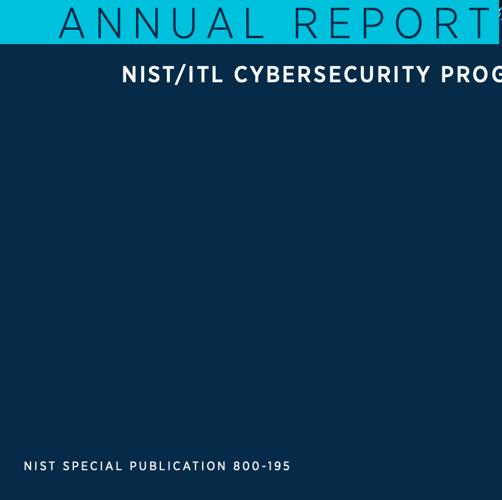
THIS PAGE IS LEFT INTENTIONALLY BLANK.
このページは意図的に空白にしてある。
未レビュー訳THIS PUBLICATION IS AVAILABLE FREE OF CHARGE FROM: http://dx.doi.org/10.6028/NIST.SP.800-195
本刊行物は次のURLから無料で入手できます：https://doi.org/10.6028/NIST.SP.800-195
未レビュー訳2 0 1 6
2016
未レビュー訳A N N U A L R E P O R T
年次報告書
未レビュー訳N I S T/ I T L C Y B E R S E C U R I T Y P R O G R A M
NIST/ITLサイバーセキュリティプログラム
未レビュー訳PATRICK O’REILLY, EDITOR
編集者：Patrick O’Reilly
未レビュー訳KRISTINA RIGOPOULOS, EDITOR
編集者：Kristina Rigopoulos
未レビュー訳Computer Security Division
コンピュータセキュリティ部門
未レビュー訳Applied Cybersecurity Division
応用サイバーセキュリティ部門
未レビュー訳Information Technology Laboratory Information Technology Laboratory
情報技術研究所 情報技術研究所
未レビュー訳CO-EDITORS: Larry Feldman Greg Witte G2, Inc. Annapolis Junction, Maryland
共同編集者：Larry Feldman、Greg Witte、G2, Inc.、米国メリーランド州アナポリス・ジャンクション
未レビュー訳THIS PUBLICATION IS AVAILABLE FREE OF CHARGE FROM https://doi.org/10.6028/NIST.SP.800-195
本刊行物は次のURLから無料で入手できます：https://doi.org/10.6028/NIST.SP.800-195
未レビュー訳S E P T E M B E R 2 0 1 7
2017年9月
未レビュー訳U.S. DEPARTMENT OF COMMERCE Wilbur L. Ross, Jr., Secretary
米国商務省 Wilbur L. Ross, Jr. 長官
未レビュー訳NATIONAL INSTITUTE OF STANDARDS AND TECHNOLOGY Kent Rochford, Acting Under Secretary of Commerce for Standards and Technology and Acting Director
米国国立標準技術研究所（NIST） Kent Rochford、商務省標準技術担当次官代行 兼 所長代行
未レビュー訳THIS PUBLICATION IS AVAILABLE FREE OF CHARGE FROM: http://dx.doi.org/10.6028/NIST.SP.800-195
本刊行物は次のURLから無料で入手できます：https://doi.org/10.6028/NIST.SP.800-195
未レビュー訳権限
A U T H O R I T Y
権限
未レビュー訳This publication has been developed by NIST in accordance with its statutory responsibilities under the Federal Information Security Modernization Act (FISMA) of 2014, 44 U.S.C. § 3541 et seq., Public Law (P.L.) 113-283. NIST is responsible for developing information security standards and guidelines, including minimum requirements for federal information systems, but such standards and guidelines shall not apply to national security systems without the express approval of appropriate federal officials exercising policy authority over such systems. This guideline is consistent with the requirements of the Office of Management and Budget (OMB)
本刊行物は、NISTの法定責務に従い、2014年連邦情報セキュリティ近代化法（FISMA）、合衆国法典第44編§3541以降、Public Law（P.L.）113-283に基づいて作成された。NISTは、連邦情報システムの最低要件を含む情報セキュリティ標準およびガイドラインを策定する責任を負う。ただし、国家安全保障システムにこれらの標準およびガイドラインを適用するには、当該システムの政策権限を持つ連邦政府職員の明示的な承認が必要である。本ガイドラインは、行政管理予算局（OMB）
未レビュー訳Circular A-130.
Circular A-130の要件と一致する。
未レビュー訳Nothing in this publication should be taken to contradict the standards and guidelines made mandatory and binding on federal agencies by the Secretary of Commerce under statutory authority. Nor should these
本刊行物の内容が、商務長官の法定権限に基づいて連邦機関に義務付けられ、拘束力を持つ標準およびガイドラインと矛盾するものと解釈すべきではない。また、これらの
未レビュー訳guidelines be interpreted as altering or superseding the existing authorities of the Secretary of Commerce, Director of the OMB, or any other federal official. This publication may be used by nongovernmental organizations on a voluntary basis and is not subject to copyright in the United States. Attribution would, however, be appreciated by NIST.
ガイドラインを、商務長官、OMB局長、またはその他の連邦政府職員の既存の権限を変更または置き換えるものとして解釈すべきでもない。本刊行物は、非政府組織が任意に利用でき、米国内で著作権の対象ではない。ただし、NISTへの出典表示を歓迎する。
未レビュー訳National Institute of Standards and Technology Special Publication 800-195 Natl. Inst. Stand. Technol. Spec. Publ. 800-195, 156 pages (September 2017) CODEN: NSPUE2
米国国立標準技術研究所 特別刊行物800-195。Natl. Inst. Stand. Technol. Spec. Publ. 800-195、156ページ（2017年9月）。CODEN：NSPUE2。
未レビュー訳This publication is available free of charge from: https://doi.org/10.6028/NIST.SP.800-195
本刊行物は次のURLから無料で入手できます：https://doi.org/10.6028/NIST.SP.800-195
未レビュー訳コンピュータシステム技術報告書
R E P O R T S O N C O M P U T E R S Y S T E M S T E C H N O L O G Y
コンピュータシステム技術に関する報告書
未レビュー訳The Information Technology Laboratory (ITL) at the National Institute of Standards and Technology (NIST) promotes the U.S. economy and public welfare by providing technical leadership for the Nation’s measurement and standards infrastructure. ITL develops tests, test methods, reference data, proof of concept implementations, and technical analyses to advance the development and productive use of information technology. ITL’s responsibilities include the development of management, administrative, technical, and physical standards and guidelines for the cost-effective security and privacy of other than national security-related information in federal information systems. The Special Publication 800-series reports on ITL’s research, guidelines, and outreach efforts in information system security, and its collaborative activities with industry,
米国国立標準技術研究所（NIST）の情報技術研究所（ITL）は、米国の計測・標準基盤に技術的リーダーシップを提供し、米国経済と公共の福祉を促進する。ITLは、情報技術の発展と生産的利用を進めるため、試験、試験方法、参照データ、概念実証の実装、および技術分析を開発する。ITLの責務には、連邦情報システムにおいて国家安全保障関連以外の情報を費用対効果よく保護し、プライバシーを確保するための管理、事務、技術、物理的な標準およびガイドラインの策定が含まれる。SP 800シリーズは、情報システムセキュリティに関するITLの研究、ガイドライン、普及活動と、産業界、
未レビュー訳government, and academic organizations.
政府機関および学術機関との協働活動を報告する。
未レビュー訳I V
IV
未レビュー訳N I ST/I TL CYB ERSECUR ITY PROGRAM ANNUAL RE PO RT 2 01 6
NIST/ITLサイバーセキュリティプログラム年次報告書｜2016
未レビュー訳THIS PUBLICATION IS AVAILABLE FREE OF CHARGE FROM: http://dx.doi.org/10.6028/NIST.SP.800-195
本刊行物は次のURLから無料で入手できます：https://doi.org/10.6028/NIST.SP.800-195
未レビュー訳謝辞
A C K N O W L E D G M E N T S
謝辞
未レビュー訳The editors, Patrick O’Reilly of the Computer Security Division (CSD) and Kristina Rigopoulos of the Applied Cybersecurity Division (ACD), would like to thank their ITL colleagues who provided write-ups on their 2016 project highlights and accomplishments for this annual report (their names are mentioned after each project write-up). The editors would also like to acknowledge Elaine Barker (CSD), Lisa Carnahan (Standards Coordination Office, NIST), Greg Witte and Larry Feldman (G2) for reviewing and providing valuable feedback for this annual report.
編集者であるコンピュータセキュリティ部門（CSD）のPatrick O’Reillyと、応用サイバーセキュリティ部門（ACD）のKristina Rigopoulosは、年次報告書に掲載する2016年のプロジェクトのハイライトと成果を寄稿したITLの同僚に謝意を表する（氏名は各プロジェクトの記述の後に記載）。また、年次報告書を査読し貴重な意見を寄せたElaine Barker（CSD）、Lisa Carnahan（NIST標準調整室）、Greg WitteおよびLarry Feldman（G2）にも謝意を表する。
未レビュー訳The editors would also like to acknowledge Kristen Dill of Dill and Company, Inc. for designing the cover and inside layout for this 2016 annual report.
編集者は、2016年次報告書の表紙と本文レイアウトをデザインしたDill and Company, Inc.のKristen Dillにも謝意を表する。
未レビュー訳免責事項
D I S C L A I M E R
免責事項
未レビュー訳Any mention of commercial products or organizations is for informationalpurposesonly;itisnotintendedtoimplyrecommendation or endorsement by the National Institute of Standards and Technology, nor is it intended to imply that the products identified are necessarily the best available for the purpose.
商用製品または組織への言及は情報提供のみを目的とする。これは、米国国立標準技術研究所による推奨または承認を意味するものではなく、記載された製品が当該目的に最も適した入手可能な製品であることを示すものでもない。
未レビュー訳商標情報
T R A D E M A R K I N F O R M AT I O N
商標情報
未レビュー訳All names are trademarks or registered trademarks of their respective owners.
すべての名称は、それぞれの所有者の商標または登録商標である。
未レビュー訳V
未レビュー訳ACK NOWL ED GM ENTS | FY 2 01 6
謝辞｜2016会計年度
未レビュー訳THIS PUBLICATION IS AVAILABLE FREE OF CHARGE FROM: http://dx.doi.org/10.6028/NIST.SP.800-195
本刊行物は次のURLから無料で入手できます：https://doi.org/10.6028/NIST.SP.800-195
未レビュー訳TA B L E O F CO N T E N T S
目次
未レビュー訳ACKNOWLEDGMENTS ...................................................................................................................................................................V
謝辞 ................................................................................................................................................................... V
未レビュー訳DISCLAIMER ...................................................................................................................................................................................V
免責事項 .............................................................................................................................................................. V
未レビュー訳TRADEMARK INFORMATION.........................................................................................................................................................V
商標情報................................................................................................................................................................. V
未レビュー訳WELCOME LETTER — 1
ご挨拶 — 1
未レビュー訳BACKGROUND INFORMATION OF ANNUAL REPORT — 3
年次報告書の背景情報 — 3
未レビュー訳THE INFORMATION TECHNOLOGY LABORATORY IMPLEMENTS THE FEDERAL INFORMATION SECURITY
情報技術研究所による連邦情報セキュリティ
未レビュー訳MANAGEMENT ACT — 4
マネジメント法の実施 — 4
未レビュー訳ITL CYBERSECURITY PROGRAM ACCOMPLISHMENTS FOR FISCAL YEAR 2016 — 9
2016会計年度のITLサイバーセキュリティプログラムの成果 — 9
未レビュー訳ITL INVOLVEMENT WITH NATIONAL AND INTERNATIONAL IT SECURITY STANDARDS — 10
ITセキュリティ標準におけるITLの国内・国際的な関与 — 10
未レビュー訳Focus on ISO and ANSI Standardization (ISO/IEC JTC1 SC27 IT Security) — 10
ISOおよびANSI標準化への注力（ISO/IEC JTC1 SC27 ITセキュリティ） — 10
未レビュー訳IT Security Techniques Standards — 10
ITセキュリティ技術標準 — 10
未レビュー訳Next Generation Access Control Standards — 11
次世代アクセス制御標準 — 11
未レビュー訳ISO Standardization of Security Requirements for Cryptographic Modules — 11
暗号モジュールのセキュリティ要件に関するISO標準化 — 11
未レビュー訳Identity Management Devices and Infrastructures Standards (JTC1 SC17 Cards and Personal Identification Devices) — 13
ID管理デバイスおよびインフラストラクチャの標準（JTC1 SC17カードおよび個人識別デバイス） — 13
未レビュー訳Cloud Computing Standards Within ISO/IEC JTC 1/SC 38 Cloud Computing and INCITS Cloud 38 — 13
ISO/IEC JTC 1/SC 38のクラウドコンピューティング標準、およびINCITS Cloud 38 — 13
未レビュー訳Biometric Standards and Associated Conformity Assessment Testing Tools — 14
生体認証標準と関連する適合性評価試験ツール — 14
未レビュー訳RISK MANAGEMENT — 14
リスク管理 — 14
未レビュー訳Framework for Improving Critical Infrastructure Cybersecurity (Cybersecurity Framework) — 14
重要インフラのサイバーセキュリティ向上のための枠組み（サイバーセキュリティフレームワーク） — 14
未レビュー訳Federal Information Security Management Act (FISMA) Implementation Project — 15
連邦情報セキュリティマネジメント法（FISMA）実施プロジェクト — 15
未レビュー訳Privacy Engineering Program — 17
プライバシーエンジニアリングプログラム — 17
未レビュー訳Cyber Supply Chain Risk Management (SCRM) — 19
サイバーサプライチェーンリスク管理（SCRM） — 19
未レビュー訳BIOMETRIC STANDARDS AND ASSOCIATED CONFORMITY ASSESSMENT TESTING TOOLS — 21
生体認証標準と関連する適合性評価試験ツール — 21
未レビュー訳SECURITY OF CYBER-PHYSICAL AND INDUSTRIAL CONTROL SYSTEMS — 22
サイバーフィジカルシステムおよび産業制御システムのセキュリティ — 22
未レビュー訳Security of Cyber Physical Systems — 22
サイバーフィジカルシステムのセキュリティ — 22
未レビュー訳Cybersecurity for Industrial Control Systems — 23
産業制御システムのサイバーセキュリティ — 23
未レビュー訳FEDERAL CYBERSECURITY RESEARCH & DEVELOPMENT (R&D) — 23
連邦サイバーセキュリティ研究開発（R&D） — 23
未レビュー訳SECURITY ASPECTS OF ELECTRONIC VOTING — 24
電子投票のセキュリティ面 — 24
未レビュー訳SOFTWARE ASSURANCE & RELIABILITY — 24
ソフトウェアの保証と信頼性 — 24
未レビュー訳COMPUTER FORENSICS — 25
コンピュータフォレンジック — 25
未レビュー訳NATIONWIDE PUBLIC SAFETY BROADBAND NETWORK (NPSBN) CYBERSECURITY — 26
全国公共安全ブロードバンドネットワーク（NPSBN）のサイバーセキュリティ — 26
未レビュー訳SMART GRID CYBERSECURITY — 27
スマートグリッドのサイバーセキュリティ — 27
未レビュー訳CYBERSECURITY AWARENESS, TRAINING, EDUCATION, AND OUTREACH — 28
サイバーセキュリティの意識向上、訓練、教育および普及 — 28
未レビュー訳National Initiative for Cybersecurity Education (NICE) — 28
サイバーセキュリティ教育のための国家イニシアチブ（NICE） — 28
未レビュー訳Computer Security Resource Center (CSRC) — 29
コンピュータセキュリティリソースセンター（CSRC） — 29
未レビュー訳Federal Computer Security Managers’ (FCSM) Forum — 30
連邦コンピュータセキュリティ管理者（FCSM）フォーラム — 30
未レビュー訳Federal Information Systems Security Educators’ Association (FISSEA) — 31
連邦情報システムセキュリティ教育者協会（FISSEA） — 31
未レビュー訳Information Security and Privacy Advisory Board (ISPAB) — 33
情報セキュリティ・プライバシー諮問委員会（ISPAB） — 33
未レビュー訳Small and Medium Size Business (SMB) Cybersecurity Outreach Workshop — 35
中小企業（SMB）向けサイバーセキュリティ普及ワークショップ — 35
未レビュー訳CRYPTOGRAPHIC STANDARDS PROGRAM — 36
暗号標準化プログラム — 36
未レビュー訳Secure Hash Algorithm-3 (SHA-3) Derived Functions (NIST SP 800-185) — 36
SHA-3（NIST SP 800-185）派生関数 — 36
未レビュー訳Random Number Generation (RNG) — 36
乱数生成（RNG） — 36
未レビュー訳Block Cipher Modes of Operation — 38
ブロック暗号の動作モード — 38
未レビュー訳Key Management — 38
鍵管理 — 38
未レビュー訳Transport Layer Security — 42
トランスポート層セキュリティ — 42
未レビュー訳Elliptic Curve Cryptography — 42
楕円曲線暗号 — 42
未レビュー訳Post-Quantum Cryptography — 43
耐量子暗号 — 43
未レビュー訳Circuit Complexity — 43
回路計算量 — 43
未レビュー訳Lightweight Cryptography — 45
軽量暗号 — 45
未レビュー訳The NIST Randomness Beacon — 45
NIST乱数ビーコン — 45
未レビュー訳V I
VI
未レビュー訳N I ST/I TL CYB ERSECUR ITY PROGRAM ANNUAL RE PO RT 2 01 6
NIST/ITL サイバーセキュリティプログラム年次報告書 2016
未レビュー訳THIS PUBLICATION IS AVAILABLE FREE OF CHARGE FROM:
本資料は以下から無料で入手できます:
未レビュー訳http://dx.doi.org/10.6028/NIST.SP.800-195
http://dx.doi.org/10.6028/NIST.SP.800-195
未レビュー訳TA B L E O F CO N T E N T S
目次
未レビュー訳Cryptography Applications in Wireless and Mobile Security — 46
無線およびモバイルセキュリティにおける暗号技術の応用 — 46
未レビュー訳Blockchains — 46
ブロックチェーン — 46
未レビュー訳Entropy as a Service (EaaS) — 47
サービスとしてのエントロピー（EaaS） — 47
未レビュー訳Automated Cryptographic Validation Testing — 48
暗号検証の自動試験 — 48
未レビュー訳VALIDATION PROGRAMS — 50
検証プログラム — 50
未レビュー訳Cryptographic Programs and Laboratory Accreditation — 50
暗号プログラムと試験所認定 — 50
未レビュー訳The Cryptographic Algorithm Validation Program (CAVP) — 52
暗号アルゴリズム検証プログラム（CAVP） — 52
未レビュー訳Automated Security Testing and Test Suite Development — 55
セキュリティ自動試験とテストスイートの開発 — 55
未レビュー訳Security Content Automation Protocol (SCAP) Validation Program — 57
Security Content Automation Protocol（SCAP）検証プログラム — 57
未レビュー訳IDENTITY AND ACCESS MANAGEMENT — 59
ID管理とアクセス管理 — 59
未レビュー訳NIST Personal Identity Verification Program (NPIVP) — 59
NIST個人識別検証プログラム（NPIVP） — 59
未レビュー訳Personal Identity Verification (PIV) and FIPS 201 Revision Efforts — 60
個人識別検証（PIV）とFIPS 201改訂の取り組み — 60
未レビュー訳Authentication — 61
認証 — 61
未レビュー訳Access Control and Privilege Management — 62
アクセス制御と特権管理 — 62
未レビュー訳Conformance Verification for Access Control Policies — 63
アクセス制御ポリシーの適合性検証 — 63
未レビュー訳Attribute-Based Access Control — 65
属性ベースアクセス制御 — 65
未レビュー訳Trusted Identities Group (TIG) — 66
信頼できるIDグループ（TIG） — 66
未レビュー訳RESEARCH IN EMERGING TECHNOLOGIES — 69
新興技術の研究 — 69
未レビュー訳Secure Development Toolchain Competitions — 69
セキュア開発ツールチェーンのコンテスト — 69
未レビュー訳Networks of “Things” — 69
「モノ」のネットワーク — 69
未レビュー訳Cloud Computing Security and Forensics — 70
クラウドコンピューティングのセキュリティとフォレンジック — 70
未レビュー訳CSD Role in the NIST Cloud Computing Program — 71
NISTクラウドコンピューティングプログラムにおけるCSDの役割 — 71
未レビュー訳Policy Machine – Next Generation Access Control — 72
Policy Machine ― 次世代アクセス制御 — 72
未レビュー訳Security for a Virtualized Infrastructure — 73
仮想化インフラストラクチャのセキュリティ — 73
未レビュー訳Cyber Threat Information Sharing — 73
サイバー脅威情報の共有 — 73
未レビュー訳The Ontology of Authentication — 74
認証のオントロジー — 74
未レビュー訳NATIONAL CYBERSECURITY CENTER OF EXCELLENCE — 76
全米サイバーセキュリティ・センター・オブ・エクセレンス — 76
未レビュー訳INTERNET INFRASTRUCTURE PROTECTION — 79
インターネットインフラストラクチャの保護 — 79
未レビュー訳ADVANCED SECURITY TESTING AND MEASUREMENTS — 82
高度なセキュリティ試験と測定 — 82
未レビュー訳Security Automation and Continuous Monitoring — 82
セキュリティの自動化と継続的モニタリング — 82
未レビュー訳Specification, Standards, and Guidance Development — 82
仕様、標準及びガイダンスの策定 — 82
未レビュー訳Security Content Automation Protocol (SCAP) — 83
Security Content Automation Protocol（SCAP） — 83
未レビュー訳Software Asset Management Standards — 85
ソフトウェア資産管理標準 — 85
未レビュー訳Development of Security Automation Consensus Standards — 86
セキュリティ自動化コンセンサス標準の策定 — 86
未レビュー訳Security Automation Reference Data — 87
セキュリティ自動化の参照データ — 87
未レビュー訳National Vulnerability Database (NVD) — 87
National Vulnerability Database（NVD） — 87
未レビュー訳National Checklist Program (NCP) — 88
National Checklist Program（NCP） — 88
未レビュー訳Apple OS X Security Configuration — 89
Apple OS Xのセキュリティ構成 — 89
未レビュー訳TECHNICAL SECURITY METRICS — 91
技術的セキュリティ指標 — 91
未レビュー訳Security Risk Analysis of Enterprise Networks Using Attack Graphs — 91
攻撃グラフを用いた企業ネットワークのセキュリティリスク分析 — 91
未レビュー訳Algorithms for Intrusion Measurement — 91
侵入測定のアルゴリズム — 91
未レビュー訳Automated Combinatorial Testing — 92
自動組合せ試験 — 92
未レビュー訳Roots of Trust — 93
信頼の起点 — 93
未レビュー訳USABILITY AND SECURITY — 94
使いやすさとセキュリティ — 94
未レビュー訳HONORS AND AWARDS — 97
表彰と受賞 — 97
未レビュー訳ITL CYBERSECURITY PROGRAM PUBLICATIONS RELEASED IN FY 2016 — 103
ITLサイバーセキュリティプログラムが2016年度に発行した出版物 — 103
未レビュー訳ITL CYBERSECURITY PROGRAM RELATED PUBLICATIONS — 109
ITLサイバーセキュリティプログラム関連出版物 — 109
未レビュー訳NIST Technical Series Publications and Other NIST Publications — 110
NIST技術シリーズ出版物及びその他のNIST出版物 — 110
未レビュー訳Abstracts of Publications Released in FY 2016 — 111
2016年度発行出版物の概要 — 111
未レビュー訳NIST Technical Series Publications and Other NIST Publications — 127
NIST技術シリーズ出版物及びその他のNIST出版物 — 127
未レビュー訳APPENDIX A: ACRONYMS — 137
付録A：略語 — 137
未レビュー訳APPENDIX B: NIST CYBERSECURITY EVENTS HELD DURING FY 2016 — 145
付録B：2016年度に開催されたNISTサイバーセキュリティ関連イベント — 145
未レビュー訳V I I
VII
未レビュー訳APPENDIX C: OPPORTUNITIES TO ENGAGE WITH ITL CYBERSECURITY PROGRAM AND NIST DURING FY 2017-2018 — 147
付録C：2017～2018年度にITLサイバーセキュリティプログラム及びNISTと連携する機会 — 147
未レビュー訳TA BL E O F CO NT ENTS | FY 2 01 6
目次 | 2016年度
未レビュー訳THIS PUBLICATION IS AVAILABLE FREE OF CHARGE FROM:
本資料は以下から無料で入手できます:
未レビュー訳http://dx.doi.org/10.6028/NIST.SP.800-195
http://dx.doi.org/10.6028/NIST.SP.800-195
未レビュー訳THIS PAGE IS LEFT INTENTIONALLY BLANK.
このページは意図的に空白にしてあります。
未レビュー訳THIS PUBLICATION IS AVAILABLE FREE OF CHARGE FROM: http://dx.doi.org/10.6028/NIST.SP.800-195
本資料は以下から無料で入手できます: http://dx.doi.org/10.6028/NIST.SP.800-195
未レビュー訳Awareness about the importance of strong cybersecurity for maintaining trust in the economy and protecting the nation is at an all-time high. So, too, are the challenges. When it comes to cybersecurity, the National Institute of Standards and Technology (NIST) has a long history of conducting path-breaking research and development, cultivating standards and best practices, and facilitating technology transitions. We rely on open, transparent, and collaborative processes that engage private and public sector participation and attract expertise from around the world. This 2016 report captures our most noteworthy accomplishments.
経済への信頼を維持し、国を保護するうえで強固なサイバーセキュリティが重要であるとの認識は、かつてないほど高まっています。同時に、課題も増しています。サイバーセキュリティに関し、米国国立標準技術研究所（NIST）は、先駆的な研究開発を行い、標準及びベストプラクティスを策定し、技術移転を促進してきた長い歴史があります。私たちは、民間部門と公共部門の参加を得て世界中から専門知識を集める、オープンで透明性の高い協働プロセスに依拠しています。本2016年報告書では、私たちの最も注目すべき成果を紹介します。
未レビュー訳In 2016, NIST continued to advance fundamental research to support security and interoperability standards and guidelines. This work was led by the Computer Security Division (CSD) in the NIST Information Technology Laboratory (ITL). Among other things, CSD is responsible for developing cybersecurity standards, guidelines, tests, and metrics for the protection of non-national security federal information systems. Recognizing the agency’s need to respond to and anticipate increasing demands for its cybersecurity expertise, NIST established the Applied Cybersecurity Division (ACD) within ITL to support additional applied research and to transition effective cybersecurity technology approaches to government and business sectors nationwide. ACD helps to drive the adoption of appropriate cybersecurity solutions by government and commercial organizations – enabling solutions-oriented collaborative interactions and offering guidance on the use of research results, standards, and best practices. Other parts of NIST also are key contributors to NIST’s cybersecurity portfolio.
2016年も、NISTはセキュリティと相互運用性に関する標準及び指針を支える基礎研究を推進しました。この取り組みは、NIST情報技術研究所（ITL）のコンピュータセキュリティ部門（CSD）が主導しました。CSDは、国家安全保障に関わらない連邦情報システムの保護に向けたサイバーセキュリティ標準、指針、試験及び指標の策定などを担っています。サイバーセキュリティの専門知識に対する需要の高まりに対応し、さらに先を見越す必要性を認識したNISTは、追加の応用研究を支援し、効果的なサイバーセキュリティ技術のアプローチを全国の政府部門及び産業界へ移転するため、ITL内に応用サイバーセキュリティ部門（ACD）を設置しました。ACDは、政府機関及び民間組織による適切なサイバーセキュリティソリューションの導入を促進し、ソリューション志向の協働を可能にするとともに、研究成果、標準及びベストプラクティスの利用に関する指針を提供します。NISTのサイバーセキュリティ活動には、他の部門も重要な貢献をしています。
未レビュー訳Strong partnerships with industry, academia and government are critical to NIST’s cybersecurity program. In 2016, NIST continued to collaborate with stakeholders from across the country and around the world to raise awareness and encourage use of the voluntary Cybersecurity Framework. In this spirit, NIST began to develop an update to the version first published in 2014. NIST also prepared a draft Cybersecurity Framework profile aligned with manufacturing sector goals and industry best practices. In addition, NIST developed the draft Baldrige Cybersecurity Excellence Builder self-assessment tool that complements the Cybersecurity Framework and helps organizations to better understand the effectiveness of their cybersecurity risk management efforts.
産業界、学界及び政府との強固な連携は、NISTのサイバーセキュリティプログラムに不可欠です。2016年、NISTは全国及び世界各地の関係者と引き続き協力し、自主的なサイバーセキュリティフレームワークへの認知を高め、その利用を促しました。この取り組みの一環として、NISTは2014年に初版を公表したフレームワークの更新に着手しました。また、製造業界の目標及び業界のベストプラクティスに沿ったサイバーセキュリティフレームワークプロファイルの草案を作成しました。さらに、同フレームワークを補完し、組織がサイバーセキュリティリスク管理の有効性をよりよく理解できるよう支援する、Baldrige Cybersecurity Excellence Builderの自己評価ツールの草案も作成しました。
未レビュー訳Looking ahead is vital in the realm of cybersecurity. Knowing that if large-scale quantum computers are ever built, they will be able to break many of the public-key cryptosystems currently in use and compromise the confidentiality and integrity of digital communication on the Internet and elsewhere, NIST is working closely with the academic community and industry to develop protective cryptographic standards that we all rely upon. Building on its successful tradition of working openly with the worldwide cryptographic community, in 2016 NIST called for submissions for quantum-resistant public-key cryptographic algorithms for standards. These algorithms must be secure against both quantum and classical computers, and should interoperate with existing communications protocols and networks. After submissions are received late in 2017, NIST plans to spend 3-5 years working with the research community and industry to analyze the candidates before selecting algorithms for standardization.
サイバーセキュリティの分野では、将来を見据えることが重要です。大規模量子コンピューターが実現すれば、現在使われている多くの公開鍵暗号システムを破り、インターネットその他のデジタル通信の機密性と完全性を損なう可能性があります。この認識のもと、NISTは、私たちが依存する防御用暗号標準を開発するため、学界及び産業界と緊密に取り組んでいます。世界の暗号コミュニティとオープンに協力してきた実績を踏まえ、NISTは2016年に、標準化に向けた耐量子公開鍵暗号アルゴリズムの提案を募集しました。これらのアルゴリズムは、量子計算機と従来型計算機の両方に対して安全であり、既存の通信プロトコルやネットワークと相互運用できる必要があります。2017年後半に提案を受領した後、NISTは研究コミュニティ及び産業界と3～5年間かけて候補を分析し、その後、標準化するアルゴリズムを選定する計画です。
未レビュー訳Identity management is fundamental to security management. In 2016, NIST continued to advance solutions in identity management through projects with partners who manage innovative but practical real-world solutions. Also in the past year, NIST produced an introduction to the concepts of privacy engineering and risk management for federal information systems. The goal is to help decrease privacy risks and enable organizations to make purposeful decisions about resource allocation and effective implementation of controls in information systems. NIST also initiated an update to our Digital
ID管理は、セキュリティ管理の基盤です。2016年、NISTは革新的でありながら実用的な現実のソリューションを管理するパートナーとのプロジェクトを通じ、ID管理ソリューションの推進を続けました。また、この年、NISTは連邦情報システム向けに、プライバシーエンジニアリングとリスク管理の概念を紹介する資料を作成しました。その目的は、プライバシーリスクを低減するとともに、組織が情報システムにおけるリソース配分や管理策の効果的な実装について、目的に沿った意思決定を行えるようにすることです。NISTはさらに、デジタル
未レビュー訳1
未レビュー訳WELCO M E LE T T E R | FY 2 01 6
ウェルカムレター | 2016年度
未レビュー訳THIS PUBLICATION IS AVAILABLE FREE OF CHARGE FROM: http://dx.doi.org/10.6028/NIST.SP.800-195
本資料は以下から無料で入手できます: http://dx.doi.org/10.6028/NIST.SP.800-195
未レビュー訳Identity Guideline (Special Publication 800-63), which provides technical guidelines to agencies for the implementation of digital authentication. Building from these foundational resources, NIST’s efforts will focus on strengthening the security, privacy, usability and interoperability of digital identity solutions that meet an organization’s identity and access management needs throughout the system lifecycle.
IDガイドライン（Special Publication 800-63）は、政府機関によるデジタル認証の実装に関する技術指針を示しています。これらの基礎資料を踏まえ、NISTは、システムのライフサイクル全体にわたり組織のID・アクセス管理のニーズを満たすデジタルIDソリューションのセキュリティ、プライバシー、使いやすさ及び相互運用性の強化に取り組みます。
未レビュー訳During 2016, NIST’s National Cybersecurity Center of Excellence (NCCoE) moved into a new permanent facility that
2016年、NISTのNational Cybersecurity Center of Excellence（NCCoE）は新たな恒久施設に移転しました。その施設は
未レビュー訳C Y E R S E C U R I T Y O F C Y B E R - P H Y S I C A L S Y S T E M S | C P S
原文のみ
expanded the Center’s workspace from four to 23 separate, flexible laboratories—including two larger areas capable of safely hosting large equipment, such as automobiles. This additional space allows NCCoE to increase its collaborations and projects. In 2016, the Center published draft practice guides to support industry sectors, including healthcare, financial services, and energy; these guides are now beginning to be put to productive use. NCCoE also published draft documents to support security in key technology areas, such as cloud computing and mobile applications.
センターの作業スペースを4室から23室の個別に柔軟利用できる実験室へと拡張しました。そのうち2室は、自動車などの大型機器を安全に設置できる広さがあります。この追加スペースにより、NCCoEは連携やプロジェクトを拡大できます。2016年、同センターは医療、金融サービス、エネルギーなどの業界を支援する実践ガイドの草案を公表し、これらは活用され始めています。NCCoEはまた、クラウドコンピューティングやモバイルアプリケーションなど、主要な技術分野のセキュリティを支援する文書の草案も公表しました。
未レビュー訳The National Initiative for Cybersecurity Education (NICE), led by NIST, is a partnership between government, academia, and the private sector that is focused on promoting a robust network and an ecosystem of cybersecurity education, training, and workforce development. In 2016, NIST released an update to the NICE Cybersecurity Workforce Framework (NCWF); it already is being used in the private and public sectors to more effectively identify, recruit, develop and maintain cybersecurity talent. The NICE framework provides a common language to categorize and describe cybersecurity work that helps organizations to build a strong staff to protect systems and data.
NISTが主導するNational Initiative for Cybersecurity Education（NICE）は、サイバーセキュリティ教育、訓練及び人材育成の強固なネットワークとエコシステムの促進に取り組む、政府、学界及び民間部門の連携組織です。2016年、NISTはNICE Cybersecurity Workforce Framework（NCWF）を更新し、民間部門と公共部門で既に活用されています。これにより、サイバーセキュリティ人材の特定、採用、育成及び定着をより効果的に進められます。NICEフレームワークは、サイバーセキュリティ業務を分類・記述する共通言語を提供し、組織がシステムとデータを守るための強固な人員体制を構築できるよう支援します。
未レビュー訳Our dedicated staff has accomplished a great deal in 2016, developing standards and working closely with scores of partners and drawing upon hundreds of private and public sector organizations and individuals. This is not a static endeavor. For example, NIST is fully aware of the urgent need to more aggressively address the security challenges of the Internet of Things and, more broadly, our connected world.
NISTの職員は、2016年に多くの成果を上げ、標準を策定するとともに、多数のパートナーと緊密に協力し、数百の民間・公共機関や個人の知見を活用しました。この取り組みは継続的なものです。例えばNISTは、モノのインターネット、さらには私たちがつながる世界全体のセキュリティ課題に、より積極的に取り組む必要性を強く認識しています。
未レビュー訳We welcome any and all suggestions about where and how we can better provide the nation with the kind of cybersecurity information and tools that it needs in order to advance and protect our economy and our country.
国の経済と国民を前進・保護するために必要なサイバーセキュリティ情報やツールを、どのようにすればよりよく提供できるかについて、皆様からのあらゆるご提案を歓迎します。
未レビュー訳Donna F. Dodson, Chief Cybersecurity Advisor
Donna F. Dodson（首席サイバーセキュリティ顧問）
未レビュー訳2
未レビュー訳N I ST/I TL CYB ERSECUR ITY PROGRAM ANNUAL RE PO RT 2 01 6
NIST/ITL サイバーセキュリティプログラム年次報告書 2016
未レビュー訳THIS PUBLICATION IS AVAILABLE FREE OF CHARGE FROM: http://dx.doi.org/10.6028/NIST.SP.800-195
本資料は以下から無料で入手できます: http://dx.doi.org/10.6028/NIST.SP.800-195
未レビュー訳B AC KG R O U N D I N F O R M AT I O N O F A N N UA L R E P O R T
年次報告書の背景情報
未レビュー訳This Annual Report, formerly the ComputerSecurityDivisionAnnualReport, has been renamed to the Information TechnologyLaboratory(ITL)CybersecurityProgramAnnualReport. This change reflects the opportunity to describe the many cybersecurity program highlights and accomplishments from throughout the laboratory. This Annual Report is organized into several sections, each identified by a title page. Please note: This Annual Report covers the Federal Government’s Fiscal Year (FY) 2016 from October 1, 2015 to September 30, 2016. ITL, an operating unit under NIST, contains seven divisions. Five of these seven divisions are involved with cybersecurity efforts at NIST. Throughout this Annual Report, there are some references to particular division activities, and to work by groups within those divisions. Primarily, the authors have attributed accomplishments to ITL, since ITL staff have been involved with each cybersecurity program included in this Annual Report. At the end of each program/project write-up, one or more points of contact are provided and may be used to address questions or request for more information. Many sections also include additional references that readers may find valuable. Below is a condensed hierarchical chart of ITL’s structure:
本年次報告書は、以前「Computer Security Division Annual Report」と呼ばれていましたが、「Information Technology Laboratory（ITL）Cybersecurity Program Annual Report」へ改称されました。この変更により、研究所全体にわたるサイバーセキュリティプログラムのさまざまな主要活動や成果を紹介できるようになりました。本報告書はいくつかの節で構成され、各節にはタイトルページがあります。なお、本報告書が対象とする連邦政府の2016会計年度（FY）は、2015年10月1日から2016年9月30日までです。NISTの運営部門であるITLには7つの部門があり、そのうち5部門がNISTのサイバーセキュリティ活動に関わっています。本報告書では、特定の部門の活動や、それらの部門内グループの業務にも触れています。各成果は主としてITLに帰属させています。本報告書に含まれる各サイバーセキュリティプログラムにはITL職員が関与しているためです。各プログラム／プロジェクトの説明末尾には、質問や詳細情報の依頼に利用できる連絡先を1件以上記載しています。また、多くの節には参考となる追加資料も掲載しています。以下に、ITLの組織構造を簡略化した階層図を示します。
未レビュー訳情報技術研究所（ITL）本部
I N F O R M AT I O N T E C H N O L O G Y L A B O R AT O R Y ( I T L ) H E A D Q U A R T E R S
情報技術研究所（ITL）本部
未レビュー訳Charles Romine, Director Jim St. Pierre, DeputyDirector (5 of the 7 divisions (identified below) are involved with the ITL Cybersecurity Program)
Charles Romine（所長）／Jim St. Pierre（副所長）（以下に示す7部門のうち5部門がITLサイバーセキュリティプログラムに関与）
未レビュー訳Advanced Network Technologies Division (ANTD) Abdella Battou, DivisionChief
Advanced Network Technologies Division（ANTD）— Abdella Battou（部門長）
未レビュー訳Applied Cybersecurity Division (ACD) Kevin Stine, DivisionChief
Applied Cybersecurity Division（ACD）— Kevin Stine（部門長）
未レビュー訳Computer Security Division (CSD) Matthew Scholl, DivisionChief
Computer Security Division（CSD）— Matthew Scholl（部門長）
未レビュー訳Information Access Division (IAD) Shahram Orandi, DivisionChief
Information Access Division（IAD）— Shahram Orandi（部門長）
未レビュー訳Software and Systems Division (SSD) Ram Sriram, DivisionChief
Software and Systems Division（SSD）— Ram Sriram（部門長）
未レビュー訳ITL’s Cybersecurity Program is very excited to share these achievements and accomplishments made during the 2016 Fiscal Year in this Annual Report.
ITLのサイバーセキュリティプログラムは、2016会計年度に達成したこれらの成果を本年次報告書で紹介できることを大変うれしく思います。
未レビュー訳3
未レビュー訳I NT RO DU CT I O N | FY 2 01 6
序文 | 2016年度
未レビュー訳THIS PUBLICATION IS AVAILABLE FREE OF CHARGE FROM: http://dx.doi.org/10.6028/NIST.SP.800-195
本資料は以下から無料で入手できます: http://dx.doi.org/10.6028/NIST.SP.800-195
未レビュー訳原本PDFの抜粋画像

This section contains a list of the major activities that were accomplished during FY 2016 by the ITL Cybersecurity Program. Detailed explanations of these activities are provided in the next section.
本節では、ITLサイバーセキュリティプログラムが2016会計年度に達成した主な活動を一覧にしています。各活動の詳細は次節で説明します。
未レビュー訳原文のみ
engineering; trustworthy email; and virtual
原文更新後、再確認待ち
I N F O R M A T I O N T E C H N O L O G Y
情報技術
未レビュー訳machine (VM) protection.
マシン（VM）の保護。
未レビュー訳L A B O R A T O R Y ( I T L )
研究所（ITL）
未レビュー訳•Thirty-one NIST Interagency/Internal Reports
•NIST省庁間／内部報告書31件
未レビュー訳C Y B E R S E C U R I T Y P R O G R A M
サイバーセキュリティプログラム
未レビュー訳(NISTIR) (18 approved as final and 13 drafts)
（NISTIR。最終版承認18件、草案13件）
未レビュー訳I M P L E M E N T S F E D E R A L
連邦
未レビュー訳were issued on a variety of topics, including:
が発行され、以下の多様なトピックを扱っています:
未レビュー訳I N F O R M A T I O N S E C U R I T Y
情報セキュリティ
未レビュー訳Cryptography (post-quantum cryptography,
暗号（耐量子暗号、
未レビュー訳M A N A G E M E N T A C T
管理法を実施する
未レビュー訳lightweight cryptography, NIST cryptographic standards and guidelines development process); mobile security (mobile devices, infrastructure and platforms); attribute metadata; automation
軽量暗号、NIST暗号標準及びガイドラインの策定プロセス）；モバイルセキュリティ（モバイル端末、インフラストラクチャ及びプラットフォーム）；属性メタデータ；自動化
未レビュー訳The E-Government Act, Public Law 107-347, passed by
電子政府法（Public Law 107-347）は、
未レビュー訳support for security control assessments;
セキュリティ管理策の評価支援；
未レビュー訳the 107th Congress and signed into law by the President in
第107議会で可決され、2002年12月に大統領が署名して成立し、
未レビュー訳catalyzing the identity ecosystem; de-identification
IDエコシステムの活性化；個人情報の
未レビュー訳December 2002, recognized the importance of information
情報セキュリティが
未レビュー訳of personal information; Long-Term Evolution
非識別化；Long-Term Evolution
未レビュー訳security to the economic and national security interests of
米国の経済及び国家安全保障上の利益にとって
未レビュー訳(LTE) architecture overview and security analysis;
（LTE）アーキテクチャの概要とセキュリティ分析；
未レビュー訳the United States. Title III of the E-Government Act, titled
重要であることを認識しました。電子政府法第III編の表題は、
未レビュー訳PIV; policy machine (access control framework);
PIV；Policy Machine（アクセス制御フレームワーク）；
未レビュー訳the Federal Information Security Management Act (FISMA)
連邦情報セキュリティ管理法（FISMA）
未レビュー訳public safety mobile applications; SCAP; security
公共安全向けモバイルアプリケーション；SCAP；セキュリティ：
未レビュー訳of 2002, included the duties and responsibilities for the
（2002年制定）は、
未レビュー訳of interactive and automated access management
インタラクティブ及び自動化されたアクセス管理
未レビュー訳National Institute of Standards and Technology, Information
米国国立標準技術研究所（NIST）の情報
未レビュー訳using Secure Shell (SSH); software identification
におけるSecure Shell（SSH）の利用；ソフトウェア識別
未レビュー訳Technology Laboratory. There are multiple divisions within
技術研究所（ITL）に任務と責任を定めました。ITL内には複数の部門があり、
未レビュー訳(SWID) tags; strategic U.S. Government
（SWID）タグ；米国政府の国際標準化活動への戦略的参加；
未レビュー訳ITL that are involved with cybersecurity programs/projects.
それらの部門はサイバーセキュリティプログラム／プロジェクトに関与しています。
未レビュー訳engagement in international standardization;
クラウド上の信頼できる地理位置情報；及び脆弱性
未レビュー訳The work is being conducted collaboratively between the
この業務は各部門の協力のもと
未レビュー訳trusted geolocation in the cloud; and vulnerability
記述オントロジー（VDO）。
未レビュー訳divisions. In December 2014, the 113th Congress updated
2014年12月、第113議会は
未レビュー訳description ontology (VDO).
記述オントロジー（VDO）。
未レビュー訳FISMA as the Federal Information Security Modernization Act (Public Law 113-283). NIST ITL responsibilities were • The National Cybersecurity Center of Excellence unchanged in the update. In 2016, the ITL Cybersecurity
FISMAをFederal Information Security Modernization Act（Public Law 113-283）に改正しました。NIST ITLの責務は改正後も変わりませんでした。2016年、ITLサイバーセキュリティ
未レビュー訳(NCCoE) moved into a new permanent facility:
・全米サイバーセキュリティ・センター・オブ・エクセレンス（NCCoE）は新たな恒久施設に移転しました。
未レビュー訳Program addressed its assignment through the following
プログラムは、割り当てられた任務を次の
未レビュー訳This facility was made possible by the state of
この施設の実現には、
未レビュー訳major activities:
主な活動を通じて遂行しました。
未レビュー訳Maryland and Montgomery County, Maryland, and has almost 60,000 square feet of modern
メリーランド州及びメリーランド州モンゴメリー郡の支援を受け、約6万平方フィートの近代的な
未レビュー訳•Forty-three NIST Special Publications (SP) (20 physical space and IT systems. The new facility approved as final and 23 drafts) were issued, expanded the Center’s workspace from four providing management, operational, and to twenty-two separate, flexible laboratories— technical security guidelines in topic areas including two larger areas capable of safely including: housing large equipment (including a vehicle that The 2015 annual report; cryptography will be used in an upcoming project on auto-(cryptographic standards used for the Federal related cybersecurity issues). This additional Government, block cipher modes of operation, space allows NCCoE to increase its collaboration key management, random bit generator (RBG), and to undertake new projects. Secure Hash Algorithm-3 (SHA-3) cryptography, transitioning the use of cryptographic algorithms • The Strategic Plan for the National Initiative for and key lengths); mobile security (enterprise Cybersecurity Education (NICE) was issued: telework, remote access and bring-your-own With a mission of energizing and promoting a device (BYOD), mobile device security – cloud robust network and an ecosystem of cybersecurity and hybrid builds): application whitelisting; cyber education, training, and workforce development, threat sharing; cybersecurity event recovery; data-this plan lays out important goals for the centric system threat modeling; de-identifying cybersecurity workforce. (See: government datasets; asset management – http://csrc.nist.gov/nice/about/strategicplan. financial services; guidelines for checklist users html) and developers; networks of “things”; personal
•物理スペースとITシステムを備えています。新施設はセンターの作業スペースを4室から22室の個別に利用できる柔軟な実験室へと拡張しました。そのうち2室は、大型機器を安全に収容できる広さがあり、今後の自動車関連サイバーセキュリティプロジェクトで使う車両も設置できます。この追加スペースにより、NCCoEは連携を拡大し、新たなプロジェクトに取り組めるようになりました。NISTは2016年度に、特別刊行物（SP）43件（最終版承認20件、草案23件）を発行し、管理、運用及び技術面のセキュリティ指針を提供しました。主なテーマには、2015年年次報告書、暗号（連邦政府で用いる暗号標準、ブロック暗号モード、鍵管理、乱数生成器（RBG）、Secure Hash Algorithm-3（SHA-3）暗号、暗号アルゴリズム及び鍵長の移行）、モバイルセキュリティ（企業テレワーク、リモートアクセス、BYOD、モバイル端末のセキュリティ、クラウド及びハイブリッド構成）、アプリケーションの許可リスト化、サイバー脅威の共有、サイバーセキュリティ事案からの復旧、データ中心のシステム脅威モデリング、政府データセットの非識別化、金融サービスの資産管理、チェックリスト利用者及び開発者向け指針、「モノ」のネットワーク、個人、並びにNICEの戦略計画が含まれます。この計画は、サイバーセキュリティ教育、訓練及び人材育成を促進する強固なネットワークとエコシステムの実現を目指し、サイバーセキュリティ人材にとって重要な目標を定めています（https://csrc.nist.gov/nice/about/strategicplan.html）。
未レビュー訳•A draft Cybersecurity Framework profile for
•製造業者向けサイバーセキュリティフレームワークプロファイルの草案が
未レビュー訳identification verification (PIV); protecting
個人識別検証（PIV）；管理対象非機密情報を保護する
未レビュー訳manufacturers was developed and issued:
策定・公表されました。
未レビュー訳Controlled Unclassified Information within
非連邦情報システム及び組織内で
未レビュー訳This profile can be used as a roadmap for reducing
このプロファイルは、製造業者のサイバーセキュリティリスクを低減するためのロードマップとして使用でき、製造業の目標及び業界のベストプラクティスに沿っています。
未レビュー訳nonfederal information systems and organizations;
非連邦情報システム及び組織；
未レビュー訳cybersecurity risk for manufacturers and is aligned
製造業者のサイバーセキュリティリスクを低減するためのロードマップとして使用でき、
未レビュー訳securing Apple Operating System (OS) X; security
Apple OS Xの保護；セキュリティ
未レビュー訳5
未レビュー訳with manufacturing sector goals and industry best
製造業の目標及び業界の最良の
未レビュー訳content automation protocol (SCAP); systems
Security Content Automation Protocol（SCAP）；システム
未レビュー訳practices.
実践に沿っています。
未レビュー訳I T L I M PL EM ENTS T H E F IS M A ACT I V IT IE S | FY 2 01 6
ITLによるFISMA活動の実施 | 2016年度
未レビュー訳THIS PUBLICATION IS AVAILABLE FREE OF CHARGE FROM: http://dx.doi.org/10.6028/NIST.SP.800-195
本資料は以下から無料で入手できます: http://dx.doi.org/10.6028/NIST.SP.800-195
未レビュー訳•The Baldrige Cybersecurity Excellence Builder the cryptographic algorithm testing service to be hosted at NIST was begun, with the full (BCEB) self-assessment tool was developed and implementation expected to take approximately issued for public comment: The BCEB, aligned to the Cybersecurity Framework, one year. (See: http://csrc.nist.gov/projects/ is a self-assessment tool to help organizations acvt) better understand the effectiveness of their
•Baldrige Cybersecurity Excellence Builder（BCEB）の自己評価ツールが開発され、パブリックコメント用に公開されました。BCEBはCybersecurity Frameworkに沿った自己評価ツールです。｜NISTに設置する暗号アルゴリズム試験サービスの運用を開始し、本格稼働まで約1年を見込んでいます（参照：http://csrc.nist.gov/projects/acvt）。
未レビュー訳•Continued research and reporting results in
•研究を継続し、その成果を報告する分野：
未レビュー訳cybersecurity risk management efforts. (See:
組織が自らのサイバーセキュリティリスク管理の有効性をよりよく理解できるよう支援します（参照：
未レビュー訳software testing:
ソフトウェア試験
未レビュー訳https://www.nist.gov/baldrige/products-services/
https://www.nist.gov/baldrige/products-services/
未レビュー訳In software testing, the oracle problem refers
ソフトウェア試験でいうオラクル問題とは、
未レビュー訳baldrige-cybersecurity-initiative)
baldrige-cybersecurity-initiative）
未レビュー訳to determining the expected output for a given
与えられた入力の集合に対する期待出力を決定する問題を指します。
未レビュー訳•Continued to research, evaluate and develop set of inputs. A determination of the expected output normally requires human involvement or a standards for Post-Quantum Cryptography mathematical model of the specification. ITL has (PQC): NIST announced a Call for Proposals to solicit, developed an oracle-free software testing method evaluate, and standardize quantum-resistant for which NIST filed a patent application. The test public key cryptography (a.k.a. post-quantum settings for an input factor may represent ranges cryptography (PQC)) algorithms through a Federal of values (called equivalence classes) for which the Register Notice (FRN). The team solicited public output is expected to remain unchanged. comments regarding requirements and evaluation
•耐量子暗号（PQC）標準の研究、評価及び策定を継続：NISTは連邦官報告示（FRN）を通じて、量子耐性公開鍵暗号（ポスト量子暗号（PQC）とも呼ばれる）アルゴリズムの提案を募集し、評価・標準化することを発表しました。チームは要件及び評価基準についてパブリックコメントを募集しました。｜期待出力の決定には、通常、人手または仕様の数理モデルが必要です。ITLは、NISTが特許出願したオラクル不要のソフトウェア試験方法を開発しました。入力因子の試験設定は、出力が変わらないと期待される値の範囲（同値類）を表す場合があります。
未レビュー訳•Continued research and development of a new
•新たな
未レビュー訳criteria, which were subsequently finalized. NIST
評価基準を確定しました。NISTは
未レビュー訳conformance test tool for the ANSI/NIST-ITL
ANSI/NIST-ITL規格に適合する試験ツールの
未レビュー訳plans to spend three to five years analyzing the
NISTは3～5年間かけて
未レビュー訳Machine Readable Table (MRT) Biometric Data
機械可読表（MRT）生体データ
未レビュー訳submitted algorithms before selecting algorithms
応募されたアルゴリズムを分析し、標準化するアルゴリズムを
未レビュー訳Formats:
形式：
未レビュー訳for standardization, during which time NIST will
選定する計画です。その間、NISTは
未レビュー訳A command-line interface was developed that
コマンドラインインターフェースを開発し、
未レビュー訳engage with the research community through
研究コミュニティと
未レビュー訳tests the MRTs themselves for conformance to
MRT自体の仕様適合性を試験するとともに、
未レビュー訳conferences and workshops.
会議やワークショップを通じて連携します。
未レビュー訳the specification, in addition to testing American
米国
未レビュー訳•Initiated a lightweight cryptography project National Standards Institute (ANSI)/NIST-ITL Transactions. An initial graphical user interface was to study the performance of the current also developed to allow an easy-to-use software NIST-approved cryptographic standards on suite for end users. National standard bodies constrained devices: To better understand the need for dedicated were encouraged to further the advancements of lightweight cryptography, ITL has created a biometric data interchange format standards. portfolio of lightweight primitives through an
•国家規格協会（ANSI）/NIST-ITL Transactionsも試験し、エンドユーザー向けに使いやすいソフトウェアスイート用の初期グラフィカルユーザーインターフェースも開発しました。国家標準機関には、生体データ交換形式標準をさらに発展させるよう促しました。｜現行のNIST承認済み暗号標準が制約付きデバイス上でどのように機能するかを調べる軽量暗号プロジェクトを開始しました。専用の軽量暗号の必要性を把握するため、ITLは軽量暗号プリミティブ群をオープンなプロセスで整備し、
未レビュー訳•Represented the NIST/NTIA PSCR (Public Safety
•NIST/NTIA Public Safety
未レビュー訳open process. ITL will evaluate and recommend
ITLはアルゴリズムを評価し、プロファイルに基づいて推奨します。
未レビュー訳Communications Research Program), FirstNet
通信研究プログラム（PSCR）とFirstNet
未レビュー訳algorithms based on profiles, which consist of a set
プロファイルは、
未レビュー訳(the US First Responders’ Network Authority),
（米国First Responders’ Network Authority）
未レビュー訳of design goals, physical characteristics of target
設計目標及び対象デバイスの物理的特性、
未レビュー訳and Public Safety stakeholders in the 3GPP (Third
及び公共安全関係者を3GPP（第3世代パートナーシッププロジェクト）で
未レビュー訳devices, performance characteristics imposed by
アプリケーションが求める性能特性、
未レビュー訳Generation Partnership Project):
代表しました。
未レビュー訳the applications, and security characteristics.
及びセキュリティ特性の組み合わせから成ります。
未レビュー訳The International Standards Organization,
暗号分野のいくつかの重要な研究領域で専門性の向上を継続：
未レビュー訳•Continued to develop expertise in several critical which is developing the next-generation telecommunications standard, LTE (Long Term research areas in cryptography: ITL continues to conduct research into post-Evolution), is ensuring that features critical to Public quantum cryptography (PQC), quantum Safety are incorporated into the standards. algorithms, elliptic curve cryptography (ECC),
•ITLはポスト量子暗号（PQC）、量子アルゴリズム及び楕円曲線暗号（ECC）の研究を続けています。｜国際標準化機構（ISO）は次世代通信規格LTE（Long Term Evolution）を策定しており、公共安全に不可欠な機能を規格に盛り込むよう取り組んでいます。
未レビュー訳•Continued refinement and support for the USG
•米国政府（USG）の
未レビュー訳privacy-enhancing cryptography, and lightweight
プライバシー強化暗号及び軽量
未レビュー訳Federal Identity Program:
連邦IDプログラムの継続的な改善と支援を実施：
未レビュー訳cryptographic schemes for constrained
暗号方式
未レビュー訳In continued support of Homeland Security
国土安全保障大統領指令第12号（HSPD-12）及び
未レビュー訳environments.
制約付き環境向けの
未レビュー訳Presidential Directive-12 (HSPD-12) and Federal
連邦情報処理標準201-2（FIPS 201-2）を引き続き支援するため、NISTの個人識別検証（PIV）プログラムは関連文書を更新・改訂しました。
未レビュー訳•A NIST/Industry joint working group was created Information Processing Standard 201-2 (FIPS 201-2), the NIST Personal Identity Verification (PIV) to study the automation of cryptographic Program updated and refined several supporting implementation testing: After working with industry on the protocol documents. necessary to exchange cryptographic test data
•NISTと産業界の合同作業部会を設置し、暗号実装試験の自動化を検討しました。業界と暗号試験データを交換するために必要なプロトコルを策定し、
未レビュー訳6
未レビュー訳in an automated fashion, the development of
自動化された方法で、
未レビュー訳N I ST/I TL CYB ERSECUR ITY PROGRAM ANNUAL RE PO RT 2 01 6
NIST/ITL サイバーセキュリティプログラム年次報告書 2016
未レビュー訳THIS PUBLICATION IS AVAILABLE FREE OF CHARGE FROM: http://dx.doi.org/10.6028/NIST.SP.800-195
本資料は以下から無料で入手できます: http://dx.doi.org/10.6028/NIST.SP.800-195
未レビュー訳•Continued involvement, research, and those comments, and coordination with partners within the Joint Task Force (JTF) Transformation development of Virtualization Guidance and Initiative. SP 800-53 provides organizations with Standards: As a natural follow-up to the publication of the security controls necessary to appropriately security guidelines for hypervisor deployment strengthen their systems and the environments in for server virtualization, ITL published SP 800-which those systems operate. 125B, SecureVirtualNetworkConfigurationfor
•仮想化ガイダンス及び標準に関する関与、研究、策定を継続：サーバー仮想化向けハイパーバイザー導入のセキュリティ指針の公表を受け、ITLはSP 800-125B「仮想マシン（VM）保護のためのセキュアな仮想ネットワーク構成｜これらの意見への対応とJoint Task Force（JTF）Transformation Initiativeの関係者との調整を行いました。SP 800-53は、組織がシステム及び運用環境を適切に強化するためのセキュリティ管理策を提供します。
未レビュー訳•Published the Initial Public Draft (IPD) of SP 800-
•SP 800-の初期公開草案（IPD）を公表しました。
未レビュー訳VirtualMachine(VM)Protection, after extensive
」は広範な
未レビュー訳171 Revision 1, Protecting Controlled Unclassified
171 Rev. 1「非連邦情報システム及び組織における管理対象非機密情報の保護」
未レビュー訳public comments, followed by a conference paper
パブリックコメントを経て、
未レビュー訳Information in Nonfederal Information Systems
に関する
未レビュー訳titled “AnalysisofVirtualNetworkingOptionsfor
「仮想マシン保護のための仮想ネットワーク選択肢の分析」と題する会議論文を
未レビュー訳and Organizations:
：
未レビュー訳SecuringVirtualMachines.” ITL also submitted two
発表しました。ITLはさらに2件の
未レビュー訳This draft provides guidance to federal agencies
この草案は連邦政府機関に指針を提供します。
未レビュー訳Special Publications and three conference papers
特別刊行物及び3件の会議論文
未レビュー訳for the protection of Controlled Unclassified
管理対象非機密情報（CUI）を保護するための指針であり、
未レビュー訳on Virtualization Security to ISO/IEC JTC1/SC27/
ISO/IEC JTC1/SC27/
未レビュー訳Information when such information is resident in
情報が
未レビュー訳WG4 as a NIST/US Contribution. The submissions
WG4にNIST/米国提案として提出しました。提出物は
未レビュー訳nonfederal systems and organizations.
非連邦システム及び組織に存在する場合の保護を扱います。
未レビュー訳have now resulted in the ISO/IEC working draft
ISO/IEC作業草案の
未レビュー訳•Made significant contributions in the design,
•インターネットのグローバルルーティングプロトコル（BGP）の
未レビュー訳21878.
21878になりました。
未レビュー訳standardization, test and measurement of
セキュリティと堅牢性を向上させる技術の設計、標準化、試験及び測定に
未レビュー訳•Ongoing involvement and outreach support technologies to improve the security and among various programs: robustness of the Internet’s global routing ITL provided assistance to agencies and the private protocol (Border Gateway Protocol (BGP)): sector through many outreach programs, including ITL’s Internet Infrastructure Protection (IIP) the National Initiative for Cybersecurity Education program works with industry to develop the (NICE), the Federal Information Systems Security measurement science and new standards Educators’ Association (FISSEA), and the Federal necessary to ensure the robustness, scalability, and Computer Security Managers’ Forum. security of the global Internet.
•大きく貢献しました。ITLのInternet Infrastructure Protection（IIP）プログラムは、世界のインターネットの堅牢性、拡張性及びセキュリティを確保するため、産業界と協力して測定科学及び新たな標準を開発しています。｜多様なプログラムへの継続的な関与とアウトリーチ支援：ITLは、NICE、Federal Information Systems Security Educators’ Association（FISSEA）、Federal Computer Security Managers’ Forumなどの活動を通じ、政府機関及び民間部門を支援しました。
未レビュー訳•Continued support and involvement of the
•支援と関与を継続した対象：
未レビュー訳•Continued research and testing with the
•次の分野の研究及び試験を継続：
未レビュー訳Information Security and Privacy Advisory Board
情報セキュリティ・プライバシー諮問委員会
未レビュー訳Usability and Security project:
ユーザビリティとセキュリティのプロジェクト：
未レビュー訳(ISPAB):
（ISPAB）：
未レビュー訳The ITL usability team’s research focused primarily
ITLのユーザビリティチームの研究は主に
未レビュー訳NIST solicited recommendations from the
NISTは
未レビュー訳in four areas: passwords, understanding user
4つの分野に焦点を当てました。パスワード、ユーザーの
未レビュー訳Information Security and Privacy Advisory
情報セキュリティ・プライバシー諮問委員会
未レビュー訳behavior, cryptography, and privacy.
行動、暗号及びプライバシー。
未レビュー訳Board (ISPAB) on draft standards and guidelines
（ISPAB）に、情報セキュリティ及びプライバシーに関する
未レビュー訳•Continued research, developing and updating
•支援ツールの研究、開発及び更新を継続し、次の分野にリソースを提供：
未レビュー訳regarding information security and privacy
草案の標準及び指針についての提言を求め、
未レビュー訳support tools, and providing resources for
ソフトウェア保証・信頼性及び
未レビュー訳issues.
課題の改善に役立てました。
未レビュー訳the Software Assurance and Reliability, and
ソフトウェア保証・信頼性、及び
未レビュー訳•Provided research, collaboration, development Computer Forensics projects: and improving the System Security Engineering ITL produced reference data and test methods Initiative: for computer forensics and software quality to ITL published the final public draft of SP 800-160, support the needs of the software assurance, SystemsSecurityEngineering:Considerationsfor law enforcement, and forensics communities for aMultidisciplinaryApproachintheEngineering quality and efficiency improvements. ofTrustworthySecureSystems, to address the
•システムセキュリティエンジニアリング・イニシアチブの研究、協働、開発及び改善を実施：ITLはSP 800-160の最終公開草案「システムセキュリティエンジニアリング：信頼できるセキュアなシステムのエンジニアリングにおける学際的アプローチに関する考察」を発行し、より防御可能で存続性の高いシステムを構築するために必要なエンジニアリング主導の活動を扱いました。｜コンピュータフォレンジックプロジェクトでは、ITLはコンピュータフォレンジック及びソフトウェア品質の参照データと試験方法を作成し、法執行機関及びフォレンジック分野が求める品質・効率の改善を支援しました。
未レビュー訳•Support of FISMA, ITL conducted workshops,
•FISMAを支援するため、ITLはワークショップ、
未レビュー訳engineering-driven actions necessary to develop
より防御可能で存続性の高いシステムの構築に必要な
未レビュー訳awareness briefings, and outreach to ITL
啓発説明会及びITLの顧客へのアウトリーチを実施：
未レビュー訳more defensible and survivable systems—including
これには、
未レビュー訳customers:
顧客向けに：
未レビュー訳the components that compose and the services
それらのシステムを構成する要素と、
未レビュー訳These outreach activities help to ensure a clear
こうしたアウトリーチ活動により、
未レビュー訳that depend on those systems.
それらのシステムに依存するサービスを
未レビュー訳comprehension of standards and guidelines,
標準及び指針を明確に理解できるようにし、
未レビュー訳•Continued research, collaboration work with help share ongoing and planned activities, and other federal agencies along with nonfederal help ensure that guidelines are scoped in a organizations for improving Risk Management collaborative, open, and transparent manner. Guidelines: ITL public workshops addressed a diverse range Work began on SP 800-53 Revision 5, Securityand of information security and technology topics, PrivacyControlsforSystemsandOrganizations, including: 7 with a pre-draft call for comments, adjudication of
•他の連邦機関及び非連邦組織と連携した研究を続け、リスク管理指針の改善に取り組みました。SP 800-53改訂5「システム及び組織のセキュリティとプライバシー管理策」の作業を開始し、草案前の意見募集を行い、寄せられた意見を整理しました。｜ITLの公開ワークショップでは、情報セキュリティ及び技術の多様なテーマを扱いました。主なテーマは次のとおり：
未レビュー訳I T L I M PL EM ENTS T H E F IS M A ACT I V IT IE S | FY 2 01 6
ITLによるFISMA活動の実施 | 2016年度
未レビュー訳THIS PUBLICATION IS AVAILABLE FREE OF CHARGE FROM: http://dx.doi.org/10.6028/NIST.SP.800-195
本資料は以下から無料で入手できます: http://dx.doi.org/10.6028/NIST.SP.800-195
未レビュー訳NICE National K-12 Cybersecurity
NICE全国K-12サイバーセキュリティ
未レビュー訳Exploring the Dimensions of
信頼性の諸側面の探求：
未レビュー訳原文のみ
原文のみ
Education Conference,
教育会議、
未レビュー訳Trustworthiness: Challenges and Opportunities,
課題と機会、
未レビュー訳NICE Annual Conference, o
NICE年次会議、
未レビュー訳Trustworthy Suppliers Framework o
信頼できるサプライヤー・フレームワーク
未レビュー訳Applying Measurement Science in the
IDエコシステムにおける測定科学の応用
未レビュー訳Forum,
フォーラム、
未レビュー訳o Identity Ecosystem Workshop,
IDエコシステム・ワークショップ、
未レビュー訳Best Practices in Cyber Supply Chain Risk o
サイバーサプライチェーンリスク管理のベストプラクティス、
未レビュー訳Federal Information Systems Security
連邦情報システム・セキュリティ
未レビュー訳Management,
管理、
未レビュー訳o Educators’ Association (FISSEA) Annual Conference,
教育者協会（FISSEA）年次会議、
未レビュー訳Random Bit Generation Workshop, o
乱数生成ワークショップ、
未レビュー訳Privacy Controls Workshop: Next Steps for
プライバシー管理策ワークショップ：次のステップ、
未レビュー訳Workshop on Software Measures
セキュリティ脆弱性を減らすためのソフトウェア測定
未レビュー訳原文のみ
原文のみ
SP 800-53 Appendix J,
SP 800-53付録J、
未レビュー訳and Metrics to Reduce Security Vulnerabilities,
及び指標のワークショップ、
未レビュー訳NIST Trusted Identities Group (TIG) o Federated Identity in Healthcare Pilot
NIST Trusted Identities Group（TIG）の医療分野における連邦IDパイロットプログラム、
未レビュー訳Software Identification (SWID) Tag o
ソフトウェア識別（SWID）タグ
未レビュー訳Program,
プログラム、
未レビュー訳Implementation and Use Workshop,
の実装及び利用ワークショップ、
未レビュー訳Cybersecurity Framework Workshop,
サイバーセキュリティフレームワーク・ワークショップ、
未レビュー訳Software and Supply Chain Assurance
ソフトウェア及びサプライチェーン保証
未レビュー訳原文のみ
o Forums,
フォーラム、
未レビュー訳Open Meeting of The Commission on o Enhancing National Cybersecurity,
サイバーセキュリティ強化に関する国家委員会の公開会議、
未レビュー訳Cybersecurity for Small Manufacturers o webinar series,
小規模製造業者向けサイバーセキュリティのウェビナーシリーズ、
未レビュー訳NIST Cloud Computing Forum & Workshop o IX,
NISTクラウドコンピューティング・フォーラム及びワークショップIX、
未レビュー訳Retail Cybersecurity Workshop, o
小売業サイバーセキュリティ・ワークショップ、
未レビュー訳Protecting Consumer Data: Securing
消費者データの保護：決済及び取引情報を安全に保護する取り組み、
未レビュー訳Strengthening Cybersecurity in the
新しいNIST実践ガイドによる金融分野のサイバーセキュリティ強化、
未レビュー訳原文のみ
原文のみ
Payment and Transaction Information,
決済及び取引情報、
未レビュー訳Financial Sector with the new NIST Practice Guide, and
金融分野におけるサイバーセキュリティ強化のための新しいNIST実践ガイド、及び
未レビュー訳Information Security Privacy Advisory o Board (ISPAB) Meetings,
情報セキュリティ・プライバシー諮問委員会（ISPAB）会議、
未レビュー訳Cybersecurity in Retail: Trends and o Challenges with Point of Sale and Payment
小売業のサイバーセキュリティ：販売時点情報管理（POS）及び決済
未レビュー訳National Strategic Computing Initiative
国家戦略コンピューティング・イニシアチブ
未レビュー訳Technologies.
技術に関する動向と課題。
未レビュー訳o (NSCI): High-Performance Computing Security Workshop,
（NSCI）：高性能計算セキュリティ・ワークショップ、
未レビュー訳•Annual Reports: The 2016 ITL Cybersecurity Program Annual Report (formerly titled ComputerSecurityDivision AnnualReport) was produced and released as a NIST SP. Former CSD annual reports from fiscal years 2003 through 2015 are available on the Computer Security Resource Center (CSRC) at https://csrc.nist.gov/Publications/Search? requestStatusList=1,3&requestSeriesList= 3,1,4,2,8,13,7,9,6,5,10,11,12&request SortOrder=7&requestDisplayOption= brief&itemsPerPage=25&requestControl FamilyType=All&requestTopicType=All&request ControlFamilyList=&requestTopicList=15&request
•年次報告書：2016年版ITLサイバーセキュリティプログラム年次報告書（旧称「Computer Security Division Annual Report」）は、NIST特別刊行物（SP）として作成・発行されました。2003～2015会計年度の旧CSD年次報告書はComputer Security Resource Center（CSRC）から入手できます： https://csrc.nist.gov/Publications/Search?requestStatusList=1,3&requestSeriesList=3,1,4,2,8,13,7,9,6,5,10,11,12&requestSortOrder=7&requestDisplayOption=brief&itemsPerPage=25&requestControlFamilyType=All&requestTopicType=All&requestControlFamilyList=&requestTopicList=15&request
未レビュー訳8
未レビュー訳N I ST/I TL CYB ERSECUR ITY PROGRAM ANNUAL RE PO RT 2 01 6
NIST/ITL サイバーセキュリティプログラム年次報告書 2016
未レビュー訳THIS PUBLICATION IS AVAILABLE FREE OF CHARGE FROM: http://dx.doi.org/10.6028/NIST.SP.800-195
本資料は以下から無料で入手できます: http://dx.doi.org/10.6028/NIST.SP.800-195
未レビュー訳原本PDFの抜粋画像

In FY 2016, ITL continued to research and develop guidance in a broad array of technical areas, including supply chain risk management; forensics, software, security analytics, usability and security, cloud, mobile, and privacy-enhancing technologies; hardware-enabled security; cyber-physical and embedded systems; and other projects. ITL staff and guest researchers have collaborated with global partners from government, industry, and academia, making significant contributions to help secure critical information and the infrastructure. The following sections describe ITL’s Cybersecurity Program achievements, including extensive research and development for high-quality, cost-effective security and privacy mechanisms, standards, guidelines, tests, and metrics that address current and future computer and information security challenges.
2016会計年度、ITLはサプライチェーンリスク管理、フォレンジック、ソフトウェア、セキュリティ分析、ユーザビリティとセキュリティ、クラウド、モバイル、プライバシー強化技術、ハードウェアを活用したセキュリティ、サイバー・フィジカル・システム及び組込みシステムなど、幅広い技術分野で研究を続け、指針を策定しました。ITLの職員と客員研究者は、政府、産業界、学界の世界各地のパートナーと協力し、重要な情報とインフラストラクチャの保護に大きく貢献しました。以下の各節では、ITLサイバーセキュリティプログラムの成果を説明します。そこには、現在及び将来のコンピュータ・情報セキュリティ上の課題に対応する、高品質で費用対効果の高いセキュリティ／プライバシーの仕組み、標準、指針、試験及び指標に関する広範な研究開発が含まれます。
未レビュー訳(Editors’ Note: Acronyms used throughout this Annual Report are generally defined when first used. A complete list of Acronyms used in this report is provided in Appendix A of this Annual Report.)
（編集者注：本年次報告書で使用する略語は、通常、初出時に定義しています。本報告書で使用する略語の一覧は付録Aに掲載しています。）
未レビュー訳THIS PUBLICATION IS AVAILABLE FREE OF CHARGE FROM: http://dx.doi.org/10.6028/NIST.SP.800-195
本資料は以下から無料で入手できます: http://dx.doi.org/10.6028/NIST.SP.800-195
未レビュー訳F o c u s o n I S O a n d A N S I
ISO及びANSIの標準化に焦点：
未レビュー訳I T L I N V O LV E M E N T
ITLの関与
未レビュー訳S t a n d a r d i z a t i o n ( I S O / I E C J T C 1
標準化（ISO/IEC JTC1
未レビュー訳W I T H N A T I O N A L A N D
国内及び
未レビュー訳S C 2 7 I T S e c u r i t y )
SC27のITセキュリティ）
未レビュー訳I N T E R N A T I O N A L I T
国際IT
未レビュー訳S E C U R I T Y S T A N D A R D S
セキュリティ標準における
未レビュー訳The following paragraphs discuss ITL staff activities in conjunction with the InterNational Committee for Information
以下では、ITL職員が
未レビュー訳Figure 1 shows many of the national and international
図1は、サイバーセキュリティ標準化に関わる国内外の標準化団体（SDO）の多くを示しています。
未レビュー訳Technology Standards (INCITS) Technical Committee
InterNational Committee for Information Technology Standards（INCITS）の技術委員会
未レビュー訳standards-developing organizations (SDOs) involved in
サイバーセキュリティ標準化に関わる標準化団体（SDO）。ITL職員は多くのサイバーセキュリティ標準活動に、指導的立場として、
未レビュー訳Cybersecurity 1 (CS1), where ITL’s Sal Francomacaro serves as
Cybersecurity 1（CS1）と連携して行う活動を説明します。ITLのSal FrancomacaroはCS1の副議長を務めています。
未レビュー訳cybersecurity standardization. Various ITL staff participate in
サイバーセキュリティ標準化に関するものです。ITL職員は、
未レビュー訳the CS1 Vice Chair. CS1 is the U.S. counterpart for the ISO/IEC
CS1の副議長を務めています。CS1はITセキュリティを扱うISO/IEC
未レビュー訳many cybersecurity standards’ activities either in leadership
多くのサイバーセキュリティ標準活動で主導的な役割を担うほか、
未レビュー訳SC27 committee for IT Security.
SC27委員会の米国側対応組織です。
未レビュー訳positions or as editors and contributors, including the American National Standards Institute (ANSI); the International
編集者や寄稿者としても参加しており、米国国家規格協会（ANSI）及び国際
未レビュー訳I T S e c u r i t y Te c h n i q u e s S t a n d a r d s
ITセキュリティ技術標準
未レビュー訳Organization for Standardization (ISO); the International Electrotechnical Commission (IEC); the Biometric Application ITL staff actively participate with JTC1/SC27 and its working Programming Interface (BioAPI) Consortium; the Bluetooth groups to develop standards for the protection of information Special Interest Group (SIG); Bluetooth Security Expert Group and Information and Communications Technology (ICT). This (BT-SEG); the International Telecommunications Union - includes generic methods, techniques and guidelines to address Telecommunication Standardization Sector (ITU-T); various both security and privacy aspects, such as: groups within the Institute of Electrical and Electronics
標準化機構（ISO）、国際電気標準会議（IEC）、Biometric Application Programming Interface（BioAPI）Consortium、Bluetooth Special Interest Group（SIG）、Bluetooth Security Expert Group（BT-SEG）、国際電気通信連合電気通信標準化部門（ITU-T）などが含まれます。｜ITL職員はJTC1/SC27及びその作業グループに積極的に参加し、情報及び情報通信技術（ICT）を保護する標準を策定しています。これには、セキュリティとプライバシーの双方に対応する一般的な方法、技法及びガイドラインが含まれ、例えば次のとおりです：
未レビュー訳•Management of information and ICT security;
•情報及びICTのセキュリティ管理；
未レビュー訳Engineers (IEEE) and the Internet Engineering Task Force
電気電子学会（IEEE）内の各種グループ及びInternet Engineering Task Force
未レビュー訳in particular, information security management
特に、情報セキュリティ管理
未レビュー訳(IETF); the North American Security Products Organization
（IETF）、North American Security Products Organization
未レビュー訳systems, security processes, and security controls and
システム、セキュリティプロセス、セキュリティ管理策及び
未レビュー訳(NASPO); the Trusted Computing Group (TCG); and Accredited
（NASPO）、Trusted Computing Group（TCG）及びAccredited
未レビュー訳services;
サービス；
未レビュー訳Standards Committee X9, Inc. (ASC X9, Inc.) (e.g., X9F – Data &
Standards Committee X9, Inc.（ASC X9, Inc.）、例えばX9F—Data &
未レビュー訳•Cryptographic and other security mechanisms,
•暗号及びその他のセキュリティ機構、
未レビュー訳Information Security Subcommittee). Many of ITL’s publications
Information Security Subcommitteeがあります。ITLの出版物の多くは
未レビュー訳including but not limited to, mechanisms for
以下を含む機構に限らず、
未レビュー訳have been the basis for both national and international standards projects.
国内外の標準化プロジェクトの基礎となってきました。
未レビュー訳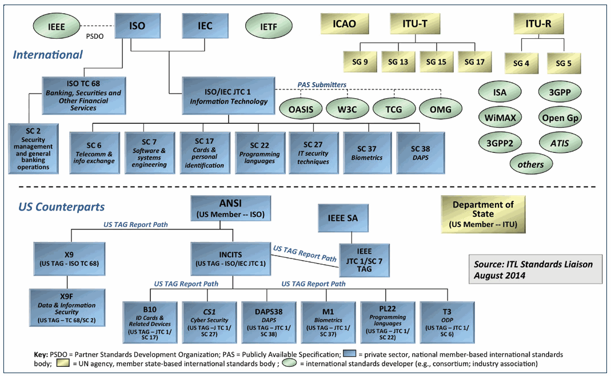
サイバーセキュリティ標準化団体（SDO）の関係図。上段は国際組織と技術委員会・作業部会（IEEE、ISO、IEC、IETF、ICAO、ITU-T/ITU-R、OASIS、W3C、TCG、OMG、3GPP等）、下段は米国の対応組織と米国TAG報告経路（ANSI、IEEE SA、国務省、X9、INCITS、IEEE JTC1/SC7、B10、CS1、DAPS38、M1、PL22、T3等）を示す。出典：ITL Standards Liaison、2014年8月。
protecting the accountability, availability, integrity
情報の説明責任、可用性及び完全性を保護すること、
未レビュー訳assigned. This part will be published as a technical
割り当てられました。この部分は、
未レビュー訳and confidentiality of information;
並びに機密性を保護すること；
未レビュー訳report in FY 2018.
2018会計年度に技術報告書として公表される予定です。
未レビュー訳•Security management support documentation, C O N TA C T S : including terminology and guidelines as well Mr. David Ferraiolo Mr. Serban Gavrila as procedures for the registration of security (301) 975-3046 (301) 975-4343 components; david.ferraiolo@nist.gov serban.gavrila@nist.gov
•セキュリティ管理の支援資料（用語や指針、セキュリティ構成要素の登録手順を含む）；
未レビュー訳•Security aspects of identity management, biometrics and privacy; I S O S t a n d a r d i z a t i o n o f S e c u r i t y
•ID管理、生体認証及びプライバシーのセキュリティ側面；
未レビュー訳•Conformance assessment, accreditation and R e q u i r e m e n t s f o r C r y p t o g r a p h i c auditing requirements in the area of information M o d u l e s security management systems; and ITL has contributed to the activities of ISO/IEC
•適合性評価、認定、及び情報セキュリティ管理システムの監査要件；｜暗号モジュールのセキュリティ要件に関するISO標準化
未レビュー訳•Security evaluation criteria and methodology. JTC 1 SC/27, which published ISO/IEC 19790, Security ITL staff also engages in active liaison and collaboration RequirementsforCryptographicModules,on March 1, 2006,
•セキュリティ評価基準及び方法論。ITL職員は、｜JTC 1/SC 27はISO/IEC 19790「暗号モジュールのセキュリティ要件」（2006年3月1日）を公表し、
未レビュー訳with appropriate bodies to ensure the proper development
適切な機関と積極的に連携し、
未レビュー訳and ISO/IEC 24759, Test Requirements for Cryptographic
ISO/IEC 24759「暗号モジュールの試験要件」
未レビュー訳and application of SC 27 standards and technical reports in
SC27標準及び技術報告書を関連分野で適切に策定・適用するため、
未レビュー訳Modules, on July 1, 2008. ISO/IEC 19790 specifies the
を2008年7月1日に公表しました。ISO/IEC 19790は
未レビュー訳relevant areas.
取り組んでいます。
未レビュー訳security requirements for a cryptographic module utilized
暗号モジュールのセキュリティ要件を定めており、これは
未レビュー訳C O N TA C T :
連絡先：
未レビュー訳within a security system protecting sensitive information in computer and telecommunication systems. These
コンピュータ及び通信システム内の機微情報を保護するセキュリティシステムで用いられます。これらの
未レビュー訳Mr. Salvatore Francomacaro
Salvatore Francomacaro
未レビュー訳efforts bring consistent testing of cryptographic modules
取り組みにより、暗号モジュールの一貫した試験を世界中に普及させました。
未レビュー訳(301) 975-6414
（301）975-6414
未レビュー訳to the global community by providing ISO-equivalent
FIPS 140-2「暗号モジュールのセキュリティ要件」と同等のISO規格を提供することで、
未レビュー訳salvatore.francomacaro@nist.gov
salvatore.francomacaro@nist.gov
未レビュー訳standards representing FIPS 140-2, SecurityRequirements forCryptographicModulesandDerivedTestRequirements
FIPS 140-2「暗号モジュールのセキュリティ要件」及び同規格の派生試験要件（DTR）を示すISO規格を整備しています。
未レビュー訳N e x t G e n e r a t i o n A c c e s s C o n t r o l [DTR] for FIPS 140-2, Security Requirements for
次世代アクセス制御
未レビュー訳CryptographicModules. Mr. Randall Easter (CSD) continues
暗号モジュール。Randall Easter氏（CSD）は、
未レビュー訳S t a n d a r d s
標準
未レビュー訳as the principal editor for these standards.
これらの標準の主編集者を務めています。
未レビュー訳ITL has continued the development of an advanced ISO/IEC JTC 1/SC 27 Working Group (WG) 3 completed Attribute Based Access Control (ABAC) framework called and published revisions, followed with updated corrections, the Policy Machine, which was designed to be in alignment of ISO/IEC 19790:2006 and ISO/IEC 24759:2008. The with an emerging ANSI/INCITS standard under the title of revision of ISO/IEC 19790 was published on August 15, 2012.
ITLは、次世代アクセス制御（NGAC）と称する高度な属性ベースアクセス制御（ABAC）フレームワークであるPolicy Machineの開発を継続しています。この設計は、新興のANSI/INCITS標準に整合することを目指しています。｜ISO/IEC JTC 1/SC 27作業部会3はISO/IEC 19790:2006及びISO/IEC 24759:2008を改訂し、修正も加えました。ISO/IEC 19790の改訂版は2012年8月15日に発行されました。
未レビュー訳The revision of ISO/IEC 24759 was published on January
ISO/IEC 24759の改訂版は1月に発行されました。
未レビュー訳“Next Generation Access Control” (NGAC).
（NGAC）。
未レビュー訳31, 2014. Both ISO/IEC standards were also adopted by the
31日です。両ISO/IEC規格はさらに
未レビュー訳The NIST Policy Machine research and development American National Standards Institute (ANSI) (see: effort has resulted in three ongoing national standards http://webstore.ansi.org/RecordDetail.aspx?sku=ISO projects in CS1 in the early stages of development. They %2FIEC+19790%3A2012). The two ISO/IEC revisions were
NIST Policy Machineの研究開発により、CS1において初期段階にある3件の国内標準化プロジェクトが進行しています。これらは次のとおりです：｜米国国家規格協会（ANSI）にも採用されました（参照：https://webstore.ansi.org/RecordDetail.aspx?sku=ISO%2FIEC+19790%3A2012）。2件のISO/IEC改訂版は
未レビュー訳developed with international support and the collaboration
政府、産業界及び学界の国際的な支援と協力のもとで開発され、
未レビュー訳include:
以下を含みます：
未レビュー訳of governments, industry and academia. Revised corrections
両規格の修正改訂版は2015年12月15日に発行されました。
未レビュー訳•NextGenerationAccessControl–Functional of both standards were published on December 15, 2015. Architecture(NGAC-FA).Project number INCITS The revision of ISO/IEC 19790:2012 addresses new 499-2013, was published in FY 2013 and is security areas, such as defined software module boundaries, currently under revision. degraded modes of operation, trusted channels, two-
•次世代アクセス制御―機能アーキテクチャ（NGAC-FA）。プロジェクト番号INCITS 499-2013として2013会計年度に発行され、現在改訂中です。｜ISO/IEC 19790:2012の改訂では、新たなセキュリティ領域として、ソフトウェアモジュール境界の定義、縮退運転モード、信頼できるチャネル、二要素
未レビュー訳•NextGenerationAccessControl–Generic factor authentication, software security, mitigation of fault Operations&AbstractDataStructures(NGAC-induction and side-channel attacks, operational self-tests for GOADS).Serban Gavrila, ITL, is the editor. The algorithms, and lifecycle assurance from design to end-of-project is assigned project number 2195-D, and the life. document was published during FY 2016. Figure 2: Cryptographic Module Testing – ISO Standards
•次世代アクセス制御―汎用操作及び抽象データ構造（NGAC-GOADS）。Serban Gavrila（ITL）が編集者です。プロジェクト番号は2195-Dで、文書は2016会計年度に発行されました。｜認証、ソフトウェアセキュリティ、故障注入及びサイドチャネル攻撃の緩和、アルゴリズムの運用時自己試験、設計から廃棄までのライフサイクル保証なども扱います。図2：暗号モジュール試験―ISO規格。
未レビュー訳•NextGenerationAccessControl-Implementation is a chart of the ISO/IEC standards, as ex-plained above, Requirements,ProtocolsandAPIDefinitions in which CSD has played a part during the development (NGAC-IRPADS).Project number 2193-D has been
•次世代アクセス制御―実装要件、プロトコル及びAPI定義（NGAC-IRPADS）。プロジェクト番号は2193-Dで、原文は文末が欠落している。｜図2は、前述のとおりCSDが開発に関与したISO/IEC規格の一覧図である。
未レビュー訳Figure 2: Cryptographic Module Testing – ISO Standards
図2：暗号モジュール試験―ISO規格
未レビュー訳Inadditiontotheaforementionedstandards,International requirements specified in ISO/IEC 19790 and the test Standards ISO/IEC 17825, Testingmethodsforthemitigation metrics specified in this International Standard for each of ofnon-invasiveattackclassesagainstcryptographicmodules, the associated security functions specified in ISO/IEC 19790 is expected to be published in January 2017 and ISO/IEC are specified in ISO/IEC 24759. The test approach employed 18367, Cryptographic algorithms and security mechanisms in this International Standard is an efficient “push-button” conformance testing, is on target to be published during approach: the tests are technically sound, repeatable and December 2016. Mr. Easter was the editor of both standards. have moderate costs. International Standard ISO/IEC 17825 specifies the ITL is also the principal editor or co-editor of other ISO/ non-invasive attack mitigation test metrics for determining IEC documents. ITL’s contributions to the development of conformance to the requirements specified in ISO/IEC 19790 these international standards create a strong foundation for Security Levels 3 and 4. The test metrics are associated for the adoption of and migration from currently used with the security functions specified in ISO/IEC 19790. national standards. In particular, this adoption will promote Testing will be conducted at the defined boundary of the international harmonization for the implementation and cryptographic module and using Input/Output (I/O) available testing of cryptographic algorithms and modules, while at the defined boundary .
前述の規格に加え、ISO/IEC 17825「暗号モジュールに対する非侵襲攻撃クラスの緩和に関する試験方法」は2017年1月、ISO/IEC 18367「暗号アルゴリズム及びセキュリティ機構の適合性試験」は2016年12月の発行を予定しています。Easter氏は両規格の編集者でした。ISO/IEC 17825は、ISO/IEC 19790のセキュリティレベル3及び4の要件への適合性を判定するための、非侵襲攻撃緩和試験指標を定めます。試験指標はISO/IEC 19790に規定されたセキュリティ機能に対応します。試験は暗号モジュールの定義済み境界で実施し、その境界で利用可能な入出力（I/O）を使用します。｜ISO/IEC 19790で定める要件及び本国際規格に定める試験指標は、ISO/IEC 19790に規定された各セキュリティ機能について、ISO/IEC 24759に規定されています。本国際規格の試験方式は効率的な「プッシュボタン」方式であり、技術的に妥当で、再現性があり、費用も中程度です。｜ITLは他のISO/IEC文書の主編集者又は共同編集者も務めています。ITLによるこれらの国際規格の策定への貢献は、現行の国内規格の採用及び移行に向けた強固な基盤を築きます。特に、暗号アルゴリズム及びモジュールの実装と試験の国際調和を促進しつつ、
未レビュー訳accommodating individual country preferences in the choice of approved security functions.
承認済みセキュリティ機能の選択において各国固有の選好にも対応します。
未レビュー訳International Standard ISO/IEC 18367 describes conformance testing methods for cryptographic algorithms F O R M O R E I N F O R M AT I O N , S E E : and security mechanisms. Conformance testing assures that
国際規格ISO/IEC 18367は、暗号アルゴリズム及びセキュリティ機構の適合性試験方法を記述します。適合性試験により、｜詳細情報：
未レビュー訳http://csrc.nist.gov/groups/STM/
http://csrc.nist.gov/groups/STM/
未レビュー訳an implementation of a cryptographic algorithm or security mechanism is correct whether implemented in hardware,
暗号アルゴリズム又はセキュリティ機構の実装は、ハードウェアで実装されていても、
未レビュー訳C O N TA C T :
問い合わせ先：
未レビュー訳software or firmware. It also confirms that it runs correctly in a specific operating environment. Testing may consist Mr. Randall J. Easter of known-answer or Monte Carlo testing, or a combination (240) 361-8777 of test methods. Testing may be performed on the actual randall.easter@nist.gov implementation or modeled in a simulation environment. The test methods used by testing laboratories to the end user. These specifications provide multi-factor
ソフトウェア又はファームウェアで実装されていても正しく動作します。また、特定の運用環境で正しく動作することも確認します。試験では既知解答テスト、モンテカルロテスト、又はそれらを組み合わせた方法を用いる場合があります。実際の実装を試験することも、シミュレーション環境でモデル化して試験することもできます。｜Randall J. Easter氏（電話： (240) 361-8777、電子メール：randall.easter@nist.gov）｜（p.21右列冒頭に続く断片）エンドユーザー向けです。これらの仕様は多要素認証に関する指令を提供し、
未レビュー訳I d e n t i t y M a n a g e m e n t D e v i c e s
ID管理デバイス
未レビュー訳authentication directives, and they are designed to mitigate
これらは脅威を軽減するよう設計されています。
未レビュー訳a n d I n f r a s t r u c t u r e s S t a n d a r d s
及びインフラストラクチャ標準
未レビュー訳common threat vectors for Internet communications, such
対象はインターネット通信における一般的な脅威ベクトルで、
未レビュー訳( J T C 1 S C 1 7 C a r d s a n d P e r s o n a l
（JTC 1/SC 17 カード及び個人
未レビュー訳as phishing, man-in-the-middle, and replay attacks.
例えばフィッシング、中間者攻撃及びリプレイ攻撃などです。
未レビュー訳I d e n t i f i c a t i o n D e v i c e s )
識別デバイス）
未レビュー訳ePassport: ITL participates in the development of an
電子パスポート：ITLは、
未レビュー訳In the area of Identity Tokens and Secure elements,
IDトークン及びセキュアエレメントの分野では、
未レビュー訳ISO/IEC standard (ISO/IEC 7501) for electronic Passports.
電子パスポートに関するISO/IEC規格（ISO/IEC 7501）の策定に参加しています。
未レビュー訳ITL has provided the technical and editorial support of Mr.
ITLは、CSDのKetan Mehta氏に技術面及び編集面の支援を提供し、
未レビュー訳Specifically, ITL is contributing to the development of
具体的には、ITLは次の策定に寄与しています。
未レビュー訳Ketan Mehta (CSD) in the development and amendment of
次の規格の策定・改訂を支援しました。
未レビュー訳passport data structure and its access control. ITL reviews
パスポートのデータ構造及びアクセス制御です。ITLは、
未レビュー訳American National Standard (ANS) 504, Generic Identity
米国国家規格（ANS）504「汎用ID
未レビュー訳and comments on authentication protocols that are
認証プロトコルをレビューし、コメントを提示しています。これらのプロトコルは、
未レビュー訳Command Set (GICS). GICS enables Personal Identity
コマンドセット（GICS）」です。GICSは、個人識別確認（PIV）、
未レビュー訳developed to ensure strong user authentication and to
強固なユーザー認証を実現し、
未レビュー訳Verification (PIV), PIV-Interoperable (PIV-I) and Common
PIV相互運用（PIV-I）及び共通
未レビュー訳protect personally identifiable passport data.
パスポートに含まれる個人識別情報を保護します。
未レビュー訳Access Card (CAC) applications, and others, to be built from a single platform. GICS defines an open platform where Mobile Driver License: ITL is also participating in the
共通アクセスカード（CAC）アプリケーションなどを単一のプラットフォームから構築できます。GICSは、｜モバイル運転免許証：ITLは、
未レビュー訳development of an ISO standard (ISO/IEC 18013) for an
国際モバイル運転免許証（DL）に関するISO規格（ISO/IEC 18013）の策定に参加しています。
未レビュー訳identity applications can be instantiated, deployed, and used
IDアプリケーションを実装し、展開して利用できます。
未レビュー訳International Mobile Driver License (DL). During 2016, ITL
2016年には、ITLは
未レビュー訳in an interoperable way between the credential issuers and
資格情報の発行者と利用者との間で相互運用可能な形で、
未レビュー訳gatheredanddiscussedfunctionalandsecurityrequirements
モバイルDLの機能要件及びセキュリティ要件を収集し、検討しました。
未レビュー訳credential users that aligns with the last revision of the NIST
利用できるようにします。これは、NISTの最新改訂版である
未レビュー訳for Mobile DLs. ITL is now developing two models for the
現在、ITLはモバイルDLの2つのモデル、すなわち
未レビュー訳SP 800-73-4, Interfaces for Personal Identity Verification,
SP 800-73-4「個人識別確認（PIV）インターフェース」
未レビュー訳Mobile DLs, namely, offline and online models. Once these
オフラインモデルとオンラインモデルを開発しています。これらの
未レビュー訳(PIV) specifications.
仕様に整合しています。
未レビュー訳models are correctly defined, ITL plans to write technical
モデルが適切に定義された後、ITLは各モデルの技術
未レビュー訳During FY 2017, ITL staff plans to:
2017会計年度に、ITL職員は次の取組を予定しています。
未レビュー訳specification for each model.
仕様書を作成する予定です。
未レビュー訳•Contribute to the publication of several revisions of C O N TA C T S : the ISO/IEC 7816 family of standards (Identification cards-Integratedcircuitcards), which are all Mr. Salvatore Francomacaro Mr. Ketan Mehta relevant to FIPS 201, PersonalIdentityVerification (301) 975-6414 (301) 975-8405 (PIV)ofFederalEmployeesandContractors, salvatore.francomacaro@nist.gov ketan.mehta@nist.gov specifications;
•・ISO/IEC 7816シリーズ（ICカード―集積回路カード）の複数の改訂版の発行に寄与する。このシリーズは、連邦職員及び請負業者向け個人識別確認（PIV）の仕様を定めるFIPS 201に関連します。｜連絡先：Salvatore Francomacaro氏（電話：(301) 975-6414、電子メール：salvatore.francomacaro@nist.gov）、Ketan Mehta氏（電話：(301) 975-8405、電子メール：ketan.mehta@nist.gov）
未レビュー訳•Pursue the standardization and harmonization of C l o u d C o m p u t i n g S t a n d a r d s identity standards developed in the U.S.; W i t h i n I S O / I E C J T C 1 / S C 3 8
•・米国で策定されたID標準の標準化及び調和を推進する。｜クラウドコンピューティング標準：ISO/IEC JTC 1/SC 38
未レビュー訳•Develop requirements and identify standards gaps C l o u d C o m p u t i n g a n d I N C I T S for Mobile Driving Licenses; C l o u d 3 8
•・モバイル運転免許証の要件を策定し、標準の不足箇所を特定する。｜及びINCITS Cloud 38
未レビュー訳•Enhance the Machine-Readable Travel Documents During FY 2016, ITL has been designated by the Federal (ePassport) data model to address privacy and Chief Information Officer (CIO) to accelerate the Federal security concerns; and Government’s secure adoption of cloud computing by
•・機械可読渡航文書（ePassport）のデータモデルを強化し、プライバシー及びセキュリティ上の懸念に対応する。｜2016会計年度、ITLは連邦政府の最高情報責任者（CIO）から、連邦政府によるクラウドコンピューティングの安全な導入を加速する役割を指定されました。既存の標準及びガイドラインの特定を主導し、
未レビュー訳•Contribute to the development of privacy-leading efforts to identify existing standards and guidelines. enhanced security protocols. Where standards are needed, ITL works closely with U.S. industry, standards developers, other government agencies, ITL staff will continue to actively support relevant ID and leaders in the global standards community to develop
•・プライバシー強化型セキュリティプロトコルの開発に寄与する。ITL職員は、関連するID｜標準が必要な場合、ITLは米国の産業界、標準開発者、他の政府機関及び世界的な標準コミュニティのリーダーと密接に協力し、
未レビュー訳management standard initiatives, such as ISO/IEC 19286,
管理標準の取組を引き続き積極的に支援します。例えばISO/IEC 19286、
未レビュー訳standards that will support secure cloud computing.
安全なクラウドコンピューティングを支える標準を策定します。
未レビュー訳Integrated circuit card (ICC) Privacy-enhancing protocols andservices, and ISO/IEC 18328, ICCmanageddevices.
集積回路カード（ICC）―プライバシー強化プロトコル及びサービス、並びにISO/IEC 18328「ICC管理デバイス」
未レビュー訳This standardization effort supports federal agencies in adoptingandimplementingcloudcomputinginfrastructures.
この標準化の取組は、連邦機関によるクラウドコンピューティング基盤の採用及び導入を支援します。
未レビュー訳Web Authentication/FIDO: ITL participates in the
Web認証/FIDO：ITLは、
未レビュー訳This standard work includes standards development within
この標準化活動には、任意参加の合意形成型標準エコシステム内での標準策定が含まれ、
未レビュー訳development of online authentication specifications.
オンライン認証仕様の策定に参加しています。
未レビュー訳the voluntary, consensus-based standards ecosystem and
さらに、
未レビュー訳These specifications are developed by the Fast Identities
これらの仕様はFast Identity Online（FIDO）アライアンスが策定しています。
未レビュー訳the development of NIST standards and guidelines for
連邦機関向けのNIST標準及び指針の策定も含まれ、
未レビュー訳Online (FIDO) alliance, which is a consortium of private
このアライアンスは民間組織のコンソーシアムであり、
未レビュー訳federal agencies, as required by government mandates.
これは政府の指令に基づくものです。
未レビュー訳organizations. ITL also participates in the development of
ITLは、
未レビュー訳The ITL staff participates in developing standards for many
ITL職員はクラウドコンピューティングの多様な側面について標準を策定しています。
未レビュー訳similar specifications (called WebAuthn) for web browsers
Webブラウザー向けの同様の仕様（WebAuthn）の策定にも参加しています。
未レビュー訳aspects of cloud computing. ITL participation helps to
ITLの参加は、
未レビュー訳that are being developed by the W3C consortium. Both the
W3Cコンソーシアムによって策定中です。FIDOと
未レビュー訳ensure the alignment of NIST standards with those of ISO/
NIST標準をISO/IECの標準に整合させることに
未レビュー訳FIDO and WebAuthn specifications enable relying parties to
WebAuthnの両仕様により、依拠当事者（relying party）は
未レビュー訳IEC sub-committees, such as SC 27, SC 38 and their U.S.
ISO/IECの小委員会（SC 27、SC 38等）及び米国の
未レビュー訳create cryptographic tokens on the end-user’s device and
エンドユーザーのデバイス上に暗号トークンを生成し、
未レビュー訳counterparts, ANSI/INCITS CS1 and Cloud 38. The large
対応組織（ANSI/INCITS CS1及びCloud 38）です。SC 27で策定中の多数の標準は、
未レビュー訳subsequently use this cryptographic token to authenticate areas (such as security, privacy, supply chain, personally R I S K M A N A G E M E N T identifiable information (PII) processing or virtualization security) interweave with many cloud computing standards
その後、この暗号トークンを使用して認証します（認証対象は原文に記載がなく、文がこの箇所で途切れる）。｜リスクマネジメント｜（セキュリティ、プライバシー、サプライチェーン、個人識別情報（PII）の処理、仮想化セキュリティなど）に関する領域は、多くのクラウドコンピューティング標準と相互に関係します。
未レビュー訳F r a m e w o r k f o r I m p r o v i n g C r i t i c a l
重要インフラのサイバーセキュリティを改善するためのフレームワーク
未レビュー訳being developed by these subcommittees.
これらの小委員会によって策定されています。
未レビュー訳I n f r a s t r u c t u r e C y b e r s e c u r i t y
インフラストラクチャ・サイバーセキュリティ
未レビュー訳Ms. Annie Sokol is a member of ITL’s Cloud Computing
Annie Sokol氏はITLクラウドコンピューティングチームのメンバーであり、CSDの標準策定プログラム代表者です。ITLは技術面・編集面で、
未レビュー訳( C y b e r s e c u r i t y F r a m e w o r k )
（サイバーセキュリティ・フレームワーク）
未レビュー訳team and the CSD representative in the standards develop-ment program. ITL provides technical and editorial Recognizing that the national and economic security of representation in the development of national and interna- the United States depends on the reliable functioning of its tional standards in both SC 27 and SC38. Ms. Sokol is currently critical infrastructure, the President issued Executive Order the co-editor of ISO/IEC 19941, Information technology– (EO) 13636, ImprovingCriticalInfrastructureCybersecurity, Cloud computing–Interoperability and portability, which in February 2013. This EO directed NIST to work with is intended to establish a common understanding of cloud stakeholders to develop a voluntary framework—based on computing interoperability and portability. This document is existing standards, guidelines, and practices—for reducing of interest to cloud stakeholders focusing on cloud service cybersecurity risks to critical infrastructures. agreements concerning interoperability or portability among
SC 27及びSC 38における国内外の標準策定に代表として関与しています。Sokol氏は現在、ISO/IEC 19941「情報技術―クラウドコンピューティング―相互運用性及び携行性」の共同編集者を務めています。同規格は、クラウドの相互運用性及び携行性について共通理解を確立することを目的としています。この文書は、クラウドサービス間の相互運用性又は携行性に関するクラウドサービス合意に関心を持つ関係者にとって有用です。｜米国の国家及び経済の安全保障が重要インフラの信頼性の高い機能に依存していることを踏まえ、大統領は2013年2月に大統領令（EO）13636「重要インフラのサイバーセキュリティ改善」を発令しました。この大統領令は、NISTに対し、利害関係者と協力し、既存の標準、指針及び実務に基づく自主的な枠組みを策定して、重要インフラのサイバーセキュリティリスクを軽減するよう指示しました。
未レビュー訳The Cybersecurity Framework that was developed
策定されたサイバーセキュリティ・フレームワークは、
未レビュー訳cloud services. The ISO/IEC 19941 work aligns with ITL staff
ISO/IEC 19941の作業は、ITL職員がSC 38において
未レビュー訳providesaprioritized,flexible,repeatable,performance-based,
優先順位が明確で、柔軟、反復可能かつ成果に基づき、
未レビュー訳involvement in the SC 38 development of ISO/IEC 19086-4
ISO/IEC 19086-4の策定に関与したことと整合しています。
未レビュー訳and cost-effective approach to help critical infrastructure
費用対効果の高いアプローチを提供し、重要インフラ
未レビュー訳(DIS), Information technology–Cloud computing–Service
（DIS）「情報技術―クラウドコンピューティング―サービス
未レビュー訳owners and operators—as well as other interested entities—
の所有者及び運用者、並びにその他の関係者が
未レビュー訳levelagreement(SLA), which has four parts. Of particular
レベル合意書（SLA）は4部構成です。特に重要なのは、
未レビュー訳to identify, assess, and manage cybersecurity-related risk,
サイバーセキュリティ関連リスクを特定、評価、管理し、
未レビュー訳interest, ISO/IEC 19086 – Part 1 was published in 2016 and
ISO/IEC 19086第1部は2016年に発行され、
未レビュー訳while protecting business confidentiality, individual privacy,
事業上の機密性、個人のプライバシー、
未レビュー訳establishes a set of common cloud SLA building blocks (e.g.
クラウドSLAに共通する構成要素（例えば、
未レビュー訳and civil liberties.
及び市民的自由を保護できるようにします。
未レビュー訳concepts, terms, definitions, contexts) that can be used to
概念、用語、定義及び文脈）を定めており、これらは
未レビュー訳In FY 2016, ITL continued to work with a diverse
2016会計年度、ITLは多様な利害関係者コミュニティと連携を続け、
未レビュー訳create cloud Service Level Agreements (SLAs).
クラウドサービスレベル合意書（SLA）の作成に利用できます。
未レビュー訳stakeholdercommunitytosupporttheuseandunderstanding
サイバーセキュリティ・フレームワークの利用と理解を
未レビュー訳C O N TA C T :
連絡先：
未レビュー訳of the Cybersecurity Framework. This process included:
支援しました。このプロセスには、次の取組が含まれます。
未レビュー訳Ms. Annie Sokol
Annie Sokol氏
未レビュー訳•Issuing a Request for Information (RFI) to formally
•情報提供依頼（RFI）を発行し、正式に
未レビュー訳(301) 975-2006
(301) 975-2006
未レビュー訳gather stakeholder input about Framework
フレームワークについて利害関係者から意見を収集し、
未レビュー訳annie.sokol@nist.gov
annie.sokol@nist.gov
未レビュー訳use, evolution, and future governance of the Framework;
その活用、発展及び将来のガバナンスに関する意見を集めること。
未レビュー訳•Conducting a public workshop at NIST in
•NISTがメリーランド州ゲイザースバーグで公開ワークショップを開催し、
未レビュー訳B i o m e t r i c S t a n d a r d s a n d
生体認証標準及び
未レビュー訳Gaithersburg, MD to gather input about the current
現在の
未レビュー訳A s s o c i a t e d C o n f o r m i t y
適合性
未レビュー訳use of the Framework and the need for an update
フレームワークの利用状況及び更新の必要性、
未レビュー訳A s s e s s m e n t Te s t i n g To o l s
評価試験ツール
未レビュー訳to the Framework as well as future governance of
並びに将来のガバナンスに関する
未レビュー訳CSD’s Biometric Standards and Associated Conformity
CSDの生体認証標準・適合性評価試験ツールチームは、
未レビュー訳the Framework;
意見を収集すること。
未レビュー訳Assessment Testing Tools team contributes to the
生体認証標準の策定に貢献しています。チームは
未レビュー訳•Releasing the draft Baldrige Cybersecurity
•草案のバルドリッジ・サイバーセキュリティ・エクセレンス・ビルダーを公開すること。
未レビュー訳development of biometric standards. The team reviews
標準文書を確認し、
未レビュー訳Excellence Builder, a self-assessment tool to help
これは自己評価ツールであり、
未レビュー訳standards documents, develops contributions and feedback
提案及びフィードバックを作成するとともに、
未レビュー訳organizations better understand the effectiveness
組織が自らのサイバーセキュリティリスク管理の取組の
未レビュー訳and participates in technical and editorial discussions to
NIST及びITLの生体認証分野における目標を支えるため、技術面及び編集面の議論にも参加しています。チームは、
未レビュー訳of their cybersecurity risk management efforts;
有効性をよりよく理解できるよう支援すること。
未レビュー訳substantiate NIST and ITL’s goals in the biometric field. The team participates in the International Committee for • Coordinating with critical infrastructure owners
国際情報技術標準委員会｜｜・重要インフラの所有者と調整し、
未レビュー訳and operators, regulators, and other industry
運用者、規制当局及びその他の業界
未レビュー訳Information Technology Standards (INCITS) Technical
（INCITS）の技術委員会
未レビュー訳organizations through a variety of meetings and
組織と、さまざまな会合及び
未レビュー訳Committee M1 – Biometrics standards body and related
M1―生体認証標準機関及び関連する
未レビュー訳industry events to ensure the understanding and
業界イベントを通じて調整し、フレームワークの理解及び
未レビュー訳subcommittees. The team also participates in the
小委員会に参加しています。チームは、
未レビュー訳use of the Framework;
利用を促進すること。
未レビュー訳International Organization for Standardization/International Electrotechnical Commission (ISO/IEC) Joint Technical
国際標準化機構／国際電気標準会議（ISO/IEC）合同技術
未レビュー訳•Analyzing various industry work products
•さまざまな業界の成果物（
未レビュー訳Committee (JTC) 1 Subcommittee (SC) 37 – Biometrics
委員会（JTC）1/小委員会（SC）37―生体認証の
未レビュー訳(such as mapping documents) for Framework
例えば対応付け文書）を分析し、フレームワークの
未レビュー訳standards body.
標準化機関にも参加しています。
未レビュー訳correctness;
正確性を確認すること。
未レビュー訳C O N TA C T :
連絡先：
未レビュー訳•Consulting with state and local governments, and the governments of other nations regarding
•州政府及び地方政府、並びに他国政府と協議し、
未レビュー訳Mr. Dylan Yaga
Dylan Yaga氏
未レビュー訳•Consulting with international organizations and Directives, and Office of Management and Budget standards bodies to demonstrate and ensure (OMB) policies; and continued alignment with voluntary international
•・国際機関及び標準化団体と協議し、自主的な国際｜指令及び行政管理予算局（OMB）の方針、並びに
未レビュー訳•Conducting outreach to public and private-sector
•公的部門及び民間部門への働きかけを行い、
未レビュー訳standards; and
国際標準との継続的な整合を示し、確保すること。
未レビュー訳organizations to facilitate the application of the
組織に働きかけ、一連の
未レビュー訳•Working with both industry and regulatory suite of standards and guidelines that support the organizations to apply the Framework in ways that NIST Risk Management Framework (RMF) (see bring efficiencies to the regulatory process. http://csrc.nist.gov/groups/SMA/fisma/framework. html). Since the release of the Framework, NIST’s primary
•・産業界及び規制機関と協力し、フレームワークを規制手続の効率化につながる形で適用する。｜標準及び指針はNISTリスク管理フレームワーク（RMF）を支援します（参照：http://csrc.nist.gov/groups/SMA/fisma/framework.html）。フレームワークの公表以降、NISTの主な
未レビュー訳goal has been to raise awareness of the Framework, and During FY 2016, the ITL FISMA Implementation project encourage its use as a tool to help industry sectors and continued to strengthen collaboration through the Joint Task organizations manage cybersecurity risks.
目標はフレームワークの認知度を高め、産業分野や組織がサイバーセキュリティリスク管理のツールとして活用するよう促すことです。｜2016会計年度、ITLのFISMA実施プロジェクトは、
未レビュー訳Force (JTF) Transformation Initiative, which includes the Department of Defense (DOD), the Intelligence Community
共同タスクフォース（JTF）変革イニシアチブを通じて連携を強化し続けました。このイニシアチブには、米国国防総省（DOD）及び情報機関
未レビュー訳In FY 2017, ITL will continue to conduct stakeholder
2017会計年度も、ITLは利害関係者への働きかけを続け、
未レビュー訳(IC), and the Committee on National Security Systems
（IC）及び国家安全保障システム委員会
未レビュー訳outreach and will work collaboratively to further understand
協力して、
未レビュー訳(CNSS), and various federal agencies. The JTF partners
（CNSS）及び複数の連邦機関が含まれます。JTFの各機関は
未レビュー訳stakeholder needs regarding tools and resources to enable
ツール及びリソースに関する利害関係者のニーズをさらに理解し、
未レビュー訳continue to develop and update key cybersecurity guidelines
JTF参加機関は、主要なサイバーセキュリティ指針の策定及び更新を引き続き進めています。
未レビュー訳more effective use of the Framework. Additionally, in early
フレームワークのより効果的な利用を可能にします。さらに、2017年初頭には、
未レビュー訳for protecting federal information and information systems
その指針は連邦政府の情報及び情報システムを保護するものであり、
未レビュー訳2017, NIST will publish a minor update to the Framework
NISTがフレームワークの小規模な更新を公表し、
未レビュー訳as part of the Unified Information Security Framework.
統合情報セキュリティ・フレームワークの一部となります。
未レビュー訳and will minimize any disruption to current Framework
現在のフレームワーク利用者への影響を最小限に抑えるため、
未レビュー訳Previously, the JTF developed common security guidance
JTFは以前、重要分野における共通のセキュリティ指針を策定しました。
未レビュー訳users by focusing on clarification and refinement. NIST will
内容の明確化及び改良に重点を置きます。NISTは
未レビュー訳in the critical areas of security controls for information
その分野には、情報システム及び組織のセキュリティ管理策、
未レビュー訳also publish guidance on how Federal agencies can use
連邦機関がサイバーセキュリティ・フレームワークを利用する方法に関する指針も公表し、
未レビュー訳systems and organizations, security assessment procedures
セキュリティ評価手順などが含まれます。
未レビュー訳the Cybersecurity Framework, particularly illustrating how
リスク管理フレームワーク（
未レビュー訳to demonstrate security control effectiveness, security
セキュリティ管理策の有効性を実証するための手順、
未レビュー訳the Risk Management Framework (Special Publication (SP)
リスク管理フレームワーク（
未レビュー訳authorizations for risk acceptance decisions, and continuous
リスク受容判断に関するセキュリティ認可及び継続的な
未レビュー訳800-37 Revision 1, GuideforApplyingtheRiskManagement
SP 800-37改訂1「連邦情報システムへのリスク管理フレームワーク適用ガイド：セキュリティ・
未レビュー訳monitoring activities to ensure that decision makers receive
モニタリング活動により、意思決定者が
未レビュー訳Framework to Federal Information Systems: A Security
ライフサイクル・アプローチ」）とサイバーセキュリティ・フレームワークは
未レビュー訳the most up-to-date information on the security state of
情報システムのセキュリティ状況に関する最新情報を入手できるようにします。
未レビュー訳Life Cycle Approach) and Cybersecurity Framework can
連携して、政府機関が
未レビュー訳their information systems. In addition, ITL worked with
さらにITLは、
未レビュー訳work together to help agencies develop, implement, and
情報セキュリティプログラムを策定・実施し、
未レビュー訳the Department of Homeland Security (DHS) to develop
国土安全保障省（DHS）と協力して、
未レビュー訳continuously improve their information security programs.
継続的に改善できるよう支援します。
未レビュー訳guidelines for automation support for security control
セキュリティ管理策評価の自動化を支援する指針を策定し、
未レビュー訳F O R M O R E I N F O R M AT I O N , S E E :
詳細情報：
未レビュー訳assessments on a security capability basis and in accordance with the NIST RMF.
セキュリティ能力に基づいて評価を行い、NIST RMFに従います。
未レビュー訳https://www.nist.gov/cyberframework
https://www.nist.gov/cyberframework
未レビュー訳In FY 2016, the ITL FISMA Team worked on the following
2016会計年度、ITLのFISMAチームは次の
未レビュー訳C O N TA C T S :
連絡先：
未レビュー訳initiatives:
取組に取り組みました。
未レビュー訳•System Security Engineering Initiative: The
•システムセキュリティエンジニアリング・イニシアチブ：
未レビュー訳Team email: cyberframework@nist.gov
チーム電子メール：cyberframework@nist.gov
未レビュー訳final public draft of SP 800-160, SystemsSecurity
SP 800-160「システムセキュリティ・
未レビュー訳Mr. Matt Barrett
Matt Barrett氏
未レビュー訳Mr. Jeff Marron
Jeff Marron氏
未レビュー訳Engineering:ConsiderationsforaMultidisciplinary
エンジニアリング：
未レビュー訳(301) 975-6259
(301) 975-6259
未レビュー訳(301) 975-3846
(301) 975-3846
未レビュー訳ApproachintheEngineeringofTrustworthy
信頼できるセキュアシステムの工学における多分野アプローチの考察
未レビュー訳matthew.barrett@nist.gov jeffrey.marron@nist.gov
matthew.barrett@nist.gov｜jeffrey.marron@nist.gov
未レビュー訳SecureSystems, was published to address the engineering-driven actions necessary to develop more defensible and survivable systems—including
」。最終公開草案が公表され、より防御可能で存続可能なシステムを開発するために必要なエンジニアリング主導の取組を扱い、
未レビュー訳F e d e r a l I n f o r m a t i o n S e c u r i t y
連邦情報セキュリティ
未レビュー訳the components that compose and the services
それらのシステムを構成する要素及び、
未レビュー訳M a n a g e m e n t A c t ( F I S M A )
管理法（FISMA）
未レビュー訳that depend on those systems. To ensure that
それらのシステムに依存するサービスなどです。刊行物が
未レビュー訳I m p l e m e n t a t i o n P r o j e c t
実施プロジェクト
未レビュー訳the publication provides the utmost clarity and
利用者にとって最大限明確で焦点の定まった内容となるよう、
未レビュー訳The FISMA Implementation Project focuses on:
FISMA実施プロジェクトの主な取組は次のとおりです。
未レビュー訳focus for our customers, several of the supporting appendices from the second public draft are being
利用者にとって明確で焦点の定まった内容とするため、第2公開草案の補足付録の一部を独立した刊行物に再編しています。SP 800-160は、
未レビュー訳•Developing a comprehensive series of standards recast into their own publications. SP 800-160 and guidelines to help federal and nonfederal will become the flagship publication for the NIST organizations build effective information Systems Security Engineering Initiative. NIST security programs, defend against increasingly publications specifically addressing several key sophisticated cyber-attacks, and demonstrate systems security engineering considerations (i.e., compliance to security requirements set forth in resilience, software assurance, and hardware legislation, Executive Orders, Homeland Security
•連邦及び非連邦の組織が効果的な情報セキュリティ・プログラムを構築し、高度化するサイバー攻撃に対処し、法令、大統領令、国土安全保障関連の指令に定めるセキュリティ要件への準拠を示すための包括的な標準・指針群を策定すること。｜NISTのシステムセキュリティエンジニアリング・イニシアチブを代表する刊行物となります。レジリエンス、ソフトウェア保証及びハードウェア
未レビュー訳beginning in 2017. Additionally, the interaction of
2017年から策定・公表されます。さらに、NIST RMFと
未レビュー訳1.SP 800-30, GuideforConductingRisk
1.1. SP 800-30「リスク評価の実施
未レビュー訳the NIST RMF with the life cycle processes in SP
SP 800-160のライフサイクル・プロセスとの相互作用を
未レビュー訳Assessments;
ガイド」；
未レビュー訳800-160, will be described in future updates to
既存のRMF標準及び指針の今後の更新で説明される予定です。
未レビュー訳2.SP 800-37, GuideforApplyingtheRisk
2.2. SP 800-37「リスク管理フレームワーク
未レビュー訳existing RMF standards and guidelines.
既存のRMF標準及び指針の今後の更新で説明されます。
未レビュー訳ManagementFrameworktoFederal
の連邦情報システムへの適用ガイド：
未レビュー訳•Risk Management Guidelines: Work began on SP InformationSystems:aSecurityLifeCycle 800-53 Revision 5, SecurityandPrivacyControls Approach; forSystemsandOrganizations, with a pre-draft call
•セキュリティ・ライフサイクル・アプローチ」；｜リスク管理ガイドライン：SP 800-53改訂5「システム及び組織のセキュリティとプライバシー管理策」の作業を開始し、草案前の意見募集を行いました。
未レビュー訳3.SP 800-39, ManagingInformation
3.3. SP 800-39「情報セキュリティリスクの管理：
未レビュー訳for comments, adjudication of those comments,
寄せられた意見を裁定し、
未レビュー訳SecurityRisk:Organization,Mission,and
組織、任務及び
未レビュー訳and coordination with our JTF partners. SP
JTFの連携機関と調整しました。SP
未レビュー訳InformationSystemView;
情報システムの視点」；
未レビュー訳800-53 provides organizations with the security
SP 800-53は、組織に対して
未レビュー訳4.SP 800-53, SecurityandPrivacyControls
4.4. SP 800-53「
未レビュー訳and privacy controls necessary to appropriately
システムを適切に強化するために必要なセキュリティ及びプライバシー管理策を提供し、
未レビュー訳forFederalInformationSystemsand
連邦情報システム及び
未レビュー訳strengthen their systems and the environments
システム及びその
未レビュー訳Organizations; and
組織のセキュリティとプライバシー管理策」；
未レビュー訳in which those systems operate, and provides a process for selecting the appropriate controls,
稼働環境を強化するとともに、適切な管理策を選ぶ手順も示します。
未レビュー訳5.SP 800-53A, AssessingSecurityand
5.5. SP 800-53A「セキュリティ及びプライバシー管理策の評価：
未レビュー訳which contributes to systems that are resilient in
これにより、攻撃その他の脅威に直面してもレジリエントなシステムを実現し、
未レビュー訳PrivacyControlsinFederalInformation
連邦情報システム及び
未レビュー訳the face of attacks and other threats and protect
個人のプライバシーを保護します。
未レビュー訳SystemsandOrganizations:Building
組織における
未レビュー訳an individual’s privacy. The implementation of SP
SP 800-53の実装及び
未レビュー訳EffectiveAssessmentPlans.
効果的な評価計画の策定」
未レビュー訳800-53, SP 800-37, GuideforApplyingtheRisk
SP 800-53、SP 800-37「リスク管理の適用ガイド：
未レビュー訳The FISMA Team also collaborated with DOD, the IC, DHS,
FISMAチームはまた、国防総省（DOD）、情報機関（IC）、国土安全保障省（DHS）、
未レビュー訳ManagementFrameworktoFederalInformation
リスク管理フレームワークを連邦情報システムに
未レビュー訳the National Archives and Records Administration (NARA),
国立公文書記録管理局（NARA）、
未レビュー訳Systems, and SP 800-137, InformationSecurity
適用するほか、SP 800-137「情報セキュリティ
未レビュー訳the Federal Emergency Management Agency (FEMA),
連邦緊急事態管理庁（FEMA）、
未レビュー訳ContinuousMonitoringforFederalInformation
連邦情報システムの継続的モニタリング
未レビュー訳the Government Accountability Office (GAO), the Office
政府説明責任院（GAO）、行政管理予算局（OMB）、
未レビュー訳SystemsandOrganizations, provides organizations
及び組織」は、組織に対して
未レビュー訳of Management and Budget (OMB), the General Services
一般調達局（GSA）、
未レビュー訳with near real-time information that is essential for
ほぼリアルタイムの情報を提供し、
未レビュー訳Administration (GSA), the Small Business Administration
中小企業庁（SBA）及び
未レビュー訳senior leaders making ongoing risk-based decisions
継続的なリスクベースの意思決定を行う上級幹部にとって不可欠です。
未レビュー訳(SBA), and the Inspectors General (IGs) on multiple projects
中小企業庁（SBA）及び監察総監（IG）と複数のプロジェクトで協力し、
未レビュー訳affecting their critical missions and business
その意思決定が組織の重要な任務及び事業
未レビュー訳to ensure consistency with FISMA-related guidance and to
FISMA関連指針との整合性を確保し、
未レビュー訳functions.
機能に影響します。
未レビュー訳protect information in a way that is commensurate with
情報をリスクに見合った方法で保護します。
未レビュー訳•FISMA Outreach Activity to Public and Private- risk. In addition, the FISMA Team served as co-chairs on the Sector Organizations: Cybersecurity outreach Committee on National Security Systems working groups. briefings were conducted and support was In FY 2016, the FISMA Team completed the following provided to all levels of private-sector organizations activities: and government (including federal, state and local
•FISMAによる公的部門及び民間部門への働きかけ：サイバーセキュリティに関する説明会を実施し、民間組織及び政府（連邦、州及び地方を含む）のすべての層に支援を提供しました。｜さらに、FISMAチームは国家安全保障システム委員会の作業部会で共同議長を務めました。2016会計年度に同チームが完了した取組は、次のとおりです。
未レビュー訳•Published the final public draft of SP 800-160,
•SP 800-160の最終公開草案「
未レビュー訳entities) on multiple information security topics of
複数の情報セキュリティ課題に関する支援を提供しました。
未レビュー訳SystemsSecurityEngineering:Considerationsfor
システムセキュリティ・エンジニアリング：
未レビュー訳interest. These included, for example, an effective
例えば、NIST RMFの効果的な実施、緊急時対応計画、
未レビュー訳aMultidisciplinaryApproachintheEngineeringof
信頼できるセキュアシステムの工学における多分野アプローチの考察
未レビュー訳implementation of the NIST RMF, contingency
相互接続セキュリティ合意及びセキュリティ重視の構成管理、
未レビュー訳TrustworthySecureSystems;
セキュアシステム」の最終公開草案を公表しました。
未レビュー訳planning, interconnection security agreements, security-focused configuration management,
緊急時対応計画、相互接続セキュリティ合意、セキュリティ重点型構成管理、
未レビュー訳•Started the development of SP 800-53, Revision
•SP 800-53改訂
未レビュー訳and information security for small businesses.
中小企業の情報セキュリティなどが含まれます。
未レビュー訳5, SecurityandPrivacyControlsforSystemsand
5「システム及び組織のセキュリティとプライバシー管理策」
未レビュー訳In addition, the ITL FISMA Team responded to
加えて、ITLのFISMAチームは
未レビュー訳Organizations;
の策定を開始しました。
未レビュー訳hundreds of inquiries from customers, served on
利用者から数百件の問い合わせに対応し、
未レビュー訳•Published the Initial Public Draft (IPD) of
•SP 800-171改訂1の初期公開草案（IPD）を公表しました。
未レビュー訳cybersecurity advisory panels, and conducted
サイバーセキュリティ助言委員会に参加し、
未レビュー訳SP 800-171 Revision 1, ProtectingControlled
「
未レビュー訳outreach activities with academic institutions,
大学等の教育機関へのアウトリーチ活動を行い、
未レビュー訳UnclassifiedInformationinNonfederalInformation
非連邦情報システム及び組織における
未レビュー訳providing information on NIST’s security standards
NISTのセキュリティ標準及び指針に関する情報を提供し、
未レビュー訳SystemsandOrganizations, to provide guidance
管理対象非分類情報の保護」に関する指針を連邦機関に提供し、
未レビュー訳and guidelines, and exploring new areas of
サイバーセキュリティ研究開発の新たな領域を探り、
未レビュー訳to federal agencies for the protection of
当該情報を保護するため、
未レビュー訳cybersecurity research and development.
ました。
未レビュー訳Controlled Unclassified Information when such
この情報が
未レビュー訳•Collaboration with JTF partners and other information is resident in nonfederal systems and federal organizations: The FISMA Team worked organizations; closely with JTF partners to ensure that the five
•JTF参加機関及びその他の連邦機関との連携：FISMAチームはJTF参加機関と緊密に協力し、5件の｜非連邦システム及び組織に保存されている場合に、当該情報を保護することを目的とします。
未レビュー訳•Published the IPDs of NISTIR 8011, Automation
•NISTIR 8011「
未レビュー訳JTF publications remain current, and to designate
JTF刊行物を最新状態に保ち、
未レビュー訳SupportforOngoingAssessments,Volume
継続的評価の自動化支援、第
未レビュー訳additional special publications as JTF guidance.
追加の特別刊行物をJTF指針として指定しました。
未レビュー訳1-Overview,andVolume2-HardwareAsset
第1巻「概要」及び第2巻「ハードウェア資産
未レビュー訳The five JTF publications are:
JTFの5つの刊行物は次のとおりです。
未レビュー訳Management, and adjudicated public comments in
管理、さらに寄せられた公開コメントの裁定を
未レビュー訳effective implementation of the RMF; and
RMFを効果的に実施すること；及び
未レビュー訳partnership with DHS;
DHSとの連携のもとで行いました。
未レビュー訳•Continue the collaboration with JTF partners and
•JTFの連携機関及びその他の連邦機関との協力を継続しました。
未レビュー訳•Started the development of a web application other federal organizations. to automate the process for updating SP 800-F O R M O R E I N F O R M AT I O N , S E E : 53 in order to keep it as current and relevant as possible; http://csrc.nist.gov/groups/SMA/fisma
•SP 800-53を可能な限り最新かつ適切な状態に保つため、更新手順を自動化するウェブアプリケーションの開発を開始しました。｜詳細情報：http://csrc.nist.gov/groups/SMA/fisma
未レビュー訳•Continued the development of SP 800-60, C O N TA C T S : Revision 2, GuideforMappingTypesofInformation andInformationSystemstoSecurityCategories, The ITL FISMA Team email is: sec-cert@nist.gov in partnership with the National Archives and Dr. Ron Ross Mr. Nedim Goren Records Administration; and (301) 975-5390 (301) 975-5233
•SP 800-60改訂2「情報の種類及び情報システムをセキュリティカテゴリに対応付けるガイド」の開発を、国立公文書記録管理局（NARA）と連携して続けました。｜連絡先：ITL FISMAチームの電子メール：sec-cert@nist.gov。Ron Ross氏（301）975-5390、ron.ross@nist.gov；Nedim Goren氏（301）975-5233、nedim.goren@nist.gov
未レビュー訳•Continued the development of the initial public ron.ross@nist.gov nedim.goren@nist.gov draft of SP 800-18 Revision 2, GuideforDeveloping SecurityPlansforFederalInformationSystemsand Ms. Kelley Dempsey Ms. Peggy Himes Organizations. (301) 975-2827 (301) 975-2489 kelley.dempsey@nist.gov peggy.himes@nist.gov In FY 2017, the FISMA Team intend to:
•SP 800-18改訂2「連邦情報システム及び組織のセキュリティ計画作成ガイド」の初期公開草案の作成を続けました。｜Kelley Dempsey氏（301）975-2827、kelley.dempsey@nist.gov；Peggy Himes氏（301）975-2489、peggy.himes@nist.gov。2017会計年度にFISMAチームが予定していることは次のとおりです。
未レビュー訳•Finalize SP 800-160, SystemsSecurityEngineering: ConsiderationsforaMultidisciplinaryApproach P r i v a c y E n g i n e e r i n g P r o g r a m intheEngineeringofTrustworthySecure ITL research in information technology, including Systems; cybersecurity, cloud computing, big data, the Smart Grid and
•左列：SP 800-160「システムセキュリティエンジニアリング：信頼できるセキュアシステムのエンジニアリングにおける学際的アプローチの考慮事項」を最終化する。｜右列：プライバシー・エンジニアリング・プログラム｜ITLの情報技術研究には、サイバーセキュリティ、クラウドコンピューティング、ビッグデータ、スマートグリッド及び
未レビュー訳•Finalize and publish the IPD of SP 800-53, Revision other cyber-physical systems; aims to improve the products 5, SecurityandPrivacyControlsforSystemsand and services that bring great advancements to U.S. national Organizations, and continue the development of and economic security and the quality of life. Much of this research pertains to the trustworthiness of these information the final publication; technologies and the systems in which they are incorporated.
•左列：SP 800-53改訂5「システム及び組織のセキュリティ・プライバシー管理策」の初期公開草案（IPD）を最終化して刊行し、最終版の開発を継続する。｜右列：その他のサイバー物理システムが含まれます。研究は、米国の国家安全保障及び経済安全保障並びに生活の質を大きく向上させる製品・サービスの改善を目指しています。この研究の多くは、情報技術及びそれを組み込んだシステムの信頼性に関わります。
未レビュー訳•Complete the development of a web application Given concerns about how information technologies may for the automated support of SP 800-53 updates affect privacy at individual and societal levels, the ITL Privacy and the public comment process; Engineering Program (PEP) supports the development of
•左列：SP 800-53の更新及び公開コメント手続きを自動的に支援するウェブアプリケーションの開発を完了する。｜右列：個人及び社会のレベルで情報技術がプライバシーに及ぼす影響への懸念を受け、ITLのプライバシー・エンジニアリング・プログラム（PEP）は、
未レビュー訳•Continue the collaboration with DHS to develop trustworthy information systems by applying measurement and publish additional NISTIR 8011 volumes; science and system engineering principles to the creation of
•左列：DHSと連携して追加のNISTIR 8011各巻を開発・刊行する。｜右列：信頼できる情報システムを、計測科学及びシステムエンジニアリングの原則を適用して構築するための
未レビュー訳•Finalize and publish the initial public draft of SP frameworks, risk models, guidance, tools, and standards that 800-60, Revision 2, GuideforMappingTypes protect privacy, and by extension, civil liberties. The PEP also seeks to promote NIST and ITL leadership in privacy research ofInformationandInformationSystemsto SecurityCategoriesin partnership with NARA and and privacy-enhancing technologies. OMB; The PEP was formally established as a program in FY
•左列：NARA及びOMBと連携して、SP 800-60改訂2「情報及び情報システムの種類をセキュリティカテゴリに対応付けるためのガイド」の初期公開草案を最終化して刊行する。｜右列：フレームワーク、リスクモデル、指針、ツール及び標準を策定し、プライバシー、ひいては市民的自由を保護します。PEPはさらに、プライバシー研究及びプライバシー強化技術におけるNIST/ITLの主導的役割を促進することを目指します。PEPはFY
未レビュー訳•Continue the development of SP 800-18, Revision 2016 as part of ACD. In 2014, the PEP team initiated research 2, GuideforDevelopingSecurityPlansforFederal with two workshops to explore the foundations of privacy engineering and risk management and published a draft InformationSystemsandOrganizations; of NISTIR 8062, An Introduction to Privacy Engineering
•左列：SP 800-18改訂2「連邦情報システム及び組織のセキュリティ計画策定ガイド」の開発を継続する。｜右列：2016年度にACDの一環としてPEPは正式にプログラムとして設立されました。2014年、PEPチームはプライバシーエンジニアリング及びリスク管理の基礎を探る2つのワークショップを開催して調査を開始し、NISTIR 8062「プライバシーエンジニアリング入門」の草案を公表しました。
未レビュー訳•Finalize and publish NIST SPs 800-12 Revision 1, An andRiskManagementinFederalSystems, in May 2015 to IntroductiontoInformationSecurity, and 800-introduce a novel set of privacy engineering objectives and a
•左列：NIST SP 800-12改訂1「情報セキュリティ入門」及びSP 800-｜右列：「連邦システムにおけるプライバシーエンジニアリング及びリスク管理の導入」を2015年5月に公表し、新たなプライバシーエンジニアリング目標群と
未レビュー訳advancing the development of privacy engineering and risk The program also collaborated on many other projects, management processes and the deployment of privacy- including a partnership PEP with TIG on a building block enhancing technologies, as well as positioning NIST as a at the NIST National Cybersecurity Center of Excellence leader in privacy research.
左列：プライバシーエンジニアリング及びリスク管理プロセスの開発促進とプライバシー強化技術の展開を進め、プライバシー研究におけるNISTのリーダーとしての位置づけを確立すること。｜右列：プログラムはまた、他の多くのプロジェクトにも協力しました。その中には、PEPとTIGが連携してNIST国立サイバーセキュリティ卓越センター
未レビュー訳(NCCoE) to use the new privacy engineering objectives (see https://nccoe.nist.gov/sites/default/files/library/project-
右列：（NCCoE）で新たなプライバシーエンジニアリング目標を活用する取り組みが含まれます（参照：https://nccoe.nist.gov/sites/default/files/library/project-
未レビュー訳Advancement of Privacy Engineering and Risk
左列：プライバシーエンジニアリング及びリスク
未レビュー訳descriptions/privacy-enhanced-identity-brokers-project-
右列：descriptions/privacy-enhanced-identity-brokers-project-
未レビュー訳Management
左列：管理の推進
未レビュー訳description-draft.pdf). There was also collaboration with
右列：description-draft.pdf）。また、
未レビュー訳To further the development of processes for privacy CSD and NIST’s Engineering Laboratory (EL) on the big data engineering and risk management (and inform its finalization and cyber-physical systems frameworks and related efforts, of NISTIR 8062), the PEP team conducted outreach with and with ITL’s Information Access Division (IAD) to support stakeholders, researched privacy assessment and risk a successful Build-the-Future proposal on de-identification, mitigation methods, and supported the use of its Privacy Risk a process used to prevent a person’s identity from being Assessment Methodology (PRAM) inside and outside the associated with information. Federal Government. The PEP team also worked extensively
左列：プライバシーエンジニアリング及びリスク管理のプロセスをさらに発展させ（NISTIR 8062の最終化にも資するよう）、PEPチームは関係者に働きかけ、プライバシー評価及びリスク低減手法を調査し、連邦政府の内外でPrivacy Risk Assessment Methodology（PRAM）の活用を支援しました。PEPチームはさらに、｜右列：CSD及びNISTのEngineering Laboratory（EL）とは、ビッグデータ及びサイバー物理システムの枠組みや関連する取り組みについて連携し、ITLのInformation Access Division（IAD）とは、身元が情報に結び付けられることを防ぐプロセスである非識別化に関するBuild-the-Future提案の成功を支援しました。
未レビュー訳Figure 3: Collaboration Between PEP and Other NIST
図3：PEPと他のNIST
未レビュー訳with OMB on the revision of Circular A-130, which lays out
左列：OMBと協力してCircular A-130の改訂に取り組みました。同通達は
未レビュー訳Programs in FY 2016 illustrates a number of projects from the
図キャプション：プログラムとのFY 2016年度の連携は、
未レビュー訳new requirements for federal agencies to address privacy risk
左列：連邦機関が情報システムにおけるプライバシーリスクに対処するための新たな要件を定めて
未レビュー訳programs described above that PEP collaborated on in FY
図キャプション：上記のプログラムのうちFY 2016にPEPが協力した複数のプロジェクトを示しています。
未レビュー訳in their information systems to ensure that the Circular and
左列：情報システムにおけるプライバシーリスクに対処する新たな要件を定め、同通達と
未レビュー訳2016.These projects can be categorized as applied privacy
2016.図キャプション：これらのプロジェクトは、応用プライバシー
未レビュー訳the PEP were in alignment on privacy risk management.
左列：PEPがプライバシーリスク管理の点で整合するようにしました。
未レビュー訳projects or guidance and frameworks.
図キャプション：プロジェクト、又は指針及びフレームワークに分類できます。
未レビュー訳As a result of these efforts, the PEP team has revised
左列：これらの取り組みの結果、PEPチームは
未レビュー訳NIST Leadership in Privacy
右列見出し：プライバシー分野におけるNISTのリーダーシップ
未レビュー訳NISTIR 8062 to more clearly introduce the concepts of privacy engineering and risk management, clarify the The program worked across public and private-sector rationale for the introduction of a set of privacy engineering organizations to advance NIST’s role in privacy. The PEP objectives and a risk model, and include a roadmap for the team participated in the Internet Policy Task Force’s Privacy development of comprehensive privacy risk management Working Group (see https://www.ntia.doc.gov/category/ guidance for federal agencies that parallels NIST guidance internet-policy-task-force) and now hold leadership for information security.
左列：NISTIR 8062を改訂し、プライバシーエンジニアリング及びリスク管理の概念をより明確に紹介するとともに、プライバシーエンジニアリング目標群及びリスクモデルを導入する根拠を明確化し、情報セキュリティに関するNISTの指針に準じた連邦機関向け包括的プライバシーリスク管理指針の策定ロードマップを盛り込みました。｜右列：プログラムは、プライバシー分野におけるNISTの役割を高めるため、官民組織と協力しました。PEPチームはInternet Policy Task ForceのPrivacy Working Groupに参加し、現在は指導的役割を担っています（参照：https://www.ntia.doc.gov/category/
未レビュー訳positions in the Federal Privacy Council (established by Executive Order in FY 2016), and the Networking and
右列：internet-policy-task-force）。その役割は、2016年度の大統領令で設置されたFederal Privacy Council、及びNetworking and
未レビュー訳The PEP also co-hosted a workshop in September 2016
左列：PEPはまた、2016年9月にワークショップを共催し、
未レビュー訳Information Technology Research and Development
右列：Information Technology Research and Development
未レビュー訳with the Department of Transportation to gather input on
左列：運輸省とともに、
未レビュー訳(NITRD) Program’s Privacy Research Interagency Working
右列：（NITRD）プログラムのPrivacy Research Interagency Working
未レビュー訳changes to the privacy controls in Appendix J of NIST SP
左列：NIST SP
未レビュー訳Group, whose work included drafting the National Privacy
右列：Group。その活動には、National Privacy
未レビュー訳800-53, which is undergoing its fifth revision. The workshop
左列：800-53付録Jにあるプライバシー管理策の変更について意見を集めました。同SPは第5回改訂中です。ワークショップでは
未レビュー訳Research Strategy (see https://www.nitrd.gov/cybersecurity/
右列：Research Strategy（参照：https://www.nitrd.gov/cybersecurity/
未レビュー訳initiated the first stage of executing the guidance roadmap
左列：ガイダンス・ロードマップを実行する最初の段階を開始しました。
未レビュー訳nationalprivacyresearchstrategy.aspx), the Identity
右列：nationalprivacyresearchstrategy.aspx）。また、Identity
未レビュー訳that the PEP will continue in FY 2017.
左列：PEPはFY 2017にもこの実行を継続します。
未レビュー訳Ecosystem Steering Group, and the Fast Identity Online
右列：Ecosystem Steering Group及びFast Identity Online
未レビュー訳Coordination with Other NIST Programs
左列見出し：他のNISTプログラムとの調整
未レビュー訳Alliance. An important role for the PEP is a collaboration and The PEP team presented its research at major
左列：Alliance。PEPにとって重要な役割の一つは、他のNISTプログラム及び研究活動との協力、｜右列：PEPチームは主要な会議で研究成果を発表しました。会議には
未レビュー訳coordination with other NIST programs and research efforts conferences, including the RSA Conference, the International to better integrate privacy in the pursuit of more trustworthy Association of Privacy Professionals Global Summit and
左列：より信頼できる｜右列：RSA Conference、International Association of Privacy Professionals Global Summit及び
未レビュー訳Privacy Academy, the Institute of Electrical and Electronics
右列：Privacy Academy、Institute of Electrical and Electronics Engineers
未レビュー訳systems.
左列：システムの実現を目指してプライバシーをより適切に統合するための調整です。
未レビュー訳Engineers International Workshop on Privacy Engineering,
右列：International Workshop on Privacy Engineering、
未レビュー訳Of particular note, the PEP put its preliminary concepts
左列：特筆すべき点として、PEPは予備的な概念を
未レビュー訳the Privacy + Security Forum, the TRUSTe Privacy Risk
右列：Privacy + Security Forum、TRUSTe Privacy Risk
未レビュー訳into practice with the PRAM, a set of worksheets that take an
左列：PRAMという一連のワークシートを用いて実践に移しました。PRAMは組織を
未レビュー訳Summit, and the Computing Community Consortium’s
右列：Summit、及びComputing Community Consortiumの
未レビュー訳organization through a privacy risk assessment of its systems.
左列：そのシステムのプライバシーリスク評価に導くものです。
未レビュー訳Privacy by Design Workshop, among others.
右列：Privacy by Design Workshopなどです。
未レビュー訳Working with the ITL Trusted Identities Group (TIG), the PEP team supports the TIG grant awardees’ use of the PRAM The PEP team contributed to ongoing standards and to evaluate privacy risks and develop mitigating controls in framework development efforts in various organizations, their pilots. The PEP team also used the PRAM for privacy including the Identity Ecosystem Steering Group, the Fast evaluations of information systems in partnership with federal Identity Online Alliance, and the ISO. agencies, including DHS and GSA. The lessons learned from
左列：ITLのTrusted Identities Group（TIG）と連携し、PEPチームはTIGの助成金受領者がPRAMを使用して各パイロットでプライバシーリスクを評価し、緩和策を策定することを支援しています。PEPチームはまた、DHS及びGSAを含む連邦機関と連携して情報システムのプライバシー評価にPRAMを使用しました。これらのPRAM評価から得た教訓は、｜右列：PEPチームは、Identity Ecosystem Steering Group、Fast Identity Online Alliance及びISOなど、さまざまな組織における継続中の標準及び枠組みの策定にも貢献しました。
未レビュー訳In FY 2017, the PEP will publish the final version of
右列：FY 2017に、PEPは最終版の刊行を予定しています。
未レビュー訳these PRAM evaluations have been critical to the PEP team’s
左列：PEPチームが
未レビュー訳NISTIR 8062, slated to be released in January 2017 (see
右列：NISTIR 8062は2017年1月に公開予定です（参照：
未レビュー訳understanding of the practical aspects of applying privacy
左列：プライバシーリスク管理の概念をシステム開発に適用する実務的側面を理解するうえで
未レビュー訳http://nvlpubs.nist.gov/nistpubs/ir/2017/NIST.IR.8062.
http://nvlpubs.nist.gov/nistpubs/ir/2017/NIST.IR.8062.
未レビュー訳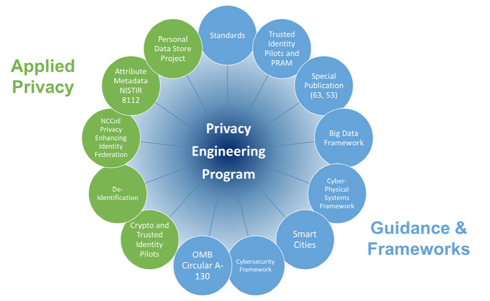
中心の「プライバシー・エンジニアリング・プログラム」から各取組へ放射状に線が伸びる。左側の緑色の「応用プライバシー」には、個人データストア・プロジェクト、属性メタデータ（NISTIR 8112）、NCCoEプライバシー強化アイデンティティ連携、非識別化、暗号及び信頼できるIDのパイロットが含まれる。青色の「指針及びフレームワーク」には、標準、信頼できるIDパイロット及びPRAM、特別刊行物（63、53）、ビッグデータ・フレームワーク、サイバー物理システム・フレームワーク、スマートシティ、サイバーセキュリティ・フレームワーク、OMB Circular A-130が含まれる。
Figure 3: Collaboration Between PEP and Other NIST Programs in FY 2016
図3：FY 2016のPEPと他のNISTプログラムとの連携
未レビュー訳management guidance for federal agencies, beginning C y b e r S u p p l y C h a i n R i s k with a revision of the privacy controls in NIST SP 800-53. M a n a g e m e n t ( S C R M ) The program will continue to collaborate with other NIST
左列：連邦機関向けのプライバシーリスク管理指針を策定し、NIST SP 800-53のプライバシー管理策改訂から着手します。PEPは他のNIST｜右列見出し：サイバーサプライチェーンリスク管理（SCRM）
未レビュー訳Information and Communications Technology (ICT)
右列本文：情報通信技術（ICT）は、
未レビュー訳programs as they seek to address privacy challenges and will
左列：プログラムと協力してプライバシー課題に取り組み、さらに
未レビュー訳relies on a complex, globally distributed, and interconnected
右列：複雑で、世界中に分散し、相互接続された
未レビュー訳work with stakeholders to promote privacy engineering and
左列：関係者と協力してプライバシーエンジニアリング及び
未レビュー訳supply chain ecosystem to provide highly refined, cost-
右列：サプライチェーン・エコシステムを通じて、高度に洗練され、費用
未レビュー訳risk management practices. The PEP team will also continue
左列：リスク管理の実践を促進します。PEPチームはさらに
未レビュー訳effective,andreusablesolutions.Thisecosystemiscomposed
右列：対効果が高く再利用可能な解決策を提供します。このエコシステムは
未レビュー訳to seek leadership opportunities in public and private-
左列：公共及び民間
未レビュー訳of various entities with multiple tiers of outsourcing, diverse
右列：複数階層の外部委託を伴う多様な組織から構成され、
未レビュー訳sector organizations to position NIST on the leading edge
左列：部門の組織における指導的役割を求め、NISTをプライバシー研究の最前線に位置付けることを目指します。
未レビュー訳distribution routes, assorted technologies, laws, policies,
右列：流通経路、さまざまな技術、法律、方針、
未レビュー訳of privacy research. Finally, The PEP will explore new areas
左列：最後に、PEPは新たなプライバシー研究の領域を探り、
未レビュー訳procedures, and practices, all of which interact to design,
右列：手順及び慣行は、すべて相互に作用して、設計、
未レビュー訳for privacy research that have broad-based application and
左列：幅広く適用可能なプライバシー研究を進め、
未レビュー訳manufacture, distribute, deploy, use, maintain, and manage
右列：製造、流通、配備、使用、保守及び管理
未レビュー訳support federal agency mission-critical needs in managing
左列：連邦機関がプライバシーリスク管理における重要任務上のニーズに対応できるよう支援します。
未レビュー訳ICT products and services.
右列：ICT製品及びサービス。
未レビュー訳privacy risk.
左列：プライバシーリスク管理を支援します。
未レビュー訳The factors that allow for low-cost, interoperability,
右列：低コスト化、相互運用性、
未レビュー訳F O R M O R E I N F O R M AT I O N , S E E :
左列見出し：詳細情報：
未レビュー訳rapid innovation, a variety of product features, and other benefits, also increase the risk of a compromise to the ICT
右列：迅速な技術革新、多様な製品機能及びその他の利点を可能にする要因は、ICTへの侵害リスクも高めます。
未レビュー訳https://www.nist.gov/itl/privacy-engineering
左列URL：https://www.nist.gov/itl/privacy-engineering
未レビュー訳supply chain, which may result in risks to the end user.
右列：サプライチェーンへの侵害は、エンドユーザーにリスクをもたらす可能性があります。
未レビュー訳C O N TA C T S :
左列見出し：連絡先：
未レビュー訳These ICT supply chain risks may include an insertion of counterfeits, unauthorized production, tampering, theft, and
右列：こうしたICTサプライチェーンリスクには、偽造品の混入、不正な製造、改ざん、窃盗、
未レビュー訳PEP Team email: privacyeng@nist.gov
左列：PEPチームのメールアドレス：privacyeng@nist.gov
未レビュー訳the insertion of malicious software and hardware as well as poor manufacturing and development practices in the ICT
右列：及び悪意のあるソフトウェア及びハードウェアの挿入、並びにICTにおける不十分な製造・開発慣行が含まれる場合があります。
未レビュー訳Ms. Naomi Lefkovitz
左列連絡先：Naomi Lefkovitz氏
未レビュー訳Ms. Ellen Nadeau
左列連絡先：Ellen Nadeau氏
未レビュー訳supply chain.
右列：サプライチェーン。
未レビュー訳(301) 975-2924
左列連絡先：（301）975-2924
未レビュー訳(202) 306-4033
左列連絡先：（202）306-4033
未レビュー訳naomi.lefkovitz@nist.gov ellen.nadeau@nist.gov
左列メール：naomi.lefkovitz@nist.gov ／ ellen.nadeau@nist.gov
未レビュー訳Cyber Supply Chain Risk Management (SCRM) is the process of identifying, assessing, and mitigating the risks
右列：サイバーサプライチェーンリスク管理（SCRM）とは、リスクを特定、評価及び軽減するプロセスです。
未レビュー訳(Editors’ Note: Mr. Sean Brooks was part of this project
左列注記：編集者注：Sean Brooks氏はこのプロジェクトチームの一員でしたが
未レビュー訳associated with the distributed and interconnected nature
右列：そのリスクは、分散され相互接続された性質に伴う
未レビュー訳team and has since left NIST.)
左列注記：その後NISTを退職しました。
未レビュー訳of ICT product and service supply chains. It covers the 1 9
右列：ICT製品及びサービスのサプライチェーンに関するものです。対象となるのはシステムの〔印刷ページ番号19〕
未レビュー訳P RO GRA M AN D P ROJEC T ACH IEV EM EN TS | FY 2 01 6
プログラム及びプロジェクトの成果｜FY 2016
未レビュー訳entire life cycle of a system (including design, development, further development of the Trustworthy Supplier Framework maintenance, and destruction), as supply chain threats and by ITL in future updates to SP 800-161 and other related and vulnerabilities may intentionally or unintentionally publications. compromise an ICT product or service at any stage.
原文更新後、再確認待ち
In FY 2017, ITL will continue to collaborate with
右列：FY 2017に、ITLは
未レビュー訳In FY 2016, ITL continued to research the state of Cyber stakeholders in government, industry, and academia to SCRMinboththepublicandprivatesectors,relatedstandards conduct research, produce needed standards and guidance, and initiatives, effective practices, and metrics. ITL partnered and seek opportunities to create greater awareness across all with a team composed of representatives from the Federal sectors and types and sizes of organizations. ITL will: Government (GSA and DHS), the insurance industry (Zurich
左列：FY 2016に、ITLは官民両部門のサイバーSCRMの現状、関連する標準及び取り組み、実効的な慣行、指標を調査し続けました。また、連邦政府（GSA及びDHS）、保険業界（Zurich｜右列：政府、産業界及び学術界の関係者と連携して研究を行い、必要な標準及び指針を作成し、あらゆる業種・規模の組織における認知度向上の機会を探ります。ITLは次のことを行います：
未レビュー訳•Conduct research and draft guidance on how
•右列：組織が
未レビュー訳and Beecher Carlson) and academia (the University of
左列：及びBeecher Carlson）並びに学術界（University of
未レビュー訳organizations identify critical systems and
右列：重要なシステム及び
未レビュー訳Maryland) to begin fundamental research and build the tools
左列：Maryland）の代表者で構成されるチームと連携し、基礎研究を開始し、
未レビュー訳components that need additional protections;
右列：追加の保護を要する構成要素をどのように特定するかについて調査を行い、指針案を作成する；
未レビュー訳necessary to measure and assess the actual effectiveness
左列：サイバーセキュリティ戦略及び管理策の実際の有効性を測定・評価するために必要なツールを構築しました。
未レビュー訳•Conduct research on applicable metrics and
•適用可能な指標及び
未レビュー訳of cybersecurity strategies and controls. The effort will use
左列：この取り組みでは、
未レビュー訳measures useful to cyber supply chain risk
サイバーサプライチェーンリスク
未レビュー訳voluntary, secure and anonymized risk assessments based
左列：NIST Cybersecurity Frameworkに基づく、自発的で安全な匿名リスク評価を用いて、
未レビュー訳management;
管理に有用な測定方法を調査する；
未レビュー訳on the NIST Cybersecurity Framework to begin developing a large-scale anonymized data set that will, for the first time, • Conduct an effectiveness study with the goal of demonstrate cause and effect relationships between cyber
左列：初めて因果関係を実証する大規模な匿名データセットの開発に着手し、サイバー｜右列：有効性調査を実施し、
未レビュー訳demonstrating cause-and-effect relationships
右列：因果関係を実証することを目指し、
未レビュー訳supply chain capability levels and organizational performance
左列：サプライチェーン能力レベルと組織の業績成果との
未レビュー訳between cyber supply chain capability levels
右列：サイバーサプライチェーン能力レベルと
未レビュー訳outcomes over time.
左列：間の関係を経時的に示します。
未レビュー訳and organizational performance outcomes over time;
右列：組織の業績成果との間にある因果関係を経時的に実証する；
未レビュー訳Also in FY 2016, ITL co-chaired, with the Department of Defense, the primary interagency working group on cyber • Continue to co-chair the interagency working group SCRM to revise CNSS Directive (CNSSD) No. 505, Supply
左列：FY 2016にも、ITLは国防総省と共同でサイバーSCRMに関する主要な省庁間作業部会の共同議長を務め、CNSS指令（CNSSD）第505号「Supply｜右列箇条書き：省庁間作業部会の共同議長を続け、
未レビュー訳on cyber supply chain risk management, and also
右列箇条書き：サイバーサプライチェーンリスク管理を担当し、さらに
未レビュー訳Chain Risk Management, which assigns responsibilities
左列：Chain Risk Management」は、責任を割り当て
未レビュー訳to co-chair and sponsor the Software and Supply
右列箇条書き：ソフトウェア及びサプライチェーン保証
未レビュー訳and establishes minimum criteria for the development and
左列：また、
未レビュー訳Chain Assurance Forum;
右列箇条書き：フォーラムの共同議長及びスポンサーを務める；
未レビュー訳deployment of capabilities for SCRM of National Security
左列：国家安全保障システム向けSCRM能力の開発及び配備に関する最低基準を定めます。
未レビュー訳•Continue to engage stakeholders in identifying
•関係者との連携を継続し、
未レビュー訳Systems. ITL also co-chaired the Software and Supply Chain
左列：ITLはまた、Software and Supply Chain
未レビュー訳opportunities to create greater awareness about
右列：認知度向上の機会を特定する対象は、
未レビュー訳Assurance (SSCA) Forum and Working Groups, the purpose
左列：Assurance（SSCA）Forum及び作業部会の共同議長を務めました。その目的は、
未レビュー訳cyber supply chain risks and available standards,
右列：サイバーサプライチェーンリスク及び利用可能な標準、
未レビュー訳of which is to bring together a stakeholder community of
左列：この分野の関係者コミュニティを結集することであり、
未レビュー訳practices, guidance and related tools; and
右列：慣行、指針及び関連ツール；さらに
未レビュー訳government, industry, and academic experts in this field.
左列：政府、産業界及び学術界の専門家から成ります。
未レビュー訳•Continue to engage stakeholders in identifying
•関係者との連携を継続し、
未レビュー訳Meetings are held quarterly and cover a variety of subjects of
左列：会合は四半期ごとに開催され、出席者にとって関心のあるさまざまなテーマを
未レビュー訳opportunities and needs for providing additional
右列：サプライチェーン保護の特定及び実施に関する
未レビュー訳interest to attendees.
左列：扱います。
未レビュー訳guidance regarding identifying and implementing
右列：追加指針を提供するための機会及びニーズを
未レビュー訳In April 2016, ITL held a workshop regarding an update
左列：2016年4月、ITLはNIST Cybersecurity Framework（CSF）の更新に関するワークショップを開催しました。
未レビュー訳supply chain protections.
右列：特定する。
未レビュー訳to the NIST Cybersecurity Framework (CSF). During the workshop, information was gathered in a breakout session F O R M O R E I N F O R M AT I O N , S E E : regarding attendees’ views about improving how SCRM is
左列：ワークショップの分科会で、CSFにおけるSCRMの改善方法に関する参加者の意見を収集しました。｜右列見出し：詳細情報：
未レビュー訳http://csrc.nist.gov/scrm/
右列URL：http://csrc.nist.gov/scrm/
未レビュー訳covered in the CSF. Several ideas were proposed, and NIST plans to incorporate the feedback into an updated version C O N TA C T S : of the CSF.
左列：CSFでのSCRMの扱いに関して複数の案が提案され、NISTはその意見をCSFの改訂版に取り入れる予定です。｜右列見出し：連絡先：
未レビュー訳ICT SCRM Team email: scrm-nist@nist.gov
右列：ICT SCRMチームのメールアドレス：scrm-nist@nist.gov
未レビュー訳In May 2016, ITL hosted a forum event led by the Institute for Defense Analyses (IDA) about their Trustworthy Supplier Mr. Jon Boyens
左列：2016年5月、ITLはInstitute for Defense Analyses（IDA）が主導するフォーラムを開催し、IDAのTrustworthy Supplier｜右列連絡先：Jon Boyens氏
未レビュー訳Ms. Celia Paulsen
右列連絡先：Celia Paulsen氏
未レビュー訳Framework (TSF), a prototype toolbox that maps various (301) 975-5549
左列：Trustworthy Supplier Framework（TSF）は、さまざまな｜右列連絡先電話：(301) 975-5549
未レビュー訳(301) 975-5981
右列連絡先電話：(301) 975-5981
未レビュー訳existing standards and practices to the controls provided in jon.boyens@nist.gov celia.paulsen@nist.gov NIST SP 800-161, SupplyChainRiskManagementPractices forFederalInformationSystemsandOrganizations. The TSF is intended to increase the utility of existing standards to buyers and program managers making supplier selections, while simultaneously allowing suppliers flexibility in meeting procurement requirements. The forum provided an opportunity for ITL to understand the needs of stakeholders
右列連絡先：jon.boyens@nist.gov、celia.paulsen@nist.gov｜左列：既存の標準および慣行を、NIST SP 800-161『連邦情報システム及び組織のサプライチェーン・リスク管理実践』に示される管理策に対応付ける。TSFは、調達要件を満たす際の供給業者の柔軟性を保ちつつ、供給業者の選定を行う購入者やプログラム管理者にとって既存の標準の有用性を高めることを目的としている。このフォーラムは、ITLが関係者のニーズを把握する機会となった。
未レビュー訳B I O M E T R I C S T A N D A R D S A N D
生体認証規格及び
未レビュー訳A S S O C I A T E D C O N F O R M I T Y
関連する適合性
未レビュー訳A S S E S S M E N T T E S T I N G T O O L S
評価試験ツール
未レビュー訳ITL supports the development of biometric conformance testing methodology standards and other conformity assessment efforts through active technical participation in the development of these standards and the development of associated conformance test software, architectures and test suites, collectively known as Biometric Conformance Test Software (BioCTS). These test tools are developed to promote the adoption of these standards and to support users, product developers, and testing labs that require conformance to selected biometric standards. ITL contributes to the development of biometric standards
ITLは、生体認証適合性試験方法の規格及びその他の適合性評価活動の策定を支援している。これらの規格策定への積極的な技術参加に加え、関連する適合性試験ソフトウェア、アーキテクチャ、テストスイート（総称して生体認証適合性試験ソフトウェア（BioCTS））を開発している。これらの試験ツールは、規格の採用を促進し、選定された生体認証規格への適合性を必要とする利用者、製品開発者、試験機関を支援するためのものである。ITLは、生体認証規格の策定に寄与しており、
未レビュー訳
図4。ANSI/NIST-ITL Extractor Softwareの表現画像（Representation Image）画面。画像情報欄にはファイルサイズ876377 bytes、画像幅1608 pixels、画像高さ1000 pixels、画像圧縮アルゴリズムPNGを表示し、下部には「LEFT FOUR FINGERS TAKEN SIMULTANEOUSLY」（左手の4指を同時に採取）と記された指紋画像を示す。
Figure 4: ANSI/NIST-ITL Extractor Software
図4：ANSI/NIST-ITL Extractor Software
未レビュー訳and participates in the INCITS Technical Committee M1 – Biometrics and related subcommittees and in ISO/IEC
左列：また、INCITS技術委員会M1（生体認証）及び関連小委員会、ならびにISO/IEC
未レビュー訳The BioCTS team researched the new Machine Readable
右列：BioCTSチームは、ANSI/NIST-ITL生体認証標準用の新しい機械可読
未レビュー訳JointTechnicalCommittee(JTC)1Subcommittee(SC)37–
左列：共同技術委員会（JTC）1小委員会（SC）37—
未レビュー訳Tables (MRTs) for the ANSI/NIST-ITL Biometric Standard
右列：表（MRTs、AN-MRTs）が
未レビュー訳Biometricsstandards bodies. ITL plans to continue this work
左列：生体認証標準化団体。ITLはこの作業を2017会計年度にも継続する予定である。
未レビュー訳(AN-MRTs) to determine their suitability for integration into
右列：適合性試験の取組に統合するのに適しているかを判断するため、
未レビュー訳in FY 2017.
左列：2017会計年度にも。
未レビュー訳conformance testing efforts. The AN-MRTs encode many of the human-readable requirements specified in the base ANSI/NIST-ITL Biometric Standard (and related profiles, such as Federal Bureau of Investigation (FBI) Electronic Biometric Transmission Specification (EBTS)) in a manner that can be parsed and understood by software. The BioCTS team developed software capable of parsing and testing these tables to ensure a valid MRT format using MRT Schema
右列：調査した。AN-MRTsは、基礎となるANSI/NIST-ITL生体認証標準（及び連邦捜査局（FBI）の電子生体認証情報伝送仕様（EBTS）などの関連プロファイル）に規定された、人が読める要件の多くをソフトウェアで解析・理解できる形式で符号化している。BioCTSチームは、これらの表を解析・試験し、MRT Schema
未レビュー訳In FY 2016, the BioCTS team released refined
左列：2016会計年度にBioCTSチームは既存ソフトウェアの改良版を公開し、
未レビュー訳documents and MRT element definitions. The results of our
右列：文書及びMRT要素の定義を用いた。試験結果は、
未レビュー訳versions of existing software and researched the use of
左列：機械可読データの活用を調査し、適合性試験の開発を加速するとともに、プロファイル及びユーザー定義要件への対応を拡充した。
未レビュー訳tests were documented and provided to the authors of
右列：試験結果は記録され、AN-MRTsの作成者に提供された。
未レビュー訳machine-readable data to accelerate conformance test
左列：機械可読データを活用して適合性試験の開発を加速するとともに、
未レビュー訳the AN-MRTs for incorporation into future versions of the
右列：AN-MRTsの将来版に取り込めるようにし、
未レビュー訳development and increase support for profiles and user-
左列：プロファイル及びユーザー定義
未レビュー訳tables for the benefit of all MRT users. The software used
右列：すべてのMRT利用者の利益のため、これらの表に反映される。これらの試験結果を得るために使用したソフトウェアは
未レビュー訳defined requirements.
左列：要件への対応を拡充する。
未レビュー訳to develop these results may be released in the future as
右列：将来、
未レビュー訳There were two updates to the BioCTS for ANSI/ a standalone tool for validating and analyzing AN-MRT NIST-ITL (AN) software suite in FY 2016. These updates were files. The new BioCTS software will use the AN-MRTs as an primarily focused on enhancing the underlying codebase, external resource. This will allow updates to be made to the increasing performance, and adding more user-friendly MRTs to incorporate the latest conformance requirements, features. The testing architecture has been updated to be correct errors, or conduct experiments without releasing an
左列：2016会計年度には、ANSI/NIST-ITL（AN）向けBioCTSソフトウェアスイートに2件の更新があった。これらの更新は主に基盤コードの強化、性能向上、使いやすさの改善を目的としていた。試験アーキテクチャも、より保守しやすく堅牢なものに更新された。｜右列：AN-MRTファイルを検証・分析する独立ツールとして将来公開される可能性がある。新しいBioCTSソフトウェアはAN-MRTsを外部リソースとして使用する。これにより、最新の適合性要件の反映、誤りの修正、実験の実施を目的としてMRTを更新でき、
未レビュー訳more maintainable and more robust. The update represents updated version of BioCTS itself. a complete overhaul of the BioCTS for AN’s initial release
左列：今回の更新は、AN向けBioCTSの初回リリースを全面改修するものであり、｜右列：BioCTS自体の更新版を公開する必要はない。
未レビュー訳An initial version of this software began development in
右列：このソフトウェアの初期版の開発は
未レビュー訳in 2012. A list of changes made to BioCTS for AN can be
左列：2012年に行われた。AN向けBioCTSの変更一覧は、変更履歴に掲載されている（https://csrc.nist.gov/Projects/
未レビュー訳FY 2016, and this effort is expected to continue in FY 2017.
右列：2016会計年度に始まり、この取組は2017会計年度にも継続する見込みである。
未レビュー訳found in the Changelog (see https://csrc.nist.gov/Projects/
左列：AN向けBioCTSの変更一覧は、変更履歴に掲載されています（https://csrc.nist.gov/Projects/
未レビュー訳F O R M O R E I N F O R M AT I O N , S E E :
右列：詳細情報：
未レビュー訳Biometric-Conformance-Test-Software).
Biometric-Conformance-Test-Software）。
未レビュー訳In addition to updates to BioCTS software, the BioCTS - Biometric Conformance Test Tools:
左列：BioCTSソフトウェアを更新したほか、｜右列：BioCTS—生体認証適合性試験ツール：
未レビュー訳team released an updated ANSI/NIST-ITL Data Extractor,
左列：チームは更新版のANSI/NIST-ITL Data Extractorを公開した。
未レビュー訳https://www.nist.gov/itl/csd/biometrics/biometric-
右列URL：https://www.nist.gov/itl/csd/biometrics/biometric-
未レビュー訳illustrated in Figure 4: ANSI/NIST-ITL Extractor Software
左列：これは図4に示すANSI/NIST-ITL Extractor Softwareであり、
未レビュー訳conformance-test-software-biocts
conformance-test-software-biocts
未レビュー訳which shows the internal data records within an ANSI/NIST-ITL file. The Data Extractor allows data (images, text, etc.)
左列：ANSI/NIST-ITLファイル内のデータレコードを表示する。Data Extractorを使うと、データ（画像、テキストなど）を
未レビュー訳BioCTS for ANSI/NIST-ITL User Guide:
右列：BioCTS for ANSI/NIST-ITL User Guide：
未レビュー訳to be saved from an ANSI/NIST-ITL formatted file, as well as providing a high-level overview of the file and its internal https://csrc.nist.gov/Projects/Biometric-Conformance-Test-structure. interoperability. ITL is researching the cybersecurity and privacy needs of the broader landscape of CPS by applying
左列：ANSI/NIST-ITL形式のファイルからデータを保存できるほか、ファイル及び内部構造の概要を示す。｜右列ユーザーガイドURL：https://csrc.nist.gov/Projects/Biometric-Conformance-Test-｜p.30右列：相互運用性。ITLは、CPSのより広い領域におけるサイバーセキュリティ及びプライバシーのニーズを調査しており、
未レビュー訳Mr. Dylan Yaga
左列連絡先：Dylan Yaga氏
未レビュー訳their subject-matter expertise in cybersecurity and privacy
右列：サイバーセキュリティ及びプライバシーに関する専門知識を適用し、
未レビュー訳(301) 975-6004
左列連絡先電話：(301) 975-6004
未レビュー訳to various instances of CPS. These instances may include
右列：CPSのさまざまな事例に適用している。こうした事例には、
未レビュー訳dylan.yaga@nist.gov
左列連絡先メール：dylan.yaga@nist.gov
未レビュー訳industrial control systems, the smart grid, hardware-enabled security, and embedded systems, to name a few. In FY 2016, ITL provided leadership for the Cybersecurity
右列：産業用制御システム、スマートグリッド、ハードウェア対応セキュリティ、組込みシステムなどが挙げられる。2016会計年度にITLは、サイバーセキュリティ
未レビュー訳S E C U R I T Y O F C Y B E R -
サイバー・
未レビュー訳and Privacy subgroup of the CPS Public Working Group
右列：及びプライバシーに関するCPS公共作業部会（PWG）小委員会の主導的役割を担った。
未レビュー訳P H Y S I C A L A N D I N D U S T R I A L (PWG)—which focused on identifying strategies for
左列見出し：フィジカル及び産業用｜右列本文：同作業部会は、CPSにおけるサイバーセキュリティ及びプライバシーに関する方策を特定することに重点を置き、
未レビュー訳cybersecurity and privacy in CPS as well as working
右列：CPSにおけるサイバーセキュリティ及びプライバシーの方策を特定することに重点を置くとともに、
未レビュー訳C O N T R O L S Y S T E M S
制御システムのセキュリティ
未レビュー訳collaboratively with the other subgroups to ensure the inclusion of cybersecurity as a design principle during the
右列：他の小委員会と協働し、サイバーセキュリティを設計原則として確実に組み込むことを目指して、
未レビュー訳S e c u r i t y o f C y b e r P h y s i c a l
サイバー・フィジカル
未レビュー訳development processes.
右列：開発プロセスを通じて取り組んだ。
未レビュー訳S y s t e m s
システムのセキュリティ
未レビュー訳After publishing a Draft Framework for CPS in
右列：CPS向け暫定フレームワークを公表した後、
未レビュー訳NIST’s Cyber-Physical Systems (CPS) effort will September 2015—which compiled the work of the five PWG provide the next generation of “smart” co-designed technical subgroups—the CPS PWG published version 1.0 and co-engineered interacting networks of physical and of the FrameworkforCyber-PhysicalSystemsin May 2016. computational components. Specifically, ITL supports the The document is the culmination of several years’ work by effort by providing cybersecurity and privacy expertise to the CPS PWG, which includes several hundred members address CPS-specific cybersecurity and privacy challenges. drawn primarily from industry, academia, and government. Such challenges are related to emerging technical areas, such As a follow-on to the Framework’s release, in August 2016, as personalized health care, emergency response, traffic-flow ITL, in collaboration with NIST’s Engineering Lab, hosted the management, and electric power generation and delivery. Trustworthiness Launch Workshop at NIST in Gaithersburg, Other phrases that are often referenced along with CPS MD. A key goal for the workshop was to promote interaction
左列：NISTのサイバー・フィジカル・システム（CPS）活動は、物理的コンポーネントと計算コンポーネントからなる、共同設計・共同開発され相互作用する「スマート」ネットワークの次世代を実現することを目指す。具体的には、ITLはCPS固有のサイバーセキュリティ及びプライバシー上の課題に対処するため、専門知識を提供してこの取組を支援する。こうした課題には、個別化医療、緊急対応、交通流管理、電力の発電・供給など、新たな技術分野に関係するものがある。CPS技術と併せてよく参照される用語には、｜右列：2015年9月に公表されたこの暫定フレームワークは、5つのPWG技術サブグループの作業をまとめたものだった。その後CPS PWGは、2016年5月に『Framework for Cyber-Physical Systems』version 1.0を公表した。同文書はCPS PWGが数年にわたり進めた作業の集大成であり、主に産業界、学界、政府から集まった数百人のメンバーが参加した。フレームワーク公表後の2016年8月、ITLはNIST Engineering Labと協力し、メリーランド州ゲイザースバーグのNISTでTrustworthiness Launch Workshopを開催した。ワークショップの重要な目標の一つは、
未レビュー訳around integrated goals for trustworthy cyber-physical
右列：信頼できるサイバー・フィジカル・システムの統合目標をめぐる交流を促進し、
未レビュー訳technologies include:
左列：CPSと併せてよく参照される技術には、
未レビュー訳systems to lay the foundation for future trustworthiness in
右列：科学分野における将来の信頼性の基盤を築く
未レビュー訳•Internet of Things (IoT); science.
•左列箇条書き：モノのインターネット（IoT）；｜右列：こと。
未レビュー訳•Industrial Internet; In July 2016, ITL published NIST SP 800-183, Networks
•左列箇条書き：産業用インターネット；｜右列：2016年7月、ITLはNIST SP 800-183『Networks
未レビュー訳•Smart Cities; of ‘Things’, which offers an underlying and foundational understanding of IoT by exploring the components that
•左列箇条書き：スマートシティ；｜右列：of Things（「モノ」のネットワーク）を発行した。同刊行物は、IoTの構成要素を探ることでIoTの基本的かつ基盤的な理解を提供し、
未レビュー訳•Smart Grid; and belong to most distributed systems. In FY 2017, foundational
•左列箇条書き：スマートグリッド；｜右列：分散システムの大半を構成する要素を説明している。2017会計年度には、基礎
未レビュー訳•“Smart” Anything (e.g., Cars, Buildings, Homes, and applied research will be conducted in the areas of CPS Manufacturing, Hospitals, Appliances) andIoT.ITLwillalsocontinuetoparticipateintheInternational (see http://www.nist.gov/cps/). Society of Automation (ISA) 99 Committee, which develops CPS aims for increased efficiency and interaction and establishes standards, recommended practices, technical
•左列箇条書き：「スマート」関連のあらゆるもの（例：車、建物、住宅、製造業、病院、家電）（http://www.nist.gov/cps/ 参照）；｜右列：応用研究もCPS及びIoTの分野で実施される。ITLは国際オートメーション学会（ISA）99委員会への参加も継続する。
未レビュー訳between the digital and physical worlds. Ensuring that these reports, and related information that define procedures for emerging and evolving systems are reliable, trustworthy, implementing electronically secure industrial automation secure, and that they protect the privacy of information poses and control systems and security practices. a unique cybersecurity challenge. Other challenges of CPS
左列：CPSはデジタル世界と物理世界の効率向上及び相互作用の増大を目指す。新興・進化中のシステムが信頼でき、安全で、情報のプライバシーを保護することを確保することは、固有のサイバーセキュリティ課題である。CPSのその他の課題には、｜右列：ISA 99委員会は、電子的にセキュアな産業用オートメーション及び制御システムの実装手順とセキュリティ実践を定める規格、推奨実践、技術報告書及び関連情報を策定している。
未レビュー訳F O R M O R E I N F O R M AT I O N , S E E :
右列：詳細情報：
未レビュー訳include the need for an integration with legacy components and allowance for emerging technologies as well as real- https://www.nist.gov/cps/ time response in support of extremely high availability,
左列：レガシーコンポーネントとの統合、新技術を利用できるようにすること、及び極めて高い可用性を支えるリアルタイム応答の必要性も挙げられる。｜右列URL：https://www.nist.gov/cps/
未レビュー訳C O N TA C T S :
右列：連絡先：
未レビュー訳predictability, and reliability. Cybersecurity and privacy considerations are critical to Mr. Jeff Marron
左列：予測可能性及び信頼性も求められる。サイバーセキュリティとプライバシーへの配慮は、｜右列連絡先：Jeff Marron氏
未レビュー訳Ms. Suzanne Lightman
右列連絡先：Suzanne Lightman氏
未レビュー訳the safe and resilient design, development, and operation (301) 975-3846
左列：CPSの安全でレジリエントな設計、開発、運用に不可欠である。CPSがもたらす機会と課題の双方に対処するには、共通基盤の開発に向けた幅広い協働が必要であり、その基盤には合意された定義、用語、参照アーキテクチャのほか、性能試験環境の構築、性能の測定・理解が含まれる。｜右列連絡先電話：(301) 975-3846
未レビュー訳(301) 975-6442
右列連絡先電話：(301) 975-6442
未レビュー訳of CPS. Addressing both the opportunities and challenges jeffrey.marron@nist.gov suzanne.lightman@nist.gov of CPS requires a broad collaboration to develop a common foundation, including a consensus definition, vocabulary, reference architecture, and a shared understanding of performance test bed, and measuring and understanding
左列：CPSの機会と課題の双方に対処するには、共通基盤の構築に向けて幅広い協力が必要である。これには、合意された定義、用語、参照アーキテクチャ、及び共通理解が含まれる。｜右列連絡先メール：jeffrey.marron@nist.gov、suzanne.lightman@nist.gov｜p.31右列：性能試験環境を整備し、
未レビュー訳C y b e r s e c u r i t y f o r I n d u s t r i a l
産業用
未レビュー訳the performance impacts of implemented cybersecurity
実装したサイバーセキュリティ対策が性能に及ぼす影響を
未レビュー訳C o n t r o l S y s t e m s
制御システムのサイバーセキュリティ
未レビュー訳protections.
測定・把握する。
未レビュー訳NISTs Industrial Control System (ICS) cybersecurity effort is focused on providing guidance and insight into F O R M O R E I N F O R M AT I O N , S E E : the domain of securing connected physical systems. ITL,
左列：NISTの産業用制御システム（ICS）サイバーセキュリティ活動は、接続された物理システムを保護する分野に関する指針と知見の提供に重点を置いている。｜右列：詳細情報：
未レビュー訳https://www.nist.gov/programs-projects/cybersecurity-
右列URL：https://www.nist.gov/programs-projects/cybersecurity-
未レビュー訳in collaboration with NIST’s Engineering Laboratory, is
左列：NIST Engineering Laboratoryと協力して、
未レビュー訳smart-manufacturing-systems
smart-manufacturing-systems
未レビュー訳developing and implementing guidance aimed at effectively securing ICS—initially focusing on Smart Manufacturing http://csrc.nist.gov/cyberframework/documents/csf-Environments. Utilizing a cybersecurity performance test manufacturing-profile-draft.pdf bed for ICS, NIST will measure the performance of these systems when instrumented with cybersecurity protections, http://nvlpubs.nist.gov/nistpubs/SpecialPublications/NIST. in accordance with the best practices and requirements SP.800-82r2.pdf prescribed by national and international standards and
左列：NISTは、ICSを効果的に保護するための指針を開発・実装している。まずスマート製造環境に焦点を当てる。ICS向けサイバーセキュリティ性能試験環境を用いて、サイバーセキュリティ対策を組み込んだシステムの性能を測定する。これは、国内外の規格及び｜右列URL：https://csrc.nist.gov/cyberframework/documents/csf-manufacturing-profile-draft.pdf ; https://nvlpubs.nist.gov/nistpubs/SpecialPublications/NIST.SP.800-82r2.pdf
未レビュー訳C O N TA C T S :
右列：連絡先：
未レビュー訳guidelines. Examples of such standards and guidelines include ISA/IEC-62443, IndustrialAutomationandControl Mr. Jeffrey Cichonski
左列：指針で定められたベストプラクティスと要件に従う。規格・指針の例には、ISA/IEC-62443『産業用オートメーション及び制御｜右列連絡先：Jeffrey Cichonski氏
未レビュー訳Mr. Keith Stouffer
右列連絡先：Keith Stouffer氏
未レビュー訳Systems(IACS)Security, and NIST SP 800-82, Revision 2, (301) 975-3293
左列：システム（IACS）セキュリティ』及びNIST SP 800-82 Rev.2｜右列連絡先電話：(301) 975-3293
未レビュー訳(301) 975-3877
右列連絡先電話：(301) 975-3877
未レビュー訳GuidetoIndustrialControlSystems(ICS)Security.
左列：『産業用制御システム（ICS）セキュリティガイド』。
未レビュー訳jeffrey.cichonski@nist.gov keith.stouffer@nist.gov
右列連絡先メール：jeffrey.cichonski@nist.gov、keith.stouffer@nist.gov
未レビュー訳Industrial control systems are an essential component in manufacturing environments; increasing reliance on technology, communication, and the interconnectivity of ICS F E D E R A L C Y B E R S E C U R I T Y and IT has expanded the number of potential vulnerabilities
左列：産業用制御システム（ICS）は製造環境に不可欠な構成要素である。技術、通信、ICSとITの相互接続性への依存度が高まるにつれ、潜在的な脆弱性の数｜右列バナー：連邦サイバーセキュリティ
未レビュー訳R E S E A R C H & D E V E L O P M E N T
研究開発
未レビュー訳and increased the potential risk to manufacturing operations.
左列：は増加し、製造業務に対する潜在的リスクも高まっている。
未レビュー訳( R & D )
（R&D）
未レビュー訳While these manufacturing systems become ‘smarter’ and increasingly connected (providing a tremendous increase of value and efficiency), they also present a new challenge
左列：製造システムはより「スマート」になり、相互接続性も高まる（価値と効率が大幅に向上する）一方で、新たな課題も生じる。
未レビュー訳The Networking and Information Technology Research
右列：ネットワーキング及び情報技術研究
未レビュー訳regarding how cybersecurity can be effectively applied to
左列：その課題は、サイバーセキュリティを効果的にどう適用するかであり、
未レビュー訳and Development (NITRD) program provides a framework
右列：・開発（NITRD）プログラムは、多数の連邦政府機関が集まる枠組みを提供する。
未レビュー訳the connected domain.
左列：対象となるのは、相互接続された領域である。
未レビュー訳in which many federal agencies come together to coordinate
右列：その枠組みの中で各機関が
未レビュー訳The ICS team has utilized existing standards, in
左列：ICSチームは、既存の標準を用いて、
未レビュー訳their networking and IT research and development
右列：それぞれのネットワーキング及びIT分野の研究開発
未レビュー訳conjunction with the NIST Cybersecurity Framework,
左列：NISTサイバーセキュリティ・フレームワーク（CSF）と組み合わせて、
未レビュー訳(R&D) efforts. NIST remains committed to the value of
右列：（R&D）活動を調整する。NISTは、
未レビュー訳to develop a target Profile for applying cybersecurity
左列：製造環境におけるサイバーセキュリティ対策の
未レビュー訳communicating its R&D efforts to other federal colleagues
右列：連邦政府内の他の同僚に研究開発の取組を伝え、
未レビュー訳protections within manufacturing environments. The
左列：適用を目的とした目標プロファイルを策定する。この
未レビュー訳and identifying the opportunities to support R&D efforts
右列：R&D活動を支援する機会を特定し、
未レビュー訳development of this profile helps establish a roadmap for
左列：プロファイルの開発は、製造業者のサイバーセキュリティリスク低減に向けたロードマップの策定に役立つ。
未レビュー訳throughout the Federal Government.
右列：これらを連邦政府全体へ広げることを重視している。
未レビュー訳reducing cybersecurity risk for manufacturers in a way that
左列：そのロードマップは、
未レビュー訳In FY 2016, the NITRD Cybersecurity and Information
右列：2016会計年度に、NITRDサイバーセキュリティ・情報
未レビュー訳is aligned with manufacturing-sector goals and industry best
左列：製造業界の目標及び業界のベストプラクティスに沿う形で、
未レビュー訳Assurance (CSIA) Interagency Working Group (IWG)
右列：保証（CSIA）省庁間作業部会（IWG）の
未レビュー訳practices. The profile also tailors the existing cybersecurity
左列：プロファイルは既存のサイバーセキュリティ制御言語も調整し、
未レビュー訳monthly meetings provided an opportunity to learn
右列：月例会合は、NISTの継続中の研究について学ぶ
未レビュー訳control language to account for unique requirements in
左列：固有要件を考慮して、
未レビュー訳and share information about NIST’s ongoing research.
右列：その研究に関する情報を共有する機会となった。
未レビュー訳these operational environments.
左列：こうした運用環境に適合させる。
未レビュー訳Participants also learned about connections with the
右列：参加者は、次との関連についても学んだ。
未レビュー訳In FY 2016, leading a session during the 2016
左列：2016会計年度に、2016年のサイバーセキュリティ・フレームワーク・ワークショップでセッションを主導し、
未レビュー訳February 2016 Federal Cybersecurity Research and
右列：2016年2月の連邦サイバーセキュリティ研究及び
未レビュー訳Cybersecurity Framework Workshop, the team solicited
左列：ワークショップで、チームは
未レビュー訳Development Strategic Plan (see https://www.nitrd.gov/
右列：開発戦略計画（https://www.nitrd.gov/
未レビュー訳feedback from industry partners to help advance the
左列：業界パートナーから意見を募り、
未レビュー訳cybersecurity/publications/2016_Federal_Cybersecurity_
cybersecurity/publications/2016_Federal_Cybersecurity_
未レビュー訳development of the profile. The draft Cybersecurity
左列：プロファイルの開発を前進させた。草案のサイバーセキュリティ
未レビュー訳Research_and_Development_Strategic_Plan.pdf). With Mr.
Research_and_Development_Strategic_Plan.pdf）。なお、
未レビュー訳Framework Manufacturing Profile was published as a
左列：Manufacturing Profile（製造業プロファイル）は、
未レビュー訳Bill Newhouse serving as the NIST co-chair of the CSIA IWG,
右列：NISTのCSIA IWG共同議長を務めるBill Newhouse氏のもと、
未レビュー訳whitepaper that solicited comments from the public. The
左列：一般から意見を募るホワイトペーパーとして公表された。この
未レビュー訳NIST helped guide the agenda for the monthly meetings to
右列：NISTは月例会合の議題設定を支援し、
未レビュー訳Profile focuses on desired cybersecurity outcomes and can
左列：プロファイルは望ましいサイバーセキュリティ成果に焦点を当て、
未レビュー訳explore the defensive elements and critical elements in the
右列：防御的要素及び重要要素を検討できるようにした。
未レビュー訳be used as a roadmap to identify opportunities for improving
左列：製造システムの現在のセキュリティ態勢を改善する機会を特定するためのロードマップとして
未レビュー訳R&D Strategic Plan.
右列：この議題はR&D戦略計画に関するものだった。
未レビュー訳thecurrentcybersecuritypostureofamanufacturingsystem.
左列：利用できる。
未レビュー訳In FY 2016, members of the National Privacy Research
右列：2016会計年度に、National Privacy Research
未レビュー訳In FY 2017, NIST will continue its research in the
左列：2017会計年度に、NISTは
未レビュー訳Forum published a National Privacy Research Strategy,
右列：ForumはNational Privacy Research Strategyを公表し、
未レビュー訳ICS domain to include incorporating feedback and
左列：ICS分野の研究を継続し、関係者からの意見を取り入れることに加え、
未レビュー訳and a new Privacy R&D Interagency Working Group
右列：新たなPrivacy R&D Interagency Working Groupも
未レビュー訳finalizing the Manufacturing Profile, implementing the to the development process for the privacy R&D plan. (see In the months leading up to the November 2016 election, https://www.nitrd.gov/Publications/PublicationDetail. NIST engaged with DHS, EAC, and the Department of aspx?pubid=65)
左列p.31：製造業プロファイルを完成させ、｜左列p.32：プライバシーR&D計画の策定過程に関する（https://www.nitrd.gov/Publications/PublicationDetail.aspx?pubid=65 を参照）。｜右列p.32：2016年11月の選挙を前に、NISTは国土安全保障省（DHS）、選挙支援委員会（EAC）及び司法省（
未レビュー訳Justice (DOJ) to help states better identify and manage their cybersecurity risks to election systems and voting systems
右列：DOJ）と連携し、州が選挙システム及び投票システムのサイバーセキュリティリスクをより適切に特定・管理できるよう支援した。
未レビュー訳NIST is a regular participant in the coordination activities
左列：NISTは、
未レビュー訳for the upcoming election. This group ensured that election
右列：次回選挙に向けた取組である。このグループは、選挙
未レビュー訳of the federal Special Cyber Operations Research and
左列：連邦政府の特別サイバー作戦研究・
未レビュー訳officials were aware of existing resources that are available to
右列：担当者が、選挙及び投票のために利用できる既存の資源を認識できるようにした。
未レビュー訳Engineering(SCORE)Committee.SCOREenablestechnology
左列：工学（SCORE）委員会。SCOREは、
未レビュー訳help them (including the guidelines and best practices that
右列：その担当者を支援するため、投票及びその他のITシステム向けのガイドラインやベストプラクティスを含む、
未レビュー訳transfer through the sharing of NIST cybersecurity expertise
左列：NISTのサイバーセキュリティに関する専門知識や出版物を連邦政府全体の研究者と共有し、
未レビュー訳exist for voting and other IT systems, cyber hygiene scanning
右列：DHSによるサイバーハイジーン・スキャンサービス、
未レビュー訳and publications with researchers throughout the Federal
左列：技術移転を促進する。
未レビュー訳services by DHS, and threat and vulnerability bulletins).
右列：脅威情報及び脆弱性情報の速報が含まれる。
未レビュー訳Government. The SCORE committee interacts with federal leaders and reports to the National Science & Technology In FY 2017, the voting working group will focus its Council’s Committee on Homeland & National Security. efforts on the next revision of the VVSG. Based on feedback
左列：SCORE委員会は連邦政府の指導者と連携し、国家科学技術会議の国土・国家安全保障委員会に報告する。｜右列：2017会計年度には、投票作業部会はVVSGの次回改訂に向けた取組に注力する。
未レビュー訳from the TGDC and election officials around the country,
右列：この改訂は、全国のTGDC及び選挙担当者から寄せられた意見を踏まえて進められ、
未レビュー訳F O R M O R E I N F O R M AT I O N , S E E :
左列：詳細情報：
未レビュー訳the new revision is expected to address new technologies and election use cases that have become commonplace in
右列：新改訂版では、一般化した新技術及び選挙利用事例に対応する見込みである。
未レビュー訳http://www.nitrd.gov/
左列URL：http://www.nitrd.gov/
未レビュー訳election systems. Additionally, the cybersecurity group plans
右列：さらに、サイバーセキュリティ・グループは
未レビュー訳C O N TA C T :
左列：連絡先：
未レビュー訳to investigate security considerations and develop guidance in the areas of voter registration, electronic pollbooks, blank
右列：有権者登録、電子投票名簿、未記入投票用紙の配送、
未レビュー訳Mr. Bill Newhouse
左列連絡先：Bill Newhouse氏
未レビュー訳ballot delivery, ballot marking, auditing, and election-night
右列：投票用紙への記入、監査、選挙当夜の
未レビュー訳(301) 975-0232
左列連絡先電話：(301) 975-0232
未レビュー訳reporting.
右列：報告に関するセキュリティ上の検討を行い、指針を策定する予定である。
未レビュー訳william.newhouse@nist.gov
左列連絡先メール：william.newhouse@nist.gov
未レビュー訳F O R M O R E I N F O R M AT I O N , S E E :
右列：詳細情報：
未レビュー訳https://vote.nist.gov
右列URL：https://vote.nist.gov
未レビュー訳S E C U R I T Y A S P E C T S O F
電子投票における
未レビュー訳C O N TA C T S :
右列：連絡先：
未レビュー訳E L E C T R O N I C V O T I N G
セキュリティの側面
未レビュー訳Mr. Andrew Regenscheid Mr. Joshua Franklin (301) 975-5155
右列連絡先：Andrew Regenscheid氏（電話：(301) 975-5155）、Joshua Franklin氏
未レビュー訳(301) 975-8463
右列連絡先電話：(301) 975-8463
未レビュー訳In 2002, Congress passed the Help America Vote Act andrew.regenscheid@nist.gov joshua.franklin@nist.gov (HAVA) to encourage the upgrade of voting equipment across the United States. HAVA established the Election Assistance Commission (EAC) and the Technical Guidelines
左列：2002年、議会は米国の投票機器の更新を促すためHelp America Vote Act（HAVA）を制定した。HAVAはElection Assistance Commission（EAC）及びTechnical Guidelines｜右列連絡先メール：andrew.regenscheid@nist.gov、joshua.franklin@nist.gov
未レビュー訳S O F T W A R E A S S U R A N C E &
ソフトウェア保証及び
未レビュー訳Development Committee (TGDC), chaired by the Director of
左列：Development Committee（TGDC）を設置し、その議長は
未レビュー訳R E L I A B I L I T Y
信頼性
未レビュー訳NIST. HAVA directs NIST to provide technical support to the EAC and TGDC in efforts related to human factors, security, and laboratory accreditation. Voting security team members
左列：NIST所長である。HAVAはNISTに対し、人間工学、セキュリティ及び試験機関の認定に関するEAC及びTGDCの取組へ技術支援を提供するよう指示している。投票セキュリティチームのメンバーは
未レビュー訳Improving computer security depends on improving
右列：コンピューターセキュリティの向上には、
未レビュー訳from ITL conduct research and develop guidelines and best
左列：ITLの職員であり、投票システムのセキュリティに関する研究を行い、指針及び
未レビュー訳software, that is, on reducing the number and severity of
右列：ソフトウェアの改善、すなわちコード内の脆弱性の数と深刻度を低減することが重要である。脆弱性を少なくするには、
未レビュー訳practices for voting system security.
左列：ベストプラクティスを策定する。
未レビュー訳vulnerabilities in code. To achieve fewer vulnerabilities,
右列：どのような脆弱性が存在するか、
未レビュー訳The primary objective of NIST’s work is to support the
左列：NISTの取組の主な目的は、
未レビュー訳it is essential to know what kinds of vulnerabilities and
右列：どのような弱点があるか、
未レビュー訳development of the Voluntary Voting System Guidelines
左列：Voluntary Voting System Guidelines（VVSG）の策定を支援することである。
未レビュー訳weaknesses there are and to know how to find them so
右列：また、それらをどのように見つけるかを知り、
未レビュー訳(VVSG), a broad set of equipment guidelines used by the
左列：これはEACが投票システムを認証する際に用いる一連の広範な機器指針である。
未レビュー訳they can be fixed. The Software Assurance Metrics and Tool
右列：見つけた脆弱性を修正できる。Software Assurance Metrics and Tool
未レビュー訳EAC to certify voting systems. The current version of these
左列：その現行版は、
未レビュー訳Evaluation (SAMATE) program has two primary components:
右列：Evaluation（SAMATE）プログラムには主な構成要素が2つある：
未レビュー訳guidelines is VVSG 1.1, which was approved by the EAC in
左列：VVSG 1.1であり、EACが2015年3月に承認した。
未レビュー訳the Static Analysis Reference Dataset (SARD) and the Static
右列：Static Analysis Reference Dataset（SARD）及びStatic
未レビュー訳March 2015. Initial efforts on the next revision of the VVSG
左列：VVSGの次期改訂に向けた初期作業は
未レビュー訳Analysis Tool Exposition (SATE). In FY 2016, NIST produced
右列：Analysis Tool Exposition（SATE）である。2016会計年度にNISTは
未レビュー訳have already begun. Beginning in 2015, NIST established
左列：VVSGの次期改訂に向けた初期作業は既に始まっている。2015年にNISTは
未レビュー訳a report on Dramatically Reducing Software Vulnerabilities
右列：『Dramatically Reducing Software Vulnerabilities（ソフトウェア脆弱性の大幅な低減）』に関する報告書
未レビュー訳public working groups to gather input and conduct the
左列：意見を集め、
未レビュー訳and a workshop report on Software Measure and Metrics to
右列：及び『Software Measure and Metrics to
未レビュー訳collaborative research necessary for the development of
左列：さらなる指針・規格の策定に必要な共同研究を行うため、
未レビュー訳Reduce Security Vulnerabilities.
右列：Reduce Security Vulnerabilities（ソフトウェア脆弱性を減らすための測定・指標）』に関するワークショップ報告書を作成した。
未レビュー訳further guidelines/standards. These working groups consist
左列：公開作業部会を設けた。これらの作業部会は
未レビュー訳•The purpose of SARD is to provide users,
•右列：SARDの目的は、利用者、
未レビュー訳of three election groups and four technology groups focused
左列：選挙関連の3グループと技術関連の4グループで構成され、
未レビュー訳researchers, and software security assurance tool
右列：研究者及びソフトウェアセキュリティ保証ツールの
未レビュー訳on human factors, cybersecurity, interoperability, and
左列：人間工学、サイバーセキュリティ、相互運用性、及び
未レビュー訳developers with a set of computer programs with
右列：開発者にコンピュータープログラム群を提供し、
未レビュー訳testing. The overall goal of the working groups is to lay the
左列：試験を扱う。作業部会全体の目的は、
未レビュー訳known security flaws. This allows end users to
右列：既知のセキュリティ欠陥を含む。これによりエンドユーザーは
未レビュー訳“synthetic” (written to test or generated for
左列：「合成」（試験用に作成された、又は試験のために生成された
未レビュー訳C O M P U T E R F O R E N S I C S
コンピュータ・フォレンジック
未レビュー訳the test), and “academic” (from students) test cases. The SARD also contains real software applications with known bugs and vulnerabilities.
左列：テストケース）及び「学生由来」（学生が作成）のテストケースが含まれる。SARDには、既知のバグや脆弱性を含む実際のソフトウェアアプリケーションも収録されている。
未レビュー訳Digital evidence includes data on computers and mobile
右列：デジタル証拠には、コンピューターやモバイル
未レビュー訳The set is intended to encompass a wide variety
左列：このデータセットは、多種多様な
未レビュー訳devices, including audio, video, and image files as well as
右列：機器上の音声、動画、画像ファイルのほか、
未レビュー訳of possible vulnerabilities, languages, platforms,
左列：多様な脆弱性、言語、プラットフォーム、
未レビュー訳software and hardware. Digital evidence can be a part of
右列：ソフトウェア及びハードウェアに含まれる。デジタル証拠は、
未レビュー訳and compilers. The SARD is a large-scale effort,
左列：及びコンパイラーを網羅することを意図している。SARDは大規模な取組であり、
未レビュー訳investigating most crimes, since material relevant to the
右列：多くの犯罪捜査で用いられる。犯罪に関連する資料は
未レビュー訳gathering test cases from many contributors. ITL
左列：多数の提供者からテストケースを収集している。ITLは
未レビュー訳crime may be recorded in digital form. Methods for securely
右列：デジタル形式で記録されている場合がある。したがって、デジタル証拠を安全に
未レビュー訳has more information about the SARD, including
左列：SARDについて、目標、構成、テストスイートの選定などの
未レビュー訳acquiring, storing and analyzing digital evidence quickly
右列：デジタル証拠を迅速に取得、保管、分析する方法が
未レビュー訳goals, structure, test suite selection, etc. at https://
左列：詳細を、https://samate.nist.gov/index.php/SARD.html で公開している。
未レビュー訳and efficiently are critical. ITL promotes the efficient and
右列：デジタル証拠を迅速かつ効率的に取得、保管、分析することは極めて重要である。ITLは、
未レビュー訳samate.nist.gov/index.php/SARD.html. In FY 2016,
左列：https://samate.nist.gov/index.php/SARD.html。2016会計年度には、
未レビュー訳effective use of computer technology to investigate crimes.
右列：犯罪捜査におけるコンピューター技術の効率的かつ効果的な利用を推進している。
未レビュー訳the SARD was increased by approximately 40,000
左列：SARDに約40,000件の
未レビュー訳The project team develops tools for testing computer
右列：プロジェクトチームは、コンピューター
未レビュー訳PHP (PHP is a server-side scripting language
左列：PHPテストケースを追加した（PHPはサーバー側スクリプト言語で、
未レビュー訳forensic software, including test criteria and test sets. ITL
右列：フォレンジックソフトウェアを試験するツール（試験基準及びテストセットを含む）を開発している。ITLは、
未レビュー訳designed primarily for web development but
左列：主にウェブ開発向けに設計されているが、
未レビュー訳also maintains the National Software Reference Library
右列：National Software Reference Library（NSRL）も維持している。
未レビュー訳also used as a general-purpose programming
左列：汎用プログラミング
未レビュー訳– a vast archive of published software applications that is
右列：これは、公開されたソフトウェアアプリケーションの膨大なアーカイブであり、
未レビュー訳language) and over 30,000 C# test cases (C# is a
左列：言語としても用いられる）。また、C#のテストケースを30,000件超追加した（C#は
未レビュー訳an important resource for both criminal investigators and
右列：犯罪捜査官と
未レビュー訳new programming language designed for building
左列：新しいプログラミング言語であり、
未レビュー訳historians.
右列：歴史研究者の双方にとって重要な資料である。
未レビュー訳a wide range of enterprise applications that run on
左列：幅広い企業向けアプリケーションの開発に使われ、
未レビュー訳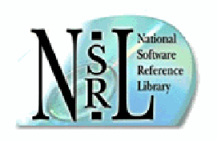
National Software Reference Library（NSRL）のロゴ
the .NET Framework).
左列：.NET Framework上で動作する。
未レビュー訳•SATE is designed to advance research (based on large test sets) in, and improvement of, static analysis tools that find security-relevant defects in source code. Participating toolmakers run their tools on a set of programs. Researchers, led by National Software Reference Library NIST, analyze the tool reports. The results and experiences are reported at a workshop. The tool The National Software Reference Library (NSRL) is reports and analysis are made publicly available designed to collect software from various sources and at a later date. SATE’s purpose is NOT to evaluate incorporate file profiles computed from this software into nor to choose the “best” tools. Rather, it is aimed a Reference Data Set (RDS) of information. The RDS can at exploring the following characteristics of tools: be used by law enforcement, government, and industry relevance of warnings to security, their correctness, organizations to review files on a computer by matching and prioritization. SATE’s goals are: file profiles in the RDS. This will help alleviate much of the o To enable empirical research based on effort involved in determining which files are important as large test sets, evidence on computers or file systems that have been seized To encourage the improvement of tools, as part of criminal investigations. The NSRL also provides a o research environment to promote the development of new and forensics techniques and other applications in computer To speed the adoption of tools by o science. objectively demonstrating their use on real In FY 2016, the NSRL published four releases of the RDS, software. which continues to be the premier software resource. There There have been five SATEs since the program are currently 21,000 applications and 200,000,000 files. began in 2008. The most recent exposition was The project team completed a project with the Stanford held in 2014. In FY 2016, planning commenced for University Library to preserve thousands of first-generation SATE VI. computer packages. In FY 2017, the NSRL was expanded to
•左列（SATE）：SATEは、大規模なテストセットに基づく研究を促進し、ソースコード内のセキュリティ上重要な欠陥を見つける静的解析ツールの改善を目指す。参加ツール開発者はプログラムのセットに対して自らのツールを実行する。NISTが主導する研究者はツールの報告書を分析する。結果と経験はワークショップで報告され、ツールの報告書と分析結果は後日公開される。SATEの目的は「最良」のツールを評価又は選定することではなく、警告のセキュリティ上の関連性、正確さ、優先順位付けなどの特性を検討することである。SATEの目標は、大規模なテストセットに基づく実証研究を可能にすること、ツールの改善を促すこと、実ソフトウェア上での利用を客観的に示して採用を促進すること。プログラムは2008年に始まり、これまでに5回のSATEが開催された。最新の展示は2014年で、2016会計年度にSATE VIの計画が開始された。｜右列（NSRL）：National Software Reference Library（NSRL）は、さまざまな供給元からソフトウェアを収集し、そこから算出したファイルプロファイルをReference Data Set（RDS）にまとめることを目的とする。RDSは、法執行機関、政府機関、産業界がファイルプロファイルを照合してコンピューター上のファイルを確認するために利用できる。これにより、犯罪捜査の一環として押収されたコンピューターやファイルシステム上で、証拠として重要なファイルを特定する作業を軽減できる。NSRLは、コンピューターサイエンスにおける新しいフォレンジック技法及びその他の応用の開発を促進する研究環境も提供する。2016会計年度にNSRLはRDSを4回公開・更新した。RDSは主要なソフトウェア資源であり、現在21,000件のアプリケーションと200,000,000件のファイルを収録する。チームはスタンフォード大学図書館と協力し、第一世代コンピュータのソフトウェアパッケージ数千件を保存した。2017会計年度にNSRLの対象は拡大し、
未レビュー訳F O R M O R E I N F O R M AT I O N , S E E :
左列：詳細情報：
未レビュー訳include mobile apps.
右列：モバイルアプリも対象に含めた。
未レビュー訳http://samate.nist.gov
左列：詳細情報：http://samate.nist.gov
未レビュー訳C O N TA C T :
左列：連絡先：
未レビュー訳N A T I O N W I D E P U B L I C S A F E T Y
全米公共安全
未レビュー訳B R O A D B A N D N E T W O R K
ブロードバンドネットワーク
未レビュー訳( N P S B N ) C Y B E R S E C U R I T Y
（NPSBN）のサイバーセキュリティ
未レビュー訳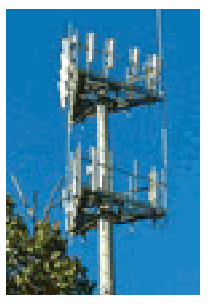
青空を背景にした通信基地局のアンテナ塔の写真
In February of 2012, Congress passed the Middle Class Tax Relief and Job Creation Act. One portion
右列：2012年2月、議会はMiddle Class Tax Relief and Job Creation Act（中間層減税・雇用創出法）を可決した。同法の一部は、
未レビュー訳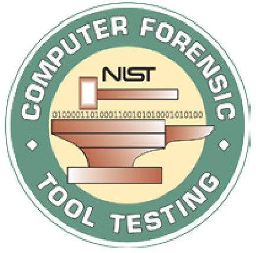
コンピュータ・フォレンジックツール試験（CFTT）プロジェクトの円形ロゴ。周囲に「COMPUTER FORENSIC TOOL TESTING」、中央に「NIST」と金床の図案がある。
Computer Forensics Tool Testing Project
左列：コンピュータ・フォレンジックツール試験プロジェクト
未レビュー訳of this legislation calls for the establishment of a nationwide,
右列：全国規模の
未レビュー訳There is a critical need in the law enforcement community
法執行機関では、
未レビュー訳interoperable
相互運用可能な
未レビュー訳public-safety
公共安全
未レビュー訳to ensure the reliability of computer forensic tools. The goal
コンピュータ・フォレンジックツールの信頼性を確保することが極めて重要である。
未レビュー訳broadband network based on the
ブロードバンドネットワークであり、これは
未レビュー訳of the Computer Forensic Tool Testing (CFTT) project at
NISTのComputer Forensic Tool Testing（CFTT）プロジェクトの目標は、
未レビュー訳3rd Generation Partnership Project’s
第3世代パートナーシップ・プロジェクト（3GPP）の
未レビュー訳NIST is to establish a methodology for testing computer
コンピュータ・フォレンジックソフトウェアツールの試験方法論を確立するため、
未レビュー訳(3GPP) Long-Term Evolution (LTE)
Long-Term Evolution（LTE）
未レビュー訳forensic software tools by the development of general tool
そのために汎用ツール
未レビュー訳technology. The network will be
技術を基盤とする。このネットワークは、
未レビュー訳specifications, test procedures, test criteria, test sets, and test
の仕様、試験手順、試験基準、試験セット及び試験
未レビュー訳Source: http://www.pscr.gov/ deployed and operated by the
出典：http://www.pscr.gov/｜配備・運用主体は
未レビュー訳hardware. The project is intended to provide the information
用ハードウェアの開発を通じて方法論を確立する。このプロジェクトは情報提供を目的とし、
未レビュー訳First Responder Network Authority
First Responder Network Authority
未レビュー訳necessary for toolmakers to improve tools, for users to make
ツール開発者がツールを改良し、利用者が
未レビュー訳(FirstNet). The planned Nationwide Public Safety Broadband
（FirstNet）。計画中のNationwide Public Safety Broadband
未レビュー訳informed choices about acquiring and using computer
コンピュータ・フォレンジックツールの取得・使用について十分な情報に基づく選択を行い、また
未レビュー訳Network (NPSBN) will “create a much-needed nationwide
Network（NPSBN）は、「必要性が非常に高い、全国規模の
未レビュー訳forensics tools, and for interested parties to understand the
関係者がそのツールの
未レビュー訳interoperable broadband network that will help police,
相互運用可能なブロードバンドネットワークを構築し、警察官、
未レビュー訳capabilities of the tools. A capability is required to ensure
ツールの機能を理解できるようにする。この機能は、
未レビュー訳firefighters, emergency medical service professionals and
消防士、救急医療サービス従事者、
未レビュー訳that forensic software tools consistently produce accurate
フォレンジックソフトウェアツールが一貫して正確で、
未レビュー訳other public safety officials stay safe and do their jobs”
その他の公共安全担当者が安全を保ち、職務を遂行できるようにする」と述べている。
未レビュー訳and objective test results. The project team’s approach for
客観的な試験結果を出せるよう保証するために必要である。プロジェクトチームの試験方法は、
未レビュー訳(see http://www.ntia.doc.gov/category/public-safety).
（参照：http://www.ntia.doc.gov/category/public-safety）。
未レビュー訳testing computer forensic tools is based on well-recognized
コンピュータ・フォレンジックツールの試験を、国際的に認められた
未レビュー訳NIST is directed to establish a list of certified devices and
NISTは、認定済み機器の一覧を作成し、
未レビュー訳international methodologies for conformance testing and
適合性試験及び
未レビュー訳required components to be used by public safety officials,
公共安全担当者が使用する必須構成要素を定め、
未レビュー訳quality testing.
品質試験に関する国際的な方法論に基づく。
未レビュー訳vendors, and other interested parties for interacting with
ベンダーその他、全国ネットワークとの接続に関わる関係者も対象とするよう
未レビュー訳In FY 2016, the CFTT project was expanded to allow the nationwide network. NIST is also directed to conduct forensics testers to use the NIST testing methodology in research and development that supports the acceleration their own labs and to produce standardized test reports. and advancement of the nationwide network. Currently, the project supports disk imaging testing and
左列：2016年度にCFTTプロジェクトが拡大され、フォレンジック試験担当者は自らの試験施設でNISTの試験方法論を使い、標準化された試験報告書を作成できるようになった。現在、このプロジェクトはディスクイメージング試験と｜右列：全国ネットワーク。NISTは、同ネットワークの整備を加速・推進する研究開発も行うよう指示されている。
未レビュー訳In FY 2016, CSD, ACD, and the NCCoE supported the joint
2016年度、CSD、ACD及びNCCoEは、共同で
未レビュー訳will be expanded to support hard-disk write blocking and
ハードディスクへの書込み防止機能を支援し、
未レビュー訳NationalTelecommunicationsandInformationAdministration
National Telecommunications and Information Administration
未レビュー訳mobile forensics in 2017. The CFTT project also maintains
2017年にはモバイル・フォレンジックにも拡大する予定である。CFTTプロジェクトはさらに
未レビュー訳(NTIA) and NIST Public Safety Communications Research
（NTIA）とNISTのPublic Safety Communications Research
未レビュー訳the Forensics Tool Catalog and the Computer Forensics
Forensics Tool Catalog（フォレンジックツール・カタログ）及びComputer Forensics
未レビュー訳(PSCR) program with efforts in public-safety mobile-
（PSCR）プログラムを支援し、公共安全向けモバイル
未レビュー訳Reference Dataset.
Computer Forensics Reference Dataset（コンピュータ・フォレンジック参照データセット）を維持している。
未レビュー訳application security, identity management, data and
アプリケーションセキュリティ、ID管理、データ及び
未レビュー訳F O R M O R E I N F O R M AT I O N , S E E :
詳細は以下を参照：
未レビュー訳applicationisolationtechnologies,andenablingcybersecurity capabilities on the PSCR 700 MHz LTE demonstration
アプリケーション分離技術に取り組むほか、PSCRの700 MHz LTE実証ネットワークでサイバーセキュリティ機能を実現する
未レビュー訳http://www.nsrl.nist.gov and
http://www.nsrl.nist.gov、及び
未レビュー訳network located in Boulder, Colorado (see http://www.pscr. gov). At PSCR’s Annual Public Safety Broadband Stakeholder
ネットワークはコロラド州ボルダーにあり（http://www.pscr.govを参照）、PSCRのAnnual Public Safety Broadband Stakeholder
未レビュー訳http://www.cftt.nist.gov
http://www.cftt.nist.gov
未レビュー訳Conference in June 2016, CSD and ACD organized and
2016年6月の会議で、CSD及びACDはパネルを企画し、
未レビュー訳C O N TA C T S :
問い合わせ先：
未レビュー訳moderatedapanelcalled“PublicSafetyandNetworkSecurity Enhancements,” led two breakout sessions on LTE Network
「Public Safety and Network Security Enhancements（公共安全及びネットワークセキュリティの強化）」と題するパネルの司会を務め、LTEネットワーク
未レビュー訳Mr. Doug White
Doug White氏
未レビュー訳Dr. Jim Lyle
Jim Lyle博士
未レビュー訳Security, and had a booth highlighting the cybersecurity-
セキュリティに関する分科会を2つ主導し、PSCRのサイバーセキュリティ関連の
未レビュー訳(301) 975-4761
(301) 975-4761
未レビュー訳(301) 975-3270
(301) 975-3270
未レビュー訳related efforts of PSCR.
取組を紹介するブースも設けた。
未レビュー訳doug.white@nist.gov james.lyle@nist.gov
左列：doug.white@nist.gov｜右列：james.lyle@nist.gov
未レビュー訳S M A R T G R I D C Y B E R S E C U R I T Y
スマートグリッドのサイバーセキュリティ
未レビュー訳The major
スマートグリッドの主な
未レビュー訳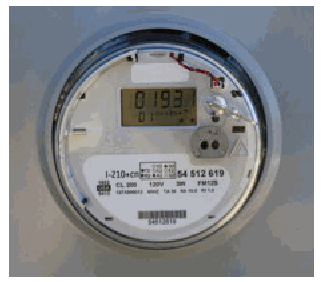
円形の電力量計。中央のデジタル表示には「0.193」と見える。
elements of the smart grid are Information T e c h n o l o g y , industrial control systems/operational technology, and the c o m m u n i c a t i o n s infrastructure. The infrastructure is used
構成要素は、情報技術、産業用制御システム／運用技術、及び通信インフラである。通信インフラは
未レビュー訳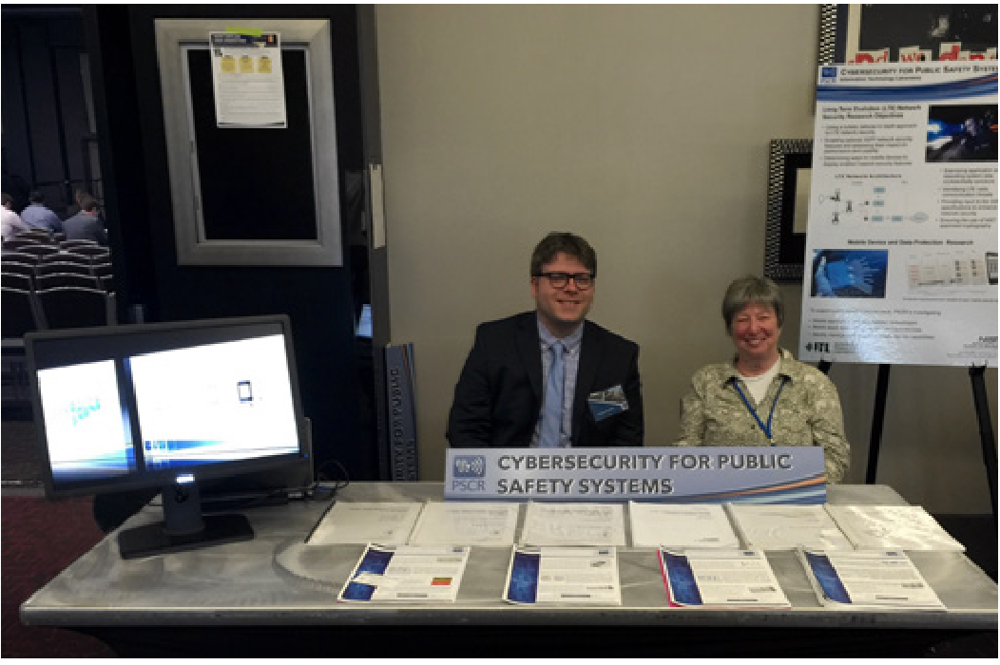
PSCR主催の2016年6月公共安全ブロードバンド関係者会議の会場で、CSDとACDの研究者2人が「Cybersecurity for Public Safety Systems」と掲げた展示ブースで活動を紹介している写真。卓上に資料と画面がある。
Figure 5: CSD and ACD researchers highlighting their
図5：CSD及びACDの研究者が、
未レビュー訳to send command
制御指令を送信し、
未レビュー訳work at the June 2016 Public Safety Broadband Stake-
2016年6月にPSCR主催で開催された公共安全ブロードバンド関係者会議で
未レビュー訳information across the
情報を電力網全体に
未レビュー訳holder Meeting hosted by PSCR.
研究活動を紹介している。
未レビュー訳electric grid from the generation systems to the distribution systems, and to exchange usage and billing information
発電設備から配電設備へ伝送し、使用量及び料金情報を
未レビュー訳During FY 2016, CSD and ACD published NISTIR 8080:
2016年度、CSD及びACDはNISTIR 8080を発行した。題名は「
未レビュー訳between utilities and their customers. The key to the
電力事業者と顧客の間でこれらの情報を交換する。スマートグリッド・インフラを
未レビュー訳Usability and Security Considerations for Public Safety
Usability and Security Considerations for Public Safety
未レビュー訳successful deployment of the smart grid infrastructure is
成功裏に導入する鍵は、
未レビュー訳Mobile Authentication, and NISTIR 8135: Identifying and
Mobile Authentication（公共安全向けモバイル認証のユーザビリティ及びセキュリティに関する考慮事項）」。さらに、NISTIR 8135「Identifying and
未レビュー訳the development of a cybersecurity strategy that includes
新規及び新興システムの設計段階からサイバーセキュリティを考慮する戦略を策定し、
未レビュー訳CategorizingDataTypesforPublicSafetyMobileApplications
Categorizing Data Types for Public Safety Mobile Applications
未レビュー訳cybersecurity as a design consideration for new and
さらに、既存システムへ
未レビュー訳WorkshopReport. In addition, CSD and ACD released draft
Workshop Report（公共安全向けモバイルアプリケーションのデータ型の特定・分類に関するワークショップ報告書）を発行した。さらに、CSD及びACDは草案を
未レビュー訳emerging systems and an approach to adding cybersecurity
サイバーセキュリティを追加する方法を盛り込むことである。
未レビュー訳NISTIR 8136; MobileApplicationVettingServicesforPublic
NISTIR 8136『Mobile Application Vetting Services for Public
未レビュー訳into existing systems. The electric grid is critical to the
電力網は、国の
未レビュー訳Safety- anInformalSurvey, for public comment.
Safety: An Informal Survey（公共安全向けモバイルアプリ審査サービス：非公式調査）』をパブリックコメントに付した。
未レビュー訳economic and physical well-being of the nation, and
経済的・物理的な健全性にとって不可欠であり、
未レビュー訳CSD and ACD participated in the standards emerging cyber threats targeting power systems highlight development process for LTE technology within the 3rd the need to integrate advanced security to protect critical Generation Partnership Project (3GPP) supporting security assets. requirements for public safety that are related to Proximity
左列：CSD及びACDは、第3世代パートナーシップ・プロジェクト（3GPP）におけるLTE標準策定に参加し、公共安全向けセキュリティ要件に関連する近接｜右列：電力システムを標的とする新たなサイバー脅威は、重要資産を保護するために高度なセキュリティを統合する必要性を示している。
未レビュー訳The Smart Grid Interoperability Panel (SGIP) became a
Smart Grid Interoperability Panel（SGIP）は
未レビュー訳Services (ProSe), Group Communication System Enablers
左列続き：サービス（ProSe）、Group Communication System Enablers
未レビュー訳membership-supported organization in January 2013. The
2013年1月に会員が支える組織となった。SGIPの
未レビュー訳(GCSE), and Mission Critical Push-to-Talk (MCPTT). In
左列続き：（GCSE）、Mission Critical Push-to-Talk（MCPTT）に関する取組である。さらに、
未レビュー訳SGIP Cybersecurity Working Group (CSWG) was renamed
Cybersecurity Working Group（CSWG）は、
未レビュー訳addition, CSD and ACD broadened its scope within the
さらに、CSD及びACDは、
未レビュー訳the Smart Grid Cybersecurity Committee (SGCC), and
Smart Grid Cybersecurity Committee（SGCC）に改称され、
未レビュー訳Internet Engineering Task Force (IETF) to include efforts
Internet Engineering Task Force（IETF）における対象範囲を拡大し、
未レビュー訳continues to be led by a NIST representative in support of
NISTの代表者が引き続き委員会を率いている。これは
未レビュー訳related to public safety.
公共安全に関する取組も対象に含めるためである。
未レビュー訳responsibilities identified in the Energy Independence and
2007年のEnergy Independence and Security Act（エネルギー独立・安全保障法）で定められた責務の履行を支援する。SGCC委員長は、
未レビュー訳In FY 2017, CSD and ACD will work to implement and Security Act of 2007. The SGCC chair is a voting member of exercise cybersecurity capabilities in the PSCR 700 MHz the SGIP Technical Committee and serves as an ex-officio LTE demonstration network, conduct research into mobile Director of the Board. authentication solutions to support the different public-
左列：2017年度、CSD及びACDは、PSCRの700 MHz LTE実証ネットワークでサイバーセキュリティ機能を実装・実証し、さまざまな公共安全分野を支援するモバイル認証ソリューションを研究する。｜右列：SGIP技術委員会の議決権を持つ委員であり、理事会の職務上の理事を務める。
未レビュー訳夜空を背景に複数の照明付き煙突・配管設備が並ぶ大型産業施設の写真。
safety disciplines, and investigate mobile application-security services to support the security requirements of public-safety mobile applications. CSD and ACD will continue to engage the public-safety communications community by organizing workshops and conferences and participating in events such as the Association of Public-Safety Communications Officials (APCO) Annual Meeting, PSRC’s Annual Public Safety Broadband Stakeholder Conference, and the International Wireless Communications Expo (IWCE).
左列続き：さらに、公共安全向けモバイルアプリケーションのセキュリティ要件に対応するアプリセキュリティサービスを調査する。CSD及びACDは、ワークショップや会議の開催、APCO年次会議、PSCR年次公共安全ブロードバンド関係者会議、International Wireless Communications Expo（IWCE）などへの参加を通じて、公共安全通信コミュニティとの連携を継続する。
未レビュー訳C O N TA C T S :
問い合わせ先：
未レビュー訳Ms. Sheila Frankel
Sheila Frankel氏
未レビュー訳Dr. Nelson Hastings
Nelson Hastings博士
未レビュー訳In FY 2016, researchers from CSD, ACD, and the Software System (GPS) is the IEEE 1588 Precision Time Protocol and Systems Division (SSD) worked on developing security (PTP)—a time synchronization protocol that is used for the tools for networks specifically designed to support the electric grid and other special-purpose industrial automation next-generation electrical power systems. The researchers and measurement networks. Discussions have begun with concentrated on authenticating the provenance of multicast the NIST Time and Frequency Division about experimental data streams from emerging power system sensors called designs to provide a Coordinated Universal Time (UTC) scale Phasor Measurement Units. By authenticating the sensors to that would be maintained as a NIST (UTC(NIST)) PTP service the utility, the utility can trust that their sensor measurements over a large geographical expanse. are coming from the correct sensors and have not been
左列：2016年度、CSD、ACD及びSoftware Systems Division（SSD）の研究者は、次世代電力システムを支えるネットワーク向けのセキュリティツールを開発した。研究者らは、Phasor Measurement Unit（PMU）と呼ばれる新しい電力システムセンサーのマルチキャストデータについて、その出所の認証に注力した。電力事業者がセンサーを認証すれば、計測値が正しいセンサーから送信されていると信頼でき、｜右列：IEEE 1588 Precision Time Protocol（PTP）は、電力網や特殊用途の産業オートメーション・計測ネットワークで使われる時刻同期プロトコルである。NISTのTime and Frequency Divisionとは、広域で維持する協定世界時（UTC）スケールをNIST（UTC(NIST)）PTPサービスとして提供する実験設計について協議を開始した。
未レビュー訳In FY 2017, CSD will coordinate with NIST’s Engineering
2017年度、CSDはNISTのEngineering
未レビュー訳hijacked.
乗っ取られていない。
未レビュー訳Laboratory (EL) and Smart Grid Program Office on the
Laboratory（EL）及びSmart Grid Program Officeと連携し、
未レビュー訳Multicast authentication of sensor data is challenging, further development of a Cybersecurity Smart Grid Test due to the need for low-security overhead, tolerance Lab—part of the NIST Smart Grid Testbed Facility now under of lossy networks, time-criticality, and high data rates. construction. CSD will also collaborate with the University Researchers augmented an existing authentication scheme of New Hampshire and ITL’s Software and Systems Division to accommodate high-data-rate sensor transmissions on cybersecurity research. The IEEE 1588 Security Working that are unbounded in length (meaning that there is no Group is developing a new Annex to secure time distribution session expiration). Using dual-offset key chains to reduce through (a) PTP integrated authentication and integrity authentication delay and the computational overhead verification, (b) external transport security mechanisms, (c) associated with key chain commitment, they developed a architecture guidance, and (d) monitoring and management new protocol called inf-TESLA that meets the performance guidance. The research will focus on developing a full security requirements imposed by the physical dynamics of the scheme with emphasis on PTP integrated authentication power system. Significant effort was made to integrate their and integrity verification and monitoring/detection of the authentication protocol into existing network simulation network’s timing performance. software, specifically Optimized Network Engineering Tools
左列：センサーデータのマルチキャスト認証は、セキュリティ処理のオーバーヘッドを小さくする必要があり、損失の多いネットワークへの耐性、時間制約、高いデータレートも求められるため難しい。研究者らは、セッション期限がなくデータ長が無制限の高レートセンサー送信に対応するよう、既存の認証方式を拡張した。デュアルオフセット鍵チェーンを用いて認証遅延と鍵チェーンのコミットメントの計算オーバーヘッドを減らし、電力システムの物理的動特性が求める性能要件を満たすinf-TESLAプロトコルを開発した。認証プロトコルを既存のネットワークシミュレーションソフトウェア、特にOptimized Network Engineering Tools｜右列：建設中のNIST Smart Grid Testbed Facilityの一部であるCybersecurity Smart Grid Test Labをさらに整備する。CSDはUniversity of New Hampshire及びITLのSoftware and Systems Divisionともサイバーセキュリティ研究で連携する。IEEE 1588 Security Working Groupは、（a）PTPへの認証・完全性検証の統合、（b）外部トランスポートセキュリティ機構、（c）アーキテクチャ指針、（d）監視・管理指針により時刻配信を保護する新しいAnnexを策定中である。研究では、PTP統合認証・完全性検証とネットワークの時刻性能の監視・検出を重視した完全なセキュリティ方式を開発する。
未レビュー訳F O R M O R E I N F O R M AT I O N , S E E :
詳細は以下を参照：
未レビュー訳(OPNET), thus providing potential users with the ability to evaluate the protocol on their own networks and for their http://www.nist.gov/smartgrid own applications.
左列：（OPNET）に統合し、利用者が自分のネットワークやアプリケーションでプロトコルを評価できるようにした。｜右列：http://www.nist.gov/smartgrid
未レビュー訳http://www.sgip.org
http://www.sgip.org
未レビュー訳Furthermore, in an effort to address the growing
さらに、
未レビュー訳C O N TA C T S :
問い合わせ先：
未レビュー訳interest in co-optimizing cyber and physical components to work together as a system, NIST researchers developed Ms. Suzanne Lightman
左列：サイバー要素と物理要素を一つのシステムとして協調最適化する関心の高まりに対応し、NISTの研究者は｜右列：Suzanne Lightman氏
未レビュー訳Ms. Victoria Yan Pillitteri
Victoria Yan Pillitteri氏
未レビュー訳mathematical formalism to trade off the sensitivity of a (301) 975-6442
左列：攻撃又は外乱に対する動的システムの感度と、｜右列：(301) 975-6442
未レビュー訳(301) 975-8542
(301) 975-8542
未レビュー訳dynamic system to attack or perturbation against the suzanne.lightman@nist.gov victoria.pillitteri@nist.gov authentication overhead incurred by their protocol. This formalism was demonstrated on a power system use case showing the limiting considerations between authentication overhead and stability margins of a wide-area damping C Y B E R S E C U R I T Y controller. The project continues to be a work-in-progress A W A R E N E S S , T R A I N I N G , and was presented and published at ICT Systems Security E D U C A T I O N , A N D O U T R E A C H and Privacy Protection Conference 2016 in Ghent, Belgium. Timing has also become a cyber-physical security issue
左列：プロトコルに伴う認証オーバーヘッドとのトレードオフを数理的に表す形式を開発した。この形式を電力システム事例で実証し、認証オーバーヘッドと広域制動コントローラーの安定余裕との制約関係を示した。研究は継続中で、その成果は2016年にベルギー・ゲントで開催されたICT Systems Security and Privacy Protection Conferenceで発表・刊行された。時刻同期もサイバーフィジカル・セキュリティ上の課題となった。｜右列：suzanne.lightman@nist.gov｜victoria.pillitteri@nist.gov｜バナー：サイバーセキュリティの意識啓発、訓練、教育及び普及活動
未レビュー訳N a t i o n a l I n i t i a t i v e f o r
サイバーセキュリティ教育国家イニシアチブ（National Initiative for
未レビュー訳with the onset of utilities detecting issues in receiving and
電力事業者が時刻情報の受信に問題を検知し始めたことを受け、
未レビュー訳C y b e r s e c u r i t y E d u c a t i o n ( N I C E )
Cybersecurity Education、略称NICE）
未レビュー訳distributingtimetoenabledistributedreal-timemeasurement and control. In particular, the concern of the threat of spoofing The National Initiative for Cybersecurity Education and jamming has led to efforts in determining redundant (NICE) is a partnership among government, academia, and sources of traceable time. The first step is developing the private sector that is focused on cybersecurity education, monitoring and anomaly detection capabilities. The effort training, and workforce development. The mission of NICE is included working with the North American Synchrophasor to energize and promote a robust network and ecosystem Initiative (NASPI) Time Synchronization Task Force to begin of cybersecurity education, training, and workforce the effort in researching requirements and documenting development. NICE fulfills this mission by coordinating innovation, and bring leadership and vision to increase the leadershipinworkingwithgovernmentpartnersoninitiatives number of skilled cybersecurity professionals helping to such as the Cybersecurity National Action Plan, the Federal keep our nation secure.
左列：分散型リアルタイム計測・制御を可能にする時刻配信が必要となった。特に、なりすましや妨害の脅威に対処するため、追跡可能な時刻の冗長な供給源を特定する取組が進められている。まず監視及び異常検出機能を開発する。その一環としてNorth American Synchrophasor Initiative（NASPI）のTime Synchronization Task Forceと協力し、要件を調査して｜右列：National Initiative for Cybersecurity Education（NICE）は、政府、学術界及び民間部門の連携体であり、サイバーセキュリティ教育、訓練及び人材育成に取り組む。NICEの使命は、これらの分野の強固なネットワークとエコシステムを活性化・促進することである。
未レビュー訳Cybersecurity Workforce Strategy, and implementation of the Federal Cybersecurity Workforce Assessment Act.
Federal Cybersecurity Workforce Strategy及びFederal Cybersecurity Workforce Assessment Actの実施を含む。
未レビュー訳NICE is building on its current efforts based on its Strategic Plan—delivered to Congress in April 2016 as In FY 2016, NICE announced grant awards for five required by the Cybersecurity Enhancement Act of 2014— Regional Alliances and Multi-stakeholder Partnerships to which was written with engagement and deliberation Stimulate (RAMPS) cybersecurity education and workforce among NICE partners. The three primary goals of the plan development. The RAMPS grants will bring together K-12, are to: 1) accelerate learning and skills development, 2) higher education, and local employers in regions across the nurture a diverse learning community, and 3) guide career nation (see https://www.nist.gov/nice/regional-alliances-development and workforce planning. NICE partners will and-multistakeholder-partnerships-stimulate-ramps). NICE continue to develop appropriate implementation strategies also provided grant support for the 2015 NICE Conference and metrics for this plan.
左列：NICEは、2016年4月に議会へ提出した戦略計画に基づいて現在の取組を発展させている。この計画はCybersecurity Enhancement Act of 2014の要件に従い、NICEパートナーの参加と協議を経て策定された。主な目標は、1）学習及び技能開発を加速する、2）多様な学習コミュニティを育成する、3）キャリア開発と人材計画を導くことである。NICEパートナーは、この計画の適切な実施戦略と指標の策定を続ける。｜右列：2016年度、NICEはサイバーセキュリティ教育と人材育成を促進する5つのRegional Alliances and Multi-stakeholder Partnerships to Stimulate（RAMPS）に助成金を授与した。助成により各地域のK-12（幼稚園から高校）、高等教育機関及び地元の雇用主を結び付ける（https://www.nist.gov/nice/regional-alliances-and-multistakeholder-partnerships-stimulate-ramps）。NICEはまた、2015年NICE Conferenceへの助成支援も行った。
未レビュー訳and Expo, the 2015 National K-12 Cybersecurity Education Conference, the Center of Academic Excellence (CAE)
Expo、2015年National K-12 Cybersecurity Education Conference、Center of Academic Excellence（CAE）
未レビュー訳In FY 2016, the NICE team at NIST worked to set a solid
2016年度、NISTのNICEチームは将来に向けた堅実な
未レビュー訳Community Meeting, the National Cybersecurity Summit,
Community Meeting及びNational Cybersecurity Summit、
未レビュー訳staffing foundation for future progress. They assembled
人員体制の基盤を整えるため、
未レビュー訳the NICE Challenge Project, and the Cybersecurity Jobs
NICE Challenge Project及びCybersecurity Jobs
未レビュー訳new internal team members that includes leads for
内部チームに新たなメンバーを迎えた。メンバーには、
未レビュー訳Heat Map.
Heat Mapへの支援も行った。
未レビュー訳academic engagement, industry engagement, government engagement, and a program manager. These, in combination In FY 2017, NICE plans to: with the existing NICE Director and NICE Deputy Director,
左列：学術界・産業界・政府との連携を担う各リードとプログラムマネージャーが加わった。既存のNICE Director及びNICE Deputy Directorとあわせて、｜右列：2017年度にNICEは次の取組を計画している。
未レビュー訳•Support the 2016 NICE Conference on October 6-7,
•2016 NICE Conference（
未レビュー訳completed the staffing needs for the NICE Program Office
NICE Program Officeの人員体制を整え、
未レビュー訳2016;
2016年10月6〜7日）を支援する。
未レビュー訳at NIST.
NISTにおける必要人員を充足した。
未レビュー訳•Support the 2016 NICE Conference and Expo and
•2016 NICE Conference and Expo、及び
未レビュー訳Many NICE communication mechanisms were also
2016年度には、NICEのコミュニケーション手段も数多く
未レビュー訳pre-conference seminars on October 31, 2016 –
2016年10月31日から
未レビュー訳established in FY 2016. These include the NICE Public
左列続き：整備された。例としてNICE Public
未レビュー訳November 2, 2016;
11月2日（2016年）までの事前セミナーを支援する。
未レビュー訳Working Group (see https://www.nist.gov/itl/applied-
左列続き：Working Group（参照：https://www.nist.gov/itl/applied-
未レビュー訳•Launch a Cybersecurity Jobs Heat Map known as
•サイバーセキュリティ職の求人状況を示すヒートマップを公開する（名称：
未レビュー訳cybersecurity/nice/about/working-group), the NICE
cybersecurity/nice/about/working-group）、NICE
未レビュー訳“CyberSeek”;
「CyberSeek」；
未レビュー訳Quarterly eNewsletter (see https://www.nist.gov/news-events/news/search/enewsletter), and an increased • Publish a draft of the NICE Cybersecurity presence of NICE at cybersecurity education, training, and
左列続き：NICE Quarterly eNewsletter（参照：https://www.nist.gov/news-events/news/search/enewsletter）、及び（続く）｜右列：NICE Cybersecurity Workforce Frameworkの草案を公表する。
未レビュー訳Workforce Framework; and
Workforce Framework；及び
未レビュー訳workforce development events across the country.
左列続き：全国各地のサイバーセキュリティ教育、訓練、人材育成イベントにおけるNICEの存在感を高める。
未レビュー訳•Provide a public webinar series (see https://www.nist.gov/nice/webinars).
•公開ウェビナーシリーズを提供する（参照：https://www.nist.gov/nice/webinars）。
未レビュー訳F O R M O R E I N F O R M AT I O N , S E E :
詳細情報：
未レビュー訳http://www.nist.gov/nice
http://www.nist.gov/nice
未レビュー訳C O N TA C T S :
問い合わせ先：
未レビュー訳Mr. Rodney Petersen
Rodney Petersen氏
未レビュー訳Ms. Danielle Santos
Danielle Santos氏
未レビュー訳(301) 975-8897
左列：電話（301）975-8897
未レビュー訳(301) 975-5048
右列：電話（301）975-5048
未レビュー訳nice.nist@nist.gov
左列：nice.nist@nist.gov
未レビュー訳danielle.santos@nist.gov
右列：danielle.santos@nist.gov
未レビュー訳C o m p u t e r S e c u r i t y R e s o u r c e C e n t e r ( C S R C ) The CSRC website is a vast repository of valuable information relating to cybersecurity research by NIST
Computer Security Resource Center（CSRC）｜CSRCのウェブサイトは、NISTのサイバーセキュリティ研究に関する貴重な情報を幅広く集めたリポジトリであり、
未レビュー訳20th Annual Colloquium for Information Systems Security Education Conferenceの会場で、NICEのブース前に立つ女性と男性の参加者。女性はcaptionでNICEのAcademic Engagement担当Davina Pruitt-Mentleと示されている。両側にNICEの案内バナーがあり、手前の机に展示物が並ぶ。
Figure 6: The NICE Lead for Academic Engagement, Mrs.
図6：NICEの学術連携担当リードである
未レビュー訳personnel in ITL and is one of the busiest and most expansive
ITLの職員による情報を掲載し、NISTで最も利用頻度が高く、内容の幅も広い
未レビュー訳Davina Pruitt-Mentle, speaking with an attendee at the
Davina Pruitt-Mentle氏が参加者と話している。会場は
未レビュー訳websites at NIST. CSRC encourages the broad sharing of
ウェブサイトの1つである。CSRCは、情報セキュリティに関する
未レビュー訳20th Annual Colloquium for Information Systems Securi-
第20回Information Systems Security
未レビュー訳information security tools and practices, provides a resource
ツールや実践例の幅広い共有を推進し、情報源を提供し、
未レビュー訳ty Education Conference in Philadelphia.
Education Conference（フィラデルフィア開催）。
未レビュー訳for information security standards and guidelines, and
情報セキュリティの標準及びガイドラインも提供し、
未レビュー訳In addition to NICE’s continued coordination with identifies and links key security web resources to support 2 9 academic and industry partners, NICE also continued its industry and government users. Several divisions within
左列：NICEは、学術界・産業界のパートナーとの継続的な調整に加えて、活動をさらに……（文はページ末で途切れる）。｜右列：業界及び政府の利用者を支援する主要なセキュリティ関連Webリソースを特定してリンクを設ける。ITLの複数の部門は
未レビュー訳ITL rely on the CSRC website to post program/project
CSRCウェブサイトを利用して、プログラム／プロジェクトの
未レビュー訳P RO GRA M AN D P ROJEC T ACH IEV EM EN TS | FY 2 01 6
原文のみ
information, research and testing, software tools, and other F e d e r a l C o m p u t e r S e c u r i t y information that is essential to NIST’s customers worldwide. M a n a g e r s ’ ( F C S M ) F o r u m The CSRC website is home to many of the standards, guidelines, and other technical series documents that are
原文更新後、再確認待ち
The Federal Computer Security Managers’ (FCSM) Forum
Federal Computer Security Managers’（FCSM）Forumは
未レビュー訳valuable to the general public. The Publications Released
一般の人々にとっても価値がある。『2016年度に公開された刊行物』
未レビュー訳is sponsored by NIST to promote the sharing of security-
連邦機関間でセキュリティ関連情報の共有を促進するため、NISTが主催する。
未レビュー訳inFY2016section of this annual report provides additional
本年次報告書の節に詳述されている。
未レビュー訳related information among federal agencies. The Forum,
このForumは、
未レビュー訳details. During FY 2016, CSRC had more than 6.2 million page
詳細を提供する。2016年度、CSRCではページビューとダウンロードが合計620万件を超えた。
未レビュー訳which serves more than 1,200 members, strives to provide
1,200人を超える会員を擁し、継続的な機会を提供することを目指している。
未レビュー訳views and downloads.
ページビューとダウンロードがあった。
未レビュー訳an ongoing opportunity for managers of federal information
連邦政府機関の情報セキュリティプログラムの管理者が
未レビュー訳The CSRC team maintains a publication announcement security programs to exchange information security mailing list with more than 73,630 subscribers from materials in a timely manner, build upon the experiences of government, industry, and academia—as well as individuals other programs, and reduce possible duplication of effort. with a personal interest in IT security worldwide. This free It provides a mechanism for NIST to share information email list notifies subscribers about publications that have directly with federal agency information security managers been posted to the CSRC website, along with announcing in fulfillment of NIST’s leadership mandate (under FISMA). It new NIST-sponsored cybersecurity events and important also assists NIST in establishing and maintaining relationships news and/or announcements.
左列：CSRCチームは、刊行物のお知らせを配信するメーリングリストを運営している。登録者は73,630人を超え、政府、産業界、学界のほか、世界各地でITセキュリティに個人的な関心を持つ人々も含まれる。この無料メールリストは、CSRCウェブサイトに掲載された刊行物に加え、NIST主催の新たなサイバーセキュリティイベントや重要なニュース及びお知らせを登録者へ通知する。｜右列続き：連邦政府の情報セキュリティプログラム管理者が、情報セキュリティ関連資料を適時に交換し、他プログラムの経験を活用し、重複を減らす機会を提供する。NISTが連邦機関の情報セキュリティ管理者へ直接情報を共有する仕組みとなり、FISMAに基づくNISTの指導的使命を果たす。また、NISTが他の個人や組織との関係を構築・維持するのにも役立つ
未レビュー訳with other individuals or organizations that are actively
他の個人又は組織との関係を構築・維持するのにも役立ち、
未レビュー訳During FY 2016, the CSRC was updated daily, providing addressing information security issues within the Federal new information such as draft and final versions of technical Government. During FY 2016, NIST’s Patricia Toth served as series documents (e.g., FIPS, SPs, NISTIRs and ITL Bulletins) the Chairperson, and ACD served as the Secretariat of the and updates to various program and project webpages. Forum, with administrative and logistical support from NIST’s The CSRC team has made progress on plans for a complete Peggy Himes. redesign of the current CSRC website, including a content The Forum maintains an extensive email subscription management system (CMS). Updating CSRC with a CMS will service. Participation in the service is restricted to those provide a user-friendly environment and experience. The FederalGovernmentemployeeswitharoleinthemanagement first phase of the project, the publications section; has been of their organization’s information system security program. completed. All technical and non-technical publications (e.g., The Forum conducts bi-monthly meetings and an annual white papers, conference papers, presentations) have been two-day conference for a discussion of current issues and successfully integrated into the new system.
左列：2016年度、CSRCは毎日更新され、FIPS、SP、NISTIR、ITL Bulletinなど技術シリーズ文書の草案・最終版、及び各種プログラム／プロジェクトのウェブページ更新などの情報が追加された。CSRCチームは、コンテンツ管理システム（CMS）を含む現行ウェブサイトの全面刷新計画を進めた。CMSにより、利用しやすい環境と操作性が実現する。プロジェクトの第1段階である刊行物セクションは完了し、ホワイトペーパー、会議論文、発表資料など技術・非技術の刊行物が新システムへ統合された。｜右列続き：それらの個人・組織は連邦政府内の情報セキュリティ問題に積極的に取り組んでいる。2016年度、NISTのPatricia Tothが議長を務め、ACDがForumの事務局を担当した。NISTのPeggy Himesが事務・運営面を支援した。Forumは大規模な電子メール購読サービスを運営する。利用対象は、所属組織の情報システムセキュリティプログラム管理に携わる連邦政府職員に限られる。Forumはbi-monthly会合と年1回の2日間会議を開催し、現行の課題及び
未レビュー訳topics of interest to those responsible for protecting sensitive
機微な
未レビュー訳The CSRC team has spent the last portion of FY 2016 (unclassified) federal systems. Events are open to federal migrating the content from the current website into the CMS, employees and their designated support contractors. and in FY 2017, a beta test site of the entire CSRC is expected TopicsofdiscussionatFCSMmeetingsinFY2016included to be made available. The CSRC team plans to continue briefings on: software-aided security control selection, best testing the new website and to review feedback received, practices for privileged user personal identity verification, with the plan for full transition to the updated site in FY 2017. the Cybersecurity Framework, the National Cybersecurity
左列：CSRCチームは2016年度の後半に現行ウェブサイトからCMSへのコンテンツ移行を進めた。2017年度にはCSRC全体のベータテストサイトを公開する予定である。新ウェブサイトのテストと利用者からのフィードバック確認を継続し、2017年度中の全面移行を目指す。｜右列続き：（未分類）連邦システムを保護する担当者が関心を持つテーマを議論する。イベントは連邦職員と、連邦職員が指定する支援請負業者に公開される。2016年度のFCSM会議では、次の事項に関する説明が行われた：ソフトウェア支援によるセキュリティ管理策の選択、特権ユーザーの個人ID確認に関するベストプラクティス、Cybersecurity Framework、National Cybersecurity
未レビュー訳Center of Excellence (NCCoE) - Federally Funded Research
Center of Excellence（NCCoE、連邦政府資金による研究開発センター［FFRDC］）
未レビュー訳F O R M O R E I N F O R M AT I O N , S E E :
詳細情報：
未レビュー訳and Development Center (FFRDC), an update on vetting
、モバイルアプリケーションのセキュリティ審査の最新情報、及び
未レビュー訳http://csrc.nist.gov
http://csrc.nist.gov
未レビュー訳the security mobile applications, and the U.S. Government Configuration Baselines (USGCB).
米国政府構成ベースライン（USGCB）に関する説明。
未レビュー訳C O N TA C T S :
問い合わせ先：
未レビュー訳FY 2016’s annual two-day offsite was held at NIST
2016年度の年次2日間会議はNISTで開催され、
未レビュー訳Questions regarding the CSRC website can be sent to the on August 16-17, 2016. Presentations included the current CSRC Webmasters at:
左列：CSRCウェブサイトに関する質問は、次のCSRCウェブマスターに連絡できる。｜右列続き：2016年8月16〜17日に開催された。発表では、当時の
未レビュー訳technical, operational and management information systems security topics and updates on the information system
技術、運用及び管理に関する情報システムセキュリティの話題と、情報システムの
未レビュー訳webmaster-csrc@nist.gov
webmaster-csrc@nist.gov
未レビュー訳security activities of OMB, GAO, National Aeronautics and Space Administration (NASA), NARA, Federal Aviation
OMB、GAO、NASA（米航空宇宙局）、NARA及びFAA（連邦航空局）の
未レビュー訳Mr. Patrick O’Reilly
左列：Patrick O’Reilly氏
未レビュー訳Ms. Nicole Keller
右列：Nicole Keller氏
未レビュー訳Administration (FAA), Census Bureau, DHS, and NIST. Most
米国国勢調査局、DHS及びNISTの情報システムセキュリティ活動についても取り上げた。発表資料の多くは
未レビュー訳(301) 975-4751
左列：電話（301）975-4751
未レビュー訳(301) 975-3648
右列：電話（301）975-3648
未レビュー訳presentations are available online (see http://csrc.nist.gov/
発表資料はオンラインで入手できる（参照：http://csrc.nist.gov/
未レビュー訳patrick.oreilly@nist.gov
左列：patrick.oreilly@nist.gov
未レビュー訳nicole.keller@nist.gov
左列：nicole.keller@nist.gov
未レビュー訳groups/SMA/forum/events.html). The following is a list of presentations that were given at the annual two-day offsite meeting (see http://csrc.nist.gov/groups/SMA/forum/events.html for links Ms.Jody Jacobs to the presentations):
右列続き：groups/SMA/forum/events.html）。年次2日間オフサイト会議で行われた発表の一覧を示す（発表資料へのリンク：https://csrc.nist.gov/groups/SMA/forum/events.html）。｜右列連絡先：Ms. Jody Jacobs
未レビュー訳(301) 975-4728 jlj3@nist.gov
右列連絡先：電話（301）975-4728、jlj3@nist.gov
未レビュー訳•Federal CIO Council update;
•左列：Federal CIO Councilの最新情報；
未レビュー訳•Establishing a Tier 2 Information Security risk (Editors’ Note: Pat Toth worked on this initiative until she management program: How a department-wide took another position at NIST.) security gap analysis provided a basis for a new security program; F e d e r a l I n f o r m a t i o n S y s t e m s
•左列：Tier 2情報セキュリティリスク管理プログラムの確立：省庁全体のセキュリティギャップ分析を通じて、新たなセキュリティプログラムの基礎を築いた。｜右列：編集者注：Pat Toth氏はNIST内の別の職務に就くまで本取組を担当した。｜見出し続き：Federal Information Systems
未レビュー訳•Government Accountability Office (GAO) S e c u r i t y E d u c a t o r s ’ A s s o c i a t i o n Information Security update;
•左列：Government Accountability Office（GAO）の情報セキュリティ最新情報；｜右列見出し続き：Security Educators’ Association
未レビュー訳( F I S S E A )
（FISSEA）
未レビュー訳•SP 800-150, GuidetoCyberThreatInformation The Federal Information Systems Security Educators’ Sharing; Association (FISSEA), founded in 1987, is a NIST organization
•左列：SP 800-150『サイバー脅威情報共有のガイド』；｜右列：Federal Information Systems Security Educators’ Association（FISSEA）は1987年に設立されたNISTの組織で、連邦機関の専門職員を支援する。
未レビュー訳•NIST SP 800-171, ProtectingControlledUnclassified to assist federal agency professionals with meeting InformationinNonfederalInformationSystemsand information system security awareness, training, and Organizations; education responsibilities. FISSEA strives to elevate the
•左列：SP 800-171『非連邦情報システム及び組織における管理対象非機密情報の保護』；｜右列続き：情報システムのセキュリティ意識向上、訓練及び教育の責務を果たせるよう支援する。FISSEAは、
未レビュー訳•Continuous Diagnostics and Mitigation (CDM); general level of information system security knowledge for the Federal Government and the federal workforce. It also
•左列：Continuous Diagnostics and Mitigation（CDM）；｜右列続き：連邦政府及び連邦職員の情報システムセキュリティ知識の全般的な水準を高めることを目指す。また、
未レビュー訳•The new A-130 Policy; seeks to assist the professional development of its members.
•左列：新たなA-130方針；｜右列続き：会員の専門能力開発も支援する。
未レビュー訳•Migrating the Federal Government to Hyper Text FISSEA membership is open to information system Transfer Protocol Secure (HTTPS); security professionals, professional trainers and educators,
•左列：連邦政府をHyper Text Transfer Protocol Secure（HTTPS）へ移行；｜右列：FISSEAの会員資格は、情報システムセキュリティ専門職、専門トレーナー及び教育者、
未レビュー訳•Security beyond a “system” – fiscal service’s managers responsible for information system security approach to external services; training programs in federal agencies, contractors of these
•左列：一つの「システム」を超えたセキュリティ—Fiscal Serviceによる外部サービスへの対応；｜右列続き：連邦機関の情報システムセキュリティ訓練プログラムを担当する管理者、これらの機関の請負業者、及び認定教育機関で情報セキュリティ訓練に携わる教員に開かれている。
未レビュー訳•Case study: boundary consolidation to support agencies, and faculty members of accredited educational more efficient, effective use of resources and institutions who are involved in information security training increased maturity in continuous monitoring; and education. All that is required to become a FISSEA member is a willingness to share products, information, and
•左列：事例研究：境界統合により、資源のより効率的・効果的な活用と継続的モニタリングの成熟度向上を支援；｜右列：FISSEA会員となるために必要なのは、製品、情報及び
未レビュー訳•Lessons learned from the Federal Risk experiences. A working group meets monthly to administer and Authorization Management Program business activities. (FedRAMP); FISSEA communicates with its membership through a
•左列：Federal Risk and Authorization Management Program（FedRAMP）から得た教訓；｜右列続き：経験を共有する意思である。作業グループは業務運営のため月例会を開く。
未レビュー訳•CDM update, interagency communications, and website, a mailing list, and a social networking site. The ACD agency involvement; and staff assists FISSEA with its operations by providing staffing
•左列：CDMの最新情報、機関間連絡及び各機関の関与；｜右列：FISSEAはウェブサイト、メーリングリスト、ソーシャルネットワーキングサイトを通じて会員と連絡を取る。ACD職員は人員を提供するなどしてFISSEAの活動を支援し、
未レビュー訳•The Cybersecurity Strategy and Implementation support for several of its activities (and by acting as FISSEA’s Plan (CSIP) and FY 2016 CIO FISMA metrics. host agency). The Forum plays a valuable role in helping NIST (and The 29th Annual FISSEA Conference occurred March
•左列：Cybersecurity Strategy and Implementation Plan（CSIP）及び2016年度CIO FISMA指標。｜右列続き：幾つかの活動を支援し、FISSEAの主催機関としても機能する。｜左列下段：Forumは、NIST（及び｜右列下段：第29回FISSEA年次会議は
未レビュー訳other federal agencies) develop and maintain a strong, 15-16, 2016 at NIST, and the theme was “TheQuestforthe proactive stance in the identification and resolution of new UnhackableHuman:ThePowerofCybersecurityAwareness strategic and tactical IT security issues as they emerge. and Training.” The 250+ attendees were made up of The email list of interested parties has steadily increased in managers (specifically those responsible for information size and provides a valuable resource for federal security systems security awareness, training, certifications, program managers.
左列続き：他の連邦機関）が、新たに現れる戦略的・戦術的なITセキュリティ課題の特定・解決において、強固で積極的な姿勢を確立・維持するのを支援する。関係者のメーリングリストは着実に拡大し、連邦政府のセキュリティプログラム管理者に貴重な情報源を提供している。｜右列続き：2016年3月15〜16日にNISTで開催され、テーマは「ハッキング不可能な人間を目指して：サイバーセキュリティの意識向上と訓練の力」であった。250人を超える参加者は管理者（特に情報システムのセキュリティ意識向上、訓練、認証を担当する者）で構成され、
未レビュー訳workforce identification, compliance, etc. in federal agencies), contractors providing awareness and training
右列続き：連邦機関における要員識別や遵守等も担う管理者、意識向上・訓練を提供する請負業者による支援、及び
未レビュー訳F O R M O R E I N F O R M AT I O N , S E E :
詳細情報：
未レビュー訳support, and faculty members of accredited educational
右列続き：認定教育機関で情報セキュリティの訓練・教育に携わる教員も含まれる。
未レビュー訳http://csrc.nist.gov/groups/SMA/forum/
http://csrc.nist.gov/groups/SMA/forum/
未レビュー訳institutions who are involved in information security training and education. The attendees learned about new techniques
右列続き：認定教育機関で情報セキュリティの訓練・教育に携わる教員も含まれる。参加者は新しい技法について学んだ。
未レビュー訳C O N TA C T S :
連絡先：
未レビュー訳for developing/conducting training, cost-effective practices, workforce development, and free resources and contacts.
右列続き：訓練の企画・実施、費用対効果の高い実践、要員育成、無料リソース及び連絡先に関する事項である。
未レビュー訳Ms. Victoria Yan Pillitteri
左列：Victoria Yan Pillitteri氏
未レビュー訳Ms. Peggy Himes
右列：Peggy Himes氏
未レビュー訳(301)975-8542
左列：電話（301）975-8542
未レビュー訳(301) 975-2489
右列：電話（301）975-2489
未レビュー訳NIST’s Pat Toth, Peggy Himes, and members of the
右列：NISTのPat Toth氏、Peggy Himes氏、及びFISSEA Technical Working Groupのメンバーは
未レビュー訳victoria.pillitteri@nist.gov peggy.himes@nist.gov FISSEA Technical Working Group were integral to the effort
左列：victoria.pillitteri@nist.gov｜右列：peggy.himes@nist.gov｜右列続き：2016年次会議を支援する上で重要な役割を果たした。
未レビュー訳to support the 2016 Annual Conference. NIST ITL Director, 3 1
右列続き：2016年次会議を支援した。NIST ITL所長は、
未レビュー訳P RO GRA M AN D P ROJEC T ACH IEV EM EN TS | FY 2 01 6
原文のみ
THIS PUBLICATION IS AVAILABLE FREE OF CHARGE FROM: http://dx.doi.org/10.6028/NIST.SP.800-195
原文のみ
Charles Romine, opened the event as the welcoming speaker, described below, including a new section this year related to and ten-year-old Reuben Abishai Paul, Founder and CEO of video-based training. CyberShaolin & Prudent Games, gave the keynote address “R
左列：NIST ITLのCharles Romine氏が歓迎の挨拶でイベントを開始し、｜右列：以下に示す内容には、今年新設されたビデオベース訓練の部門も含まれる。｜左列続き：10歳のReuben Abishai Paul氏（CyberShaolin & Prudent Gamesの創設者兼CEO）が基調講演「R
未レビュー訳In FY 2016, awarded certificates were selected by an
右列：2016年度の表彰者は、
未レビュー訳U #Unhackable?” Presenters at the event represented NIST,
左列続き：U #Unhackable?」を題目とする。発表者はNIST、
未レビュー訳impartial judging committee and included:
右列続き：中立的な審査委員会が選定し、受賞者は次のとおりである。
未レビュー訳DHS, Department of State (DoS), National Security Agency
左列続き：DHS、国務省（DoS）、国家安全保障局（NSA）、
未レビュー訳•Poster Winner: K. Rudolph, John Ippolito, G. Mark
•右列：ポスター部門受賞者：K. Rudolph、John Ippolito、G. Mark
未レビュー訳(NSA), National Institute of Health (NIH), National Oceanic
左列続き：米国海洋大気庁（NOAA）、連邦住宅金融庁（FHFA）、
未レビュー訳Hardy, Andrew Ellis, and Charles A. Filius, from
右列続き：Hardy、Andrew Ellis、Charles A. Filius（
未レビュー訳and Atmospheric Administration (NOAA), Federal Housing
左列続き：民間企業及び学界が参加した。2日目には、参加者はベンダー及び連邦機関を訪問し、関心のある
未レビュー訳Native Intelligence, Inc. and friends;
右列続き：Native Intelligence, Inc.及び協力者。
未レビュー訳Finance Agency (FHFA), private industry, and academia. The attendees had an opportunity to visit vendors and • Website Winner: Lisa Dorr, Sarah Moffat, federal agencies on the second day to discuss their specific
左列続き：関心のある｜右列：ウェブサイト部門受賞者：Lisa Dorr、Sarah Moffat、
未レビュー訳Toney Rogers, and Jennifer Kimberly from U.S.
右列続き：Toney Rogers、Jennifer Kimberly（米国）
未レビュー訳awareness and training programs, and the Pecha Kucha fast-
左列続き：啓発・訓練プログラムについて話し合い、Pecha Kucha形式の短い講演は
未レビュー訳Department of Health and Human Services (HHS),
右列続き：米国保健福祉省（HHS）、
未レビュー訳paced talks proved to be both entertaining and educational.
左列続き：テンポが速く、娯楽性と教育性を兼ね備えていた。
未レビュー訳Office of Information Security (OIS), Governance, Risk Management, and Compliance (GRC) –
右列続き：Office of Information Security（OIS）のGovernance, Risk Management, and Compliance（GRC）—
未レビュー訳The FISSEA Educator of the Year Award is an annual
左列：FISSEA Educator of the Year Awardは、毎年の
未レビュー訳Governance Division;
右列続き：Governance Division；
未レビュー訳recognition to honor a contemporary individual who is making special efforts to create, build, manage, or inspire • Motivational Item Winner: K. Rudolph from Native an information systems security awareness, training, or
左列続き：表彰であり、情報システムのセキュリティ意識向上、訓練又は教育プログラムの創設・構築・運営・推進に特別な努力を払う人物を顕彰する。｜右列：意欲向上アイテム部門受賞者：K. Rudolph（Native
未レビュー訳Intelligence, Inc.;
右列続き：Intelligence, Inc.；
未レビュー訳education program. Susan Hansche (DHS) presented the
左列続き：Susan Hansche氏（DHS）が、
未レビュー訳•Newsletter Winner: Indian Health Service (IHS),
•右列：ニュースレター部門受賞者：Indian Health Service（IHS）、
未レビュー訳FISSEA 2016 Educator of the Year Award to Gretchen Morris
左列続き：FISSEA 2016 Educator of the Year AwardをGretchen Morris氏に授与した。
未レビュー訳Office of Information Technology, Division of
右列続き：情報技術局、
未レビュー訳(DB Consulting Group/NASA). Gretchen’s vast knowledge-
左列：Gretchen Morris氏（DB Consulting Group/NASA）の豊富な知識基盤、
未レビュー訳Information Security;
右列続き：Information Security；
未レビュー訳base, strong work ethic, her dedication to the improvement of information security awareness and training, and her • Security Training: The Employment and Social
左列続き：高い勤勉さ、情報セキュリティの意識向上・訓練の改善への献身、及び｜右列：セキュリティ訓練部門：Employment and Social
未レビュー訳Development Canada (ESDC) Security Training and
右列続き：Development Canada（ESDC）のSecurity Training and
未レビュー訳commitment to coordinating the annual FISSEA Security
左列続き：年次FISSEA Security Contestの調整に対するコミットメントが、
未レビュー訳Awareness Program Team; and
右列続き：Awareness Program Team；
未レビュー訳Contest made her the perfect recipient for the award.
左列続き：Gretchen氏をこの賞にふさわしい受賞者とした。
未レビュー訳•Video: Cheryl Seaman and Stephanie Erickson from
•右列：ビデオ部門：Cheryl Seaman氏及びStephanie Erickson氏（
未レビュー訳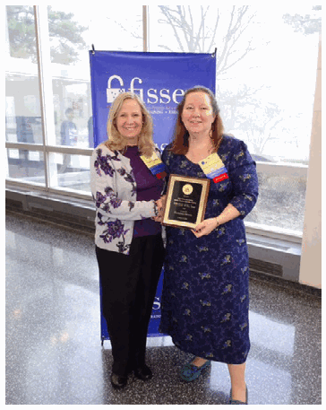
Susan Hansche氏（左）がGretchen Morris氏（右）へFISSEA 2015 Educator of the Year Awardを手渡している写真。背後にFISSEAのバナーがある。
NIH. Peer’s Choice Award winners were selected by peers
右列続き：NIH）。Peer’s Choice Award受賞者は会議参加者の投票で選ばれ、
未レビュー訳during the conference and included:
右列続き：会議で選出された受賞者は次のとおりである。
未レビュー訳•Poster Winner: Katherine Martini from DoS – Office of Cybersecurity;
•右列：ポスター部門受賞者：Katherine Martini氏（国務省［DoS］サイバーセキュリティ局）；
未レビュー訳•Website Winner: Lisa Dorr, Sarah Moffat, Toney Rogers, and Jennifer Kimberly from HHS, Office of Information Security (OIS), Governance, Risk Management, and Compliance (GRC) – Governance Division;
•ウェブサイト部門受賞者：Lisa Dorr、Sarah Moffat、Toney Rogers、Jennifer Kimberly（HHS情報セキュリティ局［OIS］のGovernance, Risk Management, and Compliance［GRC］—Governance Division）；
未レビュー訳•Motivational Item Winner: K. Rudolph from Native Intelligence, Inc.;
•意欲向上アイテム部門受賞者：K. Rudolph（Native Intelligence, Inc.）；
未レビュー訳•Newsletter Winner: IHS Office of Information Technology, Division of Information Security;
•ニュースレター部門受賞者：Indian Health Service（IHS）情報技術局・情報セキュリティ部門；
未レビュー訳•Security Training: IHS Office of Information Technology, Division of Information Security;
•セキュリティ訓練部門：IHS情報技術局・情報セキュリティ部門；
未レビュー訳Figure 7: Susan Hansche, DHS, presented the FISSEA 2015
図7：DHSのSusan Hansche氏がFISSEA 2015
未レビュー訳and
及び
未レビュー訳Educator of the Year Award to Gretchen Morris, DB Con-sulting/NASA on March 15, 2016.
Educator of the Year AwardをGretchen Morris氏（DB Consulting/NASA）に2016年3月15日に授与した。
未レビュー訳•Video: The ESDC Security Training and Awareness Program Team.
•ビデオ部門：ESDC Security Training and Awareness Program Team。
未レビュー訳Other traditional FISSEA conference events include announcing the winners of the FISSEA Security Awareness, Another benefit of attending the 2016 FISSEA conference Training & Education Contest, which includes six categories was the networking opportunities. The conference continues from one of FISSEA’s three key areas: awareness, training, to be a valuable forum for attendees to learn about ongoing and education. A winner is selected from each category and planned training and education programs and initiatives.
左列：FISSEA会議の従来行事には、FISSEA Security Awareness, Training & Education Contestの受賞者発表がある。このコンテストはFISSEAの三つの主要領域（意識向上、訓練、教育）を扱う6カテゴリから成る。各カテゴリから受賞者を選出し、｜右列：2016 FISSEA会議への参加によるもう一つの利点は、交流の機会である。会議は、進行中及び計画中の訓練・教育プログラムや取組について学べる有用な場であり、
未レビュー訳Annual FISSEA Conference will be held at NIST on March 14-
左列：第30回FISSEA年次会議は2017年3月14〜
未レビュー訳the Director of the NSA, and the appropriate
右列続き：NSA長官及び適切な
未レビュー訳15, 2017.
左列続き：15日にNISTで開催される。
未レビュー訳committees of Congress. Congress indicated the long-term need for the Board
右列続き：連邦議会の適切な委員会。議会は理事会の長期的な必要性を示し、
未レビュー訳F O R M O R E I N F O R M AT I O N , S E E :
左列：詳細情報：
未レビュー訳by setting the terms of Board members to four years. The
右列続き：理事会委員の任期を4年と定めた。
未レビュー訳https://csrc.nist.gov/Projects/Federal-Info-Systems-
左列URL：https://csrc.nist.gov/Projects/Federal-Info-Systems-
未レビュー訳Board’s charter requires that the NIST Director appoint the
右列続き：理事会規程ではNIST長官が
未レビュー訳Security-Educators-Assoc
左列URL続き：Security-Educators-Assoc
未レビュー訳Chairperson and all twelve members of the Board, each of whom is selected for her/his preeminence in the IT industry
右列続き：議長及び理事会委員12名全員を任命することを定めており、各委員はIT業界での卓越した実績に基づいて選任される。
未レビュー訳C O N TA C T S :
左列：連絡先：
未レビュー訳or related disciplines.
右列続き：又は関連分野での卓越した実績に基づいて選任される。
未レビュー訳Mr. Clarence Williams
左列：Clarence Williams氏
未レビュー訳Ms. Peggy Himes
左列：Peggy Himes氏
未レビュー訳Mr. Chris Boyer took over leadership from Dr. Peter
右列：Chris Boyer氏がDr. Peter
未レビュー訳(240) 672-8723
左列：電話（240）672-8723
未レビュー訳(301) 975-2489
左列：電話（301）975-2489
未レビュー訳Weinberger and was officially appointed by the NIST Director
右列続き：Weinberger氏から指導的役割を引き継ぎ、NIST長官から正式に任命された。
未レビュー訳clarence.williams@nist.gov peggy.himes@nist.gov
左列：clarence.williams@nist.gov｜左列：peggy.himes@nist.gov
未レビュー訳as the ISPAB Chair on May 1, 2016. Chris Boyer (Assistant Vice President, Global Public Policy at AT&T Services Inc.) has
右列続き：2016年5月1日にISPAB議長に就任した。Chris Boyer氏（AT&T Services Inc.のグローバル公共政策担当副社長補佐）は、
未レビュー訳(Editors’ Note: Pat Toth worked on this initiative until she
左列：編集者注：Pat Toth氏は、
未レビュー訳been a member of the Board since June 2012. In addition to
右列続き：2012年6月から理事会の委員を務めている。さらに、
未レビュー訳took another position at NIST.)
左列続き：NIST内の別の職務に就くまで、この取組に携わった。
未レビュー訳his official role representing AT&T, he serves as AT&T’s point of contact to the National Security Telecommunications
右列続き：AT&Tを代表する正式な役割に加え、AT&Tの連絡担当者としてNational Security Telecommunications
未レビュー訳I n f o r m a t i o n S e c u r i t y a n d P r i v a c y Advisory Council (NSTAC), a federal advisory committee
左列見出し：情報セキュリティ・プライバシー｜右列続き：Advisory Council（NSTAC）は連邦諮問委員会であり、
未レビュー訳tasked with providing advice to the president on matters of
右列続き：大統領に、
未レビュー訳A d v i s o r y B o a r d ( I S P A B )
左列見出し続き：諮問委員会（ISPAB）
未レビュー訳national security and emergency preparedness (NS/EP).
右列続き：国家安全保障及び緊急事態対応（NS/EP）について助言する任務を負う。
未レビュー訳The Information Security and Privacy Advisory Board (ISPAB) was initiated in 1987 and has successfully renewed The ISPAB Board currently has ten members its charter with proper authority every two years. The supporting the Chair (see http://csrc.nist.gov/groups/ legislative history for Public Law 100-235 and Public Law SMA/ispab/membership.html). This year, the Board was 107-347 underscores that Congress intended that the Board pleased to welcome Ms. Patricia Hatter as a new member should be a continuing body. The Board plays a central and (see https://www.nist.gov/news-events/news/2016/08/ unique role in providing the government with expert advice nists-information-security-and-privacy-advisory-board-concerning information security and privacy issues that may adds-industry-member). The following are current Board affect federal information systems. No other similar group of members: experts meets regularly to review information security issues • Ana (Annie) Antón, Professor and Chair, School involved in unclassified Federal Government computer
左列：Information Security and Privacy Advisory Board（ISPAB）は1987年に設置され、適切な権限の下、2年ごとに憲章を更新してきた。Public Law 100-235及びPublic Law 107-347の立法経緯は、議会が本理事会を継続的な組織とする意図を有していたことを示す。理事会は、連邦情報システムに影響し得る情報セキュリティ及びプライバシーの問題について、政府に専門的助言を提供する中心的かつ独自の役割を果たす。未分類の連邦政府コンピュータ｜右列：ISPAB理事会は議長を支える10名の委員で構成される（https://csrc.nist.gov/groups/SMA/ispab/membership.html）。本年、理事会は新委員としてPatricia Hatter氏を迎えた（https://www.nist.gov/news-events/news/2016/08/nists-information-security-and-privacy-advisory-board-adds-industry-member）。現在の委員は次のとおりである。
未レビュー訳of Interactive Computing, Georgia Institute of
右列委員一覧続き：Interactive Computing学部の教授兼学科長、Georgia Institute of
未レビュー訳systems and networks. Title III of the E-Government Act
左列続き：コンピュータシステム及びネットワークに関わる情報セキュリティ問題を定期的に検討する同種の専門家組織はほかにない。E-Government Act第III章は、
未レビュー訳Technology;
右列続き：Technology；
未レビュー訳of 2002 reaffirmed the need for this Board by giving it
左列続き：2002年に本理事会の必要性を再確認し、理事会に
未レビュー訳•John R. Centafont, National Security Agency,
•右列：John R. Centafont氏、National Security Agency、
未レビュー訳additional responsibilities: to thoroughly review all proposed
左列続き：次の追加責務を与えた：提案されたすべての
未レビュー訳Information Assurance and Cyber Defense;
右列続き：Information Assurance and Cyber Defense；
未レビュー訳information technology standards and guidelines developed under Section 20 of the National Institute of Standards and • David Cullinane, CEO, TruStar, LLC; Technology Act (15 U.S.C. 278g-3), as amended.
左列続き：改正後のNational Institute of Standards and Technology Act第20条（15 U.S.C. 278g-3）に基づき策定された、情報技術の基準及びガイドラインを徹底的に審査すること。｜右列：David Cullinane氏、TruStar, LLC最高経営責任者；
未レビュー訳•Gregory Garcia, Executive Vice President, McBee Strategic Consulting;
•右列：Gregory Garcia氏、McBee Strategic Consulting上級副社長；
未レビュー訳The ISPAB is a federal advisory committee with specific statutory objectives to identify emerging managerial,
左列：ISPABは、法定の具体的な目標を持つ連邦諮問委員会であり、管理上、
未レビュー訳•Jeffrey Greene, Esq., Director, Government
•右列：Jeffrey Greene氏、弁護士、Government
未レビュー訳technical, administrative, and physical safeguard issues
左列続き：技術上、行政上及び物理的な保護策に関する新たな課題を特定する。
未レビュー訳Affairs, North America & Senior Policy Counsel,
右列続き：Affairs, North Americaのシニアポリシー顧問、
未レビュー訳related to information security and privacy.
左列続き：情報セキュリティ及びプライバシーに関連する。
未レビュー訳Senior Policy Counsel, Cybersecurity and Identity, Symantec Corporation;
右列続き：Cybersecurity and Identity担当シニアポリシー顧問、Symantec Corporation；
未レビュー訳The duties of the Board, as dictated in the Act, are:
左列：同法に定められた理事会の職務は、次のとおりである。
未レビュー訳•Patricia Hatter, General Manager, Professional
•右列：Patricia Hatter氏、Professional
未レビュー訳•To identify emerging managerial, technical, Services, Intel; administrative, and physical safeguard issues relative to information security and privacy;
•左列・職務1：情報セキュリティ及びプライバシーに関する、管理上、技術上、行政上及び物理的な保護策の新たな課題を特定すること；
未レビュー訳•Toby Levin, Retired (formerly Senior Advisor and Director of Privacy Policy, U.S. Department of
•右列：Toby Levin氏、退職者（元・米国国土安全保障省プライバシー政策担当上級顧問兼ディレクター）；
未レビュー訳•To advise NIST and the Director of OMB on Homeland Security); information security and privacy issues pertaining to Federal Government information systems,
•左列・職務2：連邦政府情報システムに関する情報セキュリティ及びプライバシーの問題について、NIST及びOMB長官に助言すること。
未レビュー訳•Edward Roback, Associate Chief Information
•右列：Edward Roback氏、サイバーセキュリティ担当副最高情報責任者、
未レビュー訳including a thorough review of proposed standards
左列続き：これには、提案された基準を徹底的に審査すること、
未レビュー訳Officer for Cybersecurity, U.S. Department of
右列続き：米国
未レビュー訳and guidelines developed under section 278g–3 of
左列続き：及び本編第278g-3条に基づき策定されたガイドラインも含まれる。
未レビュー訳Treasury;
右列続き：財務省；
未レビュー訳this title; and
左列続き：並びに
未レビュー訳•Gale Stone, Deputy Assistant Inspector General for 3 3
•右列：Gale Stone氏、Social Security Administration監査担当副次席監察官；及び
未レビュー訳•To provide an annual report of its findings to the Audit, Social Security Administration; and Secretary of Commerce, the Director of OMB,
•左列・職務3：調査結果の年次報告書を商務長官、OMB長官及び
未レビュー訳P RO GRA M AN D P ROJEC T ACH IEV EM EN TS | FY 2 01 6
原文のみ
THIS PUBLICATION IS AVAILABLE FREE OF CHARGE FROM: http://dx.doi.org/10.6028/NIST.SP.800-195
原文のみ
•J. Daniel Toler, Deputy Director, Federal Network
•左列委員一覧：J. Daniel Toler氏、Federal Network Resilience副局長、
未レビュー訳•Updates from the senior staff of federal agencies
•右列：連邦機関の上級職員からの報告（例：
未レビュー訳Resilience, U.S. Department of Homeland
左列続き：米国国土安全保障省
未レビュー訳(e.g., the Deputy Under Secretary, Cybersecurity
右列続き：サイバーセキュリティ及び通信担当副次官、
未レビュー訳Security.
左列続き：。
未レビュー訳and Communications, National Protection Directorate, DHS, and Senate and Congressional
右列続き：DHS国家保護局、上院及び連邦議会の
未レビュー訳During FY 2016, ISPAB held three meetings that were
左列：2016年度、ISPABは3回の会合を開催し、各会合は
未レビュー訳staff);
右列続き：職員）；
未レビュー訳located at the U.S. Access Board Conference Room in Washington, D.C:
左列続き：ワシントンD.C.のU.S. Access Board会議室で開かれた。
未レビュー訳•PCLOB and the establishment of the Federal Privacy Council;
•右列：PCLOB及びFederal Privacy Councilの設置；
未レビュー訳•October 21-23, 2015;
•左列：2015年10月21〜23日；
未レビュー訳•OMB Circular A-130 revisions;
•右列：OMB Circular A-130の改訂；
未レビュー訳•March 23-25, 2016; and
•左列：2016年3月23〜25日；及び
未レビュー訳•National Highway Traffic Safety Administration,
•右列：National Highway Traffic Safety Administration（NHTSA）、
未レビュー訳•June 15-17, 2016. autonomous vehicle technology, gaps, challenges, The presenters at each Board meeting were leaders security and privacy;
•左列続き：2016年6月15〜17日。｜右列続き：自動運転車技術、ギャップ、課題、セキュリティ及びプライバシー；
未レビュー訳and experts representing private industry, academia, federal
左列：各理事会会合の発表者は、民間企業、学界及び連邦機関のリーダーと専門家、
未レビュー訳•Privacy, transparency, and accountability for
•右列：プライバシー、透明性及び説明責任に関する
未レビュー訳agency CIOs, Inspectors General, and Chief Information
左列続き：機関のCIO、監察総監、及び最高情報
未レビュー訳commercial unmanned aircraft systems;
右列続き：商用無人航空機システム；
未レビュー訳Security Officers.
左列続き：セキュリティ責任者であった。
未レビュー訳•Cryptography and NIST cryptographic standards
•右列：暗号技術及びNIST暗号標準
未レビュー訳In keeping with previous practices, at the first meeting of
左列：従来の慣行に従い、会計年度最初の会合で、
未レビュー訳processes;
右列続き：プロセス；
未レビュー訳the fiscal year, the Board established a work plan for FY 2016. The resulting plan included the following areas of focus:
左列続き：理事会は2016年度の作業計画を策定した。計画では、次の重点領域が定められた：
未レビュー訳•Emerging technologies: cloud computing, big data, Internet of Things, cyber physical systems, smart
•右列：新興技術：クラウドコンピューティング、ビッグデータ、モノのインターネット、サイバーフィジカルシステム、スマート
未レビュー訳•Quantum (physics, pre-shared keys, quantum key cities, drones and unmanned aircraft systems, distribution, block chains); medical devices, transportation sector and vehicle-
•左列：量子技術（物理学、事前共有鍵、量子鍵配布、ブロックチェーン）；｜右列続き：都市、ドローン、無人航空機システム、医療機器、運輸分野及び車両間
未レビュー訳•Cybersecurity; to-vehicle communication, blockchain protocol, and impacts on security and privacy;
•左列：サイバーセキュリティ；｜右列続き：通信、ブロックチェーンプロトコル、セキュリティ及びプライバシーへの影響；
未レビュー訳•OMB topics, including Circular A-130 revisions, cyber-marathon, CyberStats, measuring outcomes
•左列：OMB関連課題（Circular A-130の改訂、cyber-marathon、CyberStats、サイバーセキュリティ成果の測定、
未レビュー訳•Commission on Enhancing National
•右列：国家サイバーセキュリティ強化
未レビュー訳for cybersecurity, and cybersecurity protections in
左列続き：サイバーセキュリティの成果測定及び、連邦政府におけるサイバーセキュリティ保護
未レビュー訳Cybersecurity;
右列続き：委員会；
未レビュー訳Federal Government acquisitions;
左列続き：政府調達；
未レビュー訳•The NIST Cybersecurity Framework;
•右列：NIST Cybersecurity Framework；
未レビュー訳•DHS topics, including Fly-Away (Incident Response)
•左列：DHS関連課題（Fly-Away［インシデント対応］
未レビュー訳•Cybersecurity Information Sharing Act (CISA);
•右列：Cybersecurity Information Sharing Act（CISA）；
未レビュー訳Team, Einstein, Continuous Diagnostics and Mitigation (CDM), and outcome measurement
左列続き：Team、Einstein、Continuous Diagnostics and Mitigation（CDM）、成果測定
未レビュー訳•Information sharing and analysis;
•右列：情報共有・分析；
未レビュー訳methods;
左列続き：手法；
未レビュー訳•The DHS CDM program;
•右列：DHS CDMプログラム；
未レビュー訳•Networking and Information Technology Research
•左列：Networking and Information Technology Research
未レビュー訳•The Trusted Identities Group (TIG);
•右列：Trusted Identities Group（TIG）；
未レビュー訳and Development (NITRD) and the Build-it-
左列続き：and Development（NITRD）及びBuild-it-
未レビュー訳•National Cybersecurity Center of Excellence
•右列：National Cybersecurity Center of Excellence
未レビュー訳in initiative and NITRD – on how competent
左列続き：in initiativeとNITRD—企業がどのように
未レビュー訳(NCCoE); and
右列続き：（NCCoE）；及び
未レビュー訳companies acquire IT;
左列続き：ITを調達するか；
未レビュー訳•Realignment of IT Laboratory.
•右列：IT Laboratoryの再編。
未レビュー訳•National Highway Traffic Safety Administration (NHTSA) and automotive cybersecurity; The Board submitted two recommendation letters based on the Board work from each meeting in this fiscal year.
•左列：National Highway Traffic Safety Administration（NHTSA）及び自動車サイバーセキュリティ；｜右列：理事会は、2016年度の各会合での活動に基づき、2通の勧告書を提出した。
未レビュー訳•Federal Trade Commission (FTC) – security, Records of the submitted letters and the received responses protecting data; are accessible from http://csrc.nist.gov/groups/SMA/ispab/
•左列：Federal Trade Commission（FTC）—セキュリティ及びデータ保護；｜右列：提出された勧告書と受領した回答の記録は、
未レビュー訳•Facial recognition, technologies, biometrics, and documentation.html. users;
•左列：顔認識技術、生体認証及び利用者；｜右列続き：次のURLで閲覧できる：http://csrc.nist.gov/groups/SMA/ispab/documentation.html。
未レビュー訳•At the close of the October 2015 meeting, the
•右列：2015年10月の会合終了時に、理事会は
未レビュー訳•Privacy technologies; Board submitted a recommendation letter
•左列：プライバシー技術；｜右列続き：勧告書を提出した。
未レビュー訳•Privacy and Civil Liberties Oversight Board regarding quantum computing to the NIST Director. (PCLOB); The NIST Director responded to the Board in a letter dated January 2016.
•左列：Privacy and Civil Liberties Oversight Board（PCLOB）；｜右列続き：量子コンピューティングに関する勧告書をNIST長官へ提出した。NIST長官は2016年1月付けの書簡で理事会に回答した。
未レビュー訳•Safe Harbor; and
•左列：セーフハーバー；及び
未レビュー訳•At the close of the March 2016 meeting, the Board
•右列：2016年3月の会合終了時に、理事会は
未レビュー訳•Acquisition. submitted a recommendation letter regarding Aligning with work-plan focus areas, the Board FIPS 140 and the use of ISO/IEC 19790 to the NIST continues to monitor the following critical areas: Director. The Board received a response from the
•左列続き：買収。作業計画の重点領域に沿い、理事会は次の重要領域を引き続き監視する：｜右列続き：FIPS 140及びISO/IEC 19790の利用に関する勧告書をNIST長官へ提出した。理事会は、
未レビュー訳Copies of the current list of members and their response to this need, NIST, the SBA, and the FBI InfraGard biographies, the Board’s charter, and past Board activities are program co-sponsor a series of cybersecurity training located at https://csrc.nist.gov/Projects/ISPAB. Information workshops for small businesses. These workshops provide on ISPAB meetings is published in Federal Register Notices an overview of cybersecurity threats, vulnerabilities, and at least 16 days prior to the meeting. Those interested in correspondingprotectivetoolsandtechniques,withaspecial receiving meeting notices and other notices relating to emphasis on information that small business personnel can NIST information security and privacy work may email their apply directly. name, affiliation, and address to Matthew Scholl at the email
左列：現行の委員名簿と略歴、理事会憲章及び過去の活動はhttps://csrc.nist.gov/Projects/ISPABに掲載されている。ISPAB会合は開催日の少なくとも16日前にFederal Register Noticesで告知される。NISTの情報セキュリティ・プライバシー業務に関する会合通知等を希望する場合は、氏名、所属、住所をMatthew Scholl氏宛てに電子メールで送付できる。｜右列続き：このニーズに対応するため、NIST、SBA及びFBI InfraGardプログラムは、中小企業向けサイバーセキュリティ訓練ワークショップを共同開催する。各ワークショップでは、脅威、脆弱性、対応する保護ツール及び技法の概要を説明し、中小企業の担当者が直接適用できる情報に特に重点を置く。
未レビュー訳In FY 2016, SMB outreach workshops took place in:
右列：2016年度、中小企業向けアウトリーチ・ワークショップは次の場所で開催された：
未レビュー訳address below.
左列続き：メールアドレスは下記のとおり。
未レビュー訳•Minneapolis, Minnesota;
•右列：ミネソタ州ミネアポリス；
未レビュー訳F O R M O R E I N F O R M AT I O N , S E E :
左列：詳細情報：
未レビュー訳•McHenry, Maryland;
•右列：メリーランド州マクヘンリー；
未レビュー訳http://csrc.nist.gov/groups/SMA/ispab/
左列：https://csrc.nist.gov/groups/SMA/ispab/
未レビュー訳•Harrisonburg, Virginia;
•右列：バージニア州ハリソンバーグ；
未レビュー訳•Arlington, Virginia;
•右列：バージニア州アーリントン；
未レビュー訳C O N TA C T :
左列：連絡先：
未レビュー訳•Ocala, Florida;
•右列：フロリダ州オカラ；
未レビュー訳Mr. Matthew Scholl (301) 975-2941
左列：Matthew Scholl氏、電話（301）975-2941
未レビュー訳•The Villages, Florida;
•右列：フロリダ州ザ・ヴィレッジズ；
未レビュー訳matthew.scholl@nist.gov
左列：matthew.scholl@nist.gov
未レビュー訳•Orlando, Florida;
•右列：フロリダ州オーランド；
未レビュー訳(Editors’ Note: Annie Sokol worked on this initiative until
左列：編集者注：Annie Sokol氏は、本取組に携わった後、
未レビュー訳•Clermont, Florida;
•右列：フロリダ州クレルモント；
未レビュー訳she was assigned to other projects.)
左列続き：別のプロジェクトへ配属された。
未レビュー訳•Charlestown, West Virginia; and
•右列：ウェストバージニア州チャールズタウン；及び
未レビュー訳•Detroit, Michigan.
•右列：ミシガン州デトロイト。
未レビュー訳S m a l l a n d M e d i u m S i z e B u s i n e s s
左列見出し：中小企業（SMB）
未レビュー訳Additionally, as part of the President’s Cybersecurity
右列：さらに、大統領のサイバーセキュリティ
未レビュー訳( S M B ) C y b e r s e c u r i t y O u t r e a c h
左列見出し続き：サイバーセキュリティ・アウトリーチ
未レビュー訳National Action Plan (CNAP), NIST partnered with the SBA,
右列続き：国家行動計画（CNAP）の一環として、NISTはSBAと連携し、
未レビュー訳W o r k s h o p
左列見出し続き：ワークショップ
未レビュー訳the FTC, and the Department of Energy (DoE) to develop
右列続き：FTC及びエネルギー省（DoE）とともに、
未レビュー訳Small business owners face a broad range of information and provide five cybersecurity training webinars to reach security issues. A computer failure or system breach could small businesses and small business stakeholders through jeopardize the company’s reputation and may result in 68 SBA District Offices, nine NIST Manufacturing Extension significant damage and recovery cost—or even business Partnership Centers, and other regional networks across the closure. The small business owner who recognizes the threat country. of computer crime and takes steps to deter inappropriate In collaboration with the SBA and the FBI, planning activities is less likely to become a victim.
左列：中小企業の経営者は幅広い情報セキュリティ上の課題に直面する。コンピュータの故障やシステム侵害は企業の評判を損ない、大きな損害や復旧費用、さらには事業閉鎖を招くおそれがある。コンピュータ犯罪の脅威を認識し、不適切な行為を抑止する措置を取る経営者は、被害者になる可能性が低い。｜右列続き：中小企業及び関係者に5つのサイバーセキュリティ訓練ウェビナーを提供する。SBAの68地区事務所、NISTの9 Manufacturing Extension Partnership Center、その他全国の地域ネットワークを通じて実施する。
未レビュー訳is underway to identify locations and plan cybersecurity
右列：SBA及びFBIと連携し、2017年度のサイバーセキュリティ・ワークショップの開催地選定と計画が進められている。
未レビュー訳The U.S. Small Business Administration (SBA) reports workshops in FY 2017. that over 27 million U.S. companies − more than 99 % of
左列：SBAによると、米国企業のうち2,700万社超（全米企業の99%超）が従業員500人以下の中小企業である（参照：https://www.sba.gov/sites/default/files/allprofiles12.pdf）。個々の小規模・中規模企業が直面する脅威は、
未レビュー訳F O R M O R E I N F O R M AT I O N , S E E :
右列：詳細情報：
未レビュー訳all U.S. businesses − are SMBs of 500 employees or fewer (see http://www.sba.gov/sites/default/files/allprofiles12. https://csrc.nist.gov/Projects/Small-Business-Community pdf). While the threats to individual small and medium-size
左列続き：大企業が直面する脅威と大きくは異ならない場合もあるが、中小企業では、｜右列URL：https://csrc.nist.gov/Projects/Small-Business-Community
未レビュー訳C O N TA C T :
右列：連絡先：
未レビュー訳businesses may not be significantly different from those facing larger organizations, a SMB frequently has fewer
左列続き：大企業が直面する脅威と大きくは異ならないが、中小企業では一般に、
未レビュー訳Mr. Jeffrey Marron
右列：Jeffrey Marron氏
未レビュー訳resources available to protect systems, detect attacks, or
左列続き：システムを保護し、攻撃を検知し、
未レビュー訳(301) 975-3846
右列：電話（301）975-3846
未レビュー訳respond to security issues. A vulnerability common to a
左列続き：セキュリティ上の問題に対応するための資源が少ない。多くの中小企業に共通する脆弱性は、
未レビュー訳Jeffrey.Marron@nist.gov
右列：Jeffrey.Marron@nist.gov
未レビュー訳large percentage of SMBs could pose a threat to the nation’s
左列続き：国の
未レビュー訳(Editors’ Note: Pat Toth worked on this initiative until she
右列：編集者注：Pat Toth氏は、この取組に携わった後、
未レビュー訳information infrastructure and economic base.
左列続き：情報インフラ及び経済基盤に脅威を与える可能性がある。
未レビュー訳took another position at NIST.)
右列続き：NIST内の別の職務に就いた。
未レビュー訳To help address information security risks, these businesses require assistance with the identification of security mechanisms and with practical, cost-effective training. Training helps SMB’s use their limited resources most effectively to address relevant and serious threats. In
左列：情報セキュリティリスクに対処するには、こうした企業はセキュリティ対策の特定と、実践的で費用対効果の高い訓練に関する支援を必要とする。訓練により、中小企業は限られた資源を最も効果的に活用し、関連性が高く深刻な脅威に対処できる。さらに、
未レビュー訳C R Y P T O G R A P H I C S T A N D A R D S C O N TA C T :
左列見出し：暗号標準｜右列：連絡先：
未レビュー訳P R O G R A M
左列見出し続き：プログラム
未レビュー訳Dr. Lily Chen (301) 975-6974 lily.chen@nist.gov
右列：Lily Chen博士、電話（301）975-6974、lily.chen@nist.gov
未レビュー訳Secure Hash Algorithm-3 (SHA-3) Derived Functions (NIST SP 800-185)
Secure Hash Algorithm-3（SHA-3）派生関数（NIST SP 800-185）
未レビュー訳(Editors’ Note: Shu-jen Chang supported this program until
（編集者注：Shu-jen Chang氏は本プログラムを支援した。
未レビュー訳NIST opened a public competition in November her recent retirement) 2007 to select a new cryptographic hash algorithm for standardization. The “SHA-3” competition ended in October
左列：NISTは2007年11月、新たな暗号学的ハッシュアルゴリズムを標準化するための公開コンテストを開始した。「SHA-3」コンテストは2012年10月に終了した。｜右列続き：同氏が最近退職するまで。）
未レビュー訳R a n d o m N u m b e r G e n e r a t i o n
右列見出し：乱数生成
未レビュー訳2012.NIST standardized the winning algorithm, Keccak, in
2012.左列続き：NISTは、優勝アルゴリズムのKeccakを
未レビュー訳( R N G )
右列見出し続き：（RNG）
未レビュー訳FIPS 202 as the new SHA-3Standard. Announced on August 5, 2015, FIPS 202, SHA-3 Standard: Permutation-Based Random numbers are required for the secure use of most Hash and Extendable-Output Functions, is available at: cryptographic algorithms. For example, random numbers are https://csrc.nist.gov/Publications/Search?requestSeriesList= used to generate the keys needed for encryption and digital 3&requestStatusList=1,3&requestDisplayOption. signature applications. The CSD Cryptographic Technology =brief&requestSortOrder=5&itemsPerPage=All.
左列続き：新たなSHA-3標準としてFIPS 202に標準化した。2015年8月5日に発表されたFIPS 202「SHA-3標準：置換ベースのハッシュ関数及び拡張可能出力関数」は次のURLから入手できる：https://csrc.nist.gov/Publications/Search?requestSeriesList=3&requestStatusList=1,3&requestDisplayOption=brief&requestSortOrder=5&itemsPerPage=All。｜右列：多くの暗号アルゴリズムを安全に使うには乱数が必要である。例えば、暗号化及び電子署名に使う鍵の生成に用いられる。CSD Cryptographic Technology Group（CTG）は1990年代後半に乱数ビット生成器の仕様策定に着手した。SP 800-90「乱数生成に関する勧告
未レビュー訳Group (CTG) began work on the specification of random bit generators in the late 1990s. SP 800-90, Recommendation
右列続き：Cryptographic Technology Group（CTG）は、1990年代後半に乱数ビット生成器の仕様策定を開始した。SP 800-90「
未レビュー訳FIPS 202 defines four fixed-length hash functions (SHA3-
左列：FIPS 202は4種類の固定長ハッシュ関数（SHA3-
未レビュー訳forRandomNumberGenerationUsingDeterministicRandom
右列続き：決定論的乱数生成器を用いた乱数生成に関する勧告
未レビュー訳224, SHA3-256, SHA3-384, and SHA3-512), and two variable-length eXtendable Output Functions (XOFs), SHAKE128 and Bit Generators, was published in 2007, and revised as SP SHAKE256. FIPS 202 also supports a flexible scheme for 800-90A in 2012 and 2015. This document specifies several domain separation between different functions derived from deterministic algorithms that can be used for the generation Keccak, which ensures that different named functions will of pseudorandom bits – a sequence of bits produced by an
左列続き：224、SHA3-256、SHA3-384及びSHA3-512）並びに、2種類の可変長eXtendable Output Function（XOF）、SHAKE128及びSHAKE256を定義する。FIPS 202はKeccakから派生する関数間のドメイン分離を柔軟に行う仕組みも備え、異なる名前の関数が無関係な出力を｜右列続き：Random Bit Generators」は2007年に発行され、2012年及び2015年にSP 800-90Aとして改訂された。本書は、疑似乱数ビット（
未レビュー訳algorithm, rather than a random physical phenomenon that
右列続き：物理現象による真の乱数ではなく、アルゴリズムによって
未レビュー訳produce unrelated outputs.
左列続き：生成されることを保証する。
未レビュー訳produces a truly random sequence.
右列続き：生成するビット列）を作る複数の決定論的アルゴリズムを規定する。
未レビュー訳NIST extended this scheme to allow users to customize their use of the function by defining a new, customizable Two additional documents (SP 800-90B and SP 800-versionoftheSHAKEfunctions,calledcSHAKE,andspecifying 90C) are under development, and drafts were made available two cSHAKE variants—cSHAKE128 and cSHAKE256—for a for public comment in 2012 and 2016. 128- and 256-bit security strength, respectively, in DRAFT
左列：NISTは、この関数の利用者が機能をカスタマイズできるよう、SHAKE関数の新しいカスタマイズ可能な版cSHAKEを定義し、128ビット及び256ビットのセキュリティ強度に対応するcSHAKE128とcSHAKE256を規定した。これは草案SP 800-185『｜右列：SP 800-90B及びSP 800-90Cの2文書も開発中であり、草案は2012年及び2016年にパブリックコメント向けに公開された。
未レビュー訳SP 800-90B, RecommendationfortheEntropySources
右列：SP 800-90B「エントロピー源に関する勧告（乱数ビット生成用）：」
未レビュー訳SP 800-185, SHA-3 Derived Functions: cSHAKE, KMAC,
左列続き：SHA-3派生関数：cSHAKE、KMAC、
未レビュー訳UsedforRandomBitGeneration:
右列見出し続き：乱数生成用：
未レビュー訳TupleHashandParallelHash.
左列続き：TupleHash及びParallelHash。』
未レビュー訳SP 800-90B addresses the development and testing of
右列：SP 800-90Bはエントロピー源の開発及び試験を扱う。図8「エントロピー源モデル」は、
未レビュー訳Draft SP 800-185 defines three additional SHA-3-derived
左列：草案SP 800-185は、SHA-3派生関数をさらに3種類定義し、
未レビュー訳entropy sources. Figure 8: Entropy Source Model illustrates
右列続き：本勧告がエントロピー源とその構成要素を説明するために用いるモデルを示す。
未レビュー訳functions that provide new functionality. They are:
左列続き：新たな機能を提供する。関数は次のとおりである：
未レビュー訳the model that the Recommendation uses to describe an
右列続き：ノイズ源、健全性試験及び任意の
未レビュー訳•KMAC128 and KMAC256, providing pseudorandom entropy source and its components: a noise source, health functions (PRFs) and keyed-hash functions with tests, and an optional variable-length outputs;
•左列：KMAC128及びKMAC256。擬似ランダム関数（PRF）と、可変長出力を持つ鍵付きハッシュ関数を提供する。｜右列続き：エントロピー源の構成要素として、
未レビュー訳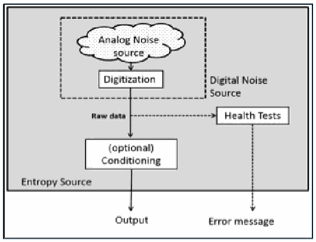
エントロピー源モデルの図。外枠「Entropy Source」内で、破線枠に含まれる「Analog Noise Source」から「Digitization」へ処理が進み、デジタル雑音源を形成する。デジタル化後のRaw dataは「(optional) Conditioning」を経て「Output」となるとともに、「Health Tests」に分岐し、その異常時の出力は「Error message」となる。
•TupleHash128 and TupleHash256, providing functions that hash tuples of input strings without trivial collisions; and
•左列：TupleHash128及びTupleHash256。入力文字列のタプルを、単純な衝突が生じないようハッシュする関数を提供する。及び
未レビュー訳•ParallelHash128 and ParallelHash256, providing efficient hash functions to hash long messages in parallel.
•左列：ParallelHash128及びParallelHash256。長いメッセージを並列にハッシュする効率的な関数を提供する。
未レビュー訳Published on August 4, 2016, Draft SP 800-185 is available on the CSRC website. NIST invited the public to review the draft and provide comments before September 30, 2016. NIST is in the process of addressing the received comments, and will post the final version of SP 800-185 when the comments are resolved.
左列：草案SP 800-185は2016年8月4日に公開され、CSRCウェブサイトから入手できる。NISTは2016年9月30日まで草案のレビューとコメント提出を呼びかけた。受領したコメントへの対応を進めており、コメントの解決後にSP 800-185の最終版を公開する予定である。
未レビュー訳F O R M O R E I N F O R M AT I O N , S E E :
詳細情報：
未レビュー訳In Figure 8: Entropy Source Model, the noise source Figure 9: XOR-NRBG depicts the construction of one contains the entropy-providing activity (e.g., ring oscillators); of the NRBGs – the XOR-NRBG. In this construction, each if the activity being sampled does not produce binary data, bit output by the entropy source (as discussed in SP 800-then the noise source includes a digitization process. Health 90B) is exclusive-ORed with a bit of output from a DRBG tests are intended to detect whether the noise source algorithm specified in SP 800-90A. and the entropy source (as a whole) continues to operate
左列：図8「エントロピー源モデル」において、ノイズ源はエントロピーを供給する活動（例：リング発振器）を含む。サンプリング対象の活動が二値データを生成しない場合、ノイズ源にはデジタル化処理が含まれる。健全性試験は、ノイズ源とエントロピー源全体が期待どおりに動作し続けるかを｜右列：図9「XOR-NRBG」はNRBGの一構成であるXOR-NRBGを示す。この構成では、エントロピー源の各出力ビット（SP 800-90B参照）と、SP 800-90Aで規定されたDRBGアルゴリズムの出力ビットとの排他的論理和（XOR）を取る。
未レビュー訳
図10「DRBG及びオーバーサンプリングNRBG」。図はDRBG構成を示す。Entropy SourceからEntropy InputがDRBG Algorithmへ入り、RBG outputが生成される。オーバーサンプリングNRBGとの違いは本文で説明されている。
as expected. The optional conditioning component is responsible for reducing bias and/or increasing the entropy rate of the bits to eventually be output by the entropy source. SP 800-90B includes descriptions of the tests for NIST’s Cryptographic Algorithm Validation Program (CAVP) to
左列続き：期待どおりか確認する。任意のコンディショニング要素は、エントロピー源から最終的に出力されるビットの偏りを減らし、及び／又はエントロピー率を高める。SP 800-90Bには、候補エントロピー源を検証するためのNIST Cryptographic Algorithm Validation Program（CAVP）が実施する試験の説明があり、
未レビュー訳Figure 10: DRBG and Oversampling NRBG
図10：DRBG及びオーバーサンプリングNRBG
未レビュー訳validate candidate entropy sources. During FY 2016, the CTG continued the development and testing of methods for
左列続き：候補エントロピー源を検証する。2016年度、CTGは、
未レビュー訳Figure 10: DRBG and Oversampling NRBG depicts the
右列：図10は、
未レビュー訳estimating the amount of entropy per noise-source output.
左列続き：ノイズ源の出力ごとのエントロピー量を推定する手法の開発・試験を継続した。
未レビュー訳construction used for the DRBGs and the second NRBG
右列続き：DRBG及び第2のNRBG設計であるオーバーサンプリングNRBGに用いる構成を示す。両者の違いは、エントロピー源の利用可能性及び出力を要求する頻度にある。DRBGでは、初期seed生成にのみエントロピー源が必要であり、
未レビュー訳A draft of the document was provided for public design – the Oversampling NRBG. The difference between comment in January 2016. A companion python code the two is the availability of the entropy source and the package was also made available to assist reviewers in frequency of requesting output from the entropy source. For evaluating the entropy estimation methods published in a DRBG, an entropy source is only required for seeding the the draft (see https://github.com/usnistgov/SP800-90B_ DRBG; after the initial seeding process, further requests for
左列：本書草案は2016年1月にパブリックコメント向けに公開された。草案に記載されたエントロピー推定手法をレビューする人々を支援するため、Pythonコードパッケージも提供された（https://github.com/usnistgov/SP800-90B_｜右列続き：DRBGをseedするためであり、初回seed後の追加出力要求は
未レビュー訳entropy-source output depend on the implementation and
右列続き：エントロピー源出力を要求する頻度は、実装及び
未レビュー訳EntropyAssessment).
左列続き：EntropyAssessment）。
未レビュー訳application. For the Oversampling NRBG, the entropy source
右列続き：用途に依存する。オーバーサンプリングNRBGでは、エントロピー源は
未レビュー訳A workshop was held in May 2016 to discuss the
左列：2016年5月に本書を検討するワークショップが開催され、パブリックコメント期間は間もなく
未レビュー訳must always be available and is accessed whenever bits are
右列続き：常に利用可能でなければならず、ビットが要求されるたびに
未レビュー訳document, and the public comment period ended shortly
左列続き：終了した。
未レビュー訳requested from the NRBG by a consuming application.
右列続き：利用アプリケーションからNRBGへ要求される出力に使用される。
未レビュー訳thereafter. The SP 800-90B development team has been reviewing the comments received during the public The latest draft of SP 800-90C is available via the comment period and plans to finalize an initial version of the Special Publications page: http://csrc.nist.gov/publications/
左列続き：その後、SP 800-90B開発チームはパブリックコメント期間に受け取った意見を検討しており、2017年度に初期版を確定する計画である。｜右列：SP 800-90Cの最新草案は、次のSpecial Publicationsページから入手できる：
未レビュー訳PubsSPs.html.
右列URL続き：PubsSPs.html。
未レビュー訳document in FY 2017. The latest draft of SP 800-90B is available via the
左列続き：SP 800-90Bの最新草案は、次のSpecial Publicationsページから入手できる：
未レビュー訳P L A N S F O R F Y 2 0 1 7 :
右列見出し：2017年度の計画：
未レビュー訳Special Publications page: http://csrc.nist.gov/publications/
左列URL：https://csrc.nist.gov/publications/
未レビュー訳The RBG development team has the following goals for
右列：RBG開発チームの
未レビュー訳PubsSPs.html.
左列URL続き：PubsSPs.html。
未レビュー訳FY 2017:
右列見出し続き：2017年度の目標は次のとおりである：
未レビュー訳SP 800-90C, Recommendation for Random Bit
左列見出し：SP 800-90C「乱数ビット生成器（RBG）の
未レビュー訳•Complete the initial version of SP 800-90B and
•右列・目標1：SP 800-90Bの初期版を完成させ、
未レビュー訳Generator(RBG)Constructions:
左列見出し続き：構成に関する勧告：
未レビュー訳post the comments received, along with their
右列続き：エントロピー源の試験は、
未レビュー訳SP800-90Cprovidesbasicguidanceontheconstruction
左列：SP 800-90Cは、乱数ビット生成器（RBG）の構成に関する基本指針を示す。
未レビュー訳resolution. The testing of entropy sources by the
右列続き：CMVPが試験コードを
未レビュー訳of Random Bit Generators (RBGs) from the entropy sources
左列続き：その構成には、SP 800-90Bの要件に適合すると検証されたエントロピー源と、
未レビュー訳CMVP will begin as soon as possible after the test
右列続き：性能向上のため別の言語へ移植した後、
未レビュー訳validated against the requirements of SP 800-90B and the
左列続き：SP 800-90Aで規定されたDRBGアルゴリズムを用いる。
未レビュー訳code is ported to another language for increased
右列続き：性能を高める。CMVP職員は
未レビュー訳Deterministic Random Bit Generators (DRBG) algorithms of
左列続き：決定論的乱数ビット生成器（DRBG）のアルゴリズムと
未レビュー訳performance. Members of the CMVP staff have
右列続き：SP 800-
未レビュー訳SP 800-90A. SP 800-90C includes constructions for both
左列続き：SP 800-90A。SP 800-90Cには、次の両方の生成器の構成が含まれる：
未レビュー訳been participating in the development of SP 800-
右列続き：90Bの開発に参加し、この試験に備えている。しかし、
未レビュー訳non-deterministic random bit generators (NRBGs; also
左列続き：非決定論的乱数ビット生成器（NRBG。真の乱数生成器とも呼ばれる）及び決定論的
未レビュー訳90B to more easily prepare for such testing. Not
右列続き：受領したすべてのコメントにこの
未レビュー訳knownastruerandomnumbergenerators)anddeterministic
左列続き：乱数ビット生成器（擬似乱数
未レビュー訳all comments received will be addressed in this
右列続き：版で対応するわけではない。開発チームは、
未レビュー訳random bit generators (also known as pseudorandom
左列続き：乱数ビット生成器（擬似乱数
未レビュー訳version, since the development team is anxious to
右列続き：CMVP試験機関から
未レビュー訳number generators). Two general models are provided in SP
左列続き：生成器とも呼ばれる）。SP 800-90Cには、2つの一般的なモデルが示されており、
未レビュー訳begin getting feedback from the CMVP labs about
右列続き：SP 800-90Bに規定された試験の妥当性についてフィードバックを得ることを急いでいる。
未レビュー訳800-90C, as shown in Figures 8 and 9.
左列続き：図8及び図9に示す。
未レビュー訳the adequacy of the tests specified in SP 800-90B. Addressing some of the comments would result in a significant delay in finalizing the initial version of the document.
右列続き：コメントへの対応により、文書の初期版確定が大幅に遅れる可能性がある。
未レビュー訳•Complete SP 800-90C, posting the comments received and their resolution, along with the document.
•SP 800-90Cを完成させ、受領したコメント及びその対応結果を文書とともに公開する。
未レビュー訳
XOR-NRBG（図9）の構成図。Entropy Source（エントロピー源）とDRBG Algorithm（DRBGアルゴリズム）の各出力ビットを排他的論理和（XOR）で組み合わせ、RBG Outputを生成する。図中の円内の記号はXOR演算を表す。
that need to be addressed in the next versions be longer than the original plaintext and may result in format of the documents. In some cases, the problems problems when used by existing devices or software. may be addressed by additions to the FIPS 140-
左列続き：次版以降の文書で対処すべき問題がある。場合によっては文書が改訂されるまで、FIPS 140-｜右列続き：暗号文は元の平文より長くなり、既存の装置又はソフトウェアで使用した場合に形式上の問題を引き起こす可能性がある。
未レビュー訳FPE modes such as FF1 and FF3 are designed for any
FF1及びFF3などのFPEモードは、あらゆる種類のデータを扱うよう設計されている。
未レビュー訳2 Implementation Guidance document until the
2 Implementation Guidance文書への追加によって対処できる。文書が
未レビュー訳kind of data, including non-binary formats, such as credit
非二進形式のデータ（クレジット
未レビュー訳documents are revised. The Implementation
改訂されるまで、Implementation
未レビュー訳card numbers and social security numbers. The ciphertext
カード番号や社会保障番号を含む。これらの暗号文は
未レビュー訳Guidance document is available at http://csrc.nist.
Guidance文書は次のURLから入手できる：http://csrc.nist.gov
未レビュー訳resulting from an FPE mode has the same length and format
FPEモードから得られ、元の平文と同じ長さ及び形式
未レビュー訳gov/groups/STM/cmvp/documents/fips140-2/
/groups/STM/cmvp/documents/fips140-2/
未レビュー訳as the original plaintext. Consequently, FPE modes can
である。そのため、FPEモードは
未レビュー訳FIPS1402IG.pdf.
FIPS1402IG.pdf。
未レビュー訳facilitate the retrofitting of encryption technology to existing
既存の
未レビュー訳•Consider the comments received during the public devices or software, where a conventional encryption mode comment period for SP 800-90B that were not might not be feasible. resolved before its publication. Also, address any F O R M O R E I N F O R M AT I O N , S E E : problems that surface during CMVP testing. http://csrc.nist.gov/groups/ST/toolkit/BCM/
•左列の箇条書き：SP 800-90Bのパブリックコメントで受け取ったものの発行前に解決されなかった意見を検討する。また、CMVP試験中に表面化する問題にも対処する。｜右列続き：装置又はソフトウェアへの暗号化技術の後付けを容易にし、従来型の暗号化モードが実用的でない場合に役立つ。｜右列見出し：詳細情報：http://csrc.nist.gov/groups/ST/toolkit/BCM/
未レビュー訳F O R M O R E I N F O R M AT I O N , S E E :
詳細情報：
未レビュー訳C O N TA C T :
連絡先：
未レビュー訳http://csrc.nist.gov/groups/ST/toolkit/rng/
http://csrc.nist.gov/groups/ST/toolkit/rng/
未レビュー訳Dr. Morris Dworkin
Morris Dworkin博士
未レビュー訳C O N TA C T S :
連絡先：
未レビュー訳(301) 975-2354
(301) 975-2354
未レビュー訳Ms. Elaine Barker
Elaine Barker氏
未レビュー訳Mr. John Kelsey
John Kelsey氏
未レビュー訳morris.dworkin@nist.gov
morris.dworkin@nist.gov
未レビュー訳(301) 975-2911
(301) 975-2911
未レビュー訳(301) 975-5101
(301) 975-5101
未レビュー訳elaine.barker@nist.gov
elaine.barker@nist.gov
未レビュー訳john.kelsey@nist.gov
john.kelsey@nist.gov
未レビュー訳K e y M a n a g e m e n t
鍵管理
未レビュー訳Dr. Meltem Sönmez Turan Dr. Kerry McKay
左列：Meltem Sönmez Turan博士｜右列：Kerry McKay博士
未レビュー訳Key management is required for applying numerous
鍵管理は、多くの
未レビュー訳(301) 975-4391
(301) 975-4391
未レビュー訳(301) 975-4969
(301) 975-4969
未レビュー訳cryptographic technologies and is considered one of
暗号技術の適用に必要であり、また
未レビュー訳meltem.turan@nist.gov
meltem.turan@nist.gov
未レビュー訳kerry.mckay@nist.gov the most critical aspects associated with the use of
kerry.mckay@nist.gov｜その使用に伴う最も重要な側面の一つと見なされている。
未レビュー訳cryptography. The Cryptographic Technology Group (CTG) began providing guidance in managing the keys used for
暗号技術である。Cryptographic Technology Group（CTG）は、暗号アプリケーションで使われる鍵の管理に関するガイダンスの提供を、
未レビュー訳B l o c k C i p h e r M o d e s o f O p e r a t i o n
ブロック暗号の動作モード
未レビュー訳cryptographic applications in the late 1990s to early 2000s.
1990年代後半から2000年代初頭にかけて開始した。
未レビュー訳The engine for many of the techniques in NIST’s
NISTの暗号ツールキットに含まれる多くの技法の基盤となるのは、
未レビュー訳NIST Special Publications have been periodically updated
NIST特別刊行物（SP）は、新しいアルゴリズムや取扱手順に対応するため、定期的に改訂されている。
未レビュー訳cryptographic toolkit is a block cipher algorithm, such as the
Advanced Encryption Standard（AES）アルゴリズムやTriple
未レビュー訳to address new algorithms and handling procedures. These
これらの文書は、
未レビュー訳Advanced Encryption Standard (AES) algorithm or the Triple
Data Encryption Algorithm（TDEA）などのブロック暗号アルゴリズムである。ブロック暗号は
未レビュー訳documents are coordinated with federal agencies and
連邦機関及び
未レビュー訳DataEncryptionAlgorithm(TDEA).Ablockciphertransforms
固定長の二進データ（「ブロック」）を、見かけ上ランダムな
未レビュー訳with the cryptographic community, including national and
暗号コミュニティと調整される。そこには国内及び
未レビュー訳some fixed-length binary data (i.e., a “block”) into seemingly
同じ長さのデータに変換する。この変換は
未レビュー訳international organizations, industry, and academia.
国際機関、産業界及び学術界が含まれる。
未レビュー訳random data of the same length. The transformation is
見かけ上ランダムな同じ長さのデータとなる。変換は
未レビュー訳During the development and subsequent revision of
これらの鍵管理文書の策定及びその後の改訂に際して、
未レビュー訳determined by the choice of some secret data called the
「鍵」と呼ばれる秘密データの選択によって決まる。
未レビュー訳these key-management documents, the development
開発
未レビュー訳“key.” The same key is used to reverse the transformation and
同じ鍵を使って変換を逆にし、
未レビュー訳team coordinates with members of NIST’s Cryptographic
チームはNISTのCryptographic
未レビュー訳recover the original block of data. A cryptographic technique
元のデータブロックを復元する。暗号技術（
未レビュー訳Algorithm Validation Program (CAVP) and Cryptographic
Algorithm Validation Program（CAVP）及びCryptographic
未レビュー訳(e.g.,forencryptionand/orauthentication)thatisconstructed
例えば暗号化又は認証用に）ブロック暗号から構成されるものは、
未レビュー訳Module Validation Program (CMVP) to develop validation
Module Validation Program（CMVP）の関係者と連携し、検証
未レビュー訳from a block cipher is called a ‘mode of operation.’
「動作モード」と呼ばれる。
未レビュー訳tests and address issues that arise during the validation
試験を開発するとともに、検証
未レビュー訳Several modes of operation have been specified in the
複数の動作モードが、
未レビュー訳processes.
プロセス中に生じる問題にも対処する。
未レビュー訳SP 800-38 series of publications. The latest installment in
SP 800-38シリーズの刊行物で規定されている。同シリーズの最新刊は、
未レビュー訳In FY 2016, the following publications were either created
2016年度には、次の刊行物を作成又は
未レビュー訳the series, Special Publication 800-38G, Recommendation
同シリーズの最新刊は、Special Publication 800-38G「ブロック暗号の動作モードに関する勧告：
未レビュー訳or revised:
改訂した：
未レビュー訳forBlockCipherModesofOperation:MethodsforFormat-Preserving Encryption, was published in March 2016. It SP 800-57, Part 1, RecommendationforKeyManagement, specifies two AES modes of operation, called FF1 and FF3, Part1:General: for inclusion in the “toolkit” of approved cryptographic
左列続き：フォーマット保持暗号化方式」で、2016年3月に発行された。同書はAESの動作モードFF1及びFF3を規定し、承認済み暗号｜右列見出し：SP 800-57、第1部「鍵管理に関する勧告」第1部：一般事項
未レビュー訳SP 800-57, was first published in 2005, and later revised
SP 800-57は2005年に初版が発行され、その後
未レビュー訳algorithms. FF1 and FF3 are format-preserving encryption
アルゴリズムの「ツールキット」に含める。FF1及びFF3は、フォーマット保持暗号化（
未レビュー訳in 2007 and 2012. SP 800-57, Part 1 contains basic key-
2007年及び2012年に改訂された。SP 800-57第1部には基本的な鍵管理
未レビュー訳(FPE) modes, based on proposals that were submitted from
FPE）モードであり、民間部門から提出された提案に基づく
未レビュー訳management guidance, including:
に関するガイダンスとして、次の内容が含まれる：
未レビュー訳the private sector.
。
未レビュー訳•Defining the security services that may be obtained
•NIST承認済みアルゴリズムを使用して得られる
未レビュー訳Previously approved confidentiality modes are designed
これまでに承認された秘匿モードは、
未レビュー訳using NIST-approved algorithms;
セキュリティサービスを定義する。
未レビュー訳•A classification of the different types of keys to be use. Many of these requirements are refinements of the used with cryptographic algorithms, a specification requirements for CKMS designers that are specified in SP of the protection required for each key type, 800-130: A Framework for Designing Cryptographic Key and identification methods for providing this ManagementSystems. Other requirements are intended for protection; the service providers of a CKMS used by federal agencies and their contractors. Guidance is also provided for the federal
•左列箇条書き：暗号アルゴリズムで使用する鍵の種類の分類、鍵の種類ごとに必要な保護の仕様、及び保護を提供するための識別方法。｜右列続き：使用。これらの要件の多くは、SP 800-130「暗号鍵管理システム設計のための枠組み」に定めるCKMS設計者向け要件を具体化したものである。その他の要件は、連邦機関及びその請負業者が使用するCKMSサービスプロバイダを対象とする。連邦
未レビュー訳•A listing of the states in which a key may exist agencies in selecting CKMSs that support the security and during its lifetime; management policies of those agencies.
•左列箇条書き：鍵のライフサイクル中に鍵が存在し得る状態の一覧。｜右列続き：機関が各機関のセキュリティ管理方針を支援するCKMSを選択する際の指針も示す。
未レビュー訳•A discussion of a variety of key-management This document was completed in October 2015 issues related to key management, including and is available at http://nvlpubs.nist.gov/nistpubs/ key usage, cryptoperiods, domain-parameter SpecialPublications/NIST.SP.800-152.pdf. and public-key validation, backup and archiving; and SP 800-56A: RecommendationforPair-WiseKey EstablishmentSchemesUsingDiscreteLogarithm
•左列箇条書き：鍵の利用、暗号期間、ドメインパラメータ及び公開鍵の検証、バックアップやアーカイブなど、鍵管理に関するさまざまな問題の説明。｜右列：本書は2015年10月に完成し、http://nvlpubs.nist.gov/nistpubs/SpecialPublications/NIST.SP.800-152.pdf から入手できる。｜右列見出し：SP 800-56A「離散対数暗号を用いたペアワイズ鍵確立方式に関する勧告：
未レビュー訳•Guidance for cryptographic algorithm and key size Cryptography: selection (e.g., the security strength provided by a given algorithm with a specified key size). SP800-56Awasoriginallypublishedin2006,andrevised Another revision of the document was completed in in 2007 and 2013. This document specifies Diffie-Hellman
•左列箇条書き：暗号アルゴリズム及び鍵長の選択に関する指針（例えば、指定した鍵長で特定のアルゴリズムが提供するセキュリティ強度）。｜右列見出し続き：暗号」｜右列：SP 800-56Aは2006年に初版が発行され、2007年及び2013年に改訂された。本書はDiffie–Hellman
未レビュー訳January 2016 that includes information on and references (DH) and Menezes-Qu-Vanstone (MQV) key-establishment to new and revised documents developed by the CTG (e.g., schemes, both elliptic curve and finite field versions. Key SP 800-152, as discussed below); the removal of references establishment is a procedure that results in keying material to the Dual_EC_DRBG, which was removed from SP 800- that is shared between the participants. A key-establishment 90A: Recommendation for Random Number Generation scheme is defined by a cryptographic algorithm, together Using Deterministic Random Bit Generators; a revision of with an identification of other information that must be the security-strength tables; and a revision of the key-state available by both parties when establishing keys. The discussion to provide more clarification.
左列：本書の改訂版も2016年1月に完成した。CTGが作成した新規又は改訂文書（後述のSP 800-152など）の情報及び参照先を追加し、SP 800-90A「決定論的乱数ビット生成器を用いる乱数生成に関する勧告」から削除されたDual_EC_DRBGへの参照を削除し、セキュリティ強度表を改訂し、鍵状態に関する説明を明確化した。｜右列：Diffie–Hellman（DH）及びMenezes–Qu–Vanstone（MQV）の鍵確立方式を規定する。いずれも楕円曲線版と有限体版がある。鍵確立とは、参加者間で共有される鍵素材を生成する手順である。鍵確立方式は暗号アルゴリズムと、鍵確立時に両当事者が利用可能でなければならない他の情報の指定によって定義される。この
未レビュー訳schemes are intended for use in communication protocols (e.g., Transport Layer Security (TLS), one of the protocols
右列続き：方式は通信プロトコル（例えば、インターネットで使用されるプロトコルの一つであるTransport Layer Security（TLS））での使用を想定している。
未レビュー訳SP 800-57, Part 1 is available at http://nvlpubs.nist.gov/
左列URL：https://nvlpubs.nist.gov/
未レビュー訳used by the Internet). The key-establishment schemes in SP
右列続き：SP 800-56Aの鍵確立方式は公開鍵アルゴリズムを用い、鍵合意の各参加者は
未レビュー訳nistpubs/SpecialPublications/NIST.SP.800-57pt1r4.pdf.
nistpubs/SpecialPublications/NIST.SP.800-57pt1r4.pdf。
未レビュー訳800-56A use public key algorithms, and each participant in
鍵合意の取引で鍵の組（公開鍵と
未レビュー訳SP 800-131A: Transitions: Recommendationfor
SP 800-131A「移行：
未レビュー訳a key-agreement transaction uses a pair of keys—a public
鍵合意取引で各参加者が用いる鍵の組は、一方が公開鍵で
未レビュー訳TransitioningtheUseofCryptographicAlgorithmsandKey
暗号アルゴリズム及び鍵長の使用移行に関する勧告
未レビュー訳key and a private key.
もう一方が秘密鍵である。
未レビュー訳Lengths:
」
未レビュー訳Both key-agreement and key-transport schemes are
右列：本書では鍵合意方式及び鍵転送方式を規定する。鍵合意方式は
未レビュー訳SP 800-131A was originally published in January 2011. specified in the document. A key-agreement scheme is a This document provides specific guidance for transitions procedure in which both parties in a key-establishment to the use of stronger cryptographic keys and more robust transaction contribute information that is used in generating algorithms. An update of SP 800-131A was completed in acryptographickey.The key-agreementprocess includes the November 2015. This update removes approval for the Dual_ generation of a shared secret (which is not itself considered EC_DRBG that was specified in SP 800-90A; deprecates the to be a cryptographic key), and the derivation of keying use of non-approved key-establishment schemes; disallows material using the shared secret. Several key-agreement the use of non-approved key-wrapping methods after 2017; schemes are specified in SP 800-56A. Figure 11: (See next and indicates that the use of the SHA-3 family of hash page) Key-Agreement Example below provides a simplified functions is acceptable, in addition to the use of the SHA-2 example of a key-agreement scheme. In this example, each family of hash functions and some applications of SHA-1. party:
左列：SP 800-131Aは2011年1月に初版が発行された。本書は、より強い暗号鍵及び堅牢なアルゴリズムの利用への移行に関する具体的な指針を示す。更新版は2015年11月に完成した。この更新では、SP 800-90Aに規定されたDual_EC_DRBGの承認を取り消し、未承認の鍵確立方式の使用を非推奨とし、2017年以降の未承認鍵ラッピング方式の使用を禁止した。また、SHA-2ファミリーに加え、SHA-3ファミリーのハッシュ関数及び一部のSHA-1用途も使用可能とした。｜右列続き：鍵確立取引において両当事者が暗号鍵の生成に用いる情報を提供する手順である。鍵合意プロセスには、共有秘密（それ自体は暗号鍵と見なされない）の生成と、その共有秘密を用いた鍵素材の導出が含まれる。SP 800-56Aでは複数の鍵合意方式を規定する。図11（次頁参照）「鍵合意の例」は鍵合意方式の簡略例を示す。この例では、各当事者は次を行う：
未レビュー訳1.Generates a key pair (either prior to or during
1.右列・手順1：鍵ペアを生成する（鍵合意取引の開始前又は
未レビュー訳SP 800-131A is available at http://nvlpubs.nist.gov/
SP 800-131Aは次のURLから入手できる：https://nvlpubs.nist.gov/
未レビュー訳the key-agreement transaction);
取引中）。
未レビュー訳nistpubs/SpecialPublications/NIST.SP.800-131Ar1.pdf. SP 800-152: AProfileforU.S.FederalCryptographicKey
nistpubs/SpecialPublications/NIST.SP.800-131Ar1.pdf.｜SP 800-152「米国連邦政府の暗号鍵管理システム（CKMS）
未レビュー訳2.Obtains the public key of the other party;
2.右列・手順2：相手側の公開鍵を取得する。
未レビュー訳ManagementSystems(CKMS):
プロファイル」
未レビュー訳3.Computes a shared secret using one’s own keys and the other party’s public key; and
3.右列・手順3：自身の鍵と相手側の公開鍵を用いて共有秘密を計算する。
未レビュー訳SP 800-152 provides guidance on the CKMS to be used by the Federal Government. This document contains
SP 800-152は、連邦政府が使用するCKMSに関する指針を示す。本書には、
未レビュー訳4.Derives one or more keys from the shared
4.右列・手順4：共有
未レビュー訳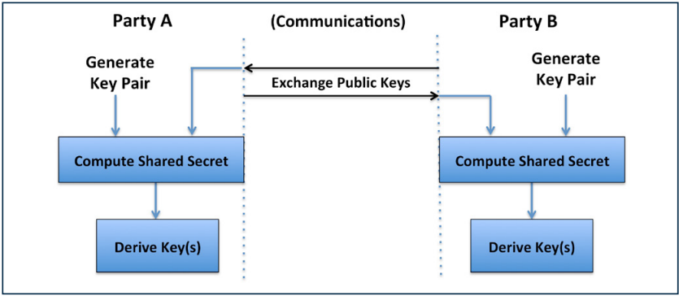
図11「鍵合意の例」。当事者AとBがそれぞれ鍵ペアを生成し、通信路で公開鍵を交換する。各当事者は共有秘密を計算し、そこから1つ以上の鍵を導出する。
Figure 11: Key-Agreement Example
図11：鍵合意の例
未レビュー訳Key transport is a key-establishment method whereby
鍵転送は鍵確立方式の一種であり、
未レビュー訳RecommendationforBlockCipherModesof
「ブロック暗号の動作モードに関する勧告：鍵ラッピング方式」
未レビュー訳one party selects a symmetric key and sends it securely to
一方の当事者が対称鍵を選択し、それを安全に
未レビュー訳Operation:MethodsforKeyWrapping; SP
。SP
未レビュー訳one or more other parties. In SP 800-56A, key transport can
他の1者以上へ送信する。SP 800-56Aでは、鍵転送を
未レビュー訳800-38F is available at http://nvlpubs.nist.gov/
800-38Fは次のURLから入手できる：https://nvlpubs.nist.gov/
未レビュー訳be performed following the key-agreement process depicted
図11に示す鍵合意プロセスに従って実行できる。
未レビュー訳nistpubs/SpecialPublications/NIST.SP.800-38F.
nistpubs/SpecialPublications/NIST.SP.800-38F.
未レビュー訳in Figure 11 using a key that was derived during that process.
その際、同プロセス中に導出された鍵を使用する。
未レビュー訳pdf);
pdf)。
未レビュー訳Figure 12: Key-Transport Example provides an example of a
図12「鍵転送の例」は、鍵転送方式の例を
未レビュー訳3.Sends the resulting ciphertext key to the other
3.右列・手順3：暗号文鍵を
未レビュー訳key transport scheme. In this example,
示す。この例では、
未レビュー訳party (i.e., the receiver); and
右列続き：相手（受信者）に送る。
未レビュー訳1.The sender (either party A or party B in Figure
1.左列・手順1：送信者（図11「鍵合意の例」の当事者A又はB）は、
未レビュー訳4.The receiver unwraps (i.e., decrypts) the
4.右列・手順4：受信者は
未レビュー訳11: Key-Agreement Example), generates a
対称鍵を
未レビュー訳received ciphertext key using a key derived
受信した暗号文鍵を、鍵合意プロセスで導出された鍵を用いて
未レビュー訳symmetric key;
生成する。
未レビュー訳during the key-agreement process to obtain
ラップ解除（復号）し、
未レビュー訳2.Wraps (i.e., encrypts) that key using a the original plaintext key that was generated by key-wrapping algorithm (see SP 800-38F: the sender.
2.左列・手順2：その鍵を鍵ラッピングアルゴリズム（SP 800-38F参照）でラップ（暗号化）する。｜右列・手順4続き：送信者が生成した元の平文鍵を得る。
未レビュー訳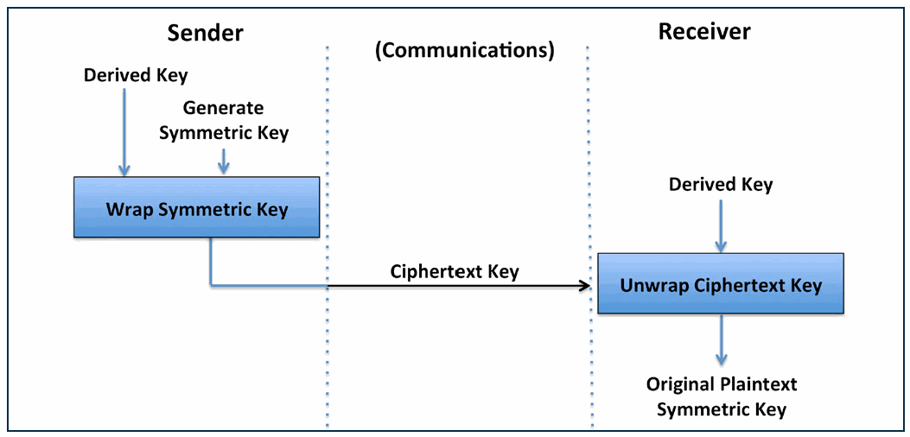
図12「鍵転送の例」。送信者は導出済み鍵を使って生成した対称鍵を鍵ラッピングし、暗号文鍵を通信路経由で受信者へ送る。受信者は導出済み鍵で暗号文鍵をラップ解除し、元の平文対称鍵を得る。
The current version of SP 800-56A is available at (HMAC), and CMAC is specified for AES in SP 800-38B: http://nvlpubs.nist.gov/nistpubs/SpecialPublications/NIST. Recommendation for Block Cipher Modes of Operation: SP.800-53Ar4.pdf.
左列：SP 800-56Aの現行版は次のURLから入手できる：http://nvlpubs.nist.gov/nistpubs/SpecialPublications/NIST.SP.800-53Ar4.pdf。｜右列続き：（HMAC）。AESのCMACはSP 800-38B「ブロック暗号の動作モードに関する勧告：
未レビュー訳theCMACModeofAuthentication. FIPS 198-1 is available at http://csrc.nist.gov/publications/fips/fips198-1/FIPS-198-1_
CMAC認証モード」で規定される。FIPS 198-1は次のURLから入手できる：http://csrc.nist.gov/publications/fips/fips198-1/FIPS-198-1_
未レビュー訳SP 800-56A has been under revision during FY 2016.
SP 800-56Aは2016年度中に改訂作業が行われていた。
未レビュー訳final.pdf; SP 800-38B is available at: http://nvlpubs.nist.gov/
final.pdf。SP 800-38Bは次のURLから入手できる：https://nvlpubs.nist.gov/
未レビュー訳This revision will:
本改訂では、次の変更を行う：
未レビュー訳nistpubs/Legacy/SP/nistspecialpublication800-38b.pdf.
nistpubs/Legacy/SP/nistspecialpublication800-38b.pdf。
未レビュー訳•Approve the use of additional parameter/key sizes The current version of SP 800-56C is available for the finite field schemes; currently, only key at http://nvlpubs.nist.gov/nistpubs/Legacy/SP/ sizes of 2048 and 3072 bits are specified. Larger nistspecialpublication800-56c.pdf. key sizes will be allowed and defined in the next version. SP 800-56C is being revised to:
•左列・変更点1：有限体方式で追加のパラメータ／鍵長の使用を承認する。現行版では2048ビット及び3072ビットの鍵長のみを指定しているが、次版ではより長い鍵長を認め、定義する。｜右列：SP 800-56Cの現行版は次のURLから入手できる：https://nvlpubs.nist.gov/nistpubs/Legacy/SP/nistspecialpublication800-56c.pdf。SP 800-56Cは次の改訂を予定している：
未レビュー訳•Allow the use of pre-defined domain parameter
•左列・変更点2：事前定義されたドメインパラメータ群の使用を認める。
未レビュー訳•Move the key derivation functions specified in SP
•右列・変更点1：SP 800-56Aに規定された鍵導出関数を
未レビュー訳groups that are not currently allowed by SP 800-
左列続き：SP 800-56Aでは現在認められていない。
未レビュー訳800-56A into SP 800-56C as well as the references
SP 800-56Cへ移し、さらに参照先として
未レビュー訳56A. Domain parameters are used to generate
左列続き：ドメインパラメータは鍵の生成に用いられ、
未レビュー訳to SP 800-135: RecommendationforExisting
SP 800-135「既存の
未レビュー訳keys and compute the shared secret. Methods
共有秘密の計算にも用いられる。ドメインパラメータの生成方法は
未レビュー訳Application-SpecificKeyDerivationFunctions;
アプリケーション固有鍵導出関数に関する勧告」も含める。
未レビュー訳for generating domain parameters are specified
有限体方式について、
未レビュー訳•Allow the use of KMAC, as specified in Draft SP
•右列・変更点2：ドラフトSP 800-
未レビュー訳for the finite field schemes in FIPS 186-4: Digital
左列続き：FIPS 186-4「デジタル署名
未レビュー訳800-185, SHA-3DerivedFunctions:cSHAKE,
右列続き：185「SHA-3派生関数：cSHAKE、
未レビュー訳SignatureStandard(DSS). The revision of SP 800-
標準（DSS）」で規定されている。SP 800-56Aの改訂版では、
未レビュー訳Keccak Message Authentication Code (KMAC),
Keccakメッセージ認証コード（KMAC）、
未レビュー訳56A will allow the use of domain-parameter groups
「安全素数」を用いるドメインパラメータ群の使用を認める。
未レビュー訳TupleHashandParallelHash, for key derivation;
TupleHash及びParallelHashを鍵導出に用いることを認める。
未レビュー訳using “safe primes” that are used in the Transport Layer Security (TLS) and Internet Key Exchange
これらはTransport Layer Security（TLS）及びInternet Key Exchange
未レビュー訳•Define additional Message Authentication Code
•右列・変更点3：新しいパラメータサイズ集合に対して追加のメッセージ認証コード
未レビュー訳(IKE) protocols, which were not generated using
（IKE）プロトコルで用いられるが、生成には
未レビュー訳(MAC) lengths for the new parameter-size sets
（MAC）長を定義する。
未レビュー訳the methods in FIPS 186-4. These pre-defined
FIPS 186-4の方法を用いない。これらの事前定義群は
未レビュー訳that will be allowed in the revision of SP 800-56A;
SP 800-56A改訂版で認める。
未レビュー訳groups will be listed in Annex A of FIPS 140-2.
左列続き：これらの事前定義群はFIPS 140-2の附属書Aに掲載される。
未レビュー訳and
右列続き：さらに、
未レビュー訳•Move all key-derivation functions to SP 800-56C:
•右列・変更点4：すべての鍵導出関数をSP 800-56Cへ移す。
未レビュー訳•Provide a formula for estimating the security
•右列・変更点5：セキュリティ強度を推定する式を示す。
未レビュー訳RecommendationforKeyDerivationThrough
SP 800-56C「抽出後展開による
未レビュー訳strength for the parameter-size sets that are
その式は、SP 800-56A及びSP 800-56Bに
未レビュー訳Extraction-then-Expansion. SP 800-56A currently
鍵導出に関する勧告」。SP 800-56Aは現在、
未レビュー訳not explicitly listed in SP 800-56A and SP 800-
明示的に記載されていない
未レビュー訳specifies two versions of a single step key-
単一ステップ鍵導出関数の2つの方式を規定し、
未レビュー訳56B.
パラメータサイズ集合にも適用する。
未レビュー訳derivation function, refers to SP 800-56C for a
2段階の鍵導出手順についてはSP 800-56Cを参照し、
未レビュー訳The revision of SP 800-56C will be available for public
右列：SP 800-56Cの改訂版は、
未レビュー訳two-step key-derivation procedure, and refers
さらに、
未レビュー訳comment in FY 2017.
右列続き：2017年度にパブリックコメント向けに公開される予定である。
未レビュー訳to SP 800-135: RecommendationforExisting Application-SpecificKeyDerivationFunctions, for N e w D o c u m e n t s U n d e r D e v e l o p m e n t : application-specific key-derivation functions.
左列続き：さらに、アプリケーション固有の鍵導出関数についてはSP 800-135「既存のアプリケーション固有鍵導出関数に関する勧告」を参照する。｜右列見出し：開発中の新規文書：
未レビュー訳A new NIST publication is under development that
右列：NISTでは、
未レビュー訳The revision of SP 800-56A will be available for public provides guidance on the search resistance of a bit string comment in FY 2017.
左列：SP 800-56A改訂版は2017年度にパブリックコメント向けに公開される予定である。｜右列続き：ビット列の探索耐性に関する指針を示す。
未レビュー訳output from an approved cryptographic algorithm (e.g., a cryptographic key or encrypted data). Search resistance
承認済み暗号アルゴリズムの出力（例えば暗号鍵又は暗号化データ）である。探索耐性
未レビュー訳SP 800-56C: RecommendationforKeyDerivationThrough
SP 800-56C「抽出後展開による鍵導出に関する勧告：
未レビュー訳is a (rough) measure of the amount of secrecy that can be
とは、ビット列がもたらす機密性の程度を概算する尺度であり、
未レビュー訳Extraction-then-Expansion:
抽出後展開方式」
未レビュー訳provided by a bit string, given the genealogy (i.e., how it was
そのビット列の由来（すなわち、どのように
未レビュー訳SP 800-56C specifies techniques for the derivation generated), handling (i.e., what happened to it after it was of keys from a shared secret generated during a key- generated), the usage (i.e., what algorithm it will be used establishment scheme defined in SP 800-56A and SP with), length, and any other secret values and processes 800-56B using a two-step extraction-then-expansion associated with the generation and handling of that bit procedure. SP 800-56A is discussed above. SP 800-56B: string. When approved algorithms are used, this document RecommendationforPairwiseKey-EstablishmentSchemes is intended to provide methods for determining the search Using Integer Factorization Cryptography, is available at resistance of the bit string. This document, SP 800-158: Key http://nvlpubs.nist.gov/nistpubs/SpecialPublications/NIST. Management:TheSearchresistanceofBitStringsOutput SP.800-56Br1.pdf.
左列：SP 800-56Cは、SP 800-56A及びSP 800-56Bで定義される鍵確立方式で生成した共有秘密から鍵を導出する手法を規定する。2段階の抽出後展開手順を用いる。SP 800-56Aについては前述した。SP 800-56B「整数因数分解暗号を用いたペアワイズ鍵確立方式に関する勧告」は、https://nvlpubs.nist.gov/nistpubs/SpecialPublications/NIST.SP.800-56Br1.pdf から入手できる。｜右列続き：生成されたか）、取扱い（生成後に何が行われたか）、用途（どのアルゴリズムで使用するか）、長さ、及びそのビット列の生成・取扱いに関連するその他の秘密値や処理を踏まえて評価する。承認済みアルゴリズムを使用する場合、本書はビット列の探索耐性を判定する方法を示す。SP 800-158「鍵管理：暗号アルゴリズムが出力するビット列の探索耐性」は、
未レビュー訳byCryptographicAlgorithms, has involved a considerable amount of new research, since it is an area that has not
その作成には相当量の新たな研究を要した。この分野はこれまで
未レビュー訳SP 800-56C uses either HMAC or the Cipher-
左列：SP 800-56Cでは、HMAC又はCipher-
未レビュー訳been addressed to date. This publication will be available for
十分に扱われておらず、本書は
未レビュー訳based Message Authentication Code (CMAC) algorithm
based Message Authentication Code（CMAC）アルゴリズム
未レビュー訳public comment in FY 2017.
右列続き：2017年度にパブリックコメント向けに公開される予定である。
未レビュー訳during the two-step process. HMAC is specified in FIPS
を二段階の処理で使用する。HMACはFIPS
未レビュー訳A new document was started in FY 2016 on key storage testssl.sh (see https://github.com/drwetter/testssl.sh), and recovery (e.g., key backup and archiving). This document an open-source program that tests TLS-enabled servers, is intended to serve as a guideline for the storage and providing information about the protocols and cipher suites recovery of cryptographic keys that are not under the direct supported, in addition to checking for some well-known control of the entity using those keys (e.g., the owner). This flaws. In FY 2017, CTG will be contributing code to testssl.sh includes the backup and archiving of copies of the keys and that tests a TLS server’s configuration for conformance to SP the metadata associated with them. The document will also 800-52 Revision 2. CTG intends to make a draft version of discuss the recovery of those keys when required (e.g., by the this code available when the draft of SP 800-52 Revision 2 is key’s owner or the owner’s organization).
左列：FY 2016に、鍵の保管及び復旧（例えば鍵のバックアップとアーカイブ）に関する新しい文書の策定を開始した。本書は、鍵を使用する主体（例えば所有者）が鍵を直接管理していない場合に、暗号鍵を保管・復旧するための指針となることを意図する。鍵の複製及び関連メタデータのバックアップとアーカイブを扱い、必要なとき（例えば鍵の所有者又はその組織から求められたとき）の鍵の復旧方法も説明する。｜右列：testssl.sh（https://github.com/drwetter/testssl.sh）は、TLS対応サーバーがサポートするプロトコルや暗号スイートの情報を示し、既知の問題の一部も確認するオープンソースプログラムである。FY 2017にCTGは、TLSサーバー構成がSP 800-52 Rev. 2に適合するか試験するコードをtestssl.shに提供する予定である。SP 800-52 Rev. 2の草案が
未レビュー訳posted for public comment. The Internet Engineering Task Force (IETF) is actively
右列続き：パブリックコメント向けに公開された際、このコードの草案も提供する予定である。｜右列続き：Internet Engineering Task Force（IETF）は現在、
未レビュー訳P l a n s f o r F Y 2 0 1 7 :
左列見出し：2017年度の計画：
未レビュー訳developing extensions that can be used to add functionality
右列続き：TLSに機能を追加するための拡張を開発している。
未レビュー訳During FY 2017, the CTG is expecting to accomplish the
左列：2017年度にCTGが達成を目指すのは、
未レビュー訳to TLS. CTG will continue to review updates and additions to
右列続き：CTGはTLSプロトコルへの更新及び追加を引き続き確認し、
未レビュー訳following tasks:
次の作業である：
未レビュー訳the TLS protocol in FY 2017.
右列続き：2017年度もこれを続ける。
未レビュー訳•Provide the drafts of SP 800-56A and SP 800-56C C O N TA C T S : for public comment; Dr. Kerry McKay Dr. Lily Chen
•左列・タスク1：SP 800-56A及びSP 800-56Cの草案をパブリックコメント向けに公開する。｜右列見出し：連絡先：｜Kerry McKay博士｜Lily Chen博士
未レビュー訳•Begin the revision of SP 800-56B; (301) 975-4969 (301) 975-6974
•左列・タスク2：SP 800-56Bの改訂を開始する。｜右列電話番号：(301) 975-4969｜(301) 975-6974
未レビュー訳•Provide the draft of SP 800-158 for public kerry.mckay@nist.gov lily.chen@nist.gov comment; and
•左列・タスク3：SP 800-158の草案をパブリックコメント向けに公開する。｜右列電子メール：kerry.mckay@nist.gov｜lily.chen@nist.gov
未レビュー訳•Continue the development of the key-storage E l l i p t i c C u r v e C r y p t o g r a p h y document. Elliptic curve cryptography is critical to the adoption
•左列・タスク4：鍵保管文書の策定を続ける。｜右列見出し：楕円曲線暗号｜楕円曲線暗号は、
未レビュー訳F O R M O R E I N F O R M AT I O N , S E E :
左列見出し：詳細情報：
未レビュー訳of strong cryptography as we migrate to higher security strengths. NIST has standardized elliptic curve cryptography
右列続き：より高いセキュリティ強度へ移行する際に強固な暗号を普及させるうえで重要である。NISTは楕円曲線暗号を標準化しており、
未レビュー訳http://csrc.nist.gov/groups/ST/key_mgmt
左列URL：http://csrc.nist.gov/groups/ST/key_mgmt
未レビュー訳for digital signature algorithms in FIPS 186: Digital Signature
右列続き：デジタル署名アルゴリズムについてはFIPS 186「デジタル署名
未レビュー訳C O N TA C T S :
左列見出し：連絡先：
未レビュー訳Standard (DSS), and for key establishment schemes in SP 800-56A: RecommendationforPair-WiseKeyEstablishment
右列続き：標準（DSS）で規定し、鍵確立方式についてはSP 800-56A「ペアワイズ鍵確立方式に関する勧告：離散対数
未レビュー訳Ms. Elaine Barker
Elaine Barker氏
未レビュー訳Mr. Ray Perlner
Ray Perlner氏
未レビュー訳SchemesUsingDiscreteLogarithmCryptography.
右列続き：暗号」を規定する。
未レビュー訳(301) 975-2911
(301) 975-2911
未レビュー訳(301) 975-3357
(301) 975-3357
未レビュー訳In FIPS 186-4, NIST recommends fifteen elliptic curves
右列続き：FIPS 186-4では、NISTはセキュリティ強度の異なる15種類の楕円曲線を
未レビュー訳elaine.barker@nist.gov
elaine.barker@nist.gov
未レビュー訳ray.perlner@nist.gov
ray.perlner@nist.gov
未レビュー訳of varying security strengths for use in these elliptic curve
楕円曲線暗号標準での使用向けに推奨している。
未レビュー訳Dr. Lily Chen
Lily Chen博士
未レビュー訳Dr. Allen Roginsky
Allen Roginsky博士
未レビュー訳cryptographic standards. However, the provenance of the
暗号標準における曲線。ただし、その由来は
未レビュー訳(301) 975-6974
(301) 975-6974
未レビュー訳(301) 975-8136
(301) 975-8136
未レビュー訳curves is not fully specified in the standard, leading to recent
標準で完全には規定されておらず、最近、
未レビュー訳lily.chen@nist.gov
lily.chen@nist.gov
未レビュー訳allen.roginsky@nist.gov public concerns that there could be a hidden weakness in
左列電子メール：allen.roginsky@nist.gov｜右列続き：これらの曲線には隠れた弱点がある可能性について、一般から懸念が示された。
未レビュー訳these curves. NIST is not aware of any vulnerability in these curves when they are implemented correctly and used as
正しく実装し使用する限り、これらの曲線に脆弱性があるとはNISTは認識していない。
未レビュー訳T r a n s p o r t L a y e r S e c u r i t y
左列見出し：Transport Layer Security（TLS）
未レビュー訳described in NIST standards and guidelines.
右列続き：NISTの標準及び指針に記載されたとおりに使用する場合。
未レビュー訳SP 800-52: GuidelinesfortheSelection,Configuration,
左列見出し：SP 800-52「Transport Layer Security（TLS）実装の選択、構成及び
未レビュー訳More than fifteen years have now passed since these
右列：これらの曲線が開発されてから15年以上が経過し、
未レビュー訳andUseofTransportLayerSecurity(TLS)Implementations,
左列続き：使用に関するガイドライン」で、
未レビュー訳curves were developed, and the community now knows more
右列続き：楕円曲線暗号の安全性及び実務的な
未レビュー訳provides recommendations regarding TLS server and
左列続き：TLSサーバー及び
未レビュー訳about the security of elliptic curve cryptography and practical
右列続き：実装上の問題について、コミュニティの知見も深まった。
未レビュー訳client implementations. TLS is a widely used cryptographic
左列続き：クライアント実装に関する推奨事項を示す。TLSは広く利用されている暗号
未レビュー訳implementation issues. Advances within the cryptographic
右列続き：暗号コミュニティの進展により、新しい楕円曲線
未レビュー訳protocol that provides communication security for a variety
左列続き：プロトコルであり、次のような多様なネットワークアプリケーションの通信を保護する：
未レビュー訳community have led to the development of new elliptic
右列続き：及びアルゴリズムが開発された。それらの設計者は、
未レビュー訳of network applications, such as email, e-commerce, and
電子メール、電子商取引、
未レビュー訳curves and algorithms whose designers claim to offer better
右列続き：より高い性能と安全な実装の容易さをうたっている。
未レビュー訳healthcare.
ヘルスケアなどで使われる。
未レビュー訳performance and are easier to implement in a secure manner.
右列続き：より高い性能と、安全に実装しやすいことを設計者は主張している。
未レビュー訳SP 800-52 was first published in June of 2005, and Some of these curves are under consideration in voluntary, SP 800-52 Revision 1 was published in April of 2014. Since consensus-based Standards Developing Organizations. the revision, CTG has been following developments in TLS
左列：SP 800-52は2005年6月に初版が発行され、Rev.1は2014年4月に発行された。改訂以降、CTGはTLS実装（更新や攻撃を含む）の動向を追っている。｜右列：これらの曲線の一部は、任意参加型の合意に基づく標準化団体で検討されている。
未レビュー訳In FY 2016, NIST solicited comments on possible
右列：2016年度にNISTは、
未レビュー訳implementations, including updates and attacks. In FY 2016,
左列続き：2016年度には、
未レビュー訳improvements to FIPS 186-4. In particular, comments were
右列続き：FIPS 186-4の改善について意見を募集した。特に、意見は
未レビュー訳a second revision began that considers these developments.
左列続き：これらの動向を検討する第2次改訂に着手した。
未レビュー訳requested on the possibility of adding new elliptic curves to
右列続き：推奨済みの楕円曲線群に新しい曲線を追加する可能性について求めた。
未レビュー訳This second revision will be posted for public review and
左列続き：この第2次改訂版は、公開レビュー及び
未レビュー訳the current recommended set—as well as adding new digital
右列続き：さらに新しいデジタル
未レビュー訳comment in FY 2017. revised draft version of FIPS 186-5 will be available for public issued draft submission requirements and evaluation criteria comment in FY 2017.
左列（SP 800-52）：この第2次改訂版は2017年度に公開レビュー及びパブリックコメント向けに公開される予定である。｜左列（FIPS 186-5）：改訂版の草案は2017年度にパブリックコメント向けに公開される予定である。｜右列（提出要件）：草案の提出要件及び評価基準が発行された
未レビュー訳for public comment. (see https://www.federalregister.gov/ articles/2016/08/02/2016-18150/request-for-comments-on-
右列続き：パブリックコメント向けに公開された（参照：https://www.federalregister.gov/articles/2016/08/02/2016-18150/request-for-comments-on-
未レビュー訳C O N TA C T S :
左列見出し：連絡先：
未レビュー訳post-quantum-cryptography-requirements-and-evaluation-criteria)
post-quantum-cryptography-requirements-and-evaluation-criteria）。
未レビュー訳Email project team: EllipticCurves@nist.gov
プロジェクトチームの電子メール：EllipticCurves@nist.gov
未レビュー訳The NIST team also continues to be productive in post-
右列：NISTチームはポスト量子暗号研究でも成果を上げ続けている。研究成果は、
未レビュー訳Dr. Dustin Moody Dr. Lily Chen
左列：Dustin Moody博士｜Lily Chen博士
未レビュー訳quantum cryptography research. The results have been
右列続き：
未レビュー訳(301) 975-8136
左列：(301) 975-8136
未レビュー訳(301) 975-6974
左列：(301) 975-6974
未レビュー訳published at major conferences, such as Embedded Security
右列続き：Embedded Security in Cars（ESCARS）など主要学会で発表された。
未レビュー訳dustin.moody@nist.gov lily.chen@nist.gov
左列電子メール：dustin.moody@nist.gov｜lily.chen@nist.gov
未レビュー訳in Cars (ESCARS), Selected Areas in Cryptography (SAC), PQCrypto, and Eurocrypt. NIST researchers have given
右列続き：Selected Areas in Cryptography（SAC）、PQCrypto、Eurocrypt。NIST研究者は
未レビュー訳Mr. Andy Regenscheid
Andy Regenscheid氏
未レビュー訳presentations at conferences and workshops to increase
右列続き：会議やワークショップで発表し、今後の移行に関する認知を高めている。NISTはさらに
未レビュー訳(301) 975-5155
(301) 975-5155
未レビュー訳awareness of the upcoming migration. NIST has also
他の研究、教育及び研究イベントも後援している。2017年度には、NISTは
未レビュー訳andrew.regenscheid@nist.gov
andrew.regenscheid@nist.gov
未レビュー訳sponsored other research, education, and research events. In FY 2017, NIST will continue to explore the security
量子耐性をうたう技術の安全性と実現可能性を引き続き検討する。
未レビュー訳P o s t - Q u a n t u m C r y p t o g r a p h y
ポスト量子暗号
未レビュー訳and feasibility of purported quantum-resistant technologies,
右列続き：その究極的な目標は、
未レビュー訳In recent years, there has been a substantial amount of
左列：近年、量子コンピュータに関する研究が大きく進んでいる。
未レビュー訳with the ultimate goal of uncovering the fundamental
右列続き：効率的で信頼でき、費用対効果の高い
未レビュー訳research on quantum computers – machines that exploit
量子コンピュータは、
未レビュー訳mechanisms necessary for efficient, trustworthy, and cost-
右列続き：効率的で信頼でき、費用対効果の高い
未レビュー訳quantum mechanical phenomena to solve problems that are
量子力学的現象を用いて問題を解く装置であり、
未レビュー訳effective information assurance in the post-quantum era.
ポスト量子時代の情報保証に不可欠な基盤的仕組みを明らかにすることである。
未レビュー訳difficult or intractable for conventional computers. If large-
その問題は従来のコンピュータでは非常に困難又は解決不可能である。大規模な
未レビュー訳The Post-Quantum Standardization Process will begin in
右列：ポスト量子標準化プロセスは、
未レビュー訳scale quantum computers are ever built, they will be able to
量子コンピュータが実現すれば、公開鍵暗号の既存基盤を
未レビュー訳early FY 2017, with the issuance of the finalized submission
右列続き：2017年度初めに最終版の提出
未レビュー訳break the existing infrastructure of public-key cryptography.
破壊し得る。
未レビュー訳requirements and evaluation criteria. There will be a one-year
右列続き：要件及び評価基準を公表して開始する。量子耐性アルゴリズムの提出期間は1年間とし、
未レビュー訳The focus of the Post-Quantum Cryptography project is
左列：ポスト量子暗号プロジェクトの焦点は、
未レビュー訳period during which quantum-resistant algorithms may be
右列続き：この期間中に量子耐性アルゴリズムを
未レビュー訳to identify candidate quantum-resistant systems that are
量子耐性を持つ候補システムを特定することであり、
未レビュー訳submitted for possible standardization. After the submission
右列続き：標準化候補として提出できる。提出期間の終了後、
未レビュー訳secure against both quantum and classical computers—as
それらが量子及び古典コンピュータ双方に対して安全であるとともに、
未レビュー訳period, there will be a public workshop in FY 2018, followed
右列続き：2018年度に公開ワークショップを開催し、その後
未レビュー訳well as the impact that such post-quantum algorithms will
左列続き：ポスト量子アルゴリズムが現行のプロトコル及び
未レビュー訳by multiple rounds of evaluation and analysis.
右列続き：その後、複数回の評価及び分析を行う。
未レビュー訳have on current protocols and security infrastructures.
左列続き：セキュリティ基盤に及ぼす影響も考慮する。
未レビュー訳F O R M O R E I N F O R M AT I O N , S E E :
右列見出し：詳細情報：
未レビュー訳NIST researchers have held regular seminars throughout FY 2016. The presentation topics include the latest published https://www.nist.gov/pqcrypto results and security analyses, as well as status reports on quantum computation, hash-based signatures, coding- C O N TA C T S : based cryptography, lattice-based cryptography, and
左列：NISTの研究者は2016年度を通じて定期的なセミナーを開催した。発表テーマは、最新の公開済み成果及びセキュリティ分析、量子計算、ハッシュベース署名、符号ベース暗号、格子ベース暗号、｜右列URL：https://www.nist.gov/pqcrypto｜右列見出し：連絡先：
未レビュー訳Email project team: pqc@nist.gov
右列・プロジェクトチーム電子メール：pqc@nist.gov
未レビュー訳multivariate cryptography. Through these presentations and discussions, the project team has made significant progress Dr. Dustin Moody Dr. Lily Chen in understanding the strengths and weaknesses of the (301) 975-8136
左列続き：これらの発表や議論を通じて、プロジェクトチームは
未レビュー訳(301) 975-6974
右列電話：(301) 975-6974
未レビュー訳existing cryptographic schemes in each category.
各カテゴリの既存暗号方式の長所と短所への理解を大きく深めた。
未レビュー訳dustin.moody@nist.gov lily.chen@nist.gov
右列電子メール：dustin.moody@nist.gov｜lily.chen@nist.gov
未レビュー訳InApril2016,NISTpublishedNISTIR8105:ReportonPost-
左列：2016年4月、NISTはNISTIR 8105「ポスト量子
未レビュー訳Dr. Yi-Kai Liu
右列連絡先：Yi-Kai Liu博士
未レビュー訳Quantum Cryptography, which shared the team’s current
左列続き：暗号に関する報告書」を発行し、量子計算及びポスト量子暗号の現状についてチームが当時持っていた
未レビュー訳(301) 975-6499
右列電話：(301) 975-6499
未レビュー訳understanding about the status of quantum computing
左列続き：理解を
未レビュー訳yi-kai.liu@nist.gov
yi-kai.liu@nist.gov
未レビュー訳and post-quantum cryptography. The report also outlined NIST’s initial plan to move forward in this area. At Post-Quantum Cryptography (PQCrypto) 2016, NIST announced C i r c u i t C o m p l e x i t y that it would begin the Post-Quantum Standardization
左列続き：まとめた。報告書は、この分野でのNISTの初期計画も概説している。2016年のPost-Quantum Cryptography（PQCrypto）会議で、NISTはポスト量子標準化プロセスを開始すると発表した。｜右列見出し：回路の複雑さ
未レビュー訳Cryptographic functions, such as encryption, digital
右列：暗号化やデジタル
未レビュー訳Process, a thorough multi-year effort with the objective of
左列続き：これは、
未レビュー訳signatures, and hashing, are implemented as electronic
署名、ハッシュなどの暗号機能は、
未レビュー訳creating new quantum-resistant cryptographic standards
複数年にわたる徹底した取組であり、新たな量子耐性暗号標準の策定を目的とする。
未レビュー訳circuits for a wide class of applications. In practice, it
幅広い用途のために電子回路として実装される。実際には、
未レビュー訳for public-key encryption and digital signatures (see
左列続き：公開鍵暗号化及びデジタル署名を対象とする（
未レビュー訳is important to be able to minimize the size of these
こうした回路のサイズを最小化することが
未レビュー訳www.nist.gov/pqcrypto). These functionalities are much
左列続き：https://www.nist.gov/pqcryptoを参照）。これらの機能は
未レビュー訳circuits. This problem is closely related to designing small
重要である。この課題は、小型の
未レビュー訳more complex than AES or SHA-3, and will require
左列続き：AESやSHA-3よりはるかに複雑であり、
未レビュー訳combinational circuits. These circuits use only binary AND,
組合せ回路を設計することと密接に関係する。これらの回路は二進ANDゲート、
未レビュー訳fundamentally new techniques to address several open
左列続き：未解決の研究課題に取り組むため、根本的に新しい技法が必要となる。
未レビュー訳XOR and NEGATION gates, i.e., multiplication, addition, and
XOR及びNOTゲートを用いる。これは乗算、加算及び
未レビュー訳research questions in this area (for example, how to
左列続き：この分野には複数の未解決研究課題がある。例えば、
未レビュー訳“+1” in arithmetic modulo 2. A combinational circuit on four
右列続き：2を法とする算術における「+1」演算である。4変数の組合せ回路は、
未レビュー訳measure security against quantum attacks when a quantum the standard reference for benchmarking tools in multiparty computation. The following is a partial list of new results by our team:
左列続き：量子攻撃に対する安全性をどのように測定するか（量子コンピュータが｜右列（p.52続き）：マルチパーティ計算でベンチマークツールの標準的な参照先となる。チームによる新しい成果の一部を以下に示す：
未レビュー訳•Better recursions for Karatsuba multiplication, which yielded the smallest known circuits for binary multiplication (i.e., multiplication of polynomials of degree n over the Galois Field with two elements). This yields important speed increases in elliptic curve cryptography and other applications.
•Karatsuba乗算に対するより効率的な再帰法を開発し、二進乗算（すなわち、2元ガロア体上のn次多項式の乗算）で既知最小の回路を実現した。これにより楕円曲線暗号その他の用途で大幅な速度向上が得られる。
未レビュー訳•Optimal circuits were constructed - with respect
•最適な回路を構成した。
未レビュー訳TherednodesareANDgates;theyellownodesareXORgates.
赤いノードはANDゲート、黄色いノードはXORゲートを表す。
未レビュー訳to multiplicative complexity - for all predicates on four bits (see the example below). There are 65,536
乗法複雑度の観点で、4ビット上のすべての述語について構成した（下の例参照）。そのような述語は65,536個ある。
未レビュー訳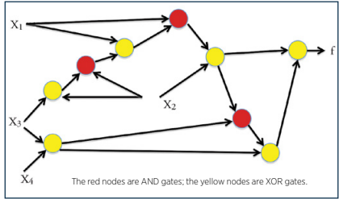
図13「組合せブール回路」。入力X₁～X₄をANDゲート（赤いノード）及びXORゲート（黄色いノード）で組み合わせ、出力fを計算する有向回路を示す。
Figure 13: Combinational Boolean Circuit
図13：組合せブール回路
未レビュー訳such predicates. Surprisingly, the multiplicative
左列続き：これらすべての述語の乗法複雑度は、驚くべきことに
未レビュー訳The project team has shown that finding optimal
左列：プロジェクトチームは、最適な組合せ回路を見つける問題が
未レビュー訳complexity of all these functions turned out to
右列続き：最大でも3となった。さらに、当チームの回路では
未レビュー訳combinational circuits is MAX SNP-complete. In practice, this
MAX SNP完全であることを示した。実務上は、
未レビュー訳be at most three. Additionally, our circuits use no
右列続き：非線形ゲート（XOR、XNOR）の使用数は
未レビュー訳means that it is necessary to settle for methods that design
最適性が証明された回路ではなく、
未レビュー訳more than seven non-linear gates (XOR, XNOR).
右列続き：7個以下である。
未レビュー訳原文のみ
“good” circuits, as opposed to provably optimal circuits.
左列続き：「良好な」回路を設計する方法に頼らざるを得ない。
未レビュー訳This is quite hard. Consider the following predicate
右列続き：これは非常に難しい。次の述語を考える
未レビュー訳The CTG has developed and implemented new solutions for
左列：CTGは、
未レビュー訳(arithmetic is modulo 2):
右列続き：（算術演算は2を法とする）：
未レビュー訳the circuit-minimization problem. Two patents have been
回路最小化問題に対する新しい解法を開発・実装した。関連する特許が2件成立しており、
未レビュー訳f = x x + x x + x x + x x +x x + x x x + x x x + x x x x
f = x₁x₂ + x₁x₃ + x₁x₄ + x₂x₃ + x₂x₄ + x₁x₂x₃ + x₁x₂x₄ + x₁x₂x₃x₄。
未レビュー訳granted related to this work, the last one in FY 2014. These
最後の特許は2014年度に成立した。これらの特許は、
未レビュー訳1 2 1 3 1 4 2 3 2 4 1 2 3 1 2 4 1 2 3 4.
原文のみ
are held jointly between NIST and the University of Southern • Computing the last term requires three Denmark.
左列続き：NISTと南デンマーク大学が共同で保有する。｜右列・箇条書き：式の最後の項を計算するには3回の
未レビュー訳multiplications. So, it is quite surprising that the full expression can be computed using only three
右列続き：乗算が必要となる。したがって、式全体をわずか3回の乗算だけで計算できることは意外である。
未レビュー訳The CTG is also researching circuit-based security metrics
左列：CTGは、回路ベースの安全性指標も研究している。
未レビュー訳multiplications. But, we have shown this to be
右列続き：しかし、我々はこれが
未レビュー訳for cryptographic functions. For a function to be secure (in
左列続き：暗号機能について、ある関数が安全（特に一方向性）であるためには、
未レビュー訳true for f and all other predicates on four bits. The
右列続き：f及び4ビット上のすべての述語で成り立つ。上の
未レビュー訳particular, one-way), it must be the case that any circuit that
左列続き：それを実装する回路が
未レビュー訳circuit depicted above computes f using three
右列続き：回路はfを3回の
未レビュー訳implements it is sufficiently complex. In particular, a function
左列続き：十分に複雑でなければならない。特に、ある関数は
未レビュー訳multiplications and six additions.
右列続き：乗算及び6回の加算を用いて計算する。
未レビュー訳is insecure if it can be implemented by a circuit containing too few Boolean AND gates. This security metric, namely the • A proof was developed that the maximum number of AND gates necessary and sufficient to implement
左列続き：ブールANDゲートが少なすぎる回路で実装できる場合は安全ではない。この安全性指標、すなわち、関数を実装するために必要かつ十分なANDゲート数を、｜右列・箇条書き：5ビットの述語の乗法複雑度の最大値を示す証明を開発した。
未レビュー訳multiplicative complexity of predicates on five bits
右列続き：
未レビュー訳a function, is referred to as its multiplicative complexity.
左列続き：関数の乗法複雑度と呼ぶ。
未レビュー訳(there are more than 4 billion such predicates) is
右列続き：（そのような述語は40億を超えるが）最大値は
未レビュー訳Unfortunately, determining multiplicative complexity is
左列続き：残念ながら、乗法複雑度の判定は
未レビュー訳four. The proof is constructive, meaning that the
右列続き：4である。証明は構成的であり、
未レビュー訳extremely hard.
左列続き：非常に難しい。
未レビュー訳circuits can actually be built.
右列続き：回路を実際に構成できる。
未レビュー訳The CTG has published circuits that are provably • A proof was developed that an explicit function optimal or close to optimal (with respect to multiplicative
左列：CTGは、｜右列・箇条書き：ある明示的な関数には少なくとも
未レビュー訳requires at least 3.01n gates. This constitutes the
右列続き：3.01n個のゲートが必要であることを証明した。これは
未レビュー訳complexity) for important classes of functions. In the process,
左列続き：乗法複雑度の観点で、重要な関数クラスについて最適であると証明された、または最適に近い回路を公開した。その過程で、
未レビュー訳only improvement on this problem for more than
右列続き：この問題について30年以上ぶりの唯一の改善である。
未レビュー訳we developed tools that have wide applicability for both
左列続き：その過程で、
未レビュー訳C O N TA C T S :
連絡先：
未レビュー訳Dr. Rene Peralta
Rene Peralta 博士
未レビュー訳Mr. Lawrence Bassham
Lawrence Bassham 氏
未レビュー訳Dr. Kerry McKay
Kerry McKay 博士
未レビュー訳(301) 975-8702
(301) 975-8702
未レビュー訳(301) 975-3292
(301) 975-3292
未レビュー訳(301) 975-4969
(301) 975-4969
未レビュー訳rene.peralta@nist.gov
rene.peralta@nist.gov
未レビュー訳lawrence.bassham@nist.gov kerry.mckay@nist.gov
lawrence.bassham@nist.gov kerry.mckay@nist.gov
未レビュー訳Dr. Meltem Sönmez Turan
Meltem Sönmez Turan 博士
未レビュー訳L i g h t w e i g h t C r y p t o g r a p h y
軽量暗号
未レビュー訳(301) 975-4391
(301) 975-4391
未レビュー訳There are several emerging areas in which highly meltem.turan@nist.gov constrained devices are interconnected and working in concert to accomplish a task. Examples of these areas
左列：高度な制約のあるデバイスが相互接続され、協調してタスクを実行する新たな分野がいくつかある。｜右列：meltem.turan@nist.gov｜左列続き：その例として、
未レビュー訳T h e N I S T R a n d o m n e s s B e a c o n
NIST乱数ビーコン
未レビュー訳include automotive systems, sensor networks, healthcare,
左列続き：自動車システム、センサーネットワーク、医療、
未レビュー訳NIST has implemented a source of public randomness,
右列：NISTは公開乱数源を実装しており、
未レビュー訳distributed control systems, the Internet of Things (IoT),
左列続き：分散制御システム、モノのインターネット（IoT）、
未レビュー訳which is available at https://beacon.nist.gov/home. It
右列続き：https://beacon.nist.gov/home で利用できる。これは
未レビュー訳Figure 13: Combinational Boolean Circuit
原文のみ
cyber-physical systems, and the smart grid. Security and
左列続き：サイバーフィジカルシステム及びスマートグリッドがある。これらの分野では、安全性と
未レビュー訳uses two independent, commercially-available sources of
右列続き：独立した市販の乱数源を2つ利用する。
未レビュー訳privacy can be very important in these areas. Because most
左列続き：プライバシーが非常に重要となる場合がある。最新の
未レビュー訳The project team has shown that finding optimal
原文のみ
randomness, each with an independent hardware entropy
右列続き：それぞれに独立したハードウェアエントロピー源があり、
未レビュー訳of the modern cryptographic algorithms were designed for
左列続き：暗号アルゴリズムの多くは、
未レビュー訳combinational circuits is MAX SNP-complete. In practice, this
原文のみ
source and SP 800-90A-approved components.
右列続き：SP 800-90A承認コンポーネントを備える。
未レビュー訳desktop/server environments, many of these algorithms
左列続き：デスクトップ／サーバー環境向けに設計されているため、多くのアルゴリズムは
未レビュー訳means that it is necessary to settle for methods that design
原文のみ
原文のみ
cannot be implemented in the constrained devices used The NIST Beacon is designed to provide unpredictability,
左列続き：制約付きデバイスには実装できない。｜右列：NISTビーコンは、予測不能性、
未レビュー訳“good” circuits, as opposed to provably optimal circuits.
原文のみ
by these applications. When current NIST-approved autonomy, and consistency. Unpredictability means that
左列続き：これらの用途で使われる現行のNIST承認アルゴリズムは、｜右列続き：自律性及び一貫性を備える。予測不能性とは、
未レビュー訳The CTG has developed and implemented new solutions for
原文のみ
algorithms can be engineered to fit into the limited users cannot algorithmically predict bits before they are
左列続き：制約環境の限られた｜右列続き：利用者がビットをアルゴリズムで予測できないことである。
未レビュー訳the circuit-minimization problem. Two patents have been
原文のみ
resources of constrained environments, their performance made available by the source. Autonomy means that the
左列続き：リソースに適合するよう実装できても、その性能が｜右列続き：情報源から公開された後に利用可能となる。自律性とは、
未レビュー訳granted related to this work, the last one in FY 2014. These
原文のみ
may not be acceptable. For these reasons, NIST started a source is resistant to attempts by outside parties to alter the
左列続き：許容できない場合がある。このためNISTは｜右列続き：外部の者が乱数の配布を変更しようとする試みに対して、情報源が耐性を持つことをいう。
未レビュー訳are held jointly between NIST and the University of Southern
原文のみ
lightweight cryptography project in 2013 that was tasked distribution of the random bits. Consistency means that a set
左列続き：2013年に軽量暗号プロジェクトを開始した。このプロジェクトは｜右列続き：乱数の配布について一貫性があるとは、利用者のグループが
未レビュー訳Denmark.
原文のみ
with determining the need and developing a strategy for the of users can access the source in such a way that they are
左列続き：軽量暗号の必要性を判断し、標準化戦略を策定することを｜右列続き：同じ乱数列を受信できると確信できるよう、情報源にアクセスできることをいう。
未レビュー訳The CTG is also researching circuit-based security metrics
原文のみ
standardization of lightweight cryptographic algorithms. confident of receiving the same random string.
左列続き：任務としていた。｜右列続き：
未レビュー訳for cryptographic functions. For a function to be secure (in
原文のみ
CTG staff are examining applications in constrained The NIST Beacon posts bit-strings in blocks of 512 bits
左列：CTGの職員は、制約環境における用途を検討している。｜右列：NISTビーコンは、512ビットのビット列を
未レビュー訳particular, one-way), it must be the case that any circuit that
原文のみ
environments to determine whether NIST should develop every 60 seconds. Each such value is time-stamped and
左列続き：NISTが軽量暗号標準を策定すべきか判断するためである。｜右列続き：60秒ごとに公開する。各値にはタイムスタンプを付し、
未レビュー訳implements it is sufficiently complex. In particular, a function
原文のみ
lightweight cryptographic standards. This includes signed to form a packet that also includes the hash of the
左列続き：そのため、｜右列続き：署名してパケットを形成する。パケットには
未レビュー訳is insecure if it can be implemented by a circuit containing
原文のみ
communicating with industry experts to understand the previous value to chain the sequence of values together.
左列続き：業界の専門家と連携して｜右列続き：直前の値のハッシュも含め、値の列を連鎖させる。
未レビュー訳too few Boolean AND gates. This security metric, namely the
原文のみ
challenges and limitations and following the work of This prevents all parties, even the source, from retroactively
左列続き：課題と制約を把握すること、及び他の標準化機関の動向を追うことも含まれる。2015年度、CTGは｜右列続き：これにより、情報源自身も含むすべての当事者が、検出されずに過去にさかのぼって
未レビュー訳number of AND gates necessary and sufficient to implement
原文のみ
other standardization bodies in this area. In FY 2015, CTG changing an output packet without being detected. The
左列続き：軽量暗号ワークショップを開催し、｜右列続き：出力パケットを変更することを防ぐ。NISTビーコンは
未レビュー訳a function, is referred to as its multiplicative complexity.
原文のみ
organized a Lightweight Cryptography Workshop to discuss NIST Beacon keeps all output packets. At any point in time,
左列続き：制約環境のアプリケーションに関する安全性及びリソース要件の課題を議論した。｜右列続き：すべての出力パケットを保存する。任意の時点で、
未レビュー訳Unfortunately, determining multiplicative complexity is
原文のみ
issues related to the security and resource requirements of the full history of outputs is available to users.
左列続き：｜右列続き：出力の全履歴を利用者が参照できる。
未レビュー訳extremely hard.
原文のみ
applicationsinconstrainedenvironmentsandpotentialfuture
左列続き：制約環境の用途及び軽量暗号プリミティブの将来的な標準化に関連する課題を、
未レビュー訳Tables of random numbers have probably been used for
右列：乱数表は、おそらく産業革命の頃から
未レビュー訳The CTG has published circuits that are provably
原文のみ
standardization of lightweight primitive algorithms. Using
左列続き：議論した。2016年度のワークショップで得られた意見を基に、
未レビュー訳multiple purposes at least since the Industrial Revolution.
右列続き：少なくとも複数の目的に使われてきた。
未レビュー訳optimal or close to optimal (with respect to multiplicative
原文のみ
input gathered at the workshop in FY 2016, CTG released
左列続き：CTGは
未レビュー訳In the digital age, algorithmic pseudorandom number
右列続き：擬似乱数生成器（
未レビュー訳complexity) for important classes of functions. In the process,
原文のみ
draft NISTIR 8114, Draft Report on Lightweight Cryptography
左列続き：NISTIR 8114草案「軽量暗号に関する報告書草案」を
未レビュー訳generators (PRNGs) have largely replaced these tables. The
右列続き：PRNG）がこうした表におおむね取って代わった。NISTビーコンは
未レビュー訳we developed tools that have wide applicability for both
原文のみ
for public comments. This report provides an overview of
左列続き：パブリックコメント用に公開した。この報告書は、
未レビュー訳NIST Beacon expands the use of randomness to multiple
右列続き：乱数の利用を複数の
未レビュー訳theoreticalandappliedresearchinsecurityandcryptography.
原文のみ
the lightweight cryptography project at NIST, and describes
左列続き：NISTにおける軽量暗号プロジェクトの概要を示し、
未レビュー訳scenarios in which neither tables nor PRNGs can be used.
右列続き：乱数表もPRNGも使えない状況に拡張する。
未レビュー訳Multiparty computation is a technique that allows a
原文のみ
a plan for the standardization of lightweight cryptographic
左列続き：軽量暗号アルゴリズムの標準化に向けた計画を説明している。
未レビュー訳The extra functionalities stem mainly from three features.
右列：この追加機能は主に3つの特徴から生じる。
未レビュー訳group of people to compute a function of their inputs without
原文のみ
algorithms. This plan involves the creation of profiles that
左列続き：この計画には、
未レビュー訳First, the Beacon-generated numbers cannot be predicted
右列続き：第一に、ビーコンが生成する数値は、公開前には予測できない。
未レビュー訳revealing the inputs themselves. Examples of this are: i)
原文のみ
will target specific applications and requirements where
左列続き：特定の用途及び要件を対象とするプロファイルの作成が含まれ、
未レビュー訳before they are published. Second, the public, time-bound,
右列続き：第二に、公開性、時刻との結び付き、
未レビュー訳holding an election; ii) conducting closed-bid auctions in
原文のみ
conventional cryptography may not be suitable.
左列続き：従来型暗号が適さない場合に用いる。
未レビュー訳and authenticated nature of the Beacon allows a user
右列続き：ビーコンの公開性、時間に結び付いた性質及び認証可能性により、利用者は
未レビュー訳which only the winning bid is determined; and iii) proving to a
原文のみ
CTG is organizing the second NIST workshop on application to prove to anybody that it used truly random
左列：CTGは、応用軽量暗号に関する第2回NISTワークショップを｜右列続き：ビーコンが真にランダムな数値を使用したことを誰にでも証明できる。
未レビュー訳third party that a person’s encrypted attributes satisfy some
原文のみ
Lightweight Cryptography, taking place at the beginning of numbers not known before a certain point in time. Third, this
左列続き：2017会計年度の初めに開催し、草案報告書の計画を最終化前に議論する。｜右列続き：その数値は特定の時点より前には知られていない。第3に、この
未レビュー訳requirement, such as “over 21 and (U.S. citizen or Canadian
原文のみ
FY 2017 to discuss the plan outlined in the draft report before proof can be presented offline and at any point in the future.
左列続き：計画の次の段階では、｜右列続き：証明はオフラインで、また将来の任意の時点に提示できる。
未レビュー訳citizen).” The protocols that solve multiparty computation
原文のみ
it is finalized. The next steps in the plan include working with
左列続き：業界と協力し、
未レビュー訳Although commercially available physical sources of
右列：市販の物理乱数源は、
未レビュー訳problems often encrypt bits using arithmetic modulo 2. The
原文のみ
industry to create an initial set of profiles and the selection
左列続き：最初のプロファイル群を作成し、
未レビュー訳randomness are adequate as entropy sources for currently
右列続き：エントロピー源として現在想定されている
未レビュー訳complexity of such protocols largely depends on the number
原文のみ
of algorithms that meet profile requirements.
左列続き：各プロファイルの要件を満たすアルゴリズムを選定する。
未レビュー訳envisioned implementations of the NIST Beacon, the NIST
右列続き：NISTの
未レビュー訳of multiplications required. Hence, expressing functions as circuit computations with only a few multiplication (AND)
原文のみ
Randomness Beacon project team is working on developing NIST cryptographic standards have been extensively a source of verifiably random sequences. In collaboration with used in the wireless standards developed in the IEEE 802 NIST physicists from the Physical Measurement Laboratory community. In FY 2016, the NIST team actively worked with (PML), the project team aims to use quantum non-locality to the IEEE 802.1 security group in using the Galois/Counter build an entropy source whose unpredictability is guaranteed Mode (GCM) specified in NIST Special Publication 800-38D by the laws of physics. In FY 2016, a major milestone was for Media Access Control (MAC) security (MACsec) solutions. achieved, namely, a strong loophole-free test of local realism
左列続き：乱数ビーコン・プロジェクトチームは、検証可能な乱数列を生成する情報源の開発に取り組んでいる。NIST物理計測研究所（PML）の物理学者と連携し、物理法則によって予測不能性が保証されるエントロピー源を構築するため、量子非局所性の利用を目指している。2016年度には局所実在論に関する強い抜け穴のない検証試験を達成した。｜右列：NISTの暗号規格は、IEEE 802コミュニティが策定した無線規格で広く使用されている。2016年度、NISTチームはIEEE 802.1セキュリティグループと積極的に連携し、NIST SP 800-38Dで規定するGalois/Counter Mode（GCM）を媒体アクセス制御（MAC）セキュリティ（MACsec）ソリューションに適用した。
未レビュー訳In FY 2016, NIST researchers continuously collaborated
右列：2016年度、NISTの研究者はIEEE 802.21作業部会と継続的に協力し、
未レビュー訳(where individual particles are governed by elements of
左列続き：（個々の粒子は、
未レビュー訳with the IEEE 802.21 Working Group to develop solutions
右列続き：マルチキャストグループ鍵配布のソリューションを開発し、
未レビュー訳reality, even if these elements are hidden from us) (see
左列続き：その要素が私たちから隠されていても、実在の要素に支配されるという
未レビュー訳for multicast group key distribution and coauthored a paper
右列続き：IEEE 802.21における鍵配布に関する論文を共同執筆した。
未レビュー訳https://www.nist.gov/news-events/news/2015/11/nist-team-
左列続き：詳細は https://www.nist.gov/news-events/news/2015/11/nist-team-
未レビュー訳titled “Security Multicast Group Key Management and Key
右列続き：同論文は「IEEE 802.21におけるセキュアなマルチキャストグループ鍵管理及び鍵
未レビュー訳proves-spooky-action-distance-really-real).
左列続き：proves-spooky-action-distance-really-real を参照。
未レビュー訳Distribution in IEEE 802.21.” The paper has been accepted by
右列続き：配布」と題し、Security Standardization Research Conference 2016（SSR 2016）で採択された。
未レビュー訳The project team has also made progress in reaching a the Security Standardization Research Conference 2016 (SSR goal of helping other institutions set up other interoperable 2016) and will be presented on December 5-6, 2016. sources. This is important because multiple sources can be
左列：プロジェクトチームは、他機関が相互運用可能な情報源を設置できるよう支援するという目標でも進展した。複数の情報源を組み合わせる際には、｜右列続き：論文は2016年12月5～6日に発表予定である。
未レビュー訳In FY 2017, the NIST team will continue to contribute
右列：2017年度、NISTチームは引き続き貢献し、
未レビュー訳combined in such a way that all sources would have to be
左列続き：すべての情報源が
未レビュー訳to IEEE 802 wireless standards and provide guidance for
右列続き：IEEE 802無線規格の策定に協力し、
未レビュー訳compromised in order to degrade the common random
左列続き：共通の乱数列を劣化させるために侵害されなければならないように
未レビュー訳NIST cryptographic standard usage in wireless and mobility
右列続き：無線及びモビリティ用途でのNIST暗号規格の使用について指針を提供する。
未レビュー訳strings.
左列続き：組み合わせられる。
未レビュー訳applications.
右列続き：
未レビュー訳As of the end of FY 2016, the NIST Beacon has been
左列：2016年度末時点で、NISTビーコンは
未レビュー訳C O N TA C T :
右列：連絡先：
未レビュー訳functioning without interruption for more than three years. During this time, the project team has received valuable input Dr. Lily Chen from a growing community of users. As a result, the project (301) 975 -6974 team will provide an enhanced version of the service during lily.chen@nist.gov FY 2017. The enhancements are mainly intended to enable interoperability.
左列続き：3年以上にわたり中断なく稼働している。その間、プロジェクトチームは増加する利用者コミュニティから貴重な意見を受けてきた。その結果、2017年度中にサービスの改良版を提供する。改良は主に相互運用性の実現を目的とする。｜右列：Lily Chen 博士、(301) 975-6974、lily.chen@nist.gov
未レビュー訳B l o c k c h a i n s
右列：ブロックチェーン
未レビュー訳NIST encourages the community-at-large to research and publish novel ways in which this tool can be used.
左列：NISTは、一般のコミュニティに対し、このツールの新たな活用方法を研究し、発表するよう促している。
未レビュー訳The Cryptographic Technology Group (CTG) began
右列続き：暗号技術グループ（CTG）は、
未レビュー訳F O R M O R E I N F O R M AT I O N , S E E :
左列：詳細情報：
未レビュー訳studying the use of blockchains, which have been suggested as a solution for many applications. A blockchain is a
右列続き：多くの用途への解決策として提案されてきたブロックチェーンの利用について研究を始めた。ブロックチェーンとは、
未レビュー訳https://www.nist.gov/programs-projects/nist-randomness-
左列続き：https://www.nist.gov/programs-projects/nist-randomness-
未レビュー訳distributed database that maintains a continuously growing
右列続き：継続的に増加する記録一覧を維持する分散データベースである。
未レビュー訳beacon
左列続き：beacon
未レビュー訳list of records called blocks that are secured from revision using a hash function. Each block contains a link to the
右列続き：ハッシュ関数によって変更から保護されるブロックと呼ばれる記録の一覧を保持する。各ブロックには、
未レビュー訳C O N TA C T :
左列：連絡先：
未レビュー訳previous block. A new block is added to the chain only when
右列続き：前のブロックへのリンクが含まれる。新しいブロックがチェーンに追加されるのは、
未レビュー訳Dr. Rene Peralta
左列続き：Rene Peralta 博士
未レビュー訳multiple parties (possibly mutually untrusting parties) agree
右列続き：複数の当事者（相互に信頼していない当事者の場合もある）が、
未レビュー訳(301) 975-8702
左列続き：(301) 975-8702
未レビュー訳to its accuracy. In essence, a blockchain is a mutually agreed-
右列続き：その正確性に合意した場合に限られる。要するに、ブロックチェーンは、
未レビュー訳rene.peralta@nist.gov
左列続き：rene.peralta@nist.gov
未レビュー訳upon record of history.
右列続き：相互に合意された履歴記録である。
未レビュー訳
図14：ブロックチェーンの3つの連続ブロックを示す。各ブロックは前ブロックのハッシュ値（Hash₁₀、Hash₁₁、Hash₁₂）、nonce（Nonce₁₁、Nonce₁₂、Nonce₁₃）、取引データ（Trans₁₁、Trans₁₂、Trans₁₃）を含み、矢印はブロック間のハッシュ連鎖を表す。
C r y p t o g r a p h y A p p l i c a t i o n s i n W i r e l e s s a n d M o b i l e S e c u r i t y Today, wireless networks have been integrated into modern communication systems that connect mobile devices using multiple radio technologies. Such heterogeneous networks demand integrated security solutions. The NIST team has worked closely with different working groups in the IEEE 802 LAN/MAN Standards Committee since 2006 and
暗号技術：無線及びモバイルセキュリティへの応用。左列：現在、無線ネットワークは複数の無線技術を用いてモバイル機器を接続する現代の通信システムに統合されている。このような異種ネットワークには統合されたセキュリティソリューションが必要である。NISTチームは2006年以来、IEEE 802 LAN/MAN規格委員会の複数の作業部会と緊密に連携し、
未レビュー訳Figure 14: Example of a Blockchain
右列：図14：ブロックチェーンの例
未レビュー訳made solid contributions to the security solutions for wireless networks. The NIST team has been involved in the IEEE 802.11 Figure 14: Example of a Blockchain illustrates three and IEEE 802.21 working groups to develop standards for blocks in a blockchain, where each block contains at least one cryptographic key management schemes for the mobility transaction, a nonce and the hash value of the previous block
左列続き：無線ネットワークのセキュリティソリューションに大きく貢献してきた。NISTチームはIEEE 802.11及びIEEE 802.21の作業部会に参加し、モビリティ環境向け暗号鍵管理方式の規格を策定している。｜右列続き：図14はブロックチェーン内の3つのブロックを示す。各ブロックには、少なくとも1件のトランザクション、nonce及び
未レビュー訳The most well-known example of the use of a blockchain A primary goal of this project is to provide high-quality, is BitCoin and similar digital currencies. However, the use of truly unpredictable random data to devices on the Internet blockchains has been proposed for other applications, such to enable them to generate strong cryptographic keys and as smart contracts and various ledgering applications. attest the strength of the keys used to protect data in transit
左列：ブロックチェーンの最もよく知られた利用例はBitcoin及び類似のデジタル通貨である。しかし、スマートコントラクトや各種台帳アプリケーションなど、他の用途も提案されている。｜右列：このプロジェクトの主な目標は、インターネット上のデバイスに高品質で真に予測不能な乱数データを提供し、強力な暗号鍵を生成できるようにするとともに、転送中のデータを保護するために使用される鍵の強度を証明することである。
未レビュー訳or at rest, thereby enabling cryptographic system strength
右列続き：または保存中のデータを保護する鍵についても同様であり、暗号システムの強度を証明できる。
未レビュー訳Many organizations have suggested applications for the
左列続き：多くの組織がブロックチェーンの用途を提案しているが、
未レビュー訳attestation. Achieving this goal would provide a solid basis
右列続き：この目標を達成すれば、自動暗号検証試験プロジェクトの目標達成に向けた確かな基盤となる。
未レビュー訳use of blockchains, some of which may not be appropriate.
左列続き：その中には適切でないものもある。
未レビュー訳for achieving the goals of the Automated Cryptographic
右列続き：
未レビュー訳The CSD is investigating the use of blockchains to determine
左列続き：CSDは、どの種類のアプリケーションがブロックチェーン利用に適し、
未レビュー訳Validation Testing project (see http://csrc.nist.gov/projects/
右列続き：自動暗号検証試験（ACVT）プロジェクト（http://csrc.nist.gov/projects/acvt/）
未レビュー訳whichapplicationtypesareappropriateforusingblockchains
左列続き：どの種類が適さないかを判断するため、
未レビュー訳acvt/ ) as well as addressing the problems targeted by the
右列続き：の目標達成に加えて、
未レビュー訳and which are not. The CTG is monitoring the proposed
左列続き：ブロックチェーンの利用を調査している。CTGは、提案されている
未レビュー訳Cryptographic Programs and Laboratory Accreditation (see
右列続き：暗号プログラム及びラボ認定（
未レビュー訳uses of cryptography to assure that current cryptographic
左列続き：暗号技術の利用を監視し、現在の暗号技術が
未レビュー訳the next section: Validated Programs, the first project in that
右列続き：次節の「検証済みプログラム」セクション内の最初のプロジェクトを参照）において、
未レビュー訳techniques are used properly and whether new techniques
左列続き：適切に使われているか、また新しい技術が
未レビュー訳section), where entropy estimation has persisted as one of
右列続き：エントロピー推定は最も難しく、労力を要する作業の一つであり、
未レビュー訳are required.
左列続き：必要かどうかを確認している。
未レビュー訳the most difficult and labor-consuming activities, causing
右列続き：エントロピー推定は、関係者全員にとって大きな課題となっている。
未レビュー訳During FY 2016, the CTG participated in two blockchain
左列：2016年度にCTGは、2つのブロックチェーン
未レビュー訳problems for all parties involved: the industry, the testing
右列続き：業界、
未レビュー訳workshops: the “DC Blockchain Summit” in March and the
左列続き：ワークショップに参加した。3月の「DC Blockchain Summit」と
未レビュー訳laboratories and the government validators.
右列続き：試験所及び政府の検証担当者である。
未レビュー訳“Blockchain and Healthcare Workshop” in September.
左列続き：9月の「Blockchain and Healthcare Workshop」である。
未レビュー訳Random data obtained from sources of true
右列：真の乱数源から得られる乱数データは、
未レビュー訳The CTG took an active role in the September workshop
左列続き：CTGは9月のワークショップで積極的な役割を果たし、
未レビュー訳randomness that are based on unpredictable physical
右列続き：予測不能な物理現象に基づいており、
未レビュー訳by reviewing papers and providing presentations on
左列続き：論文をレビューし、プレゼンテーションを行うことで、
未レビュー訳phenomena, such as quantum effects, is much better
右列続き：量子効果などがその例である。この種の乱数データは、
未レビュー訳blockchains and the CTG standards that might be useful for
左列続き：将来のブロックチェーン作業に役立つ可能性のあるブロックチェーンとCTG規格について紹介した。
未レビュー訳suited for cryptographic applications. CSD is collaborating
右列続き：暗号用途に大幅に適している。CSDは
未レビュー訳future blockchain work. The CSD also began testing the use
左列続き：また、
未レビュー訳with the NIST Physical Measurement Laboratory (PML)
右列続き：NIST物理計測研究所（PML）と協力し、
未レビュー訳of several blockchain nodes.
左列続き：複数のブロックチェーンノードの利用試験を始めた。
未レビュー訳to build a quantum source. The aim is to use quantum
右列続き：量子乱数源を構築する。目的は、量子
未レビュー訳During FY 2017, in addition to continuing familiarization
左列：2017年度には、ブロックチェーンへの理解を深める取組と、
未レビュー訳effects to generate sequences that are guaranteed to be
右列続き：量子効果を使って、
未レビュー訳with the use of blockchains and monitoring the cryptography
左列続き：提案されている暗号技術の動向を監視し続けることに加えて、
未レビュー訳unpredictable, even if an attacker has access to the random
右列続き：攻撃者が乱数源にアクセスできる場合でも予測不能性が保証される系列を生成する。
未レビュー訳proposed, the CTG is planning to participate in a blockchain
左列続き：CTGは、
未レビュー訳source. For more information on this collaboration, see
右列続き：情報源である。この共同研究の詳細は次を参照。
未レビュー訳study group sponsored by American Standards Committee
左列続き：American Standards Committee X9が主催するブロックチェーン研究会に
未レビュー訳https://www.nist.gov/pml/div684/random_numbers_bell_
右列続き：https://www.nist.gov/pml/div684/random_numbers_bell_
未レビュー訳X9, the financial services committee of the American
左列続き：参加を計画している。X9は、米国
未レビュー訳test.cfm/
右列続き：test.cfm/
未レビュー訳National Standards Institute (ANSI).
左列続き：国立標準協会（ANSI）の金融サービス委員会である。
未レビュー訳This project aims to develop a system and protocols
右列：このプロジェクトは、
未レビュー訳C O N TA C T S :
左列：連絡先：
未レビュー訳for obtaining random data with high entropy from one or more remote sources. The high-level architecture is shown
右列続き：1つ以上の遠隔情報源から高エントロピー乱数を取得するシステムとプロトコルの開発を目指す。大まかなアーキテクチャを示す
未レビュー訳Ms. Elaine Barker
左列：Elaine Barker 氏
未レビュー訳Dr. Lily Chen
左列：Lily Chen 博士
未レビュー訳in Figure 15: (See next page) High-level Architecture of EaaS.
右列続き：図15を参照（次ページ）。EaaSの高レベルアーキテクチャ。
未レビュー訳301-975-2911
左列続き：301-975-2911
未レビュー訳(301) 975-6974
左列続き：(301) 975-6974
未レビュー訳The architecture of the Entropy-as-a-Service system consists
右列：Entropy-as-a-Service（EaaS）システムのアーキテクチャは
未レビュー訳ebarker@nist.gov
左列連絡先：ebarker@nist.gov
未レビュー訳lily.chen@nist.gov
左列連絡先：lily.chen@nist.gov
未レビュー訳of two main parts: the client-side and the server-side. The critical components of the system are the quantum device,
右列続き：クライアント側とサーバー側の2つの主要部分で構成される。システムの主要構成要素は量子デバイス、
未レビュー訳Mr. John Kelsey
左列連絡先：John Kelsey 氏
未レビュー訳Dr. Rene Peralta (301) 975-8702john. the EaaS server and a secure device in the client systems
左列連絡先：Rene Peralta 博士、(301) 975-8702｜右列続き：EaaSサーバー及びクライアントシステム内のセキュアデバイス
未レビュー訳(301) 975-5101
左列連絡先：(301) 975-5101
未レビュー訳rene.peralta@nist.gov that is capable of providing strong isolation and protection
左列連絡先：rene.peralta@nist.gov｜右列続き：そのデバイスは強力な隔離と保護を提供し、
未レビュー訳kelsey@nist.gov
左列連絡先：john.kelsey@nist.gov
未レビュー訳for the cryptographic keys stored inside the device and
右列続き：デバイス内に保存された暗号鍵を保護し、
未レビュー訳Mr. Dylan Yaga
左列連絡先：Dylan Yaga 氏
未レビュー訳offering a set of basic cryptographic services.
右列続き：基本的な暗号サービスを提供する。
未レビュー訳(301) 975-6004
左列連絡先：(301) 975-6004
未レビュー訳The EaaS server is continuously fed random data from
右列続き：EaaSサーバーには、
未レビュー訳dylan.yaga@nist.gov
左列連絡先：dylan.yaga@nist.gov
未レビュー訳the attached quantum source. The data enters a FIFO (first in, first out)-like buffer in the server’s Random Access Memory
右列続き：接続された量子乱数源から乱数データが継続的に供給される。データはサーバーのランダムアクセスメモリ（RAM）内にあるFIFO（先入れ先出し）型バッファに入る。
未レビュー訳E n t r o p y a s a S e r v i c e ( E a a S )
エントロピー・アズ・ア・サービス（EaaS）
未レビュー訳(RAM), and, when a client request arrives, the server reads the top value from the buffer, signs and encrypts it, and then
右列続き：クライアントの要求が届くと、サーバーはバッファの先頭の値を読み出し、署名と暗号化を施したうえで
未レビュー訳The security of cryptography today depends on having
左列：現在の暗号技術の安全性は、
未レビュー訳sends it to the requester. The FIFO buffer shifts after every
右列続き：要求元へ送信する。FIFOバッファは各
未レビュー訳strong keys and keeping them secret. The ability to generate
左列続き：強力な鍵を用い、その秘密を保つことに依存する。強力な鍵を生成する能力は、
未レビュー訳request and when new data comes from the random source.
右列続き：要求の後、また乱数源から新たなデータが届いたときに先へ進む。
未レビュー訳strong cryptographic keys is directly related to having
左列続き：予測不能な乱数データを利用できるかどうかに直接関係するが、コンピューティングデバイス上で真に
未レビュー訳The EaaS server ensures that the FIFO buffer is erased
右列続き：EaaSサーバーはFIFOバッファを確実に消去する。
未レビュー訳access to unpredictable random data, but generating truly
左列続き：予測不能な乱数データを生成するのは難しく、
未レビュー訳prior to server shutdown and never paged to disk. Open
右列続き：サーバーの停止前に消去し、ディスクへは決してページアウトしない。適切な
未レビュー訳unpredictable random data on computing devices is hard
左列続き：信頼性も低い。そのため、暗号用途では弱い鍵が広く使われ、
未レビュー訳implementations can help ensure that this occurs.
右列続き：実装によって、この消去を確実にできる。
未レビュー訳and unreliable. As a result, weak keys are widely used in cryptographic applications, thus compromising the security The client system consists of a classic computing device of the sensitive data protected by them − potentially with enabled with a dedicated hardware component capable of
左列続き：その鍵で保護される機密データの安全性が損なわれ、潜在的に｜右列：クライアントシステムは、専用ハードウェアコンポーネントを備えた一般的なコンピューティングデバイスで構成され、このコンポーネントは
未レビュー訳storing secret cryptographic keys and seeds. A dedicated 4 7
右列続き：秘密の暗号鍵及びシードを保存する。専用の
未レビュー訳disastrous consequences.
左列続き：壊滅的な結果を招く。
未レビュー訳P RO GRA M AN D P ROJEC T ACH IEV EM EN TS | FY 2 01 6
原文のみ
software application bridges the communication between With the conceptual system architecture and protocols EaaS and the hardware component. Examples of secure defined, the project team continues to engage with industry hardwarecomponentsaretheTrustedPlatformModule(TPM), and academia to obtain feedback on the approach and TrustZone technology in Advanced Reduced Instruction Set identify possibilities for collaborative approaches to solving Computing (RISC) Machine (ARM) processors, and Identity important cybersecurity challenges in the domains of Protection Technology in Intel processors. If a client system cryptographyandsupply-chainmanagement(e.g.,integrated or device doesn’t have a secure hardware component, it can circuit counterfeiting). The team published a peer-reviewed still use EaaS. The presence of a hardware component simply paper on EaaS in IEEE Computer, a top professional journal, provides further guarantees to the system or device user, in September 2016. The team also started a collaboration when present.
原文更新後、再確認待ち
with a team of researchers at the University of Florida who won a NIST research grant to explore ways to leverage
原文のみ
EaaS uses HTTP to transfer entropy payloads from the
左列：EaaSはHTTPを用いてエントロピーペイロードをクライアントへ転送する。
未レビュー訳EaaS in protecting against integrated circuit counterfeiting
原文のみ
service to clients. To secure this transmission, the server
左列続き：この通信を保護するため、サーバーは
未レビュー訳and thereby help secure the supply chain. The University of
原文のみ
encrypts the data using the client’s provided public key and
左列続き：クライアントが提供する公開鍵でデータを暗号化し、
未レビュー訳Florida researchers will start their project in FY 2017.
原文のみ
digitally signs the payload with the server’s own private key.
左列続き：サーバー自身の秘密鍵でペイロードにデジタル署名する。
未レビュー訳The team continues to develop the system to provide
右列：チームはシステムの開発を続け、
未レビュー訳Client devices mix this data with locally available random
左列続き：クライアントデバイスは、このデータをローカルで利用できる乱数と混ぜ、
未レビュー訳a publicly accessible NIST EaaS instance in FY 2017. During
右列続き：2016年夏には、
未レビュー訳data to seed random number generators to generate strong
左列続き：乱数生成器のseedとして用い、強力な
未レビュー訳the summer of FY 2016, the team hosted a Summer
右列続き：Summer Undergraduate Research Fellowship（SURF）の学生を受け入れ、その学生は
未レビュー訳cryptographic keys and other random values independently
左列続き：暗号鍵やその他の乱数値を、遠隔情報源から独立して
未レビュー訳Undergraduate Research Fellowship (SURF) student who
右列続き：EaaSクライアントのサンプル実装を開発し、
未レビュー訳from the remote sources.
左列続き：取得できるようにする。
未レビュー訳developed a sample EaaS-client implementation with a
右列続き：EaaSクライアントのサンプル実装を開発し、
未レビュー訳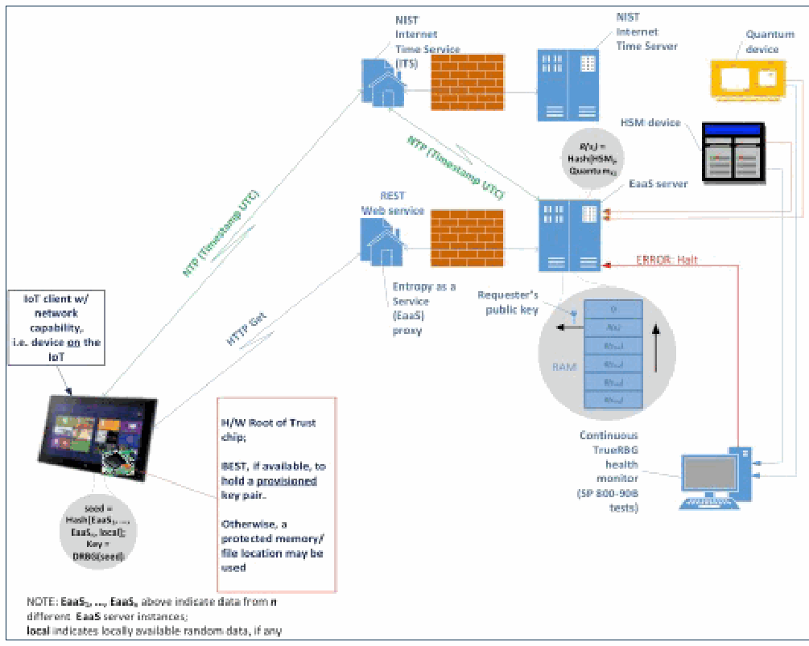
図15「EaaSの高レベルアーキテクチャ」。IoTクライアントはHTTP GETでEaaSプロキシを通じてサーバーへ要求する。量子デバイスからの乱数をEaaSサーバーのRAM内FIFOバッファに蓄え、HSMで鍵を保護し、TrueRBG健全性モニター（SP 800-90B試験）で継続監視する。NIST Internet Time Serviceが時刻情報を付与する。サーバーは要求元の公開鍵で乱数ペイロードを暗号化し、署名して返す。図にはHTTP/REST、NTP/UDP経路、クライアント側のハードウェアroot of trust、監視失敗時のERROR: Haltを示す。
proper cryptographic mixing of random data obtained from the National Voluntary Laboratory Accreditation Program multiple EaaS instances and local sources. The team plans (NVLAP) accredited Cryptographic and Security testing to publish the server and client code on GitHub in FY 2017 (CST) laboratories for validation testing against the derived and invite the public to voluntarily adopt it. Related to this, test requirements (DTR), implementation guidance (IG), the project team is planning to work on developing public and applicable CMVP programmatic guidance. According criteria for reputable EaaS hosts. The team succeeded to existing guidance, the CST laboratories must perform in obtaining NIST funding to hire contractors to help with 100 % independent testing of the modules submitted by the the implementation and hosting of the EaaS server; the vendors. contractor team has been identified, and the project will
左列続き：複数のEaaSインスタンス及びローカルソースから取得した乱数データを適切に暗号学的に混合する。チームは2017年度にサーバーとクライアントのコードをGitHubで公開し、一般の利用者が任意に採用できるようにする予定である。これに関連して、信頼できるEaaSホストの公開基準を策定する計画である。NISTの資金を獲得して請負業者を雇用し、EaaSサーバーの実装とホスティングを支援させた。請負チームは特定され、プロジェクトは｜右列：National Voluntary Laboratory Accreditation Program（NVLAP）認定の暗号・セキュリティ試験（CST）試験所を用い、派生試験要件（DTR）、実装ガイダンス（IG）及びCMVP関連ガイダンスに対する検証試験を行う。現行ガイダンスでは、CST試験所はベンダー提出モジュールを100%独立に試験しなければならない。
未レビュー訳The structure and the rules under which the CMVP
右列続き：CMVPの運用構造と規則は、
未レビュー訳start in FY 2017.
左列続き：2017年度に開始する。
未レビュー訳operates worked well for the level of the technology utilized by the Federal Government when the program was created
右列続き：プログラム開始時に連邦政府が利用していた技術水準に対しては、十分に機能していた。
未レビュー訳C O N TA C T :
左列：連絡先：
未レビュー訳more than two decades ago. As technology has advanced,
右列続き：プログラム開始から20年以上が経過し、技術が進歩した一方で、
未レビュー訳Dr. Apostol Vassilev
左列：Apostol Vassilev 博士
未レビュー訳however, the module testing process no longer satisfies
右列続き：モジュール試験プロセスは、現在の産業界及び政府の運用ニーズを
未レビュー訳(301) 975-3221
左列続き：(301) 975-3221
未レビュー訳the current industry and government operational needs.
右列続き：もはや満たしていない。
未レビュー訳apostol.vassilev@nist.gov
左列続き：apostol.vassilev@nist.gov
未レビュー訳Testing is exceedingly long—well beyond typical product-development cycles across a wide range of technologies. The resulting validated modules often do not provide useful
右列続き：試験には非常に長い時間がかかり、多様な技術における一般的な製品開発サイクルを大幅に超える。その結果、検証済みモジュールがITシステムに統合するための有用な
未レビュー訳A u t o m a t e d C r y p t o g r a p h i c
自動暗号
未レビュー訳interfaces for integration into IT systems to enable run-time
右列続き：モジュールのFISMA適合性を実行時に監視するための
未レビュー訳V a l i d a t i o n Te s t i n g
検証試験
未レビュー訳monitoring of modules for compliance with FISMA.
右列続き：インターフェースを提供できないことが多い。
未レビュー訳The Cryptographic Module Validation Program
左列：暗号モジュール検証プログラム
未レビュー訳NIST recognizes the need to improve the efficiency and
右列続き：NISTは暗号モジュール試験の効率性と
未レビュー訳(CMVP) was established on July 17, 1995 by NIST to
左列続き：（CMVP）は、1995年7月17日にNISTによって設立され、
未レビュー訳effectiveness of cryptographic module testing to reduce the
右列続き：有効性を高め、試験に必要な時間と費用を減らしつつ、
未レビュー訳validate cryptographic modules conforming to the Federal
左列続き：連邦情報処理標準（FIPS）
未レビュー訳time and cost required for testing, while providing a high
右列続き：高い保証レベルを
未レビュー訳Information Processing Standards (FIPS) 140-1, Security
左列続き：140-1「暗号モジュールのセキュリティ要件」及びその他のFIPS暗号関連標準に準拠する暗号モジュールを検証するためのプログラムである。
未レビュー訳level of assurance for Federal Government consumers.
右列続き：連邦政府の利用者に提供する。
未レビュー訳Requirements for Cryptographic Modules, and other FIPS cryptography-based standards. FIPS 140-2 was released on The principal goals of this project are to collaborate
左列続き：FIPS 140-2は2001年5月25日に発行され、｜右列：本プロジェクトの主な目標は、
未レビュー訳with commercial or open source producers of cryptographic
右列続き：暗号機能を提供する商用またはオープンソースの製品開発者と、
未レビュー訳May 25, 2001 and supersedes FIPS 140-1.
左列続き：FIPS 140-1に取って代わった。
未レビュー訳capabilitiesandgovernmentconsumersofFIPS140-validated
右列続き：FIPS 140検証済みモジュールを利用する政府機関が協力して、
未レビュー訳The current implementation of the CMVP is shown in modules to: Figure16:CurrentValidationFlowbelow.TheCMVPleverages
左列：CMVPの現行実装を下の図16「現行の検証フロー」に示す。CMVPは｜右列続き：以下を実現することである。
未レビュー訳
図16「現行の検証フロー」。自動暗号検証システムのプロキシ／検証機関アーキテクチャを示す。NIST ACV Server、Vendor ACV Server、ACV Client、暗号モジュール、試験対象デバイスが連携する。サーバー間はACVで接続し、Vendor ACV ServerとACV Client間はACV Protocolで連携する。ACV ClientはseedとTest Vectorsを暗号モジュールへ送り、Responsesを受け取る。
•Improve the efficiency and effectiveness of the rest of algorithms currently tested by the traditional cryptographic module testing by adopting the best Cryptographic Algorithm Validation Program (http://csrc. practices used by industry; nist.gov/groups/STM/cavp/index.html) with the goal of replacing it by the second quarter of 2018.
•業界で用いられるベストプラクティスを採用し、従来の暗号モジュール試験で現在試験されている残りのアルゴリズムの効率性と有効性を改善する。
未レビュー訳•Develop test procedures and techniques that provide assurance of module compliance to FIPS The project activities are structured by work areas in 140 in an automated manner, based on machine-order for subject-matter experts to more narrowly focus and readable artifacts or evidence (Examples of make progress. machine readable artifacts are Extensible Markup
•左列・箇条書き：機械可読な成果物または証拠に基づき、FIPS 140へのモジュール適合性を自動的に保証する試験手順と技法を開発する。機械可読な成果物の例として、Extensible Markup｜右列：専門家が対象を絞って進捗を上げられるよう、本プロジェクトの活動を作業領域ごとに構成する。
未レビュー訳1.Algorithm and Protocol Testing;
1.右列・箇条書き：アルゴリズム及びプロトコルの試験、
未レビュー訳Language (XML) or JavaScript Object Notation (JSON) files containing logs from performed tests
左列続き：Language（XML）又はJavaScript Object Notation（JSON）形式で、実施した試験のログを含むファイルがある。
未レビュー訳2.Cryptographic Module Testing,
2.右列・箇条書き：暗号モジュールの試験、
未レビュー訳and the corresponding results. At this stage, we
左列続き：及びその対応結果である。この段階では、
未レビュー訳a. Hardware,
右列・サブ項目：a. ハードウェア、
未レビュー訳have only partially concluded the research on this
左列続き：この研究は一部しか完了していないが、
未レビュー訳b. Software, and
右列・サブ項目：b. ソフトウェア、及び
未レビュー訳and can point to examples at https://github.com/
左列続き：次の例を挙げられる：https://github.com/
未レビュー訳c. Modules in cloud environments;
右列・サブ項目：c. クラウド環境のモジュール、
未レビュー訳usnistgov/ACVP); and
左列続き：usnistgov/ACVP）。また、
未レビュー訳and
右列続き：及び
未レビュー訳3.Positioning and relationships to other
3.右列・箇条書き：他の政府検証プログラムに対する位置付けと関係、
未レビュー訳•Identify techniques and procedures that provide Government Validation Programs. continued assurance of operational compliance to FIPS 140 for cryptographic modules throughout The project has several planned deliverables, including their lifecycle. the identification of prospective technical approaches that The scope of this project is broken into multiple adopt industry best practices and produce artifacts that
•左列・箇条書き：暗号モジュールのライフサイクル全体を通じてFIPS 140への運用上の適合性を継続して保証する技法と手順を特定する。｜右列続き：政府検証プログラムとの連携。
未レビュー訳phases to be performed over several years.
左列続き：本プロジェクトの範囲は、複数年にわたって実施する複数の
未レビュー訳are machine readable and map to DTR requirements, and a selection of the best technical and feasible approaches.
右列続き：このプロジェクトには、業界のベストプラクティスを採用する技術的手法候補の特定、機械可読でDTR要件に対応する成果物の作成、及び最適で実現可能な技術的手法の選定など、複数の成果物が予定されている。
未レビュー訳P H A S E 1
左列：フェーズ1
未レビュー訳C O N TA C T :
右列：連絡先：
未レビュー訳•Identify potential approaches, Dr. Apostol Vassilev
•左列・フェーズ1：候補となる手法を特定する。｜右列連絡先：Apostol Vassilev 博士
未レビュー訳•Select the best technical approach or approaches (301) 975-3221 to prototype, and apostol.vassilev@nist.gov
•左列続き：試作する最良の技術的手法を選ぶ。｜右列連絡先：(301) 975-3221、apostol.vassilev@nist.gov
未レビュー訳•Document the technical approach.
•左列続き：技術的手法を文書化する。
未レビュー訳P H A S E 2
左列：フェーズ2
未レビュー訳検証プログラムのセクション見出しを示す青色のバナー
V A L I D A T I O N P R O G R A M S
検証プログラム
未レビュー訳•Develop working prototypes, and
•左列・フェーズ2：作業用プロトタイプを開発し、
未レビュー訳•Evaluate the prototypes against the principal goals. Federal agencies, industry, and the public rely on many
•左列続き：主要目標に照らしてプロトタイプを評価する。｜右列：連邦機関、産業界及び一般利用者はITLが支援する規格・仕様の多くに依存している。
未レビュー訳P H A S E 3
左列：フェーズ3
未レビュー訳of the standards and specifications supported by ITL. Poor implementations of these standards or specifications may
右列続き：これらの規格や仕様の実装が不適切だと、製品が安全でなくなり、機密
未レビュー訳•Publish a draft, provide a review period, adjudicate render a product insecure, potentially placing sensitive the comments, and publish the final version. information at risk. ITL operates several validation programs
•左列・フェーズ3：草案を公開し、レビュー期間を設け、コメントを裁定して最終版を公開する。｜右列続き：情報が危険にさらされる可能性がある。ITLは、
未レビュー訳P H A S E 4
左列：フェーズ4
未レビュー訳that help provide a level of assurance that products meet established security requirements and conform to published
右列続き：製品が確立済みのセキュリティ要件を満たし、公開仕様に適合するという保証を提供する複数の検証プログラムを運用している。
未レビュー訳•Integrate the final version into the operational specifications. To that end, the CSD Security Testing, CMVP program. Validation, and Measurement Group (STVMG) develops test Currently, the project is focused on completing the suites and test methods; provides implementation guidance
•左列・フェーズ4：最終版をCMVPの運用に組み込む。｜右列続き：そのため、CSDのSecurity Testing, Validation, and Measurement Group（STVMG）は試験スイートと試験手法を開発し、
未レビュー訳documentation of the technical approach for automating and technical support to industry forums; and conducts
左列続き：技術的手法を自動化するための文書を完成させる。
未レビュー訳education, training, and outreach programs.
右列続き：業界への技術支援を行い、教育・訓練・普及活動も実施する。
未レビュー訳the algorithm testing and researching the approaches for automating the software module testing. The team
左列続き：アルゴリズム試験を自動化する手法を調査し、ソフトウェアモジュール試験の自動化にも取り組んでいる。チームは
未レビュー訳STVMG’s validation programs work together with
右列：STVMGの検証プログラムは、
未レビュー訳working on this project, in collaboration with the industry,
左列続き：業界と協力して本プロジェクトを進め、
未レビュー訳independent laboratories that are accredited by the National
右列続き：National Voluntary Laboratory Accreditation Program（NVLAP）が認定する独立試験所と連携する。
未レビュー訳demonstrated successful automated algorithm validations
左列続き：自動化されたアルゴリズム検証の成功例を実証した。
未レビュー訳VoluntaryLaboratoryAccreditationProgram(NVLAP).Based
右列続き：独立試験所の報告書及び試験証拠に基づき、
未レビュー訳at the International Cryptographic Module Conference in
左列続き：2017年5月のInternational Cryptographic Module Conferenceで、
未レビュー訳on independent laboratory test reports and test evidence
右列続き：以下で説明する検証プログラムが実装対象を検証する。合格した
未レビュー訳May 2017 for some algorithms (see https://acvts.nist.gov/
左列続き：一部のアルゴリズムで成功した（https://acvts.nist.gov/
未レビュー訳provided by the labs, the validation programs described below validate the implementation-under-test. Awarded On October 1, 2015, the CMVP began using a new validations are subsequently published on NIST websites. automated system to manage the validation workflow. The
右列（p.58）：試験所から提供された独立試験報告書及び試験証拠に基づき、以下に説明する検証プログラムが実装対象を検証する。｜左列（p.59）：合格した検証結果はNISTのWebサイトで公開される。｜右列（p.59）：2015年10月1日、CMVPは検証ワークフローを管理する新しい自動化システムを導入した。この
未レビュー訳impact to the CMVP’s efficiency was dramatic. In FY 2016, the CMVP awarded 307 new certificates, 111 more than in FY
右列続き：この自動化によってCMVPの効率は大幅に向上した。2016年度にはCMVPが307件の新規証明書を発行し、2015年度より111件多かった。
未レビュー訳C r y p t o g r a p h i c P r o g r a m s a n d
暗号プログラム及び
未レビュー訳2015.Figure 17: FY 2016 CMVP Certificates by Security Level
2015.右列続き：図17：2016年度CMVP証明書のセキュリティレベル別内訳
未レビュー訳L a b o r a t o r y A c c r e d i t a t i o n
試験所認定
未レビュー訳displays the number of certificates by security level for FY
右列続き：は、2016年度の証明書数をセキュリティレベル別に
未レビュー訳Cryptographic Module Validation Program (CMVP)
暗号モジュール検証プログラム（CMVP）
未レビュー訳2016.
右列続き：示す。
未レビュー訳The Cryptographic Module Validation Program (CMVP) was developed to support the federal user communities for
CMVPは、連邦政府の利用者コミュニティを支援するために設立された。
未レビュー訳
2016年度のCMVP証明書は合計307件。円グラフはセキュリティレベル1が154件（50%）、レベル2が113件（37%）、レベル3が40件（13%）であることを示す。
strong, independently tested, and commercially available cryptographic modules. Through this program, the CMVP works with international government, public and private sectors as a part of the cryptographic community to achieve standards-based security and assurance of correct implementation. The goal is to provide federal agencies with a security metric to use in procuring and deploying cryptographic modules, and promote the use of validated modules by industry and the public. The testing performed by independent third-party laboratories accredited by the National Voluntary Laboratory Accreditation Program (NVLAP), and the validations performed by the CMVP program provide this metric. Federal agencies, industry, and the public can choose cryptographic modules and/or products containing cryptographic modules from the CMVP Validated Modules List and have confidence in the claimed level of security and assurance of correct implementation. Cryptographic module testing and validation are based on published NIST standards. Since federal agencies Figure 17: FY 2016 CMVP Certificates by Security Level are required to use validated cryptographic modules for
左列：暗号モジュール検証プログラム（CMVP）は、強固で独立試験済み、かつ市販される暗号モジュールを連邦政府の利用者に提供することを支援するために開発された。このプログラムを通じてCMVPは、暗号コミュニティの一員として、国際的な政府機関、公共部門及び民間部門と協力し、標準に基づくセキュリティと実装の正確性を保証する。連邦政府機関が暗号モジュールを調達・展開する際に用いるセキュリティ指標を提供し、産業界及び一般の人々による検証済みモジュールの利用を促すことが目標である。この指標は、National Voluntary Laboratory Accreditation Program（NVLAP）が認定した独立の第三者試験所による試験と、CMVPプログラムの検証によって提供される。連邦政府機関、産業界及び一般の人々は、CMVP Validated Modules Listから暗号モジュールまたは暗号モジュールを含む製品を選び、申告されたセキュリティレベルと正確な実装に対する保証を信頼できる。暗号モジュールの試験と検証は、公開されたNIST標準に基づく。連邦政府機関は
未レビュー訳The automated system tracks the status of each
右列：自動化システムは各提出の状況を追跡し、
未レビュー訳the protection of sensitive unclassified information, the
左列続き：機密性のある非機密情報を保護するため、
未レビュー訳submission and identifies the order in which the submissions
右列続き：各申請が審査される順序を特定し、
未レビュー訳validated modules and the validated algorithms that the
左列続き：検証済みモジュールと、そこに含まれる検証済みアルゴリズムは、
未レビュー訳should be reviewed, based on when each submission is
右列続き：その順序は、各申請が
未レビュー訳modules contain represent the culmination and delivery of
左列続き：CSDの暗号技術に基づく業務の成果を結実させ、
未レビュー訳added to the CMVP queue. Automating this housekeeping
右列続き：CMVPキューに追加された時期に基づく。この事務処理の自動化により、
未レビュー訳CSD’s cryptography-based work to the end user.
左列続き：最終利用者に届けるものである。
未レビュー訳task significantly increased the efficiency of the validation
右列続き：検証プロセスの効率が大幅に向上した。
未レビュー訳The CMVP validates modules that are used in a wide
左列：CMVPは、幅広い種類の製品に使われる暗号モジュールを検証している。
未レビュー訳process. Not only does this allow the CMVP time to focus
右列：この自動化によりCMVPは他の業務に集中できるだけでなく、
未レビュー訳varietyofproducts,includingInternetbrowsers,radios,smart
左列続き：対象にはインターネットブラウザー、無線機、スマート
未レビュー訳on other tasks, it reduces the number of status messages
右列続き：進捗連絡の件数も減った。
未レビュー訳cards, space-based communications, munitions, security
左列続き：カード、宇宙通信、弾薬、セキュリティ
未レビュー訳from the laboratories that request a status for their specific
右列続き：具体的には、個別申請の状況を問い合わせる試験所からの連絡である。
未レビュー訳tokens, mobile phones, network and storage devices, and
左列続き：トークン、携帯電話、ネットワーク機器及びストレージ機器、さらに
未レビュー訳submission. Status messages have dropped from 4 to 6 per
右列続き：連絡件数は週4～6件から
未レビュー訳products supporting the Public Key Infrastructure (PKI) and
左列続き：公開鍵基盤（PKI）を支援する製品が含まれる。暗号モジュールは単体の
未レビュー訳week to 0 to 1 per week.
右列続き：週0～1件に減少した。
未レビュー訳electronic commerce. While a module may be a standalone
左列続き：製品として使われる場合もある。例えば、VPNやスマート
未レビュー訳The number of submissions sitting in the CMVP queue
右列：CMVPキューで待機する申請件数
未レビュー訳product (e.g., a virtual private network (VPN) or smart
左列続き：カードなどである。多くの場合、モジュールは
未レビュー訳and the average queue time have been reduced in part due
右列続き：及び平均待機時間も、自動化により一部短縮された。
未レビュー訳card), in many cases, a module (e.g., a cryptographic-based
左列続き：暗号ベースのツールキットなどとして、多数の製品に組み込まれる。少数の
未レビュー訳to this automation. The number of modules in the queue has
右列続き：キュー内のモジュール数は
未レビュー訳toolkit) is embedded into many products. Because a small
左列続き：モジュールが
未レビュー訳dropped from an average of 120 to an average of 65. The
右列続き：平均120件から65件へ減少した。
未レビュー訳number of modules may be incorporated within hundreds of
左列続き：何百もの製品に組み込まれることがあり、
未レビュー訳average queue length (e.g., the amount of time between
右列続き：平均待機時間（申請の到着から審査開始までの時間）
未レビュー訳products, the validation process has significant impact.
左列続き：そのため検証プロセスの影響は大きい。
未レビュー訳the arrival of a submission and when the review begins)
右列続き：は、
未レビュー訳The theme for the CMVP in FY 2016 was change. The
左列：2016年度のCMVPのテーマは「変革」であった。
未レビュー訳has dropped from an average of four months to an average
右列：平均キュー待ち時間は4か月から
未レビュー訳CMVP is evolving to be more efficient and consistent.
左列続き：CMVPは、より効率的で一貫性のあるプログラムへと進化している。
未レビュー訳of less than two months. The average amount of time to
右列続き：2か月未満へ短縮した。モジュールの検証に要する平均期間は
未レビュー訳The CMVP implemented an automated system, modified
左列続き：CMVPは自動化システムを導入し、
未レビュー訳validate a module is six months, with some validations being
右列続き：6か月であるが、検証の中には2か月以内に完了するものもある。
未レビュー訳workflow processes to provide better transparency and
左列続き：ワークフローを変更して透明性を高め、
未レビュー訳completed within two months. In the last quarter of FY 2016,
右列続き：2016年度第4四半期には、
未レビュー訳strengthened collaboration with the Cryptographic Modules
左列続き：暗号モジュール
未レビュー訳the queue was, at times, empty.
右列続き：キューが一時的に空になることもあった。
未レビュー訳User Forum (CMUF).
左列続き：利用者フォーラム（CMUF）との連携を強化した。
未レビュー訳One specific area where the automated system provided
左列：自動化システムが大幅な改善をもたらした特定の分野は、
未レビュー訳laboratory finalizes the submission to CMVP. If
右列（前頁からの続き）：試験所がCMVPへの申請を最終確定する。
未レビュー訳dramatic improvement was the NIST billing process.
NISTの請求処理である。
未レビュー訳laboratories leverage this new capability, the
試験所がこの新機能を活用すれば、
未レビュー訳Generating an invoice was reduced from an average of three
請求書の発行に要する期間は平均3週間から1日に短縮された。
未レビュー訳CMVP could see a further reduction in the queue
CMVPは待ち行列の長さをさらに
未レビュー訳weeks to one day. Similarly, receiving a notification that an
1日に短縮された。同様に、請求書の支払い通知を受け取るまでの期間も、
未レビュー訳length;
短縮できる。
未レビュー訳invoice was paid went from an average of one week to one
平均1週間から1日に
未レビュー訳•Anticipating the rollout of the new Computer
•右列の箇条書き：新しいComputer
未レビュー訳day. These are contributing factors to the reduction in the
短縮された。これらは待ち行列の長さの減少に寄与している。
未レビュー訳Security Resource Center (CSRC) web site. This
Security Resource Center（CSRC）ウェブサイトの公開を見込む。これにより、
未レビュー訳queue length. This achievement was due to the cooperative
この改善は、CMVPとNIST Receivablesとの協力関係によるもので、
未レビュー訳will allow the CMVP to replace the static validation
CMVPは静的な検証ページを
未レビュー訳relationship between the CMVP and NIST Receivables, who
両者は
未レビュー訳pages with an interactive capability for users, along
ユーザー向けの対話型機能を備えたページに置き換え、
未レビュー訳worked through technical challenges to allow the systems to
システム間で情報を交換できるよう技術的課題を解決し、
未レビュー訳with other improvements for users. Following this,
ユーザー向けのその他の改善も加える。その後、
未レビュー訳exchange information.
情報交換を可能にした。
未レビュー訳the CMVP will begin the transition to a web-based
CMVPはウェブベースの
未レビュー訳In May 2015, to provide greater transparency to the
左列：2015年5月、試験所に対する透明性を高めるため、
未レビュー訳submission process to replace the current email-
申請プロセスへの移行を開始し、現在の電子メール
未レビュー訳laboratories, the CMVP began sending a weekly report
CMVPは週次報告書の送付を開始し、
未レビュー訳based process;
方式に代える。
未レビュー訳to each laboratory, providing the status of each of their
各試験所の申請案件ごとの状況を報告した。
未レビュー訳•Continuing to strengthen its relationship with
•右列の箇条書き：CMUFとの関係を引き続き強化するため、
未レビュー訳submissions. Before the capability to prepare and send this
この報告書を作成して送付する機能が利用可能になる前は、
未レビュー訳the CMUF by collaborating on new and improved
CMUFと協力して、より良い
未レビュー訳report was available, the CMVP and laboratories would, at
CMVPと試験所は、時に、
未レビュー訳technical guidance and programmatic issues;
技術指針とプログラム運営上の課題に取り組む。
未レビュー訳times, find that each thought the other had the next action,
次に行うべき対応は相手側にあると双方が考え、
未レビュー訳and
さらに
未レビュー訳resulting in unnecessary delays.
その結果、不要な遅延が生じていた。
未レビュー訳•Joining the International Cryptographic Module
•右列の箇条書き：International Cryptographic Module
未レビュー訳In August 2015, to provide greater transparency to
左列：2015年8月、利用者に対する透明性を高めるため、
未レビュー訳Conference (ICMC) program committee to
Conference（ICMC）のプログラム委員会に加わり、
未レビュー訳users, the CMVP separated the Implementation-Under-Test
CMVPは「実装試験中」（IUT）リストを
未レビュー訳continue strengthening partnership within the
コミュニティ内の連携を引き続き
未レビュー訳(IUT) list from the rest of the Modules-In-Process (MIP) list.
「処理中モジュール」（MIP）リストの残りから分離した。
未レビュー訳community.
強化する。
未レビュー訳Separating the lists allows the users to quickly and easily see
リストを分けることで、利用者は、
未レビュー訳F O R M O R E I N F O R M AT I O N , S E E :
詳しくは以下を参照：
未レビュー訳that the CMVP does not have any information on the modules currently being tested (i.e., those listed in the IUT list). In fact,
CMVPが現在試験中のモジュール（IUTリストに掲載されたもの）に関する情報を持っていないことを把握できる。実際、
未レビュー訳http://csrc.nist.gov/groups/STM/cmvp/index.html
http://csrc.nist.gov/groups/STM/cmvp/index.html
未レビュー訳the IUT list is provided as a marketing service for vendors that have made a commitment to achieving validation, but whose C O N TA C T : module(s) are not yet in the MIP.
IUTリストは、検証取得を約束したものの、モジュールがまだMIPに掲載されていないベンダー向けの広報サービスとして提供される。｜問い合わせ先：
未レビュー訳Ms. Jennifer Cawthra
Jennifer Cawthra氏
未レビュー訳TheCMVPstrengtheneditsrelationshipwiththeCMUFby
左列：CMVPはCMUFとの関係を強化し、
未レビュー訳301-975-8514
301-975-8514
未レビュー訳supporting the monthly CMUF general membership meetings
CMUFの月例総会を支援し、
未レビュー訳jennifer.cawthra@nist.gov
jennifer.cawthra@nist.gov
未レビュー訳andfiveCMUFworkinggroups.Theworkinggroupsarechaired by a member of industry and/or by laboratory personnel. Each working group includes a representative from the CMVP. T h e C r y p t o g r a p h i c A l g o r i t h m The current working group topics include the Security Policy V a l i d a t i o n P r o g r a m ( C AV P ) Template; Testing Equivalency; Revalidation in Response to
左列：5つのCMUF作業部会は、産業界のメンバーまたは試験所職員が議長を務める。各部会にはCMVP代表が参加する。現在のテーマには、セキュリティポリシー・テンプレートと試験同等性が含まれる。右列見出し：暗号アルゴリズム検証プログラム（CAVP）。
未レビュー訳The Cryptographic Algorithm Validation Program
暗号アルゴリズム検証プログラム
未レビュー訳Common Vulnerabilities and Exposures (CVEs); Proposed IG
共通脆弱性とその公開情報（CVEs）への対応に伴う再検証；提案中の実装ガイド（IG）「
未レビュー訳(CAVP) provides federal agencies in the United States and
（CAVP）は、米国および
未レビュー訳Integrity Testing using Random Sampling and IG Updates (IG
ランダムサンプリングによる完全性試験、およびIGの改訂（IG
未レビュー訳Canada with assurance that a cryptographic algorithm has
カナダの連邦機関に対し、暗号アルゴリズムが
未レビュー訳3.5 Documentation Requirements for Cryptographic Module
3.5「暗号モジュールサービスの文書化要件」、
未レビュー訳been implemented completely and correctly, as specified
承認済みの連邦情報処理規格（
未レビュー訳Services, IG 1.20 Sub-Chip Cryptographic Subsystems, and
IG 1.20「サブチップ暗号サブシステム」、および
未レビュー訳in its approved Federal Information Processing Standard
FIPS承認済み）またはNIST推奨の
未レビュー訳7.7 Key Establishment and Key Entry and Output). This CMUF
IG 7.7「鍵確立ならびに鍵の入力および出力」）。このCMUFとの
未レビュー訳(FIPS-Approved) or NIST-recommended cryptographic
暗号アルゴリズム標準に従って、
未レビュー訳collaboration allows greater progress on technical guidance
協力によって技術指針の策定が進み、
未レビュー訳algorithm standard. The CAVP was established in 2013 as
完全かつ正確に実装されていることを保証する。CAVPは2013年に、
未レビュー訳and incorporates differing perspectives.
異なる視点も取り入れられる。
未レビュー訳a joint program in collaboration between NIST and the
NISTとカナダ
未レビュー訳For FY 2017, the CMVP team is:
2017年度のCMVPチームの計画は次のとおりである。
未レビュー訳Communications Security Establishment (CSE) of Canada.
通信保安局（CSE）との共同プログラムとして設立された。
未レビュー訳•Anticipating the approval of FIPS 140-3. When Prior to this date, the CAVP’s functions were included in the approved, the CMVP will create the necessary Cryptographic Module Validation Program (CMVP). With the documents and processes to support the transition increase in the number and complexity of FIPS-Approved and NIST-recommended cryptographic algorithms, it was from FIPS 140-2 to FIPS 140-3; deemed necessary to establish the CAVP as an independent
•左列の箇条書き：FIPS 140-3の承認を見込む。承認後、CMVPはFIPS 140-2からFIPS 140-3への移行を支援するために必要な文書と手順を作成する。｜右列：それ以前、CAVPの機能は暗号モジュール検証プログラム（CMVP）に含まれていた。FIPS承認済みおよびNIST推奨の暗号アルゴリズムの数と複雑さが増したため、CAVPを独立したプログラムとして設立する必要があると判断された。
未レビュー訳•Continuing to invest in automation to streamline the program. validation process and improve review consistency. The CAVP’s goal is to provide federal agencies with a One effort that started in FY 2016 was the ability for a laboratory to request an invoice while the security metric to use in validating cryptographic algorithm
•左列の箇条書き：プログラムの検証プロセスを効率化し、審査の一貫性を向上させるため、自動化への投資を継続する。2016年度に始めた取り組みの一つは、試験所がCMVPへの申請を最終確定する間に請求書を依頼できるようにすることである。文は次頁へ続く。｜右列：CAVPの目標は、連邦機関が暗号アルゴリズムを検証する際に用いるセキュリティ指標を提供することである。
未レビュー訳implementations, and promote the use of validated sets of security requirements. For the CAVP, a validation algorithms by industry and the public. The testing is carried system document is designed for each FIPS-approved out by independent third-party laboratories accredited by or NIST-recommended cryptographic algorithm. See the the National Voluntary Laboratory Accreditation Program website for a listing (see http://csrc.nist.gov/groups/STM/ (NVLAP), and the validations performed by the CAVP cavp/). The four Annexes to FIPS 140-2 reference the program provide this metric. Federal agencies, industry, underlying cryptographic algorithm standards or methods. and the public can choose validated implementations
左列（p.60からの続き）：検証済み実装の利用を産業界および一般に促進する。試験は、国立自主試験所認定プログラム（NVLAP）に認定された独立第三者試験所が実施する。CAVPによる検証結果がこの指標となる。連邦機関、産業界および一般利用者は、検証済み実装を選択できる。｜右列：CAVPでは、FIPS承認済みまたはNIST推奨の各暗号アルゴリズムについて検証システム文書を作成する。一覧はウェブサイトを参照（http://csrc.nist.gov/groups/STM/cavp/）。FIPS 140-2の4つの附属書は、基礎となる暗号アルゴリズム規格または方式を参照している。
未レビュー訳By the end of 2016, the CAVP had issued approximately
右列：2016年末までにCAVPが発行した検証件数は約
未レビュー訳of cryptographic algorithms from the CAVP Validated
左列：CAVP検証済みアルゴリズム一覧から暗号アルゴリズムの実装を選び、
未レビュー訳23,559 validations, representing the algorithm validations of
23,559件に達した。これは、およそ
未レビュー訳Algorithms List and have confidence in the claimed level of
その一覧を利用して、主張されたセキュリティレベルと
未レビュー訳approximately 18 approved algorithms, including 5 modes of
18種類の承認済みアルゴリズム（うち5種類は
未レビュー訳security and assurance of correct implementation.
正しい実装であるとの保証を信頼できる。
未レビュー訳operation.
動作モード）に関する検証件数である。
未レビュー訳The validation of cryptographic algorithms by the
左列：CAVPによる暗号アルゴリズムの検証は、
未レビュー訳The CAVP issued approximately 4,000 algorithm
右列：CAVPは2016年度に約4,000件のアルゴリズム
未レビュー訳CAVP is a prerequisite to the validation of a cryptographic
CMVPによる暗号モジュール検証の前提条件であり、
未レビュー訳validations in FY 2016, an increase of approximately 600
検証を実施した。前年度から約600件増加した。
未レビュー訳module by the CMVP and is also used by other programs
NIST以外の他のプログラムでも利用されている。
未レビュー訳validations from the previous year. The increase in validations
検証件数の増加は、
未レビュー訳outside of NIST as well. Since federal agencies are required
連邦機関は機微な非機密情報を保護するため、
未レビュー訳is attributed to an increase in cryptographic modules being
検証対象となる暗号モジュールの増加と、
未レビュー訳to use validated cryptographic modules for the protection of
検証済み暗号モジュールを使用することが求められるため、
未レビュー訳validated and other outside programs now requiring CAVP
CAVP検証済み実装を求めるNIST外のプログラムの増加に起因する。
未レビュー訳sensitive unclassified information, the validated modules and
検証済みモジュールと、
未レビュー訳validated implementations, e.g., the National Information
例えば、国家情報
未レビュー訳the validated algorithms that the modules contain represent
それらのモジュールに含まれる検証済みアルゴリズムは、
未レビュー訳Assurance Partnership (NIAP).
保証パートナーシップ（NIAP）などである。
未レビュー訳the culmination and delivery of CSD’s cryptography-based
CSDの暗号技術に関する取り組みの集大成であり、
未レビュー訳The number of algorithms submitted for validation
右列：検証に提出されるアルゴリズムの数は
未レビュー訳work to the end user.
最終利用者に届けられる。
未レビュー訳continues to grow, representing significant growth in the
引き続き増加しており、将来利用可能となる
未レビュー訳The CAVP validation program provides documented
CAVP検証プログラムは、
未レビュー訳number of validations expected to be available in the future.
検証件数の大幅な増加を示している。
未レビュー訳methodologies for conformance testing through defined
定義済みの適合性試験手法を文書化して提供する。
未レビュー訳
年度別CAVP検証状況の積み上げ棒グラフ。横軸はFY1996〜FY2016、縦軸は0〜4,500件。総数は長期的に増加し、FY2014にいったん減少した後、FY2016に約4,000件へ増えている。原図に凡例はない。
Figure 19: CAVP Validation Status for FY 2016
図19：FY2016のCAVP検証状況
未レビュー訳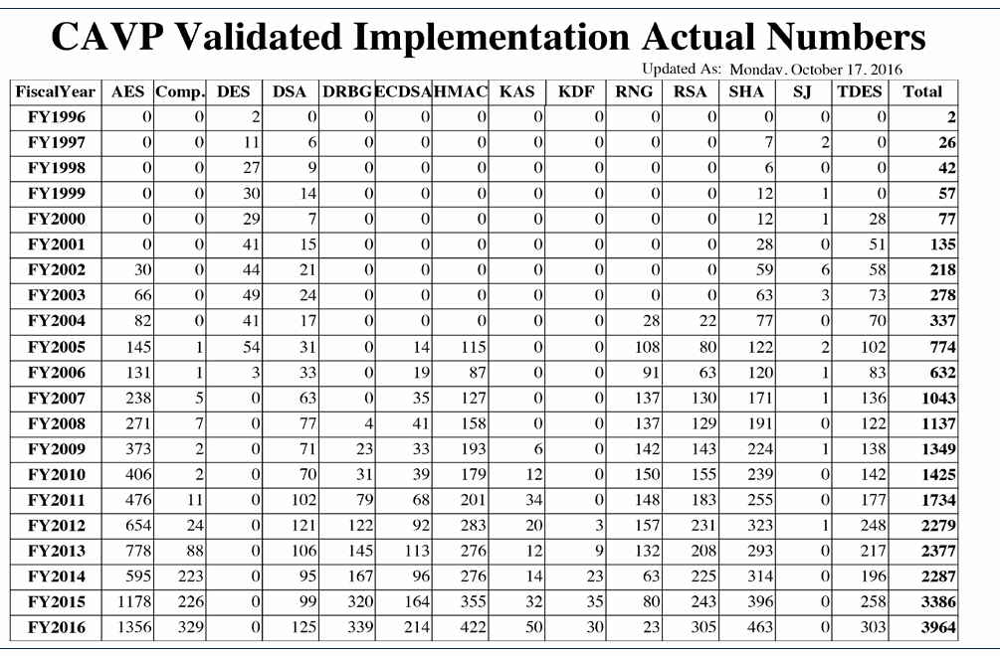
上段はFY2016のCAVP検証件数を月別に示す積み上げ棒グラフ。横軸は2015年10月〜2016年9月、縦軸は0〜900件。凡例はTDES、SHA-3、SHA、RSA、RNG、KDF、KAS、HMAC、ECDSA、DSA、DRBG、コンポーネント試験、AES。下段は「CAVP検証済み実装の実数」表（2016年10月17日更新）で、FY1996〜FY2016の年度別値をアルゴリズム区分ごとに示す。FY2016合計は3,964件、FY2015合計は3,386件。
that the implementation recognizes values that are not
右列（左列下部からの続き）：実装がそれらを
未レビュー訳F O R M O R E I N F O R M AT I O N , S E E :
詳しくは以下を参照：
未レビュー訳allowed. The Monte Carlo Test is designed to exercise the
許容されない値として認識することを確認する。モンテカルロテストは、
未レビュー訳https://csrc.nist.gov/Projects/Cryptographic-Algorithm-
https://csrc.nist.gov/Projects/Cryptographic-Algorithm-
未レビュー訳entire implementation-under-test (IUT). This test is designed
このテストは、
未レビュー訳Validation-Program
Validation-Program
未レビュー訳to detect the presence of implementation flaws that are not detected with the controlled input of the Known-Answer
既知解テストの制御された入力では検出されない実装上の欠陥を検出する。
未レビュー訳C O N TA C T :
問い合わせ先：
未レビュー訳Tests. The types of implementation flaws detected by this validation test include pointer problems, insufficient
検出対象となる実装上の欠陥には、ポインタの問題、領域確保の不足、
未レビュー訳Mr. Harold Booth
Harold Booth氏
未レビュー訳allocation of space, improper error handling, and incorrect
不適切なエラー処理、および
未レビュー訳(301) 975-8441
(301) 975-8441
未レビュー訳behavior of the IUT. The Multi-Block Message Test (MMT)
IUTの誤った動作が含まれる。マルチブロックメッセージテスト（MMT）は、
未レビュー訳harold.booth@nist.gov
harold.booth@nist.gov
未レビュー訳is designed to test the ability of the implementation to
実装がマルチブロックメッセージを処理する能力を試験するよう設計されている。
未レビュー訳(Editors’ Note: Sharon Keller worked on this program until process multi-block messages, which requires the chaining her recent retirement.)
左列編集者注：Sharon Keller氏は最近退職するまで本プログラムに携わった。｜右列：この処理には情報の連鎖が必要であり、
未レビュー訳of information from one block to the next. During the last few years, the CSD Cryptographic
右列：一つのブロックから次のブロックへ情報を引き継ぐ。近年、CSDの暗号技術
未レビュー訳A u t o m a t e d S e c u r i t y Te s t i n g a n d Technology Group (CTG) has expanded its publications
左列見出し：自動セキュリティ試験および｜右列：グループ（CTG）は出版物を拡充し、
未レビュー訳to contain not only the algorithm’s specifications, but
アルゴリズムの仕様だけでなく、
未レビュー訳Te s t S u i t e D e v e l o p m e n t
左列見出し：テストスイートの開発
未レビュー訳also requirements for an algorithm’s use. Many of these
アルゴリズムの利用要件も含めるようになった。こうした利用要件の多くは、
未レビュー訳The CAVP utilizes the requirements and specifications
左列：CAVPは、NIST規格（
未レビュー訳usage requirements do not fall within the scope of the
CAVPの対象範囲に含まれない。
未レビュー訳of the NIST standards (i.e., FIPS and Special Publications) to
FIPSおよび特別刊行物）の要件と仕様を用いて、
未レビュー訳CAVP, because the CAVP focuses on the correctness of
CAVPは、アルゴリズムの境界内にある指示が正しいかに
未レビュー訳develop algorithm validation test suites and an automated
アルゴリズム検証テストスイートと自動
未レビュー訳the instructions within the algorithm’s boundary. If these
重点を置くためである。こうした
未レビュー訳security testing tool. The CAVP is responsible for providing
セキュリティ試験ツールを開発する。CAVPは、
未レビュー訳additional algorithm usage requirements are not considered
追加のアルゴリズム利用要件が
未レビュー訳assurancethatthecryptographicalgorithmimplementations
暗号アルゴリズムの実装が
未レビュー訳applicable to the algorithm’s implementation, they cannot
アルゴリズム実装に適用される要件とみなされない場合、
未レビュー訳contained in cryptographic modules are implemented
暗号モジュール内で
未レビュー訳be tested at the algorithm level by the CAVP, but may be
アルゴリズム単位では試験できないが、
未レビュー訳according to the specifications in the standards. The CAVP
規格の仕様どおりに実装されていることを保証する。CAVPは、
未レビュー訳tested by the CMVP if the requirements are considered
暗号モジュールに適用される要件とみなされる場合は、
未レビュー訳accomplishes this by designing and developing conformance
各アルゴリズム固有の適合性試験を設計・開発することで
未レビュー訳applicable to the cryptographic module. However, some of
CMVPによる試験の対象となる。しかし、
未レビュー訳testing specific to each cryptographic algorithm.
これを実現する。
未レビュー訳these usage requirements may be outside the scope of both
アルゴリズムの実装にも暗号モジュールにも適用されないものもある。
未レビュー訳The conformance testing consists of a suite of validation the algorithm implementation and cryptographic module. tests for each approved cryptographic algorithm. These In this latter case, the fulfillment of the requirements is the validation tests exercise the algorithmic requirements responsibility of entities using, installing, or configuring and mathematical formulas to assure that the detailed applications or protocols that use the cryptographic specifications are implemented correctly and completely. algorithms. For example, depending on the design of a If the implementer deviates from the specifications in the cryptographic module, it may not be possible for the module standard or excludes any part of these specifications or to determine whether a specific key is used for multiple requirements, the validation test will detect the deviations purposes, a situation that is strongly discouraged. and fail. The validation testing will indicate that the algorithm
左列：適合性試験は、承認済み暗号アルゴリズムごとの検証テスト一式で構成される。各テストはアルゴリズム要件と数式を検証し、詳細仕様が正確かつ完全に実装されていることを確かめる。実装者が規格の仕様から逸脱するか、その一部を除外すれば、試験は逸脱を検出して不合格とする。検証結果は、アルゴリズム実装が｜右列：こうした場合、要件を満たす責任は、暗号アルゴリズムを使用するアプリケーションまたはプロトコルの利用者、導入者、設定者にある。例えば、モジュールの設計によっては、特定の鍵が複数の目的に使われているかをモジュールが判定できないことがある。そのような使い方は強く推奨されない。
未レビュー訳The CAVP currently has algorithm validation testing for
右列：現在CAVPは、次の暗号アルゴリズムの検証試験を実施している。
未レビュー訳implementation does not function properly or is incomplete.
正常に機能しないか、不完全であることを示す。
未レビュー訳the following cryptographic algorithms:
右列：今後、CAVPは次の暗号アルゴリズムの
未レビュー訳The cryptographic algorithm validation tests designed
左列：CAVPが設計した暗号アルゴリズム検証テストは、
未レビュー訳In the future, the CAVP expects to add algorithm
検証試験を追加する予定である。
未レビュー訳and developed by the CAVP are used by independent third-
NVLAP認定の独立第三者試験所で使用されている。
未レビュー訳validation testing for:
検証試験の追加対象は次のとおり。
未レビュー訳party laboratories accredited by NVLAP. The laboratory works with vendors to validate their cryptographic • SP800-38G, Recommendation for Block Cipher
左列：試験所はベンダーと協力し、暗号｜右列：SP 800-38G「ブロック暗号の利用モードに関する勧告：
未レビュー訳Modes of Operation: Methods for Format-
形式を保持する
未レビュー訳algorithm implementations. The suite of validation tests for
左列：アルゴリズム実装を検証する。各アルゴリズム用のテストスイートは
未レビュー訳Preserving Encryption;
暗号化の方法」；
未レビュー訳each algorithm ensures the repeatability of tests and the equivalency of results across the testing laboratories.
試験の再現性と試験所間の結果の同等性を確保する。
未レビュー訳•SP 800-56C, Recommendation for Key Derivation through Extraction-then-Expansion, November
•SP 800-56C「鍵導出の勧告：抽出後拡張」
未レビュー訳There are several types of validation tests, all designed
左列：検証試験には複数の種類があり、いずれも
未レビュー訳2011;
2011年11月；
未レビュー訳to satisfy the testing requirements of the cryptographic algorithms and their specifications. These include, but are • SP 800-132, Recommendation for Password-not limited to, Known-Answer Tests, Monte Carlo Tests,
左列：暗号アルゴリズムと仕様に定める試験要件を満たすよう、各種の検証テストを設計する。既知解テストやモンテカルロテストなどがあるが、これらに限られない。｜右列：SP 800-132「パスワードベース鍵導出
未レビュー訳Based Key Derivation Part 1: Storage Applications,
第1部：保存アプリケーション」
未レビュー訳and Multi-Block Message Tests. The Known-Answer Tests
マルチブロックメッセージテストも含まれる。既知解テストは
未レビュー訳December 2010; and
2010年12月；および
未レビュー訳are designed to examine the individual components of
アルゴリズムの個々の構成要素を調べるために、
未レビュー訳•SP 800-56A Revision 2, Recommendation for Pair-
•SP 800-56A改訂2「ペアワイズ鍵確立方式の勧告：
未レビュー訳the algorithm by supplying known values to the variables
変数に既知の値を与え、
未レビュー訳Wise Key Establishment Schemes Using Discrete
離散対数暗号に基づく方式」
未レビュー訳and verifying the expected result. Negative testing is also
期待される結果と照合する。ネガティブテストも
未レビュー訳| TABLE 1: CRYPTOGRAPHIC ALGORITHMS & NIST TECHNICAL DOCUMENTS (FIPS & SPS) | |
| CRYPTOGRAPHIC ALGORITHM/COMPONENT | FEDERAL INFORMATION PROCESSING STANDARD (FIPS) OR SPECIAL PUBLICATION (SP) OR OTHER REFERENCE DOCUMENT |
| Triple Data Encryption Standard (TDES) | SP 800-67, Recommendation for the Triple Data Encryption Algorithm (TDEA) Block Cipher, and |
| SP 800-38A, Recommendation for Block Cipher Modes of Operation–Methods and Techniques | |
| Advanced Encryption Standard (AES) | FIPS 197, Advanced Encryption Standard, and |
| SP 800-38A, Recommendation for Block Cipher Modes of Operation–Methods and Techniques | |
| Digital Signature Algorithm (DSA) | FIPS 186-2, Digital Signature Standard (DSS), with change notice 1 and |
| FIPS 186-4, Digital Signature Standard (DSS) | |
| Elliptic Curve Digital Signature Algorithm (ECDSA) | FIPS 186-2, Digital Signature Standard (DSS), with change notice 1 and ANS X9.62 and |
| FIPS 186-4, Digital Signature Standard (DSS), and ANS X9.62 | |
| RSA algorithm | FIPS 186-4, Digital Signature Standard (DSS) and |
| ANS X9.31 and Public Key Cryptography Standards (PKCS) #1 v2.1: RSA Cryptography Standard-2002 | |
| Hashing algorithms SHA-1, SHA-224, SHA-256, SHA-384, SHA-512, SHA-512/224, SHA-512/256 | FIPS 180-4, Secure Hash Standard (SHS) |
| Hashing algorithms SHA3-224, SHA3-256, SHA3-384, SHA3-512 | FIPS 202, SHA-3 Standard: Permutation-Based Hash and Extendable-Output Functions, August 2015 |
| SHA-3 Extendable-Output Functions (XOFs) SHAKE128, SHAKE256 | FIPS 202, SHA-3 Standard: Permutation-Based Hash and Extendable-Output Functions, August 2015 |
| Random number generator (RNG) algorithms | FIPS 186-2 Appendix 3.1 and 3.2; ANS X9.62 Appendix A.4 |
| Deterministic Random Bit Generators (DRBG) | SP 800-90A, Recommendation for Random Number Generation Using Deterministic Random Bit Generators |
| Keyed-Hash Message Authentication Code (HMAC) using SHA-1, SHA-2 and SHA-3 | FIPS 198-1, The Keyed-Hash Message Authentication Code (HMAC) |
| Cipher-based Message Authentication Code (CMAC) Mode for Authentication | SP 800-38B, Recommendation for Block Cipher Modes of Operation: The CMAC Mode for Authentication |
| Counter with Cipher Block Chaining-Message Authentication Code (CCM) Mode | SP 800-38C, Recommendation for Block Cipher Modes of Operation: the CCM Mode for Authentication and Confidentiality |
| GCM, Galois Message Authentication Code (GMAC), and eXtended Packet Number (XPN) Modes | SP 800-38D, Recommendation for Block Cipher Modes of Operation: Galois/Counter Mode (GCM) and GMAC |
| XTS-AES Mode | SP 800-38E, Recommendation for Block Cipher Modes of Operation: The XTS-AES Mode for Confidentiality on Block-Oriented Storage Devices |
原本PDFの抜粋画像
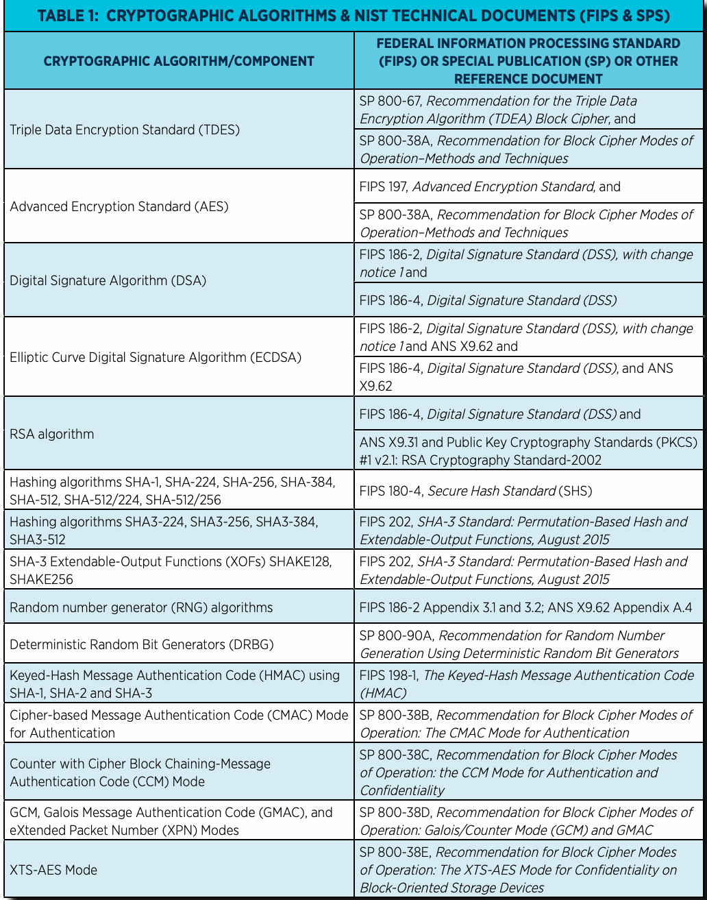
| 表1：暗号アルゴリズムとNIST技術文書（FIPSおよびSP） | |
| 暗号アルゴリズム／コンポーネント | 連邦情報処理標準（FIPS）、特別刊行物（SP）またはその他の参照文書 |
| トリプルデータ暗号化標準（TDES） | SP 800-67「トリプルデータ暗号化アルゴリズム（TDEA）ブロック暗号に関する勧告」、ならびに |
| SP 800-38A「ブロック暗号利用モードに関する勧告：方法と技法」 | |
| 高度暗号化標準（AES） | FIPS 197「高度暗号化標準」、ならびに |
| SP 800-38A「ブロック暗号利用モードに関する勧告：方法と技法」 | |
| デジタル署名アルゴリズム（DSA） | FIPS 186-2「デジタル署名標準（DSS）」、変更通知1を含む。ならびに |
| FIPS 186-4「デジタル署名標準（DSS）」 | |
| 楕円曲線デジタル署名アルゴリズム（ECDSA） | FIPS 186-2「デジタル署名標準（DSS）」、変更通知1およびANS X9.62。ならびに |
| FIPS 186-4「デジタル署名標準（DSS）」およびANS X9.62 | |
| RSAアルゴリズム | FIPS 186-4「デジタル署名標準（DSS）」、ならびに |
| ANS X9.31、および公開鍵暗号標準（PKCS）#1 v2.1「RSA暗号標準-2002」 | |
| ハッシュアルゴリズム SHA-1、SHA-224、SHA-256、SHA-384、SHA-512、SHA-512/224、SHA-512/256 | FIPS 180-4「セキュアハッシュ標準（SHS）」 |
| ハッシュアルゴリズム SHA3-224、SHA3-256、SHA3-384、SHA3-512 | FIPS 202「SHA-3標準：置換ベースのハッシュ関数および拡張可能出力関数」、2015年8月 |
| SHAKE128、SHAKE256を用いるSHA-3拡張可能出力関数（XOF） | FIPS 202「SHA-3標準：置換ベースのハッシュ関数および拡張可能出力関数」、2015年8月 |
| 乱数生成器（RNG）アルゴリズム | FIPS 186-2附属書3.1および3.2；ANS X9.62附属書A.4 |
| 決定論的乱数ビット生成器（DRBG） | SP 800-90A「決定論的乱数ビット生成器を用いた乱数生成に関する勧告」 |
| SHA-1、SHA-2およびSHA-3を用いる鍵付きハッシュメッセージ認証コード（HMAC） | FIPS 198-1「鍵付きハッシュメッセージ認証コード（HMAC）」 |
| 認証用暗号ベースメッセージ認証コード（CMAC）モード | SP 800-38B「ブロック暗号利用モードに関する勧告：認証用CMACモード」 |
| カウンタ付き暗号ブロック連鎖メッセージ認証コード（CCM）モード | SP 800-38C「ブロック暗号利用モードに関する勧告：認証および機密性のためのCCMモード」 |
| GCM、ガロアメッセージ認証コード（GMAC）、および拡張パケット番号（XPN）モード | SP 800-38D「ブロック暗号利用モードに関する勧告：ガロア／カウンターモード（GCM）およびGMAC」 |
| XTS-AESモード | SP 800-38E「ブロック暗号利用モードに関する勧告：ブロック指向ストレージデバイスの機密性保護のためのXTS-AESモード」 |
| TABLE 1 (CONT.): CRYPTOGRAPHIC ALGORITHMS & NIST TECHNICAL DOCUMENTS (FIPS & SPS) | |
| CRYPTOGRAPHIC ALGORITHM/COMPONENT | FEDERAL INFORMATION PROCESSING STANDARD (FIPS) OR SPECIAL PUBLICATION (SP) OR OTHER REFERENCE DOCUMENT |
| Key Wrapping | SP 800-38F, Recommendation for Block Cipher Modes of Operation: Methods for Key Wrapping |
| DH and MQV Key Agreement Schemes and Key Confirmation | SP 800-56A, Recommendation for Pair-Wise Key Establishment Schemes Using Discrete Logarithm Cryptography, dated March 2007 |
| All of SP 800-56A schemes without the Key Derivation Functions (KDF) | SP 800-56A, Key Derivation Functions for Key Agreement Schemes: All sections except Section 5.8 |
| SP 800-56A Section 5.7.1.2 ECC CDH function | SP 800-56A, Section 5.7.1.2 Elliptic Curve Cryptography Cofactor Diffie-Hellman (ECC CDH) Primitive Testing |
| Key-Based Key Derivation functions (KBKDF) | SP 800-108, Recommendation for Key Derivation using Pseudorandom Functions |
| Application-Specific Key Derivation functions (ASKDF) (includes the KDFs used by IKEv1, IKEv2, TLS, ANS X9.63- 2001, SSH, SRTP, SNMP, and TPM) | SP 800-135 (Revision 1) Recommendation for Existing Application-Specific key Derivation Functions |
| Component test – ECDSA Signature Generation of a hash value (This component test verifies the signing of a hash- sized input. It does not verify the hashing of the original message to be signed.) | FIPS 186-4, Digital Signature Standard (DSS), and ANS X9.62 |
| Component test – RSA PKCS#1 1.5 Signature Generation of encoded message (EM) (This component test verifies the signing of an EM. It does not verify the formatting of the EM.) | FIPS 186-4, Digital Signature Standard (DSS), and Public Key Cryptography Standards (PKCS) #1 v2.1: RSA Cryptography Standard-2002 |
| Component test – RSA PKCS#1 PSS Signature Generation of encoded message EM (This component test verifies the RSASP1 function.) | SP 800-56B, Recommendation for Pair-Wise Key Establishment Schemes Using Integer Factorization Cryptography, August 2009, Section 7.1.2 |
原本PDFの抜粋画像
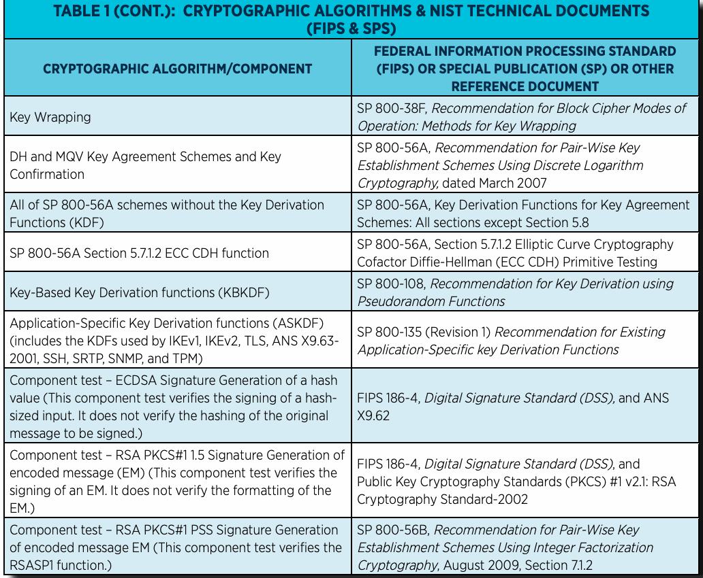
| 表1（続き）：暗号アルゴリズムとNIST技術文書（FIPSおよびSP） | |
| 暗号アルゴリズム／コンポーネント | 連邦情報処理標準（FIPS）、特別刊行物（SP）またはその他の参照文書 |
| 鍵ラップ | SP 800-38F「ブロック暗号利用モードに関する勧告：鍵ラップの方法」 |
| DHおよびMQV鍵合意方式と鍵確認 | SP 800-56A「ペアワイズ鍵確立方式の勧告：離散対数暗号」、2007年3月版 |
| 鍵導出関数（KDF）を除くSP 800-56Aの全方式 | SP 800-56A「鍵合意方式の鍵導出関数」：第5.8節を除く全節 |
| SP 800-56A第5.7.1.2節のECC CDH関数 | SP 800-56A第5.7.1.2節「楕円曲線暗号の余因子Diffie-Hellman（ECC CDH）プリミティブ試験」 |
| 鍵ベース鍵導出関数（KBKDF） | SP 800-108「疑似ランダム関数を用いた鍵導出に関する勧告」 |
| アプリケーション固有鍵導出関数（ASKDF）。IKEv1、IKEv2、TLS、ANS X9.63-2001、SSH、SRTP、SNMP、TPMで使用されるKDFを含む。 | SP 800-135改訂1「既存のアプリケーション固有鍵導出関数に関する勧告」 |
| 構成要素試験：ECDSAハッシュ値署名生成（この試験はハッシュサイズの入力への署名を検証する。署名対象となる元メッセージのハッシュ計算は検証しない。） | FIPS 186-4「デジタル署名標準（DSS）」およびANS X9.62 |
| 構成要素試験：RSA PKCS#1 1.5符号化メッセージ（EM）署名生成（この試験はEMへの署名を検証する。EMの形式化は検証しない。） | FIPS 186-4「デジタル署名標準（DSS）」および公開鍵暗号標準（PKCS）#1 v2.1「RSA暗号標準-2002」 |
| 構成要素試験：RSA PKCS#1 PSS符号化メッセージ（EM）署名生成（この試験はRSASP1関数を検証する。） | SP 800-56B「整数因数分解暗号に基づくペアワイズ鍵確立方式の勧告」、2009年8月、第7.1.2節 |
F O R M O R E I N F O R M AT I O N , S E E :
詳しくは以下を参照：
未レビュー訳S e c u r i t y C o n t e n t A u t o m a t i o n P r o t o c o l ( S C A P ) V a l i d a t i o n
セキュリティコンテンツ自動化プロトコル（SCAP）検証
未レビュー訳https://csrc.nist.gov/Projects/Cryptographic-Algorithm-
https://csrc.nist.gov/Projects/Cryptographic-Algorithm-
未レビュー訳P r o g r a m
プログラム
未レビュー訳Validation-Program
Validation-Program
未レビュー訳The SCAP Validation Program performs conformance
右列：SCAP検証プログラムは、製品がSCAPを正しく実装していることを確認する適合性試験を実施する。
未レビュー訳C O N TA C T S :
連絡先：
未レビュー訳testing to ensure that products correctly implement SCAP, as defined in SP 800-126 Revision 2, The Technical
SP 800-126改訂2「セキュリティコンテンツ自動化プロトコルの技術仕様」で定められたSCAPを対象とする。
未レビュー訳Mr. Harold Booth
Harold Booth氏
未レビュー訳Ms. Elaine Barker
Elaine Barker氏
未レビュー訳Specification for the Security Content Automation Protocol
「セキュリティコンテンツ自動化プロトコルの技術仕様」
未レビュー訳(301) 975-8441
(301) 975-8441
未レビュー訳(301) 975-2911
(301) 975-2911
未レビュー訳(SCAP): SCAP Version 1.2. Conformance testing is necessary
（SCAP）：SCAPバージョン1.2。適合性試験が必要なのは、
未レビュー訳harold.booth@nist.gov
harold.booth@nist.gov
未レビュー訳elaine.barker@nist.gov
elaine.barker@nist.gov
未レビュー訳because SCAP is a complex collection of eleven individual
SCAPが、
未レビュー訳(Editors’ Note: Sharon Keller worked on this program until specifications that work together to support various use her recent retirement.)
左列編集者注：Sharon Keller氏は最近退職するまで本プログラムに携わった。｜右列：相互に連携して多様な利用事例を支える11の個別仕様からなる
未レビュー訳cases. A single error in product implementation could result in undetected vulnerabilities or policy noncompliance within an organization’s networks. The test requirements for SCAP 1.2 are defined in NISTIR 7511, Security Content Automation Protocol (SCAP) Version 5 7
複雑な集合体だからである。製品実装の単一の誤りにより、組織のネットワークに脆弱性が検出されずに残ったり、ポリシーに違反したりする可能性がある。SCAP 1.2の試験要件はNISTIR 7511「セキュリティコンテンツ自動化プロトコル（SCAP）バージョン
未レビュー訳P RO GRA M AN D P ROJEC T ACH IEV EM EN TS | FY 2 01 6
原文のみ
THIS PUBLICATION IS AVAILABLE FREE OF CHARGE FROM: http://dx.doi.org/10.6028/NIST.SP.800-195
原文のみ
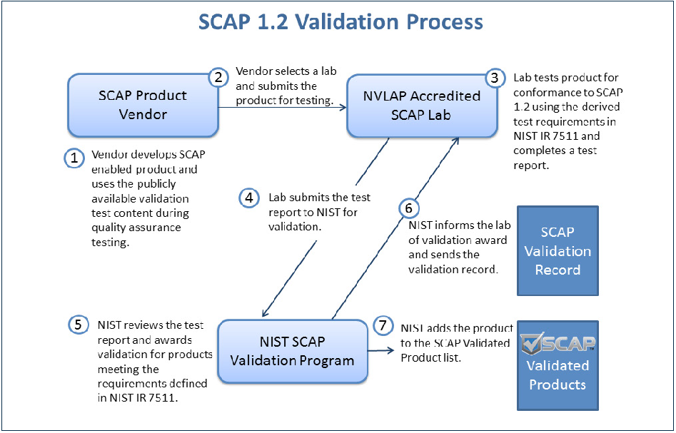
SCAP 1.2検証プロセスの工程図。1) ベンダーがSCAP対応製品を開発し、公開済みの検証テスト内容で品質保証試験を行う。2) ベンダーが試験所を選んで製品を提出。3) NVLAP認定SCAP試験所がNISTIR 7511に基づいて適合性を試験し、報告書を作成。4) 試験所がNISTに報告書を提出。5) NISTが審査し、要件適合製品を認定。6) NISTが試験所へ認定を通知し検証記録を送付。7) NISTが製品を「SCAP検証済み製品」一覧に追加する。図中の主体はSCAP製品ベンダー、NVLAP認定SCAP試験所、NIST SCAP検証プログラム。
Figure 21: SCAP 1.2 Validation Process
図21：SCAP 1.2検証プロセス
未レビュー訳1.2 Validation Program Test Requirements. In general, vendors Questions (FAQ), the SCAP validation-test content, and may opt for product validation for one or more SCAP tools for validating and processing SCAP data streams. The capabilities or operating systems. Currently, the program SCAP validation-test content should be used by vendors offers testing on Microsoft Windows and Red Hat Enterprise for quality assurance testing prior to entering formal SCAP Linux platforms. The validation process starts when a vendor testing with an NVLAP-accredited laboratory. The open-voluntarily submits an SCAP-enabled product to an NVLAP- source tools that are available for download may be used by accredited laboratory. Once the lab completes product SCAP content authors for testing the SCAP source content. testing, the lab submits a test report to the SCAP Validation The SCAP Content Validation Tool (SCAPVal) may be used to Program at NIST for review. NIST reviews the test report and determine if the content conforms to the SCAP specification. awards a validation if all requirements have been met. Once Open-source SCAP reference implementation tools, such as a validation is awarded, the SCAP Validation Record is sent the SCAP Reference Implementation Tool, may be used to to the lab, and the information about the newly validated process SCAP data streams. product is posted on the SCAP Validated Products web page.
左列：SCAP 1.2検証プログラムの試験要件。一般に、ベンダーは1つ以上のSCAP機能またはOSを対象として製品検証を選択できる。現在、Microsoft WindowsおよびRed Hat Enterprise Linux上で試験を提供している。検証はベンダーがSCAP対応製品をNVLAP認定試験所に自発的に提出するところから始まる。試験所は製品試験を完了後、報告書をNISTのSCAP検証プログラムに提出する。NISTは報告書を審査し、全要件を満たした場合に検証を認定する。認定後、SCAP検証記録が試験所に送られ、検証済み製品の情報がウェブページに掲載される。｜右列（リソース説明の続き）：SCAP検証テストコンテンツ、SCAPデータストリームの検証・処理ツールがある。ベンダーはNVLAP認定試験所で正式なSCAP試験に入る前に、品質保証試験で検証テストコンテンツを使用する。ダウンロード可能なオープンソースツールは、SCAPコンテンツ作成者によるソースコンテンツ試験に利用できる。SCAPコンテンツ検証ツール（SCAPVal）で、コンテンツがSCAP仕様に適合するか確認できる。SCAP参照実装ツールなどのオープンソースツールは、SCAPデータストリームの処理に利用できる。
未レビュー訳End users may use information on the SCAP Validation
右列：エンドユーザーはSCAP検証
未レビュー訳Figure 21: SCAP 1.2 Validation Process illustrates the SCAP 1.2
左列：図21「SCAP 1.2検証プロセス」は、SCAP 1.2の
未レビュー訳web page to learn about SCAP validation and find products
ウェブページで検証情報を確認し、製品を探せる。
未レビュー訳Validation Process.
検証プロセスを示す。
未レビュー訳that have been awarded validations. The validation records
認定済み製品を確認できる。検証記録には、
未レビュー訳All resources and information necessary for preparing that are posted on the SCAP Validated Products page identify products for SCAP 1.2 validation are published on the SCAP the product versions that were tested in the laboratory, Validation Program web pages (see the url below). The most along with details about each validation, such as the tested current NISTIR 7511 revision, as well as SCAP capabilities platforms, SCAP capabilities, the validation test suite version, and supported platforms, are available on the home and the lab that performed the product test. page (see http://scap.nist.gov/validation). The resources
左列：SCAP 1.2検証の準備に必要なリソースと情報は、SCAP検証プログラムのウェブページで公開される（下記URL参照）。最新のNISTIR 7511改訂版、SCAP機能、対応プラットフォームはホームページ（http://scap.nist.gov/validation）に掲載される。リソース｜右列：検証済み製品ページに掲載される記録は、試験所で試験した製品バージョンを特定し、試験済みプラットフォーム、SCAP機能、検証テストスイートのバージョン、試験実施試験所など各検証の詳細を示す。
未レビュー訳In FY 2016, several products successfully completed number of SCAP 1.2-validated products to fifteen. Most The interface specifications for the PIV Smart Card vendors of configuration scanning products are SCAP Application and PIV Middleware are found in a FIPS 201 validated, and vendors continually pursue validation for new companion document, namely, SP 800-73-4, Interfacesfor platforms, capabilities, and versions of SCAP. The current Personal Identity Verification. The conformance tests for list of SCAP 1.2-validated products may be found on the these specifications are detailed in SP 800-85A-4, PIVCard SCAP Validated Products list at https://nvd.nist.gov/scap/ Application and Middleware Interface Test Guidelines. To validated-tools.
右列（p.66末尾）：2016年度には複数の製品が｜左列（p.67冒頭）：PIVスマートカードアプリケーションおよびPIVミドルウェアのインターフェース仕様は、FIPS 201の関連文書SP 800-73-4「個人識別情報の検証のためのインターフェース」に記載されている。これらの仕様の適合性試験はSP 800-85A-4「PIVカードアプリケーションおよびミドルウェアのインターフェース試験指針」に詳述されている。
未レビュー訳implement these tests and to generate conformance test reports, CSD also developed and maintains an integrated
右列（p.66からの続き）：CSDは、これらの試験を実装し適合性試験報告書を生成するため、「PIVインターフェース試験ランナー」という統合ツールキットも開発・保守している。
未レビュー訳In FY 2017, NISTIR 7511 will be updated, adding
左列：2017年度には、NISTIR 7511を改訂し、
未レビュー訳toolkit called the “PIV Interface Test Runner,” which
右列：このツールは、
未レビュー訳requirements to test products for conformance to
製品がSCAP 1.3に適合するかを試験する要件を追加する。
未レビュー訳conducts tests on both PIV Smart Card Applications and PIV
PIVスマートカードアプリケーションとPIVミドルウェア製品の両方を試験する。
未レビュー訳SCAP 1.3. New capabilities include testing the ability of
新機能には、製品が最新のOpen Vulnerability and Assessment Language（OVAL）バージョンを処理し、
未レビュー訳Middleware products. This toolkit is provided to accredited
このツールキットは、認定済みの
未レビュー訳products to process the most recent Open Vulnerability
新しいソフトウェア識別（SWID）タグを読み取る能力の試験が含まれる。
未レビュー訳NPIVP test facilities for product testing and to the general
NPIVP試験施設に製品試験用として提供され、一般利用者も
未レビュー訳and Assessment Language (OVAL) versions and to read
SCAP検証プログラムのモジュール構造は、
未レビュー訳public as open source software.
オープンソースソフトウェアとして利用できる。
未レビュー訳Software Identification (SWID) tags. The modular structure of the SCAP Validation Program supports the addition The NPIVP team is also closely involved in activities of these new test requirements, as well as new platforms related to the revision of specifications of the PIV companion and capabilities, without needing to re-design the entire documents, such as SP 800-73, SP 800-76, Biometric program. Vendors benefit from the modular structure by SpecificationsforPersonalIdentityVerification, and SP 800-choosing the capabilities and platforms that satisfy the 78, Cryptographic Algorithms and Key Sizes for Personal needs of their customers.
左列：新しい試験要件、プラットフォーム、機能を追加してもプログラム全体を再設計する必要がない。ベンダーは、顧客のニーズに合う機能とプラットフォームを選択できる。｜右列：NPIVPチームは、SP 800-73、SP 800-76「個人識別情報の検証のための生体情報仕様」、SP 800-78「個人識別情報の検証のための暗号アルゴリズムと鍵長」など、PIV関連仕様書の改訂にも密接に関与している。
未レビュー訳IdentityVerification.Thisensuresthatspecificationrevisions inthePIVdocumentsare fully reflected in the conformance
右列：この取り組みにより、PIV文書の仕様改訂は適合性
未レビュー訳F O R M O R E I N F O R M AT I O N , S E E :
詳しくは以下を参照：
未レビュー訳test documents, SP 800-85A-4 and SP 800-85B (PIV Data Model Conformance Test Guidelines) as well as in
試験文書SP 800-85A-4およびSP 800-85B「PIVデータモデル適合性試験指針」にも反映され、
未レビュー訳http://scap.nist.gov/validation
http://scap.nist.gov/validation
未レビュー訳the “PIV Interface Test Runner” toolkit. The changes to PIV
「PIVインターフェース試験ランナー」ツールキットにも反映される。PIV
未レビュー訳C O N TA C T :
問い合わせ先：
未レビュー訳specifications in PIV companion documents necessitated that NPIVP make a major update to the conformance
関連文書の仕様改訂を受けて、NPIVPは適合性
未レビュー訳Ms. Melanie Cook
Melanie Cook氏
未レビュー訳test documents and consequently to the “PIV Interface
試験文書と「PIVインターフェース
未レビュー訳(301) 975-5259
(301) 975-5259
未レビュー訳Test Runner” toolkit in 2016. The updated Test Runner is
試験ランナー」ツールキットを2016年に大幅改訂した。更新版の試験ランナーは
未レビュー訳melanie.cook@nist.gov
melanie.cook@nist.gov
未レビュー訳available at http://csrc.nist.gov/groups/SNS/piv/npivp/sw-downloads.html. The NPIVP team also maintains the Validation List for
http://csrc.nist.gov/groups/SNS/piv/npivp/sw-downloads.html から入手できる。NPIVPチームは、次の製品の検証リストも管理する。
未レビュー訳I D E N T I T Y A N D A C C E S S
アイデンティティおよびアクセス
未レビュー訳PIV SmartCard Application and the PIV Middleware products
PIV適合実装であるPIVスマートカードアプリケーションおよびPIVミドルウェア製品。
未レビュー訳M A N A G E M E N T
管理
未レビュー訳that are PIV-conformant implementations. Updates to the PIV Smart Card Application validation list were necessary in 2016 to comply with the sunset date for some Random
PIVスマートカードアプリケーションの検証リストは、一部の乱数生成器（RNG）の使用終了日に対応するため、2016年に更新が必要となった。
未レビュー訳N I S T P e r s o n a l I d e n t i t y
NIST個人識別情報
未レビュー訳Number Generators (RNGs), as outlined in SP 800-131A,
乱数生成器（RNG）の使用終了日は、SP 800-131A「
未レビュー訳V e r i f i c a t i o n P r o g r a m ( N P I V P )
検証プログラム（NPIVP）
未レビュー訳RecommendationforTransitioningtheUseofCryptographic
暗号アルゴリズムの使用移行と鍵長に関する勧告」に示されている。
未レビュー訳The objective of the NIST Personal Identity AlgorithmsandKeyLengths. More information about the Verification Program (NPIVP) is to validate PIV components sunset can be found at http://csrc.nist.gov/groups/SNS/piv/ for conformance to the specifications in FIPS 201, Personal npivp/announcements.html. Identity Verification (PIV) of Federal Employees and
左列：NIST個人識別情報検証プログラム（NPIVP）の目的は、FIPS 201「連邦職員および請負業者の個人識別情報の検証（PIV）」に定める仕様に対するPIV構成要素の適合性を検証すること。｜右列：一部の乱数生成器の使用終了に関する詳細はhttps://csrc.nist.gov/groups/SNS/piv/npivp/announcements.htmlを参照。
未レビュー訳In FY 2017, the NPIVP team will continue to fine-tune its
右列：2017年度、NPIVPチームはツールキットの調整を続け、
未レビュー訳Contractors, and its companion documents (detailed below).
左列（続き）：および下記に詳述する関連文書に定める仕様。
未レビュー訳toolkit and perform acceptance testing for PIV Smart Card
PIVスマートカードアプリケーションとPIVミドルウェアの受入試験を行う。
未レビュー訳ThetwoPIVcomponentsthatcomeunderthescopeofNPIVP
左列：NPIVPの対象となるPIV構成要素は2つであり、
未レビュー訳Applications and PIV Middleware.
右列：それぞれPIVスマートカードアプリケーションとPIVミドルウェアである。
未レビュー訳are the PIV Smart Card Application and the PIV Middleware. NPIVP test facilities that perform conformance tests for F O R M O R E I N F O R M AT I O N , S E E : these two components are Cryptographic and Security
左列：これら2構成要素の適合性試験を行うNPIVP試験施設は、NVLAP認定の暗号・セキュリティ試験（CST）試験所である。｜右列見出し：詳しくは以下を参照：
未レビュー訳https://csrc.nist.gov/Projects/NIST-Personal-Identity-
https://csrc.nist.gov/Projects/NIST-Personal-Identity-
未レビュー訳Testing (CST) Laboratories accredited by the NVLAP. As of
2016年9月時点で、そのような施設は7か所あった（下記URL参照）。
未レビュー訳Verification-Program
Verification-Program
未レビュー訳September 2016, there were seven such facilities (see http:// csrc.nist.gov/groups/SNS/piv/npivp/testing_facilities.html).
http://csrc.nist.gov/groups/SNS/piv/npivp/testing_facilities.html
未レビュー訳C O N TA C T S :
右列：連絡先：
未レビュー訳Dr. Ramaswamy Chandramouli Ms. Hildegard Ferraiolo
右列：Ramaswamy Chandramouli博士 Hildegard Ferraiolo氏
未レビュー訳•Published SP 800-156, Representation of PIV Chain-
•右列の箇条書き：SP 800-156「PIV信頼チェーンのインポート／エクスポート用表現」を刊行。
未レビュー訳P e r s o n a l I d e n t i t y V e r i f i c a t i o n
左列見出し：個人識別情報
未レビュー訳of-Trust for Import and Export. This document
信頼チェーン記録を発行者間で交換する際の
未レビュー訳( P I V ) a n d F I P S 2 0 1 R e v i s i o n
（PIV）およびFIPS 201改訂に向けた
未レビュー訳provides the data representation of a chain-of-trust
データ表現を定める。本書は、
未レビュー訳E f f o r t s
取り組み
未レビュー訳record for the exchange of records between issuers. The exchanged record can be used by an agency to personalize a PIV Card for a transferred employee, or by a service provider to personalize a PIV Card on behalf of client federal agencies. The data representation is based on a common XML schema to facilitate interoperable information sharing and data exchange. The document also provides support for data integrity through digital signatures and confidentiality through encryption of chain-of-trust data in transit and at rest.
転勤する職員向けに機関がPIVカードを個人化する場合や、サービス提供者が連邦機関に代わって個人化する場合に、この記録を利用できる。データ表現は相互運用可能な情報共有と交換のための共通XMLスキーマに基づく。電子署名により完全性を確保し、転送中・保存中の信頼チェーンデータを暗号化して機密性を保護する。
未レビュー訳•Published a white paper, Best Practices for Privileged User PIV Authentication, in response to OMB’s 30-day Cybersecurity Sprint effort and subsequent OMB Memorandum M-16-04, Cybersecurity Strategy and Implementation Plan (CSIP) for the Federal Civilian Government, which
•右列の箇条書き：OMBの30日間サイバーセキュリティ・スプリントおよび後続のOMB覚書M-16-04「連邦政府民間部門のサイバーセキュリティ戦略・実施計画（CSIP）」を受け、白書「特権ユーザーのPIV認証に関するベストプラクティス」を刊行した。
未レビュー訳施設のドア脇に設置されたカードリーダーへ、人物がPIVカードをかざしている写真。PIVカードによる施設アクセス認証を示す。
Figure 22: Government Employees Use PIV Cards for
図22：政府職員がPIVカードを使用して
未レビュー訳requires federal agencies to use PIV credentials for
これにより、連邦機関には特権ユーザーの認証にPIV資格情報を使うことが求められる。
未レビュー訳Facility Access
施設に入る
未レビュー訳authenticating privileged users. The white paper outlines the risks of password-based single-factor
この白書は、パスワードに基づく単一要素認証のリスクを説明し、
未レビュー訳In response to Homeland Security Presidential
左列：国土安全保障大統領
未レビュー訳authentication, and describes best practices for the
特権ユーザー向け多要素PIV認証の
未レビュー訳Directive-12 (HSPD-12), Policy for a Common Identification
指令12（HSPD-12）への対応として、「連邦職員および請負業者の共通識別標準に関する方針」、
未レビュー訳use of multi-factor PIV-based user authentication
利用に関するベストプラクティスを示す。
未レビュー訳StandardforFederalEmployeesandContractors, FIPS 201,
FIPS 201「
未レビュー訳for privileged users.
特権ユーザーに適用する。
未レビュー訳Personal Identity Verification (PIV) of Federal Employees andContractors, was developed and was approved by the • Published SP 800-166, Derived PIV Application and
左列：FIPS 201「連邦職員および請負業者の個人識別情報の検証（PIV）」が策定され、商務長官によって｜右列の箇条書き：SP 800-166「派生PIVアプリケーションおよび
未レビュー訳Data Model Test Guidelines. SP 800-166 contains
右列：データモデル試験指針」を刊行。SP 800-166には、
未レビュー訳Secretary of Commerce in February 2005. HSPD-12 called for
左列：2005年2月に承認された。HSPD-12は
未レビュー訳the derived test requirements and test assertions
派生PIVアプリケーションを試験するための要件と試験判定項目が含まれ、
未レビュー訳the creation of a new identity credential for federal employees
連邦職員
未レビュー訳for testing the Derived PIV Application and
派生PIVアプリケーションおよび
未レビュー訳and contractors. FIPS 201 is the technical specification for
および請負業者向けの新しいID資格情報の作成を求めた。FIPS 201は、
未レビュー訳associated Derived PIV data objects residing on a
モバイル機器に保存された関連派生PIVデータオブジェクトを対象にする。
未レビュー訳both the PIV identity credential and the PIV system that
PIV本人確認資格情報と、それを
未レビュー訳mobile device. The tests verify the conformance of
これらの成果物が
未レビュー訳produces, manages, and uses the credential. Within NIST’s
生成・管理・使用するPIVシステム双方の技術仕様である。NISTの
未レビュー訳these artifacts to the technical specifications of SP
SP 800-157の技術仕様に適合するかを検証する。
未レビュー訳Information Technology Laboratory (ITL), this work is a
情報技術研究所（ITL）内では、この活動は
未レビュー訳800-157, Guidelines for Derived Personal Identity
SP 800-157「派生個人識別情報（PIV）資格情報に関する指針」。SP 800-157は、
未レビュー訳collaborative effort of the CSD and the Information Access
暗号部門（CSD）と情報アクセス部門
未レビュー訳Verification (PIV) Credentials. SP 800-157 specifies
標準準拠で安全、信頼性が高く相互運用可能な
未レビュー訳Division (IAD). CSD activities in FY 2016 directly supported
（IAD）の共同作業である。CSDは2016年度に
未レビュー訳standards-based, secure, reliable, interoperable
公開鍵基盤（PKI）に基づくID
未レビュー訳the latest revision of FIPS 201 (i.e., FIPS 201-2) by updating
FIPS 201の最新版（FIPS 201-2）を直接支援し、
未レビュー訳public-key infrastructure (PKI)-based identity
資格情報を規定する。SP 800-166は、派生PIVアプリケーションの
未レビュー訳the relevant publications associated with FIPS 201-2 and by
関連する刊行物を更新するとともに、
未レビュー訳credentials. SP 800-166 is targeted at vendors
ベンダー、派生PIV資格情報の
未レビュー訳developing several new publications. CSD performed the
左列：新しい刊行物を複数作成し、CSDは
未レビュー訳of Derived PIV Applications, issuers of Derived
発行者、および
未レビュー訳following activities during FY 2016 in support of HSPD-12:
2016年度にHSPD-12を支援する次の活動を実施した。
未レビュー訳PIV Credentials, and entities that will conduct
これらのアプリケーションと資格情報の適合性試験を実施する
未レビュー訳•Published Draft SP 800-116 Revision 1, A conformance tests on these applications and Recommendation for the Use of PIV Credentials credentials. in Physical Access Control Systems (PACS). This
•左列の箇条書き：SP 800-116改訂1案「物理アクセス制御システム（PACS）におけるPIV資格情報の使用に関する勧告」を刊行。｜右列続き：組織を対象とする。
未レビュー訳•Published SP 800-85A-4, PIVCardApplicationand
•右列の箇条書き：SP 800-85A-4「PIVカードアプリケーションおよび
未レビュー訳document provides best practice guidelines
本書は、
未レビュー訳MiddlewareInterfaceTestGuidelines(SP800-73-4
ミドルウェア・インターフェース試験指針（SP 800-73-4
未レビュー訳for integrating the PIV Card with the PACS that
連邦施設でPIVカード保有者を認証するPACSに、PIVカードを統合するための
未レビュー訳Compliance),to align the testing requirements with
適合性）」を刊行。FIPS 201-2、SP 800-73-4、SP 800-78-4に試験要件を合わせる。
未レビュー訳authenticate the PIV cardholders in federal facilities.
ベストプラクティス指針を示す。
未レビュー訳FIPS 2012, SP 800-73-4, and SP 800-78-4.
FIPS 201-2、SP 800-73-4、およびSP 800-78-4。
未レビュー訳The document recommends a risk-based approach for selecting appropriate PIV authentication mechanisms to manage physical access to Federal In FY 2017, CSD will continue to focus on updating Government facilities and assets.
左列：本書は、連邦政府施設・資産への物理アクセスを管理するため、適切なPIV認証方式を選択するリスクベースの手法を推奨する。｜右列：2017年度、CSDはFIPS 201-2に関連する刊行物の更新を続け、
未レビュー訳relevant publications associated with FIPS 201-2, including finalizing SP 800-116 Revision 1. CSD will also continue to
SP 800-116改訂1を最終化するなどの作業を行う。CSDは引き続き
未レビュー訳In addition, market forces have resulted in an inflexion
さらに、市場の動向によって転機が生じました。
未レビュー訳provide technical and strategic inputs to the PIV-related point in how departments and agencies authenticate users. initiatives.
各省庁における利用者認証の方法に関わる転機です。また、PIV関連の取り組みに技術面・戦略面から意見を提供します。
未レビュー訳NIST and the private-sector partners have observed that some public and private-sector identity assurance standards
NISTと民間部門のパートナーは、公共部門および民間部門の本人確認保証に関する一部の規格が
未レビュー訳F O R M O R E I N F O R M AT I O N , S E E :
詳細情報：
未レビュー訳have become outdated or have simply not been adopted. Specifically, SP 800-63 was originally written to address an
時代遅れになっている、または採用されていないことを確認しました。具体的には、SP 800-63は当初、
未レビュー訳http://csrc.nist.gov/groups/SNS/piv/
http://csrc.nist.gov/groups/SNS/piv/
未レビュー訳online world that is much different than today. Innovation
今日とは大きく異なるオンライン環境を対象としていました。技術革新により、
未レビュー訳C O N TA C T S :
連絡先：
未レビュー訳has offered new perspectives in how trusted identities can be established. Practical implementations of SP 800-63
信頼できるIDを確立する方法について、新たな視点がもたらされました。SP 800-63の実運用から得られた知見は、
未レビュー訳Ms. Hildegard Ferraiolo
ヒルデガード・フェライオロ氏
未レビュー訳Dr. David Cooper
デビッド・クーパー博士
未レビュー訳have informed us of areas of strengths, weaknesses, and
連邦機関や民間部門で活用されていない手法の長所と短所を明らかにしました。
未レビュー訳(301) 975-6972
(301) 975-6972
未レビュー訳(301) 975-3194
(301) 975-3194
未レビュー訳techniques not utilized by federal agencies or the private
連邦機関または民間部門で用いられていない手法です。
未レビュー訳hildegard.ferraiolo@nist.gov david.cooper@nist.gov
hildegard.ferraiolo@nist.gov david.cooper@nist.gov
未レビュー訳sector. Note that our online adversaries are targeting user names and passwords as the simplest point of entry to gain
オンライン上の攻撃者は、機密システムやデータへ不正アクセスする最も簡単な入口として、ユーザー名とパスワードを標的にしています。
未レビュー訳Dr. Ramaswamy Chandramouli
ラマスワミー・チャンドラモウリ博士
未レビュー訳unauthorized access to sensitive systems and data.
機密システムおよびデータへの不正アクセス。
未レビュー訳(301) 975-5013 mouli@nist.gov
(301) 975-5013 mouli@nist.gov
未レビュー訳
SP 800-63-3の文書構成図。親文書SP 800-63-3の下に、本人確認と登録を扱うSP 800-63A、認証とライフサイクル管理を扱うSP 800-63B、フェデレーションとアサーションを扱うSP 800-63Cが並ぶ。全体に共通する観点として、ユーザー体験、プライバシー要件と考慮事項、内容の簡素化と規範的な文言が示されている。
A u t h e n t i c a t i o n To support Office of Management and Budget (OMB) requirements, CSD developed SP 800-63, Electronic Authentication Guideline. OMB defines four levels of assurance that a federal agency must select, based on a risk assessment to determine the impact of an authentication failure. This guideline covers remote authentication of users (such as private individuals) interacting with government IT systems over the Internet. It defines technical requirements for each of the four levels of assurance in the areas of identity proofing, authenticators, credential binding, management processes, authentication protocols and federation. The
認証 行政管理予算局（OMB）の要件に対応するため、CSDは「電子認証ガイドライン」SP 800-63を策定しました。OMBは、認証失敗の影響をリスク評価に基づいて判断し、連邦機関が選択すべき保証レベルを4段階で定義しています。このガイドラインは、インターネット経由で政府のITシステムを利用する個人などの遠隔認証を対象とします。また、本人確認、認証器、認証情報の結び付け、管理プロセス、認証プロトコル、フェデレーションについて、4段階それぞれの技術要件を定めています。
未レビュー訳Figure 23: New SP 800-63-3 Structure
図23：新しいSP 800-63-3の構成
未レビュー訳newestrevisionunderwayin2016establishesthreeindividual assurance categories that can map into the original OMB levels of assurance. The categories are:
2016年に進められた最新版への改訂では、従来のOMB保証レベルに対応付けられる、個別の保証カテゴリを3つ設けました。カテゴリは次のとおりです。
未レビュー訳CSD, in collaboration with the ACD Trusted Identities
CSDは、ACD Trusted Identities Groupと協力して、
未レビュー訳•Identity Assurance Level - the robustness of the Group, hosted the two-day workshop “Applying identity proofing process and the binding between Measurement Science in the Identity Ecosystem” in January an authenticator and the records pertaining to a
•本人確認保証レベル（Identity Assurance Level）—本人確認プロセス、および認証器と特定個人に関する記録との結び付けの堅牢性。2016年1月に「IDエコシステムにおける測定科学の適用」をテーマとする2日間のワークショップを開催しました。
未レビュー訳2016.NIST gathered critical feedback from over 200 industry,
2016.NISTは、産業界から200人を超える関係者の重要な意見を集めました。
未レビュー訳specific individual;
特定個人に関するものです。
未レビュー訳academic, and public-sector stakeholders regarding new
学術界および公共部門の関係者も参加し、今後の
未レビュー訳•Authentication Assurance Level - the robustness directions that NIST should take in authentication guidance of the authentication process itself; and, and in methods for measuring the strength of relevant
•認証保証レベル（Authentication Assurance Level）—認証プロセス自体の堅牢性。認証ガイダンスでNISTが進めるべき方向性と、関連する技術およびプロセスの強度を測定する方法についても検討しました。
未レビュー訳•Federation Assurance Level - the robustness technologies and processes. The workshop culminated in of the assertion protocol utilized by a federation the release of NISTIR 8103, AdvancedIdentityWorkshopon to communicate authentication and attribute ApplyingMeasurementScienceintheIdentityEcosystem: SummaryandNextSteps. information (if applicable) to a relying party. Since the initial release of SP 800-63, CSD has released In May 2016, ITL released a public preview draft of NIST
•フェデレーション保証レベル（Federation Assurance Level）—フェデレーションが認証情報および属性情報（該当する場合）を依拠当事者へ伝達する際に用いるアサーション・プロトコルの堅牢性。ワークショップの成果として、NISTIR 8103「IDエコシステムにおける測定科学の適用：ワークショップ概要と次の段階」を公開しました。SP 800-63の初版以降、CSDは
未レビュー訳two revisions to address changes in modern technology and SP 800-63-3, with an updated name, DigitalAuthentication lessons learned from practical implementations by federal Guideline.Thisbodyofworkrepresentsasignificantdeparture
連邦機関による実装から得た教訓と現代技術の変化に対応するため、2回の改訂を行いました。2016年5月、ITLは公開プレビュー草案「SP 800-63-3 デジタル認証ガイドライン」を公開しました。この成果は、従来版から大きく方向を転換するものです。
未レビュー訳from prior versions of the special publication. The guideline
このガイドラインは、以前の特別刊行物版から大きく変わっています。ガイドラインは
未レビュー訳departments and agencies.
連邦機関および省庁による実運用から得た教訓です。
未レビュー訳has been divided into a family of standalone documents that focus on outcomes and innovation where possible, rather than prescriptive processes and technologies (see Figure 23). A significant number of requirements were updated 6 1
可能な場合は規範的な手順や技術よりも成果と技術革新に焦点を当てる、独立した文書群に分割されました（図23参照）。多くの要件が更新され、
未レビュー訳P RO GRA M AN D P ROJEC T ACH IEV EM EN TS | FY 2 01 6
原文のみ
or removed, with many new requirements introduced, C O N TA C T : including increased allowances for the use of biometrics in authentication systems. SP 800-63-3, while required for Mr. Paul Grassi federal agencies, suggests requirements for solutions often (703) 786-8275 provided by the private sector; hence, many updates were paul.grassi@nist.gov garnered from innovation in the market, workshop feedback, and a dialog with all sectors while the guideline was open
原文更新後、再確認待ち
A c c e s s C o n t r o l a n d P r i v i l e g e
アクセス制御と特権
未レビュー訳for comment. CSD and ACD also piloted a new approach
意見募集に向けて公開しました。CSDとACDは、新たな方法も試行しました。
未レビュー訳M a n a g e m e n t
管理
未レビュー訳to managing stakeholder feedback and document updates. During the development of the SP 800-63 revision, drafts With the advance of current computing technologies of the documents were made available on GitHub, an online and the diverse environments in which they are used, version management and collaboration tool that allowed us access control issues, such as situational awareness, trust to openly discuss comments in real time and accept edits management, the preservation of privacy, and privilege-directly into the document from ITL stakeholders. This was management systems, are becoming increasingly complex. the first time that an 800 series draft Special Publication was Practical and conceptual guidance for these topics is needed. published on GitHub; the use of GitHub proved successful In FY 2016, the following activities were accomplished and will continue to be used to manage SP 800-63-3 as the for this project: document transitions from public preview to final version.
関係者からの意見や文書更新を管理する方法です。SP 800-63の改訂では、文書の草案をGitHub上で公開しました。GitHubはオンラインのバージョン管理・共同作業ツールであり、ITLの関係者がコメントをリアルタイムに議論し、文書へ直接修正を反映できました。800シリーズの特別刊行物の草案をGitHubで公開したのは初めてでした。この試行は成功し、SP 800-63-3が公開プレビューから最終版へ移行する間の文書管理にもGitHubを継続利用します。 現在のコンピューティング技術の進歩と多様な利用環境に伴い、状況認識、信頼管理、プライバシー保護、特権管理システムなどのアクセス制御課題はますます複雑になっています。これらのテーマには実践的・概念的な指針が必要です。2016年度にこのプロジェクトで実施した活動は次のとおりです。
未レビュー訳•Researched the requirement and capabilities
•要件および機能を調査し、
未レビュー訳In FY 2017, CSD will publish the final SP 800-63-3
2017年度にCSDはSP 800-63-3の最終版を公開し、各機関が安全でプライバシーに配慮し、
未レビュー訳for Access Control (AC) policy composing and
アクセス制御（AC）ポリシーの作成と
未レビュー訳revision, giving agencies an increased set of secure, privacy-
プライバシーを強化した
未レビュー訳verification technology;
検証技術を対象としました。
未レビュー訳enhancing, and user-friendly options to deliver safe digital
使いやすい選択肢を増やし、安全なデジタル
未レビュー訳•Studied attribute considerations for access
•アクセス制御の仕組みへの属性の適用を調査し、
未レビュー訳services to their constituents. The final version may also serve
サービスを利用者に提供できるようにします。最終版は、
未レビュー訳mechanism implementation; the results are
の実装を調査し、その結果を
未レビュー訳as a foundation for future authentication shared services
政府が提供する将来の認証共有サービスの基盤となる可能性もあります。これには、
未レビュー訳presented in the internal draft of a NIST SP,
NIST特別刊行物の内部草案としてまとめられ、
未レビュー訳that the government will offer, such as those directed by the
政府が提供するもの、たとえば
未レビュー訳Attribute Consideration for Access Control Systems
「アクセス制御システムにおける属性の考慮事項」
未レビュー訳Cybersecurity National Action Plan (CNAP).
サイバーセキュリティ国家行動計画（CNAP）で指定されたサービスなどが挙げられます。
未レビュー訳(no publication number has been assigned to this
この内部草案には刊行物番号がまだ付与されておらず、
未レビュー訳Work on 800-63-3 will continue after the document
SP 800-63-3の作業は、文書が最終版になった後も継続します。
未レビュー訳internal draft SP), which is scheduled to be released
この草案は2017年度中に公開される予定です）。
未レビュー訳becomes final. ITL will work on identifying ways to measure
ITLは、認証システムの測定方法を特定し、
未レビュー訳during FY 2017);
2017年度中に公開される予定です）。
未レビュー訳authentication systems in a more systematic and scientific
より体系的かつ科学的に測定できるようにします。
未レビュー訳•Researched the AC requirements and functions for
•分散システムのアクセス制御（AC）要件と機能を調査しました。対象には、
未レビュー訳way, allowing NIST to specify additional metrics that would
これによりNISTは、
未レビュー訳distributed systems, including Big Data, Cloud, IoT,
ビッグデータ、クラウド、IoT、
未レビュー訳be required in future authentication systems, based on risk.
将来の認証システムでリスクに応じて必要となる追加指標を定められます。
未レビュー訳and the Smart Grid; and
スマートグリッドなどがあります。また、
未レビュー訳Work on biometric authentication will capitalize on the opportunity to enhance the authentication performance and • Published NIST SP 800-178, A Comparison of
生体認証の研究では、認証性能と
未レビュー訳Attribute Based Access Control (ABAC) Standards
データサービス向けの属性ベースアクセス制御（ABAC）規格
未レビュー訳security of a range of modalities (e.g., fingerprint, voice, or
セキュリティの向上を目指し、さまざまな方式（指紋、音声、
未レビュー訳for Data Services, and worked on two internal draft
の比較」を刊行し、さらに内部草案のNIST特別刊行物2件にも取り組みました。
未レビュー訳iris recognition). NIST will explore the inclusion of additional
虹彩認識など）を対象にします。NISTはさらに、
未レビュー訳NIST SPs: 1) Draft SP 800-192: Verification and Test
SPの草案：1）SP 800-192「アクセス制御ポリシー／モデルの検証およびテスト
未レビュー訳industry best practices into future revisions of SP 800-63-3.
SP 800-63-3の今後の改訂に業界のベストプラクティスを取り入れる方法を検討します。
未レビュー訳Methods for Access Control Polices/Models, and
方法」、および
未レビュー訳NIST will also research methods to ensure that practices align
NISTは、実務を
未レビュー訳2) Draft SP (no number yet assigned), Attribute
2）番号未定のSP草案「アクセス制御システムにおける属性の
未レビュー訳with the security and privacy demands of digital services
政府が提供するデジタルサービスに求められるセキュリティおよびプライバシーの要請に適合させる方法も調査します。
未レビュー訳Consideration for Access Control Systems; both
考慮事項」。
未レビュー訳offered by government. In addition to the topics described
前述のテーマに加え、
未レビュー訳SPs are related to access control and privilege
両SP草案は、アクセス制御と特権
未レビュー訳above, the team will research approaches that harmonize
米国政府の要件を国際的に調和させる方法を研究し、
未レビュー訳management.
管理に関連しています。
未レビュー訳U.S. Government requirements on an international scale, promoting easy-to-implement cross-border trusted identity
米国政府の要件を国際的な規模で調和させ、実装しやすい国境を越えた信頼できるアイデンティティ
未レビュー訳In FY 2017, CSD will continue the above research. CSD
2017年度もCSDは上述の研究を継続します。CSDは、
未レビュー訳solutions. This helps avoid challenges that result from
解決策を進めます。これにより、
未レビュー訳expects that this project will:
このプロジェクトで次の成果を目指します。
未レビュー訳disparate, nationally unique authentication guidelines that
各国独自の異なる認証ガイドラインによって生じる課題を避けられます。そうしたガイドラインは、
未レビュー訳•Promote (or accelerate) the adoption of community
•コミュニティ・コンピューティングの導入を促進（または加速）する。
未レビュー訳may disrupt international interoperability.
国際的な相互運用性を損なうおそれがあります。
未レビュー訳computing that utilizes the power of shared
これは共有された計算
未レビュー訳F O R M O R E I N F O R M AT I O N , S E E :
詳細情報：
未レビュー訳resources and common trust-management schemes;
された資源と共通の信頼管理方式を活用します。
未レビュー訳http://csrc.nist.gov/groups/ST/eauthentication/
http://csrc.nist.gov/groups/ST/eauthentication/
未レビュー訳•Provide guidance for implementing access control
•アクセス制御の実装に関する指針を提供する。
未レビュー訳https://pages.nist.gov/800-63-3
https://pages.nist.gov/800-63-3
未レビュー訳models and mechanisms for standalone or network systems;
スタンドアロンシステムまたはネットワークシステム向けのモデルと仕組みを示す。
未レビュー訳•Increase the security and safety of static misconfigurations, or flaws in software implementation can (connected) distributed systems by applying the result in serious vulnerabilities. The specification of access testing and verification tool for the AC policies; control policies is often a challenging problem. Often, a system’s privacy and security are compromised due to
•静的（接続型）分散システムの安全性を高めるため、アクセス制御（AC）ポリシーの試験・検証ツールを適用する。 設定ミスやソフトウェア実装の欠陥は、深刻な脆弱性を引き起こす可能性があります。アクセス制御ポリシーの仕様策定は難しいことが多く、システムのプライバシーとセキュリティが損なわれるのは
未レビュー訳•Assist system architects, security administrators, the misconfiguration of access control policies, instead of and security managers whose expertise is related the failure of cryptographic primitives or protocols. This to access control or privilege policy in managing problem becomes increasingly severe as software systems their systems and in learning the limitations and become more and more complex, and are deployed to practical approaches for their applications; and manage a large amount of sensitive information and
•システム設計者、セキュリティ管理者、セキュリティマネージャが、システム管理に関わるアクセス制御や特権ポリシーの制約を理解し、実務での適用方法を学べるよう支援する。 アクセス制御ポリシーの設定ミスが原因であり、暗号プリミティブまたはプロトコルの障害によるものではありません。この問題は、ソフトウェアシステムがますます複雑になり、大量の機密情報や
未レビュー訳•Provide accurate and efficient fault detection and resources that are organized into sophisticated structures. correction technology for implementing AC rules Identifying discrepancies between policy specifications and and policies. their properties (their intended function) is crucial because Figure 24 (below) illustrates the application of access the correct implementation and enforcement of policies
•アクセス制御ルールおよびポリシーを実装するための、正確かつ効率的な障害検出・修正技術を提供する。 これらの資源は高度に構造化されています。ポリシー仕様とその性質（意図された機能）との不一致を特定することは重要です。なぜなら、アプリケーションによるポリシーの正しい実装と施行が
未レビュー訳control and privilege management within and among by applications is based on the premise that the policy
図24（下図）は、 アプリケーションによるポリシーの実装と施行は、ポリシー仕様が
未レビュー訳specifications are correct. As a result, policy specifications
正しいことを前提とします。したがって、ポリシー仕様は
未レビュー訳organizations.
組織内および組織間におけるアクセス制御と特権管理の適用を示しています。
未レビュー訳must undergo rigorous verification and validation through
厳格な検証と妥当性確認を
未レビュー訳C O N TA C T S :
連絡先：
未レビュー訳systematic testing to ensure that the policy specifications truly encapsulate the desires of the policy authors.
体系的な試験を通じて受け、ポリシー仕様が作成者の意図を正確に表していることを確認する必要があります。
未レビュー訳Dr. Vincent Hu
ビンセント・フー博士
未レビュー訳Mr. David Ferraiolo
デビッド・フェライオロ氏
未レビュー訳(301) 975-4975
(301) 975-4975
未レビュー訳(301) 975-3046
(301) 975-3046
未レビュー訳To formally and precisely capture the security properties
アクセス制御（AC）が満たすべきセキュリティ特性を形式的かつ厳密に捉えるため、
未レビュー訳vhu@nist.gov
vhu@nist.gov
未レビュー訳david.ferraiolo@nist.gov
david.ferraiolo@nist.gov
未レビュー訳that AC should adhere to, access control models are usually written to bridge the rather wide gap in abstraction between
ACモデルは、抽象度に大きな隔たりがあるポリシーと仕組みの橋渡しをするために通常記述されます。
未レビュー訳Mr. Rick Kuhn
リック・クーン氏
未レビュー訳policy and mechanism. Thus, an access control model
したがって、アクセス制御モデルは、
未レビュー訳(301) 975-3337
(301) 975-3337
未レビュー訳provides unambiguous and precise expression as well as
曖昧さのない厳密な表現を提供するとともに、
未レビュー訳kuhn@nist.gov
kuhn@nist.gov
未レビュー訳a reference for the design and implementation of security requirements. Techniques are required for verifying whether
セキュリティ要件の設計と実装の参照になります。また、アクセス制御モデルがポリシー内で正しく表現されているか、各性質が
未レビュー訳C o n f o r m a n c e V e r i f i c a t i o n f o r
アクセス制御ポリシーの
未レビュー訳an access control model is correctly expressed in the access control policies, and whether the properties are satisfied in
満たされているかを検証する手法が必要です。
未レビュー訳A c c e s s C o n t r o l P o l i c i e s
適合性検証
未レビュー訳the model.
モデル内で満たされているかを確認します。
未レビュー訳Access control (AC) systems are among the most critical network security components. Faulty policies,
アクセス制御（AC）システムは、ネットワークセキュリティにおける最も重要な構成要素の一つです。ポリシーに不備があると、
未レビュー訳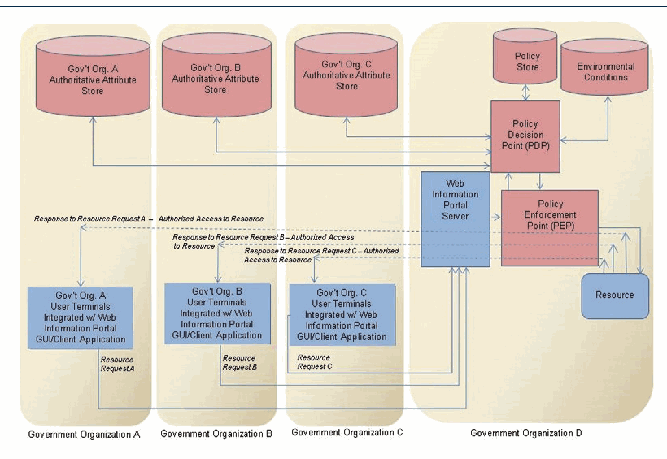
アクセス制御と特権管理の構成図。政府組織A、B、Cには、それぞれ権威属性ストアと、Web情報ポータルを備えたユーザー端末がある。各組織からの資源要求は、組織Dの方針決定点（PDP）へ送られ、ポリシーストアと環境条件を参照して判断される。Web情報ポータルサーバーを介して方針実施点（PEP）が決定を適用し、資源への許可・拒否応答を返す。図中には各組織と資源の要求・応答経路が矢印で示されている。
Most research on AC model or policy verification rather than checking by retracing the interrelations between techniques is focused on one particular model, and almost rules after the policy is completed. all of the research is in applied methods, which require
アクセス制御（AC）モデルまたはポリシーの検証に関する研究の多くは、個別のモデルに焦点を当てています。研究のほとんどは応用手法に関するもので、 ポリシーの完成後にルール間の相互関係をたどって調べる方法ではなく、
未レビュー訳In FY 2016, CSD accomplished the following:
2016年度にCSDは、次の活動を行いました。
未レビュー訳the completed AC policies as the input for the verification
完成したACポリシーを検証または試験プロセスへの入力として利用し、
未レビュー訳•Funded and supported two Small Business
•中小企業向け
未レビュー訳or test processes to generate fault reports. Even though
障害報告を生成します。正しい検証が行われた場合でも、
未レビュー訳Innovation Research (SBIR) Phase II projects for
イノベーション研究（SBIR）第II段階のプロジェクト2件に資金を提供し、
未レビュー訳correct verification is achieved, and counter-examples may
障害が見つかれば反例が生成されることがありますが、
未レビュー訳access control tool developments;
アクセス制御ツールの開発を支援しました。
未レビュー訳be generated when faults are found, those methods provide no information about the source of faults that might allow • Enhanced the usability and fixed bugs of the conflicts in privilege assignment, the leakage of privileges, or
これらの手法では、障害の発生源に関する情報が得られません。その情報があれば、権限割当の競合や特権の漏えい、または 使いやすさを高め、バグを修正し、
未レビュー訳ACRLCS (the Access Control Rule Logic Circuit
アクセス制御ルール論理回路シミュレーションシステム（ACRLCS）の
未レビュー訳a conflict-of-interest in permissions. The difficulty in finding
権限の付与に関する利益相反です。障害の発生源を見つけることは難しく、
未レビュー訳Simulation System) to provide more capability for
機能を拡充して
未レビュー訳the source of faults is increased, especially when the AC
特に、AC
未レビュー訳policy fault detection;
ポリシー障害の検出能力を高めました。
未レビュー訳rules are intricately covering duplicated variables to a degree
ルール内で重複する変数が複雑に絡み合う場合には、
未レビュー訳•Published a conference paper: General Methods for
•会議論文「アクセス制御ポリシー検証の一般的手法
未レビュー訳of complexity. The complexity is because a fault might not
複雑性が高まります。障害は、
未レビュー訳Access Control Policy Verification, and an article:
」を発表し、さらに論文「
未レビュー訳be caused by one particular access rule. Thus, it requires
一つのアクセス制御ルールだけが原因とは限りません。そのため、
未レビュー訳Access Control Policy Verification for policy test
ポリシーのテストケース生成に向けたアクセス制御ポリシー検証
未レビュー訳manually analyzing each rule in the policy to find the correct
ポリシー内の各ルールを手作業で分析し、障害を修正する適切な
未レビュー訳case generation;
」を発表しました。
未レビュー訳solution for correcting the fault.
解決策を見つける必要があります。
未レビュー訳•Worked with industrial and academic organizations
•産業界および学術機関と協力し、
未レビュー訳To address the issue, CSD developed the Access Control
この課題に対応するため、CSDはアクセス制御
未レビュー訳in exploring new capabilities that helped to
ACツール（ACPTおよびACRLCS）の使いやすさを
未レビュー訳Property Tool (ACPT), shown in Figure 25, which allows a user
プロパティツール（ACPT）を開発しました（図25参照）。このツールでは利用者が
未レビュー訳improve the usability of the AC tools (ACPT and
向上させる新機能を検討し、
未レビュー訳to compose, verify, test, and generate access control policies.
アクセス制御ポリシーを作成、検証、試験、生成できます。
未レビュー訳ACRLCS), resulting in additional usage; ACPT
その結果、利用がさらに広がりました。ACPTは
未レビュー訳CSD also researched the AC Rule Logic Circuit Simulation
CSDは、アクセス制御ルール論理回路シミュレーション（ACRLCS）方式も調査しました。この方式では、
未レビュー訳was downloaded by 405 users and organizations;
その結果、ツールの利用がさらに広がり、ACPTは405人の利用者または組織によってダウンロードされました。
未レビュー訳(ACRLCS) technique, which enables the AC authors to detect
ACRLCS方式により、アクセス制御の作成者は
未レビュー訳and
また、
未レビュー訳a fault when the fault-causing AC rule is added to the policy,
障害の原因となるACルールがポリシーに追加された時点で、その障害を検出できます。
未レビュー訳•Enhanced the capability of ACPT by adding an
•ACPTの機能を強化し、
未レビュー訳so the fix can be implemented in real time before adding
検出作業をさらに難しくする別のルールを追加する前に、
未レビュー訳object inheritance capability for basic access
基本的なアクセス制御モデルにオブジェクト継承
未レビュー訳other rules that further complicate the detecting effort,
修正をリアルタイムで実施できます。
未レビュー訳control models.
機能を追加しました。
未レビュー訳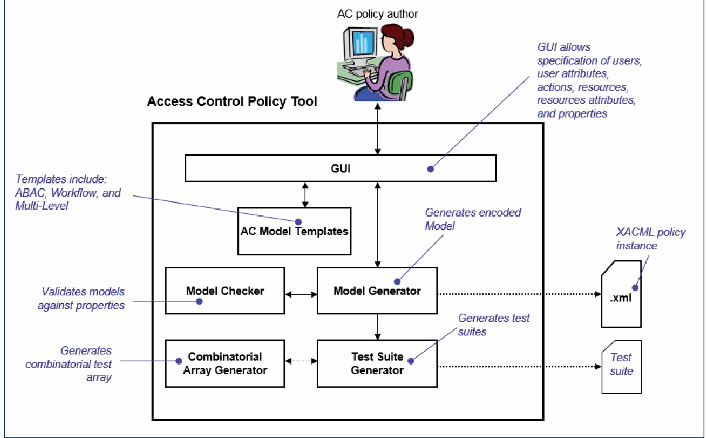
アクセス制御プロパティツール（ACPT）の構成図。アクセス制御ポリシー作成者がGUIを使い、ユーザー、ユーザー属性、操作、資源、資源属性、性質を指定する。ツール内では、ABAC、ワークフロー、マルチレベル方式のモデルテンプレート、モデルチェッカー、モデル生成器、組合せテスト配列生成器、テストスイート生成器が連携する。モデルを性質に照らして検証し、符号化モデル、XACMLポリシーインスタンス（.xml）、テストスイートを出力する。
In FY 2017, CSD is planning to conduct further research A t t r i b u t e - B a s e d A c c e s s C o n t r o l on efficient testing technology, new capabilities, and
2017年度にCSDは、効率的な試験技術と新機能をさらに研究し、 属性ベースアクセス制御
未レビュー訳Attribute-Based Access Control (ABAC) is a logical
属性ベースアクセス制御（ABAC）は論理的なアクセス制御方式であり、
未レビュー訳enhance the performance of the ACPT and ACRLCS.
ACPTとACRLCSの性能向上を計画しています。
未レビュー訳access control methodology where an authorization to
一連の操作の実行を認可するかどうかは、
未レビュー訳Figure 25 (See previous page) shows the system perform a set of operations is determined by evaluating the architecture of the NIST Access Control Policy Tool (ACPT), attributes associated with the subject, object, requested which allows access control policy authors to compose, operations, and, in some cases, environmental conditions verify, and test access control policy implementation.
図25（前ページ参照）は、NISTのアクセス制御ポリシーツール（ACPT）のシステム構成を示しています。ACPTを使うと、アクセス制御ポリシーの作成者はポリシーの実装を作成、検証、試験できます。 主体、対象、要求された操作に関連付けられた属性と、場合によっては環境条件を評価し、認可を判断します。
未レビュー訳against policy, rules, or relationships that describe the allowable operations for a given set of attributes. For
これらの属性を、許可される操作を定めるポリシー、ルール、関係と照合します。たとえば、
未レビュー訳This project is expected to:
このプロジェクトでは、次の実現を目指します。
未レビュー訳example, access to a database could be restricted to users
データベースへのアクセスを、特定の属性を持つ利用者に限定できます。
未レビュー訳•Provide a generic paradigm and framework of with particular attributes, such as membership in a group access control model/property conformance (e.g., employees) and other conditions (e.g., part of the testing; Human Resource Department). ABAC represents a point on
•アクセス制御モデル／性質の適合性を試験するための汎用的なパラダイムと枠組みを提供する。 たとえば、従業員グループへの所属などの属性や、
未レビュー訳•Provide templates for specifying access control the spectrum of logical access control, from simple access rules in popular access control models, such as control lists to more capable role-based access (RBAC), and the Attribute Based, Multilevel, and Workflow finally, to a highly flexible method for providing access based models; on the evaluation of attributes.
•一般的なアクセス制御モデルでルールを指定するためのテンプレートを提供する。対象モデルには、属性ベース、マルチレベル、ワークフローベースが含まれる。 ABACは、単純なアクセス制御リストから、より高機能なロールベースアクセス制御（RBAC）を経て、属性評価に基づきアクセスを許可する柔軟な方式に至る、論理的アクセス制御の連続体上に位置します。
未レビュー訳•Provide tools or services for checking the security CSD is conducting research that provides information and safety of an access control implementation, for using ABAC to improve information sharing within policy combination, and eXtensible Access Control and among organizations based on the planning, design, Markup Language (XACML) policy generation; implementation, and operational considerations. The research also includes technologies such as attribute
•アクセス制御の実装、ポリシーの組合せ、XACMLポリシー生成のセキュリティと安全性を確認するツールまたはサービスを提供する。 CSDは、ABACを利用した組織内外の情報共有改善について研究しており、
未レビュー訳•Promote (or accelerate) the adoption of assurance, attribute engineering/management, identity combinatorial testing for large-system testing system integration, attribute federation, situational (such as an access control system); awareness (real-time or contextual) mechanisms, policy
•大規模システム（アクセス制御システムなど）の組合せ試験の導入を促進する。 研究対象には属性保証、属性設計・管理、IDシステム統合、属性フェデレーション、状況認識（リアルタイムまたは文脈依存）機構、
未レビュー訳•Promote the concept of detecting AC policy faults management, and natural-language policy translation in real-time AC rule composing; to digital policy. Figure 26 (See next page) illustrates the
•ACルールの作成時にポリシー障害をリアルタイムで検出する考え方を推進する。 ポリシー管理や、自然言語のポリシーをデジタルポリシーへ変換する技術も含まれます。図26（次ページ）は
未レビュー訳•Provide an innovative method for specifying interaction of many of these components. The goal of this AC rules formed by Boolean logic expressions research is to improve information sharing, while maintaining operated on variables of AC rules; control of that information for federal agencies.
•ブール論理式で表し、ACルールの変数に適用する新しい方法を提供する。 これらの構成要素の多くがどのように連携するかを示します。この研究の目標は、
未レビュー訳•Provide techniques for preventing faults in In FY 2016, the project team: enforcing fundamental security properties,
•基本的なセキュリティ特性を適用する際の障害を防ぐ技術を提供する。 2016年度にプロジェクトチームは、
未レビュー訳•Worked on the book Attribute-Based Access
•書籍「属性ベースアクセス制御—
未レビュー訳including Cyclic Inheritance, Privilege Escalation,
循環継承、特権昇格、
未レビュー訳Control – Models & Deployments; publishing is
モデルと展開」に取り組み、刊行は
未レビュー訳and Separation of Duty; and
職務分離などが含まれる。また、
未レビュー訳planned for March 2017 by Artech House;
Artech Houseから2017年3月に予定されています。
未レビュー訳•Provide new methods for composing standard
•標準的な必須アクセス制御モデルを組み合わせる新しい方法を提供する。例えば、属性ベース
未レビュー訳•Published NIST Special Publication 800-178, A
•NIST特別刊行物SP 800-178「
未レビュー訳mandatory AC models, such as Attribute-Based
アクセス制御（ABAC）とマルチレベルセキュリティ
未レビュー訳Comparison of Attribute Based Access Control
データサービス向け属性ベースアクセス制御（ABAC）規格の比較
未レビュー訳Access Control (ABAC) and Multi-Level Security
（MLS）、および基本的なセキュリティ
未レビュー訳(ABAC) Standards for Data Service Applications
」を刊行し、
未レビュー訳(MLS) as well as some fundamental security
特性など
未レビュー訳document; and
さらに、
未レビュー訳properties.
を対象に含める。
未レビュー訳•Continued research, in partnership with the
•次の機関と連携して研究を継続しました。
未レビュー訳F O R M O R E I N F O R M AT I O N , S E E :
詳細情報：
未レビュー訳Trusted Identities Group (TIG) and the National Cybersecurity Center of Excellence (NCCoE),
Trusted Identities Group（TIG）および全米サイバーセキュリティ卓越センター（NCCoE）と連携し、
未レビュー訳http://csrc.nist.gov/groups/SNS/acpt/
http://csrc.nist.gov/groups/SNS/acpt/
未レビュー訳on the attribute assurance of ABAC.
ABACの属性保証に関する研究を継続しました。
未レビュー訳C O N TA C T S :
連絡先：
未レビュー訳In FY 2017, CSD will continue the research of ABAC formal models, as well as details and extended topics of
2017年度、CSDはABACの形式モデルに加え、詳細な関連テーマの研究を継続します。
未レビュー訳Dr. Vincent Hu
ビンセント・フー博士
未レビュー訳Mr. Rick Kuhn
リック・クーン氏
未レビュー訳ABAC capabilities, such as attribute considerations, ABAC
ABACの機能（属性に関する考慮事項やABACの
未レビュー訳(301) 975-4975
(301) 975-4975
未レビュー訳(301) 975-3337
(301) 975-3337
未レビュー訳implementation examples, ABAC mechanisms, and ABAC
実装例、ABACの仕組みおよびABACの
未レビュー訳vhu@nist.gov
vhu@nist.gov
未レビュー訳kuhn@nist.gov
kuhn@nist.gov
未レビュー訳standards. The ABAC project will pursue the following objectives:
規格などが含まれます。ABACプロジェクトでは、次の目標に取り組みます。
未レビュー訳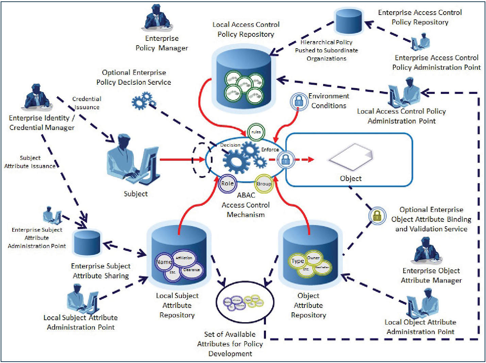
属性ベースアクセス制御（ABAC）機構の構成図。企業ポリシーマネージャーとアクセス制御ポリシーリポジトリが階層型ポリシーを組織間で共有する。主体と対象の属性リポジトリ、属性管理ポイント、ID/資格情報管理者、環境条件、オプションの属性結合・検証サービスが、ABACアクセス制御機構へ属性・ルールを提供する。機構は主体、対象、役割、グループ、環境条件に基づいてアクセスを判断し、対象オブジェクトへの適用を制御する。
Figure 26: ABAC Access Control Mechanism Chart
図26：ABACアクセス制御機構の構成図
未レビュー訳•Provide readers with an overview of the current F O R M O R E I N F O R M AT I O N , S E E : state of logical access control, a working definition http://csrc.nist.gov/projects/abac/ of ABAC, and an explanation of the core and enterprise ABAC concepts; C O N TA C T S :
•論理的アクセス制御の現状、ABACの実用的な定義、ABACの中核概念とエンタープライズ概念を読者に概説する。 詳細情報：
未レビュー訳•Assist security policy makers in establishing a Dr. Vincent Hu Mr. David Ferraiolo business case for ABAC implementation and (301) 975-4975 (301) 975-3046 acquiring an interoperable set of capabilities; vhu@nist.gov david.ferraiolo@nist.gov
•セキュリティポリシーの策定者が、ABAC導入の事業上の根拠を確立し、相互運用可能な機能一式を取得できるよう支援する。 連絡先：
未レビュー訳•Assist ABAC developers in developing the operational requirements and overall enterprise Mr. Rick Kuhn architecture; (301) 975-3337 kuhn@nist.gov
•ABAC開発者が運用要件とエンタープライズ全体のアーキテクチャを策定できるよう支援する。 ビンセント・フー博士 (301) 975-4975 vhu@nist.gov デビッド・フェライオロ氏 (301) 975-3046 david.ferraiolo@nist.gov
未レビュー訳•Assist ABAC administrators in establishing or refining business processes to support ABAC;
•ABAC管理者がABACを支える業務プロセスを確立、または改善できるよう支援する。 リック・クーン氏 (301) 975-3337 kuhn@nist.gov
未レビュー訳•Promote the adoption of ABAC for a more secure T r u s t e d I d e n t i t i e s G r o u p ( T I G ) and flexible method for information sharing in a ACD’s Trusted Identities Group (TIG) is tasked with standalone or enterprise environment; and improving online identity for individuals and organizations
•スタンドアロン環境およびエンタープライズ環境で、より安全で柔軟な情報共有手段としてABACの導入を促進する。また、 Trusted Identities Group（TIG）
未レビュー訳•Provide testing methods for ABAC policy and so they can employ solutions to access online services in a manner that promotes confidence, privacy, choice, and
•ABACポリシーおよび実装の試験方法を提供する。 利用者が信頼感、プライバシー、選択の自由、
未レビュー訳on outcomes that meet the four guiding principles that identity solutions be privacy-enhancing and voluntary, secure and resilient, interoperable, cost-effective and easy to use.
4つの指針を満たす成果を目指します。すなわち、IDソリューションはプライバシーを高め、自発的に利用でき、安全で回復力があり、相互運用可能で、費用対効果に優れ、使いやすいものとします。
未レビュー訳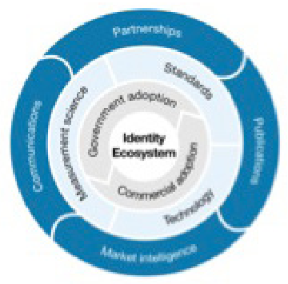
IDエコシステムの円形図。中央にIdentity Ecosystemを置き、その周囲にパートナーシップ、刊行物、市場情報、コミュニケーションの4戦術を環状に配置する。
Figure 27: NIST employs four primary tactics:
図27：NISTが用いる4つの主要な戦術：
未レビュー訳横並びの4つの灰色アイコン。人物と本人確認書類、組み合わさった図形、歯車、チェック印の付いた貯金箱を描く。
Through the promotion of government and commercial
政府および商業分野のパートナーシップを推進し、
未レビュー訳partnerships, publications, market intelligence, and
パートナーシップ、刊行物、市場情報、
未レビュー訳adoption of privacy-enhancing, secure, interoperable,
プライバシーを高め、安全で相互運用可能なIDソリューションの
未レビュー訳communications
コミュニケーション。
未レビュー訳and easy-to-use identity solutions, the TIG drives trust, convenience, and innovation in digital identity.
普及を通じ、TIGはデジタルIDの信頼性、利便性、革新を促進します。
未レビュー訳Identity Ecosystem Framework. The privately-led Identity Ecosystem Steering Group (IDESG) laid the
Identity Ecosystem Framework（IDエコシステム・フレームワーク、IDEF）。民間主導のIdentity Ecosystem Steering Group（IDESG）は、より良いデジタルID取引の基盤を整え、
未レビュー訳The TIG is a partnership model that supports the private
TIGは民間部門を支援するパートナーシップモデルであり、
未レビュー訳groundwork for better digital identity transactions with
2016年度初頭にIdentity Ecosystem Framework（IDEF）を公開しました。IDEFはIdentity Ecosystemの基盤として、
未レビュー訳sector, advances risk management practices, develops
リスク管理の実践を向上させ、指針や標準を策定し、
未レビュー訳the release of the Identity Ecosystem Framework (IDEF) in
デジタルIDを含む取引の実行方法を定める基本要件を提供します。これによりIDEFは、
未レビュー訳and revises guidance and standards to be co-developed
さらに改訂します。これらの指針や標準は、
未レビュー訳early FY 2016. The IDEF lays a foundation for the Identity
利用者を中心に据えた取引の枠組みを、4つの
未レビュー訳with private and public stakeholders, assists agencies in
官民の関係者と共同で策定し、各機関が
未レビュー訳Ecosystem by providing a baseline set of requirements that
指針に沿って定めています。また、オンライン商取引、
未レビュー訳the implementation of identity solutions in their systems,
IDソリューションを各機関のシステムに実装できるよう支援し、
未レビュー訳define how to execute transactions involving digital identity
4つの指針に沿って設計されたデジタルID取引の枠組みを提供し、
未レビュー訳promotes international interoperability of identity standards
ID標準およびソリューションの国際的な相互運用性を促進し、
未レビュー訳that puts users at the center by aligning with the four
オンライン商取引を継続的に改善するとともに、
未レビュー訳and solutions, and funds innovative projects through pilots
実証事業
未レビュー訳guiding principles, continually improving online commerce,
デジタルサービスの効率性とオンライン上のやり取りを
未レビュー訳and other funding mechanisms.
などの資金調達手段を通じ、革新的なプロジェクトに資金を提供します。
未レビュー訳the efficiency of digital services, and online interactions
向上させます。
未レビュー訳To achieve these ends, the TIG is working to advance
これらの目的を達成するため、TIGは
未レビュー訳(see http://www.idesg.org/News-Events/Press-Releases/
（http://www.idesg.org/News-Events/Press-Releases/
未レビュー訳measurement science, technology, and standards adoption
デジタルID分野の測定科学、技術、規格の採用を発展させるため、
未レビュー訳ID/74/Identity-Ecosystem-Framework-Released-Creating-
ID/74/Identity-Ecosystem-Framework-Released-Creating-
未レビュー訳in digital identity by focusing on four primary tactics:
4つの主要な戦術に焦点を当てています。すなわち、
未レビュー訳Unprecedented-Rules-of-the-Road-for-Online-Identity).
Unprecedented-Rules-of-the-Road-for-Online-Identity 参照）。
未レビュー訳partnerships, publications, market intelligence, and
パートナーシップ、刊行物、市場情報、
未レビュー訳Strategic partners. The TIG works alongside many
戦略的パートナー。TIGは多くの
未レビュー訳communications.
コミュニケーションです。
未レビュー訳professional organizations, agencies, and entities in the identity community on a daily basis. Their partnerships allow
IDコミュニティの専門団体、政府機関、組織と日々連携しています。パートナーシップによって、
未レビュー訳P a r t n e r s h i p s
パートナーシップ
未レビュー訳them to gain stronger insights, evolve their thinking and
より深い知見を得て、考え方を発展させ、
未レビュー訳External Projects. The TIG funds external projects, ideas,createmorerobustpublications,orchestratesuccessful including a pilot program that impacted more than 6.7 events, participate in speaking engagements across the million individuals in its first four years. These projects aim country,bringinoutsideexpertstoreviewTIGfederalfunding to catalyze the marketplace to begin developing solutions opportunities, and allow for a broader reach of messaging aligned with the guiding principles. The marketplace and announcements. Under this model, the TIG works to co-is currently transitioning from broad market issues to develop NIST publications, creating an increasingly inclusive targeting specific gaps and market impediments as the approach to producing the best possible documents. The identity ecosystem matures. The pilots develop and TIG also works directly with agencies on their solutions to deploy technology, models, and frameworks that wouldn’t provide expert advice in the risk management of identity otherwise exist in the marketplace. In FY 2016, the pilot solutions and the implementation of those solutions. programs made remarkable progress; the 24 projects include
外部プロジェクト。TIGは外部のプロジェクトやアイデアに資金を提供します。最初の4年間で670万人以上に影響を与えた試行プログラムもあります。これらのプロジェクトは、4つの指針に沿うソリューションを市場で開発するきっかけを作ることを目指します。IDエコシステムが成熟するにつれ、広範な市場課題から、具体的な不足や市場障壁へと焦点を移しています。試行では、本来市場に存在しなかった技術、モデル、枠組みを開発・展開します。2016年度、試行プログラムは大きく進展し、24件のプロジェクトには より確かな刊行物を作成し、成功するイベントを企画し、全国各地の講演に参加し、TIGの連邦資金機会を外部の専門家に評価してもらい、情報発信と告知の範囲を広げることができました。このモデルの下、TIGはNIST刊行物を共同策定し、文書作成をより包括的に進めています。また、各機関のソリューションにも直接関与し、IDソリューションのリスク管理と実装について専門的な助言を行います。
未レビュー訳Several publications were released in 2016 (many
2016年には複数の刊行物が公開されました（その多くは
未レビュー訳more than 170 partner organizations across 12 sectors—
12分野にわたる170を超えるパートナー組織が参加し、その中には
未レビュー訳through the use of GitHub, to best ensure that the broad
GitHubを利用して公開することで、幅広い
未レビュー訳including the development or deployment of 14 multi-factor
多要素認証ソリューション14件の開発または導入などが含まれます。
未レビュー訳community can stay involved in their efforts and that they
幅広い関係者が取り組みに参加し続けられるようにし、
未レビュー訳authentication solutions. Over the course of the fiscal year,
その年度には、多要素認証ソリューションの開発・導入が行われ、
未レビュー訳are transparent and informative every step of the way).
すべての段階で透明性を保ち、有益な情報を提供します。
未レビュー訳six new pilots were launched (including five supporting state
新たに6件の試行事業が始まりました（うち5件は州の
未レビュー訳Details are provided below; the list is current as of the end
詳細は以下に記載します。掲載内容は2016年度末時点のものです。
未レビュー訳services and one driving federated identity in healthcare)
サービスを支援し、1件は医療分野のフェデレーションIDを推進します）。
未レビュー訳of FY 2016. The updated publications list can be found on
刊行物一覧の更新版は、TIGの
未レビュー訳(See https://www.nist.gov/itl/tig/pilot-projects).
（https://www.nist.gov/itl/tig/pilot-projects 参照）。
未レビュー訳the TIG resources page (see https://www.nist.gov/itl/tig/ resources).
リソースページで確認できます（https://www.nist.gov/itl/tig/resources 参照）。
未レビュー訳•Draft SP 800-63-3: Digital Authentication Guideline C o m m u n i c a t i o n s (see https://pages.nist.gov/800-63-3/) The TIG also leverages external communications to
•草案SP 800-63-3「デジタル認証ガイドライン」（https://pages.nist.gov/800-63-3/） コミュニケーション TIGは外部向けの広報も活用し、
未レビュー訳•Draft NISTIR 8149: Developing Trust Frameworks to inform the public about its work and engage a variety of Support Identity Federation (see https://pages.nist. audiences to collaborate on projects as well as to align gov/NISTIR-8149/) efforts and maximize the impact of NIST’s investment in
•草案NISTIR 8149「IDフェデレーションを支援する信頼フレームワークの開発」（https://pages.nist.gov/NISTIR-8149/） 一般に活動を知らせ、多様な人々をプロジェクトに参加させるとともに、NISTのサイバーセキュリティ施策への投資効果を高めるよう取り組みを連携させています。
未レビュー訳•Publications that apply measurement science in the cybersecurity initiatives. The TIG works with government and industry groups to raise public awareness of cybersecurity Identity Ecosystem: tools and concepts, such as by collaborating with the NISTIR 8103: Advanced Identity Workshop on o National Cybersecurity Alliance on campaigns, including Applying Measurement Science in the Identity Lock Down Your Login, National Cybersecurity Awareness Ecosystem: Summary and Next Steps (see Month, and Data Privacy Day. The TIG also regularly shares http://nvlpubs.nist.gov/nistpubs/ir/2016/NIST. achievements and announcements via published documents, IR.8103.pdf) speaking engagements all over the country, webinars, their Strength of authentication: website and blog, social media engagement and outreach, o and customized events for stakeholders. For instance, in FY Discussion Draft: Strength of Function 2016, the TIG coordinated the Advanced Identity Workshop, for Authenticators – Biometrics (see which brought together over 200 technology vendors, https://pages.nist.gov/SOFA/) cybersecurity researchers, policy makers, and other experts Discussion Draft: Measuring Strength of from the public and commercial sectors. Authentication (see https://www.nist. In FY 2017, the TIG will continue to work to advance gov/sites/default/files/nstic-strength-measurement science, technology, and standards adoption authentication-discussion-draft.pdf) in identity management and focus on their four primary Attribute metadata and confidence scoring: o tactics of partnerships, publications, market intelligence, Draft NISTIR 8112: Attribute Metadata and communications. The TIG plans to also move on to new (see https://pages.nist.gov/ endeavors, such as: NISTIR-8112/)
•Identity Ecosystemにおける測定科学を適用した刊行物： ・NISTIR 8103「IDエコシステムにおける測定科学の適用に関する先進的IDワークショップ：概要と次の段階」（http://nvlpubs.nist.gov/nistpubs/ir/2016/NIST.IR.8103.pdf） ・認証強度： ・協議草案「認証器の機能強度—生体認証」（https://pages.nist.gov/SOFA/） ・協議草案「認証強度の測定」（https://www.nist.gov/sites/default/files/nstic-strength-authentication-discussion-draft.pdf） ・属性メタデータと信頼度スコア： ・草案NISTIR 8112「属性メタデータ」（https://pages.nist.gov/NISTIR-8112/）
未レビュー訳•The identification of opportunities and
•試行事業を補完する機会を探り、
未レビュー訳 Discussion Draft: Attribute Metadata
▪ 協議草案「属性メタデータ
未レビュー訳mechanisms to complement the work of their pilot
そのための仕組みを
未レビュー訳and Confidence Scoring (see https://
と信頼度スコア」（https://
未レビュー訳programs;
特定する。
未レビュー訳www.nist.gov/sites/default/files/
www.nist.gov/sites/default/files/
未レビュー訳•Increased work alongside federal agencies to
•連邦機関との連携を強化し、
未レビュー訳nstic-attribute-confidence-metadata-
nstic-attribute-confidence-metadata-
未レビュー訳address specific identity challenges through the
個別のID課題に対応する取り組みを増やすため、
未レビュー訳discussion-draft.pdf)
discussion-draft.pdf）
未レビュー訳NCCoE;
全米サイバーセキュリティ卓越センター（NCCoE）と協力する。
未レビュー訳Strength of identity proofing: o
本人確認の強度：
未レビュー訳•New research projects;
•新たな研究プロジェクト。
未レビュー訳 Discussion Draft: Measuring Strength of
協議草案「本人確認強度の測定」
未レビュー訳•Additional standards work;
•追加の標準化作業。
未レビュー訳Identity Proofing (see https://www.nist.
（https://www.nist.gov/sites/default/files/nstic-strength-
未レビュー訳•Increased communication efforts to educate
•広報・教育活動を強化して
未レビュー訳gov/sites/default/files/nstic-strength-
identity-proofing-
未レビュー訳audiences of all types;
あらゆる対象者へ情報を伝える。
未レビュー訳identity-proofing-discussion-draft.pdf)
discussion-draft.pdf）
未レビュー訳•Continued engagement with various NIST programs to further integrate the Identity Ecosystem into
•NISTの各種プログラムとの連携を続け、Identity Ecosystemを
未レビュー訳M a r k e t I n t e l l i g e n c e
市場情報
未レビュー訳NIST cybersecurity efforts; and,
NISTのサイバーセキュリティ施策に統合する。また、
未レビュー訳The TIG is continuously identifying, collecting, and analyzingmetricstogaingreaterinsightintothedevelopment • Continued focus on industry engagement. and adoption of TIG-aligned solutions. This work aids NIST
TIGは、TIGの方針に沿ったソリューションの開発と普及について洞察を深めるため、指標を継続的に特定、収集、分析しています。この作業はNISTが 業界との連携を引き続き重視する。
未レビュー訳F O R M O R E I N F O R M AT I O N , S E E :
詳細情報：
未レビュー訳in measuring the market shift toward these solutions and honing efforts moving forward so NIST most effectively uses https://www.nist.gov/itl/tig program resources. This increases the likelihood that, with
市場の変化を測定し、今後の取り組みを整え、プログラム資源を最も効果的に活用するうえで役立ちます。このため、 https://www.nist.gov/itl/tig
未レビュー訳C O N TA C T S :
連絡先：
未レビュー訳each new initiative, the TIG meets the market—rather than expecting the market to meet them.
新しい取り組みのたびにTIGが市場に合わせる可能性を高めます。市場側にTIGへ合わせることを求めるものではありません。
未レビュー訳Dr. Mike Garcia
マイク・ガルシア氏
未レビュー訳Ms. Kristina Rigopoulos
クリスティーナ・リゴプロス氏
未レビュー訳(202) 494-4122
(202) 494-4122
未レビュー訳(202) 309-4791 michael.garcia@nist.gov kristina.rigopoulos@nist.gov detect or prevent security flaws while still supporting the
michael.garcia@nist.gov kristina.rigopoulos@nist.gov セキュリティ上の欠陥を検出または防止しながら、
未レビュー訳R E S E A R C H I N E M E R G I N G
新興技術の研究
未レビュー訳quick-paced software development of applications with
アプリケーションの迅速なソフトウェア開発を支援しながら、
未レビュー訳T E C H N O L O G I E S
技術
未レビュー訳rich feature sets. Through the demonstration of security-flaw avoidance in a time-constrained setting, CSD would
時間制約のある環境でセキュリティ上の欠陥を回避できることを実証し、CSDは
未レビュー訳S e c u r e D e v e l o p m e n t To o l c h a i n seek to show that wide-scale improvements in the overall
セキュア開発ツールチェーン ソフトウェア製品全体のセキュリティを大幅に改善しても、
未レビュー訳security of software products could be realized without
市場投入までの目標を損なわずに、
未レビュー訳C o m p e t i t i o n s
競技会
未レビュー訳sacrificing a time-to-market goal. The competitions, which
この競技会は関心のあるすべての参加者に開放し、
未レビュー訳Many security weaknesses in federal information
連邦政府の情報システムにおけるセキュリティ上の弱点の多くは、
未レビュー訳would be open to all interested parties, would aim to provide
商用および
未レビュー訳systems stem from software security vulnerabilities induced
ソフトウェアの脆弱性によって引き起こされています。
未レビュー訳consistent application and measurement of commercial and
研究用ソフトウェアの開発、構成、再利用技術について、
未レビュー訳by software flaws present in current-generation software
現行世代のソフトウェア製品に存在する欠陥が原因です。
未レビュー訳research software development, composition, and reuse
一貫した適用と測定を
未レビュー訳products. CSD tracks software security vulnerabilities (in
。CSDはソフトウェアの脆弱性（National Vulnerability Databaseに登録）を追跡し、
未レビュー訳techniques.
行うことを目指します。
未レビュー訳the National Vulnerability Database), and seeks techniques for the measurement of security vulnerabilities and In FY 2016, CSD partially reformulated the existing techniques that reduce the impact and prevalence of toolchain testing infrastructure to mitigate test infrastructure security vulnerabilities in newly developed products or in reliabilityproblemsuncoveredbyadryrunofthecompetition
脆弱性の測定や、新たに開発する製品および既存製品の新バージョンにおける脆弱性の影響・発生率を低減する技術を探っています。 2016年度、CSDはツールチェーン試験基盤で明らかになった信頼性の問題を軽減するため、既存の試験基盤を部分的に再構成しました。競技会の予行演習と
未レビュー訳and by subsequent inspections. A key part of this
その後の検査で問題が明らかになりました。再構成の重要な一部は、
未レビュー訳new versions of existing products.
製品の新バージョンも対象にしています。
未レビュー訳reformulation was the consolidation of multiple operating
再構成の重要な一部は、複数のオペレーティングシステムを
未レビュー訳One approach to reducing the number of security
ソフトウェアの脆弱性の数を減らす方法の一つは、
未レビュー訳systems into a single operating system for all components.
すべての構成要素で使用する単一のOSへ統合しました。
未レビュー訳vulnerabilities in software is to improve the development
利用可能な開発ツールを改善することです。開発言語と
未レビュー訳Additionally, CSD developed an installation guide to assist
CSDはさらに、ツールチェーン試験基盤の構築、
未レビュー訳tools that are available. By identifying languages and
脆弱性の低減を支援するソフトウェア開発ツールを特定し、
未レビュー訳with the building, installing, and operating of the toolchain
設置、運用を支援する導入ガイドも作成しました。
未レビュー訳software development tools that support a reduction of
より優れたツールとその活用法の開発を促すことで、
未レビュー訳testing infrastructure. The current infrastructure uses several
現在の基盤では複数の第三者製コンポーネントと同時実行される仮想
未レビュー訳vulnerabilities, and by stimulating the creation of better
より優れたツールの開発も促し、
未レビュー訳third-party components and concurrently-running virtual
マシンを使用しています。この導入ガイドは、必要な
未レビュー訳tools and tool usage techniques, the approach should help
その手法により、
未レビュー訳machines. The installation guide describes the required
必要なシステム構成や、ローカルホスト上のアカウント設定、
未レビュー訳developers produce applications with fewer vulnerabilities.
開発者が脆弱性の少ないアプリケーションを作成できるようになります。
未レビュー訳system configurations, account provisioning on local hosts,
第三者製コンポーネントおよびパッケージのインストール・統合、ネットワーク構成を説明しています。さらに、
未レビュー訳While it is impossible to assure the total absence of security
セキュリティ脆弱性を完全に取り除くことはできませんが、
未レビュー訳installation and integration of third-party components
これらの構成要素の更新版と、
未レビュー訳vulnerabilities in this way, it might well be possible to rule out
この方法により、特定の重大な脆弱性クラスを
未レビュー訳and packages, and the network configuration. An updated
継続的インテグレーションシステムがない環境で、簡素化したスクリプト指向の試験を実行するための
未レビュー訳specific, significant classes of vulnerabilities that currently
排除できる可能性はあります。これらは現在、
未レビュー訳version of these elements as well as a document describing
継続的インテグレーションシステムがない環境で、簡素化されたスクリプト型の試験を行うための手順を記した文書も
未レビュー訳provide the basis for many serious exploits.
多くの深刻な攻撃の足掛かりになっています。
未レビュー訳the manual steps for performing simplified, script-oriented
2017年度、CSDは、
未レビュー訳CSD is developing an empirical, competitive approach testing in the absence of a continuous integration system to finding the most effective and usable combinations of was also developed. tools to produce software systems that are relatively free
CSDは、悪用可能な脆弱性がほとんどないソフトウェアシステムを作るため、効果的で使いやすいツールの組合せを探る実証的な競技方式を開発しています。 手順書も作成しました。
未レビュー訳In FY 2017, CSD plans to substantially simplify portions
試験基盤の一部を大幅に簡素化し、
未レビュー訳of exploitable vulnerabilities. Multiple competitions are
複数の競技会を計画しています。その着想は、
未レビュー訳of the testing infrastructure to improve reliability and
信頼性と再現性を高め、
未レビュー訳planned that will be based on an idea developed during
2010年に全米科学財団（NSF）が開催した
未レビュー訳reproducibility, to perform a second round of testing, and to
第2回の試験を実施し、
未レビュー訳the Designing a Secure Systems Engineering Competition
「安全なシステムエンジニアリング競技会の設計」ワークショップ
未レビュー訳publicly announce the first toolchain competition.
最初のツールチェーン競技会を一般に公表する計画です。
未レビュー訳Workshop that was conducted by the National Science Foundation in 2010. The workshop proposed a competition C O N TA C T S : for the development of a set of tools to help non-security-
ツール一式の開発を競う案が示されました。参加者は、セキュリティを専門としない 連絡先：
未レビュー訳Mr. Lee Badger
リー・バジャー氏
未レビュー訳Mr. Christopher Johnson
クリストファー・ジョンソン氏
未レビュー訳expert developers to rapidly build a significant application
開発者が重大なアプリケーションを迅速に構築できるよう支援し、
未レビュー訳(301) 975-3176
(301) 975-3176
未レビュー訳(301) 975-3247
(301) 975-3247
未レビュー訳with zero vulnerabilities, as detected by an extensive public
脆弱性がないことを大規模な公開
未レビュー訳lee.badger@nist.gov christopher.johnson@nist.gov
lee.badger@nist.gov christopher.johnson@nist.gov
未レビュー訳test suite. The participants in the planned competitions would
テストスイートで確認します。計画中の競技会では、参加者が
未レビュー訳N e t w o r k s o f “ T h i n g s ”
「モノのネットワーク」
未レビュー訳implement software systems to solve challenge problems using software development tool chains (“toolchains”) The Internet of Things (IoT) increasingly appears to of their own choosing, within specified time periods. The be the next great technology revolution. It is expected to toolchains may include existing technologies (e.g., existing impact everything from healthcare delivery, to how food is software libraries and frameworks, code generators, reusable produced, to how we work, to all forms of transportation and source code, or bug-finding tools), novel technologies, or any communication, and to virtually all forms of automation. IoT combination thereof. Each competition would apply a time will impact everyone, and in multiple ways. pressurebysimulatingadeadlineinthesoftwaredevelopment
計画中の競技会では、参加者が指定された時間内に、各自で選んだソフトウェア開発ツールチェーン（以下「ツールチェーン」）を用いて課題を解決するソフトウェアシステムを実装します。ツールチェーンには、既存のソフトウェアライブラリやフレームワーク、コード生成器、再利用可能なソースコード、バグ検出ツール、新技術、またはその組み合わせを利用できます。各競技会ではソフトウェア開発工程に期限を設け、時間的な圧力を加えることで、セキュリティ上の欠陥が導入される可能性を高めます。 モノのインターネット（IoT）は、次の大きな技術革新として注目されています。医療の提供、食品の生産、働き方、あらゆる交通・通信、ほぼすべての自動化など、幅広い分野に影響すると見込まれます。IoTは多方面であらゆる人に影響を与えます。
未レビュー訳With a technology revolution of such large impact
社会に大きな影響を与えるこの技術革新において、
未レビュー訳process, increasing the likelihood of an introduction of
セキュリティ上の欠陥が導入される可能性を高めます。
未レビュー訳on society, it is imperative that IoT-based systems can be
IoTベースのシステムが信頼できることが不可欠です。
未レビュー訳security flaws. The objective of the toolchains would be to
ツールチェーンの目的は、
未レビュー訳trusted. This means that they should exhibit secure, reliable, 6 9
安全で信頼性が高く、
未レビュー訳P RO GRA M AN D P ROJEC T ACH IEV EM EN TS | FY 2 01 6
原文のみ
and private behaviors as well as many other attributes F O R M O R E I N F O R M AT I O N , S E E : associated with quality (see references 2 and 4 below). Privacy is particularly important because IoT-based systems
原文更新後、再確認待ち
1.NIST SP 800-183, Networks of ‘Things’, July 2016,
1.1. NIST SP 800-183『Networks of “Things”』、2016年7月。
未レビュー訳will likely produce huge amounts of data as a result of
センシングや監視によって膨大なデータが生成される可能性があります。
未レビュー訳https://doi.org/10.6028/NIST.SP.800-183.
https://doi.org/10.6028/NIST.SP.800-183
未レビュー訳sensing and surveillance (see references 1, 3, and 4 below). This is the “big data” challenge associated with IoT. Therefore, techniques, tools, and methods to mitigate the numerous 2. J. Voas and G. Hurlburt, “Third Party Software’s Trust
これはIoTに伴う「ビッグデータ」課題です。したがって、IoTベースの自動化ネットワークが日常生活の多くを担う前に、多数の「信頼」に関する 2. J. Voas、G. Hurlburt「第三者ソフトウェアの信頼性をめぐる混迷」
未レビュー訳Quagmire”, IEEE Computer, December 2015.
、IEEE Computer、2015年12月。
未レビュー訳“trust” challenges are needed before these automated IoT-based networks manage much of daily life. Historically, there has been little in the way of formal, 3. J. Voas, “Demystifying IoT”, IEEE Computer, June
課題を軽減する技術、ツール、方法が必要です。歴史的に、IoTの動作、信頼性、ライフサイクルを支配する構成要素について、形式的な情報はほとんどなく、 3. J. Voas「IoTの謎を解く」
未レビュー訳2016.
、IEEE Computer、2016年6月。
未レビュー訳analytic, or even descriptive information about the building blocks that govern the operation, trustworthiness, and life cycle of the Internet of Things. A composability model and 4. C. Kolias, A. Stavrou, J. Voas, I. Bojanova, and R. vocabulary that defines principles common to most, if not
分析的、または記述的な情報もほとんどありませんでした。モノのネットワークの大半に共通する原則を定める構成モデルと用語体系が必要であり、 4. C. Kolias、A. Stavrou、J. Voas、I. Bojanova、R.
未レビュー訳Kuhn, “Learning Internet of Things Security Hands-
Kuhn「モノのインターネットのセキュリティを手作業で学ぶ」
未レビュー訳all networks of things, was needed to address the question:
この必要性は、「IoTを支える科学とは何か」という問いに答えるためのものです。
未レビュー訳On”, IEEE Security and Privacy, January 2016.
、IEEE Security and Privacy、2016年1月。
未レビュー訳“What is the science, if any, underlying IoT?” NIST SP 800-
「IoTを支える科学とは何か」という問いに対し、NIST SP 800-
未レビュー訳C O N TA C T :
連絡先：
未レビュー訳183, Networks of ‘Things’ does exactly that – it offers an underlying and foundational science to IoT that is based on a Dr. Jeffrey Voas belief that IoT involves sensing, computing, communication, 301-975-6622 and actuation. The document describes five core building jeff.voas@nist.gov blocks (called primitives): (1) sensor, (2) aggregator, (3) communication channel, (4) eUtility, and (5) decision trigger.
183『Networks of “Things”』は、その基礎科学を提示します。IoTをセンシング、計算、通信、作動から成るものと捉えます。この刊行物は、次の5つの基本構成要素（プリミティブ）を説明しています。(1) センサー、(2) アグリゲーター、(3) 通信チャネル、(4) eUtility、(5) 意思決定トリガー。 ジェフリー・ボアス博士 301-975-6622 jeff.voas@nist.gov
未レビュー訳C l o u d C o m p u t i n g S e c u r i t y a n d
クラウドコンピューティングのセキュリティと
未レビュー訳SP 800-183 is unique in that it uses two acronyms, IoT and
SP 800-183は、IoTと
未レビュー訳F o r e n s i c s
フォレンジック
未レビュー訳NoT(NetworkofThings),extensivelyandinterchangeably.IoT is the outward facing acronym that most people are familiar The term cloud computing was initially coined in 1997 by with; a NoT is an unfamiliar term, but has the advantage of Professor Ramnath Chellappa of Emory University. During his referencing a more specific set of interconnected objects to talk, titled “Intermediaries in Cloud-Computing”, which was which one can apply the building blocks described above. presented at the Institute for Operations Research and the
NoT（Network of Things）という2つの略語を、広く相互に置き換えて使用する点で独特です。IoTは多くの人になじみのある対外向け略語です。一方、NoTはなじみが薄いものの、前述の基本要素を適用できる、より具体的な相互接続オブジェクト群を指します。 「クラウドコンピューティング」という用語は、Emory Universityのラマナス・チェラッパ教授が1997年に最初に用いました。教授は、
未レビュー訳Management Sciences (INFORMS) meeting in Dallas, Texas,
テキサス州ダラスで開催された運用研究・経営科学研究所（INFORMS）の会合で講演し、
未レビュー訳The relationship between IoT and NoT is subtle—IoT is an
NoTの関係は微妙です。IoTは、
未レビュー訳he referred to a cloud as an important new “computing
講演「Intermediaries in Cloud-Computing」で、クラウドを新しい重要な「コンピューティング
未レビュー訳instantiation of a NoT, whereby IoT has its “things” tethered
NoTをインターネットへ接続したものです。別のNoTの例として、ローカルエリアネットワーク（LAN）があります。
未レビュー訳paradigm where the boundaries of computing will be
コンピューティングの境界は技術的な制約ではなく、経済的な合理性によって決まるという、新しい「コンピューティング・パラダイム」としてクラウドを説明しました。
未レビュー訳to the Internet. A different type of NoT could be a Local Area
LAN上の「モノ」はインターネットに接続されません。
未レビュー訳determined by economic rationale rather than technical
だけに左右されるものではありません。」その後、国際的なIT関連文献やメディアは、
未レビュー訳Network (LAN), with none of its “things” connected to the
ソーシャルメディアネットワーク、センサーネットワーク、
未レビュー訳limits alone.” The international IT literature and media later
多くの定義、モデル、アーキテクチャを提示しました。しかし、
未レビュー訳Internet. Social media networks, sensor networks, and the
産業用インターネットもNoTの一種です。この用語の区別は
未レビュー訳provided many definitions, models, and architectures, but it
世界の見解が一致したのは、2011年にNISTがSP 800-145「NIST
未レビュー訳Industrial Internet are all variants of NoTs. This differentiation
異なる垂直市場の利用事例を区別するのに役立ち、
未レビュー訳was not until 2011, when NIST published SP 800-145, The NIST
「クラウドコンピューティングの定義」を刊行し、
未レビュー訳in terminology helps to separate use cases of varying vertical
品質分野（交通、医療、金融、
未レビュー訳Definition of Cloud Computing, that the world coalesced on
SP 800-145に示されたクラウドの展開・サービスモデル、定義および
未レビュー訳and quality domains (transportation, medical, financial,
農業、安全性重視、セキュリティ重視、性能
未レビュー訳the cloud deployment and service models, definitions and
の説明を指しています。
未レビュー訳agricultural, safety-critical, security-critical, performance-
重視、高保証などが含まれます。こうした区別は有用です。IoTは単一ではないため、異なるIoT同士を比べるのは意味がありません。 2010年12月の連邦政府「Cloud First」政策を受け、NISTは
未レビュー訳descriptions provided in SP 800-145.
SP 800-145に記載されています。
未レビュー訳critical, and high assurance, to name a few). The distinctions are useful since there is no singular IoT, and it is meaningless Following the December 2010 Federal Government’s to speak of comparing one IoT to another. But one NoT can “Cloud First” policy issued as part of the 25-point plan for be compared to another NoT – that makes this viewpoint and the U.S. Federal Government’s (USG) IT modernization
一方、NoT同士は比較できます。これにより、この見方と関連する定義が実用的になります。 米国連邦政府（USG）のIT近代化
未レビュー訳and reform, NIST assumed a technical leadership role for
と改革において、NISTは技術面で主導的な役割を担い、
未レビュー訳the associated definition actionable.
この見方と関連する定義を実用的なものにします。
未レビュー訳the federal agencies’ efforts related to the adoption and
連邦機関によるクラウド導入と
未レビュー訳Future work in this area will refine the definitions of the
この分野の今後の作業では、NoTを構成する5つの基本要素の定義を改良します。
未レビュー訳development of cloud computing standards. The goal was
クラウドコンピューティング標準の策定を主導しました。目標は、
未レビュー訳five core NoT building blocks. For example, instead of just
5つのNoT構成要素について、例えば、
未レビュー訳to accelerate the Federal Government’s adoption of secure
連邦政府による安全で
未レビュー訳considering an all-purpose sensor, categories of sensors will
汎用センサーだけでなく、センサーを分類し、
未レビュー訳and effective cloud computing solutions to reduce costs and
効果的なクラウドコンピューティングソリューションの導入を加速し、コストを削減して
未レビュー訳be explored. This will involve a decomposition of the building
基本構成要素を分解して検討します。
未レビュー訳improve services.
サービスを改善することでした。
未レビュー訳blocks. The research team will also demonstrate how to apply these definitions to vertical markets. In addition, the team will In addition to the initial definition of cloud computing, present these results in Revision 1 of NIST SP 800-183, which NIST built a USG cloud computing technology roadmap requirements, and lead efforts to develop standards and
研究チームはこれらの定義を垂直市場に適用する方法も実証します。成果をNIST SP 800-183改訂1に盛り込み、同改訂版の刊行は さらにNISTは、クラウドコンピューティングの初期定義に加え、米国政府（USG）のクラウド技術ロードマップを作成し、
未レビュー訳be available for public comments by the end of the
2017年第1四半期末までにパブリックコメント用に公開され、
未レビュー訳guidelines in close collaboration with standards bodies, the
標準化団体、
未レビュー訳first quarter of 2017, provides a cloud overlay of the
クラウドベースのエコシステム向けに、
未レビュー訳private sector, and other stakeholders. NIST also developed a
民間部門やその他の関係者と密接に協力して指針を策定します。NISTはまた、
未レビュー訳SP 80053 Revision 4 security controls for cloud-
SP 800-53改訂4のセキュリティ管理策を適用するためのオーバーレイを提供します。
未レビュー訳cloud computing reference architecture, a security reference
クラウドコンピューティング参照アーキテクチャと、セキュリティ参照
未レビュー訳based ecosystems.
ベースの環境に対するものです。
未レビュー訳architecture and, during 2016, focused on developing
アーキテクチャを策定しました。2016年には、
未レビュー訳NIST is also leading the research and development
NISTはまた、次の
未レビュー訳the guidance for applying a risk-based approach to cloud
クラウド導入にリスクベースのアプローチを適用する指針と、
未レビュー訳of the projects listed below:
プロジェクトの研究開発を主導しています。
未レビュー訳adoption and the guidance for applying the SP 800-53
SP 800-53改訂4のセキュリティおよびプライバシー管理策を、
未レビュー訳•Members of the NIST Cloud Security Working
•NIST Cloud Security Working Groupのメンバーは、
未レビュー訳Revision 4 security and privacy controls to cloud-based
クラウドベースの
未レビュー訳Group, in collaboration with the Cloud Security
Cloud Security Allianceと連携し、
未レビュー訳federal information systems.
連邦情報システムに適用します。
未レビュー訳Alliance’s members are researching the security
同Allianceのメンバーは、セキュリティ上の
未レビュー訳During FY 2016, NIST also started researching the
2016年度、NISTはさらに、
未レビュー訳challenges encountered when leveraging
課題を調査しています。特に、
未レビュー訳securitychallengesencounteredwhenleveragingapplication
アプリケーションコンテナとマイクロサービスを利用する際に生じるセキュリティ課題を調査し始めました。
未レビュー訳application containers and microservices for
アプリケーションコンテナやマイクロサービスを活用し、
未レビュー訳containers and microservices for the implementation of
クラウドベースの
未レビュー訳the implementation of cloud-based information
クラウドベースの情報システムを実装する際の
未レビュー訳cloud-based federal information systems and the security
連邦情報システムへの実装と、クラウド型フェデレーションIDソリューション導入時のセキュリティ課題も調査しました。
未レビュー訳systems. Based on this research, NIST will issue
この研究に基づき、NISTは省庁間レポートを発行し、
未レビュー訳challenges encountered when implementing cloud-based
クラウド型フェデレーションIDソリューションの実装に伴う課題と、システム
未レビュー訳an interagency report documenting the findings
調査結果を記録した
未レビュー訳federated identity solutions, along with the impact on the
全体のセキュリティ態勢への影響も扱います。現在は、
未レビュー訳and will provide recommendations based on
課題を軽減するベストプラクティスに基づく
未レビュー訳system’s security posture. Some of the current work is
オープンなセキュリティ管理策評価言語（OSCAL）の開発に取り組んでいます。
未レビュー訳best practices for mitigating the identified
提言を提示します。
未レビュー訳focusing on the development of an open security controls
この言語は、
未レビュー訳challenges.
特定した
未レビュー訳assessment language (OSCAL) that aims to revolutionize
クラウドベースの情報システムのライフサイクル全体に変革をもたらすことを目指します。
未レビュー訳•Members of the NIST Cloud Security Working
•NIST Cloud Security Working Groupのメンバーも、
未レビュー訳every step in the life cycle of a cloud-based information
また、クラウドフォレンジックの
未レビュー訳Group are researching the security challenges
Groupのメンバーは、セキュリティ上の課題を調査しています。
未レビュー訳system and on the development of a cloud forensics
システムを開発します。
未レビュー訳encountered when implementing cloud-based
クラウドベースの
未レビュー訳reference architecture that is derived from the cloud security
参照アーキテクチャは、上記のクラウドセキュリティ参照
未レビュー訳federated identity solutions and the impact on
連携IDソリューションの実装に伴う課題と、
未レビュー訳reference architecture mentioned above. Details regarding
アーキテクチャから導かれたものです。最新プロジェクトの
未レビュー訳the overall system’s security posture. Based
システム全体のセキュリティ態勢への影響です。この研究を踏まえ、
未レビュー訳the latest projects are provided below.
詳細は以下に示します。
未レビュー訳on this research, NIST will issue an interagency
NISTは省庁間レポートを発行し、
未レビュー訳C S D R o l e i n t h e N I S T C l o u d C o m p u t i n g
NISTクラウドコンピューティング
未レビュー訳report documenting the findings and will provide
調査結果を記録し、
未レビュー訳P r o g r a m
プログラムにおけるCSDの役割
未レビュー訳recommendations based on the best practices for mitigating the identified challenges.
特定した課題を軽減するため、ベストプラクティスに基づく提言を行います。
未レビュー訳During FY 2016, NIST continued to promote the development of publications, national and international • Members of the NIST Cloud Forensic Science standards,andspecificationsinsupportoftheUSG’seffective
2016年度、NISTは米国政府（USG）がクラウドコンピューティングを効果的かつ安全に利用できるよう、刊行物、国内外の標準、仕様の策定を推進しました。 NIST Cloud Forensic Science Working Groupのメンバーは、
未レビュー訳Working Group are working on defining a cloud
クラウドフォレンジック参照アーキテクチャを定義しており、
未レビュー訳and secure use of cloud computing, as well as providing
連邦機関に、安全で効果的なクラウドコンピューティングの導入に関する技術指針も提供しました。
未レビュー訳forensics reference architecture that leverages NIST SP 500-299: Cloud Security Reference Architecture
そのアーキテクチャはNIST SP 500-299「Cloud Security Reference Architecture」と
未レビュー訳technical guidance to federal agencies for secure and
2016年度、NISTの
未レビュー訳and NISTIR 8006, NIST Cloud Computing Forensic
NISTIR 8006「NIST Cloud Computing Forensic
未レビュー訳effective cloud-computing adoption. During FY 2016, NIST’s
クラウドコンピューティングのセキュリティおよびフォレンジック科学に関する活動には、次の指針・提言の策定が含まれます。
未レビュー訳Science Challenges.
Science Challenges」を活用しています。
未レビュー訳cloud computing security and forensic science activities included the development of the following guidance and/or
提言：
未レビュー訳•Members of a NIST-led Tiger Team is developing
•NIST主導のTiger Teamのメンバーは、
未レビュー訳recommendations:
提言：
未レビュー訳an OSCAL, a hierarchical, formal language that
セキュリティ情報を
未レビュー訳•NIST Draft SP 800-173, Guide for Applying the aims to support the transfer of security information Risk Management Framework to Cloud-based in formats that are compliant with the security Federal Information Systems. This publication controls catalog of choice. provides guidance in using the Risk Management In support of U.S. cloud-computing mandates, CSD Framework described in SP 800-37 Revision staff members provide leadership for several public 1, Guide for Applying the Risk Management cloud working groups operating under the NIST Cloud Framework to Federal Information Systems: Computing Program. These working groups focus on a Security Life Cycle Approach, to issue an meeting the high-priority requirements described in authorization to operate for cloud-based NIST SP 500-293, U.S.GovernmentCloudComputing information systems. The draft document will TechnologyRoadmap. be posted for public comment by December 31, CSD staff co-chaired several significant cloud 2016. computing efforts in 2016:
•NIST草案SP 800-173「クラウドベース連邦情報システムへのリスク管理フレームワーク適用ガイド」。本刊行物は、SP 800-37改訂1「連邦情報システムへのリスク管理フレームワーク適用ガイド—セキュリティライフサイクルアプローチ」に記載された枠組みをクラウドベースの連邦情報システムへ適用し、運用認可を発行するための指針を示します。草案は2016年12月31日までにパブリックコメント用に公開される予定です。 OSCALは、選択したセキュリティ管理策カタログに準拠する形式で、セキュリティ情報を移転できるよう支援することを目指します。米国のクラウドコンピューティング施策に対応して、CSD職員はNIST Cloud Computing Programの下で複数のパブリッククラウド作業部会を主導しています。各部会はNIST SP 500-293「U.S. Government Cloud Computing Technology Roadmap」に記された優先度の高い要件への対応に重点を置きます。2016年にCSD職員が共同議長を務めた主なクラウドコンピューティング活動は次のとおりです。
未レビュー訳•NIST Draft SP 800-174, SecurityandPrivacy
•NIST草案SP 800-174「クラウドベース連邦情報システム向けの
未レビュー訳•Co-Chaired the NIST Cloud Computing Security
•NIST Cloud Computing Security Working Groupの共同議長を務め、
未レビュー訳ControlsforCloud-basedFederalInformation
セキュリティおよびプライバシー管理策
未レビュー訳Working Group and led the working group on
SP 800-173の開発作業部会を主導し、
未レビュー訳Systems.This document, which is anticipated to the development of the NIST SP 800-173, Guide are accessed by different types of applications and users. forApplyingtheRiskManagementFrameworkto The PM infrastructure is scalable and can support policies of Cloud-basedFederalInformationSystems;NIST various types simultaneously while remaining manageable in SP 800-174, SecurityandPrivacyControlsfor the face of changing technology, organizational restructuring, Cloud-basedFederalInformationSystems(both andincreasingamountsofdata.ThePMprovidesaframework described above); and on researching the topics capable of supporting combinations of both current access listed above.
」です。この文書は、 SP 800-174（前述の草案）に関する作業も行うほか、以下のテーマを調査しました。 これらのポリシーは、さまざまな種類のアプリケーションや利用者からアクセスされます。Policy Machine（PM）の基盤は拡張性があり、複数種類のポリシーを同時に支援しつつ、技術の変化、組織再編、データ量の増加に直面しても管理しやすい構造を保ちます。PMは、現在のアクセス制御方式と新たに考案されたポリシー種別を拡張なしで組み合わせて支援できる枠組みを提供します。
未レビュー訳control approaches and newly conceived types of policy without extension.
現行のアクセス制御方式と新たに考案されたポリシー種別を、拡張なしで組み合わせることもできます。
未レビュー訳•Co-Chaired the NIST Cloud Computing Forensic Science Working Group and led the development of NIST and other members of an Ad Hoc INCITS working thecloudforensicsreferencearchitecture. group are continuing to develop a three-part NGAC standard. This work is being conducted under three sub-projects:
•NIST Cloud Computing Forensic Science Working Groupの共同議長を務め、クラウドフォレンジック参照アーキテクチャの開発を主導しました。 NISTとAd Hoc INCITS作業部会の他のメンバーは、3部構成のNGAC標準の開発を続けています。この作業は3つのサブプロジェクトで実施されています。
未レビュー訳•Co-Chaired the NIST Cloud Computing Interoperability and Portability Working Group
•NIST Cloud Computing Interoperability and Portability Working Groupの共同議長を務め、
未レビュー訳•Project 2193–D: Next Generation Access Control –
•プロジェクト2193-D：次世代アクセス制御—
未レビュー訳and addressed issues facing cloud computing
クラウドコンピューティングの相互運用性と可搬性に関する問題に取り組み、
未レビュー訳Implementation Requirements, Protocols and API
実装要件、プロトコル、API
未レビュー訳with respect to interoperability and portability,
標準、および共通・機能用語に対応しました。
未レビュー訳Definitions;
の定義。
未レビュー訳standards, and common and functional
標準と共通・機能用語。
未レビュー訳•Project 2194–D: Next Generation Access Control –
•プロジェクト2194-D：次世代アクセス制御—
未レビュー訳terminologies.
用語の整備を行いました。
未レビュー訳Functional Architecture; and
機能アーキテクチャ。さらに、
未レビュー訳CSD staff members participated in various standards
CSD職員は、さまざまな標準化団体に参加しました。
未レビュー訳•Project 2195–D: Next Generation Access
•プロジェクト2195-D：次世代アクセス制御―
未レビュー訳development organizations, all listed in the section of this
これらの団体はすべて、本報告書の国際標準に関する節に
未レビュー訳Control – Generic Operations and Abstract Data
汎用操作と抽象データ
未レビュー訳report dedicated to international standards.
列挙されています。
未レビュー訳Structures.
構造。
未レビュー訳In FY 2017, NIST will continue collaboration with the
2017年度、NISTは
未レビュー訳An initial standard from this work was published
この取り組みの最初の標準は
未レビュー訳private sector, academia and other public-sector entities
民間部門、学界、その他の公共部門の組織との連携を継続し、
未レビュー訳in 2013 and is now available from ANSI as INCITS 499:
2013年に公開され、現在はANSIからINCITS 499として入手できます：
未レビュー訳on developing guidance and specifications that support the
革新的なクラウドソリューションの幅広い普及を支援する指針と仕様の策定に取り組み、
未レビュー訳NGACFunctionalArchitecture(NGAC–FA). However, based
NGAC Functional Architecture（NGAC-FA）です。ただし、
未レビュー訳broad adoption of innovative cloud solutions. Some of the
革新的なクラウドソリューションの幅広い普及を支援します。こうした協力に非常に効果的な枠組みの一部は
未レビュー訳on experience with similar efforts (e.g., Project 2193-D,
類似する取り組み（例えばプロジェクト2193-D、
未レビュー訳very effective frameworks for such collaborations that NIST
NISTが主催する
未レビュー訳Project 2195-D, and the revised NISTIR 7987, Policy Machine:
プロジェクト2195-D、および改訂版NISTIR 7987『Policy Machine:
未レビュー訳is hosting are the public working groups with international
国際的な参加者が加わる公開ワーキンググループで
未レビュー訳Features, Architecture, and Specification), work is underway
Features, Architecture, and Specification（特長、アーキテクチャ、仕様）』については、改訂作業が
未レビュー訳participation.
す。
未レビュー訳to update this standard.
進められています。
未レビュー訳F O R M O R E I N F O R M AT I O N , S E E :
詳細情報：
未レビュー訳In 2016, the standard for Project 2195-D was approved and is now available from the ANSI e-standards store as
2016年、プロジェクト2195-Dの規格が承認され、ANSIの電子規格ストアで次の名称により入手できるようになりました。
未レビュー訳https://www.nist.gov/programs-projects/nist-cloud-
https://www.nist.gov/programs-projects/nist-cloud-
未レビュー訳INCITS 526: NGAC Generic Operations and Abstract Data
INCITS 526：NGAC汎用操作および抽象データ
未レビュー訳computing-program-nccp
computing-program-nccp
未レビュー訳Structures (NGAC-GOADS).
構造（NGAC-GOADS）。
未レビュー訳C O N TA C T :
連絡先：
未レビュー訳The eXtensible Access Control Markup Language (XACML) and NGAC are very different ABAC standards with
拡張可能アクセス制御マークアップ言語（XACML）とNGACは、目標や目的は似ているものの、大きく異なるABAC標準であり、
未レビュー訳Dr. Michaela Iorga
Dr. Michaela Iorga
未レビュー訳similar goals and objectives. What are the similarities and
両標準の類似点と
未レビュー訳(301) 975-8431
(301) 975-8431
未レビュー訳differences between these two standards? What are their
相違点は何か。また、それぞれの
未レビュー訳michaela.iorga@nist.gov
michaela.iorga@nist.gov
未レビュー訳comparative advantages and disadvantages? To answer these questions, in October 2016 NIST published SP 800-
比較上の利点と欠点は何か。これらの問いに答えるため、2016年10月にNISTはSP 800-
未レビュー訳P o l i c y M a c h i n e – N e x t G e n e r a t i o n 178, A Comparison of Attribute Based Access Control (ABAC)
【左段見出し】Policy Machine―次世代アクセス制御 【右段・文書名】178『データサービスアプリケーション向け属性ベースアクセス制御（ABAC）標準の比較：拡張アクセス
未レビュー訳Standards for Data Service Applications: Extensible Access
制御マークアップ言語（XACML）と次世代
未レビュー訳A c c e s s C o n t r o l
【左段見出し】アクセス制御 【右段・文書名】制御マークアップ言語（XACML）と次世代
未レビュー訳Control Markup Language (XACML) and Next Generation
制御マークアップ言語（XACML）と次世代
未レビュー訳CSD has continued the development of an advanced
CSDは、先進的な
未レビュー訳Access Control (NGAC), to describe and compare these
アクセス制御（NGAC）を説明し、これらの標準を
未レビュー訳Attribute Based Access Control (ABAC) framework called
属性ベースアクセス制御（ABAC）フレームワークの開発を続けており、
未レビュー訳standards with respect to the criteria derived from ABAC
ABACから導いた基準、すなわち
未レビュー訳the Policy Machine, which is designed to be in alignment with
Policy Machineは、次の
未レビュー訳issues or considerations identified by NIST SP 800-162, Guide
NIST SP 800-162『Guide to Attribute Based Access Control（ABAC）Definition and
未レビュー訳an emerging ANSI/INCITS standard under the title of “Next
「次世代
未レビュー訳to Attribute Based Access Control (ABAC) Definition and
Considerations（属性ベースアクセス制御（ABAC）の定義と考慮事項）で示された
未レビュー訳Generation Access Control” (NGAC).
アクセス制御」（NGAC）という名称の新興ANSI/INCITS標準に沿うよう設計されています。
未レビュー訳Considerations: operational efficiency, attribute and policy
運用効率、属性およびポリシーの管理、範囲、ポリシー支援の種類、
未レビュー訳The Policy Machine (PM) is a fundamental reworking of management, scope and type of policy support, and support traditional access control into a form suited to the needs of for administrative review and resource discovery. a modern, distributed, interconnected enterprise. The PM is based on a flexible infrastructure that can provide access
【左段】Policy Machine（PM）は従来のアクセス制御を根本から見直し、現代の分散型で相互接続された企業のニーズに合う形にします。PMは柔軟な基盤を備え、アクセス 【右段】管理、対象範囲、ポリシー支援の種類、管理者によるレビューおよびリソース探索の支援。
未レビュー訳In FY 2017, CSD plans to issue a new version of the PM deployment). Recognizing the fact that VMs are the end-through GitHub as an open source distribution to allow nodes of a virtual network, research on the secure virtual widespread experimentation and transfer. Example data network configuration for VM protection was started in FY services (e.g., email, file management, records management, 2015 and continued in FY 2016. The outcome of the research workflow) are planned to be provided with the distribution. was the identification of four virtual network configuration The new version will reflect new features and enhanced areas impacting VM security: network segmentation, performance, and will complete (for purposes of balloting) network path redundancy, traffic control using firewalls, the revised INCITS 499, and the Project 2193–D standard. and VM traffic monitoring. Each area was analyzed, and
【左段】2017年度、CSDはPolicy Machine（PM）の新版をGitHub経由のオープンソース配布物として公開し、広く試行・移転できるようにする予定です。メール、ファイル管理、記録管理、ワークフローなどのデータサービスを配布物に含める計画です。新版では機能と性能を強化し、改訂版INCITS 499およびプロジェクト2193-D規格の投票用完成版を目指します。 【右段・前段の末尾】導入）。 【右段】仮想マシン（VM）が仮想ネットワークのエンドノードであることを踏まえ、VM保護のための安全な仮想ネットワーク構成の研究を2015年度に開始し、2016年度も続けました。その結果、VMのセキュリティに影響する仮想ネットワーク構成領域を4つ特定しました。ネットワーク分割、経路の冗長化、ファイアウォールによるトラフィック制御、VMトラフィックの監視です。各領域を分析し、
未レビュー訳the corresponding security recommendations have been
それぞれに対応するセキュリティ推奨事項を策定し、
未レビュー訳F O R M O R E I N F O R M AT I O N , S E E :
詳細情報：
未レビュー訳provided.
公開しました。
未レビュー訳http://csrc.nist.gov/pm/
http://csrc.nist.gov/pm/
未レビュー訳In FY 2016, the project team produced the following two publications: Analysis of Virtual Networking Options
2016年度、プロジェクトチームは次の2件の刊行物を作成しました。『仮想マシン保護のための仮想ネットワーク選択肢の分析』
未レビュー訳C O N TA C T S :
連絡先：
未レビュー訳for Securing Virtual Machines which was submitted to the Seventh International Conference on Cloud Computing,
『仮想マシンを保護する仮想ネットワーク構成』は、クラウドコンピューティング、
未レビュー訳Mr. David Ferraiolo
Mr. David Ferraiolo
未レビュー訳Mr. Serban Gavrila
Mr. Serban Gavrila
未レビュー訳GRIDs, and Virtualization (CLOUD COMPUTING 2016) (Note:
グリッドおよび仮想化に関する第7回国際会議（CLOUD COMPUTING 2016）に提出されました（注：
未レビュー訳(301) 975-3046
(301) 975-3046
未レビュー訳(301) 975-4242 serban.gavrila@nist.gov The abstract to this paper can be found in the Publications
【左段・連絡先】(301) 975-4242／serban.gavrila@nist.gov 【右段】この論文の要旨は、本年次報告書の「FY 2016に公開された刊行物―会議論文」節に掲載されています。また、SP 800-125B「仮想マシン（VM）保護のための安全な仮想ネットワーク構成」も刊行されました。
未レビュー訳david.ferraiolo@nist.gov
david.ferraiolo@nist.gov
未レビュー訳Released FY 2016 – Conference Papers section later in this Annual Report), and SP 800-125B, Secure Virtual Network
（本年次報告書の「FY 2016に公開された刊行物―会議論文」節を参照）。また、SP 800-125B「仮想マシン（VM）保護のための安全な仮想ネットワーク
未レビュー訳S e c u r i t y f o r a V i r t u a l i z e d
仮想化された
未レビュー訳Configuration for Virtual Machine (VM) Protection.
構成」。
未レビュー訳I n f r a s t r u c t u r e
インフラストラクチャ
未レビュー訳In FY 2017, research on the secure configuration of
2017年度には、安全な構成に関する研究を
未レビュー訳Virtualization technology has now found ubiquitous the third component of a virtualized infrastructure (i.e., adoption in data centers used for hosting enterprise virtualized storage) will continue. The resulting findings applications as well as for providing cloud services. This and security recommendations will either be included as technology has been used not only for configuring and additions to SP 800-125A, Security Recommendations for deploying virtualized hosts (Server Virtualization) but also Hypervisor Deployment, or as a separate document. for virtual networks (Network Virtualization) and virtualized C O N TA C T : storage (Storage Virtualization). Together, these three components constitute the virtualized infrastructure in a
【左段】データセンターでは、企業アプリケーションのホスティングやクラウドサービスの提供に仮想化技術が広く使われています。この技術は、仮想ホスト（サーバー仮想化）の構成・配備だけでなく、仮想ネットワーク（ネットワーク仮想化）や仮想ストレージ（ストレージ仮想化）にも使われます。この3要素が、データセンターにおける 【右段】仮想化インフラストラクチャの第3要素である仮想ストレージの安全な構成に関する研究を継続します。成果とセキュリティ推奨事項は、SP 800-125A『ハイパーバイザー展開のセキュリティ推奨事項』への追補、または別文書として公表します。 【右段・連絡先見出し】連絡先：
未レビュー訳Dr. Ramaswamy Chandramouli
Dr. Ramaswamy Chandramouli
未レビュー訳data center.
仮想化インフラストラクチャを構成します。
未レビュー訳(301) 975-5013
(301) 975-5013
未レビュー訳The core component of a virtualized infrastructure is mouli@nist.gov the virtualized host (i.e., a physical host running a server virtualization product) that can support multiple computing
【左段】仮想化インフラストラクチャの中核は、サーバー仮想化製品を実行する物理ホストである仮想化ホストです。このホストは複数のコンピューティング 【右段・連絡先】mouli@nist.gov
未レビュー訳C y b e r T h r e a t I n f o r m a t i o n S h a r i n g
サイバー脅威情報の共有
未レビュー訳stacks (called Virtual Machines or VMs), each with a different platform configuration (e.g., operating system (OS)) and As cyber attacks increase in both sophistication and each with unique security needs. Application programs frequency, it is important to collect and analyze cyber threat loaded into a VM are often valuable server programs (e.g., information from a variety of internal and external sources, webserver, database management system) that support and use it to develop, enhance, and deploy proactive, important business processes and generally need more threat-informed, cyber defense capabilities. Cyber threat security protection than do other virtual hosts such as information includes indicators (i.e., artifacts or observable workstations. Protection for application programs in a events that suggest that an attack is imminent, that an VM (in fact for the entire VM) can be provided through a attack is underway, or that a compromise may have already combination of the following: the secure configuration of occurred); information about the tactics, techniques, and the virtualized host, the secure configuration of the virtual procedures (TTPs) of actors; recommended courses of network and the secure configuration of the virtualized action; and other information that is used to characterize
【左段】スタック（仮想マシンまたはVM）を支えます。各VMは異なるプラットフォーム構成（例：オペレーティングシステム（OS））と固有のセキュリティ要件を持ちます。VM上のアプリケーションはWebサーバーやデータベース管理システムなど重要なサーバープログラムであることが多く、業務を支えるため、ワークステーションなど他の仮想ホストより強い保護を必要とします。VM上のアプリケーション（実際にはVM全体）は、次の組合せで保護できます。仮想化ホスト、仮想ネットワーク、および仮想化 【右段】サイバー攻撃が巧妙化し頻度も増すなか、内部・外部の多様な情報源から脅威情報を収集・分析し、予防的で脅威情報に基づくサイバー防御能力の開発・強化・展開に活用することが重要です。脅威情報には、攻撃が差し迫っている、進行中である、または侵害がすでに起きたことを示す指標（痕跡や観測可能な事象）、攻撃者の戦術・技法・手順（TTP）、推奨される対応策、および脅威を特徴づけるために用いるその他の
未レビュー訳threats. Because threat actors often use the same
情報が含まれます。脅威アクターはしばしば同じ
未レビュー訳storage associated with the VM.
ストレージを安全に構成すること。
未レビュー訳TTPs against multiple targets, exchanging cyber threat
複数の標的に対してTTPを使用します。サイバー脅威情報を交換すると、
未レビュー訳Justliketheirphysicalcounterparts(i.e.,physicalservers),
物理サーバーと同様に、
未レビュー訳information allows organizations to leverage the collective
組織は同業者が共有する
未レビュー訳VMs can be protected through host-level and network-level
VMはホストレベルおよびネットワークレベルの
未レビュー訳knowledge, experience, and analysis capabilities of their
知識、経験、分析能力を活用でき、
未レビュー訳security measures. Hence, the focus of research in FY 2014
セキュリティ対策で保護できます。そのため、2014年度以前の研究では
未レビュー訳peers, thereby increasing the overall awareness and security
それによって脅威認識と安全性が高まり、
未レビュー訳and prior years was on the secure configuration of the
仮想化ホスト（特にハイパーバイザーの構成と
未レビュー訳of an entire sharing community. Through the exchange of cyber threat information, organizations can gain a more • Information Sharing and Analysis Centers complete understanding of their threat environment by
【左段】情報共有コミュニティ全体の脅威認識と安全性が高まります。サイバー脅威情報を交換することで、組織は脅威環境をより包括的に把握でき、そのために 【右段・箇条書き】情報共有・分析センター
未レビュー訳(ISACs),
（ISACs）、
未レビュー訳correlating their observations with those of others.
自らの観測を他者の観測と照合します。
未レビュー訳•Information Sharing and Analysis Organizations
•情報共有・分析組織
未レビュー訳CSD has established a cyber threat information sharing
CSDはサイバー脅威情報共有
未レビュー訳(ISAOs),
（ISAOs）、
未レビュー訳initiative, which is focused on providing guidance on how
イニシアチブを立ち上げました。このイニシアチブは、組織がどのように
未レビュー訳•Federal/State/Local agencies,
•連邦・州・地方の政府機関、
未レビュー訳an organization can establish information sharing and
情報共有と調整の能力を確立し、
未レビュー訳•Law Enforcement,
•法執行機関、
未レビュー訳coordination capabilities that enhance or augment their existing cybersecurity practices. The guidance covers threat- • Fusion Centers, and informed detection, protection and response capabilities;
【左段】既存のサイバーセキュリティ対策を強化または補完できるようにします。指針では脅威情報に基づく検知、保護および対応能力を扱います。 【右段・箇条書き】フュージョンセンター、および
未レビュー訳•Sector Coordinating Councils.
•セクター調整評議会。
未レビュー訳data privacy and sensitivity; data collection and retention practices;theuseofopenstandardsforinformationexchange; C O N TA C T S : de-identification and anonymization; and guidance on how
【左段】データのプライバシーと機微性、データの収集・保持の実務、情報交換におけるオープン標準の利用、非識別化と匿名化、さらに組織がどのように 【右段・見出し】連絡先：
未レビュー訳Mr. Christopher Johnson
Mr. Christopher Johnson
未レビュー訳Mr. Lee Badger
Mr. Lee Badger
未レビュー訳an organization can establish, participate in, and maintain
組織がどのように情報共有と調整の関係を構築し、参加し、維持できるか
未レビュー訳(301) 975-3247
(301) 975-3247
未レビュー訳(301) 975-3176
(301) 975-3176
未レビュー訳coordination and information sharing relationships. The
についての指針です。この指針は、
未レビュー訳christopher.johnson@nist.gov lee.badger@nist.gov
christopher.johnson@nist.gov／lee.badger@nist.gov
未レビュー訳guidance will help incident responders, network defenders, and operations personnel consider what information is Mr. David Waltermire sharable, the circumstances under which sharing is permitted, (301) 975-3390 with whom the information may be shared, and how the david.waltermire@nist.gov information should be protected. As an example of this guidance, in FY 2016, CSD
【左段】インシデント対応者、ネットワーク防御担当者、運用担当者が、共有可能な情報、共有が許される状況、共有相手、情報の保護方法を検討する助けになります。この指針の例として、2016年度にCSDは 【右段・連絡先】Mr. David Waltermire (301) 975-3390／david.waltermire@nist.gov
未レビュー訳T h e O n t o l o g y o f A u t h e n t i c a t i o n
認証のオントロジー
未レビュー訳released a second draft of SP 800-150, Guide to Cyber Threat
SP 800-150『サイバー脅威情報共有ガイド』の第2次草案を
未レビュー訳Over the past 30 years, NIST has been at the forefront
過去30年間、NISTは認証のベストプラクティスを推奨する先導役を務めてきました。
未レビュー訳Information Sharing. The draft publication was released for
公開しました。この草案は2016年4月21日にパブリックコメント向けに公開されました。本刊行物は、
未レビュー訳of recommending best practices for authentication.
認証のベストプラクティスを推奨してきました。
未レビュー訳public comment on April 21, 2016. This publication is intended
この刊行物は、
未レビュー訳Recommendations have included the usage of passwords,
これまでの推奨事項には、パスワード、
未レビュー訳to help organizations prepare for an exchange of cyber
組織がサイバー脅威情報を交換する準備を支援することを目的とし、
未レビュー訳biometrics, authentication hardware devices, and Public Key
生体認証、認証用ハードウェア、企業環境における公開鍵基盤（PKI）ソリューションなどがあります。2015年度には、
未レビュー訳threat information, both consuming cyber threat information
外部から脅威情報を受け取ることと、
未レビュー訳Infrastructure (PKI) solutions in enterprise settings. In FY
2015年度、CSDは一般的な認証機能の分類に関する研究を開始しました。
未レビュー訳from external sources and producing information for other
他の組織が利用する情報を作成することの両方を扱います。
未レビュー訳2015, CSD began researching the classification of general
認証機能を対象としました。この調査の背景には、
未レビュー訳organizations to use. Organizations may have substantially
組織によっては、
未レビュー訳authentication features. This investigation was prompted
パスワードからの移行を求める一般的な声と、
未レビュー訳different capabilities for detecting threats, responding to
脅威を検知し、攻撃に対応する能力に大きな差があり、
未レビュー訳by the general call to move away from passwords toward
代替認証方式が増えていることがありました。
未レビュー訳attacks, diagnosing causes, and handling sensitive incident-
原因の診断や、機微なインシデント
未レビュー訳the growing number of alternative authentication methods
（例：生体認証、スマートカードなど）。概念的な認証オントロジーは
未レビュー訳related information, but this guidance is intended to help
関連情報の取扱能力も組織によって異なりますが、本指針は
未レビュー訳(e.g., biometrics, smart cards, etc.). A notional ontology
開発され、詳細な
未レビュー訳organizations collaborate and exchange cyber threat
組織が連携してサイバー脅威情報を交換し、
未レビュー訳of authentication was developed that included a detailed
分類体系、測定体系、そして代替手段を評価するための枠組みを
未レビュー訳information despite these organizational differences. CSD
組織間の違いにかかわらず情報を共有できるよう支援します。CSDは
未レビュー訳taxonomy, a metrology, and a framework for assessing
備え、
未レビュー訳will release the final version of SP 800-150, in October 2016.
2016年10月にSP 800-150の最終版を公開する予定です。
未レビュー訳alternatives.
代替手段の評価に用いられます。
未レビュー訳In FY 2017, CSD plans to continue to conduct research,
2017年度、CSDは研究を継続し、
未レビュー訳Research over the past year led to updates to the
過去1年間の研究を受けて、認証分類体系を改訂しました。
未レビュー訳prepare guidance, and participate in standards development
指針を作成するとともに、標準化活動に参加する予定です。これらの活動では、
未レビュー訳authentication taxonomy (see Figure 28) to encapsulate
図28を参照。この分類体系は、
未レビュー訳activities that are focused on increased interoperability
相互運用性を高め、
未レビュー訳current and emerging mechanisms and was the basis for
現行および新興の方式を網羅し、次の論文の基礎となりました。
未レビュー訳and operational tempo through near real-time cyber threat
リアルタイムに近いサイバー脅威情報の共有を通じて運用を迅速化することを目指し、
未レビュー訳Expanding Continuous Authentication with Mobile Devices,
『Expanding Continuous Authentication with Mobile Devices（モバイルデバイスによる継続的認証の拡張）』
未レビュー訳information sharing, including:
具体的には、次の活動を行います。
未レビュー訳which was published in the IEEE Computer magazine. The
この論文はIEEE Computer誌に掲載されました。この
未レビュー訳•Expressing cyber threat information using machine-taxonomy now covers a wide assortment of commonly used readable formats, human-machine, machine-machine, human-human, and
•【左段・箇条書き】サイバー脅威情報を機械可読形式で表現する。 【右段】分類体系は、一般的な人間・機械間、機械間、人間同士の方式、および
未レビュー訳•Developing automated mechanisms for exchanging attribute attestation methods. Human-human authentication was included due to the number of systems that use human cyber threat information, interaction as a backup system when a user has trouble with
•【左段・箇条書き】サイバー脅威情報を交換する仕組みを自動化する。 【右段】属性アテステーション方式を幅広く含みます。人間同士の認証は、人との対話をバックアップ手段として使うシステムが多いため含められました。利用者が
未レビュー訳•Describing automated courses of action, a man-machine interface. In addition, the research uncovered
•【左段・箇条書き】対応策を自動化する。 【右段】マンマシン・インターフェースに問題があった場合の代替手段として使われます。さらに研究により、
未レビュー訳•Publishing cyber threat information metadata, an emerging branch of authentication –continuous and authentication – that supports user monitoring as a part of the authentication.
•【左段・箇条書き】サイバー脅威情報のメタデータを公開する。 【右段】また、研究により「継続的認証」という認証の新たな分野が明らかになりました。これは認証の一環として利用者を監視するものです。
未レビュー訳•Safeguarding cyber threat information.
•サイバー脅威情報を保護する。
未レビュー訳NIST will also help foster cyber threat information sharing
NISTは、サイバー脅威情報の共有も促進します。
未レビュー訳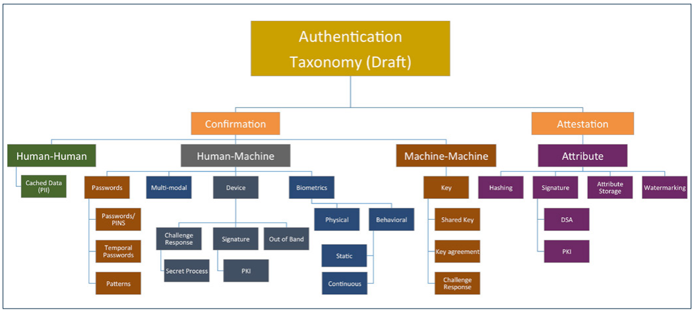
図28：認証分類体系の草案。確認（Confirmation）は人対人、人対機械、機械対機械に分岐し、証明（Attestation）は属性に分岐する。人対人はキャッシュデータ（PIL）やパスワード、PIN、時間制パスワード、パターン、人対機械はマルチモーダル、デバイス、チャレンジ応答、署名、アウトオブバンド方式、秘密手順、PKI、生体認証（身体的・行動的、静的・継続的）、機械対機械は鍵（共有鍵、鍵合意、チャレンジ応答）に分類。属性にはハッシュ、署名（DSA、PKI）、属性ストレージ、電子透かしが含まれる。
Figure 28: Draft Authentication Taxonomy
図28：認証分類体系（草案）
未レビュー訳The notional authentication ontology attempts The security category is broken down into the following to define a metrology framework that is useful for foundational areas: better understanding, comparing, and measuring the
【左段】概念的な認証オントロジーは、認証技術の理解・比較・測定に役立つ計量枠組みの定義を目指します。 【右段】セキュリティの分類は、次の基礎領域に分けられます。
未レビュー訳•Uniqueness of the relationship to the entity,
•対象と主体との関係の一意性、
未レビュー訳appropriateness of authentication technologies to a specific
特定のユースケースに対する認証技術の適切性を
未レビュー訳•Protection and resilience of a token against
•トークンの侵害に対する保護と回復力、
未レビュー訳use-case. The measurement framework separates metrics
評価します。計測枠組みでは指標を
未レビュー訳compromise,
侵害に対する保護と回復力、
未レビュー訳into security, usability, deployability, and manageability categories (see Figure 29). It is important to note that • Protection of a token during delivery, each category may overlap or impact the others. Security
【左段】セキュリティ、ユーザビリティ、導入可能性、管理容易性の各カテゴリに分類します（図29参照）。各カテゴリは重複したり、相互に影響したりすることがあります。特にセキュリティ 【右段・箇条書き】配送中のトークンの保護、
未レビュー訳•Protection of metadata in storage, and
•保管中のメタデータの保護、および
未レビュー訳and usability are of special interest; while usability is often
とユーザビリティが重視されます。ユーザビリティはしばしば
未レビュー訳•Protection / resilience of storage backup.
•保管バックアップの保護／回復力。
未レビュー訳thought of as a tradeoff to security, both must be satisfied for the user to support the security of the system.
セキュリティとのトレードオフと考えられますが、システムのセキュリティを利用者が支えるには両方を満たす必要があります。
未レビュー訳The usability category follows the ISO 9241-11 (1988) areas of:
ユーザビリティのカテゴリは、ISO 9241-11（1988）の次の領域に従います。
未レビュー訳•Effectiveness,
•有効性、
未レビュー訳
図29：認証適合性枠組み。中央の4領域にSecurity（セキュリティ）、Deployability（導入可能性）、Usability（ユーザビリティ）、Manageability（管理容易性）を配置し、四方向の矢印でカテゴリ間の関連を示す。
•Efficiency, and
•効率性、および
未レビュー訳•Satisfaction.
•満足度。
未レビュー訳Specific methods of calculating measurements in these categories are not currently included and may be unique to each authentication mechanism and environment. The framework supports integration with the programmatic categories of deployability and manageability, but measurement areas in these categories are not currently defined, as they are often well specified within organizations. Future programmatic efforts will be focused toward a NISTIR to describe the research results, encourage
これらのカテゴリにおける測定値の算出方法は現時点では含まれておらず、認証メカニズムや利用環境ごとに異なる場合があります。この枠組みは、導入可能性と管理容易性というプログラム上のカテゴリとの統合を支援します。ただし、これらのカテゴリにおける測定領域は、組織内ですでに明確に定義されていることが多いため、現時点では定義されていません。今後のプログラム活動では、研究結果を説明するNISTIRを作成し、
未レビュー訳Figure 29: Suitability Framework for Authentication further discussion with the community, and provide
【左段・図29キャプション】図29：認証適合性枠組み 【右段】コミュニティでのさらなる議論を促し、
未レビュー訳recommendations for future standards development efforts, with the goal of moving toward specifying independently measurable strength requirements rather than specific implementation requirements.
将来の標準開発に向けた推奨事項を示す予定です。目標は、特定の実装要件ではなく、独立して測定可能な強度要件の規定へ移行することです。
未レビュー訳The program status was presented and well received BelowisalistofNCCoE’shighlightsandaccomplishments at the 2016 World eID and Cybersecurity Conference. As for FY 2016: this program is to eventually define the future development of standards, concerns as to the immediate adoptability
【左段】プログラムの状況は、2016年のWorld eID and Cybersecurity Conferenceで発表され、好評を得ました。このプログラムは将来の標準開発を定めることを目指すため、標準を直ちに採用できるかという懸念が示されました。 【右段】2016年度におけるNCCoEの主な成果は次のとおりです。
未レビュー訳P u b l i c a t i o n s
刊行物
未レビュー訳were received and will inform future research. Additional
こうした懸念が寄せられ、今後の研究に反映されます。さらに、
未レビュー訳•Draft Special Publication (SP) 1800-4, Mobile
•草案の特別刊行物（SP）1800-4『モバイル
未レビュー訳work to identify interdependencies, such as with identity
ID管理などとの相互依存関係を含め、
未レビュー訳Device Security: Cloud & Hybrid Builds Practice
デバイスセキュリティ：クラウドおよびハイブリッド構築の実践
未レビュー訳management and authorization controls and requirements,
管理・認可制御とその要件を特定する追加作業は、
未レビュー訳Guide: demonstrated how commercially available
ガイド』は、市販の技術が
未レビュー訳should help allay these concerns.
こうした懸念の払拭に役立つはずです。
未レビュー訳technologies can meet an organization’s needs to
組織のニーズを満たし、
未レビュー訳In addition, NIST CSD will work with the community in FY
さらに、2017年度にはNIST CSDが関係者と協力し、
未レビュー訳secure sensitive enterprise data accessed by and/
社員のモバイルデバイスからアクセスされる、またはそこに保存される機微な企業データを保護できることを示しました。このガイドは
未レビュー訳2017 to identify and address common areas of authentication
2017年度に認証要件の共通領域を
未レビュー訳or stored on employees’ mobile devices. The guide
モバイルデバイスを保護する方法を説明しています。
未レビュー訳requirements to create a framework for researching and
特定して対処し、このオントロジーを用いて認証機構を研究・開発するための枠組みを
未レビュー訳describes approaches for securing mobile devices
これは、クラウドベースの構成だけでなく、
未レビュー訳developing authentication mechanisms using this ontology.
作成します。
未レビュー訳in both a cloud-based architecture and also an
クラウドと企業環境を組み合わせた
未レビュー訳If a clear metrology can be established, future access control
明確な計量体系を確立できれば、将来のアクセス制御
未レビュー訳architecture using a hybrid of cloud and enterprise
ハイブリッドアーキテクチャにも対応しています（
未レビュー訳process implementations should be less susceptible to
プロセス実装は、
未レビュー訳architecture (see https://nccoe.nist.gov/projects/
https://nccoe.nist.gov/projects/
未レビュー訳vulnerabilities specific to individual implementations.
個々の実装に固有の脆弱性の影響を受けにくくなります。
未レビュー訳building_blocks/mobile_device_security).
building_blocks/mobile_device_security）。
未レビュー訳C O N TA C T :
連絡先：
未レビュー訳•Draft SP 1800-5, Financial Services IT Asset Management Practice Guide: demonstrated how
•草案SP 1800-5「金融サービスIT資産管理実践ガイド」：組織が
未レビュー訳Dr. Kim Schaffer
Dr. Kim Schaffer
未レビュー訳an organization can, in an automated fashion, gain
自動化によって把握できることを示しました。
未レビュー訳(301) 975-8375
(301) 975-8375
未レビュー訳customized insight into 1) what is on its network,
1) ネットワーク上の資産、
未レビュー訳kim.schaffer@nist.gov
kim.schaffer@nist.gov
未レビュー訳2) the status of each hardware and software component in its environment, and 3) how to prioritize resources to address vulnerabilities.
2) 環境内の各ハードウェア・ソフトウェアの状態、3) 脆弱性に対処するための資源配分の優先順位を。
未レビュー訳N A T I O N A L C Y B E R S E C U R I T Y
国家サイバーセキュリティ
未レビュー訳This kind of understanding and insight can help increase a financial organization’s cybersecurity
こうした理解と知見は、金融機関のサイバーセキュリティ
未レビュー訳C E N T E R O F E X C E L L E N C E
卓越性センター
未レビュー訳resilience by enhancing the visibility of assets, revealing which applications are actually being used, identifying vulnerable assets, enabling faster
レジリエンスを高めます。資産の可視性を高め、実際に利用されているアプリケーションを明らかにし、脆弱な資産を特定し、対応を迅速化することで、
未レビュー訳The National Cybersecurity Center of Excellence
National Cybersecurity Center of Excellence（NCCoE）は
未レビュー訳response to security alerts, and reducing help-desk
セキュリティ警告への迅速な対応を可能にし、ヘルプデスクの
未レビュー訳(NCCoE) is a collaborative hub where industry organizations,
産業界の組織、
未レビュー訳response times (see https://nccoe.nist.gov/projects/
応答時間を短縮します（参照：https://nccoe.nist.gov/projects/
未レビュー訳government agencies, and academic institutions work
政府機関および学術機関が協力する拠点です。
未レビュー訳use_cases/financial_services_sector/it_asset_
use_cases/financial_services_sector/it_asset_
未レビュー訳together to address the private sector’s most pressing
民間部門が直面する喫緊の
未レビュー訳management
management）。
未レビュー訳cybersecurity issues. As a public-private partnership, industry experts and technology partners—from Fortune 50 market • Wireless Medical Infusion Pumps Final Project leaders to smaller companies specializing in IT security—
【左段】サイバーセキュリティ課題に取り組みます。官民連携の枠組みで、業界の専門家と技術パートナー（Fortune 50企業からITセキュリティを専門とする小規模企業まで）が 【右段・見出し】無線医療用輸液ポンプ最終プロジェクト
未レビュー訳Description:: examined the security of wireless
プロジェクト概要：企業ネットワーク上の無線
未レビュー訳choose to work with the NCCoE to develop practical, example
NCCoEと協力し、実用的なサイバーセキュリティ対策の例を
未レビュー訳medical devices on an enterprise network using
医療機器のセキュリティを、輸液ポンプをユースケースとして検討しました（
未レビュー訳cybersecurity solutions using standards, best practices, and
標準、ベストプラクティス、および
未レビュー訳infusion pumps as a use case (see https://nccoe.
ユースケースとして輸液ポンプを使用しました（参照：https://nccoe.
未レビュー訳commercially available technology. The NCCoE documents
市販技術を用いて実用的なサイバーセキュリティ対策の例を開発します。NCCoEは
未レビュー訳nist.gov/projects/use_cases/medical_devices).
nist.gov/projects/use_cases/medical_devices）。
未レビュー訳these example solutions in the NIST Special Publication
これらの対策例をNIST特別刊行物
未レビュー訳•Domain Name System-Based Security for
•ドメインネームシステム（DNS）を基盤とする電子メール向けセキュリティ
未レビュー訳1800 series, which maps technical capabilities to the NIST
SP 1800シリーズにまとめます。同シリーズは技術的能力をNIST
未レビュー訳Electronic Mail Final Project Description: explored
最終プロジェクト概要：信頼できる電子メール
未レビュー訳Cybersecurity Framework and details the steps needed to
サイバーセキュリティフレームワークに対応付け、実環境で対策例を再現するための手順を示します。
未レビュー訳a security platform that provides trustworthy email
交換を提供するセキュリティプラットフォームを検討しました。これは、組織間の
未レビュー訳recreate the example solution in the real world. The NCCoE
NCCoEは、
未レビュー訳exchanges across organizational boundaries to
境界を越えた電子メール交換を可能にし、
未レビュー訳aims to provide practical cybersecurity solutions that are
NCCoEは実用的なサイバーセキュリティ対策の提供を目指しており、対策は
未レビュー訳help businesses improve the privacy and security
企業が従業員の業務におけるプライバシーとセキュリティの保護を
未レビュー訳cost-effective, repeatable, and scalable to increase the rate of
費用対効果が高く、再現可能かつ拡張可能で、導入率を高めます。
未レビュー訳protections of their employees’ operations (see
向上できるよう支援します（参照：
未レビュー訳adoption and accelerate effective innovation across business
企業分野全体で効果的なイノベーションを加速し、
未レビュー訳https://nccoe.nist.gov/projects/building_blocks/
https://nccoe.nist.gov/projects/building_blocks/
未レビュー訳sectors.
ます。
未レビュー訳secured_email).
secured_email）。
未レビュー訳•Data Integrity: Recovering from a Destructive Malware Attack Final Project Description: explored methods to effectively recover operating systems, databases, user files, applications, and software/system configurations. It will also explore
•データ完全性：破壊的マルウェア攻撃からの復旧 最終プロジェクト概要：オペレーティングシステム、データベース、ユーザーファイル、アプリケーション、およびソフトウェア／システム構成を効果的に復旧する方法を検討しました。さらに、
未レビュー訳issues of auditing and reporting (user activity
監査と報告（ユーザー活動
未レビュー訳•Identity and Access Management for Smart Home
•スマートホームデバイス向けID・アクセス管理コンセプトペーパー：
未レビュー訳monitoring, file system monitoring, database
の監視、ファイルシステム監視、データベース
未レビュー訳Devices Concept Paper: outlined potential project
検討候補となるテーマとして、識別、
未レビュー訳monitoring, scanning backups/snapshots for
の監視、バックアップ／スナップショットのマルウェアスキャン、
未レビュー訳topics for exploration, including identification,
認証、IoTデバイスの認可を挙げ、
未レビュー訳malware, and rapid recovery solutions) to support
マルウェア対策および迅速な復旧策を用いて、
未レビュー訳authentication, and authorization for Internet
モノのインターネット（IoT）デバイス、特にスマート
未レビュー訳recovery and investigations (see https://nccoe.nist.
復旧と調査を支援します（参照：https://nccoe.nist.
未レビュー訳of Things devices, specifically within the smart
ホーム（参照：https://nccoe.nist.gov/projects/
未レビュー訳gov/projects/building_blocks/data_integrity).
gov/projects/building_blocks/data_integrity）。
未レビュー訳home (see https://nccoe.nist.gov/projects/project-concepts/idam-smart-home-devices).
project-concepts/idam-smart-home-devices）。
未レビュー訳•Privacy-Enhanced Identity Federation Project Description Draft: examined how privacy-E v e n t s enhancing technologies that leverage market-dominant standards can be integrated into identity NCCoE hosted several events to support project broker solutions to meet the privacy objectives of development and receive feedback on proposed example users and organizations (see https://nccoe.nist. solutions. Highlights include: gov/projects/building_blocks/privacy-enhanced-
•【左段・箇条書き】プライバシー強化IDフェデレーション 草案プロジェクト説明：市場で広く使われる標準を活用したプライバシー強化技術をIDブローカー・ソリューションに統合し、利用者と組織のプライバシー目標を満たす方法を検討しました（参照：https://nccoe.nist.gov/projects/building_blocks/privacy-enhanced- 【右段・見出し】イベント NCCoEは、プロジェクト開発を支援し、提案された解決策への意見を得るため、複数のイベントを開催しました。主なものは次のとおりです。
未レビュー訳•NCCoE Building Dedication, February 8, 2016,
•NCCoE施設の竣工式、2016年2月8日、
未レビュー訳identity-brokers).
identity-brokers）。
未レビュー訳Rockville, MD: NCCoE hosted a ribbon cutting
メリーランド州ロックビル：NCCoEはテープカット
未レビュー訳•Multi-factor Authentication for e-Commerce Draft and building dedication ceremony for its new Project Description: examined how multi-factor facility in Rockville. (see https://nccoe.nist.gov/ authentication for e-commerce transactions that news/nist-and-nccoe-celebrate-move-expanded-are tied to existing web analytics and contextual cybersecurity-facility). risk calculation can increase assurance in purchaser
•【左段・箇条書き】電子商取引の多要素認証 草案プロジェクト説明：既存のWeb分析および状況に応じたリスク計算と連動する電子商取引の多要素認証により、購入者 【右段・イベント】と施設の竣工式を開催しました（参照：https://nccoe.nist.gov/news/nist-and-nccoe-celebrate-move-expanded-cybersecurity-facility）。
未レビュー訳•Protecting Consumer Data: Securing Payment
•消費者データの保護：決済
未レビュー訳or user identity and thus help reduce the risk of
またはユーザーIDの信頼性を高め、
未レビュー訳and Transaction Information Workshop, March
および取引情報に関するワークショップ、2016年3月
未レビュー訳online identification and authentication fraud
オンライン上の識別・認証詐欺のリスクを低減することを検討しました（参照：
未レビュー訳22, 2016, University of Alabama Birmingham: The
22日、アラバマ大学バーミンガム校：NCCoEは
未レビュー訳(see https://nccoe.nist.gov/projects/use_cases/
https://nccoe.nist.gov/projects/use_cases/
未レビュー訳NCCoE hosted a full-day workshop with retail
小売業界の関係者と技術ベンダーを招き、終日のワークショップを開催しました。
未レビュー訳multifactor-authentication-ecommerce).
multifactor-authentication-ecommerce）。
未レビュー訳industry members and technology vendors to
小売業界の関係者と技術ベンダーを招き、
未レビュー訳•Securing Non-Credit Card, Sensitive Data Draft explore consumer-facing retail cybersecurity Project Description: explored the implementation issues in depth. The participants recognized that of data masking and tokenization, coupled with cybersecurity incidents affecting consumer-fine-grained access control such as Attribute Based facing businesses threaten the financial security Access Control, which may significantly improve of companies and the public, weakening the security of personally identifiable information consumer confidence, eroding individual privacy (PII) transmitted and stored during commercial protections, and damaging the brand value payment transactions, as well as PII shared and reputation of businesses. Topics included internally within a retail organization and externally methods to combat online fraud (e.g., through with business partners (see https://nccoe.nist.gov/ multi-factor authentication for e-commerce projects/use_cases/securing-sensitive-consumer-transactions) and to safeguard customer profiles data). (e.g., through secure handling of sensitive, non-credit card consumer data). (See https://nccoe.
•【左段・箇条書き】クレジットカード以外の機微データ保護 草案プロジェクト説明：データマスキングとトークン化に、ABACなどのきめ細かなアクセス制御を組み合わせる方法を検討しました。これにより、商取引の決済で送受信・保存される個人識別情報（PII）や、小売組織内外で共有されるPIIの保護を大幅に向上できます（参照：https://nccoe.nist.gov/projects/use_cases/securing-sensitive-consumer-data）。 【右段・イベント】小売業界のサイバーセキュリティ課題を詳しく検討しました。参加者は、消費者向け企業へのサイバーインシデントが企業と一般市民の経済的安全を脅かし、消費者の信頼を損ない、個人のプライバシー保護を弱め、企業のブランド価値と評判を傷つけると認識しました。オンライン詐欺への対策（電子商取引の多要素認証など）や、顧客プロフィールの保護（クレジットカード以外の機微データの安全な取扱いなど）を議論しました（参照：https://nccoe.
未レビュー訳•Mobile Application Single Sign-On Draft Project nist.gov/events/consumer-facing-retail-sector-Description: explored the use of multi-factor workshop.) authentication and mobile single sign-on for native and web applications to improve interoperability
•【左段・箇条書き】モバイルアプリケーションのシングルサインオン 草案プロジェクト説明：ネイティブアプリとWebアプリに多要素認証とモバイルシングルサインオンを導入し、相互運用性を高める方法を検討しました。 【右段・URL末尾】nist.gov/events/consumer-facing-retail-sector-workshop）。
未レビュー訳•Pre-Workshop: Maritime and Oil & Natural Gas,
•事前ワークショップ：海事・石油・天然ガス分野、
未レビュー訳between mobile platforms, applications, and
モバイルプラットフォーム、アプリケーション、
未レビュー訳April 5, 2016, Rockville, MD: In coordination with
2016年4月5日、メリーランド州ロックビル：
未レビュー訳identity providers, irrespective of the application
アプリケーションの開発に使われるプラットフォームにかかわらず、IDプロバイダー間の
未レビュー訳the NIST Cybersecurity Framework Workshop,
NISTサイバーセキュリティフレームワーク・ワークショップに合わせ、
未レビュー訳development platform used in their construction
相互運用性を向上するためのもので、（参照：https://nccoe.nist.gov/projects/use_cases/
未レビュー訳the NCCoE facilitated an open session with
NCCoEは公開セッションを開催し、
未レビュー訳(see https://nccoe.nist.gov/projects/use_cases/
mobile-sso）。
未レビュー訳members of the maritime and oil and natural
海事・石油・天然ガス業界の関係者が参加し、
未レビュー訳mobile-sso).
mobile-sso）。
未レビュー訳gas industries to identify and prioritize hard cybersecurity challenges that can be addressed
各業界が抱える重大なサイバーセキュリティ課題を特定し、優先順位を付け、共同で対処し、
未レビュー訳•Authentication for Law Enforcement Vehicle jointly (see https://nccoe.nist.gov/events/pre-Systems Draft Project Description: explored workshop-maritime-and-oil-and-natural-gas-implementing an integrated set of authentication open-session). mechanisms, improving system security, usability, and safety (see https://nccoe.nist.gov/projects/
•【左段・箇条書き】法執行機関の車両システム向け認証 草案プロジェクト説明：統合認証機構一式の実装を検討し、システムのセキュリティ、ユーザビリティ、安全性の向上を目指します（参照：https://nccoe.nist.gov/projects/ 【右段・イベント】（参照：https://nccoe.nist.gov/events/pre-workshop-maritime-and-oil-and-natural-gas-open-session）。
未レビュー訳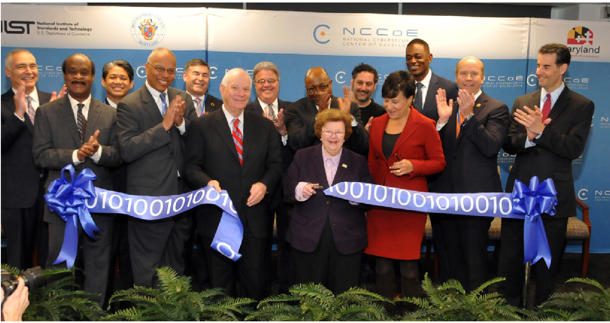
図30：NCCoE施設の竣工式で行われたテープカットの写真。政府・産業界の関係者が、0と1の数字が印刷された青いリボンの後ろに並ぶ。背景にNIST、NCCoE、メリーランド州のロゴがある。人物名は下のキャプションに左から順に記載。
Figure 30: NCCoE Building Dedication
図30：NCCoE施設の竣工式
未レビュー訳FRONT ROW (from left to right): Ike Leggett, Montgomery County Executive; Maryland Lt Governor Boyd Rutherford; Senator Ben Cardin; Senator Barbara Mikulski; Commerce Secretary Penny Pritzker; Rep. John Delaney; and Rep. John Sarbanes.
前列（左から）：モンゴメリー郡行政執行官Ike Leggett、メリーランド州副知事Boyd Rutherford、上院議員Ben Cardin、上院議員Barbara Mikulski、商務長官Penny Pritzker、下院議員John Delaney、下院議員John Sarbanes。
未レビュー訳BACK ROW (from left to right): Al Grasso, President and Chief Executive Officer, MITRE; Gil Quiniones, President and Chief Executive Officer, New York Power Authority; Michael Brown, President and Chief Executive Officer, Symantec; Robert Caret, University System of Maryland Chancellor; Willie E. May, Director, NIST and Under Secretary of Commerce for Standards and Technology; Amit Yoran, RSA President; and Dean Garfield, President and Chief Executive Officer, Information Technology Industry Council. Photo credit: Joseph Andrucyk/State of Maryland Office of the Governor.
後列（左から）：MITRE社長兼CEO Al Grasso、ニューヨーク電力公社社長兼CEO Gil Quiniones、Symantec社長兼CEO Michael Brown、メリーランド大学システム総長Robert Caret、NIST所長兼商務省標準技術担当次官Willie E. May、RSA社長Amit Yoran、情報技術産業協議会会長兼CEO Dean Garfield。写真提供：メリーランド州知事室 Joseph Andrucyk。
未レビュー訳NCCoE staff were invited to speak at more than 30 • Christian Science Monitor’s Passcode industry events and conferences. Highlights include:
【左段】NCCoE職員は、30を超える業界イベントや会議での講演に招かれました。主な例は次のとおりです。 【右段・箇条書き】Christian Science Monitor誌のPasscode Conversation、2015年10月8日、ワシントンD.C.：
未レビュー訳Conversation, October 8, 2015, Washington, D.C.: Government leaders discussed ongoing
政府指導者は継続中の
未レビュー訳•RSA Conference, February 29-March 4, 2016, cybersecurity challenges, such as how to adopt San Francisco: Nate Lesser, NCCoE Deputy a proactive approach to effectively defend Director, delivered a keynote address at the State tomorrow’s networks and how to disrupt attacks of Maryland-hosted luncheon and presented a upon organizational systems. Nate Lesser, NCCoE session on the NCCoE Wireless Infusion Pumps Deputy Director, participated in the Keynote Panel project (see https://nccoe.nist.gov/events/rsa-Discussion and described the center’s work in conference-2016). collaborating and coordinating between public and
•【左段・箇条書き】RSA Conference、2016年2月29日～3月4日、サンフランシスコ：NCCoE副所長Nate Lesserは、メリーランド州主催の昼食会で基調講演を行い、NCCoEのWireless Infusion Pumpsプロジェクトについて講演しました（参照：https://nccoe.nist.gov/events/rsa-conference-2016）。 【右段】サイバーセキュリティ課題について議論しました。具体的には、将来のネットワークを効果的に防御するための積極的な対策や、組織システムへの攻撃を阻止する方法などです。Nate Lesser副所長は基調講演パネルに参加し、公共部門と
未レビュー訳•Healthcare Information and Management Systems private sector. Society (HIMSS) Conference, February 29-March 4, 2016, Las Vegas: NCCoE engineers demonstrated the Wireless Infusion Pumps and Securing Electronic Health Records on Mobile Devices projects (see https://nccoe.nist.gov/events/himms-
•【左段・箇条書き】医療情報・管理システム協会（HIMSS）会議、2016年2月29日～3月4日、ラスベガス：NCCoEの技術者はWireless Infusion PumpsとSecuring Electronic Health Records on Mobile Devicesの各プロジェクトを実演しました（参照：https://nccoe.nist.gov/events/himms-）。 【右段】民間部門間の協働・調整におけるセンターの取り組みを紹介しました。
未レビュー訳図31：HIMSS 2016のFederal Health IT Solutions Pavilionで、NCCoE/NISTのGavin O’Brienが電子医療記録をモバイル端末で保護する方法を実演。ブースの前に来場者が座り、説明者が画面付きの演台の横で説明している。演台にはHIMSS 16の表示がある。
Figure 31: Gavin O’Brien (NCCoE, NIST) provided a demonstration on securing electronic health records on mobile devices.
図31：Gavin O’Brien（NCCoE、NIST）がモバイルデバイス上の電子医療記録を保護する方法を実演。
未レビュー訳In FY 2017, the NCCoE plans to release six SP-1800 C O N TA C T : practice guides:
【左段】2017年度、NCCoEはSP 1800シリーズの実践ガイドを6件公開する予定です。 【右段・連絡先見出し】連絡先：
未レビュー訳Mr. Timothy McBride
Mr. Timothy McBride
未レビュー訳•Domain Name System-Based Secured (301) 975-0214 Email, timothy.mcbride@nist.gov
•【左段・箇条書き】ドメインネームシステム（DNS）ベースのセキュアメール、 【右段・連絡先】(301) 975-0214／timothy.mcbride@nist.gov
未レビュー訳•Situational Awareness: Secured Networking Infrastructure for the Energy Sector,
•状況認識：エネルギー分野向けの安全なネットワーク基盤、
未レビュー訳•Wireless Medical Infusion Pumps,
•無線医療用輸液ポンプ、
未レビュー訳I N T E R N E T I N F R A S T R U C T U R E
インターネット基盤
未レビュー訳P R O T E C T I O N
保護
未レビュー訳•Derived Personal Identity Verification Credentials,
•派生個人識別検証（PIV）資格情報、
未レビュー訳•Data Integrity: Recovering from a Destructive ITL’s Internet Infrastructure Protection (IIP) program, led Malware Attack, and by the Advanced Network Technologies Division (ANTD),
•【左段・箇条書き】データ完全性：破壊的マルウェア攻撃からの復旧、および 【右段】ITLのInternet Infrastructure Protection（IIP）プログラムは、Advanced Network Technologies Division（ANTD）が主導し、
未レビュー訳•Mobile Application Single Sign-On. works with industry to develop the measurement science
•【左段・箇条書き】モバイルアプリケーションのシングルサインオン。 【右段】業界と協力して計測科学を開発し、
未レビュー訳In addition to the release of these practice guides, and new standards necessary to ensure the robustness, NCCoE plans to attend both national and international scalability, and security of the global Internet. The research cybersecurity conferences to present NCCoE projects and focuses on the measurement and modeling techniques participate in panels to help increase the rate of adoption necessary to understand, predict, and control the behavior and accelerate innovation. The NCCoE has already been of Internet-scale networked information systems. The ITL selected to speak at the 2017 HIMSS conference.
【左段】これらの実践ガイドの公開に加え、NCCoEは国内外のサイバーセキュリティ会議に出席し、プロジェクトを紹介するとともに、パネルに参加して導入を促進し、技術革新を加速する予定です。NCCoEは2017年のHIMSS会議で講演することも決まっています。 【右段】また、インターネットの堅牢性、拡張性、安全性を確保する新たな標準も策定します。研究では、インターネット規模のネットワーク情報システムの挙動を理解・予測・制御するために必要な計測・モデリング手法を扱います。
未レビュー訳staff use these insights to guide the design, analysis, and standardization of new technologies aimed at improving
ITL職員はこれらの知見を設計、分析、新技術の標準化に活用し、改善を目指します。
未レビュー訳F O R M O R E I N F O R M AT I O N , S E E :
詳細情報：
未レビュー訳the robustness of the Internet’s core infrastructure. Recent efforts have focused on enhancing the security of the
インターネット基幹インフラの堅牢性です。最近の取り組みでは、その
未レビュー訳https://nccoe.nist.gov/
https://nccoe.nist.gov/
未レビュー訳Internet’s Domain Name System (DNS), the Border Gateway Protocol (BGP), and Electronic mail (Email) and messaging infrastructures. In addition, the IIP program addresses other In FY 2016, as technology specifications and systemic vulnerabilities in core Internet technologies, such as implementations matured, the ITL staff began a series of those that enable massive-scale Distributed Denial of Service outreach efforts with the networking industry to increase (DDoS) attacks.
【p.87右段】インターネットのドメインネームシステム（DNS）、ボーダー・ゲートウェイ・プロトコル（BGP）、電子メールおよびメッセージング基盤です。IIPプログラムは、大規模な分散型サービス妨害（DDoS）攻撃を可能にするものなど、コアインターネット技術の他の全身的脆弱性にも対処します。 【p.88左段・続き】2016年度、技術仕様と実装が成熟する中、ITL職員はネットワーク業界への働きかけを開始し、
未レビュー訳the understanding and foster the adoption of BGP security mechanisms. The ITL staff organized and led a workshop
BGPセキュリティ機構への理解を深め、その採用を促進しました。ITL職員はワークショップを企画して主導し、
未レビュー訳RPKI/BGPsecによるボーダー・ゲートウェイ・プロトコル（BGP）セキュリティを示す図。中央にRPKI/BGPsecの鍵の図を置き、周囲に「Robust Inter-Domain Routing」「Border Gateway Protocol」の文字を配する。
In FY 2016, ITL
2016年度、ITL
未レビュー訳at the June North American Network Operators Group
6月のNorth American Network Operators Group
未レビュー訳staff made significant
職員は大きな
未レビュー訳(NANOG) meeting aimed at addressing the practical issues,
（NANOG）会議で実務上の課題、
未レビュー訳contributions to the
貢献を
未レビュー訳state of vendor support and existing operational experience
ベンダーの支援状況や既存の運用経験など、
未レビュー訳design, standardization,
設計および標準化、
未レビュー訳with emerging BGP security technologies (see, https://www.
新興のBGPセキュリティ技術について議論しました（参照：https://www.
未レビュー訳test and measurement
試験と測定の分野で、
未レビュー訳nanog.org/meetings/abstract?id=2846). The ITL staff also
nanog.org/meetings/abstract?id=2846）。ITL職員はさらに
未レビュー訳of technologies to
インターネットのグローバルなルーティング
未レビュー訳initiated a nationwide BGP security pilot deployment project
ITL職員は全国規模のBGPセキュリティ試験導入プロジェクトも開始しました。
未レビュー訳improve the security
プロトコルBGPのセキュリティと堅牢性を高める技術の
未レビュー訳with the Internet2 research and education community.
Internet2の研究・教育コミュニティと連携しました。
未レビュー訳and robustness of the Internet’s global routing
開発に貢献しました。NIST職員は、
未レビュー訳ITL’s High Assurance
ITLのHigh Assurance
未レビュー訳高保証ドメイン（HAD）の概念図。「DNSSEC-Enabled Trust」を示し、HADを中心にネットワーク構成を描く。
protocol BGP. NIST staff
IETF（インターネット技術特別調査委員会）標準の主要な貢献者であり、
未レビュー訳Domains (HAD) project
Domains（HAD）プロジェクトは、
未レビュー訳were key contributors to Internet Engineering Task Force aims to leverage NIST’s (IETF) standards to add cryptographic validation to BGP (see, previous successes in https://tools.ietf.org/html/draft-ietf-sidr-bgpsec-protocol/), the development and and to address the robustness issues associated with deployment of Domain large-scale routing policy violations (see, https://www.rfc- Name System Security editor.org/rfc/rfc7908.txt). In addition, NIST developed and Extentions (DNSSEC) released open-source reference implementations of these technologies to enable emerging IETF specifications, online test tools to foster their scalable solutions of long standing Internet security issues. adoption and measurement systems to track their operational In FY 2016, the project focused on addressing the issues of deployment. Figure 32 below is a visualization generated by Email phishing attacks and developing scalable techniques one such monitoring tool of the emerging global structure of to enable the cryptographic protection of Email message the Resource Public Key Infrastructure (RPKI). The RPKI has exchanges. NIST published NIST SP 800-177, Trustworthy been designed to provide the trust infrastructure upon which Email, a comprehensive guidance on the deployment and Internet routing security technologies can be based.
【左段】BGPに暗号学的検証を加えるIETF標準に貢献しました（参照：https://tools.ietf.org/html/draft-ietf-sidr-bgpsec-protocol/）。大規模な経路制御ポリシー違反に関する堅牢性の問題にも取り組みました（参照：https://www.rfc-editor.org/rfc/rfc7908.txt）。NISTは、新興IETF仕様のオープンソース参照実装を開発・公開し、導入を促すオンライン試験ツールと運用展開を追跡する測定システムも作成しました。下の図32は監視ツールの一つが生成した、世界規模のResource Public Key Infrastructure（RPKI）構造の可視化です。RPKIはインターネット経路制御セキュリティ技術の信頼基盤として設計されています。 【右段】HADプロジェクトは、NISTがDomain Name System Security Extensions（DNSSEC）技術の開発・導入で得た成功を活用し、長年のインターネットセキュリティ課題に対する拡張可能な解決策を実現します。2016年度には、メールのフィッシング問題に取り組み、メールメッセージを暗号学的に保護する拡張可能な技術を開発しました。NISTはSP 800-177『Trustworthy Email』を公開し、DNSベースの認証方式の導入と利用に関する包括的な指針を示しました。
未レビュー訳use of emerging DNS-based authentication mechanisms to combat email phishing and spam. In addition, ITL developed and deployed online test tools to assist network operators in the configuration and verification of their deployment of emerging anti-phishing technologies. The second focus area for the HAD project in FY 2016 was the advancement of specifications, implementations and deployment of IETF DNS-based Authentication of Named Entities (DANE) technology that leverages a secured DNS as a ubiquitous key discovery and management infrastructure. In FY 2016, the ITL staff contributed to the development of IETF DANE specifications and developed distributed test and measurement tools to assist in their adoption and use in the global Internet. Figure 33 (See next page) shows the user interface to the recently released NIST DANE test system that enables product developers and network operators to test their use of the DANE technologies to store, retrieve and validate various types of cryptographic keying material for end-to-end email security, and for general transport-layer security (TLS) for web and other applications.
DNSベースの新たな認証方式を利用してメールのフィッシングやスパムに対処するため、ITLはネットワーク運用者がフィッシング対策技術の導入を設定・検証できるオンライン試験ツールを開発・展開しました。HADプロジェクトの2016年度の第2の重点は、安全なDNSを汎用的な鍵の発見・管理基盤として活用する、IETFのDNS-based Authentication of Named Entities（DANE）技術の仕様、実装、展開を進めることでした。2016年度、ITL職員はIETF DANE仕様の策定に貢献し、世界のインターネットでの採用と利用を支援する分散型試験・測定ツールを開発しました。図33（次頁参照）は、開発者やネットワーク運用者が、エンドツーエンドのメールセキュリティやWebその他のアプリケーション向けトランスポート層セキュリティ（TLS）で用いる暗号鍵素材を保存、取得、検証するための、公開済みNIST DANE試験システムのユーザーインターフェースを示します。
未レビュー訳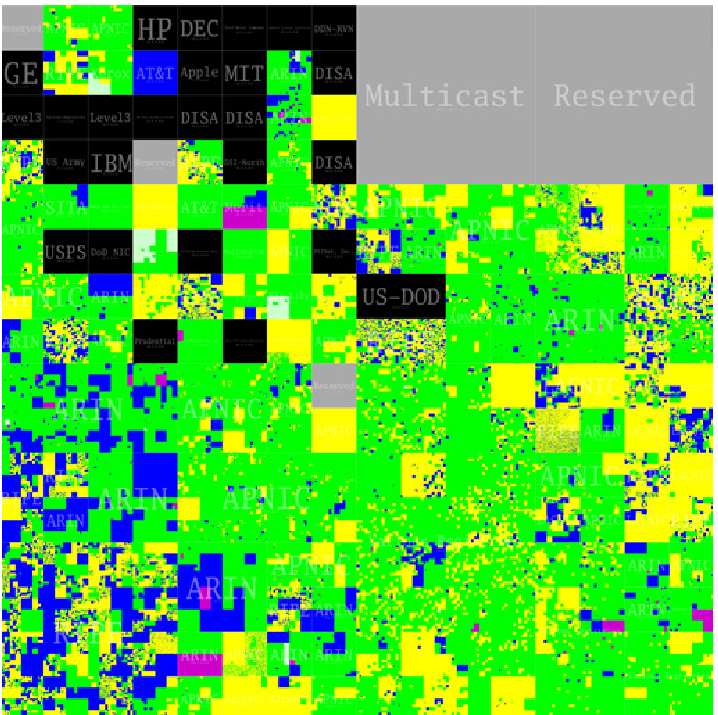
図32：BGPセキュリティのための、インターネット全体におけるResource Public Key Infrastructure（RPKI）の普及範囲と深さの変化を示すNISTの可視化。色分けされたアドレス空間ブロックに組織やネットワーク名を示し、MulticastとReserved領域を灰色で区別する。
Figure 32: NIST Visualization of the Evolving Coverage
図32：NISTによる、インターネット全体のResource Public Key Infrastructure（RPKI）の普及範囲の変化の可視化
未レビュー訳InFY2017,themajormilestonesforInternetInfrastructure Program will include:
FY2017年におけるInternet Infrastructure Programの主な節目は次のとおりである。
未レビュー訳•Completing the publication of IETF standards for BGP security and increasing outreach and pilot deployment activities to foster commercial deployment of these technologies;
•BGPセキュリティに関するIETF標準の発行を完了し、これらの技術の商用展開を促すため、周知活動と試験導入を拡大する。
未レビュー訳•Continuing to develop and mature DANE specifications and technologies for scalable key management in the Internet and conducting research on their applicability to emerging problem domains, such as authentication in consumer networks; and
•DANEの仕様と、インターネット上で拡張可能な鍵管理を実現する技術の開発・成熟を継続し、消費者ネットワークの認証など、新たな課題領域への適用可能性を研究する。
未レビュー訳•Publishing NIST guidance on current DDoS mitigation techniques and continuing to research and develop new approaches based upon
•現在のDDoS緩和手法に関するNISTガイダンスを発行し、次を基盤とする新たな手法の研究・開発を継続する。
未レビュー訳Figure 33: NIST DANE Test system for Secure Email
図33: セキュアメール向けNIST DANEテストシステム
未レビュー訳emerging SDN technologies.
新興SDN技術。
未レビュー訳The HAD project staff also collaborated with the
HADプロジェクトの担当者はさらに、
未レビュー訳F O R M O R E I N F O R M AT I O N , S E E :
詳細情報：
未レビュー訳NCCoE DNS-Based Secured Email project that tested and produced detailed deployment guidance for commercial Robust Inter-Domain Routing Project: implementations of DANE-based server-to-server security https://www.nist.gov/programs-projects/robust-inter-for email transport (see https://nccoe.nist.gov/projects/ domain-routing building_blocks/secured_email).
【左段】NCCoEのDNSベース・セキュアメールプロジェクトとも連携し、DANEに基づくサーバー間メール転送セキュリティの商用実装を試験して、詳細な導入ガイダンスを作成した（https://nccoe.nist.gov/projects/building_blocks/secured_email を参照）。【右段】Robust Inter-Domain Routing Project: https://www.nist.gov/programs-projects/robust-inter-domain-routing
未レビュー訳NIST RPKI Deployment Monitor and Test System:
NIST RPKI展開監視・テストシステム：
未レビュー訳The ITL staff in the
ITLの職員は、
未レビュー訳https://www.nist.gov/services-resources/software/nist-rpki-
https://www.nist.gov/services-resources/software/nist-rpki-
未レビュー訳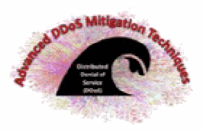
NIST Email Testerの画面。未暗号化メール、S/MIME、OpenPGP、検索、履歴、OpenPGP鍵生成の各機能を表示する
Advanced Distributed
高度分散型
未レビュー訳deployment-monitor-and-test-system
deployment-monitor-and-test-system
未レビュー訳DenialofService(DDoS) Mitigation Techniques
サービス妨害（DDoS）緩和技術
未レビュー訳BGP Secure Routing Extension (BGP‑SRx) Prototype:
BGPセキュアルーティング拡張（BGP-SRx）プロトタイプ：
未レビュー訳project are working
プロジェクトでは取り組んでいる
未レビュー訳https://www.nist.gov/services-resources/software/bgp-
https://www.nist.gov/services-resources/software/bgp-
未レビュー訳with the community
コミュニティと連携して
未レビュー訳secure-routing-extension-bgp-srx-prototype
secure-routing-extension-bgp-srx-prototype
未レビュー訳to document and
記録し、さらに
未レビュー訳BRITE - BGPSEC / RPKI Interoperability Test & Evaluation
BRITE（BGPSEC / RPKI相互運用性テスト・評価
未レビュー訳quantitatively characte-
定量的に評価し、
未レビュー訳System:
システム：
未レビュー訳rize the applicability, effectiveness and impact of various approaches to filtering https://www.nist.gov/services-resources/software/brite-spoofed Internet Protocol (IP) traffic streams and develop bgpsec-rpki-interoperability-test-evaluation-system consensus recommendations and deployment guidance that
【左段】偽装されたInternet Protocol（IP）トラフィックをフィルタリングするさまざまな手法の適用可能性、有効性および影響を定量的に評価し、合意に基づく推奨事項と導入ガイダンスを策定する。【右段】https://www.nist.gov/services-resources/software/brite-bgps-rpki-interoperability-test-evaluation-system
未レビュー訳High Assurance Domains Project:
高保証ドメインプロジェクト：
未レビュー訳candrivetheiradoptioninFederalnetworkenvironmentsand
これらの導入を促進し、連邦政府のネットワーク環境および
未レビュー訳https://www.nist.gov/programs-projects/high-assurance-
https://www.nist.gov/programs-projects/high-assurance-
未レビュー訳throughout the Internet industry. In FY 2016, the NIST staff
インターネット業界全体へ広げる。FY 2016には、NIST職員が
未レビュー訳domains
domains
未レビュー訳developed benchmarking methodologies to characterize the performance implications of various techniques to block
商用ルーターで偽装IPパケットを遮断する各種手法の性能への影響を評価するベンチマーク手法を開発し、
未レビュー訳NIST SP 800-177 Trustworthy Email:
NIST SP 800-177「信頼できる電子メール」：
未レビュー訳spoofed IP packets in commercial routers and developed
さらに、
未レビュー訳http://nvlpubs.nist.gov/nistpubs/SpecialPublications/NIST.
http://nvlpubs.nist.gov/nistpubs/SpecialPublications/NIST.
未レビュー訳draft deployment guidance for these mechanisms in a
これらの仕組みについて、
未レビュー訳SP.800-177.pdf
SP.800-177.pdf
未レビュー訳variety of network interconnection scenarios.
さまざまなネットワーク相互接続シナリオにおける導入ガイダンスの草案を作成した。
未レビュー訳NIST DANE Test System:
NIST DANEテストシステム：
未レビュー訳In addition to understanding the barriers to deployment
既存のDDoS緩和技術の導入と普及を妨げる要因を把握するとともに、
未レビュー訳https://dane-test.had.dnsops.gov/
https://dane-test.had.dnsops.gov/
未レビュー訳and adoption of existing DDoS mitigation techniques, the ITL staff began the research and evaluation of new, scalable
ITL職員は、拡張性の高い新しい手法の研究と評価を開始した。
未レビュー訳Advanced DDoS Mitigation Techniques Project:
高度DDoS緩和技術プロジェクト：
未レビュー訳means of DDoS detection and mitigation, based upon
これらはDDoSを検知・緩和する手法であり、
未レビュー訳https://www.nist.gov/programs-projects/advanced-ddos-
https://www.nist.gov/programs-projects/advanced-ddos-
未レビュー訳Software Defined Networking (SDN) technologies.
Software Defined Networking（SDN）技術に基づく。
未レビュー訳mitigation-techniques
mitigation-techniques
未レビュー訳Software Defined Virtual Networks Project: https://www.nist.gov/programs-projects/software-defined-works to improve the interoperability, broad acceptance, and adoption of security automation solutions to address current
【p.89右段】ソフトウェア定義仮想ネットワークプロジェクト：https://www.nist.gov/programs-projects/software-defined- 【p.90右段冒頭】このプログラムは、セキュリティ自動化ソリューションの相互運用性、広範な受容および採用を促進し、現在および将来のセキュリティ課題に対処するとともに、イノベーションの機会を創出する。
未レビュー訳Mr. Doug Montgomery
Doug Montgomery氏
未レビュー訳and future security challenges, creating opportunities for
原文のみ
(301) 975-3630
(301) 975-3630
未レビュー訳innovation.
原文のみ
dougm@nist.gov
dougm@nist.gov
未レビュー訳S p e c i f i c a t i o n , S t a n d a r d s , a n d G u i d a n c e D e v e l o p m e n t
仕様、標準およびガイダンスの開発
未レビュー訳To support the overarching security automation vision, it
セキュリティ自動化に関する包括的なビジョンを支えるには、
未レビュー訳A D V A N C E D S E C U R I T Y
高度なセキュリティ
未レビュー訳is necessary to have specifications that describe the required
必要な相互作用を記述する仕様、
未レビュー訳T E S T I N G A N D
試験と
未レビュー訳interactions between systems, standards that document
システム間のやり取りを定め、国際的な合意に基づく方法を記録する標準、
未レビュー訳M E A S U R E M E N T S
測定
未レビュー訳international consensus approaches, and guidance for product developers and implementers. Through close work
国際的な合意に基づくアプローチを記録する標準、および製品開発者と実装者向けのガイダンスが必要である。政府、産業界、学術界のパートナーとの緊密な連携を通じて、
未レビュー訳S e c u r i t y A u t o m a t i o n a n d
セキュリティ自動化と
未レビュー訳with partners in government, industry, and academia, CSD continues to facilitate the definition and development of
CSDはセキュリティ自動化の手法の定義と開発を引き続き促進し、
未レビュー訳C o n t i n u o u s M o n i t o r i n g
継続的モニタリング
未レビュー訳security automation approaches that enable organizations to
組織がITセキュリティリスクを
未レビュー訳IT organizations operate a diverse set of computing
IT組織は多様なコンピューティング
未レビュー訳understand and manage IT security risks.
理解し、管理できるようにする。
未レビュー訳assets that access, route, store, and process information that is critical to the operations of businesses and the missions During FY 2016, CSD has continued to work to build on of government agencies. These IT environments are under previous security automation work, as follows: constant threat of attack and are frequently undergoing • Identified and addressed gaps in the current change, with new and updated software being deployed
【左段】資産を運用している。資産は、企業の業務や政府機関の任務に不可欠な情報にアクセスし、情報を転送、保存、処理する。これらのIT環境は絶えず攻撃の脅威にさらされ、頻繁に変化する。新規・更新ソフトウェアが展開され、【右段】FY 2016にCSDは従来のセキュリティ自動化の取組を発展させ、次の作業を続けた。・現在の
未レビュー訳specifications;
仕様における不足を特定し、対処した。
未レビュー訳along with updated configurations. The wide variety of
構成も更新される。コンピューティング製品は多様であり、
未レビュー訳•Evolved existing approaches to achieve greater
•既存の手法を発展させ、
未レビュー訳computing products, the dynamic nature of software, the
ソフトウェアの動的な性質に加え、
未レビュー訳scalability and impact;
既存の手法を発展させ、拡張性と影響を高めた。
未レビュー訳speed of configuration change, and the diversity of threats require organizations to maintain situational awareness over • Participated in working groups in standards
【左段】設定変更の速さや脅威の多様性を考慮すると、組織は自らのIT資産の状況を把握し、【右段】・標準化
未レビュー訳development organizations to promote
団体の作業部会に参加して、
未レビュー訳their IT assets and to utilize this information to make informed
得られた情報を活用し、十分な情報に基づく
未レビュー訳international consensus around standardized
標準化されたアプローチについて、国際的な合意を促進し、
未レビュー訳risk-based decisions.
リスクベースの意思決定を行う。
未レビュー訳approaches;
た。
未レビュー訳Security automation utilizes standardized data formats and transport protocols to enable data to be exchanged • Provided additional guidance on architectural,
【左段】セキュリティ自動化では、標準化されたデータ形式と転送プロトコルを用いて、データを交換できるようにする。【右段】・アーキテクチャ、
未レビュー訳design, and analysis concerns; and
設計および分析上の懸念に関する追加ガイダンスを提供し、
未レビュー訳between business, operational, and security systems that support security processes by:
業務系、運用系、セキュリティ系の各システム間でデータを交換して、次のセキュリティプロセスを支援する。
未レビュー訳•Developed and maintained tools and reference implementations.
•ツールとリファレンス実装を開発・維持した。
未レビュー訳•Identifying IT assets, including hardware, software, and data; CSD is currently working with its partners in various
•【左段】・ハードウェア、ソフトウェア、データなどのIT資産を特定する。【右段】CSDは現在、さまざまなパートナーと連携している。
未レビュー訳•Providing awareness over the operational state of standards-development organizations, including ISO, IETF, Organization for the Advancement of Structured Information computing devices; Standards (OASIS), the Forum of Incident Response and
•【左段】・コンピューティングデバイスの運用状態を把握する。 【右段】ISO、IETF、Organization for the Advancement of Structured Information Standards（OASIS）、Forum of Incident Response and
未レビュー訳•Enabling security reference data to be collected Security Teams (FIRST), and the Trusted Computing Group from internal and external sources; and (TCG), to further mature and broaden the adoption of
•【左段】・内部および外部の情報源からセキュリティ参照データを収集できるようにする。 【右段】Security Teams（FIRST）、Trusted Computing Group（TCG）などの標準化団体と協力し、セキュリティ自動化の仕様、参照データ、および技術の成熟と普及を進めている。
未レビュー訳•Supporting analysis processes that measure the security automation specifications, reference data, and effectiveness of security controls and provide techniques. This area of work is focused on evolving security visibility into security risks, enabling risk-based automation specifications to integrate with existing transport decision making. protocols to provide for the secure, interoperable exchange Commercial solutions built using security automation of security automation data. Additional work is focused on
•【左段】・セキュリティ管理策の有効性を測定する分析プロセスを支援し、セキュリティリスクの可視性を高めて、リスクに基づく意思決定を可能にする。 【右段】この作業では、セキュリティ自動化仕様を既存の転送プロトコルに統合し、セキュリティ自動化データを安全かつ相互運用可能な形で交換できるようにすることに重点を置く。さらに別の作業では、
未レビュー訳specifications enable the collection and harmonization of evolving security metrics and providing consensus guidance vast amounts of operational and security data into coherent, on security automation approaches. Through the definition comparable information streams to achieve situational and adoption of security automation standards and awareness that allows the timely and active management of guidelines, IT vendors will be able to provide standardized diverse IT systems. Through the creation of reference data security solutions to their customers. These solutions support and guidance, and the international recognition of flexible, continuous monitoring and automated, dynamic network open standards, the NIST security automation program defense capabilities, based on the analysis of data from operational and security data sources and the collective and to enable other agencies and private-sector entities action of security components.
【左段・p.90】仕様により大量の運用データとセキュリティデータを収集・調和させ、一貫性があり比較可能な情報の流れとして整理できる。これにより状況認識を高め、多様なITシステムを迅速かつ能動的に管理できる。参照データとガイダンスの作成、および柔軟なオープン標準の国際的な認知を通じて、NISTのセキュリティ自動化プログラムは他の政府機関や民間部門の組織を支援する。【右段・p.90–91】セキュリティ指標の進化と、セキュリティ自動化手法に関する合意形成のためのガイダンス提供にも取り組む。セキュリティ自動化の標準・指針を定義し採用することで、ITベンダーは顧客に標準化されたセキュリティソリューションを提供できる。これらは、運用データとセキュリティデータの情報源、およびセキュリティコンポーネントの協調動作の分析に基づき、継続的監視と自動化された動的ネットワーク防御機能を支える。
未レビュー訳to meet their goals. For CSD, SCAP is a critical component of the SCAP Validation Program, the National Vulnerability
目標を達成できるようにする。CSDにとってSCAPは、SCAP Validation Program、National Vulnerability
未レビュー訳Additionally, CSD is working with the vulnerability
さらに、CSDは脆弱性コミュニティと協力して、
未レビュー訳Database (NVD), and the National Checklist Program (NCP).
Database（NVD）およびNational Checklist Program（NCP）の重要な構成要素である。
未レビュー訳community to enable the automated analysis of metrics such as the Common Vulnerability Scoring System (CVSS), In September 2012, CSD published SP 800-126 establishing a baseline of the minimum information needed Revision 2, The Technical Specification for the Security to properly inform the vulnerability management process, Content Automation Protocol (SCAP): SCAP Version 1.2. and facilitating the sharing of vulnerability information That document describes the 11 component specifications across language barriers. To assist in this work, a public draft composingSCAP.SeeTable2(below):SCAP1.2Specifications of NISTIR 8138, Vulnerability Description Ontology (VDO): A for details. Framework for Characterizing Vulnerabilities, was created
【左段】Common Vulnerability Scoring System（CVSS）などの指標を自動分析できるようにし、脆弱性管理プロセスに適切な情報を提供するための最低限必要な情報を定め、言語の壁を越えた脆弱性情報の共有を促進する。この作業を支援するため、NISTIR 8138「脆弱性記述オントロジー（VDO）：脆弱性を特徴付ける枠組み」の公開草案を作成した。【右段】2012年9月、CSDはSP 800-126 Revision 2「セキュリティコンテンツ自動化プロトコル（SCAP）の技術仕様：SCAPバージョン1.2」を公開した。この文書はSCAPを構成する11の仕様を記述している。詳細は下の表2「SCAP 1.2仕様」を参照。
未レビュー訳Since the release of SCAP 1.2, CSD has worked to
SCAP 1.2の公開後、CSDはSCAP仕様の利用に関するガイダンスの
未レビュー訳to foster a conversation and collect feedback on the best
脆弱性管理プロセス内の自動化をさらに高める最善の
未レビュー訳improve guidance around the use of SCAP specifications. In
改善に取り組んできた。
未レビュー訳mechanisms to improve the degree of automation within
仕組みについて議論を促し、意見を収集する。
未レビュー訳FY 2015, CSD released draft NISTIR 8058, Security Content
FY 2015には、CSDはNISTIR 8058「セキュリティコンテンツ
未レビュー訳vulnerability management processes. CSD is planning to
CSDはこの文書を、
未レビュー訳Automation Protocol (SCAP) Version 1.2 Content Style
自動化プロトコル（SCAP）バージョン1.2コンテンツスタイル
未レビュー訳develop this document iteratively with the vulnerability
脆弱性コミュニティと協力して段階的に作成し、
未レビュー訳Guide: Best Practices for Creating and Maintaining SCAP
ガイド：SCAP 1.2コンテンツの作成・維持に関するベストプラクティス
未レビュー訳community to ensure participation from as many
脆弱性コミュニティと協力して段階的に作成し、
未レビュー訳1.2 Content, which provides guidance for SCAP 1.2 content
SCAP 1.2コンテンツ作成者向けのガイダンスを示す。
未レビュー訳stakeholders as possible.
可能な限り多くの関係者の参加を確保する。
未レビュー訳creators to ensure that stylistic variations in SCAP 1.2
SCAP 1.2コンテンツの作成者が、文体のばらつきを
未レビュー訳Security automation standardization work has been content are addressed in a way that improves the accuracy focused in three areas: the evolution and international and consistency of results, avoids performance problems, adoption of the Security Content Automation Protocol reducesusereffort,lowerscontentmaintenanceburdens,and (SCAP), the development of software asset management enables content reuse. To achieve this, the report documents standards to support operational and cybersecurity best practices for content creation and encourages their use use cases, and the development of security automation by SCAP content authors and maintainers. Feedback on consensus standards. The following sections detail this work. this report is welcomed and will help CSD to work toward
【左段】セキュリティ自動化の標準化は、3分野を中心に進められている。すなわち、セキュリティコンテンツ自動化プロトコル（SCAP）の進化と国際的な採用、運用・サイバーセキュリティのユースケースを支えるソフトウェア資産管理標準の策定、ならびにセキュリティ自動化に関する合意標準の策定である。以下の各節でこれらの取組を詳述する。【右段】正確性と一貫性を高め、性能上の問題を避け、利用者の作業負担やコンテンツの保守負担を軽減し、再利用を可能にする形で扱う。これを実現するため、同報告書はコンテンツ作成のベストプラクティスを記載し、SCAPコンテンツの作成者と保守担当者に活用を促す。この報告書への意見を歓迎する。CSDは意見を踏まえ、
未レビュー訳producing a final version of this document.
この文書の最終版を作成する。
未レビュー訳S e c u r i t y C o n t e n t A u t o m a t i o n P r o t o c o l
セキュリティコンテンツ自動化プロトコル
未レビュー訳CSD is actively working on an SCAP 1.3 revision. In July
CSDは現在、SCAP 1.3への改訂作業を進めている。2016年7月、
未レビュー訳( S C A P )
（SCAP）
未レビュー訳2016, CSD posted drafts for public comment of SP 800-126
SP 800-126 Revision 3とSP 800-126Aの草案を一般意見募集のため公開した。
未レビュー訳SCAP is a multipurpose protocol that provides an
SCAPは、
未レビュー訳Revision 3 and SP 800-126A. SP 800-126 Revision 3, is The
SP 800-126 Revision 3とSP 800-126Aである。SP 800-126 Revision 3は、
未レビュー訳automated means to collect and assess the state of devices.
機器の状態を収集・評価する自動化手段を提供する。
未レビュー訳Technical Specification for the Security Content Automation
セキュリティコンテンツ自動化プロトコル（SCAP）の技術仕様であり、
未レビュー訳SCAP supports automated vulnerability checking, verifying
SCAPは、脆弱性の自動検査と、
未レビュー訳Protocol (SCAP): SCAP Version 1.3. SP 800-126A is SCAP 1.3
SCAPバージョン1.3を規定する。SP 800-126Aは、SCAP 1.3の
未レビュー訳the installation of patches, checking security configuration
パッチのインストール確認、セキュリティ構成
未レビュー訳Component Specification Version Updates: An Annex to NIST
コンポーネント仕様のバージョン更新に関する文書であり、NIST
未レビュー訳settings, verifying technical-control compliance, measuring
設定を確認し、技術的管理策への適合性を検証し、セキュリティを測定し、
未レビュー訳Special Publication 800-126 Revision 3. These publications
特別刊行物800-126 Revision 3の付属書である。これらの刊行物は
未レビュー訳security, and examining systems for indicators of a
システム内に侵害の兆候がないか
未レビュー訳collectively document the draft requirements for SCAP 1.3.
SCAP 1.3の草案要件をまとめている。
未レビュー訳compromise. SCAP uses the Extensible Markup Language
調べる。SCAPはExtensible Markup Language（XML）を用いて
未レビュー訳SP 800-126A is a new publication that allows SCAP 1.3 to
SP 800-126Aは、SCAP 1.3が
未レビュー訳(XML) to standardize the format and nomenclature by which
XMLを用いて形式と用語を標準化し、
未レビュー訳take advantage of selected minor version updates of SCAP
SCAPコンポーネント仕様のうち選定されたマイナーバージョン更新を
未レビュー訳security software products communicate information about
セキュリティソフトウェア製品が、ソフトウェアの欠陥に関する情報をやり取りし、
未レビュー訳component specifications, as well as designated Open
指定されたOpen
未レビュー訳software flaws, security configurations, and other aspects of
セキュリティ構成、およびデバイス状態のその他の側面に関する情報を扱えるようにする。
未レビュー訳Vulnerability and Assessment Language (OVAL) platform
Vulnerability and Assessment Language（OVAL）プラットフォームの
未レビュー訳the device state. SCAP enables security automation content,
SCAPは、セキュリティ自動化コンテンツ（
未レビュー訳schema revisions. The SCAP 1.3 revision includes the
スキーマ改訂も利用できる新しい刊行物である。SCAP 1.3の改訂には、次の
未レビュー訳also known as “SCAP content,” to be expressed using
「SCAPコンテンツ」とも呼ばれる）を
未レビュー訳following changes:
変更が含まれる。
未レビュー訳standardized formats, identifiers, and scoring models. This
標準化された形式、識別子およびスコアリングモデルを用いて表現する。これらの
未レビュー訳•Adoption of the Open Vulnerability and
•採用対象はOpen Vulnerability and
未レビュー訳content can be used by any tool that is conformant to the
これらのコンテンツは、仕様に適合するあらゆるツールで
未レビュー訳Assessment Language (OVAL) 5.11.1, which was
Assessment Language（OVAL）5.11.1であり、
未レビュー訳specifications to collect and evaluate the state of software
デバイスにインストールされたソフトウェアの状態を
未レビュー訳released in April 2015;
2015年4月に公開された。
未レビュー訳installed on a device.
収集・評価できる。
未レビュー訳•Adoption of the Common Vulnerability Scoring
•採用対象はCommon Vulnerability Scoring
未レビュー訳SCAP has been widely adopted by major software
SCAPは主要なソフトウェア
未レビュー訳System (CVSS) v3, which was released in June
System（CVSS）v3であり、2015年6月に
未レビュー訳and hardware manufacturers and has become a significant
およびハードウェアメーカーに広く採用され、情報セキュリティ管理・ガバナンスプログラムの重要な
未レビュー訳2015;
公開された。
未レビュー訳component of information-security-management and governance programs. SCAP-enabled tools are currently • Removal of support for CVSSv2; and being used by the U.S. Government, critical infrastructure
【左段】構成要素となっている。SCAP対応ツールは現在、米国政府、重要インフラ企業、【右段】・CVSSv2のサポートを削除し、
未レビュー訳•Deprecation of support for older specification
•古い仕様の改訂版
未レビュー訳companies, academia, and other businesses, both
学術界およびその他の組織などで、
未レビュー訳revisions and SCAP 1.0.
およびSCAP 1.0のサポートを廃止した。
未レビュー訳domestically and internationally. Currently, CSD is leveraging
国内外で利用されている。現在、CSDは複数の領域でSCAPを活用し、
未レビュー訳| TABLE 2: SCAP 1.2 SPECIFICATIONS | |
| SPECIFICATIONS | DESCRIPTION |
| Languages | |
| Extensible Configuration Checklist Description Format (XCCDF) 1.2 | Used for authoring security checklists/benchmarks and for reporting the results of evaluating them |
| Open Vulnerability and Assessment Language (OVAL) 5.11.1 | Used for representing system-configuration information, assessing machine state, and reporting assessment results |
| Open Checklist Interactive Language (OCIL) 2.0 | Used for representing checks that collect information from people or from existing data stores populated by other data collection methods |
| Reporting Formats | |
| Asset Reporting Format (ARF) 1.1 | Used to express information about assets and to define the relationships between assets and reports |
| Asset Identification 1.1 | Used to uniquely identify assets based on known identifiers and other asset information |
| Identification Schemes | |
| Common Platform Enumeration (CPE) 2.3 | A nomenclature and dictionary of hardware, operating systems, and applications; a method to identify the applicability to platforms |
| Software Identification (SWID) Tags 2015 | A structured metadata format for describing a released software product |
| Common Configuration Enumeration (CCE) 5 | A nomenclature and dictionary of software-security configurations |
| Common Vulnerabilities and Exposures (CVE) | A nomenclature and dictionary of security-related software flaws |
| Measurement and Scoring Systems | |
| Common Vulnerability Scoring System (CVSS) | Used for measuring the relative severity of software flaws |
| Common Configuration Scoring System (CCSS) | Used for measuring the relative severity of device security (mis-)configuration issues |
| Content and Result Integrity | |
| Trust Model for Security Automation Data (TMSAD) | Guidance for using digital signatures in a common trust model applied to security automation specifications |
原本PDFの抜粋画像
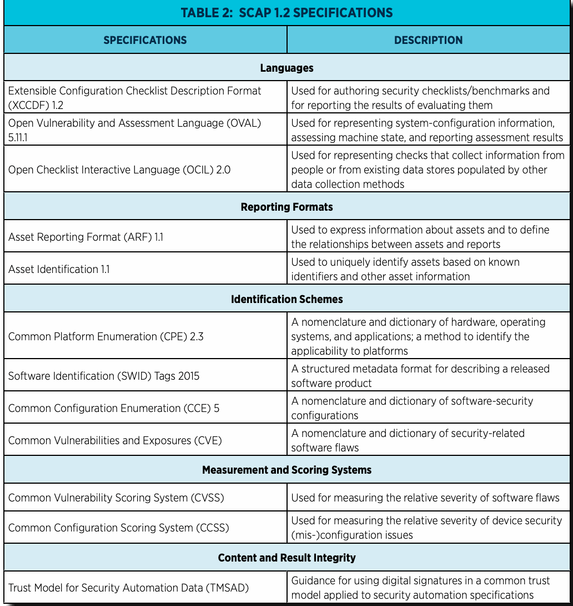
| 表2：SCAP 1.2仕様 | |
| 仕様 | 説明 |
| 言語 | |
| Extensible Configuration Checklist Description Format（XCCDF）1.2 | セキュリティチェックリスト／ベンチマークの作成、および評価結果の報告に使用 |
| Open Vulnerability and Assessment Language（OVAL）5.11.1 | システム構成情報の表現、マシン状態の評価、および評価結果の報告に使用 |
| Open Checklist Interactive Language（OCIL）2.0 | 人または他のデータ収集方法で作成された既存データストアから情報を集めるチェックの表現に使用 |
| 報告形式 | |
| Asset Reporting Format（ARF）1.1 | 資産に関する情報の表現、および資産とレポートの関係の定義に使用 |
| Asset Identification 1.1 | 既知の識別子とその他の資産情報に基づき、資産を一意に識別するために使用 |
| 識別方式 | |
| Common Platform Enumeration（CPE）2.3 | ハードウェア、オペレーティングシステム、アプリケーションの命名規則および辞書。プラットフォームへの適用可能性を特定する方法 |
| Software Identification（SWID）Tags 2015 | リリース済みソフトウェア製品を記述するための構造化メタデータ形式 |
| Common Configuration Enumeration（CCE）5 | ソフトウェアセキュリティ構成の命名規則および辞書 |
| Common Vulnerabilities and Exposures（CVE） | セキュリティ関連ソフトウェア欠陥の命名規則および辞書 |
| 測定およびスコアリングシステム | |
| Common Vulnerability Scoring System（CVSS） | ソフトウェア欠陥の相対的な深刻度の測定に使用 |
| Common Configuration Scoring System（CCSS） | デバイスのセキュリティ構成（不備）の相対的な深刻度の測定に使用 |
| コンテンツおよび結果の完全性 | |
| Trust Model for Security Automation Data（TMSAD） | セキュリティ自動化仕様に適用する共通の信頼モデルで、デジタル署名を使用するためのガイダンス |
CSD is currently considering the public feedback CSDisalsostartingtoplanaSCAP2.0release.Thisrelease received on the drafts while preparing the final versions of willfurtherdefinetheinterfacesanduseoftransportprotocols these publications for release in early FY 2017. CSD is also for SCAP tools to provide component-level interoperability working on an updated version of SCAPVal, the SCAP content between products supporting various SCAP functions. validation tool. Once the specification revision is complete, By providing more interoperability, SCAP v2 will provide CSD will also work to update the SCAP Validation Program to the basic software and configuration posture information
【左段】CSDは草案に寄せられた公開コメントを検討しながら、これらの刊行物をFY 2017初頭に公開するため最終版の準備を進めている。また、SCAPコンテンツ検証ツールであるSCAPValの更新版にも取り組んでいる。仕様改訂が完了したらSCAP Validation Programも更新する。【右段】CSDはSCAP 2.0の公開計画にも着手している。このリリースでは、SCAPツールのインターフェースと転送プロトコルの利用方法をさらに定義し、さまざまなSCAP機能をサポートする製品間のコンポーネントレベルの相互運用性を実現する。相互運用性の向上により、SCAP v2は、ネットワーク接続デバイスの基本的なソフトウェアおよび構成状態情報を提供する。
未レビュー訳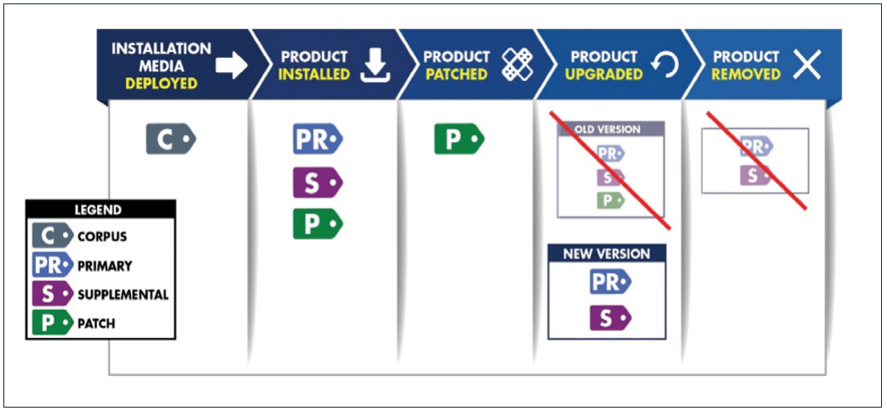
図34：SWIDタグがソフトウェア製品のライフサイクルを支える仕組み。導入媒体の展開から、製品のインストール、パッチ適用、アップグレード、削除へと矢印で順に示す。凡例はCorpus（C）、Primary（PR）、Supplemental（S）、Patch（P）の各タグを示す。アップグレードでは旧版タグを取り消し、新版タグに置き換える。製品削除時にはPR/Sタグを取り消す。
Figure 34: SWID Tags Support the Software Product Lifecycle
図34：SWIDタグがソフトウェア製品のライフサイクルを支える
未レビュー訳configuration management practices, supporting improved software licenses, managing software vulnerabilities and networked device hygiene. Furthermore, the posture related software patches, and assessing secure software information provided by SCAP v2 products will provide configurations. much of the context needed to prevent, detect, and respond
【左段】ライセンス管理、脆弱性管理および構成管理の実務の一環としてネットワーク接続機器を管理し、その衛生状態を改善する。さらに、SCAP v2製品が提供する状態情報は、攻撃の防止、検知、対応に必要な多くの背景情報となる。【右段】ソフトウェアライセンスの改善、ソフトウェア脆弱性と関連パッチの管理、および安全なソフトウェア構成の評価を支援する。
未レビュー訳To supplement the requirements in ISO/IEC 19770-
ISO/IEC 19770-
未レビュー訳to network attacks. This additional context will enable SCAP
この追加情報により、SCAP v2の情報を
未レビュー訳2:2015, CSD collaborated with DHS, NSA, and MITRE on the
2015の要件を補完するため、CSDはDHS、NSAおよびMITREと協力して
未レビュー訳v2 information to be applied for application whitelisting, the
アプリケーションのホワイトリスティング、
未レビュー訳development of NISTIR 8060, Guidelines for the Creation
NISTIR 8060「相互運用可能な
未レビュー訳detection of anomalous behavior, the gathering and use of
異常な振る舞いの検知、インディケータの収集・利用、
未レビュー訳of Interoperable Software Identification (SWID) Tags.
ソフトウェア識別（SWID）タグの作成に関するガイドライン」を策定した。
未レビュー訳indicators, the use of machine-readable threat information,
機械可読な脅威情報の利用、
未レビュー訳NISTIR 8060, published in April 2016, provides an overview
2016年4月に公開されたNISTIR 8060は、
未レビュー訳and orchestrating courses of action. CSD is preparing a draft
および対応措置のオーケストレーションに適用できる。CSDは草案の
未レビュー訳of the capabilities and usage of SWID tags as part of a
包括的なソフトウェアライフサイクルにおけるSWIDタグの機能と用途を概説する。
未レビュー訳whitepaper for release in early FY 2017 that will outline an
FY 2017初頭の公開を予定するホワイトペーパーでは、
未レビュー訳comprehensive software lifecycle. This report introduces
この報告書では、SWIDタグを運用環境で紹介し、
未レビュー訳approach, a development plan identifying the new and
新たに必要となる改訂仕様を特定する開発アプローチと計画、および
未レビュー訳SWID tags in an operational context, provides guidelines for
相互運用可能なSWIDタグの作成に関する指針を示し、
未レビュー訳revised specifications that will be needed, and a transition
必要となる改訂仕様と、
未レビュー訳the creation of interoperable SWID tags, and highlights key
SWIDタグの主要な適用シナリオを取り上げる。図
未レビュー訳plan for moving from SCAP 1.x to SCAP 2.0.
SCAP 1.xからSCAP 2.0へ移行する計画を示す。
未レビュー訳usage scenarios for which SWID tags are applicable. Figure
34は、複数種類のSWIDタグとそれらがどのように
未レビュー訳S o f t w a r e A s s e t M a n a g e m e n t S t a n d a r d s 34 illustrates several types of SWID tags and how these
【左段見出し】ソフトウェア資産管理標準【右段】
未レビュー訳support multiple elements of the software product life cycle,
ソフトウェア製品ライフサイクルの複数の段階を支えるかを示す。
未レビュー訳CSD has been collaborating with industry partners
CSDは業界パートナーと協力し、
未レビュー訳including deployment, installation, patching, upgrading and
展開、インストール、パッチ適用、アップグレード、および
未レビュー訳in support of ISO/IEC’s revision of standard ISO/IEC
ISO/IEC規格の改訂を支援している。ISO/IEC
未レビュー訳removal.
削除を含む。
未レビュー訳19770-2:2009, Information technology—Software asset
19770-2:2009「情報技術—ソフトウェア資産管理—第2部：ソフトウェア識別タグ」の
未レビュー訳Additionally, NIST has worked with the TCG to integrate
さらに、NISTはTCGと協力して、
未レビュー訳management—Part 2: Software identification tag, which
ソフトウェア識別タグ。これは
未レビュー訳SWID tags into the Trusted Network Communications (TNC)
SWIDタグをTrusted Network Communications（TNC）
未レビュー訳establishes a specification for tagging software to support
ソフトウェアの識別と管理を支援するタグ付け仕様を定めている。
未レビュー訳protocol, through the SCAP Messages for IF-M specification.
プロトコルに、SCAP Messages for IF-M仕様を通じて統合した。
未レビュー訳identification and management. An updated revision of this standard, ISO/IEC 19770-2:2015, was published on The information provided within SWID tags enhances October 1, 2015. The software identification (SWID) data the SCAP use cases by providing authoritative information model defined by this standard describes an XML format for that can be used to create Common Platform Enumeration software publishers to provide authoritative identification, (CPE) names, to support the targeting of checklists, and to categorization, software relationships (e.g., dependency, associate software flaws to products, based on a defect in a bundling, and patch), executable and library footprint software library or executable. CSD is currently working on details, and other metadata for software. This information a SWID tag validation tool, called SWIDVal, that will validate can be used to support operational and cybersecurity use a SWID tag document against the ISO/IEC 19770-2:2015 cases around managing software deployments, managing and NISTIR 8060 requirements. This tool is planned for an 8 5
【左段】ISO/IEC 19770-2:2015というこの規格の改訂版は、2015年10月1日に公開された。この規格のソフトウェア識別（SWID）データモデルは、ソフトウェア発行者が信頼できる識別情報、分類、ソフトウェア間の関係（依存、バンドル、パッチなど）、実行ファイルやライブラリのフットプリント詳細、その他のソフトウェアメタデータを提示するためのXML形式を定める。この情報は、ソフトウェア展開やライセンスの管理など、運用・サイバーセキュリティ上のユースケースを支援する。【右段】SWIDタグの情報は、信頼できる情報を提供してSCAPのユースケースを強化する。この情報はCommon Platform Enumeration（CPE）名の作成、チェックリストの対象選定、ライブラリまたは実行ファイルの欠陥に基づくソフトウェア欠陥と製品の関連付けに利用できる。CSDは現在、SWIDValというSWIDタグ検証ツールを開発中で、ISO/IEC 19770-2:2015およびNISTIR 8060の要件に照らしてタグ文書を検証する。このツールはFY 2017に
未レビュー訳P RO GRA M AN D P ROJEC T ACH IEV EM EN TS | FY 2 01 6
プログラムおよびプロジェクトの成果 | FY 2016
未レビュー訳early access release in FY 2017. CSD is also planning to work For more information, please refer to: http://datatracker. on a revision of NISTIR 8060 with additional tag signature ietf.org/wg/sacm/charter/ requirements for release in late FY 2017.
原文更新後、再確認待ち
Also, within the IETF, CSD has been collaborating
またIETF内では、CSDは協力している。
未レビュー訳D e v e l o p m e n t o f S e c u r i t y A u t o m a t i o n with the Managed Incident Lightweight Exchange (MILE)
【左段見出し】セキュリティ自動化の【右段】Managed Incident Lightweight Exchange（MILE）
未レビュー訳working group in order to develop the Resource-Oriented
ワーキンググループと協力し、Resource-Oriented
未レビュー訳C o n s e n s u s S t a n d a r d s
【左段見出し続き】合意標準の開発
未レビュー訳Lightweight Information Exchange (ROLIE) specification.
Lightweight Information Exchange（ROLIE）仕様を策定している。
未レビュー訳CSDhasbeenpromotingthebroadinternationaladoption
CSDはSCAPの幅広い国際的な採用を促進しており、
未レビュー訳This specification seeks to address the security automation
この仕様は、セキュリティ自動化に関する
未レビュー訳of SCAP by encouraging the integration of SCAP into other
SCAPを他の標準に統合するよう奨励するとともに、
未レビュー訳information discovery and dissemination use cases by
情報の発見・配信に関するユースケースに対応するため、
未レビュー訳standards, and by adapting SCAP to address specific gaps
標準に不足している点や課題に対処できるようSCAPを適応させている。CSDは引き続き業界パートナーと協力し、
未レビュー訳defininghowtoolsareexpectedtocommunicatewithsecurity
ツールに対して、セキュリティ自動化情報の
未レビュー訳and challenges. CSD has continued its collaboration with
課題領域に取り組んでいる。また、CSDはIETFの
未レビュー訳automation information repositories. ROLIE allows for the
リポジトリとの通信方法を定義する。ROLIEは、
未レビュー訳its industry partners in the IETF Security Automation and
Security Automation and
未レビュー訳transport, retrieval, and storage of any security automation-
セキュリティ自動化に関連するあらゆる種類の情報の転送、取得、保存を可能にする。
未レビュー訳Continuous Monitoring (SACM) working group. This working
Continuous Monitoring（SACM）ワーキンググループで協力している。このワーキンググループは、
未レビュー訳relevant information types. The ROLIE draft has undergone
ROLIEの草案は、
未レビュー訳group provides a venue for advancing appropriate SCAP
適切なSCAP仕様を
未レビュー訳two major revisions, with the final draft nearing completion.
大幅な改訂を2回経て、最終草案の完成が近づいている。
未レビュー訳specifications into international standards and addressing
国際標準に取り込み、
未レビュー訳In addition, CSD has begun the process of collaborating with
さらにCSDは、
未レビュー訳identified gap areas. The current scope of work for SACM
特定された不足領域に対処する。SACMの現在の作業範囲には、
未レビュー訳MILE and other stakeholders to create extension drafts for
MILEや他の関係者と協力して、拡張仕様案を作成することが含まれる。これらは、
未レビュー訳includes identifying and/or defining the transport protocols
機器の状態を期待値と比較して収集・評価するために必要な転送プロトコル
未レビュー訳ROLIE that address a number of information types, including
情報種別を扱うROLIEの拡張仕様案を作成する。これには、
未レビュー訳and data formats needed to support the collection and
デバイス状態の収集と評価に必要なデータ形式も含まれる。
未レビュー訳vulnerability, configuration checklist, and software metadata
脆弱性、構成チェックリスト、ソフトウェアメタデータなどの
未レビュー訳evaluation of a device state against the expected values.
期待値に照らしてデバイス状態を評価する。
未レビュー訳information types.
情報種別を対象とする。
未レビュー訳The SACM working group has been working on identifying
SACMワーキンググループでは、次の事項を特定する作業を進めている。
未レビュー訳The main ROLIE draft can be found at https://datatracker.
ROLIEの主な草案は次から入手できる：https://datatracker.
未レビュー訳use cases, requirements, and architectural models to
既存の仕様や標準に関するユースケース、要件、アーキテクチャモデルを
未レビュー訳ietf.org/doc/draft-ietf-mile-rolie/. Additional information on
ietf.org/doc/draft-ietf-mile-rolie/。ROLIEおよびその拡張草案の追加情報は、
未レビュー訳provide information to facilitate decisions about existing
既存の仕様や標準に基づく判断を支援する情報を提供する。
未レビュー訳ROLIEandontheextensiondraftscanbefoundintheworking
作業リポジトリ（GitHub）で確認できる：
未レビュー訳specifications and standards that can be referenced, required
参照できる仕様・標準と、必要な
未レビュー訳repository on GitHub: https://github.com/CISecurity/ROLIE/.
GitHub上の作業リポジトリ：https://github.com/CISecurity/ROLIE/。
未レビュー訳modifications or extensions to existing specifications and standards, and any gaps that need to be addressed. CSD is CSD also worked with its government and industry working with DHS, the Center for Internet Security (CIS), and partners in the TCG to define a number of specifications the TCG to bring existing work into the IETF SACM working related to the TNC protocol. The first such publication is the group, including OVAL and specifications related to the TNC TNC SCAP Messages for IF-M specification that supports protocol.
【左段】既存の仕様・標準の変更や拡張、および対処すべき不足を特定する。CSDはDHS、Center for Internet Security（CIS）、Trusted Computing Group（TCG）と協力し、OVALやTNC関連仕様を含む既存の成果をIETF SACMワーキンググループに取り込んでいる。【右段】CSDは政府・産業界のTCGパートナーとも協力し、TNCプロトコル関連の複数仕様を定義した。最初の刊行物は、SCAPコンテンツと結果をTNCプロトコル上で伝送するTNC SCAP Messages for IF-M仕様である。
未レビュー訳carryingtheSCAPcontentandresultsovertheTNCprotocols. The second is the TNC Enterprise Compliance Profile (ECP)
TNCプロトコル上でSCAPコンテンツと結果を伝送する。2つ目はTNC Enterprise Compliance Profile（ECP）
未レビュー訳The working group has been developing the following
このワーキンググループでは、次の
未レビュー訳and related specifications that support the exchange of SWID
および関連仕様であり、SWIDデータの交換を支援する。
未レビュー訳Internet Drafts:
Internet Draftを策定している：
未レビュー訳data over the TNC protocols. The ECP enables the collection of SWID data from a device for use by external tools to provide software inventory information. SCAP and SWID data collected using these mechanisms may be optionally used for network access control decision making, allowing the device state to be evaluated when devices connect and on an ongoing basis thereafter.
TNCプロトコル上のデータ交換を支援する。ECPは、デバイスからSWIDデータを収集し、外部ツールでソフトウェアインベントリ情報を作成する機能を備える。これらの仕組みで収集したSCAP/SWIDデータは、ネットワークアクセス制御の判断に任意で利用できる。その場合、デバイスの接続時および以後継続的にデバイス状態を評価できる。
未レビュー訳| INTERNET DRAFT | PURPOSE |
| https://datatracker.ietf.org/doc/draft-ietf-sacm- terminology/ | Definition of the common terminology used within several working-group documents. |
| https://datatracker.ietf.org/doc/draft-ietf-sacm- requirements/ | Listing architectural and specification requirements for SACM specifications. |
| https://datatracker.ietf.org/doc/draft-ietf-sacm- architecture/ | Definition of the SACM architecture to provide information for the development of methods to exchange security automation information (i.e., transports). |
| https://datatracker.ietf.org/doc/draft-ietf-sacm- information-model/ | Definition of the SACM information model to provide information for the development of data models. |
原本PDFの抜粋画像
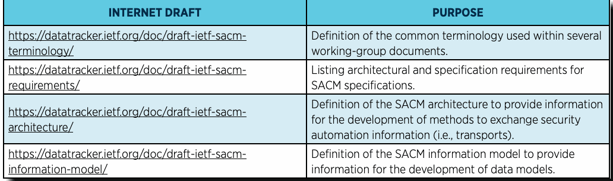
| Internet Draft | 目的 |
| https://datatracker.ietf.org/doc/draft-ietf-sacm-terminology/ | 複数のワーキンググループ文書で共通して使う用語の定義。 |
| https://datatracker.ietf.org/doc/draft-ietf-sacm-requirements/ | SACM仕様のアーキテクチャ要件および仕様要件の一覧。 |
| https://datatracker.ietf.org/doc/draft-ietf-sacm-architecture/ | セキュリティ自動化情報を交換する方法（トランスポートなど）の開発に必要な情報を提供するSACMアーキテクチャの定義。 |
| https://datatracker.ietf.org/doc/draft-ietf-sacm-information-model/ | データモデル開発に必要な情報を提供するSACM情報モデルの定義。 |
For more information on these specifications, C O N TA C T : please visit: http://www.trustedcomputinggroup.org/
【左段】これらの仕様の詳細は次を参照：https://www.trustedcomputinggroup.org/ 【右段見出し】連絡先：
未レビュー訳Mr. David Waltermire
David Waltermire氏
未レビュー訳resources/tnc_scap_messages_for_ifm, and http://www.
resources/tnc_scap_messages_for_ifm、およびhttp://www.
未レビュー訳(301) 975-3390
(301) 975-3390
未レビュー訳trustedcomputinggroup.org/resources/tnc_endpoint_
trustedcomputinggroup.org/resources/tnc_endpoint_
未レビュー訳david.waltermire@nist.gov
david.waltermire@nist.gov
未レビュー訳compliance_profile_specification. Updated versions of the ECP and SWID related specifications, along with a usage scenario around S e c u r i t y A u t o m a t i o n R e f e r e n c e vulnerability assessment are currently being worked on D a t a in the SACM working group, which available through the
【左段】ECPおよびSWID関連仕様の更新版と脆弱性評価に関するユースケースは、SACMワーキンググループで作業中であり、次の【右段見出し】セキュリティ自動化参照データ
未レビュー訳Through the NVD and the NCP (see below), NIST is
NVDとNCP（下記参照）を通じて、NISTは
未レビュー訳following locations:
場所から入手できる：
未レビュー訳providing relevant and important reference data in the areas
脆弱性管理および構成管理の分野で、関連性が高く重要な参照データを提供している。
未レビュー訳https://datatracker.ietf.org/doc/draft-haynes-sacm- of vulnerability and configuration management. SCAP and ecp/
【左段】https://datatracker.ietf.org/doc/draft-haynes-sacm-ecp/ 【右段】SCAPと
未レビュー訳the programs that leverage it are moving the information assurance industry toward being able to standardize
それを活用するプログラムは、情報保証業界が情報を標準化し、関連データを収集・保存する方向へ進むのを促している。
未レビュー訳https://datatracker.ietf.org/doc/draft-coffin-sacm-nea-
https://datatracker.ietf.org/doc/draft-coffin-sacm-nea-
未レビュー訳communications and toward the collection and storage of
通信の標準化に加え、関連データを標準形式で収集・保存し、
未レビュー訳swid-patnc/
swid-patnc/
未レビュー訳relevant data in standardized formats, as well as providing
さらに、
未レビュー訳https://datatracker.ietf.org/doc/draft-ietf-sacm-vuln-
https://datatracker.ietf.org/doc/draft-ietf-sacm-vuln-
未レビュー訳an automated means for the assessment and remediation
脆弱性や構成不備に関するシステムの評価・修正を自動化する手段を
未レビュー訳scenario/
scenario/
未レビュー訳of systems for both vulnerabilities and configuration
提供する。
未レビュー訳Additionally, CSD has several members who are actively compliance. engaged on the CVE Board, which is working to improve the assignment of CVE identifiers for vulnerabilities, with N a t i o n a l V u l n e r a b i l i t y D a t a b a s e the overall goal of improving the automated processing of
【左段】さらに、CSDの複数の職員がCVE委員会に積極的に参加し、脆弱性に対するCVE識別子の割当て改善に取り組んでいる。全体目標は、【右段見出し】National Vulnerability Database
未レビュー訳( N V D )
（NVD）
未レビュー訳vulnerabilities and the timeliness of CVE identifier issuance.
脆弱性処理の自動化を改善し、CVE識別子の発行を迅速化することである。
未レビュー訳Security automation reference data is currently housed
セキュリティ自動化の参照データは現在、NVDに収録されている。
未レビュー訳Finally, CSD has worked with the FIRST by participating
最後に、CSDはFIRSTと協力し、
未レビュー訳within the NVD. The NVD is a comprehensive cybersecurity
NVDは包括的なサイバーセキュリティ
未レビュー訳in two Special Interest Groups (SIGs). The CVSS SIG (CVSS-
2つのSpecial Interest Group（SIG）に参加している。CVSS SIG（CVSS-
未レビュー訳vulnerabilitydatabasethatallowsthetrackingofvulnerability
脆弱性データベースであり、脆弱性の経時的な傾向を追跡できる。
未レビュー訳SIG) is focused on maintaining and improving the CVSS
SIGは、コミュニティの意見に基づきCVSS
未レビュー訳trends over time. This trending service allows users to assess
この推移サービスを使うと、利用者は
未レビュー訳scoring model, based on community feedback. The CVSS-
スコアリングモデルの維持・改善に取り組む。CVSS-
未レビュー訳changes in vulnerability discovery rates within specific
特定の
未レビュー訳SIG published CVSS Revision 3 (CVSS v3) in June 2015. The
SIGは2015年6月にCVSS Revision 3（CVSS v3）を公開した。もう一方の
未レビュー訳products or within specific types of vulnerabilities. NVD
製品や特定の種類の脆弱性における発見率の変化を評価できる。NVDの
未レビュー訳second SIG, the Vulnerability Reporting and Data eXchange
SIGであるVulnerability Reporting and Data eXchange
未レビュー訳data is represented using the SCAP specifications. The NVD
データはSCAP仕様を使って表現されている。NVDには
未レビュー訳SIG (VRDX-SIG), researches and recommends methods for
Vulnerability Reporting and Data eXchange SIG（VRDX-SIG）は、
未レビュー訳includes databases of security configuration checklists for
NCP向けセキュリティ構成チェックリストのデータベース、
未レビュー訳identifying and exchanging vulnerability information across
異なる脆弱性データベース間で脆弱性情報を特定・交換する方法を
未レビュー訳the NCP, listings of publicly known software flaws, product
既知のソフトウェア欠陥一覧、製品名、
未レビュー訳disparate vulnerability databases.
研究し、推奨している。
未レビュー訳names, and impact metrics. A formal validation program
および影響指標を含む。正式な検証プログラムは、
未レビュー訳For more information, please visit: http://www.first.org/ tests the ability of vendor products to use some forms of global/sigs.
【左段】詳細はhttp://www.first.org/global/sigs/を参照。【右段】ベンダー製品が、特定のエンタープライズ機能を支援するため、一部の
未レビュー訳security automation data, based on a product’s conformance in support of specific enterprise capabilities.
セキュリティ自動化データ形式を利用できるかを、製品の適合性に基づいて検証する。
未レビュー訳Through work with international standards-developing organizations (SDOs), SCAP and its related security SCAP defines the structure of standardized software automation capabilities are expected to evolve and expand flaws and security configuration reference data, also known in support of the growing need to define and measure as SCAP content. This reference data is provided by the NVD. effective security controls, assess and monitor ongoing
【左段】国際標準化団体（SDO）と連携することで、SCAPと関連するセキュリティ自動化機能は進化・拡張される見込みである。これは、有効なセキュリティ管理策の定義・測定、および情報セキュリティの状態の継続的な評価・監視に対するニーズに応えるためである。【右段】SCAPは、標準化されたソフトウェア欠陥情報とセキュリティ構成参照データ（SCAPコンテンツ）の構造を定義する。この参照データはNVDが提供する。
未レビュー訳As of the end of September 2016, the NVD contained
2016年9月末時点で、NVDには
未レビュー訳aspects of information security, remediate noncompliance,
不適合の是正、
未レビュー訳the following resources:
次のリソースが含まれていた：
未レビュー訳andsuccessfullymanagesystemsinaccordancewiththeRisk
さらにシステムを適切に
未レビュー訳•Over 79,000 vulnerability advisories, with an
•79,000件を超える脆弱性勧告があり、
未レビュー訳Management Framework described in SP 800-37 Revision
Risk Management Frameworkに従って管理する。SP 800-37 Revision
未レビュー訳average of 30 new vulnerabilities added daily;
平均して毎日30件の新たな脆弱性が追加される。
未レビュー訳1, Guide for Applying the Risk Management Framework to Federal Information Systems: A Security Life Cycle Approach. • 83 SCAP-expressed checklists containing Standards that are developed and published by these SDOs
【左段】1「連邦情報システムへのリスク管理フレームワーク適用ガイド：セキュリティライフサイクル・アプローチ」に記載されている。このSDOが策定・公開する標準は、【右段】SCAP形式のチェックリストが83件あり、
未レビュー訳thousands of low-level security configuration
数千件の低レベルのセキュリティ構成
未レビュー訳will be considered for inclusion in future revisions of SCAP.
SCAPの将来の改訂に採用する候補となる。
未レビュー訳checks that can be used by SCAP-validated security products to perform automated
チェックを含む。SCAP検証済みのセキュリティ製品で自動
未レビュー訳F O R M O R E I N F O R M AT I O N , S E E :
詳細情報：
未レビュー訳evaluations of the system state;
システム状態を評価するために使用できる。
未レビュー訳http://scap.nist.gov/
http://scap.nist.gov/
未レビュー訳•293 non-SCAP security checklists (e.g., English
•293件の非SCAPセキュリティチェックリスト（例：英語の
未レビュー訳•249 U.S. Computer Emergency Readiness Team addition, identifying a reasonable set of security settings (US-CERT) alerts; 4,458 US-CERT vulnerability that achieve balanced risk management is a complicated, summaries; and 10,286 SCAP machine-readable arduous, and time-consuming task, even for experienced software flaw checks; and system administrators.
•【左段箇条書き】249件のUS-CERT警報、4,458件のUS-CERT脆弱性要約、10,286件のSCAP機械可読ソフトウェア欠陥チェック、および【右段】リスク管理のバランスを取る適切なセキュリティ設定の特定も含まれる。この作業は、経験豊富なシステム管理者でも複雑で時間がかかる。
未レビュー訳•A product dictionary with over 115,000 operating To facilitate the development of security configuration system, application, and hardware name entries; checklists for IT products and to make checklists more and over 63,900 vulnerability advisories translated organized and usable, CSD established the National Checklist into Spanish. Program (NCP) in furtherance of its statutory responsibilities under the Federal Information Security Management Act NVD is hosted and maintained by NIST and is sponsored (FISMA) of 2002, Public Law 107-347, and also under the
•【左段箇条書き】11万5,000件超のOS、アプリケーション、ハードウェア名を収録する製品辞書、およびスペイン語に翻訳された63,900件超の脆弱性勧告。NVDはNISTが運営・維持し、【右段】IT製品用セキュリティ構成チェックリストの開発を促進し、チェックリストをより整理され使いやすくするため、CSDはNCPを設立した。これは2002年Federal Information Security Management Act（FISMA、Public Law 107-347）および
未レビュー訳by the Department of Homeland Security’s US-CERT.
DHSのUS-CERTが後援している。
未レビュー訳Cybersecurity Research and Development Act, which
Cybersecurity Research and Development Actは、
未レビュー訳The use of SCAP data by commercial security products,
商用セキュリティ製品におけるSCAPデータの利用は、
未レビュー訳mandates that NIST “develop, and revise as necessary, a
NISTに対し、必要に応じて改訂しながら、
未レビュー訳deployed in thousands of organizations worldwide, has
世界中の数千の組織に展開され、
未レビュー訳checklist setting forth settings and option selections that
各コンピュータのセキュリティ設定とオプション選択を示し、
未レビュー訳extended NVD’s effective reach. Increasing demand for NVD
NVDの有効範囲を広げてきた。NVDの
未レビュー訳minimize the security risks associated with each computer
ハードウェアまたはソフトウェアシステムに伴うリスクを最小化するための
未レビュー訳XML data feeds (i.e., mechanisms that provide updated data
XMLデータフィード（データソースから更新データを提供する仕組み）と、
未レビュー訳hardware or software system that is, or is likely to become,
チェックリストを開発するよう求めている。
未レビュー訳from data sources) and SCAP-expressed content from the
NVDウェブサイトのSCAP形式コンテンツに対する需要増加は、
未レビュー訳widely used within the Federal Government.” In February
連邦政府内で広く使用されている、またはその見込みがあるシステムを対象とする。」2008年2月には、
未レビュー訳NVD website demonstrates an increased adoption of SCAP.
SCAPの導入拡大を示している。
未レビュー訳2008,arevisionofPart39oftheFederalAcquisitionRegulation
Federal Acquisition Regulation（FAR）第39部の改訂版が公開された。第39.101条(d)項には次のように記されている。
未レビュー訳The NVD continues to play a pivotal role in the Payment (FAR) was published. Paragraph (d) of section 39.101 states, Card Industry (PCI) efforts to mitigate vulnerabilities in credit “In acquiring information technology, agencies shall include card systems. The PCI mandates the use of NVD vulnerability the appropriate IT security policies and requirements, severity scores in measuring the risk to payment card servers including use of common security configurations available worldwide and for prioritizing vulnerability patching. The from the NIST website at http://checklists.nist.gov. Agency PCI’s use of NVD severity scores helps enhance credit card contracting officers should consult with the requiring official transaction security and protects consumers’ personal to ensure the appropriate standards are incorporated.” information.
【左段】NVDは、クレジットカードシステムの脆弱性緩和に関するPayment Card Industry（PCI）の取組でも重要な役割を担う。PCIは、世界中の決済カードサーバーのリスク測定と脆弱性パッチの優先順位付けに、NVDの脆弱性深刻度スコアを使うよう求めている。このスコアによりカード取引の安全性が高まり、消費者の個人情報が保護される。【右段引用】「情報技術を調達する際、各機関は適切なITセキュリティ方針・要件を含めなければならない。これには、NISTのウェブサイト（http://checklists.nist.gov）で入手できる共通セキュリティ構成の利用が含まれる。調達担当官は、適切な標準が盛り込まれていることを確認するため、要求元の担当官に相談すべきである。」
未レビュー訳In Memorandum M-08-22, OMB mandated the use of
OMBは覚書M-08-22において、SCAP検証済み製品を用いた
未レビュー訳In the past year, the NVD began providing Common SCAP-validated products for the continuous monitoring of Vulnerability Scoring System (CVSS) base scores following Federal Desktop Core Configuration (FDCC) compliance. The the CVSS v3 specification and will soon include this NCP strives to encourage and assist federal agencies with information in the data feeds (see https://www.first.org/ these mandates. cvss/specification-document). An update of the web site is
【左段】この1年間にNVDはCVSS v3仕様に基づくCommon Vulnerability Scoring System（CVSS）の基本スコアを提供し始め、まもなくデータフィードにも含める予定である（https://www.first.org/cvss/specification-document を参照）。ウェブサイトの更新も計画されている。【右段】Federal Desktop Core Configuration（FDCC）準拠の継続的監視を義務付けた。NCPは、連邦機関がこれらの要件に対応できるよう促進・支援する。
未レビュー訳The goals of the NCP are to:
NCPの目標は次のとおりである。
未レビュー訳planned to enhance the user’s experience.
利用者の使いやすさを向上させるためである。
未レビュー訳•Facilitate the development and sharing of checklists
•チェックリストの開発と共有を促進する
未レビュー訳F O R M O R E I N F O R M AT I O N , S E E :
詳細情報：
未レビュー訳by providing a formal framework for checklist developers to submit checklists to NIST;
公式な枠組みを設け、チェックリスト作成者がNISTへチェックリストを提出できるようにする。
未レビュー訳https://nvd.nist.gov
https://nvd.nist.gov
未レビュー訳•Provide guidance to developers to help them create
•開発者向けにガイダンスを提供し、
未レビュー訳C O N TA C T S :
連絡先：
未レビュー訳standardized, high-quality checklists that conform to common operation environments;
標準化され高品質で、一般的な運用環境に適合するチェックリストを作成できるよう支援する。
未レビュー訳Mr. Harold Booth
Harold Booth氏
未レビュー訳Mr. Robert Byers
Robert Byers氏
未レビュー訳•Help developers and users by providing guidelines
•開発者と利用者にガイドラインを提供し、
未レビュー訳(301) 975-8441
(301) 975-8441
未レビュー訳(301) 975-3279
(301) 975-3279
未レビュー訳for making checklists better documented and more
チェックリストを十分に文書化し、より
未レビュー訳harold.booth@nist.gov
harold.booth@nist.gov
未レビュー訳robert.byers@nist.gov
robert.byers@nist.gov
未レビュー訳usable;
使いやすくする。
未レビュー訳N a t i o n a l C h e c k l i s t P r o g r a m ( N C P ) • Encourage software vendors and other parties to
【左段見出し】National Checklist Program（NCP）【右段箇条書き】ソフトウェアベンダーなどにチェックリストの
未レビュー訳develop checklists;
開発を促す。
未レビュー訳There are many threats to IT, ranging from remotely
ITには、リモートから実行される
未レビュー訳•Provide a managed process for the review, update,
•チェックリストの審査、更新、
未レビュー訳launched network service exploits to malicious code spread
ネットワークサービスへの攻撃から、
未レビュー訳and maintenance of checklists;
維持のための管理プロセスを提供する。
未レビュー訳through infected emails, websites, and downloaded files. Vulnerabilities in IT products are discovered daily, and many • Provide an easy-to-use repository of checklists; ready-to-use exploitation techniques are widely available on
【左段】感染メール、ウェブサイト、ダウンロードファイルを通じて広がる悪意あるコードまで、さまざまな脅威がある。IT製品の脆弱性は日々発見され、すぐに利用できる多くの攻撃手法が【右段箇条書き】使いやすいチェックリストのリポジトリを提供する。
未レビュー訳and
さらに、
未レビュー訳the Internet. Because IT products are often intended for a
インターネット上で広く公開されている。IT製品は多様な利用者を対象としていることが多いため、
未レビュー訳•Encourage the use of automation technologies
•チェックリストの適用に自動化技術を用いるよう促す
未レビュー訳wide variety of audiences, restrictive security configuration
制限的なセキュリティ構成
未レビュー訳(e.g., SCAP) for checklist application.
（例：SCAP）をチェックリストの適用に利用する。
未レビュー訳At the end of FY 2016, there are a total of 367 checklists C O N TA C T : posted on the NCP website (see http://checklists.nist.gov).
【左段】FY 2016末時点で、NCPウェブサイト（https://checklists.nist.gov）にはチェックリストが合計367件掲載されている。【右段見出し】連絡先：
未レビュー訳Mr. Stephen Quinn
Stephen Quinn氏
未レビュー訳Of that total, 154 of the checklists, addressing 96 platforms,
そのうち154件は96のプラットフォームを対象とし、
未レビュー訳(301) 975-6967
(301) 975-6967
未レビュー訳are SCAP-expressed and can be used with SCAP-validated
SCAP形式で表現され、SCAP検証済み製品で利用できる。
未レビュー訳stephen.quinn@nist.gov
stephen.quinn@nist.gov
未レビュー訳products. Organizations can use checklists obtained from the NCP website for automated security configuration patch A p p l e O S X S e c u r i t y assessment. The NCP currently provides metadata and links C o n f i g u r a t i o n to the latest operating systems and applications checklists,
【左段】組織はNCPウェブサイトからチェックリストを取得し、セキュリティ構成とパッチ適用状況を自動評価できる。NCPは【右段見出し】Apple OS Xのセキュリティ構成
未レビュー訳CSD’s OS X security configuration team is working to
CSDのOS Xセキュリティ構成チームは、
未レビュー訳including MacOS 10.10, Windows 10, Internet Explorer 11.0,
MacOS 10.10、Windows 10、Internet Explorer 11.0、
未レビュー訳develop secure system configuration baselines supporting
さまざまな運用環境を支える安全なシステム構成ベースラインを開発している。
未レビュー訳Internet Explorer 10.0, Office 2016, Red Hat Enterprise Linux,
Internet Explorer 10.0、Office 2016、Red Hat Enterprise Linux、
未レビュー訳different operational environments for Apple OS X Version
Apple OS Xバージョン
未レビュー訳and other products.
およびその他の製品。
未レビュー訳10.10, “Yosemite.” These configuration guidelines will assist
これらの構成ガイドラインは、
未レビュー訳Toassistusersinidentifyingautomatedchecklistcontent, organizations with hardening OS X technologies and provide NCP groups these checklists into tiers, from Tier I to Tier IV. a basis for unified controls and settings for OS X workstations The NCP uses the tiers to rank checklists according to their and for mobile system security configurations for federal automation capability. Tier III and IV checklists include fully agencies. The configurations are based on a collection of vetted SCAP content that has successfully demonstrated resources, including the existing NIST OS X configuration conformance to the requirements outlined in SP 800-126. guidance, the DOD OS X Recommended Settings, the Tier III & IV checklists are considered production-ready and Defense Information Systems Agency (DISA) OS X Security are intended for use with SCAP-validated products.
【左段】自動化可能なチェックリストを見つけやすくするため、NCPはTier IからTier IVに分類し、自動化能力に基づいて順位付けする。Tier III/IVはSP 800-126の要件適合を実証した審査済みSCAPコンテンツを含むため、本番利用向けとされ、SCAP検証済み製品での使用を想定する。【右段】この構成ベースラインは、既存のNIST OS X構成ガイダンス、DOD OS X推奨設定、
未レビュー訳Technical Implementation Guide (STIG), and the Center for Internet Security (CIS) OS X Security Benchmark.
DISAのOS X Security Technical Implementation Guide（STIG）、およびCenter for Internet Security（CIS）のOS X Security Benchmarkなどのリソースに基づく。
未レビュー訳Tier II checklists document the recommended security settings in a machine-readable format such as the XCCDF- The project team researched and tested 250 settings only (i.e., no OVAL content), proprietary format, or product- for OS X 10.10. Among other collected data, each setting has specific configuration script. Tier I checklists are prose- a designated Common Configuration Enumeration (CCE) based and contain no machine-readable content. Users can number, which aids in long-term tracking of the setting. browse the checklists, based on the checklist tier, IT product, Figure 35 illustrates the various categories that comprise IT product category, or authority, and through a keyword the baselines. Note that a higher quantity of settings in a search that searches the checklist name and summary for category does not imply greater importance over other user-specified terms. The search results show the detailed categories. checklist metadata and a link to any SCAP content for
【左段】Tier IIは、XCCDFのみ（OVALなし）などの機械可読形式、独自形式、または製品固有の構成スクリプトで推奨設定を記述する。Tier Iは文章形式で、機械可読コンテンツを含まない。利用者は、階層、IT製品、製品カテゴリ、作成主体、またはチェックリスト名・概要を対象にしたキーワード検索により、チェックリストを閲覧できる。【右段】OS X 10.10向けに250件の設定を調査・試験した。各設定には長期追跡のためのCCE番号を割り当てた。図35はベースラインを構成する各カテゴリを示す。あるカテゴリの設定数が多くても、他カテゴリより重要という意味ではない。
未レビュー訳The team finished developing shell scripts that apply the
チームは設定を適用するシェルスクリプトを開発し終え、
未レビュー訳the checklist, as well as links to any supporting resources
検索結果には詳細なチェックリストメタデータと、関連するSCAPコンテンツへのリンクが表示され、
未レビュー訳settings to an OS X 10.10 system. The settings are organized
OS X 10.10システム向けとした。設定は
未レビュー訳associated with the checklist.
チェックリストに関連する支援リソースへのリンクも表示される。
未レビュー訳into three key baselines, which are appropriate for different
異なる環境に適した3種類の主要ベースラインに整理されている。
未レビュー訳To assist checklist developers, the NCP provides both environments: manual and automated interfaces to facilitate the submission
チェックリスト開発者を支援するため、NCPはチェックリストの提出・保守を促進する手動および自動インターフェースを提供する。手動インターフェースは
未レビュー訳•The Standalone baseline describes small, informal
•スタンドアロン・ベースラインは、小規模で非公式な
未レビュー訳and maintenance processes. The manual interface consists
ウェブアプリケーションで構成され、提出者を
未レビュー訳computer installations that are used for home or
スタンドアロン・ベースラインは、小規模で非公式な
未レビュー訳of a web application that guides the submitter through the
データ入力手順に沿って案内し、
未レビュー訳business purposes,
家庭または業務で使うコンピュータ環境を対象とする。
未レビュー訳data entry process to ensure that all the required information
必要な情報がすべて提出されるようにする。
未レビュー訳•The Managed baseline is appropriate for centrally
•マネージド・ベースラインは、集中管理される
未レビュー訳is submitted. The submission is validated upon review,
提出物は審査時に検証され、
未レビュー訳managed, networked systems, and
ネットワーク接続システムに適している。
未レビュー訳and a report is returned to the submitting organization, verifying either acceptance or rejection, based on the criteria • The Specialized Security-Limited Functionality requirements. For instance, Tier III and Tier IV checklists
【左段】判定基準に基づき、受理または却下を示す報告書を提出組織へ返す。たとえばTier III/IVのチェックリストは、【右段箇条書き】Specialized Security-Limited Functionality（SSLF）ベースラインは、
未レビュー訳(SSLF) baseline is appropriate for systems where
SSLFベースラインは、次のようなシステムに適している。
未レビュー訳require validation using the SCAP Content Validation Tool
SCAP Content Validation Toolによる検証が必要であり、
未レビュー訳security requirements are more stringent and
セキュリティ要件がより厳格で、
未レビュー訳(this tool is available for download via https://scap.nist.gov/
https://scap.nist.gov/validation/
未レビュー訳where the implementation of security safeguards is
セキュリティ保護策の導入によって
未レビュー訳validation/resources.html).
resources.html）。
未レビュー訳likely to reduce functionality.
機能が低下する可能性のあるシステムに適している。
未レビュー訳The NCP is defined in SP 800-70 Revision 3, National In FY 2016, the security configuration was updated to Checklist Program for IT Products—Guidelines for Checklist have 250 settings after the internal testing on select CSD Users and Developers, which can be found at http://csrc.nist. systems was completed. In June 2016, the draft SP 800-gov/publications/PubsSPs.html.
【左段】NCPはSP 800-70 Revision 3「IT製品向けNational Checklist Program：チェックリスト利用者・開発者向けガイドライン」で定義されている。詳細：https://csrc.nist.gov/publications/pubsSPs.html。【右段】FY 2016に、選定したCSDシステムの内部試験完了後、セキュリティ構成を250項目に更新した。2016年6月には、草案SP 800-
未レビュー訳179, Guide to Securing Apple OS X 10.10 Systems for IT Professionals, was published for public comment
179「Apple OS X 10.10システムの保護ガイド：IT専門家向け」を意見募集のため公開した。
未レビュー訳F O R M O R E I N F O R M AT I O N , S E E :
詳細情報：
未レビュー訳
図35：OS Xのセキュリティ構成カテゴリ別件数を示す円グラフ。アクセス制御（Access Control）92件、認証（Authentication）31件、ファイアウォール（Firewall）30件、SSH 17件、電源管理（Power Management）12件、無線（Wireless）11件、ネットワークサービス（Network Services）14件、スクリーンセーバー（Screen Saver）7件、Finder 7件、ローカルセンサーデバイス（Local Sensor Devices）3件、音声（Speech）4件、ローカルサービス（Local Services）6件、完全性（Integrity）5件、監査（Auditing）4件、更新（Updates）4件、Dashboard 1件、Dock 1件、Safari 1件。合計250件。
Figure 35: Configuration Categories
図35：構成カテゴリ
未レビュー訳(see https://csrc.nist.gov/publications/ Search?request
【左段】（https://csrc.nist.gov/publications/Search?requestSeriesList=1&requestStatusList=1,3&requestDisplayOption=brief&requestSortOrder=5&itemsPerPage=All を参照）
未レビュー訳other sections of this report. SCAP will be used to
本報告書の他の節で説明する。SCAPは、
未レビュー訳SeriesList==1,&requestStatusList=1,3,&requestDisplay
原文のみ
express configuration settings and check system
構成設定を表現し、システムの
未レビュー訳Option=brief&requestSortORder=5&itemsPerPage= All).
原文のみ
configuration compliance.
構成適合性を確認するために用いる。
未レビュー訳F O R M O R E I N F O R M AT I O N , S E E :
詳細情報：
未レビュー訳The purpose of this document is to explain the
この文書の目的は、
未レビュー訳http://csrc.nist.gov/projects/apple-os/
http://csrc.nist.gov/projects/apple-os/
未レビュー訳settings, their security significance, and how to configure them for the three baselines described above. All feedback
設定項目、そのセキュリティ上の意味、および前述した3種類のベースライン向けの構成方法を説明することである。意見募集期間に寄せられた
未レビュー訳https://github.com/usnistgov/applesec
https://github.com/usnistgov/applesec
未レビュー訳received during the comment period was addressed and incorporated into the draft document.
意見募集期間に寄せられたコメントを検討し、草案文書に反映した。
未レビュー訳C O N TA C T S :
連絡先：
未レビュー訳InFY2017,theteamplansonaccomplishingthefollowing:
FY 2017にチームは、次の作業を予定している。
未レビュー訳Mr. Mark Trapnell
Mark Trapnell氏
未レビュー訳Mr. Lee Badger
Lee Badger氏
未レビュー訳•Complete the final version of SP 800-179, Guide (301) 975-4091 (301) 975-3176 to Securing Apple OS X 10.10 Systems for IT mark.trapnell@nist.gov lee.badger@nist.gov Professionals; Mr. Murugiah Souppaya
•【左段箇条書き】SP 800-179「Apple OS X 10.10システムを保護するガイド：IT専門家向け」の最終版を完成させる。【右段連絡先】Mark Trapnell（(301) 975-4091、mark.trapnell@nist.gov）、Lee Badger（(301) 975-3176、lee.badger@nist.gov）、Murugiah Souppaya
未レビュー訳•Continue to refine the script and add more settings (301) 975-8443 to the configuration; murugiah.souppaya@nist.gov
•【左段箇条書き】構成スクリプトを改良し、設定項目を追加する。【右段連絡先】（301）975-8443、murugiah.souppaya@nist.gov
未レビュー訳•Update the security configuration guide for MacOS 10.12; and
•MacOS 10.12向けセキュリティ構成ガイドを更新する。さらに、
未レビュー訳•Investigate translating security guidance into the
•セキュリティガイダンスを
未レビュー訳particular, CSD has devised a biodiversity-inspired metric
とりわけ、CSDは生物多様性に着想を得た指標を考案した。
未レビュー訳T E C H N I C A L S E C U R I T Y
技術的セキュリティ
未レビュー訳based on the effective number of distinct resources. CSD
これは、異なるリソースの実効的な数に基づく。CSDは
未レビュー訳M E T R I C S
指標
未レビュー訳has also proposed two complementary diversity metrics, based on the least and the average attacking efforts,
最小攻撃努力量と平均攻撃努力量に基づく、相補的な2つの多様性指標も提案した。
未レビュー訳S e c u r i t y R i s k A n a l y s i s o f
攻撃グラフによる
未レビュー訳respectively. CSD published two papers in this area:
それぞれの指標である。CSDはこの分野で次の2本の論文を発表した。
未レビュー訳E n t e r p r i s e N e t w o r k s U s i n g A t t a c k
エンタープライズネットワークの
未レビュー訳1.Network Diversity: A Security Metric for Evaluating
1.「ネットワーク多様性：ネットワークのレジリエンスを評価するためのセキュリティ指標」
未レビュー訳G r a p h s
セキュリティリスク分析
未レビュー訳the Resilience of Networks Against Zero Day Attacks, IEEE Transactions on Information Forensics
「ゼロデイ攻撃に対するネットワークのレジリエンス」、IEEE Transactions on Information Forensics
未レビュー訳The protection of computer networks from malicious
悪意ある侵入からコンピュータネットワークを保護することは
未レビュー訳and Security, 11(5) May 2016 (see http://ieeexplore.
およびセキュリティ』、第11巻第5号、2016年5月（参照：http://ieeexplore.
未レビュー訳intrusions is critical to the economy and security of the
経済と国家の安全保障にとって
未レビュー訳ieee.org/document/7378495/).
ieee.org/document/7378495/）。
未レビュー訳nation. Vulnerabilities are regularly discovered in software applications that are exploited to stage cyber attacks. 2. Diversifying Networks Services under Cost System administrators need objective metrics to guide and
国家にとって極めて重要である。〔左欄本文〕ソフトウェアアプリケーションの脆弱性は定期的に発見され、サイバー攻撃に悪用される。システム管理者は意思決定を導く客観的な指標を必要としており、〔右欄・引用2の題名冒頭〕費用制約下でネットワークサービスを多様化する
未レビュー訳Constraints for Better Resilience against Unknown
〔引用2の題名続き〕未知の攻撃に対するレジリエンスを高めるための
未レビュー訳justify decision making as they manage the security risk
セキュリティリスクを管理しながら、意思決定を導き正当化する
未レビュー訳Attacks, 30th International Federation for
〔引用2の題名続き〕。〔会議名〕国際情報処理連盟（IFIP）第30回
未レビュー訳of enterprise networks. The objective of this research is
エンタープライズネットワークのセキュリティリスク分析を対象とする。本研究の目的は
未レビュー訳Information Processing (IFIP) Conference on Data
情報処理（IFIP）データ・アプリケーションセキュリティ・プライバシー会議
未レビュー訳to develop a standard model for the security risk analysis
コンピュータネットワークのセキュリティリスクを分析するための標準モデルを開発することである。
未レビュー訳and Application Security and Privacy, Trento, Italy,
およびアプリケーションセキュリティとプライバシーに関する会議、イタリア・トレント、
未レビュー訳of computer networks. A standard model will enable an
標準モデルがあれば、組織は次のような問いに答えられる。
未レビュー訳July 18th to 21st 2016 (see http://ws680.nist.gov/
2016年7月18日～21日（参照：http://ws680.nist.gov/
未レビュー訳organization to answer questions such as “Are we more
組織は、例えば、次のような問いに答えられる。
未レビュー訳publication/get_pdf.cfm?pub_id=920658).
publication/get_pdf.cfm?pub_id=920658）。
未レビュー訳secure now than yesterday?” or “How does the security of
「私たちは昨日より今、安全になったか」または「あるネットワーク構成のセキュリティは、
未レビュー訳In FY 2017, CSD plans to develop new techniques and
2017会計年度にCSDは、クラウドコンピューティングの脅威モデリングおよびネットワーク
未レビュー訳one network configuration compare with another one?”
別のネットワーク構成と比べてどうか」。
未レビュー訳metrics for Cloud Computing threat modeling and network
フォレンジック分析のための新しい手法と指標の開発を計画している。
未レビュー訳Also, having a standard model to measure network security
また、ネットワークセキュリティを測定する標準モデルがあれば、
未レビュー訳forensics analysis using Bayesian networks. CSD also plans
ベイジアンネットワークを用いる。CSDはさらに、
未レビュー訳will allow users, vendors, and researchers to evaluate
利用者、ベンダー、研究者が、
未レビュー訳to publish the results as a NIST report and as white papers in
成果をNIST報告書および白書として発表することも計画している。
未レビュー訳methodologies and products for network security in a
ネットワークセキュリティの方法論や製品を
未レビュー訳conferences and journals.
会議や学術誌で発表する。
未レビュー訳coherent and consistent manner.
一貫性と整合性のある方法で評価できる。
未レビュー訳F O R M O R E I N F O R M AT I O N , S E E :
詳細情報：
未レビュー訳CSD has approached the challenge of network security analysis by capturing vulnerability interdependencies http://csrc.nist.gov/groups/SNS/security-risk-analysis-and measuring security, based on how real attackers have enterprise-networks/ penetrated networks. The methodology used for security risk analysis is based on attack graphs. CSD analyzes attack C O N TA C T : paths through a network, providing a probabilistic metric
〔左欄本文〕CSDは、脆弱性間の依存関係を捉え、実際の攻撃者がネットワークへ侵入した方法に基づいてセキュリティを測定することで、ネットワークセキュリティ分析の課題に取り組んできた。セキュリティリスク分析の方法論は攻撃グラフに基づく。CSDはネットワーク内の攻撃経路を分析し、システム全体のリスクを表す確率的指標を提供する。〔右欄・詳細情報〕http://csrc.nist.gov/groups/SNS/security-risk-analysis-enterprise-networks/ 〔連絡先〕
未レビュー訳Dr. Anoop Singhal
アヌープ・シンガル博士
未レビュー訳of the overall system risk. Through this metric, trade-offs
この指標により、
未レビュー訳(301) 975-4432
(301) 975-4432
未レビュー訳between security costs and security benefits are analyzed.
セキュリティ対策のコストと便益の間のトレードオフを分析する。
未レビュー訳anoop.singhal@nist.gov
anoop.singhal@nist.gov
未レビュー訳Computer systems are vulnerable to both known and zero-day attacks. Enterprises have begun to move parts
コンピュータシステムは、既知の攻撃とゼロデイ攻撃の両方に対して脆弱である。企業はネットワークの一部を
未レビュー訳A l g o r i t h m s f o r I n t r u s i o n
侵入
未レビュー訳of their networks from a traditional infrastructure into cloud computing environments. Cloud providers offer M e a s u r e m e n t virtual servers that can be rented on demand by users. This The Algorithms for Intrusion Measurement (AIM) paradigm enables cloud customers to acquire computing project furthers measurement science in designing and resources with high efficiency, low cost and great flexibility. implementing algorithms to both detect attackers and However,italsointroducesmanysecurityproblemsthatneed limit their ability to intrude into a system. Most of the to be solved. Diversity has long been regarded as a security work leverages graph theory (the math of dots and lines) mechanism for improving the resilience of software and and algorithmic complexity analysis (the math around fast networks against various attacks. More recently, diversity has computation). In performing this work, the AIM project found new applications in cloud computing security, moving seeks to enhance the nation’s ability to defend itself from target defense, and improving the robustness of network network-borne attacks. routing. However, most existing efforts rely on intuitive and
〔左欄本文〕従来型のインフラストラクチャからクラウドコンピューティング環境への移行が進んでいる。クラウドプロバイダーは、利用者が必要に応じて借りられる仮想サーバーを提供する。この方式により、クラウド利用者は高い効率、低コスト、大きな柔軟性を備えたコンピューティング資源を利用できる。一方、多くのセキュリティ上の問題も生じるため、解決が必要である。多様性は、さまざまな攻撃に対するソフトウェアとネットワークのレジリエンスを高めるセキュリティ対策として、長く認識されてきた。近年、多様性はクラウドコンピューティングのセキュリティ、ムービングターゲットディフェンス、ネットワークルーティングの堅牢性向上にも応用されている。しかし、既存の取り組みの多くは、多様性についての直感的で〔右欄・見出し続き〕測定アルゴリズム。侵入測定アルゴリズム（AIM）プロジェクトは、攻撃者を検知し、システムへの侵入能力を制限するアルゴリズムの設計・実装を通じて、計測科学を発展させる。研究の多くは、グラフ理論（点と線の数学）およびアルゴリズム計算量解析（高速計算に関する数学）を活用する。AIMプロジェクトは、この研究を通じて、ネットワーク経由の攻撃から国を守る能力の強化を目指す。
未レビュー訳This scientific research is conducted in partnership
この研究は、次の機関と連携して実施されている。
未レビュー訳imprecise notions of diversity, and the few existing models
曖昧な多様性の概念に依存しており、既存の多様性モデルも少数しかなく、
未レビュー訳with the Army Research Laboratory (ARL), the University
米陸軍研究所（ARL）、メリーランド大学、
未レビュー訳of diversity are designed for a single system running diverse
多様なソフトウェアのレプリカやバリアントを実行する単一システム向けに設計されている。
未レビュー訳of Maryland, and the Center for Applied Internet Data
応用インターネットデータ分析センター（CAIDA）と連携している。
未レビュー訳software replicas or variants. In FY 2016, CSD has attempted
2016会計年度にCSDは、
未レビュー訳Analysis. ARL’s participation helps focus the work on
ARLの参加により、研究の焦点を
未レビュー訳to formally model network diversity as a security metric by
一連の多様性指標を設計・評価することで、ネットワーク多様性をセキュリティ指標として形式的にモデル化しようとした。
未レビュー訳solving immediate critical problems facing U.S. Government networks. However, research solutions are made publicly A u t o m a t e d C o m b i n a t o r i a l Te s t i n g available and are designed to be generally applicable to as
〔p.99右欄・AIM〕米国政府ネットワークが直面する差し迫った重要課題の解決を重視する。〔p.100左欄〕ただし、研究成果は公開され、一般に適用できるよう設計され、〔p.100右欄・見出し〕自動組合せテスト
未レビュー訳Software developers often encounter failures that result
ソフトウェア開発者は、しばしば障害に遭遇する。その原因は
未レビュー訳many environments as possible.
できるだけ多くの環境を対象としている。
未レビュー訳from an unexpected interaction between components. NIST
コンポーネント間の予期しない相互作用である。NISTによる
未レビュー訳In FY 2016, the AIM project completed research in several investigation of actual failures has shown that most failures areas: algorithms for measuring the ease at which networks are triggered by one or two parameters, and progressively can be broken apart, efficient representations for attack fewer by three, four, or more parameters (see Figure 36 - next graphs, and an analysis of how to increase the robustness page); this relationship is called the Interaction Rule. These of the African Internet. More specifically, the project team results have important implications for testing software accomplished the following:
〔左欄〕2016年度、AIMプロジェクトは、ネットワークを分断する難易度の測定アルゴリズム、攻撃グラフの効率的な表現、アフリカのインターネットの堅牢性を高める方法の分析など、いくつかの分野で研究を完了した。具体的には、チームは次の成果を達成した。〔右欄〕実際の障害を調査した結果、障害の大半は1つまたは2つのパラメーターによって引き起こされ、3つ、4つ、さらに多くのパラメーターが関係するにつれて段階的に減ることが分かった（次ページの図36を参照）。この関係は「相互作用ルール」と呼ばれる。これらの結果は、ソフトウェア
未レビュー訳and systems. If all faults in a system can be triggered by a
およびシステムのテストに重要な意味を持つ。システム内の全ての障害がn個以下のパラメーターの組合せによって引き起こされるなら、実行可能なテスト数で全てのn-wayパラメーター組合せを試験することにより、高い障害検出効率を得られる。
未レビュー訳•The team discovered a linear-time algorithm to combination of n or fewer parameters, then testing all n-way implement a heuristic for vertex partitioning that combinations of parameters with a doable number of tests enables effective partitioning on massive graphs can provide strong fault-detection efficiency. These methods (tested on graphs up to 34 million nodes). This are being applied to software and hardware testing for enables one to measure the ease at which terrorist reliability, safety, and security. CSD’s focus is on empirical activity or global conflicts can break apart large results and the impact on real-world problems. networks, for example, the entire Internet (the Project highlights for FY 2016 include the development research was published in the International Journal of an efficient method for testing rule-based systems using of Computer Science: Theory and Application). covering arrays and the development of a prototype tool;
•〔左欄・成果1〕チームは、最大3,400万ノードのグラフで試験した、大規模グラフを効果的に分割するヒューリスティックを実装する線形時間アルゴリズムを発見した。これにより、テロ活動や世界的紛争が大規模ネットワーク（例えばインターネット全体）をどの程度分断しやすいかを測定できる。この研究は『International Journal of Computer Science: Theory and Application』に掲載された。〔右欄〕この手法は、信頼性、安全性、セキュリティのためのソフトウェアおよびハードウェア試験に適用されている。CSDは、実証的な結果と現実の問題への影響に重点を置く。2016年度の主な成果には、カバリングアレイを用いてルールベースシステムを試験する効率的な手法と、そのプロトタイプツールの開発が含まれる。
未レビュー訳•The team discovered an efficient representation invited lectures at conferences and universities; leading the for attack graphs that grows linearly in the number FifthInternationalWorkshoponCombinatorialTesting,heldin of nodes, while most attack graph research uses conjunction with the eighth IEEE International Conference on an inefficient graph representation that grows Software Testing; development of a real-time combinatorial quadratically in the number of nodes and that coverage measurement tool; and analyzing the factors involved in different types of software faults. Collaborators creates unnecessary edge connections (this include researchers from the University of Texas at Arlington, research was published in the proceedings of the Tenth International Conference on Software the University of Texas at Dallas, East Carolina University, and Duke University. Engineering Advances). NIST also submitted a patent on an oracle-free testing
•〔左欄・成果2〕チームは、ノード数に対して線形に増加する効率的な攻撃グラフ表現を発見した。攻撃グラフ研究の多くで使われる非効率な表現は、ノード数に対して二次的に増加し、不要な辺を生成する。この研究は『Tenth International Conference on Software Engineering Advances』の会議録に掲載された。〔右欄〕会議や大学での招待講演を行い、第5回組合せテスト国際ワークショップを主導した。同ワークショップは第8回IEEEソフトウェアテスト国際会議と併催された。また、リアルタイムの組合せカバレッジ測定ツールを開発し、さまざまな種類のソフトウェア障害に関与する要因を分析した。協力機関にはテキサス大学アーリントン校、テキサス大学ダラス校、イーストカロライナ大学、デューク大学が含まれる。NISTはさらに、二層カバリングアレイに基づくオラクル不要の試験方法について特許を出願した（下記参照）。
未レビュー訳•The team studied how to increase the robustness of the African Internet, creating the first country- method based on two-layer covering arrays (see below). In level topology maps of Africa, and measured the software testing, the oracle problem refers to determining the growth of Internet connectivity (this research was expected output for a given set of inputs. A determination of a precursor to more global connectivity studies; the expected output requires expert knowledge and normally cannot be automated without a mathematical model of it was published in the proceedings of the 7th European Alliance for Innovation International the specification. The test settings for an input factor may Conference on e-Infrastructure and e-Services for represent ranges of values (called equivalence classes) for which the output is expected to remain unchanged. For Developing Countries). example, a shipping program may charge the same rate for In FY 2017, the AIM project will work on new methods any package under one pound, a second rate for packages
•〔左欄・成果3〕チームは、アフリカのインターネットの堅牢性を高める方法を研究し、アフリカ各国のトポロジーマップを初めて作成するとともに、インターネット接続の拡大を測定した。この研究は、より広域な接続性の研究の先駆けとなった。『7th European Alliance for Innovation International Conference on e-Infrastructure and e-Services for Developing Countries』の会議録に掲載された。2017年度、AIMプロジェクトは新たな手法の開発に取り組む。〔右欄〕ソフトウェアテストにおけるオラクル問題とは、与えられた入力に対して期待される出力を決定することである。期待出力の決定には専門知識が必要であり、通常、仕様の数学モデルなしには自動化できない。入力因子の試験設定では、出力が変わらないと期待される値の範囲（同値クラス）を表すことがある。例えば配送プログラムは、1ポンド未満の荷物に同じ料金を適用し、次の料金区分では荷物に
未レビュー訳for assuring private communication on the Internet, network
インターネット上のプライベート通信を確保する手法、ネットワーク
未レビュー訳one pound to 10 pounds, and a third rate for packages over
1ポンドから10ポンドまでの荷物には第2の料金を、10ポンドを超える荷物には第3の料金を
未レビュー訳anomaly detection, efficient graph algorithms for access
異常検出、アクセス制御計算のための効率的なグラフアルゴリズム
未レビュー訳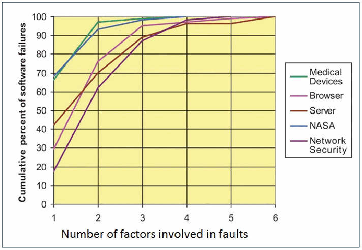
図36「相互作用ルールグラフ」。横軸は障害に関与する要因数（1～6）、縦軸はソフトウェア障害の累積割合（0～100%）。医療機器、ブラウザー、サーバー、NASA、ネットワークセキュリティの5系列を示し、要因数が増えるにつれて累積割合が上昇し、多くの系列が2～4要因までに約90～100%へ達する。
Figure 36: Interaction Rule Graph
図36：相互作用ルールグラフ
未レビュー訳values from equivalence classes corresponding to the names C O N TA C T S : of equivalence classes in the primary array. If the outputs
〔左欄・組合せ試験〕主配列に含まれる同値クラス名に対応する値である。主配列のある行に対応する出力が
未レビュー訳Mr. Rick Kuhn
リック・クーン氏
未レビュー訳Dr. Raghu Kacker
ラグー・カッカー博士
未レビュー訳corresponding to one row of the primary array differ, then
互いに異なる場合、
未レビュー訳(301) 975-3337
(301) 975-3337
未レビュー訳(301) 975-2109
(301) 975-2109
未レビュー訳either the equivalence classes were defined incorrectly or
同値クラスの定義が誤っているか、
未レビュー訳kuhn@nist.gov
kuhn@nist.gov
未レビュー訳raghu.kacker@nist.gov
raghu.kacker@nist.gov
未レビュー訳the code is faulty in some way. This method can detect a large class of software faults automatically after equivalence classes have been defined, without a conventional test R o o t s o f T r u s t oracle.
コードに何らかの欠陥がある。この方法は、従来型のテストオラクルを使わず、同値クラスを定義した後に、多くの種類のソフトウェア障害を自動的に検出できる。〔右欄・見出し〕信頼の起点
未レビュー訳Modern computing devices consist of various
現代のコンピューティングデバイスは、さまざまな
未レビュー訳Technology transfer activities included the publication hardware, firmware, and software components at multiple of a number of technical papers and software distributions; layers of abstraction. Many security and protection publication of the results of a Cooperative R&D (CRADA) mechanisms are currently rooted in software that, along project with Lockheed Martin; release of enhanced with all underlying components, must be trusted and not combinatorial measurement tools; input modeling and tampered with. A vulnerability in any of those components fault location tools; a provisional patent application on the could compromise the trustworthiness of the security oracle-free testing method; and seminars at a number of mechanisms that rely upon those components. Stronger conferences, universities, and federal agencies.
〔左欄・技術移転〕技術論文の発表とソフトウェア配布、ロッキード・マーティンとの共同研究開発協定（CRADA）の成果発表、強化した組合せ測定ツールの公開、入力モデリングおよび故障位置特定ツール、オラクル不要試験法の仮特許出願、会議・大学・連邦機関でのセミナーが含まれる。〔右欄・信頼の起点〕ハードウェア、ファームウェア、ソフトウェアの各コンポーネントが複数の抽象化レイヤーにわたって構成される。多くのセキュリティ機構や保護機構はソフトウェアに根ざしており、基盤となる全てのコンポーネントとともに信頼でき、改ざんされないことが求められる。いずれかのコンポーネントに脆弱性があれば、それに依存するセキュリティ機構の信頼性が損なわれるおそれがある。より強固な
未レビュー訳security assurances may be possible by grounding security
セキュリティ保証は、セキュリティ機構を
未レビュー訳Plans for FY 2017 include the development of a mechanisms in roots of trust. mathematical model for the evolution of t-way faults in
〔左欄・2017年度計画〕ソフトウェアにおけるt-way障害の進展を表す数学モデルを開発すること。〔右欄〕信頼の起点に根ざすことで実現できる可能性がある。
未レビュー訳Roots of trust are highly reliable and secure
信頼の起点は、高い信頼性と安全性を備えた
未レビュー訳software; combinatorial testing for big data software; hardware, firmware, and software components that perform measurement of input model combination coverage of specific, critical security functions. Because roots of trust network protocol software; trial use of prototype methods are inherently trusted, they must be secure by their design. and tools for oracle-free testing methods; analysis of As such, many roots of trust are implemented in hardware empirical data on failures; further development of methods or protected firmware so that malware cannot tamper with and tools for fault localization; and seminars, workshops, the functions they provide. Roots of trust provide a firm and tutorials at professional meetings and research labs. foundation from which to build security and trust. F O R M O R E I N F O R M AT I O N , S E E :
〔左欄・2017年度計画続き〕ビッグデータソフトウェアの組合せテスト、ネットワークプロトコルソフトウェアにおける入力モデルの組合せカバレッジ測定、オラクル不要試験法の試作手法・ツールの試用、障害実データの分析、故障位置特定手法・ツールの改良、専門家会合や研究所でのセミナー、ワークショップ、チュートリアル。〔右欄・信頼の起点〕特定の重要なセキュリティ機能を実行するハードウェア、ファームウェア、ソフトウェアの各コンポーネントである。信頼の起点は本質的に信頼されるため、設計段階から安全でなければならない。そのため、マルウェアによる機能改ざんを防ぐ目的で、ハードウェアに実装したり、ファームウェアで保護したりするものが多い。信頼の起点は、セキュリティと信頼を築くための確かな基盤となる。〔右欄・詳細情報見出し〕詳細情報：
未レビュー訳This project aims to encourage the use of roots of trust in computers to provide stronger security assurances. A focus
本プロジェクトは、より強固なセキュリティ保証を実現するため、コンピュータでの信頼の起点の利用を促すことを目指す。この取り組みで重点を置く分野の一つは
未レビュー訳http://csrc.nist.gov/groups/SNS/acts/
http://csrc.nist.gov/groups/SNS/acts/
未レビュー訳area for this work has been securing firmware. Previous work in this project described methods to protect boot firmware 9 3
ファームウェアの保護である。これまでに本プロジェクトでは、ブートファームウェアを保護する手法を説明した。
未レビュー訳P RO GRA M AN D P ROJEC T ACH IEV EM EN TS | FY 2 01 6
NIST/ITLサイバーセキュリティプログラム年次報告書 | 2016年度
未レビュー訳as part of the NIST SP 800-147 series, now standardized 1 . P a s s w o r d R e s e a r c h : by ISO/IEC JTC 1/SC 27, IT Security Techniques, as ISO/
原文更新後、再確認待ち
The password research included examining password
〔右欄・パスワード研究〕パスワード研究では、パスワード
未レビュー訳IEC 19678:2015, Information Technology – BIOS Protection
IEC 19678:2015「情報技術－BIOS保護
未レビュー訳policies from two perspectives. The Password Policy
ポリシーを2つの観点から検討した。Password Policy Taxonomyプロジェクトは、
未レビュー訳Guidelines. Building on this work in FY 2016, the project
ガイドライン」。この作業を踏まえ、2016年度にプロジェクトは
未レビュー訳Taxonomy project is exploring the relationship between
使いやすさとセキュリティの関係を探っており、
未レビュー訳team researched techniques and requirements for securing
プラットフォーム全体のファームウェアを保護する技術と要件を調査した。
未レビュー訳usability and security by focusing on the password policy
パスワードポリシーに着目している。
未レビュー訳firmware throughout the platform. The goal of this effort is
この取り組みの目標は、
未レビュー訳itself and how users of a policy understand it. To tackle the
ポリシー自体と利用者による理解を調べることにある。多くのパスワードポリシーに内在する曖昧さに対処するため、
未レビュー訳to protect platform firmware from unauthorized changes,
プラットフォームファームウェアを不正な変更から保護し、
未レビュー訳ambiguity inherent in many password policies, a formal
多くのパスワードポリシーに内在する曖昧さに対処するため、正式な
未レビュー訳detect accidental or malicious corruption, and recover from
偶発的または悪意ある破損を検知し、
未レビュー訳language for representing a password policy was previously
パスワードポリシー表現言語は以前に
未レビュー訳destructive attacks.
破壊的な攻撃から復旧する。
未レビュー訳developed. Having clear, unambiguous policy statements
開発されている。明確で曖昧さのないポリシー記述があれば、
未レビュー訳The results of this research will be documented in a new enables us to explore password policies in much greater set of draft guidelines that are expected to be released in FY detail, discuss the relative merits of different statements,
〔左欄〕本研究の成果は、2017年度に公開予定の新しい草案ガイドラインにまとめられる。〔右欄〕パスワードポリシーをより詳しく調べ、異なる記述の相対的な利点を議論し、
未レビュー訳2017.The upcoming draft guidelines will facilitate discussions compare and contrast policies, explore plain language policy with industry, standards organizations, and consortiums over representations and user interpretations, and examine the technologies, standards, and specifications that can support interplay between usability and security in password policies. firmware protection, detection and recovery. A Password Policy Question-Answer System (PPQAS) was designed, developed and tested. The system is a flexible F O R M O R E I N F O R M AT I O N , S E E : application and is designed to collect users’ interpretations of various password policies and map each interpretation of http://csrc.nist.gov/projects/root-trust/ a policy’s regulating statements to elements of the formal C O N TA C T : language via a dynamic set of questions and answers and to store those mappings for analysis. Mr. Andrew Regenscheid The second effort examines how users interpret and (301) 975-5155 apply password rules. Ambiguous terminology in password andrew.regenscheid@nist.gov rules affects user comprehension. This research investigated user comprehension of ambiguous terminology in password rules, using a combination of quantitative and qualitative
2017.〔左欄〕今後の草案ガイドラインは、業界、標準化団体、コンソーシアムが、ファームウェアの保護・検知・復旧を支援する技術、標準、仕様について議論するための基盤となる。〔左欄・詳細情報〕http://csrc.nist.gov/projects/root-trust/ 〔連絡先〕アンドリュー・レーゲンシャイト氏、(301) 975-5155、andrew.regenscheid@nist.gov。〔右欄〕各ポリシーを比較対照し、平易な言葉によるポリシー表現と利用者の解釈を調べ、パスワードポリシーにおける使いやすさとセキュリティの相互作用を検討できる。パスワードポリシー質問応答システム（PPQAS）を設計・開発し、試験した。この柔軟なアプリケーションは、さまざまなパスワードポリシーに対する利用者の解釈を収集し、それぞれをポリシーを規定する文の形式言語要素に対応付ける。動的な質問と回答を通じて対応関係を作成し、分析用に保存する。第2の取り組みでは、利用者がパスワード規則をどう解釈し適用するかを調査する。パスワード規則の曖昧な用語は利用者の理解に影響する。この研究では、曖昧な用語に対する利用者の理解を調べるため、量的・質的手法を用い、
未レビュー訳U S A B I L I T Y A N D S E C U R I T Y
ユーザビリティとセキュリティ
未レビュー訳methods in a usable security study with 60 participants. Results showed:
〔右欄〕参加者60名のユーザビリティ研究で調査した。結果は次のとおりである。
未レビュー訳Usability is an often overlooked but critical component • That manipulating password rule terminology
〔左欄〕ユーザビリティは、見過ごされがちだが重要な
未レビュー訳causes users’ interpretation of the allowed
許可された文字数について利用者の解釈が
未レビュー訳of cybersecurity. There is a belief that there is an inherent
サイバーセキュリティの要素である。サイバーセキュリティとユーザビリティには本質的な
未レビュー訳character space to shrink or expand.
縮小または拡大する。
未レビュー訳tradeoff between cybersecurity and usability. Computers can be theoretically secure but so unusable that they do • Users are confused by the terms “non-not improve security because users are forced to perform
〔左欄〕トレードオフがあると考えられている。コンピューターは理論上安全でも、使いにくすぎればセキュリティを向上できず、利用者は〔右欄・結果2〕パスワード規則の用語「英数字以外の文字」、
未レビュー訳alphanumeric,” “symbols,” “special characters,” and
「記号」「特殊文字」、および
未レビュー訳in less secure ways. The opposite is true as well; systems
より安全性の低い方法を取らざるを得ない。逆も同様で、
未レビュー訳“punctuation marks” in password rules.
「句読点」という用語に混乱する。
未レビュー訳that are easy to use and not secure are eventually unusable
使いやすくても安全でないシステムは、最終的に利用できなくなる。
未レビュー訳•Additionally, users are confused by partial lists of
•さらに、利用者は許可文字の部分的な列挙、
未レビュー訳due to worms, viruses, and botnets. The usability principles
ワーム、ウイルス、ボットネットなどが原因である。ユーザビリティの原則は
未レビュー訳allowed characters using “e.g.” or “etc.”
たとえば「e.g.」や「etc.」を使って許可文字を一部だけ列挙する表記にも、利用者は混乱する。
未レビュー訳of efficiency, effectiveness and user satisfaction must be incorporated to ensure that it is easy for users to do the right This research provides data-driven usability guidance thing and hard for them to do the wrong thing. NIST has been on constructing clearer language for password policies. working to develop usability and security metrics, facilitate the integration of usability principles into product design 2 . U n d e r s t a n d i n g U s e r B e h a v i o r : processes, and lead research projects to investigate methods
〔左欄〕効率、有効性、利用者満足度を確保する原則を取り入れ、利用者が正しい行動をしやすく、誤った行動をしにくくする必要がある。NISTはユーザビリティとセキュリティの指標を開発し、製品設計工程へのユーザビリティ原則の統合を促し、調査プロジェクトを主導している。〔右欄〕本研究は、より明確なパスワードポリシーの文面を作成するための、データに基づくユーザビリティ指針を提供する。〔次節見出し〕2. 利用者行動の理解
未レビュー訳Understanding user behavior is critical to achieving
利用者の行動を理解することは、セキュリティ目標の達成に不可欠である。
未レビュー訳for aligning user goals with organizational security goals.
利用者の目標と組織のセキュリティ目標を整合させる方法を研究する。
未レビュー訳security objectives. One example of this achieving security
その一例はフィッシング攻撃の成功を防ぐことである。フィッシングとは
未レビュー訳During FY 2016, the usability team’s research focused objectivesispreventingsuccessfulphishingattacks.Phishing primarily in four areas: passwords, understanding user is the attempt to obtain sensitive information by posing behavior, cryptography, and privacy.
〔左欄〕2016年度にユーザビリティチームが主に研究した4分野は、パスワード、利用者行動の理解、暗号、プライバシーである。〔右欄〕信頼できる主体を装って機密情報を入手しようとする行為であり、
未レビュー訳as a trustworthy entity in an electronic communication, often in the form of emails appearing to be from legitimate parties that contains links or attachments. It is a major cyber threat facing government organizations. To help combat this threat, many organizations utilize some type This research on security fatigue was a popular topic of phishing awareness training to make their staff more with users and many media outlets interested in it. According aware of phishing threats and consequences. To ultimately to the NIST Public Affairs Office, there were: improve awareness training, it is important to understand
〔p.102右欄・フィッシング〕電子通信において信頼できる主体を装う手口で、多くは正規の組織から届いたように見せかけ、リンクや添付ファイルを含む電子メールを使う。政府機関にとって大きなサイバー脅威である。対策として多くの組織は何らかのフィッシング対策訓練を実施し、職員に脅威と影響を知らせている。認識向上には、職員が〔p.103右欄・セキュリティ疲労〕この研究は利用者の関心を集め、多くの報道機関も注目した。NIST広報局によると、次の実績があった。
未レビュー訳•17,550 page views of the news story on NIST.gov
•17,550件のNIST.gov掲載ニュース記事の閲覧数
未レビュー訳why the staff do or do not fall victim to phishing attacks.
フィッシング攻撃の被害に遭うかどうかを理解することが重要である。
未レビュー訳(the fourth most visited page in 2016 on the NIST
（2016年にNISTサイトで4番目に多く閲覧されたページ）
未レビュー訳For example, an employee opening an email attachment
例えば、従業員が電子メールの添付ファイルを開くことが
未レビュー訳website);
ウェブサイト）。
未レビュー訳could be a means of conducting the attack. This project
攻撃を実行する手段となり得る。このプロジェクトは
未レビュー訳•7.9K total views for Facebook posts on the
•Facebook投稿の合計閲覧数は7.9千件、
未レビュー訳partnered with the NIST Office of Information Systems
NISTの情報システム
未レビュー訳story;
当該記事のFacebook投稿による閲覧数を示す。
未レビュー訳Management (OISM) and Office of Safety, Health and Environment (OSHE) to better understand operational • 2,327 views of the story on Eurekalert (an online phishing awareness training. Results showed that user
〔左欄〕管理局（OISM）および安全・健康・環境局（OSHE）と連携して、業務上のフィッシング対策訓練への理解を深めた。調査では利用者の〔右欄・実績〕2,327回の閲覧があった。EurekAlert（オンラインニュースリリース保管サイト
未レビュー訳news release repository operated by The American
米国
未レビュー訳context is the key to understanding user behavior regarding
状況が、フィッシング攻撃に関する利用者行動を理解する鍵である。
未レビュー訳Association for the Advancement of Science
科学振興協会
未レビュー訳phishing attacks. For example, staff who are responsible for
フィッシング攻撃の被害に遭う。例えば、
未レビュー訳(AAAS));
（AAAS））。
未レビュー訳paying bills and invoices are more likely to be victimized by
請求書やインボイスの支払いを担当する職員は
未レビュー訳•2,172 plays of the video on Kaltura (the platform
•Kalturaでの動画再生回数は2,172回（
未レビュー訳fake unpaid invoice emails.
偽の未払い請求書を装った電子メールの被害に遭いやすい。
未レビュー訳hosting the video on the NIST news story page), 81
NISTニュース記事ページ上で動画をホストするプラットフォーム）。共有は81回、
未レビュー訳Another noteworthy program in user behavior is the
〔左欄〕ユーザビリティは、見過ごされがちだが重要な
未レビュー訳shares, 51 downloads; and
51件がダウンロードされ、
未レビュー訳research into Security Fatigue. People are repeatedly
サイバーセキュリティの要素である。サイバーセキュリティとユーザビリティには本質的な
未レビュー訳•918 video views on YouTube.
•YouTubeでの動画再生回数は918回。
未レビュー訳bombarded with messages about the dangers lurking
〔左欄〕トレードオフがあると考えられている。コンピューターは理論上安全でも、使いにくすぎればセキュリティを向上できず、利用者は〔右欄・結果2〕パスワード規則の用語「英数字以外の文字」、
未レビュー訳The news outlets included: BBC News, MSN.com,
「記号」「特殊文字」、および
未レビュー訳on the Internet, about the security breaches of major
大企業や米国政府におけるセキュリティ侵害について、またオンラインで常に注意を払う必要性についても伝えられる。
未レビュー訳Politico, Federal News Radio, Bloomberg BNA, the Register,
「句読点」という用語に混乱する。
未レビュー訳corporations and the U.S. government, and about the need
常にオンラインで注意を払う必要がある。これらの
未レビュー訳and McClatchy DC, and many others included quotes by the
また、著者らによる次の発言が引用された。例えば、「利用者は、
未レビュー訳to be constantly attentive while online. To combat these
常にオンラインで注意を払うよう求められる。こうした
未レビュー訳authors, such as: “ ‘Users are tired of being overwhelmed by
絶えず警戒するよう求められることに疲れ切っている」と述べたのは、
未レビュー訳dangers and stay safe while online, users are forced to
危険に対処し、オンラインで安全を保つため、利用者は
未レビュー訳the need to be constantly on alert…’ said the study by the
米国国立標準技術研究所（NIST）の研究であり、同研究所は
未レビュー訳update passwords, run antivirus software programs, and
パスワードを更新し、ウイルス対策ソフトを実行し、
未レビュー訳National Institute of Standards and Technology, a unit of the
米国商務省の一部門である。
未レビュー訳accept unwieldy terms of agreements, often without a
煩雑な利用規約を、しばしば
未レビュー訳Department of Commerce.”
米国商務省の一部門である。
未レビュー訳clear understanding of why and to what end. The research team interviewed 40 participants to understand their
その理由や目的を十分理解しないまま受け入れる。研究チームは参加者40名にインタビューし、彼らの
未レビュー訳3 . C r y p t o g r a p h y
3. 暗号
未レビュー訳relationships with cybersecurity.
サイバーセキュリティとの関係を調べた。
未レビュー訳The team’s cryptographic research is concerned with creating a baseline understanding of the current practices andchallengesoforganizationsthataredevelopingproducts that use cryptography. The research team considered the entire process, from the identification of a market opportunity and the conceptualization of the product; the assembling of the product team; the design, implementation and testing of the product; and finally, the marketing, sale and end-user support. Based on the research, ITL will use this new understanding to help improve the assurance of cryptographic tools and the usability of cryptographic software and resources.
〔右欄・暗号研究〕チームの暗号研究は、暗号を利用する製品を開発する組織の現行実務と課題に関する基礎的な理解を得ることを目的とする。研究チームは、市場機会の特定と製品構想から、製品チームの編成、設計・実装・試験、さらに販売・マーケティングとエンドユーザー支援まで、全工程を検討した。この知見を生かし、ITLは暗号ツールの保証と暗号ソフトウェア・資源のユーザビリティ向上に取り組む。
未レビュー訳セキュリティ疲労に関する利用者の声を示す図。デジタルネットワークが重ねられた人物の横顔と、「最初にログイン情報、次に認識が必要なサイトキー、続いてパスワードが与えられる。それで十分なので、これ以上何も求めないでほしい」という参加者109の発言を示す。
The team discovered that:
チームが明らかにした点：
未レビュー訳The following contributions were made:
得られた主な成果：
未レビュー訳•People reach a saturation point and become inured • The research team identified opportunities to to the issue of cybersecurity. better characterize the cryptographic practices and types of resources and standards used by
•〔左欄〕人々は飽和点に達し、サイバーセキュリティの問題に慣れてしまう。〔右欄〕研究チームは、暗号開発者が用いる暗号実務、資源の種類、標準をより適切に特徴付ける機会を特定した。
未レビュー訳•People are told they need to be constantly on alert, cryptographic developers. constantly doing “something,” but they are not even sure what that something is or what might
•〔左欄〕人々は常に警戒を求められ、「何か」を続けるよう言われるが、その「何か」が何なのか、また
未レビュー訳•Research offers new insights into the challenges
•研究は、組織の業務における暗号実装の課題について新たな知見を示す。
未レビュー訳happen if they do or do not do it.
何かをした場合、またはしなかった場合に何が起きるのかも分からない。
未レビュー訳that cryptographic implementations introduce into organizational practices, such as recruitment,
具体的には、人材採用、
未レビュー訳Theteamcallsthis“securityfatigue.”Thissecurityfatigue
研究チームはこれを「セキュリティ疲労」と呼ぶ。この状態と、
未レビュー訳product lifecycle and transitions, the management
製品ライフサイクルと移行、従業員の管理、
未レビュー訳and the resignation and loss of control associated with it
それに伴う諦めや自己管理感の喪失は
未レビュー訳of employees, the evaluation of cryptographic
暗号関連業務の評価、
未レビュー訳certainly presents a challenge to efforts aimed at promoting
オンラインセキュリティの促進や
未レビュー訳•Greene, K.K., and Choong, Y.Y. “Must I, Can I? I Don’t
•K.K. Greene、Y.Y. Choong「Must I, Can I? I Don’t Understand Your Ambiguous Password Rules（必須なのか、可能なのか？曖昧なパスワード規則が分からない）」
未レビュー訳•The research team studied methods to quantify Understand Your Ambiguous Password Rules.” and rank factors that developers consider when evaluating the quality of a cryptographic This article was accepted on 09/12/2016 and will implementation. appear in Issue 1 of the 2017 Volume of Journal of Information and Computer Security.
•〔左欄〕研究チームは、暗号実装の品質評価で開発者が考慮する要因を定量化し、順位付けする方法を研究した。〔右欄〕この記事は2016年9月12日に受理され、Journal of Information and Computer Securityの2017年版第1号に掲載予定である。
未レビュー訳4 . P r i v a c y
4. プライバシー
未レビュー訳•Stanton, B., Theofanos, M., Spickard Prettyman, S., Furman, S., “Security Fatigue”, IT Professional, Vol.
•B. Stanton、M. Theofanos、S. Spickard Prettyman、S. Furman「Security Fatigue（セキュリティ疲労）」、IT Professional、第18巻
未レビュー訳A new area was initiated to examine privacy and de-
新たな研究分野として、プライバシーと匿名化の検討を開始した。連邦政府関係者の会議を
未レビュー訳18, Issue 5, pp. 26-32, Sept.-Oct. 2016, doi:10.1109/
第5号、26～32頁、2016年9～10月、doi:10.1109/
未レビュー訳identification. A Federal Government stakeholder’s meeting
開催し、その後NISTは複数の研修を通じて他の連邦機関に追加の指針を提供した。
未レビュー訳MITP.2016.84
MITP.2016.84
未レビュー訳wasorganizedtodiscussthetopic,afterwhichNISTprovided additional guidance through multiple training sessions to • Stanton, B., Theofanos, M., Spickard Prettyman, other federal agencies, a NIST Interagency Report, and a
〔左欄〕他の連邦機関への研修を通じて追加の指針を示し、NIST省庁間報告書を発行した。〔右欄・参考文献〕B. Stanton、M. Theofanos、S. Spickard Prettyman、
未レビュー訳S., Furman, S. (2016). The Power of Qualitative
S. Furman（2016）「The Power of Qualitative
未レビュー訳NIST Special Publication.
NIST特別刊行物を発行した。
未レビュー訳Methods: Aha Moments in Exploring Cybersecurity and Trust. User Experience Magazine, 16(5).
Methods: Aha Moments in Exploring Cybersecurity and Trust（質的手法の力：サイバーセキュリティと信頼を探る発見）。User Experience Magazine、第16巻第5号。参照：http://uxpamagazine.org/the-
未レビュー訳De-identification regarding private data set release,
民間データセットを公開する際の匿名化、
未レビュー訳Retrieved from http://uxpamagazine.org/the-
参照：http://uxpamagazine.org/the-
未レビュー訳or the release of other information about a private data set
または、民間データセットに関する他の情報の公開時の匿名化（
未レビュー訳power-of-qualitative-methods/
power-of-qualitative-methods/
未レビュー訳(such as summarizing statistics), is a class of procedures intended to restrict or limit the ability of a recipient of • Steves, M., Theofanos, M., (2016) “What’s in your such a release to re-identify a particular individual in the
〔左欄〕例えば集計統計などを公開する場合の匿名化は、受領者がデータセット内の特定の個人を再識別し、〔右欄・参考文献〕M. Steves、M. Theofanos（2016）「What’s in your
未レビュー訳policy? Do your users know?” National Institute
policy? Do your users know?（あなたのポリシーには何が書かれているか？利用者は知っているか？）」NIST
未レビュー訳data set and infer potentially sensitive information about
その個人に関する機微情報を推測する能力を制限または抑制する手続き群である。
未レビュー訳of Standards and Technology Interagency Report
省庁間報告書
未レビュー訳the individual (whether in an absolute, or in a probabilistic
絶対的な意味でも確率的な意味でも、
未レビュー訳(NISTIR) that was submitted to IEEE Security and
（NISTIR）としてIEEE Security and
未レビュー訳sense). De-identification is a collection of methods with
この意味で、匿名化とは一連の手法であり、
未レビュー訳Privacy.
Privacyに提出された。
未レビュー訳the goal of protecting the privacy of the individual, while
個人のプライバシーを保護しながら、
未レビュー訳•Garfinkle, S., Theofanos, M. and Choong,Y.Y., “Secure
•S. Garfinkel、M. Theofanos、Y.Y. Choong「Secure
未レビュー訳simultaneously preserving the utility of the released data (or
公開データ（または
未レビュー訳and Usable Enterprise Authentication: Lessons from
and Usable Enterprise Authentication: Lessons from
未レビュー訳other summarizing statistics).
その他の集計統計）の有用性を同時に維持する。
未レビュー訳the Field,” to appear in IEEE Security & Privacy,
the Field（現場からの教訓）」、IEEE Security & Privacy掲載予定、
未レビュー訳ITL researchers are evaluating differentially private
ITLの研究者は、匿名化技術の一種である差分プライバシーアルゴリズムを評価している。
未レビュー訳September/October 2016, a special issue on usable
2016年9～10月号、ユーザビリティ特集。
未レビュー訳algorithms, a subset of de-identification techniques. The team
チームは、個人のプライバシー保護と情報の有用性との間に生じるトレードオフを検討している。
未レビュー訳security.
セキュリティ。
未レビュー訳is considering the possible tradeoffs between protecting the
例えば、
未レビュー訳The proposed plans for FY 2017 for this project consist
本プロジェクトの2017年度計画には、次の活動が含まれる。
未レビュー訳privacy of individuals and the usefulness of information, such
個人情報を匿名化した研究用データベースを公開する場合に生じ得るような
未レビュー訳of the following activities:
活動：
未レビュー訳as might occur when a research database with de-identified
状況である。
未レビュー訳•Examine users in healthcare and their behaviors
•医療分野の利用者を対象に、セキュリティに関する行動と
未レビュー訳personal information is released.
以下は、2016年度にユーザビリティ・セキュリティ・プロジェクトから発表された
未レビュー訳and perceptions of security;
認識を調査する。
未レビュー訳The following are the publications that were released for
刊行物である。
未レビュー訳•Complete interviews with companies that develop
•暗号製品の開発に携わる企業へのインタビューを
未レビュー訳the Usability and Security project during FY 2016:
〔左欄・刊行物1〕NISTIR 8080『公共安全モバイル認証のユーザビリティとセキュリティに関する考察』（2016年7月）。参照：http://nvlpubs.nist.gov/nistpubs/ir/2016/NIST.IR.8080.pdf 〔右欄・2017年度計画〕パスワードポリシーツールのユーザビリティ試験を行う。
未レビュー訳cryptographic products;
完了する。
未レビュー訳•NISTIR 8080, Usability and Security Considerations for Public Safety Mobile Authentication. (July 2016) • Perform usability testing on a password policy tool; (see http://nvlpubs.nist.gov/nistpubs/ir/2016/NIST. IR.8080.pdf)
•〔左欄・刊行物2〕NISTIR 8150『政府データの匿名化に関する関係者会議報告書』（2016年9月）。参照：http://nvlpubs.nist.gov/nistpubs/ir/2016/NIST.IR.8150.pdf 〔右欄・2017年度計画〕
未レビュー訳•Finalize usability chapters for the revision of 800-63, Digital Identity Guidelines;
•SP 800-63『デジタルIDガイドライン』改訂版のユーザビリティ章を完成させる。
未レビュー訳•NISTIR 8150, Government Data De-Identification Stakeholder’s Meeting, Meeting Report. (September • Extend the password rules comprehension 2016) (see http://nvlpubs.nist.gov/nistpubs/ir/2016/ research; and NIST.IR.8150.pdf)
•〔左欄・刊行物2〕NISTIR 8150『政府データの匿名化に関する関係者会議報告書』（2016年9月）。参照：http://nvlpubs.nist.gov/nistpubs/ir/2016/NIST.IR.8150.pdf 〔右欄・2017年度計画〕パスワード規則の理解度に関する研究を拡張し、
未レビュー訳•Develop test methods for de-identification
•匿名化アルゴリズムの試験方法を開発する。
未レビュー訳•Choong, Y. Y., & Greene, K. K. (2016, September). algorithms. What’s a Special Character Anyway? Effects F O R M O R E I N F O R M AT I O N , S E E : of Ambiguous Terminology in Password Rules. Published in the Proceedings of the Human Factors https://csrc.nist.gov/Projects/Usability-Of-Security and Ergonomics Society Annual Meeting (Vol. 60, No. 1, pp. 760-764). Sage CA: Los Angeles, CA: C O N TA C T S : SAGE Publications. Ms. Mary Theofanos Mr. Brian Stanton
•〔左欄・刊行物3〕Y.Y. Choong、K.K. Greene（2016年9月）「What’s a Special Character Anyway? Effects of Ambiguous Terminology in Password Rules（特殊文字とは何か？パスワード規則の曖昧な用語の影響）」、Human Factors and Ergonomics Society年次会議会議録（第60巻第1号、760～764頁）、SAGE Publications。〔右欄・詳細情報〕https://csrc.nist.gov/Projects/Usability-Of-Security 〔連絡先〕メアリー・セオファノス氏、ブライアン・スタントン氏
未レビュー訳•Theofanos, M., Garfinkel, S. and Choong, Y.Y., (2016). (301) 975-5889 (301) 975-2103 Secure and Usable Enterprise Authentication:
•〔左欄・刊行物4〕M. Theofanos、S. Garfinkel、Y.Y. Choong（2016）「Secure and Usable Enterprise Authentication:（安全で使いやすいエンタープライズ認証：」〔右欄・連絡先〕(301) 975-5889、(301) 975-2103
未レビュー訳原本PDFの抜粋画像
This section recognizes ITL staff who have received honors and/or awards for their cybersecurity accomplishments.
この節では、サイバーセキュリティ分野での功績により栄誉や賞を受けたITL職員を紹介する。
未レビュー訳THIS PUBLICATION IS AVAILABLE FREE OF CHARGE FROM: http://dx.doi.org/10.6028/NIST.SP.800-195
原文のみ
Gold Medal Award
米国商務省 金メダル賞
未レビュー訳LeahKauffman,NathanLesser,TimothyMcBride,GavinO’Brien,LucySalah,and KarenWaltermire(Applied Cybersecurity Division, National Cybersecurity Center of Excellence (NCCoE)); MurugiahSouppaya(Computer Security Division); Kevin Kimball(NIST Director’s Office); Keith Bubar (Acquisition Management Division); and LaurenDidiuk(Department of Commerce, Office of General Counsel).
Leah Kauffman、Nathan Lesser、Timothy McBride、Gavin O’Brien、Lucy Salah、Karen Waltermire（応用サイバーセキュリティ部門、国立サイバーセキュリティ優秀センター（NCCoE））；Murugiah Souppaya（コンピューターセキュリティ部門）；Kevin Kimball（NIST所長室）；Keith Bubar（調達管理部門）；Lauren Didiuk（商務省法律顧問室）。
未レビュー訳米国商務省金メダル賞を受賞したNCCoE設立チームの集合写真。前列にはKaren Waltermire、Lucy Salah、Leah Kauffman、後列にはNathan Lesser、Kevin Kimball、Gavin O’Brien、Timothy McBrideが写っている。Keith Bubar、Murugiah Souppaya、Lauren Didiukは欠席。
Front Row (Left/Right): Waltermire, Salah, Kauffman Back Row Left/Right: Lesser, Kimball, O’Brien, McBride Absent: Bubar, Souppaya, and Didiuk
前列（左から右）：Karen Waltermire、Lucy Salah、Leah Kauffman。後列（左から右）：Nathan Lesser、Kevin Kimball、Gavin O’Brien、Timothy McBride。不在：Keith Bubar、Murugiah Souppaya、Lauren Didiuk。
未レビュー訳The group is recognized for establishing the National Cybersecurity Center of Excellence (NCCoE) to accelerate the adoption of cybersecurity standards and best practices. With industry partnerships, the NCCoE builds practical security reference designs that can be rapidly applied to the real challenges that businesses face today. This achievement includes the Department’s first Federally Funded Research and Development Center (FFRDC) and the Nation’s first FFRDC devoted wholly to cybersecurity.
このグループは、サイバーセキュリティの標準やベストプラクティスの導入を加速するため、国立サイバーセキュリティ優秀センター（NCCoE）を設立した功績が認められた。産業界との連携により、NCCoEは、企業が現在直面している現実の課題に迅速に適用できる実践的なセキュリティ参照設計を構築する。この功績には、同省初の連邦政府資金による研究開発センター（FFRDC）と、サイバーセキュリティのみを対象とする国内初のFFRDCの設立が含まれる。
未レビュー訳Silver Medal Award
米国商務省 銀メダル賞
未レビュー訳ElaineBarker,LawrenceBassham,Shu-jenChang,LilyChen,QuynhDang,Morris Dworkin,JohnKelsey,RenePeralta,RayPerlnerandAndrewRegenscheid(All work for the Computer Security Division, Information Technology Laboratory)
Elaine Barker、Lawrence Bassham、Shu-jen Chang、Lily Chen、Quynh Dang、Morris Dworkin、John Kelsey、Rene Peralta、Ray Perlner、Andrew Regenscheid（全員、情報技術研究所コンピューターセキュリティ部門）。
未レビュー訳米国商務省銀メダル賞を受賞したSHA-3開発チームの写真。左にAndrew Regenscheidの個人肖像、右に受賞チームの集合写真がある。キャプションの左から右の順は、Regenscheid、Dang、Barker、Kelsey、Chang、Bassham、Dworkin、Chen、Perlner、Peralta。
(Left/Right): Regenscheid; Dang; Barker; Kelsey; Chang; Bassham; Dworkin; Chen; Perlner; Peralta
（左から右）：Regenscheid、Dang、Barker、Kelsey、Chang、Bassham、Dworkin、Chen、Perlner、Peralta。
未レビュー訳The group is recognized for exceptional technical innovation in leading a global effort to develop Federal Information Processing Standard (FIPS) 202, the “SHA-3” hash function standard. Cryptographic hash functions are critical components of the technologies (e.g., digital signatures and message authentication) that secure global communications, international electronic commerce and more. Advances in cryptanalysis in 2004-2007 weakened the security of many widely used hash functions, broadly threatening cybersecurity. SHA-3 is intended to provide security for decades.
このグループは、連邦情報処理標準（FIPS）202「SHA-3」ハッシュ関数標準を開発する世界的な取り組みを主導し、卓越した技術革新を実現した功績が認められた。暗号学的ハッシュ関数は、デジタル署名やメッセージ認証など、世界的な通信や国際電子商取引を保護する技術の重要な構成要素である。2004～2007年の暗号解析の進展により、広く使われていた多くのハッシュ関数の安全性が低下し、サイバーセキュリティが広範に脅かされた。SHA-3は数十年にわたる安全性を提供することを意図している。
未レビュー訳Bronze Medal Award
米国商務省 銅メダル賞
未レビュー訳BillFisherandJerome“Jay”Thomson(Applied Cybersecurity Division, National Cybersecurity Center of Excellence (NCCoE)); BethBlyandDeanaRamsburg (Customer Access and Support Division); AlexFolk(Information Technology Laboratory Office); RobertDensock(Information Technology Security & Networking Division); LynnFlanagan(Department of Commerce, Office of General Counsel); JatinPatel(Gaithersburg Design and Construction Division, Facilities Improvement Group); KevinConradandCheriSmith(Emergency Services Office, Security Systems and Access Control Group).
Bill Fisher、Jerome “Jay” Thomson（応用サイバーセキュリティ部門、国立サイバーセキュリティ優秀センター（NCCoE））；Beth Bly、Deana Ramsburg（顧客アクセス・サポート部門）；Alex Folk（情報技術研究所所長室）；Robert Densock（情報技術セキュリティ・ネットワーキング部門）；Lynn Flanagan（商務省法律顧問室）；Jatin Patel（ゲイサーズバーグ設計・建設部門、施設改善グループ）；Kevin Conrad、Cheri Smith（緊急サービス室、セキュリティシステム・アクセス管理グループ）。
未レビュー訳Lynn Flanaganの個人肖像写真（上段）。
米国商務省銅メダル賞を受賞したNCCoE施設建設チーム8名の集合写真。前列はBeth Bly、Cheri Smith、Deana Ramsburg、後列はAlex Folk、Jerome Thomson、Kevin Conrad、Robert Densock、Bill Fisher。
Jatin Patelの個人肖像写真（下段）。
Group Photo: (Left/Right) (front) Bly; Smith; Ramsburg; (back) Folk; Thomson; Conrad; Densock; Fisher; Individual Photo Top/Bottom: Flanagan; Patel
集合写真（左から右）：前列はBly、Smith、Ramsburg、後列はFolk、Thomson、Conrad、Densock、Fisher。個人写真（上から下）：Flanagan、Patel。
未レビュー訳The team is recognized for outstanding leadership and teamwork in coordinating the design and construction of the facility housing the National Cybersecurity Center of Excellence. In 12 months, this team transformed a 65,000-square-foot biotech facility into a state-of-the-art cybersecurity research center that is home to 28 laboratories and other workspaces for collaboration among government, academia and industry. During this time, this high-performing team brought together the necessary leadership skills, team-building techniques, contracting and procurement expertise, project management discipline, physical security methods, construction knowledge, and attention to detail required to complete this high-priority effort.
このチームは、国立サイバーセキュリティ優秀センター（NCCoE）を収容する施設の設計と建設を調整する際に、卓越したリーダーシップとチームワークを発揮した功績が認められた。12か月で、6万5,000平方フィートのバイオテクノロジー施設を最先端のサイバーセキュリティ研究センターへと改修し、政府、学術界、産業界が連携する28の研究室やその他の作業スペースを整備した。この高い成果を挙げたチームは、優先度の高いこの取り組みを完了するために必要なリーダーシップ、チーム形成、契約・調達の専門知識、プロジェクト管理規律、物理的セキュリティ手法、建設知識、細部への注意を結集した。
未レビュー訳2016年「政府IT分野で最も影響力のある女性11人」の1人に選ばれたドナ・ドッドソン氏の肖像写真。
Ms. Donna Dodson Nominated 1 of the 11 Most Influential Women in Government IT for 2016 The United Nations adopted February 11th as an International Day of Women and Girls in Science. This day celebrates the impact and importance of women in science, technology, engineering and management, also known as STEM, and focuses on the significance of encouraging women of all ages to enter STEM fields. Within the Federal Government, there have been many women over the years that have made significant, influential, and positive impacts on Information Technology. One of the eleven Women in the Federal Government chosen to receive this great honor is Ms. Donna Dodson of the National Institute of Standards and Technology (NIST). Donna works in the Information Technology Laboratory (ITL) as the Associate Director Chief Cybersecurity Advisor, and she is also the Director of the National Cybersecurity Center
ドナ・ドッドソン氏、2016年「政府IT分野で最も影響力のある女性11人」の1人に選出。国連は2月11日を「科学における女性と少女の国際デー」と定めた。この日は科学、技術、工学、管理（STEM）分野で女性が果たす影響と重要性をたたえ、あらゆる年齢の女性がSTEM分野に進むよう促す意義に焦点を当てる。連邦政府では長年にわたり、多くの女性が情報技術に大きく、影響力のある前向きな貢献をしてきた。この栄誉を受けた連邦政府の女性11人の1人は、国立標準技術研究所（NIST）のドナ・ドッドソン氏である。ドナは情報技術研究所（ITL）でサイバーセキュリティ担当副所長兼主任顧問を務め、国立サイバーセキュリティ優秀センター
未レビュー訳of Excellence (NCCoE), a program at NIST. Donna manages the lab’s research and development; she also has a key role in developing relationships with academia, industry, and government agencies to analyze and improve cybersecurity best practices.
（NCCoE）の所長も務める。研究所の研究開発を管理し、学界、産業界、政府機関との関係構築を通じてサイバーセキュリティのベストプラクティスを分析・改善する上でも重要な役割を果たす。
未レビュー訳2016年に5つの賞を受賞したロス博士のスーツ姿の肖像写真。
Dr. Ron Ross is the recipient of 5 awards during 2016
ロス博士、2016年に5つの賞を受賞
未レビュー訳National Cybersecurity Hall of Fame: Class of 2015 Dr. Ron Ross was inducted into the National Cybersecurity Hall of Fame. The Hall of Fame is a national program that describes its mission as honoring “the innovative individuals and organizations which had the vision and leadership to create the foundational building blocks for the Cybersecurity industry.” Dr. Ross was honored as a key pioneer of the Federal Information Security Management Act (FISMA) security standards and his role as one of the world’s leading experts on cybersecurity. His induction recognized his leadership as the principal architect of the NIST Risk Management Framework and lead developer of the first set of unified cybersecurity standards for the Federal Government. (See Source: http://www.cybersecurityhalloffame.com)
国家サイバーセキュリティ殿堂入り：2015年度。ロス博士は国家サイバーセキュリティ殿堂入りを果たした。同殿堂は、サイバーセキュリティ産業の基盤を築くビジョンとリーダーシップを持った革新的な個人・組織をたたえる全国的な事業である。ロス博士は、連邦情報セキュリティ管理法（FISMA）のセキュリティ標準における主要な先駆者であり、世界を代表するサイバーセキュリティ専門家の一人として表彰された。NISTリスク管理フレームワークの主任設計者、連邦政府初の統一サイバーセキュリティ標準群の主任開発者としてのリーダーシップが認められた。参照：http://www.cybersecurityhalloffame.com
未レビュー訳Service to America Medal for Homeland Security and Law Enforcement Dr. Ross was awarded a Service to America Medal for his work having “instituted a state-of-the-art risk assessment system that has protected federal computer networks from cyber attacks and helped secure information critical to our national and economic security.” The Samuel J. Heyman Service to America Medals honor members of the Federal workforce, highlighting the work of employees who significantly contribute to the governance of the United States. (See Source: https://servicetoamericamedals.org/honorees/view_profile.php?profile=409)
米国への貢献メダル：国土安全保障・法執行部門。ロス博士は、連邦政府のコンピューターネットワークをサイバー攻撃から保護し、国家と経済の安全保障に不可欠な情報の保護に役立つ最先端のリスク評価システムを導入した功績により、米国への貢献メダルを受賞した。Samuel J. Heyman Service to America Medalsは、米国の統治に大きく貢献した連邦職員の業績を紹介し、表彰する。参照：https://servicetoamericamedals.org/honorees/view_profile.php?profile=409
未レビュー訳Government Executive of the Year Award Dr. Ross was also recognized, as part of the Government Computer News (GCN) Annual Awards, as the Government Executive of the Year. The award honored Dr. Ross’ contributions to securing federal information systems. GCN’s editor in chief, Troy Schneider, stated that “there is virtually no corner of federal IT in 2015 that doesn’t need to take cybersecurity into account, and there is probably no government executive more central to those security efforts than Ron Ross.” (See Source: https://gcn.com/articles/2015/10/07/ron-ross-nist.aspx?m=1)
年間最優秀政府幹部賞。ロス博士はGovernment Computer News（GCN）年間賞の一環として、年間最優秀政府幹部にも選ばれた。この賞は、連邦情報システムの保護に対する博士の貢献をたたえるものだった。GCN編集長のTroy Schneiderは、「2015年の連邦政府ITでサイバーセキュリティを考慮しなくてよい領域はほぼなく、Ron Ross以上にその取り組みの中心にいる政府幹部はいないだろう」と述べた。参照：https://gcn.com/articles/2015/10/07/ron-ross-nist.aspx?m=1
未レビュー訳Federal 100 Award For the third time, Dr. Ross was recognized as one of Federal Computer Week’s Federal 100 awardees. The Federal 100 Awards recognize government and industry leaders who have played pivotal roles in the Federal Government IT community.
Federal 100賞。ロス博士は今回で3度目、Federal Computer WeekのFederal 100受賞者の一人に選ばれた。Federal 100賞は、連邦政府のITコミュニティで重要な役割を果たした政府・産業界のリーダーを表彰する。
未レビュー訳表彰式の写真。タキシード姿の男性2人がトロフィーを持ち、背景には受賞者の肖像が並ぶ。隣接するロス博士の受賞記事に関連する授賞式の写真。
Ross personally has been a critical driver for getting agencies − and many other key stakeholders − to move beyond checklist-based security. He spent much of 2015 evangelizing in the federal community, making sure that both NIST Special Publication 800-160 on systems security engineering and the Risk Management Framework that he developed were put to good use. (See Source: https://fcw.com/articles/2016/03/28/fed100_ ross-ron.aspx?m=1)
ロス博士は、各機関やその他の主要な関係者にチェックリスト中心のセキュリティを超える取り組みを促す上で、重要な推進役を果たした。2015年には連邦機関で広く働きかけ、システムセキュリティ工学に関するNIST特別刊行物800-160と、博士が開発したリスク管理フレームワークの双方が適切に活用されるよう尽力した。参照：https://fcw.com/articles/2016/03/28/fed100_ross-ron.aspx?m=1
未レビュー訳2015 Presidential Rank Award Dr. Ron Ross was awarded the 2015 Presidential Rank Award. The Civil Service Reform Act of 1978 established the Presidential Rank Awards Program to recognize a select group of career members of the Senior Executive Service (SES) for exceptional performance over an extended period. Later, the Rank Award statute was amended to extend eligibility to senior career employees with a sustained record
2015年大統領ランク賞。ロス博士は2015年大統領ランク賞を受賞した。1978年公務員改革法により、長期間にわたる卓越した業績をたたえるため、上級管理職制度（SES）のキャリア職員から選ばれた人々を表彰する大統領ランク賞プログラムが設けられた。その後、同賞の法令が改正され、継続的な実績を持つ上級キャリア職員にも受賞資格が拡大された。
未レビュー訳of exceptional professional, technical, and/or scientific achievement at a national or international level. (See Source: https://www.opm.gov/policy-data-oversight/senior-executive-service/presidential-rank-awards/presidential-rank-awards-2015-full-list.pdf)
国内または国際的な水準で、専門・技術・科学分野において卓越した実績を挙げた職員が対象となる。参照：https://www.opm.gov/policy-data-oversight/senior-executive-service/presidential-rank-awards/presidential-rank-awards-2015-full-list.pdf
未レビュー訳原本PDFの抜粋画像
This section provides a compiled list of ITL cybersecurity publications that were released during FY 2016 (from October 1, 2015 to September 30, 2016). The first portion provides a list of the technical documents. The second portion provides abstracts that represent a brief summary of each document (technical and non-technical).
この節では、2016会計年度（2015年10月1日～2016年9月30日）に発行されたITLのサイバーセキュリティ刊行物を一覧にまとめる。前半には技術文書の一覧を、後半には各文書（技術文書・非技術文書）の概要を掲載する。
未レビュー訳THIS PUBLICATION IS AVAILABLE FREE OF CHARGE FROM: http://dx.doi.org/10.6028/NIST.SP.800-195
原文のみ
D R A F T P U B L I C A T I O N S
草案刊行物
未レビュー訳TABLE 3: NO DRAFT FIPS RELEASED DURING FY 2016
表3：2016会計年度に公開されたFIPS草案なし
未レビュー訳| TABLE 4: SPECIAL PUBLICATIONS (SPs) | ||
| PUBLICATION NUMBER | PUBLICATION TITLE | DRAFT RELEASED |
| SP 800-188 | De-Identifying Government Datasets | August 2016 |
| SP 800-185 | SHA-3 Derived Functions: cSHAKE, KMAC, TupleHash, and ParallelHash | August 2016 |
| SP 800-184 | Guide for Cybersecurity Event Recovery | June 2016 |
| SP 800-180 | NIST Definition of Microservices, Application Containers and System Virtual Machines | February 2016 |
| SP 800-179 | Guide to Securing Apple OS X 10.10 Systems for IT Professionals: A NIST Security Configuration Checklist | June 2016 |
| SP 800-177 (2nd Draft) | Trustworthy Email | March 2016 |
| SP 800-175A | Guideline for Using Cryptographic Standards in the Federal Government: Directives, Mandates and Policies | April 2016 |
| SP 800-175B | Guideline for Using Cryptographic Standards in the Federal Government: Cryptographic Mechanisms | March 2016 |
| SP 800-171 Rev. 1 | Protecting Controlled Unclassified Information in Nonfederal Information Systems and Organizations | August 2016 |
| SP 800-166 | Derived PIV Application and Data Model Test Guidelines | February 2016 |
| SP 800-160 (Final Public Draft) (2nd Draft) | Systems Security Engineering Guideline: An Integrated Approach to Building Trustworthy Resilient Systems | September 2016 May 2016 |
| SP 800-156 | Representation of PIV Chain-of-Trust for Import and Export | December 2015 |
| SP 800-154 | Guide to Data-Centric System Threat Modeling | March 2016 |
| SP 800-150 (2nd Draft) | Guide to Cyber Threat Information Sharing | April 2016 |
| SP 800-126 Rev. 3 | The Technical Specification for the Security Content Automation Protocol (SCAP): SCAP Version 1.3 | July 2016 |
| SP 800-126A | SCAP 1.3 Component Specification Version Updates: An Annex to NIST Special Publication 800-126 Revision 3 | July 2016 |
| SP 800-116 Rev. 1 | A Recommendation for the Use of PIV Credentials in Physical Access Control Systems (PACS) | December 2015 |
| SP 800-114 Rev. 1 | User's Guide to Telework and Bring Your Own Device (BYOD) Security | March 2016 |
| SP 800-90C (2nd Draft) | Recommendation for Random Bit Generator (RBG) Constructions | April 2016 |
| SP 800-90B (2nd Draft) | Recommendation for the Entropy Sources Used for Random Bit Generation | January 2016 |
| SP 800-46 Rev. 2 | Guide to Enterprise Telework, Remote Access, and Bring Your Own Device (BYOD) Security | March 2016 |
| SP 1800-5 | IT Asset Management: Financial Services | October 2015 |
| SP 1800-4 | Mobile Device Security: Cloud and Hybrid Builds | November 2015 |
原本PDFの抜粋画像
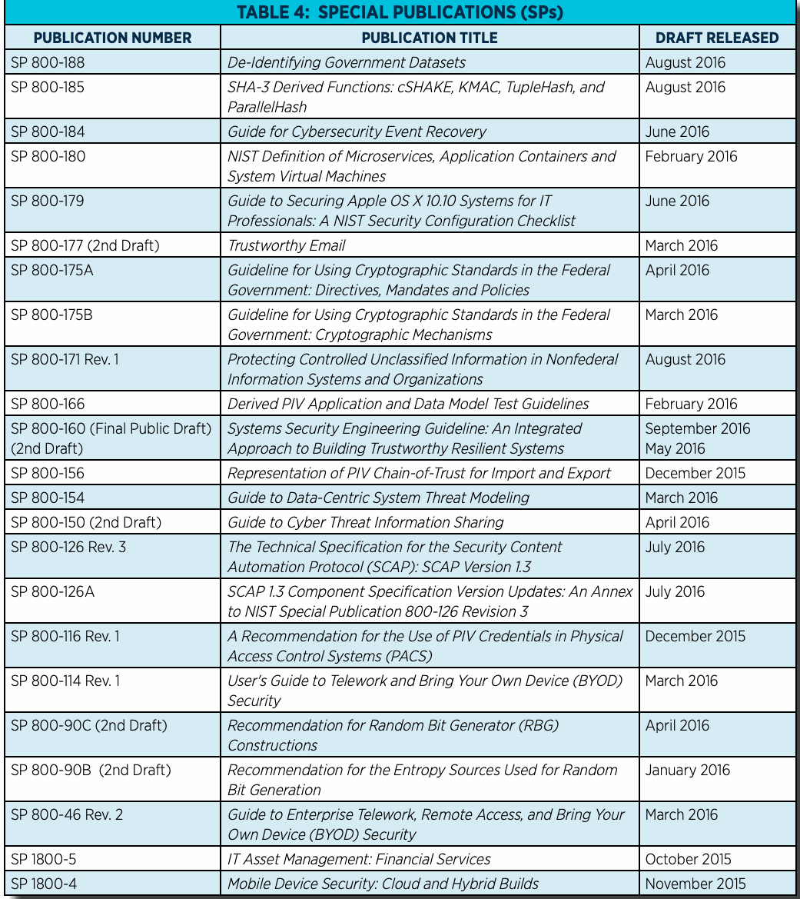
| 表4：特別刊行物（SP） | ||
| 刊行物番号 | 刊行物名 | 草案公開日 |
| SP 800-188 | 政府データセットの匿名化 | 2016年8月 |
| SP 800-185 | SHA-3派生関数：cSHAKE、KMAC、TupleHash、ParallelHash | 2016年8月 |
| SP 800-184 | サイバーセキュリティ事象復旧ガイド | 2016年6月 |
| SP 800-180 | NISTによるマイクロサービス、アプリケーションコンテナ、システム仮想マシンの定義 | 2016年2月 |
| SP 800-179 | IT専門家向けApple OS X 10.10システムのセキュリティガイド：NISTセキュリティ構成チェックリスト | 2016年6月 |
| SP 800-177（第2草案） | 信頼できる電子メール | 2016年3月 |
| SP 800-175A | 連邦政府における暗号標準利用指針：指令、義務、ポリシー | 2016年4月 |
| SP 800-175B | 連邦政府における暗号標準利用指針：暗号メカニズム | 2016年3月 |
| SP 800-171 Rev. 1 | 非連邦情報システムおよび組織における管理対象非機密情報の保護 | 2016年8月 |
| SP 800-166 | PIVアプリケーションおよびデータモデル導出テストガイドライン | 2016年2月 |
| SP 800-160（最終公開草案・第2草案） | システムセキュリティ工学ガイドライン：信頼性の高いレジリエントなシステムを構築する統合アプローチ | 2016年9月／2016年5月 |
| SP 800-156 | PIV信頼チェーンのインポートおよびエクスポート時の表現 | 2015年12月 |
| SP 800-154 | データ中心のシステム脅威モデリングガイド | 2016年3月 |
| SP 800-150（第2草案） | サイバー脅威情報共有ガイド | 2016年4月 |
| SP 800-126 Rev. 3 | セキュリティコンテンツ自動化プロトコル（SCAP）技術仕様：SCAPバージョン1.3 | 2016年7月 |
| SP 800-126A | SCAP 1.3コンポーネント仕様の更新：NIST特別刊行物800-126改訂第3版の附属書 | 2016年7月 |
| SP 800-116 Rev. 1 | 物理アクセス制御システム（PACS）におけるPIV資格情報利用の推奨 | 2015年12月 |
| SP 800-114 Rev. 1 | テレワークと私物デバイス持ち込み（BYOD）セキュリティのユーザーガイド | 2016年3月 |
| SP 800-90C（第2草案） | 乱数ビット生成器（RBG）の構成に関する推奨 | 2016年4月 |
| SP 800-90B（第2草案） | 乱数ビット生成に用いるエントロピー源に関する推奨 | 2016年1月 |
| SP 800-46 Rev. 2 | 企業テレワーク、リモートアクセス、私物デバイス持ち込み（BYOD）セキュリティガイド | 2016年3月 |
| SP 1800-5 | IT資産管理：金融サービス | 2015年10月 |
| SP 1800-4 | モバイルデバイスセキュリティ：クラウドおよびハイブリッド構築 | 2015年11月 |
| TABLE 5: NIST INTERAGENCY OR INTERNAL REPORTS (NISTIRs) | ||
| PUBLICATION NUMBER | PUBLICATION TITLE | DRAFT RELEASED |
| NISTIR 8144 | Assessing Threats to Mobile Devices and Infrastructure: The Mobile Threat Catalogue | September 2016 |
| NISTIR 8138 | Vulnerability Description Ontology (VDO): A Framework for Characterizing Vulnerabilities | September 2016 |
| NISTIR 8136 | Mobile Application Vetting Services for Public Safety | June 2016 |
| NISTIR 8114 | Report on Lightweight Cryptography | August 2016 |
| NISTIR 8112 | Attribute Metadata | August 2016 |
| NISTIR 8105 | Report on Post-Quantum Cryptography for Public Comment | February 2016 |
| NISTIR 8103 | Advanced Identity Workshop on Applying Measurement Science in the Identity Ecosystem: Summary and Next Steps | February 2016 |
| NISTIR 8085 | Forming Common Platform Enumeration (CPE) Names from Software Identification (SWID) Tags | December 2015 |
| NISTIR 8080 | Usability and Security Considerations for Public Safety Mobile Authentication | November 2015 |
| NISTIR 8071 | LTE Architecture Overview and Security Analysis | April 2016 |
| NISTIR 8063 [final version published as SP 800-183] | Primitives and Elements of Internet of Things (IoT) Trustworthiness | February 2016 |
| NISTIR 8060 (Final Public Draft) | Guidelines for the Creation of Interoperable Software Identification (SWID) Tags | December 2015 |
| NISTIR 8011 Volumes 1 & 2 | Automation Support for Security Control Assessments Volume 1: Overview Volume 2: Hardware Asset Management | February 2016 |
原本PDFの抜粋画像
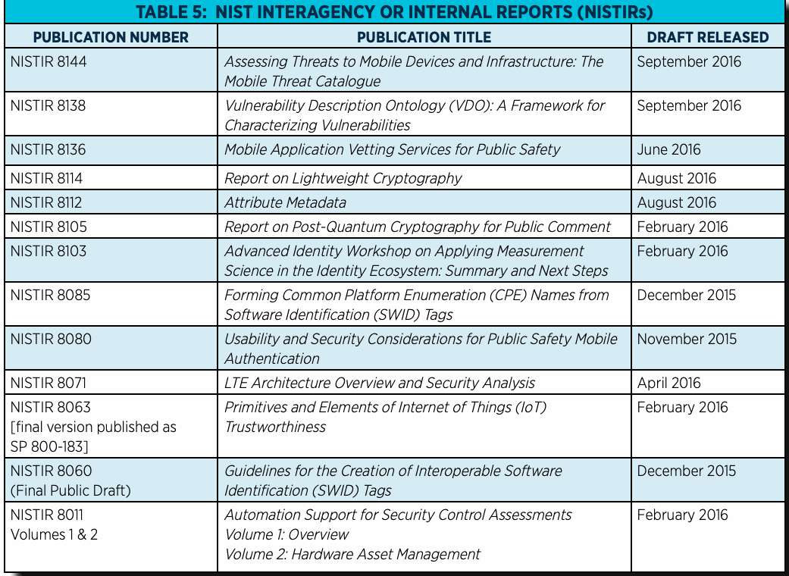
| 表5：NIST省庁間報告書または内部報告書（NISTIR） | ||
| 刊行物番号 | 刊行物名 | 草案公開日 |
| NISTIR 8144 | モバイル機器およびインフラへの脅威評価：モバイル脅威カタログ | 2016年9月 |
| NISTIR 8138 | 脆弱性記述オントロジー（VDO）：脆弱性特性評価の枠組み | 2016年9月 |
| NISTIR 8136 | 公共安全向けモバイルアプリケーション審査サービス | 2016年6月 |
| NISTIR 8114 | 軽量暗号に関する報告書 | 2016年8月 |
| NISTIR 8112 | 属性メタデータ | 2016年8月 |
| NISTIR 8105 | 公開コメント用ポスト量子暗号報告書 | 2016年2月 |
| NISTIR 8103 | アイデンティティ・エコシステムにおける計測科学の適用に関する先進アイデンティティ・ワークショップ：概要と今後の課題 | 2016年2月 |
| NISTIR 8085 | ソフトウェア識別（SWID）タグから共通プラットフォーム列挙（CPE）名を生成する方法 | 2015年12月 |
| NISTIR 8080 | 公共安全向けモバイル認証のユーザビリティとセキュリティに関する考察 | 2015年11月 |
| NISTIR 8071 | LTEアーキテクチャの概要とセキュリティ分析 | 2016年4月 |
| NISTIR 8063［最終版はSP 800-183として発行］ | モノのインターネット（IoT）の信頼性を支える原則と要素 | 2016年2月 |
| NISTIR 8060（最終公開草案） | 相互運用可能なソフトウェア識別（SWID）タグの作成に関するガイドライン | 2015年12月 |
| NISTIR 8011 第1巻・第2巻 | セキュリティ管理策評価の自動化支援 第1巻：概要 第2巻：ハードウェア資産管理 | 2016年2月 |
TABLE 3: NO DRAFT FIPS RELEASED DURING FY 2016
原文のみ
F I N A L A P P R O V E D P U B L I C A T I O N S
最終承認済み刊行物
未レビュー訳TABLE 6: NO FIPS PUBLISHED IN FY 2016
表6：2016会計年度に公表されたFIPSなし
未レビュー訳| TABLE 7: FINAL - SPs | ||
| PUBLICATION NUMBER | PUBLICATION TITLE | RELEASE DATE |
| SP 800-183 | Networks of ‘Things’ | July 2016 |
| SP 800-182 | Computer Security Division 2015 Annual Report | July 2016 |
| SP 800-177 | Trustworthy Email | September 2016 |
| SP 800-175A | Guideline for Using Cryptographic Standards in the Federal Government: Directives, Mandates and Policies | August 2016 |
| SP 800-175B | Guideline for Using Cryptographic Standards in the Federal Government: Cryptographic Mechanisms | August 2016 |
| SP 800-171 (update) | Protecting Controlled Unclassified Information in Nonfederal Information Systems and Organizations | January 2016 |
| SP 800-167 | Guide to Application Whitelisting | October 2015 |
| SP 800-166 | Derived PIV Application and Data Model Test Guidelines | June 2016 |
| SP 800-156 | Representation of PIV Chain-of-Trust for Import and Export | May 2016 |
| SP 800-152 | A Profile for U.S. Federal Cryptographic Key Management Systems | October 2015 |
| SP 800-131A Rev. 1 | Transitions: Recommendation for Transitioning the Use of Cryptographic Algorithms and Key Lengths | November 2015 |
| SP 800-125B | Secure Virtual Network Configuration for Virtual Machine (VM) Protection | March 2016 |
| SP 800-114 Rev. 1 | User's Guide to Telework and Bring Your Own Device (BYOD) Security | July 2016 |
| SP 800-85A-4 | PIV Card Application and Middleware Interface Test Guidelines (SP 800-73-4 Compliance) | April 2016 |
| SP 800-73-4 (update) | Interfaces for Personal Identity Verification | February 2016 |
| SP 800-70 Rev. 3 | National Checklist Program for IT Products: Guidelines for Checklist Users and Developers | December 2015 |
| SP 800-57 Part 1 Rev. 4 | Recommendation for Key Management, Part 1: General | January 2016 |
| SP 800-46 Rev. 2 | Guide to Enterprise Telework, Remote Access, and Bring Your Own Device (BYOD) Security | July 2016 |
| SP 800-38G | Recommendation for Block Cipher Modes of Operation: Methods for Format-Preserving Encryption | March 2016 (and updated August 2016) |
| SP 500-316 | Framework for Cloud Usability | December 2015 |
原本PDFの抜粋画像
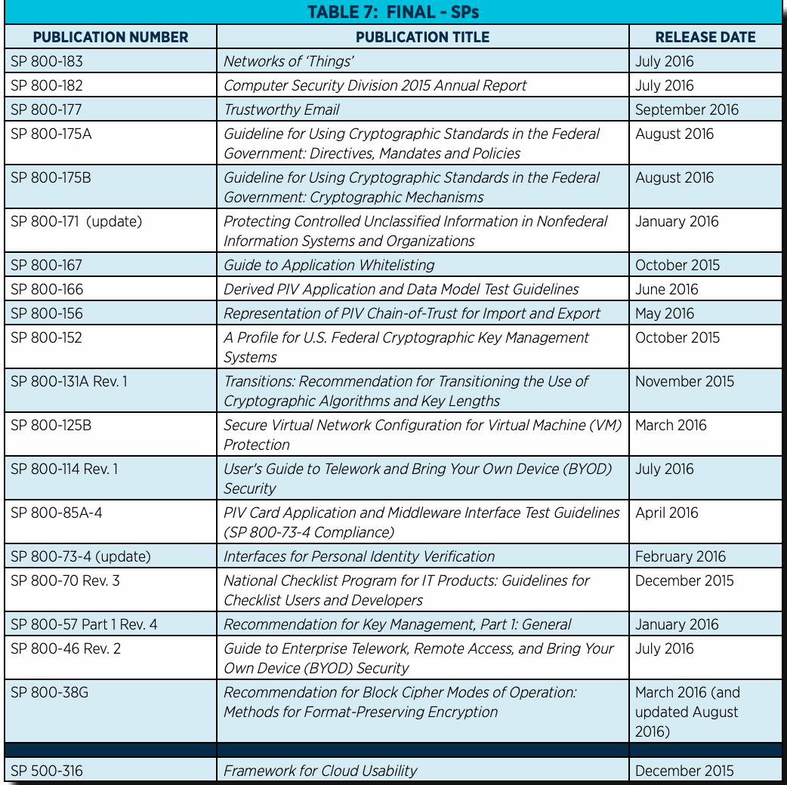
| 表7：最終版－SP | ||
| 刊行物番号 | 刊行物名 | 発行日 |
| SP 800-183 | モノのネットワーク | 2016年7月 |
| SP 800-182 | コンピュータセキュリティ部門2015年年次報告書 | 2016年7月 |
| SP 800-177 | 信頼できる電子メール | 2016年9月 |
| SP 800-175A | 連邦政府における暗号標準利用ガイドライン：指令、義務、ポリシー | 2016年8月 |
| SP 800-175B | 連邦政府における暗号標準利用ガイドライン：暗号メカニズム | 2016年8月 |
| SP 800-171（更新） | 非連邦情報システムおよび組織における管理対象非機密情報の保護 | 2016年1月 |
| SP 800-167 | アプリケーション許可リスト作成ガイド | 2015年10月 |
| SP 800-166 | 派生PIVアプリケーションおよびデータモデルの試験ガイドライン | 2016年6月 |
| SP 800-156 | PIV信頼チェーンのインポートおよびエクスポート時の表現 | 2016年5月 |
| SP 800-152 | 米国連邦政府暗号鍵管理システムのプロファイル | 2015年10月 |
| SP 800-131A Rev. 1 | 暗号アルゴリズムおよび鍵長の利用移行に関する推奨 | 2015年11月 |
| SP 800-125B | 仮想マシン（VM）保護のためのセキュアな仮想ネットワーク構成 | 2016年3月 |
| SP 800-114 Rev. 1 | テレワークおよび私物デバイス持ち込み（BYOD）セキュリティのユーザーガイド | 2016年7月 |
| SP 800-85A-4 | PIVカードアプリケーションおよびミドルウェアインターフェースの試験ガイドライン（SP 800-73-4準拠） | 2016年4月 |
| SP 800-73-4（更新） | 個人識別検証（PIV）のインターフェース | 2016年2月 |
| SP 800-70 Rev. 3 | IT製品向け国家チェックリストプログラム：チェックリスト利用者および開発者向けガイドライン | 2015年12月 |
| SP 800-57 Part 1 Rev. 4 | 鍵管理に関する推奨 第1部：一般事項 | 2016年1月 |
| SP 800-46 Rev. 2 | 企業テレワーク、リモートアクセス、私物デバイス持ち込み（BYOD）セキュリティガイド | 2016年7月 |
| SP 800-38G | ブロック暗号利用モードに関する推奨：フォーマット保持暗号化の方式 | 2016年3月（2016年8月更新） |
| SP 500-316 | クラウドユーザビリティの枠組み | 2015年12月 |
| TABLE 8: FINAL - NISTIRs | ||
| PUBLICATION NUMBER | PUBLICATION TITLE | RELEASE DATE |
| NISTIR 8150 | Government Data De-Identification Stakeholder’s Meeting, Meeting Report | September 2016 |
| NISTIR 8135 | Identifying and Categorizing Data Types for Public Safety Mobile Applications: Workshop Report | May 2016 |
| NISTIR 8113 | SATE V Ockham Sound Analysis Criteria | March 2016 |
| NISTIR 8105 | Report on Post-Quantum Cryptography for Public Comment | March 2016 |
| NISTIR 8103 | Advanced Identity Workshop on Applying Measurement Science in the Identity Ecosystem: Summary and Next Steps | September 2016 |
| NISTIR 8101 | A Rational Foundation for Software Metrology | January 2016 |
| NISTIR 8080 | Usability and Security Considerations for Public Safety Mobile Authentication | July 2016 |
| NISTIR 8074 Volumes 1 & 2 | Volume 1: Report on Strategic U.S. Government Engagement in International Standardization to Achieve U.S. Objectives for Cybersecurity Volume 2: Supplemental Information | December 2015 |
| NISTIR 8060 | Guidelines for the Creation of Interoperable Software Identification (SWID) Tags | April 2016 |
| NISTIR 8055 | Derived Personal Identity Verification (PIV) Credentials (DPC) Proof of Concept Research | January 2016 |
| NISTIR 8054 (update) | NSTIC Pilots: Catalyzing the Identity Ecosystem | March 2016 |
| NISTIR 8053 | De-Identification of Personal Information | October 2015 |
| NISTIR 8040 | Measuring the Usability and Security of Permuted Passwords on Mobile Platforms | April 2016 |
| NISTIR 7987 Rev. 1 | Policy Machine: Features, Architecture, and Specification | October 2015 |
| NISTIR 7977 | NIST Cryptographic Standards and Guidelines Development Process | March 2016 |
| NISTIR 7966 | Security of Interactive and Automated Access Management Using Secure Shell (SSH) | October 2015 |
| NISTIR 7904 | Trusted Geolocation in the Cloud: Proof of Concept Implementation | December 2015 |
| NISTIR 7511 Rev. 4 | Security Content Automation Protocol (SCAP) Version 1.2 Validation Program Test Requirements | January 2016 |
原本PDFの抜粋画像
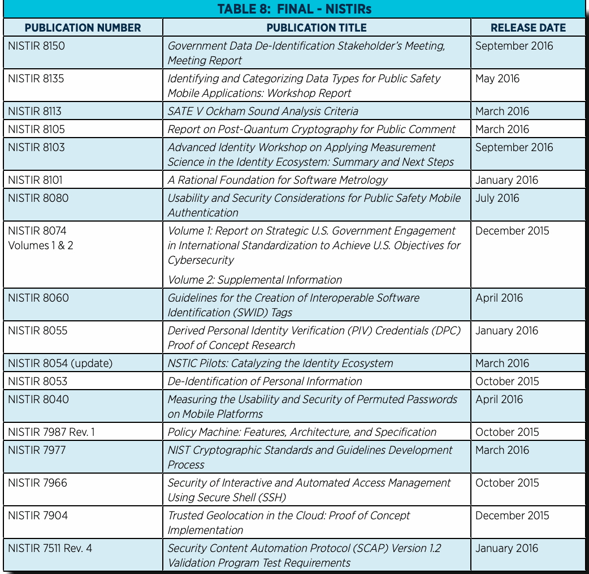
| 表8：最終版－NISTIR | ||
| 刊行物番号 | 刊行物名 | 発行日 |
| NISTIR 8150 | 政府データの匿名化に関するステークホルダー会議：会議報告書 | 2016年9月 |
| NISTIR 8135 | 公共安全向けモバイルアプリケーションのデータ型の特定と分類：ワークショップ報告書 | 2016年5月 |
| NISTIR 8113 | SATE V Ockhamサウンド分析基準 | 2016年3月 |
| NISTIR 8105 | 公開コメント用ポスト量子暗号報告書 | 2016年3月 |
| NISTIR 8103 | アイデンティティ・エコシステムにおける計測科学の適用に関する先進アイデンティティ・ワークショップ：概要と今後の課題 | 2016年9月 |
| NISTIR 8101 | ソフトウェア計測学の合理的基盤 | 2016年1月 |
| NISTIR 8080 | 公共安全向けモバイル認証のユーザビリティとセキュリティに関する考察 | 2016年7月 |
| NISTIR 8074 第1巻・第2巻 | 第1巻：米国のサイバーセキュリティ目標達成に向けた国際標準化への米国政府の戦略的関与に関する報告書 第2巻：補足情報 | 2015年12月 |
| NISTIR 8060 | 相互運用可能なソフトウェア識別（SWID）タグの作成に関するガイドライン | 2016年4月 |
| NISTIR 8055 | 派生個人識別検証（PIV）資格情報（DPC）の概念実証研究 | 2016年1月 |
| NISTIR 8054（更新） | NSTICパイロット：アイデンティティ・エコシステムの促進 | 2016年3月 |
| NISTIR 8053 | 個人情報の匿名化 | 2015年10月 |
| NISTIR 8040 | モバイルプラットフォーム上の順列パスワードのユーザビリティとセキュリティの測定 | 2016年4月 |
| NISTIR 7987 Rev. 1 | ポリシーマシン：機能、アーキテクチャ、仕様 | 2015年10月 |
| NISTIR 7977 | NIST暗号標準およびガイドラインの策定プロセス | 2016年3月 |
| NISTIR 7966 | Secure Shell（SSH）を用いた対話型および自動アクセス管理のセキュリティ | 2015年10月 |
| NISTIR 7904 | クラウドにおける信頼できる位置情報：概念実証の実装 | 2015年12月 |
| NISTIR 7511 Rev. 4 | セキュリティコンテンツ自動化プロトコル（SCAP）バージョン1.2検証プログラムの試験要件 | 2016年1月 |
| TABLE 9: ITL BULLETINS | |
| PUBLICATION DATE | BULLETIN TITLE |
| September 2016 | Demystifying the Internet of Things |
| August 2016 | NIST Updates Personal Identity Verification (PIV) Guidelines |
| July 2016 | Improving Security and Software Management Through the Use of SWID Tags |
| June 2016 | Extending Network Security into Virtualized Infrastructure |
| May 2016 | Combinatorial Testing for Cybersecurity and Reliability |
| April 2016 | New NIST Security Standard Can Protect Credit Cards, Health Information |
| March 2016 | Updates to the NIST SCAP Validation Program and Associated Test Requirements |
| February 2016 | Implementing Trusted Geolocation Services in the Cloud |
| January 2016 | Securing Interactive and Automated Access Management Using Secure Shell (SSH) |
| December 2015 | Stopping Malware and Unauthorized Software through Application Whitelisting |
| November 2015 | Tailoring Security Controls for Industrial Control Systems |
| October 2015 | Protection of Controlled Unclassified Information |
原本PDFの抜粋画像
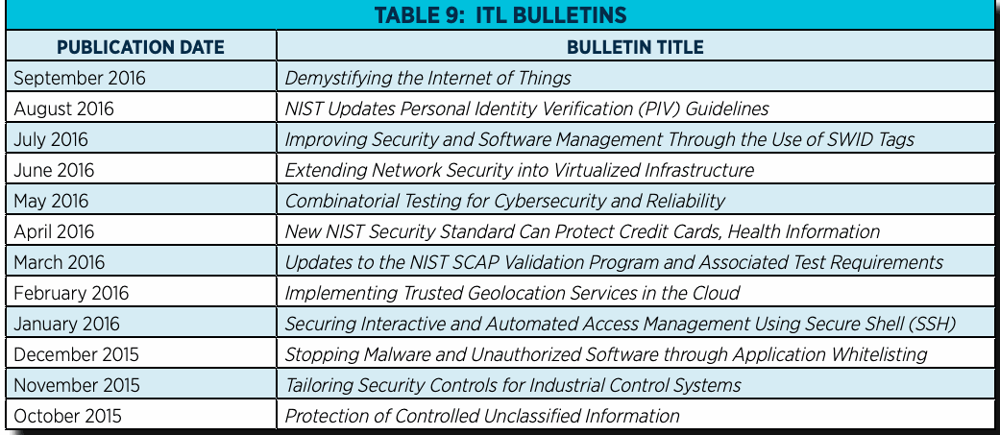
| 表9：ITLニュースレター | |
| 発行日 | ニュースレターのタイトル |
| 2016年9月 | モノのインターネットの謎を解く |
| 2016年8月 | NISTが個人識別検証（PIV）ガイドラインを更新 |
| 2016年7月 | SWIDタグを用いたセキュリティとソフトウェア管理の改善 |
| 2016年6月 | 仮想化インフラへのネットワークセキュリティの拡張 |
| 2016年5月 | サイバーセキュリティと信頼性のための組合せテスト |
| 2016年4月 | 新しいNISTセキュリティ標準がクレジットカード情報と医療情報を保護 |
| 2016年3月 | NIST SCAP検証プログラムおよび関連試験要件の更新 |
| 2016年2月 | クラウドにおける信頼できる位置情報サービスの実装 |
| 2016年1月 | Secure Shell（SSH）による対話型および自動アクセス管理の保護 |
| 2015年12月 | アプリケーション許可リストによるマルウェアと未承認ソフトウェアの阻止 |
| 2015年11月 | 産業用制御システム向けセキュリティ管理策の調整 |
| 2015年10月 | 管理対象非機密情報の保護 |
O t h e r N I S T P u b l i c a t i o n s NIST released other publications in FY 2016, as “White Papers,” and as Concept Papers and Project Descriptions from NCCoE.
その他のNIST刊行物 NISTは2016会計年度に、「ホワイトペーパー」のほか、NCCoEのコンセプトペーパーおよびプロジェクト説明書として他の刊行物を公開した。
未レビュー訳| TABLE 10: OTHER NIST PUBLICATIONS (CONCEPT PAPERS, PROJECT DESCRIPTIONS, AND WHITE PAPERS) POSTED FOR PUBLIC COMMENT | ||
| PUBLICATION TYPE | PUBLICATION TITLE | RELEASE DATE |
| Concept Paper (Draft) | Identity and Access Management for Smart Home Devices | June 2016 |
| Project Description (Draft) | Authentication for Law Enforcement Vehicle Systems | September 2016 |
| Project Description (Final) (Draft) | Data Integrity: Recovering from a Destructive Malware Attack | May 2016 December 2015 |
| Project Description (Final) | Domain Name System-Based Security for Electronic Mail | March 2016 |
| Project Description (Draft) | Mobile Application Single Sign-on: for Public Safety and First Responders | July 2016 |
| Project Description (Draft) | Multifactor Authentication for e-Commerce: Online Authentication for the Retail Sector | May 2016 |
| Project Description (Draft) | Securing Non-Credit Card, Sensitive Consumer Data: Consumer Data Security for the Retail Sector | May 2016 |
| White Paper (Draft) | Baldrige Cybersecurity Excellence Builder (BCEB): Key questions for improving your organization’s cybersecurity performance | September 2016 |
| White Paper (Final) (Draft) | Best Practices for Privileged User PIV Authentication | April 2016 February 2016 |
| White Paper (Draft) | Cybersecurity Framework Manufacturing Profile | September 2016 |
原本PDFの抜粋画像
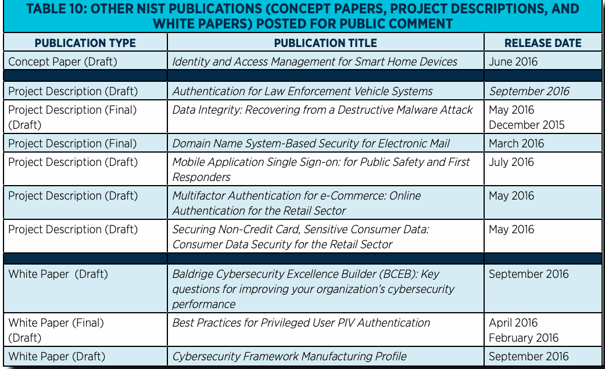
| 表10：パブリックコメント用に公開されたその他のNIST刊行物（コンセプトペーパー、プロジェクト説明書、ホワイトペーパー） | ||
| 刊行物の種類 | 刊行物名 | 発行日 |
| コンセプトペーパー（草案） | スマートホーム機器のアイデンティティおよびアクセス管理 | 2016年6月 |
| プロジェクト説明書（草案） | 法執行車両システム向け認証 | 2016年9月 |
| プロジェクト説明書（最終版）／（草案） | データ完全性：破壊的なマルウェア攻撃からの復旧 | 2016年5月／2015年12月 |
| プロジェクト説明書（最終版） | 電子メール向けドメインネームシステムベースのセキュリティ | 2016年3月 |
| プロジェクト説明書（草案） | 公共安全および初動対応者向けモバイルアプリケーションのシングルサインオン | 2016年7月 |
| プロジェクト説明書（草案） | 電子商取引の多要素認証：小売部門向けオンライン認証 | 2016年5月 |
| プロジェクト説明書（草案） | 非クレジットカードの機微な消費者データの保護：小売部門向け消費者データセキュリティ | 2016年5月 |
| ホワイトペーパー（草案） | Baldrigeサイバーセキュリティ・エクセレンス・ビルダー（BCEB）：組織のサイバーセキュリティ性能改善に向けた重要な問い | 2016年9月 |
| ホワイトペーパー（最終版）／（草案） | 特権ユーザーのPIV認証に関するベストプラクティス | 2016年4月／2016年2月 |
| ホワイトペーパー（草案） | 製造業向けサイバーセキュリティ・フレームワーク・プロファイル | 2016年9月 |
Two significant efforts to revise major publications were
右列：主要刊行物を改訂するための2つの重要な取り組みが
未レビュー訳I T L C Y B E R S E C U R I T Y
ITLサイバーセキュリティ
未レビュー訳begun. ACD solicited public input to develop preliminary
右列：開始された。ACDは、予備的な草案を作成するに当たり、一般からの意見を募った。
未レビュー訳P R O G R A M R E L A T E D
関連プログラム
未レビュー訳drafts of SP 800-63-3, Digital Authentication Guideline,
右列：SP 800-63-3「デジタル認証ガイドライン」の草案を
未レビュー訳P U B L I C A T I O N S
刊行物
未レビュー訳during a “Public Preview” phase that enabled stakeholders to provide dynamic, interactive feedback. A subseries
右列：利害関係者が動的かつ双方向にフィードバックを提供できる「パブリックプレビュー」段階で行った。文書群の一系列では
未レビュー訳During FY 2016, the ITL staff authored a significant
左列：2016会計年度、ITL職員は相当数の
未レビュー訳of documents that will revise the current SP 800-63-2,
右列：現行のSP 800-63-2「電子認証ガイドライン」を改訂する文書群が
未レビュー訳number of standards, guidelines, recommendations and
左列：規格、ガイドライン、推奨事項、および
未レビュー訳ElectronicAuthenticationGuideline, will be posted for public
右列：2017会計年度の初めに公式の公開草案としてパブリックコメントに付される予定である（https://
未レビュー訳otherresearchpapers.ThesewerepublishedasNISTtechnical
左列：その他の研究論文を執筆した。これらはNISTの技術
未レビュー訳commentasofficialpublicdraftsinearlyFY2017(seehttps://
右列：2017会計年度初めに公式公開草案としてパブリックコメントに付される予定である（https://
未レビュー訳series documents (e.g., Federal Information Processing
左列：シリーズ文書（例：連邦情報処理
未レビュー訳pages.nist.gov/800-63-3/). Meanwhile, CSD posted a call for
右列：pages.nist.gov/800-63-3/ を参照）。一方、CSDは、
未レビュー訳Standards (FIPS), Special Publications (SP), NIST Internal or
左列：標準（FIPS）、特別刊行物（SP）、NIST内部または
未レビュー訳comments on SP 800-53 Revision 4, SecurityandPrivacy
右列：SP 800-53改訂第4版
未レビュー訳Interagency Reports (NISTIRs), and Information Technology
左列：省庁間報告書（NISTIR）および情報技術
未レビュー訳ControlsforFederalInformationSystemsandOrganizations,
右列：「連邦情報システムおよび組織のセキュリティとプライバシー管理策」へのコメントを募集し、
未レビュー訳Laboratory (ITL) Bulletins), other NIST publications, or
左列：研究所（ITL）のニュースレター、その他のNIST刊行物、または
未レビュー訳to begin preparing for the release of a draft of Revision 5 for
右列：2017会計年度に改訂第5版の草案を公開コメントに付すための準備を開始するため、
未レビュー訳as externally-published documents (e.g., journal articles,
左列：外部刊行物（例：学術誌論文、
未レビュー訳public comment in FY 2017.
右列：2017会計年度に公開コメントに付す予定である。
未レビュー訳conference papers, books, and other papers).
左列：会議論文、書籍、その他の論文）として公表された。
未レビュー訳The ITL Cybersecurity Framework team worked closely
右列：ITLサイバーセキュリティ・フレームワーク・チームは
未レビュー訳Additionally, the NCCoE began posting public drafts of
左列：さらに、NCCoEは2つの新シリーズで公開草案の掲載を開始した。
未レビュー訳with the Baldrige Performance Excellence Program to
右列：Baldrige Performance Excellence Programと緊密に連携し、
未レビュー訳documents in two new series: Concept Papers and Project
左列：コンセプトペーパーとプロジェクト説明書である。コンセプトペーパーは
未レビュー訳develop the Baldrige Cybersecurity Excellence Builder
右列：Baldrige Cybersecurity Excellence Builder
未レビュー訳Descriptions. Concept Papers identify potential project
左列：NCCoEが関係者や技術
未レビュー訳(BCEB): Key questions for improving your organization’s
右列：（BCEB）「組織のサイバーセキュリティ性能を向上させるための重要な問い」を開発した。
未レビュー訳topics for NCCoE to explore with stakeholders and
左列：協力者とともに検討するプロジェクト候補のテーマを特定する。
未レビュー訳cybersecurity performance, which was posted for public
右列：組織のサイバーセキュリティ性能向上に向けた問いを示すBCEBは、公開コメントに付され、
未レビュー訳technology collaborators. After reviewing public comments
左列：草案のコンセプトペーパーに対する一般からのコメントを検討した後、
未レビュー訳comment on the Baldridge Cybersecurity Initiative website
右列：Baldrige Cybersecurity Initiativeのウェブサイトで
未レビュー訳on a draft Concept Paper, NCCoE can better understand
左列：NCCoEは具体的な課題とニーズをよりよく理解し、場合によっては
未レビュー訳(see https://www.nist.gov/baldrige/products-services/
右列：（https://www.nist.gov/baldrige/products-services/
未レビュー訳specific challenges and needs, and may possibly draft
左列：具体的な課題やニーズをよりよく理解し、必要に応じて
未レビュー訳baldrige-cybersecurity-initiative). The BCEB is a voluntary
右列：baldrige-cybersecurity-initiativeを参照）。BCEBは任意参加型の
未レビュー訳a Project Description. Formerly issued as “Building
左列：プロジェクト説明書を作成する場合がある。以前は「Building
未レビュー訳self-assessment tool that enables organizations to better
右列：自己評価ツールで、組織が自らの
未レビュー訳Blocks” and “Use Cases,” Project Descriptions describe a
左列：Blocks」や「Use Cases」として発行されていたプロジェクト説明書は、
未レビュー訳understand the effectiveness of their cybersecurity risk
右列：サイバーセキュリティ・リスク管理の取り組みの有効性をよりよく理解できるようにする
未レビュー訳particular problem that is relevant across a sector. Through
左列：ある分野に共通する特定の課題を記述する。その開発に当たっては、
未レビュー訳management efforts.
右列：ことを可能にする。
未レビュー訳collaboration with community members and vendors of cybersecurity solutions, NCCoE will develop a reference design that can be used by sector organizations to address To p D o w n l o a d s that challenge.
左列：地域の関係者やサイバーセキュリティ・ソリューション提供者と協力して、NCCoEは各分野の組織がその課題に対処するために利用できる参照設計を開発する。｜右列見出し：ダウンロード上位
未レビュー訳Publications are available for download from CSRC
右列：刊行物はCSRCからダウンロードできる。
未レビュー訳In FY 2016, ITL published 20 NIST Special Publications, 18 (see http://csrc.nist.gov/publications/), the NCCoE website NISTIRs and 12 ITL Bulletins in the areas of cybersecurity and (see https://nccoe.nist.gov/library) and the main NIST privacy. Additionally, ITL continued to engage stakeholders Publications site (see https://www.nist.gov/publications/). by posting numerous draft documents for public comment, The following lists summarize the most-downloaded ITL including 23 Special Publications, 13 NISTIRs, 6 NCCoE publications for FY 2016, using weblog data (and excluding Project Descriptions, 1 NCCoE Concept Paper, and 3 NIST traffic from spiders and web crawlers): “white papers.” ITL research was also published externally, as 18 journal articles and 18 conference papers. They are listed To p 1 0 M o s t - D o w n l o a d e d below, with abstracts and full text links, under (External P u b l i c a t i o n s ( w i t h e s t i m a t e d Publications).
左列：2016会計年度、ITLはサイバーセキュリティとプライバシー分野で、NIST特別刊行物20件、NISTIR18件、ITLニュースレター12件を発行した。さらに、一般からのコメントを求めるため、SP23件、NISTIR13件、NCCoEのプロジェクト説明書6件、コンセプトペーパー1件、NISTの「ホワイトペーパー」3件を含む多数の草案を公開した。ITLの研究成果は学術誌論文18本と会議論文18本としても外部公開された。これらは「外部刊行物」の節に要旨と全文リンクとともに掲載されている。｜右列：（http://csrc.nist.gov/publications/ を参照）、NCCoEウェブサイト（https://nccoe.nist.gov/library を参照）およびNISTの主刊行物サイト（https://www.nist.gov/publications/ を参照）からダウンロードできる。以下にウェブログデータから集計した2016会計年度のITL刊行物ダウンロード上位を示す（スパイダーやウェブクローラーのアクセスは除外）。｜見出し：最もダウンロードされた刊行物トップ10（推定
未レビュー訳n u m b e r o f d o w n l o a d s ) :
ダウンロード件数）：
未レビュー訳In the October 19, 2015 Federal Register, NIST
左列：2015年10月19日付Federal Registerにおいて、NISTは
未レビュー訳1.SP 800-53 Revision 4,SecurityandPrivacyControls
1.右列：1. SP 800-53改訂第4版「セキュリティとプライバシー管理策
未レビュー訳announced the withdrawal of six FIPS that had become
左列：すでに旧式となっていた6件のFIPSを廃止すると発表した。
未レビュー訳forFederalInformationSystemsandOrganizations
右列：連邦情報システムおよび組織向け」（
未レビュー訳obsolete: FIPS 181, 185, 188, 190, 191, and 196. NIST had
左列：対象はFIPS 181、185、188、190、191、196である。NISTは
未レビュー訳(303,162);
右列：303,162件）；
未レビュー訳received only one comment in response to a January 16, 2015 Federal Register Notice requesting public feedback 2. SP800-145,TheNISTDefinitionofCloudComputing
左列：提案された廃止について意見を求めた2015年1月16日付Federal Register通知への回答は1件のみだった。｜右列：2. SP 800-145「NISTによるクラウドコンピューティングの定義」
未レビュー訳(235,191);
（235,191件）；
未レビュー訳on their proposed withdrawal. (The titles of the withdrawn FIPS are: 181 - AutomatedPasswordGenerator(APG), 185 3. Framework for Improving Critical Infrastructure - Escrowed Encryption Standard, 188 - Standard Security
左列：廃止対象FIPSの題名は、181「自動パスワード生成器（APG）」、185「エスクロー暗号化標準」、188「標準セキュリティラベル｜右列：3. 重要インフラのサイバーセキュリティ強化フレームワーク：
未レビュー訳Cybersecurity, version 1.0 (180,163);
右列：バージョン1.0（180,163件）；
未レビュー訳LabelforInformationTransfer, 190 - GuidelinefortheUse
左列：情報転送用標準セキュリティラベル」、190「高度認証技術の代替手段の利用に関する
未レビュー訳4.SP 800-61 Revision 2, ComputerSecurityIncident
4.右列：4. SP 800-61改訂第2版「コンピュータセキュリティインシデント
未レビュー訳of Advanced Authentication Technology Alternatives,
左列：ガイドライン」、
未レビュー訳HandlingGuide(153,723);
右列：対応ガイド」（153,723件）；
未レビュー訳191 - Guideline for The Analysis of Local Area Network Security, and 196 - EntityAuthenticationUsingPublicKey 5. SP 800-30 Revision 1, Guide for Conducting Risk
左列：191「ローカルエリアネットワークセキュリティ分析ガイドライン」、および196「公開鍵暗号を用いたエンティティ認証｜右列：5. SP 800-30改訂第1版「リスク評価実施ガイド
未レビュー訳6.SP 800-37 Revision 1, GuideforApplyingtheRisk F Y 2 0 1 7 P l a n s Management Framework to Federal Information ITL will continue to publish its research in the publication Systems:ASecurityLifeCycleApproach(112,104); series mentioned here. Additionally, ITL is developing a new
6.左列：6. SP 800-37改訂第1版「連邦情報システムへのリスク管理フレームワーク適用ガイド：セキュリティ・ライフサイクル・アプローチ」（112,104件）；｜右列見出し：2017年度の計画｜右列：ITLはここに挙げる刊行物シリーズで研究成果の公開を継続する。
未レビュー訳7.FIPS 197, Advanced Encryption Standard (AES) version of CSRC—planned for release in FY 2017—that will (108,162); significantly improve information about its cybersecurity and
7.左列：7. FIPS 197「Advanced Encryption Standard（AES）」（108,162件）；｜右列：さらにITLは、2017年度公開予定のCSRC新バージョンを開発しており、サイバーセキュリティと
未レビュー訳8.SP 800-122, GuidetoProtectingtheConfidentiality privacy publications, including features such as advanced ofPersonallyIdentifiableInformation(PII)(81,887); searching and filtering; abstracts, keywords, and authors; links to superseding/superseded versions of publications;
8.左列：8. SP 800-122「個人識別情報（PII）の機密性保護ガイド」（81,887件）；｜右列：プライバシー刊行物の情報を大幅に改善する。このバージョンでは、高度な検索と絞り込み、要旨・キーワード・著者、刊行物の後継版／旧版へのリンクなどを提供する。
未レビュー訳9.SP 800-12, AnIntroductiontoComputerSecurity: and a significantly more robust taxonomy of topical theNISTHandbook(81,768); and headings to help users easily find related content (including
9.左列：9. SP 800-12「コンピュータセキュリティ入門：NISTハンドブック」（81,768件）；｜右列：さらに、関連する内容（刊行物を含む）をCSRCウェブサイトで見つけやすくするため、主題や見出しの分類体系を大幅に強化する。
未レビュー訳10.SP 800-171, Protecting Controlled Unclassified publications) on the CSRC website. More publication-related InformationinNonfederalInformationSystemsand features will be added incrementally after the website’s Organizations(80,960). initial rollout.
10.左列：10. SP 800-171「非連邦情報システムおよび組織における管理対象非機密情報の保護」（80,960件）。｜右列：刊行物関連の機能は、ウェブサイトの初回公開後に段階的に追加する。
未レビュー訳F O R M O R E I N F O R M AT I O N , S E E :
右列見出し：詳細情報：
未レビュー訳To p 3 F I P S :
左列見出し：FIPS上位3件：
未レビュー訳http://csrc.nist.gov/publications/
右列：https://csrc.nist.gov/publications/
未レビュー訳1.FIPS 197, Advanced Encryption Standard (AES) (108,162); C O N TA C T S :
1.左列：1. FIPS 197「Advanced Encryption Standard（AES）」（108,162件）；｜右列見出し：連絡先：
未レビュー訳2.FIPS140-2,SecurityRequirementsforCryptographic Mr. Jim Foti Mr. Patrick O’Reilly Modules(79,565); and (301) 975-8018 (301) 975-4751
2.左列：2. FIPS 140-2「暗号モジュールのセキュリティ要件」（79,565件）；および｜右列：Jim Foti氏（301）975-8018 james.foti@nist.gov Patrick O’Reilly氏（301）975-4751 patrick.oreilly@nist.gov
未レビュー訳3.FIPS 199, Standards for Security Categorization james.foti@nist.gov patrick.oreilly@nist.gov of Federal Information and information Systems (70,846). N I S T Te c h n i c a l S e r i e s P u b l i c a t i o n s a n d O t h e r N I S T
3.左列：3. FIPS 199「連邦政府の情報システムおよび情報のセキュリティ分類基準」（70,846件）。｜右列見出し：NIST技術シリーズ刊行物とその他のNIST
未レビュー訳To p 3 N I S T I R s :
左列見出し：NISTIR上位3件：
未レビュー訳P u b l i c a t i o n s
右列見出し：刊行物
未レビュー訳1.NISTIR 7298 Rev. 2, Glossary of Key Information The following tables list NIST Technical Series SecurityTerms(36,110); publications and other NIST publications released by ITL on
1.左列：1. NISTIR 7298改訂第2版「情報セキュリティ用語集」（36,110件）；｜右列：以下の表に、2016年度（2015年10月1日から2016年9月30日）にITLがCSRCで公開したNIST技術シリーズ刊行物およびその他のNIST刊行物を示す。
未レビュー訳2.NISTIR 7316,AssessmentofAccessControlSystems CSRC—either as draft or final publications—during FY 2016 (19,902); and (from October 1, 2015 to September 30, 2016). Abstracts and
2.左列：2. NISTIR 7316「アクセス制御システムの評価」（19,902件）；および｜右列：草案または最終版として公開された刊行物である。各刊行物の要旨と
未レビュー訳3.NISTIR 8053, De-Identification of Personal Infor-links to the full text of these publications are provided in the mation(17,970). sections that follow.
3.左列：3. NISTIR 8053「個人情報の匿名化」（17,970件）。｜右列：全文へのリンクは、以下の各節に掲載する。
未レビュー訳To p 3 I T L B u l l e t i n s :
左列見出し：ITLニュースレター上位3件：
未レビュー訳1.TheSystemDevelopmentLifeCycle(SDLC), April 2009 (46,298);
1.左列：1.「システム開発ライフサイクル（SDLC）」、2009年4月（46,298件）；
未レビュー訳2.CloudComputing:AReviewofFeatures,Benefits, and Risk, and Recommendations for Secure, EfficientImplementations, June 2012 (7,309); and
2.左列：2.「クラウドコンピューティング：特徴、利点、リスクのレビューと、安全で効率的な実装に関する推奨」、2012年6月（7,309件）；および
未レビュー訳3.New NIST Security Standard Can Protect Credit Cards,HealthInformation, April 2016 (6,150).
3.左列：3.「新しいNISTセキュリティ標準がクレジットカードと医療情報を保護」、2016年4月（6,150件）。
未レビュー訳A B S T R A C T S O F P U B L I C AT I O N S provide sufficient functionality for performing de-
左列見出し：刊行物の要旨｜右列：匿名化を行うのに十分な機能を備えているとは限らない。
未レビュー訳identification. This document also includes an extensive
右列：この文書には、参考文献の詳しい一覧、用語集、個別の匿名化ツールの一覧も含まれる。
未レビュー訳R E L E A S E D I N F Y 2 0 1 6
見出し：2016会計年度に公開
未レビュー訳list of references, a glossary, and a list of specific de-identification tools, although the mention of these tools
右列：ただし、ツールへの言及は現時点で利用できるツールの範囲を示すためだけであり、NISTによる推奨や保証を意図しない。
未レビュー訳The following sections provide abstracts of NIST SPs, is only to be used to convey the range of tools currently security-related NISTIRs, and other NIST publications listed available, and is not intended to imply recommendation in the previous section. If a publication was released as a or endorsement by NIST. draft and final publication during FY 2016, only the final
左列：以下の各節では、前節に掲載したNIST SP、セキュリティ関連NISTIR、その他のNIST刊行物の要旨を示す。2016会計年度に草案版と最終版の両方が発行された場合は、最終版のみを以下に掲載する。
未レビュー訳SP 800-185 (DRAFT)
右列見出し：SP 800-185（草案）
未レビュー訳publications are listed below. Any updated publications with
左列：刊行物のみを以下に示す。表中で「更新」と記された、
未レビュー訳SHA-3 Derived Functions: cSHAKE, KMAC,
右列見出し：SHA-3派生関数：cSHAKE、KMAC、
未レビュー訳minor technical or editorial changes, identified in the tables
左列：軽微な技術的または編集上の変更は、以下には掲載しない。技術報告書は報告書番号の降順で、
未レビュー訳TupleHash, and ParallelHash
右列見出し：TupleHash、ParallelHash
未レビュー訳above as “updates,” are not listed below. Technical reports are listed in reverse numerical order by report number; other http://csrc.nist.gov/publications/PubsSPs.html#SP-800-185 documents are listed alphabetically by title.
左列：その他の文書はタイトルのアルファベット順で掲載する。｜右列：https://csrc.nist.gov/publications/PubsSPs.html#SP-800-185
未レビュー訳This Recommendation specifies four SHA-3-derived functions: cSHAKE, KMAC, TupleHash, and ParallelHash.
右列：この推奨文書では、SHA-3から派生した4つの関数、cSHAKE、KMAC、TupleHash、ParallelHashを規定する。
未レビュー訳N I S T S P s
左列見出し：NIST特別刊行物（SP）
未レビュー訳cSHAKE is a customizable variant of the SHAKE functions defined in FIPS 202. KMAC (for Keccak Message Authentication Code) is a variable-length message authentication code algorithm based on Keccak; it can
右列：cSHAKEはFIPS 202で定義されたSHAKE関数のカスタマイズ可能な変種である。KMAC（Keccakメッセージ認証コード）はKeccakに基づく可変長メッセージ認証コードであり、
未レビュー訳SP 800-188 (DRAFT)
左列見出し：SP 800-188（草案）
未レビュー訳also be used as a pseudorandom function. TupleHash
右列：擬似乱数関数としても使用できる。TupleHashは
未レビュー訳De-Identifying Government Datasets
左列見出し：政府データセットの匿名化
未レビュー訳is a variable-length hash function that is designed to
右列：可変長ハッシュ関数であり、入力文字列のタプルを曖昧さなく
未レビュー訳http://csrc.nist.gov/publications/PubsSPs.html#SP-800-188 hash tuples of input strings unambiguously. ParallelHash
左列：https://csrc.nist.gov/publications/PubsSPs.html#SP-800-188｜右列：ハッシュする。ParallelHashは
未レビュー訳is a variable-length hash function that can hash non-
右列：長いメッセージの重複しない部分集合を並列にハッシュできる可変長ハッシュ関数である。
未レビュー訳De-identification removes identifying information
左列：匿名化は、データセットから識別情報を削除し、
未レビュー訳overlapping subsets of very long messages in parallel.
右列：長いメッセージの重複しない部分集合を並列にハッシュできる。
未レビュー訳from a dataset so that the remaining data cannot be
左列：残ったデータから特定の個人を
未レビュー訳SP 800-184 (DRAFT)
右列見出し：SP 800-184（草案）
未レビュー訳linked with specific individuals. Government agencies
左列：特定できないようにする。政府機関は
未レビュー訳Guide for Cybersecurity Event Recovery
右列見出し：サイバーセキュリティ事象復旧ガイド
未レビュー訳can use de-identification to reduce the privacy risk associated with collecting, processing, archiving,
左列：政府データの収集、処理、保存、配布または公開に伴うプライバシーリスクを軽減するため、匿名化を利用できる。
未レビュー訳http://csrc.nist.gov/publications/PubsSPs.html#SP-800-184
右列：https://csrc.nist.gov/publications/PubsSPs.html#SP-800-184
未レビュー訳distributing or publishing government data. Previously, NIST published NISTIR 8053, “De-Identifying Personal
左列：以前、NISTはNISTIR 8053「個人データの
未レビュー訳In light of an increasing number of cybersecurity
右列：サイバーセキュリティ事象の増加を踏まえ、組織は
未レビュー訳Data,” which provided a survey of de-identification and
左列：匿名化」を発行し、匿名化の概要を示した。
未レビュー訳events, organizations can improve resilience by
右列：サイバーセキュリティ事象が増える中、組織はレジリエンスを高めるため、
未レビュー訳re-identification techniques. This document provides
左列：また、再識別の手法も概説した。本書は
未レビュー訳ensuring that their risk management processes include
右列：リスク管理プロセスに包括的な復旧計画を含める必要がある。資源を特定し、
未レビュー訳specific guidance to government agencies that wish to
左列：匿名化を利用しようとする政府機関に具体的な指針を示す。
未レビュー訳comprehensive recovery planning. Identifying and
右列：組織の資源に優先順位を付けることで、
未レビュー訳use de-identification. Before using de-identification,
左列：利用前に、政府機関は
未レビュー訳prioritizing organization resources helps to guide
右列：効果的な計画と現実的な試験シナリオの策定を支援する。
未レビュー訳agencies should evaluate their goals in using
左列：利用目的と、匿名化がもたらす潜在的なリスクを評価する必要がある。
未レビュー訳effective plans and realistic test scenarios. This
右列：こうした準備により、
未レビュー訳de-identification and the potential risks that
左列：その上で、政府機関は
未レビュー訳preparation enables rapid recovery from incidents
右列：事象が発生した際に迅速な復旧が可能となり、
未レビュー訳de-identification might create. Agencies should
左列：その上で、
未レビュー訳when they occur and helps to minimize the impact
右列：事象が発生した際、影響を軽減できる。
未レビュー訳decide upon a de-identification release model, such
左列：匿名化後のデータをどのように公開するかを決める必要がある。
未レビュー訳on the organization and its constituents. Additionally,
右列：組織とその利害関係者への影響を最小限に抑えられる。さらに、
未レビュー訳as publishing de-identified data, publishing synthetic
左列：例えば、匿名化済みデータを公開する方法や、
未レビュー訳continually improving recovery planning by learning
右列：過去の事象から学び、復旧計画を継続的に改善することは、
未レビュー訳data based on identified data, and providing a query
左列：特定可能なデータに基づく合成データを公開する方法、または照会
未レビュー訳lessons from past events, including those of other
右列：他組織の事例も含む過去の事象から得た教訓を活用し、
未レビュー訳interface to the identified data that incorporates
左列：結果に匿名化を適用する、特定可能なデータへの照会インターフェースを提供する方法がある。
未レビュー訳organizations, helps to ensure the continuity of
右列：重要なミッション機能の継続性を確保するのに役立つ。
未レビュー訳de-identification. Agencies can use a Disclosure Review
左列：政府機関は、開示審査委員会を設置して
未レビュー訳important mission functions. This publication provides
右列：本書は、復旧計画の策定について戦術的・戦略的な指針を示し、
未レビュー訳Board to oversee the process of de-identification; they
左列：匿名化プロセスを監督できる。また、
未レビュー訳tactical and strategic guidance regarding the planning,
右列：復旧計画の策定に関する戦術的・戦略的な指針を示す。
未レビュー訳can also adopt a de-identification standard with
左列：測定可能な性能水準を設けた匿名化基準を
未レビュー訳playbook developing, testing, and improvement of
右列：復旧計画の手順書の作成、試験、改善も扱う。
未レビュー訳measurable performance levels. Several specific
左列：採用することができる。利用可能な匿名化手法には、
未レビュー訳recovery planning. It also provides an example scenario
右列：さらに、復旧計画の指針と参考指標を示すシナリオ例を
未レビュー訳techniques for de-identification are available,
左列：識別子を削除する方法、
未レビュー訳that demonstrates guidance and informative metrics
右列：提示する。この例では、指針と参考となる測定指標を示し、
未レビュー訳including de-identification by removing identifiers and
左列：準識別子を変換する方法、
未レビュー訳that may be helpful for improving resilience of the
右列：情報システムのレジリエンス向上に
未レビュー訳transforming quasi-identifiers and the use of formal
左列：差分プライバシーに依拠する形式的な
未レビュー訳information systems.
右列：情報システムのレジリエンス向上に役立つ。
未レビュー訳de-identification models that rely upon Differential Privacy. De-identification is typically performed with software tools that may have multiple features;
左列：匿名化モデルも利用できる。匿名化は通常、複数の機能を持つソフトウェアツールで行われるが、
未レビュー訳SP 800-183
左列見出し：SP 800-183
未レビュー訳SP 800-180 (DRAFT)
右列見出し：SP 800-180（草案）
未レビュー訳Networks of ‘Things’
左列タイトル：モノのネットワーク
未レビュー訳NIST Definition of Microservices, Application Containers and System Virtual Machines
右列タイトル：マイクロサービス、アプリケーションコンテナ、システム仮想マシンのNIST定義
未レビュー訳https://doi.org/10.6028/NIST.SP.800-183
左列：https://doi.org/10.6028/NIST.SP.800-183
未レビュー訳http://csrc.nist.gov/publications/PubsSPs.html#SP-800-180
右列：http://csrc.nist.gov/publications/PubsSPs.html#SP-800-180
未レビュー訳[This was originally released for public comment as draft NISTIR 8063, InternetofThings(IoT)
左列補足：［本書は、パブリックコメント用草案NISTIR 8063「モノのインターネット（IoT）の
未レビュー訳Many variations and definitions of application
右列：アプリケーションコンテナには多様な形態や定義が
未レビュー訳Trustworthiness, in February 2016.]
左列補足：信頼性」として2016年2月に公開された。］
未レビュー訳containers exist in industry, causing considerable confusion among those who attempt to explain what
右列：存在し、コンテナとは何かを説明しようとする人々の間で大きな混乱を招いている。
未レビュー訳System primitives allow formalisms, reasoning,
左列：システムの原始要素を用いると、形式的なモデル化、推論、
未レビュー訳a container is. This document provides a NIST-standard
右列：本書は、アプリケーションコンテナに関するNIST標準の定義を
未レビュー訳simulations, and reliability and security risk-tradeoffs
左列：形式的なモデル化、推論、シミュレーション、信頼性とセキュリティのリスク間のトレードオフを定式化し、論証できる。
未レビュー訳definition to application containers, microservices that
右列：示し、アプリケーションコンテナ内で動作するマイクロサービスと
未レビュー訳to be formulated and argued. In this work, five core
左列：本研究では、主要な5つの原理を
未レビュー訳reside in application containers and operating system
右列：オペレーティングシステム仮想マシンを説明する。さらに、
未レビュー訳primitives belonging to most distributed systems are
左列：多くの分散システムに共通する原理として
未レビュー訳virtual machines. Furthermore, this document explains
右列：サービス指向アーキテクチャ（SOA）とマイクロサービスの
未レビュー訳presented. These primitives apply well to systems
左列：提示する。これらの原理は
未レビュー訳the similarities and differences between a Services
右列：類似点と相違点を説明し、
未レビュー訳with large amounts of data, scalability concerns,
左列：大量のデータを扱い、拡張性に課題があるシステム、
未レビュー訳Oriented Architecture (SOA) and Microservices, as well
右列：サービス指向アーキテクチャ（SOA）とマイクロサービスの類似点・相違点に加え、
未レビュー訳heterogeneity concerns, temporal concerns, and
左列：異種性や時間的特性に関する課題、
未レビュー訳as the similarities and differences between Operating
右列：オペレーティングシステム仮想マシンと
未レビュー訳elements of unknown pedigree with possible nefarious
左列：由来が不明で、悪意ある意図を持つ可能性がある
未レビュー訳System Virtual Machines and Application Containers.
右列：オペレーティングシステム仮想マシンとアプリケーションコンテナの類似点・相違点も説明する。
未レビュー訳intent. These primitives are the basic building blocks for a Network of ‘Things’ (NoT), including the Internet SP 800-179 (DRAFT) of Things (IoT). This document offers an underlying Guide to Securing Apple OS X 10.10 Systems for and foundational understanding of IoT based on IT Professionals: A NIST Security Configuration the realization that IoT involves sensing, computing, Checklist communication, and actuation. The material presented
左列：要素も含まれる。これらの原理は「モノのネットワーク（NoT）」、すなわちモノのインターネット（IoT）の基本構成要素である。本書は、IoTにはセンシング、コンピューティング、通信、アクチュエーションが含まれるという認識に基づき、IoTの基盤的な理解を示す。ここで示す内容は、
未レビュー訳http://csrc.nist.gov/publications/PubsSPs.html#SP-800-179
右列：http://csrc.nist.gov/publications/PubsSPs.html#SP-800-179
未レビュー訳here is generic to all distributed systems that employ IoT technologies (i.e., ‘things’ and networks). The
左列：IoT技術（「モノ」とネットワーク）を用いるすべての分散システムに共通する。想定読者は
未レビュー訳This publication assists IT professionals in securing
右列：この刊行物は、IT専門家が
未レビュー訳expected audience is computer scientists, IT managers,
左列：想定読者は、コンピュータ科学者、IT管理者、
未レビュー訳Apple OS X 10.10 (i.e., Yosemite) desktop and laptop
右列：Apple OS X 10.10（Yosemite）のデスクトップおよびラップトップ
未レビュー訳networking specialists, and networking and cloud
左列：ネットワーク専門家、ネットワーキングおよびクラウド
未レビュー訳systemswithinvariousenvironments.Itprovidesdetailed
右列：複数の環境で使用される。この刊行物は、詳細な
未レビュー訳computing software engineers.
左列：コンピューティング・ソフトウェア技術者である。
未レビュー訳information about the security features of OS X 10.10
右列：OS X 10.10のセキュリティ機能と
未レビュー訳SP 800-182
左列見出し：SP 800-182
未レビュー訳and security configuration guidelines. The publication
右列：セキュリティ構成ガイドラインに関する情報を提供する。
未レビュー訳Computer Security Division 2015 Annual Report
左列タイトル：コンピュータセキュリティ部門2015年年次報告書
未レビュー訳recommends and explains tested, secure settings with the objective of simplifying the administrative burden of
右列：実証済みの安全な設定を推奨・説明し、システム管理負担の軽減を目的とする。
未レビュー訳https://doi.org/10.6028/NIST.SP.800-182
左列：https://doi.org/10.6028/NIST.SP.800-182
未レビュー訳improving the security of OS X 10.10 systems in three types of environments: Standalone, Managed, and
右列：OS X 10.10のセキュリティ向上を目的に、スタンドアロン、管理対象、および
未レビュー訳Title III of the E-Government Act of 2002, entitled
左列：2002年電子政府法第III編（
未レビュー訳Specialized Security-Limited Functionality.
右列：限定された機能に特化した環境）である。
未レビュー訳the Federal Information Security Management Act (FISMA) of 2002, requires NIST to prepare an annual SP 800-177 public report on activities undertaken in the previous Trustworthy Email year, and those planned for the coming year, to carry
左列：2002年連邦情報セキュリティマネジメント法（FISMA）は、NISTに対し、前年に実施した活動と翌年に予定する活動を記した年次公開報告書を作成し、
未レビュー訳https://doi.org/10.6028/NIST.SP.800-177
右列：https://doi.org/10.6028/NIST.SP.800-177
未レビュー訳out responsibilities under this law. The primary goal of the Computer Security Division (CSD), a component
左列：同法上の責務を果たすよう求める。CSDの主な目標は、
未レビュー訳This document gives recommendations and
右列：この文書は、電子メールの信頼性を高めるための推奨事項と
未レビュー訳of NIST’s Information Technology Laboratory (ITL),
左列：NIST情報技術研究所（ITL）の一部門として、
未レビュー訳guidelines for enhancing trust in email. The primary
右列：ガイドラインを示す。主な対象読者は、
未レビュー訳is to provide standards and technology that protects
左列：情報システムを脅威から保護する標準と技術を提供することである。
未レビュー訳audience includes enterprise email administrators,
右列：企業の電子メール管理者、
未レビュー訳information systems against threats to the con-
左列：具体的には、情報およびサービスの機密性、完全性、可用性を脅かすものから守る。
未レビュー訳information security specialists and network managers.
右列：情報セキュリティ専門家、ネットワーク管理者である。
未レビュー訳fidentiality, integrity, and availability of information and
左列：情報およびサービスを脅威から保護する。2015会計年度、CSDは
未レビュー訳This guideline applies to federal IT systems and will
右列：このガイドラインは連邦政府のITシステムに適用され、
未レビュー訳services. During FY 2015, CSD successfully responded to
左列：その使命を果たす上で、数多くの課題や機会に対応した。
未レビュー訳also be useful for small or medium-sized organizations.
右列：小規模または中規模の組織にも有用である。
未レビュー訳numerous challenges and opportunities in fulfilling that
左列：CSDの幅広い研究課題と
未レビュー訳Technologies recommended in support of core Simple
右列：中核となるSimple Mail Transfer Protocol（SMTP）および
未レビュー訳mission. Through CSD’s diverse research agenda and
左列：国家的な優先施策への幅広い関与を通じて、
未レビュー訳Mail Transfer Protocol (SMTP) and the Domain Name
右列：Domain Name System（DNS）を支援する技術には、
未レビュー訳engagement in many national priority initiatives, high-
左列：高品質で費用対効果の高いセキュリティおよびプライバシーの仕組みが
未レビュー訳System (DNS) include mechanisms for authenticating
右列：送信ドメインを認証する仕組みとして、
未レビュー訳quality, cost-effective security and privacy mechanisms
左列：開発・適用され、
未レビュー訳a sending domain: Sender Policy Framework (SPF),
右列：Sender Policy Framework（SPF）、
未レビュー訳were developed and applied that improved information
左列：高品質で費用対効果の高いセキュリティおよびプライバシーの仕組みが開発・適用され、情報
未レビュー訳Domain Keys Identified Mail (DKIM) and Domain-based
右列：DomainKeys Identified Mail（DKIM）およびドメインベースの
未レビュー訳security across the Federal Government and the greater
左列：セキュリティを、連邦政府およびより広い情報セキュリティコミュニティ全体で向上させた。
未レビュー訳Message Authentication, Reporting and Conformance
右列：Message Authentication, Reporting and Conformance（DMARC）
未レビュー訳information security community. This annual report
左列：この年次報告書は
未レビュー訳(DMARC). Recommendations for email transmission protocols. Recommendations for email content security requirements for protecting the confidentiality of CUI: include the encryption and authentication of message (i) when the CUI is resident in nonfederal information content using S/MIME (Secure/Multipurpose Internet systems and organizations; (ii) when the information Mail Extensions) and the associated certificate and key systems where the CUI resides are not used or operated distribution protocols.
右列：に加え、電子メール伝送プロトコルに関する推奨事項を示す。CUIの機密性を保護するための電子メール本文の要件として、S/MIME（Secure/Multipurpose Internet Mail Extensions）による本文の暗号化と認証、および関連する証明書・鍵配布プロトコルを挙げる。抽出テキスト中の適用条件：（i）CUIが非連邦情報システムまたは組織に存在する場合、（ii）CUIが保存される情報システムが使用または運用されない場合。
未レビュー訳by contractors of federal agencies or other organizations on behalf of those agencies; and (iii) where there are
右列：連邦政府機関の請負業者、または同機関のために業務を行うその他の組織が扱う場合、および（iii）
未レビュー訳SP 800-175A
左列見出し：SP 800-175A
未レビュー訳no specific safeguarding requirements for protecting
右列：CUIの機密性保護について、
未レビュー訳Guideline for Using Cryptographic Standards in
左列タイトル：連邦政府における暗号標準利用ガイドライン：
未レビュー訳the confidentiality of CUI prescribed by the authorizing
右列：権限を与える
未レビュー訳the Federal Government: Directives, Mandates and
左列タイトル：指令、義務、および
未レビュー訳law, regulation, or government-wide policy for the CUI
右列：法律、規制、または政府全体の方針で定められた
未レビュー訳Policies
左列タイトル：ポリシー
未レビュー訳category or subcategory listed in the CUI Registry. The requirements apply to all components of nonfederal
右列：CUIレジストリに掲載されたカテゴリーまたはサブカテゴリーを対象とする。これらの要件は、非連邦の
未レビュー訳https://doi.org/10.6028/NIST.SP.800-175A
https://doi.org/10.6028/NIST.SP.800-175A
未レビュー訳information systems and organizations that process,
右列：情報システムおよび組織のすべての構成要素に適用され、それらがCUIを処理、
未レビュー訳This document is part of a series intended to
左列：この文書は、
未レビュー訳store, or transmit CUI, or provide security protection for
右列：保存もしくは送信する、またはそのような構成要素にセキュリティ保護を提供する場合を含む。
未レビュー訳provide guidance to the Federal Government for using
左列：連邦政府が暗号および
未レビュー訳such components. The CUI requirements are intended
右列：CUI保護要件は、
未レビュー訳cryptography and NIST’s cryptographic standards to
左列：NISTの暗号標準を利用して
未レビュー訳for use by federal agencies in contractual vehicles or
右列：連邦政府機関が契約上の文書や
未レビュー訳protect sensitive, but unclassified digitized information
左列：機微だが非機密の電子情報を
未レビュー訳other agreements established between those agencies
右列：その他の合意を通じて利用し、
未レビュー訳during transmission and while in storage. SP 800-175A
左列：送信中および保存中に保護するための指針を示すシリーズの一つである。SP 800-175Aは、
未レビュー訳and nonfederal organizations.
右列：非連邦組織にも適用することを想定している。
未レビュー訳provides guidance on the determination of requirements
左列：暗号を利用する要件の決定方法を示す。
未レビュー訳SP 800-167
右列見出し：SP 800-167
未レビュー訳for using cryptography. It includes a summary of laws
左列：また、連邦政府の機微情報を保護するための法律の概要を含む。
未レビュー訳Guide to Application Whitelisting
右列タイトル：アプリケーション許可リスト作成ガイド
未レビュー訳and regulations concerning the protection of the Federal Government’s sensitive information, guidance regarding
左列：関連する規制および指針、ならびに
未レビュー訳https://doi.org/10.6028/NIST.SP.800-167
右列URL：https://doi.org/10.6028/NIST.SP.800-167
未レビュー訳the conduct of risk assessments to determine what needs to be protected and how best to protect that
左列：何を保護すべきか、最善の保護方法は何かを判断するリスク評価の実施、
未レビュー訳An application whitelist is a list of applications and
右列：アプリケーション許可リストは、組織内で使用を認めたアプリケーションと
未レビュー訳information, and a discussion of the relevant security- application components that are authorized for use in an related documents (e.g., various policy and practice organization. Application whitelisting technologies use documents).
左列：その情報、および関連するセキュリティ文書（各種ポリシーや実務文書など）についても論じる。｜右列：その構成要素を列挙したものである。許可リスト技術は、
未レビュー訳whitelists to control which applications are permitted to be executed on a host. This helps to stop the
右列：ホワイトリストを用いて、ホスト上で実行できるアプリケーションを制御する。これにより、
未レビュー訳SP 800-175B
左列見出し：SP 800-175B
未レビュー訳execution of malware, unlicensed software, and other
右列：マルウェア、ライセンスのないソフトウェア、その他の未承認ソフトウェアの実行を防止する。
未レビュー訳Guideline for Using Cryptographic Standards in the
左列タイトル：連邦政府における暗号標準の利用ガイドライン：
未レビュー訳unauthorized software. This publication is intended
右列：本刊行物は、組織がアプリケーション許可リストの基本を理解するのに役立つ。また、計画と
未レビュー訳Federal Government: Cryptographic Mechanisms
左列タイトル：暗号メカニズム
未レビュー訳to assist organizations in understanding the basics of application whitelisting. It also explains planning and
右列：許可リスト技術の実装について、
未レビュー訳https://doi.org/10.6028/NIST.SP.800-175B
左列URL：https://doi.org/10.6028/NIST.SP.800-175B
未レビュー訳implementation for whitelisting technologies throughout
右列：セキュリティ導入ライフサイクル全体にわたって
未レビュー訳This document is intended to provide guidance to
左列：この文書は、
未レビュー訳the security deployment lifecycle.
右列：説明する。
未レビュー訳the Federal Government for using cryptography and
左列：連邦政府が暗号およびNISTの暗号標準を利用して、
未レビュー訳SP 800-166
右列見出し：SP 800-166
未レビュー訳NIST’s cryptographic standards to protect sensitive, but
左列：機微だが非機密の電子情報を
未レビュー訳Derived PIV Application and Data Model Test
右列タイトル：派生PIVアプリケーションおよびデータモデルの試験ガイドライン
未レビュー訳unclassified digitized information during transmission
左列：送信中および保存中に保護するための指針を示す。
未レビュー訳Guidelines
右列タイトル補足：
未レビュー訳and while in storage. The cryptographic methods and services to be used are discussed.
左列：使用すべき暗号方式とサービスについても説明する。
未レビュー訳https://doi.org/10.6028/NIST.SP.800-166
右列URL：https://doi.org/10.6028/NIST.SP.800-166
未レビュー訳SP 800-171 Revision 1 (DRAFT)
左列見出し：SP 800-171改訂第1版（草案）
未レビュー訳SP 800-157 contains technical guidelines for the
右列：SP 800-157には、
未レビュー訳Protecting Controlled Unclassified Information in
左列タイトル：非連邦情報システムおよび組織における
未レビュー訳implementation of standards-based, secure, reliable,
右列：標準に基づき、安全で信頼性が高く、
未レビュー訳Nonfederal Information Systems and Organizations
左列タイトル：管理対象非機密情報の保護
未レビュー訳interoperable PKI-based identity credentials that are issued for mobile devices by federal departments and
右列：相互運用可能なPKIベースのID資格情報をモバイル端末向けに実装するための技術指針が含まれる。これらの資格情報は、
未レビュー訳http://csrc.nist.gov/publications/PubsSPs.html#SP-800-
左列URL：http://csrc.nist.gov/publications/PubsSPs.html#SP-800-
未レビュー訳agencies to individuals who possess and prove control
右列：連邦省庁が、
未レビュー訳171-Rev-1
左列URL：171-Rev-1
未レビュー訳over a valid PIV Card. This document, SP 800-166,
右列：有効なPIVカードを所持し、管理権限を証明できる個人に発行する。本書（SP 800-166）は、
未レビュー訳TheprotectionofControlledUnclassifiedInformation
左列：管理対象非機密情報（CUI）が非連邦情報システムに保存されている間の保護は、
未レビュー訳contains the requirements and test assertions for testing
右列：派生PIVアプリケーションおよび関連する派生PIVデータオブジェクトを試験するための要件とテスト項目を含む。
未レビュー訳(CUI) while residing in nonfederal information systems
左列：非連邦組織においても、
未レビュー訳the Derived PIV Application and associated Derived
右列：派生PIVアプリケーションおよび関連する派生
未レビュー訳and organizations is of paramount importance to
左列：連邦政府機関にとって極めて重要であり、
未レビュー訳PIV data objects implemented on removable hardware
右列：PIVデータオブジェクトを、取り外し可能なハードウェアトークンに実装する。
未レビュー訳federal agencies and can directly impact the ability
左列：連邦政府が指定された任務を遂行し、
未レビュー訳tokens and within mobile devices. The tests reflect the
右列：モバイル端末内にも実装する。試験では、
未レビュー訳of the Federal Government to successfully carry out
左列：指定された任務を遂行し、業務を運営する能力に直接影響し得る。この
未レビュー訳design goals of interoperability and interface functions.
右列：相互運用性およびインターフェース機能という設計目標を反映する。
未レビュー訳its designated missions and business operations. This processes. The general methodology provided by
左列：手順を提示する。｜右列：NISTが示す一般的な方法論は
未レビュー訳SP 800-160 (2 Drafts)
左列見出し：SP 800-160（草案2件）
未レビュー訳the publication is not intended to replace existing
右列：この刊行物は、既存の
未レビュー訳Systems Security Engineering Guideline: An
左列タイトル：システムセキュリティ工学ガイドライン：
未レビュー訳methodologies, but rather to define fundamental
右列：手法を置き換えるのではなく、健全なデータ中心型
未レビュー訳Integrated Approach to Building Trustworthy
左列タイトル：信頼性とレジリエンスを備えたシステムを構築するための
未レビュー訳principles that should be part of any sound data-centric
右列：システム脅威モデリング手法に含めるべき基本原則を
未レビュー訳Resilient Systems
左列タイトル：統合的アプローチ
未レビュー訳system threat modeling methodology.
右列：定義することを目的としている。
未レビュー訳http://csrc.nist.gov/publications/PubsSPs.html#SP-800-160
左列URL：http://csrc.nist.gov/publications/PubsSPs.html#SP-800-160
未レビュー訳SP 800-152
右列見出し：SP 800-152
未レビュー訳This publication addresses the engineering- A Profile for U. S. Federal Cryptographic Key driven actions necessary to develop more defensible Management Systems (CKMS) and survivable systems—including the components
左列：本刊行物は、構成要素を含む、より防御可能で生存性の高いシステムを開発するために必要なエンジニアリング主導の活動を扱う。｜右列タイトル：米国連邦政府暗号鍵管理システム（CKMS）のプロファイル
未レビュー訳https://doi.org/10.6028/NIST.SP.800-152
右列URL：https://doi.org/10.6028/NIST.SP.800-152
未レビュー訳that compose and the services that depend on those systems. It starts with and builds upon a set of well-
左列：それらを構成する要素や、各システムに依存するサービスを含む。本刊行物は、確立された
未レビュー訳This Profile for U. S. Federal Cryptographic Key
右列：米国連邦政府の暗号鍵管理
未レビュー訳established International Standards for systems and
左列：システムおよび
未レビュー訳Management Systems (FCKMSs) contains requirements
右列：システム（FCKMS）のプロファイルであり、次の要件を定める。
未レビュー訳software engineering published by the International
左列：ソフトウェア工学に関する国際標準を基礎とし、
未レビュー訳for their design, implementation, procurement,
右列：設計、実装、調達、
未レビュー訳Organization for Standardization (ISO), the International
左列：国際標準化機構（ISO）、
未レビュー訳installation, configuration, management, operation, and
右列：設置、構成、管理、運用、および
未レビュー訳Electrotechnical Commission (IEC), and the Institute of
左列：国際電気標準会議（IEC）および
未レビュー訳use by U. S. federal organizations. The Profile is based on
右列：米国連邦組織による使用に関する要件を含む。このプロファイルは、
未レビュー訳Electrical and Electronics Engineers (IEEE), and infuses
左列：電気電子学会（IEEE）が公表した標準に、システムセキュリティ工学の技術、手法、実務を組み込む。
未レビュー訳SP 800-130, A Framework for Designing Cryptographic
右列：SP 800-130「暗号鍵管理システム設計の
未レビュー訳systems security engineering techniques, methods, and
左列：システムセキュリティ工学の技術、手法、
未レビュー訳Key Management Systems (CKMS).
右列：枠組み（CKMS）」に基づく。
未レビュー訳practices into those systems and software engineering
左列：実務をシステムおよびソフトウェア工学の
未レビュー訳SP 800-150 (2nd Draft)
右列見出し：SP 800-150（第2草案）
未レビュー訳processes. The ultimate objective is to address security
左列：プロセスに取り入れる。最終的な目的は、セキュリティ上の
未レビュー訳Guide to Cyber Threat Information Sharing
右列タイトル：サイバー脅威情報共有ガイド
未レビュー訳issues from the perspective of stakeholder requirements and protection needs and to use established engineering
左列：課題を利害関係者の要件と保護ニーズの観点から扱い、確立された工学
未レビュー訳http://csrc.nist.gov/publications/PubsSPs.html#SP-800-150
右列URL：http://csrc.nist.gov/publications/PubsSPs.html#SP-800-150
未レビュー訳processes to ensure that such requirements and needs are addressed with appropriate fidelity and rigor early
左列：プロセスを用いて、その要件とニーズが適切な精度と厳密さで早期に満たされ、
未レビュー訳Cyber threat information is any information that
右列：サイバー脅威情報とは、あらゆる情報を指す。
未レビュー訳and in a sustainable manner throughout the life cycle of can help an organization identify, assess, monitor, and the system.
左列：システムのライフサイクル全体を通じて持続可能な形で実施する。｜右列：組織がサイバー脅威を特定、評価、監視し、
未レビュー訳respond to cyber threats. Cyber threat information includes indicators of compromises; tactics, techniques,
右列：対応するのに役立つ。サイバー脅威情報には、侵害の兆候や攻撃者の戦術・技術・手順、
未レビュー訳SP 800-156
左列見出し：SP 800-156
未レビュー訳and procedures used by threat actors; suggested actions
右列：攻撃者が用いる手順、検知・封じ込め・防止のために推奨される措置、
未レビュー訳Representation of PIV Chain-of-Trust for Import and
左列タイトル：PIV信頼チェーンのインポートおよび
未レビュー訳to detect, contain, or prevent attacks; and the findings
右列：攻撃を検知、封じ込め、または防止するための措置、および
未レビュー訳Export
左列タイトル：エクスポート時の表現
未レビュー訳from the analyses of incidents. Organizations that share
右列：インシデント分析の知見を含む。脅威情報を共有する組織は、
未レビュー訳https://doi.org/10.6028/NIST.SP.800-156
左列URL：https://doi.org/10.6028/NIST.SP.800-156
未レビュー訳cyber threat information can improve their own security postures as well as those of other organizations. This
右列：サイバー脅威情報を共有する組織は、自組織および他組織のセキュリティ態勢を向上できる。この
未レビュー訳This document provides a common XML-based data
左列：本書は、共通のXMLベースのデータ
未レビュー訳publication provides guidelines for establishing and
右列：刊行物は、脅威情報共有関係の確立および
未レビュー訳representation of a chain-of-trust record to facilitate the
左列：PIVカード登録データの交換を容易にする、信頼チェーン記録の
未レビュー訳participating in cyber threat information-sharing
右列：そのような関係への参加に関する指針を示す。
未レビュー訳exchange of PIV Card enrollment data. The exchanged
左列：表現を提供する。交換された
未レビュー訳relationships. This guidance helps organizations
右列：この指針は、組織が情報共有の目標を定め、
未レビュー訳record is the basis for personalizing a PIV Card for a
左列：記録は、転任した職員のPIVカードを個人化する基礎となり、
未レビュー訳establish information sharing goals, identify cyber
右列：サイバー脅威情報源を特定し、
未レビュー訳transferred employee and, also for service providers
左列：サービス提供者が、
未レビュー訳threat information sources, scope information sharing
右列：共有活動の範囲を定め、脅威情報の公開・
未レビュー訳to personalize a PIV Card on behalf of client federal
左列：連邦機関の顧客に代わってPIVカードを個人化する場合にも使われる。
未レビュー訳activities, develop rules that control the publication and
右列：共有活動の範囲を定め、脅威情報の公開を制御する規則を作り、
未レビュー訳agencies.
左列：連邦機関を対象とする。
未レビュー訳distribution of threat information, engage with existing sharing communities, and make effective use of threat
右列：脅威情報の配布を管理し、既存の共有コミュニティと連携して、脅威情報を有効に活用する。
未レビュー訳SP 800-154 (DRAFT)
左列見出し：SP 800-154（草案）
未レビュー訳information in support of their overall cybersecurity
右列：組織全体のサイバーセキュリティ
未レビュー訳Guide to Data-Centric System Threat Modeling
左列タイトル：データ中心型システム脅威モデリングガイド
未レビュー訳practices.
右列：対策を支える。
未レビュー訳http://csrc.nist.gov/publications/PubsSPs.html#SP-800-154
左列URL：http://csrc.nist.gov/publications/PubsSPs.html#SP-800-154
未レビュー訳SP 800-131A Revision 1
右列見出し：SP 800-131A改訂第1版
未レビュー訳Threat modeling is a form of risk assessment Transitions: Recommendation for Transitioning the that models aspects of the attack and defense sides Use of Cryptographic Algorithms and Key Lengths of a particular logical entity, such as a piece of data,
左列：脅威モデリングは、データなど特定の論理的対象の攻撃・防御の側面をモデル化するリスク評価の一形態である。｜右列タイトル：暗号アルゴリズムおよび鍵長の移行に関する推奨
未レビュー訳https://doi.org/10.6028/NIST.SP.800-131Ar1
右列URL：https://doi.org/10.6028/NIST.SP.800-131Ar1
未レビュー訳an application, a host, a system, or an environment. This publication examines data-centric system threat
左列：アプリケーション、ホスト、システム、または環境を対象にする。本刊行物では、データ中心型システム脅威
未レビュー訳At the start of the 21st century, NIST began the task
右列：21世紀初頭、NISTは暗号鍵管理に関する指針を提供する取り組みを開始した。
未レビュー訳modeling, which is threat modeling that is focused on
左列：特定の種類のデータをシステム内で保護することに焦点を当てた
未レビュー訳of providing cryptographic key management guidance,
右列：この指針には、
未レビュー訳protecting particular types of data within systems. The
左列：データ中心型システム脅威モデリングである。本刊行物は、
未レビュー訳which includes defining and implementing appropriate
右列：適切な鍵管理手順の定義と実装が含まれ、
未レビュー訳publication provides information on the basics of data-ahead for possible changes in the use of cryptography SP 800-125B because of algorithm breaks or the availability of more Secure Virtual Network Configuration for Virtual powerful computing techniques. SP 800-57, Part 1 was Machine (VM) Protection the first document produced in this effort, and includes
左列：データ中心型システム脅威モデリングの基礎を説明し、組織がリスク管理の一環として活用できるようにする。｜右列：機微情報を十分に保護するアルゴリズムを用い、アルゴリズムの破綻や高性能計算技術の利用可能性に備えて暗号の利用変更を計画する。SP 800-57第1部は本取り組みの最初の文書であり、｜右列見出し：SP 800-125B｜右列タイトル：仮想マシン（VM）保護のためのセキュアな仮想ネットワーク構成
未レビュー訳https://doi.org/10.6028/NIST.SP.800-125B
右列URL：https://doi.org/10.6028/NIST.SP.800-125B
未レビュー訳a general approach for transitioning from one algorithm or key length to another. This Recommendation (SP 800-
左列：あるアルゴリズムまたは鍵長から別のものへ移行するための一般的な方法を示す。この勧告（SP 800-
未レビュー訳Virtual machines (VMs) are key resources to be
右列：仮想マシン（VM）は、
未レビュー訳131A) provides more specific guidance for transitions to
左列：131A）は、より強力な暗号鍵とより堅牢な
未レビュー訳protected, since they are the compute engines hosting
右列：ミッションクリティカルなアプリケーションをホストする計算エンジンであるため、保護すべき重要な資源である。VMは
未レビュー訳the use of stronger cryptographic keys and more robust
左列：アルゴリズムを使用する方向への移行について、より具体的な指針を示す。
未レビュー訳mission-critical applications. Since VMs are the end
右列：仮想ネットワークの末端ノードであるため、
未レビュー訳algorithms.
左列：アルゴリズム。
未レビュー訳nodes of a virtual network, the configuration of the virtual network is an important element in the security
右列：仮想ネットワークの構成は、VMとそこでホストされるアプリケーションのセキュリティにおける重要な要素となる。
未レビュー訳SP 800-126 Revision 3 (DRAFT)
左列見出し：SP 800-126 改訂第3版（草案）
未レビュー訳of the VMs and their hosted applications. The virtual
右列：VMとその上でホストされるアプリケーションを保護するうえで重要である。仮想
未レビュー訳The Technical Specification for the Security Content
左列見出し：SP 800-126 改訂第3版（草案）
未レビュー訳network configuration areas discussed in this document
右列：ネットワーク構成に関して本書が扱う領域は、
未レビュー訳Automation Protocol (SCAP): SCAP Version 1.3
左列タイトル：セキュリティ内容自動化プロトコル（SCAP）の技術仕様：SCAP バージョン1.3
未レビュー訳are network segmentation, network path redundancy,
右列：ネットワークの分割、ネットワーク経路の冗長性、
未レビュー訳http://csrc.nist.gov/publications/PubsSPs.html#SP-800-
左列URL：http://csrc.nist.gov/publications/PubsSPs.html#SP-800-
未レビュー訳traffic control using firewalls, and VM traffic monitoring.
右列：ファイアウォールによるトラフィック制御、およびVMトラフィックの監視である。
未レビュー訳126-Rev-3
左列URL続き：126-Rev-3
未レビュー訳This document analyzes the configuration options under these areas and presents a corresponding
右列：本書はこれらの領域における構成オプションを分析し、対応する
未レビュー訳The Security Content Automation Protocol (SCAP)
左列：セキュリティ内容自動化プロトコル（SCAP）は
未レビュー訳set of recommendations for secure virtual network
右列：VMを保護するための安全な仮想ネットワーク構成に関する推奨事項
未レビュー訳is a suite of specifications that standardize the format
左列：情報伝達の形式および用語を標準化する仕様群である。
未レビュー訳configuration for VM protection.
右列：一式を提示する。
未レビュー訳and nomenclature by which software flaw and security configuration information is communicated, both to SP 800-116 Revision 1 (DRAFT) machines and humans. This publication defines the A Recommendation for the Use of PIV Credentials in technical composition of SCAP version 1.3 in terms of its Physical Access Control Systems (PACS) component specifications, their interrelationships and
左列：ソフトウェアの欠陥およびセキュリティ構成情報は機械と人の双方に伝達される。本刊行物は、SCAPバージョン1.3の技術的構成を、その構成要素となる仕様と相互関係、および｜右列見出し：SP 800-116 改訂第1版（草案）｜右列タイトル：PIV資格情報を物理アクセス制御システム（PACS）で使用するための勧告
未レビュー訳http://csrc.nist.gov/publications/PubsSPs.html#SP-800-
右列URL：http://csrc.nist.gov/publications/PubsSPs.html#SP-800-
未レビュー訳interoperation, and the requirements for SCAP content.
左列：相互運用性、およびSCAPコンテンツの要件の観点から定める。
未レビュー訳116-Rev.%201
右列URL続き：116-Rev.%201
未レビュー訳SP 800-126A (DRAFT)
左列見出し：SP 800-126A（草案）
未レビュー訳This recommendation provides a technical guideline
左列：この勧告は、
未レビュー訳SCAP 1.3 Component Specification Version Updates:
左列タイトル：SCAP 1.3コンポーネント仕様のバージョン更新：
未レビュー訳to use Personal Identity Verification (PIV) Cards in
左列：個人識別検証（PIV）カードを
未レビュー訳An Annex to NIST Special Publication 800-126
左列タイトル補足：NIST特別刊行物800-126の付属文書
未レビュー訳physical access control systems (PACS), enabling federal
左列：物理アクセス制御システム（PACS）で使用するための技術的指針を示し、連邦政府機関が
未レビュー訳Revision 3
左列タイトル続き：改訂第3版
未レビュー訳agencies to operate as government-wide interoperable
右列：政府全体で相互運用可能な事業体として運営できるようにする。
未レビュー訳http://csrc.nist.gov/publications/PubsSPs.html#SP-800-
左列URL：http://csrc.nist.gov/publications/PubsSPs.html#SP-800-
未レビュー訳enterprises. This recommendation covers the risk-
右列：本勧告は、リスクベースの
未レビュー訳126A
左列URL続き：126A
未レビュー訳based strategy to select appropriate PIV authentication mechanisms as expressed within Federal Information
右列：戦略に基づいて適切なPIV認証メカニズムを選択する方法を取り上げる。その内容は連邦情報処理標準
未レビュー訳The Security Content Automation Protocol (SCAP) is
左列：セキュリティ内容自動化プロトコル（SCAP）は
未レビュー訳Processing Standard (FIPS) 201-2.
右列：（FIPS）201-2に示されている。
未レビュー訳a multi-purpose framework of component specifications that support automated configuration, vulnerability, and SP 800-114 Revision 1 patch checking, security measurement, and technical User’s Guide to Telework and Bring Your Own Device control compliance activities. The SCAP version 1.3 (BYOD) Security specification is defined by the combination of SP 800-
左列：自動構成、脆弱性およびパッチの確認、セキュリティ測定、技術的な管理策への準拠確認を支援するコンポーネント仕様の多目的フレームワークである。SCAPバージョン1.3（BYOD）セキュリティ仕様｜右列見出し：SP 800-114 改訂第1版｜右列タイトル：テレワークおよび個人所有デバイス（BYOD）セキュリティユーザーズガイド
未レビュー訳https://doi.org/10.6028/NIST.SP.800-114r1
右列URL：https://doi.org/10.6028/NIST.SP.800-114r1
未レビュー訳126 Revision 3 and this document. This document allows the use of particular minor version updates to SCAP 1.3
左列：SP 800-126改訂第3版と本書の組み合わせによって定義される。本書は、SCAP 1.3の特定のマイナーバージョン更新を使用できるようにする。
未レビュー訳Many people telework, and they use a variety
右列：多くの人がテレワークを行っており、さまざまな種類の
未レビュー訳component specifications and the use of particular Open
左列：コンポーネント仕様の特定のマイナーバージョン更新、および特定のOpen
未レビュー訳of devices, such as desktop and laptop computers,
右列：デスクトップおよびノートPC、
未レビュー訳Vulnerability and Assessment Language (OVAL) core
左列：Vulnerability and Assessment Language（OVAL）コア
未レビュー訳smartphones, and tablets, to read and send email, access
右列：スマートフォン、タブレットなどを用いて、メールの閲覧や送信、
未レビュー訳schema and platform schema versions. Allowing the
左列：スキーマおよびプラットフォームスキーマの各バージョンも使用できる。これらの
未レビュー訳websites, review and edit documents, and perform many
右列：ウェブサイトへのアクセス、文書の確認や編集、その他多くの
未レビュー訳use of these updates and schemas provides additional
左列：更新とスキーマを使用することで、SCAP 1.3に追加機能がもたらされ、
未レビュー訳other tasks. Each telework device is controlled by the
右列：作業を行っている。各テレワーク端末は、
未レビュー訳functionality for SCAP 1.3 without causing any loss of
左列：既存の機能を損なうことなく、
未レビュー訳organization, a third party (such as the organization’s
右列：組織、第三者（組織の請負業者、業務提携先、ベンダーなど）、またはテレワーカーが管理する。
未レビュー訳existing functionality.
左列：既存の機能が維持される。
未レビュー訳contractors, business partners, and vendors), or the teleworker; the latter is known as bring your own device (BYOD). This publication provides recommendations for securing BYOD devices used for telework and remote access, as well as those directly attached to the enterprise’s own networks.
右列：テレワーカーが管理する場合は個人所有デバイス（BYOD）と呼ばれる。本刊行物は、テレワークおよびリモートアクセスに使用するBYOD端末と、企業ネットワークに直接接続するBYOD端末を保護するための推奨事項を示す。
未レビュー訳Using these checklists can minimize the attack surface,
右列：これらのチェックリストを使うと、攻撃対象領域を縮小し、
未レビュー訳SP 800-90B (2nd Draft)
左列見出し：SP 800-90B（第2草案）
未レビュー訳reduce vulnerabilities, lessen the impact of successful
右列：脆弱性を減らし、成功した攻撃の影響を軽減し、
未レビュー訳Recommendation for the Entropy Sources Used for
左列タイトル：ランダムビット生成に用いるエントロピー源に関する勧告
未レビュー訳attacks, and identify changes that might otherwise go
右列：それ以外なら見逃される変更を特定できる。
未レビュー訳Random Bit Generation
左列タイトル続き：ランダムビット生成
未レビュー訳undetected. To facilitate the development of checklists
右列：チェックリストの開発を促進し、
未レビュー訳http://csrc.nist.gov/publications/PubsSPs.html#SP-800-
左列URL：http://csrc.nist.gov/publications/PubsSPs.html#SP-800-
未レビュー訳and to make checklists more organized and usable, NIST
右列：チェックリストをより整理され使いやすいものにするため、NISTは
未レビュー訳90-B
左列URL続き：90-B
未レビュー訳established the National Checklist Program (NCP). This publication explains how to use the NCP to find and
右列：National Checklist Program（NCP）の利用方法、チェックリストの検索と取得方法を説明し、
未レビュー訳This Recommendation specifies the design
左列：この勧告は、
未レビュー訳retrieve checklists, and it also describes the policies,
右列：NCPへの参加に関する方針、
未レビュー訳principles and requirements for the entropy sources
左列：ランダムビット生成器で使用されるエントロピー源の設計原則と要件、ならびに
未レビュー訳procedures, and general requirements for participation
右列：手順および一般要件についても説明する。
未レビュー訳used by Random Bit Generators, and the tests for the
左列：エントロピー源を検証するための試験を定める。これらのエントロピー源は
未レビュー訳in the NCP.
右列：NCPへの参加に関する。
未レビュー訳validation of entropy sources. These entropy sources are intended to be combined with Deterministic Random SP 800-57 Part 1 Revision 4 Bit Generator mechanisms that are specified in SP 800- Recommendation for Key Management, Part 1: 90A to construct Random Bit Generators, as specified General in SP 800-90C.
左列：決定論的ランダムビット生成器のメカニズムと組み合わせてランダムビット生成器を構成することを意図しており、そのメカニズムはSP 800-90Aで規定され、構成方式はSP 800-90Cで規定される。｜右列見出し：SP 800-57 パート1 改訂第4版｜右列タイトル：鍵管理に関する勧告、パート1：一般
未レビュー訳https://doi.org/10.6028/NIST.SP.800-57pt1r4
右列URL：https://doi.org/10.6028/NIST.SP.800-57pt1r4
未レビュー訳SP 800-90C (2nd Draft)
左列見出し：SP 800-90C（第2草案）
未レビュー訳This publication provides general cryptographic
右列：本刊行物は暗号鍵管理に関する一般的な指針を示すもので、全3部構成の第1部である。
未レビュー訳Recommendation for Random Bit Generator (RBG)
左列タイトル：ランダムビット生成器（RBG）の
未レビュー訳key management guidance and is the first of three
右列：パート1では、提供可能な暗号セキュリティサービスを定義し、
未レビュー訳Constructions
左列タイトル続き：構成に関する勧告
未レビュー訳parts. Part 1 defines cryptographic security services
右列：背景情報を示す。
未レビュー訳http://csrc.nist.gov/publications/PubsSPs.html#SP-800-
左列URL：http://csrc.nist.gov/publications/PubsSPs.html#SP-800-
未レビュー訳that may be provided, provides background information
右列：NISTが承認した暗号アルゴリズムに関する背景情報を提供し、
未レビュー訳90-C
左列URL続き：90-C
未レビュー訳regarding the NIST-approved cryptographic algorithms, classifies keys and other cryptographic information
右列：NISTが承認した暗号アルゴリズムに関する背景情報を提供し、鍵およびその他の暗号情報を
未レビュー訳This Recommendation specifies constructions for
左列：この勧告は、
未レビュー訳according to their functions, specifies the protections
右列：その機能に応じて分類する。また、各鍵種別に必要な保護を定め、
未レビュー訳the implementation of random bit generators (RBGs).
左列：ランダムビット生成器（RBG）の実装に用いる構成方式を規定する。
未レビュー訳required for each key type, identifies the functions
右列：鍵管理に関わる機能を特定し、
未レビュー訳An RBG may be a deterministic random bit generator
左列：RBGは、決定論的ランダムビット生成器
未レビュー訳involved in key management and discusses a variety of
右列：鍵管理に関わる機能を特定し、鍵の使用に伴うさまざまな
未レビュー訳(DRBG) or a non-deterministic random bit generator
左列：（DRBG）、または非決定論的ランダムビット生成器
未レビュー訳key management issues related to the use of keys. Part
右列：鍵管理上の問題を論じる。パート
未レビュー訳(NRBG). The constructed RBGs consist of DRBG
左列：（NRBG）である。構成されたRBGは、DRBG
未レビュー訳2 provides guidance on policy and security planning
右列：2では、米国政府機関の政策およびセキュリティ計画に関する指針を示し、
未レビュー訳mechanisms, as specified in SP 800-90A, and entropy
左列：SP 800-90Aで規定されるメカニズムと、
未レビュー訳requirements for U.S. government agencies, and Part
右列：要件を扱う。パート
未レビュー訳sources, as specified in SP 800-90B.
左列：SP 800-90Bで規定されるエントロピー源から構成される。
未レビュー訳3 provides guidance when using the cryptographic
右列：パート3では、現行システムの暗号機能を使用する際の指針を
未レビュー訳SP 800-85A-4
左列見出し：SP 800-85A-4
未レビュー訳features of current systems.
右列：示す。
未レビュー訳PIV Card Application and Middleware Interface Test
左列タイトル：PIVカードアプリケーションおよびミドルウェアインターフェースの試験
未レビュー訳SP 800-46 Revision 2
右列見出し：SP 800-46 改訂第2版
未レビュー訳Guidelines (SP 800-73-4 Compliance)
左列タイトル続き：ガイドライン（SP 800-73-4準拠）
未レビュー訳Guide to Enterprise Telework, Remote Access, and Bring Your Own Device (BYOD) Security
右列タイトル：企業テレワーク、リモートアクセス、および個人所有デバイス（BYOD）セキュリティガイド
未レビュー訳https://doi.org/10.6028/NIST.SP.800-85A-4
左列URL：https://doi.org/10.6028/NIST.SP.800-85A-4
未レビュー訳SP 800-73 contains the technical specifications https://doi.org/10.6028/NIST.SP.800-46r2 to interface with the smart card to retrieve and use
左列：SP 800-73は、スマートカードと接続してPIV本人確認資格情報を取得・使用するための技術仕様を含む。｜右列URL：https://doi.org/10.6028/NIST.SP.800-46r2
未レビュー訳For many organizations, their employees,
右列：多くの組織では、従業員、
未レビュー訳the PIV identity credentials. This document, SP 800-
左列：本書SP 800-
未レビュー訳contractors, business partners, vendors, and/or
右列：請負業者、業務提携先、ベンダー、および
未レビュー訳85A, contains the test assertions and test procedures
左列：85Aには、
未レビュー訳others use enterprise telework or remote access
右列：その他の人々が、社内のテレワークまたはリモートアクセス
未レビュー訳for testing smart card middleware as well as the card
左列：スマートカードミドルウェアとカードアプリケーションを試験するためのテストアサーションおよび手順が含まれる。
未レビュー訳technologies to perform work from external locations.
右列：技術を使い、社外の場所から業務を行う。
未レビュー訳application. The tests reflect the design goals of
左列：試験では、次の設計目標を反映する。
未レビュー訳All components of these technologies, including
右列：これらの技術に属するすべての構成要素（
未レビュー訳interoperability and PIV Card functions.
左列：相互運用性およびPIVカード機能。
未レビュー訳organization-issued BYOD client devices, should be
右列：組織支給のBYODクライアント端末を含む）は、
未レビュー訳SP 800-70 Revision 3
左列見出し：SP 800-70 改訂第3版
未レビュー訳secured against expected threats as identified through
右列：脅威モデルで特定された想定脅威から保護する必要がある。
未レビュー訳National Checklist Program for IT Products:
左列タイトル：IT製品向け国家チェックリストプログラム：
未レビュー訳threat models. This publication provides information
右列：本刊行物は、
未レビュー訳Guidelines for Checklist Users and Developers
左列タイトル続き：チェックリストの利用者および開発者向けガイドライン
未レビュー訳on security considerations for several types of remote access solutions, and it makes recommendations for
右列：複数種類のリモートアクセスソリューションに関するセキュリティ上の考慮事項を説明し、
未レビュー訳https://doi.org/10.6028/NIST.SP.800-70r3
左列URL：https://doi.org/10.6028/NIST.SP.800-70r3
未レビュー訳securing a variety of telework, remote access, and BYOD
右列：さまざまなテレワーク、リモートアクセス、およびBYOD技術を保護するための推奨事項を示す。
未レビュー訳Asecurityconfigurationchecklistisadocumentthat technologies. It also gives advice on creating related contains instructions or procedures for configuring an security policies. IT product for an operational environment, for verifying that the product has been configured properly, and/or utilization and security. This NIST Cybersecurity Practice
左列：セキュリティ構成チェックリストは、運用環境でIT製品を構成するための指示または手順を含む文書であり、製品が適切に構成されたことの確認、および／または｜右列：テレワーク、リモートアクセスおよびBYOD技術を対象とする。また、関連するセキュリティポリシーを作成するための助言も示す。｜次ページ右列のITAM記事続き：資産の有効活用とセキュリティの向上につながる。このNISTサイバーセキュリティ実務
未レビュー訳SP 800-38G
左列見出し：SP 800-38G
未レビュー訳Guide provides a reference build of an ITAM solution.
右列：このガイドは、IT資産管理（ITAM）ソリューションの参照実装を提示する。
未レビュー訳Recommendation for Block Cipher Modes of Operation: Methods for Format-Preserving Encryption The build contains descriptions of the architecture, all
左列タイトル：ブロック暗号モードの運用に関する勧告：フォーマット保持暗号化の方式｜右列：構築には、アーキテクチャおよびすべての
未レビュー訳products used in the build and their individual
右列：構築に使用する製品と、それぞれの
未レビュー訳https://doi.org/10.6028/NIST.SP.800-38G
左列URL：https://doi.org/10.6028/NIST.SP.800-38G
未レビュー訳configurations. Additionally, this guide provides a mapping of each product to multiple relevant
右列：構成の説明が含まれる。さらに、本ガイドは各製品と関連する複数の
未レビュー訳This Recommendation specifies two methods,
左列：この勧告は、2つの方式を規定する。
未レビュー訳security standards. While the reference solution was
右列：セキュリティ標準との対応付けを示す。参照ソリューションは特定の製品群を用いて
未レビュー訳called FF1 and FF3, for format-preserving encryption
左列：フォーマット保持暗号化（FPE）のFF1およびFF3と呼ばれる方式である。
未レビュー訳demonstrated with a certain suite of products, the
右列：実証されているが、このガイドはこれらの特定製品を推奨しない。
未レビュー訳(FPE). Both of these methods are modes of operation
左列：（FPE）。これら2つの方式は、
未レビュー訳guide does not endorse these specific products. Instead,
右列：このガイドはこれらの特定製品を推奨しない。代わりに、
未レビュー訳for an underlying, approved symmetric-key block cipher
左列：承認済みの対称鍵ブロック暗号アルゴリズムに対する動作モードである。
未レビュー訳it presents the characteristics and capabilities of the
右列：製品の特徴と機能を示す。
未レビュー訳algorithm. FPE transforms data that is formatted as
左列：FPEは、所定の形式で表されたデータを
未レビュー訳products that an organization’s security experts can use
右列：組織のセキュリティ専門家が活用できる製品
未レビュー訳a sequence of symbols (e.g., a sequence of decimal
左列：記号列（例：10進数字の列）に変換する。
未レビュー訳to identify similar standards-based products that can be
右列：類似する標準ベースの製品を特定し、それらを
未レビュー訳numbers) so that the encrypted form of the data has
左列：暗号化後のデータが、
未レビュー訳integrated quickly and cost-effectively with a financial
右列：金融サービス企業の既存ツールおよびインフラストラクチャに
未レビュー訳the same format and length as the original plaintext
左列：元の平文データと同じ形式および長さになるようにする。
未レビュー訳service company’s existing tools and infrastructure.
右列：迅速かつ費用対効果の高い形で統合できる。
未レビュー訳data. Thus, an FPE-encrypted Social Security Number would be a sequence of nine decimal digits, rather than a SP 1800-4 (DRAFT) sequence of symbols that may not be decimal numbers Mobile Device Security: Cloud and Hybrid Builds and would very likely be longer than the original plaintext,
左列：データである。したがって、FPEで暗号化した社会保障番号（SSN）は9桁の10進数字列となり、10進数字とは限らず元の平文よりかなり長くなる可能性が高い記号列ではなく、｜右列見出し：SP 1800-4（草案）｜右列タイトル：モバイルデバイスセキュリティ：クラウドおよびハイブリッドの構築
未レビュー訳http://csrc.nist.gov/publications/PubsSPs.html#SP-1800-4
右列URL：http://csrc.nist.gov/publications/PubsSPs.html#SP-1800-4
未レビュー訳as is the case for other encryption modes.
左列：他の暗号化モードでも同様である。
未レビュー訳This document proposes a reference design on how
右列：本書は、
未レビュー訳SP 500-316
左列見出し：SP 500-316
未レビュー訳toarchitectenterprise-classprotectionformobiledevices
右列：組織のリソースにアクセスするモバイルデバイスに、エンタープライズクラスの保護を設計する方法を提案する。
未レビュー訳Framework for Cloud Usability
左列タイトル：クラウドユーザビリティのフレームワーク
未レビュー訳accessing an organization’s resources. The example
右列：ここで示すソリューションは、
未レビュー訳https://doi.org/10.6028/NIST.SP.500-316
左列URL：https://doi.org/10.6028/NIST.SP.500-316
未レビュー訳solutions presented here can be used by any organization implementing an enterprise mobility management
右列：エンタープライズモビリティ管理ソリューションを実装するあらゆる組織が利用できる。
未レビュー訳Organizations are increasingly adopting cloud-
左列：組織は、業務ニーズを満たすためクラウド
未レビュー訳solution. This project contains two distinct builds: cloud
右列：ソリューション。このプロジェクトには、クラウド
未レビュー訳based services to meet their business needs. However,
左列：ベースのサービスを導入することが増えている。しかし、
未レビュー訳and hybrid. The cloud build uses cloud-based services
右列：およびハイブリッドという2種類の構築方式がある。クラウド版はクラウドベースのサービス
未レビュー訳due to the complexity and diversity of cloud systems it
左列：クラウドシステムの複雑さと多様さから、
未レビュー訳and solutions, while the hybrid build achieves the same
右列：およびソリューションを利用する。一方、ハイブリッド版は同じ
未レビュー訳is important to evaluate the user experience using within
左列：フレームワークを用いてユーザーエクスペリエンスを評価することが重要である。
未レビュー訳functionality, but hosts at least some of the data and
右列：機能を実現しつつ、データとサービスの少なくとも一部を
未レビュー訳a framework that encompasses the characteristics that
左列：ユーザーエクスペリエンスを定義する特性を網羅する
未レビュー訳services within an enterprise’s own infrastructure. The
右列：企業自身のインフラストラクチャ内に置く。ここで示す
未レビュー訳define the user experience. In this paper, we propose
左列：枠組みとして、本稿では
未レビュー訳example solutions and architectures presented here are
右列：ソリューションおよびアーキテクチャは、
未レビュー訳a cloud usability framework to provide a structure to
左列：クラウドユーザビリティのフレームワークを提案し、
未レビュー訳based on open standards and commercially available
右列：オープン標準および商用利用可能な製品に基づく。
未レビュー訳evaluate the key attributes of the cloud user experience.
左列：クラウドユーザー体験の主要な属性を評価するための構造を提供する。
未レビュー訳products.
右列：製品に基づく。
未レビュー訳The framework includes five attributes and 19 elements that characterize this user experience. Generally these
左列：このフレームワークは、ユーザー体験を特徴づける5つの属性と19の要素を含む。一般に、これらは
未レビュー訳N I S T I R s
右列カテゴリ：NIST内部報告書（NISTIR）
未レビュー訳describe the consumer’s expectations of the cloud. The framework can be the foundation for developing usability metrics for organizations interested in measuring the
左列：クラウド利用者の期待を表す。フレームワークは、ユーザビリティ指標を開発する基盤となり、クラウド導入時の
未レビュー訳NISTIR 8150
右列見出し：NISTIR 8150
未レビュー訳user experience when adopting the cloud.
左列：ユーザー体験を測定したい組織に役立つ。
未レビュー訳Government Data De-Identification Stakeholder’s
右列タイトル：政府データの非識別化に関する関係者会合：
未レビュー訳SP 1800-5 (DRAFT)
左列見出し：SP 1800-5（草案）
未レビュー訳Meeting, Meeting Report
右列タイトル続き：会合報告書
未レビュー訳IT Asset Management: Financial Services
左列タイトル：IT資産管理：金融サービス
未レビュー訳https://doi.org/10.6028/NIST.IR.8150
右列URL：https://doi.org/10.6028/NIST.IR.8150
未レビュー訳http://csrc.nist.gov/publications/PubsSPs.html#SP-1800-5
左列URL：http://csrc.nist.gov/publications/PubsSPs.html#SP-1800-5
未レビュー訳The first Government Data De-Identification
右列：最初の政府データ非識別化
未レビュー訳While a physical asset management system can
左列：物理資産管理システムは、
未レビュー訳Stakeholder’s Meeting was held at the National Institute
右列：関係者会合は、米国国立標準技術研究所（NIST）で開催された。
未レビュー訳tell you the location of a computer, it cannot answer
左列：コンピューターの場所は分かっても、次のような質問には答えられない。
未レビュー訳of Standards and Technology on June 29, 2016. This
右列：2016年6月29日である。この
未レビュー訳questions like, “What operating systems are our laptops
左列：「当社のノートPCでは、どのオペレーティングシステムが
未レビュー訳meeting featured 80 participants from 67 different
右列：会合には、67の異なる政府機関から80人が参加した。
未レビュー訳running?” and “Which devices are vulnerable to the
左列：「稼働しているのか」「最新の脅威に脆弱な端末はどれか」といった質問である。
未レビュー訳government agencies. Following the keynote, five panels
右列：基調講演の後、5つのパネルが
未レビュー訳latest threat?” An effective IT asset management (ITAM)
左列：効果的なIT資産管理（ITAM）
未レビュー訳discussed agency case studies, agency needs, available
右列：各機関の事例研究、ニーズ、および利用可能な
未レビュー訳solution can tie together physical and virtual assets and
左列：物理資産と仮想資産を結び付け、
未レビュー訳solutions, governance, and evaluation of de-identification
右列：技術、ガバナンス、および非識別化技法の評価について論じた。
未レビュー訳provide management with a complete picture of what,
左列：資産の所在、内容、および利用方法を管理者が総合的に把握できるようにする。
未レビュー訳techniques. Eighteen presenters from eleven agencies
右列：11機関から18人の発表者が
未レビュー訳where, and how assets are being used. ITAM enhances
左列：セキュリティ分析担当者の可視性を高め、
未レビュー訳spoke for 10-minutes each. After each speaker’s
右列：各自10分間発表した。各発表者の
未レビュー訳visibility for security analysts, which leads to better asset
左列：資産の有効活用とセキュリティの向上につながる。
未レビュー訳presentation, audience members asked questions and 1 1 7
右列（会合報告）：発表後、参加者は質問し、
未レビュー訳I T L CY B ERS ECUR ITY PUB L ICAT I ON S | FY 2 01 6
原文のみ
elaborated on points that the speakers made. Overall, it responders with a modern array of network devices. was the sense of the attendees that there is a need for Mobile applications stand to be an important resource collaboration and the sharing of techniques for the de- that will be utilized by this network. However, current identification of government data.
原文更新後、再確認待ち
mobile application developers may not be equipped with the unique needs and requirements that must
右列：モバイルアプリの開発者は、FirstNetのネットワークでの運用に必要となる固有のニーズや要件に対応できない可能性がある。
未レビュー訳NISTIR 8144 (DRAFT)
左列見出し：NISTIR 8144（草案）
未レビュー訳be met for operation on FirstNet’s network. It would
右列：そのネットワーク上で運用するために満たす必要がある。公共安全分野では、
未レビュー訳Assessing Threats to Mobile Devices & Infrastructure:
左列タイトル：モバイルデバイスおよびインフラストラクチャへの脅威評価：
未レビュー訳benefit the public safety community to leverage the
右列：
未レビュー訳the Mobile Threat Catalogue
左列タイトル続き：モバイル脅威カタログ
未レビュー訳mobile application vetting services and infrastructures
右列：既存のモバイルアプリ審査サービスおよびインフラストラクチャを活用できる。
未レビュー訳http://csrc.nist.gov/publications/PubsNISTIRs.html#NIST- that already exist. These services currently target the
左列URL：http://csrc.nist.gov/publications/PubsNISTIRs.html#NIST-｜右列：これらのサービスは現在、一般市場および企業市場を対象としている。この
未レビュー訳general public and enterprise markets. The purpose of
右列：文書では、既存のモバイルアプリ審査サービスの概要を示し、
未レビュー訳IR-8144
左列URL続き：IR-8144
未レビュー訳this document is to be an overview of existing mobile
右列：各サービスの機能と公共安全分野のニーズとの関係を説明する。
未レビュー訳Mobile devices pose a unique set of threats, yet
左列：モバイルデバイスには固有の脅威があるが、
未レビュー訳application vetting services, the features these services
右列：各サービスが提供する機能、
未レビュー訳typical enterprise protections fail to address the larger
左列：一般的な企業向け保護策では、脅威の全体像に対応できない。
未レビュー訳provide and how they relate to public safety’s needs. This
右列：それらの機能と公共安全分野のニーズとの関係を示す。本
未レビュー訳picture. To fully address the threats presented by mobile
左列：モバイルデバイスがもたらす脅威に十分対処するには、
未レビュー訳document is intended to aid public safety organizations
右列：文書は、公共安全機関が
未レビュー訳devices, a wider view of the mobile security ecosystem
左列：モバイルセキュリティエコシステムをより広く捉える必要がある。
未レビュー訳when selecting mobile application vetting services for
右列：モバイルアプリ審査サービスを選択する際に役立てることを意図しており、
未レビュー訳is necessary. This document discusses the Mobile Threat
左列：本書では、モバイル脅威
未レビュー訳use in analyzing mobile applications.
右列：モバイルアプリの分析に利用する。
未レビュー訳Catalogue, which describes, identifies, and structures
左列：カタログを扱う。同カタログは、
未レビュー訳NISTIR 8135
右列見出し：NISTIR 8135
未レビュー訳the threats posed to mobile information systems.
左列：モバイル情報システムに対する脅威を記述し、識別し、体系化する。
未レビュー訳Identifying and Categorizing Data Types for Public
右列タイトル：公共安全モバイルアプリケーションのデータ型の特定と分類：
未レビュー訳NISTIR 8138 (DRAFT)
左列見出し：NISTIR 8138（草案）
未レビュー訳Safety Mobile Applications: Workshop Report
右列タイトル続き：ワークショップ報告書
未レビュー訳Vulnerability Description Ontology (VDO): a
左列タイトル：脆弱性記述オントロジー（VDO）：
未レビュー訳https://doi.org/10.6028/NIST.IR.8135
右列URL：https://doi.org/10.6028/NIST.IR.8135
未レビュー訳Framework for Characterizing Vulnerabilities
左列タイトル続き：脆弱性特性化のためのフレームワーク
未レビュー訳The Association of Public-Safety Communications
右列：公共安全通信担当者協会（APCO）は、
未レビュー訳http://csrc.nist.gov/publications/PubsNISTIRs.html#NIST-
左列URL：http://csrc.nist.gov/publications/PubsNISTIRs.html#NIST-
未レビュー訳Officials (APCO), in cooperation with FirstNet and the
右列：FirstNetおよび米国商務省と協力し、
未レビュー訳IR-8138
左列URL続き：IR-8138
未レビュー訳Department of Commerce held a half-day workshop on
右列：2015年6月2日に半日ワークショップを開催した。
未レビュー訳This document aims to describe a more effective
左列：本書は、より効果的で
未レビュー訳June 2, 2015, “Identifying and Categorizing Data Types
右列：2015年6月2日に開催された「公共安全モバイルアプリケーションのデータ型の特定と分類」
未レビュー訳and efficient methodology for characterizing the
左列：効率的な脆弱性特徴付け手法を説明する。さまざまな形態のソフトウェアおよび
未レビュー訳for Public Safety Mobile Applications.” The goal of this
右列：モバイルアプリケーション」。この
未レビュー訳vulnerabilities found in various forms of software and
左列：ハードウェア実装で見つかる脆弱性を対象とし、
未レビュー訳workshop was to begin identifying different types of
右列：ワークショップの目標は、さまざまな種類の
未レビュー訳hardware implementations, including, but not limited
左列：情報技術システム、産業用制御
未レビュー訳data that will flow through applications that operate
右列：アプリケーションを通じて流れるデータを特定し始めることであり、これらのアプリケーションは
未レビュー訳to, information technology systems, industrial control
左列：システム、または医療機器を含むが、これらに限定されない。これらの機器は脆弱性
未レビュー訳on the National Public Safety Broadband Network
右列：全米公共安全ブロードバンドネットワーク（NPSBN）で
未レビュー訳systems or medical devices to assist in the vulnerability
左列：管理プロセスを支援する。本手法の主な
未レビュー訳(NPSBN). A diverse group of first responders, industry
右列：初動対応者、産業界の
未レビュー訳management process. The primary goal of the described
左列：脆弱性管理プロセスを支援する。本書で説明する手法の主な目標は、
未レビュー訳leaders, and government representatives attended
右列：業界のリーダーおよび政府機関の代表者が参加した。
未レビュー訳methodology is to enable automated analysis using
左列：自動分析を可能にすることであり、その際に利用するのが
未レビュー訳the workshop. This document describes the workshop
右列：本書では、この
未レビュー訳metrics such as the Common Vulnerability Scoring
左列：共通脆弱性評価システム（CVSS）などの指標である。その他の目標には、
未レビュー訳and captures the input received from the workshop
右列：ワークショップの内容を記述し、
未レビュー訳System (CVSS). Additional goals include establishing
左列：最低限必要な情報の基準を確立し、
未レビュー訳attendees.
右列：参加者から寄せられた意見を記録する。
未レビュー訳a baseline of the minimum information needed to
左列：脆弱性管理プロセスに適切な情報を提供すること、
未レビュー訳NISTIR 8114 (DRAFT)
右列見出し：NISTIR 8114（草案）
未レビュー訳properly inform the vulnerability management process,
左列：さらに、脆弱性情報の共有を促進することが含まれる。
未レビュー訳Report on Lightweight Cryptography
右列タイトル：軽量暗号に関する報告書
未レビュー訳and facilitating the sharing of vulnerability information across language barriers.
左列：言語の壁を越えた共有を促進する。
未レビュー訳http://csrc.nist.gov/publications/PubsNISTIRs.html#NIST-IR-8114
右列URL：http://csrc.nist.gov/publications/PubsNISTIRs.html#NIST-IR-8114
未レビュー訳NISTIR 8136 (DRAFT) Mobile Application Vetting Services for Public Safety:
左列見出し：NISTIR 8136（草案）｜左列タイトル：公共安全向けモバイルアプリ審査サービス：
未レビュー訳NIST-approved cryptographic standards are
右列：NISTが承認した暗号標準は、
未レビュー訳an Informal Survey
左列タイトル続き：非公式調査
未レビュー訳designed to perform well using general-purpose
右列：汎用コンピューターで良好に動作するよう設計されている。
未レビュー訳http://csrc.nist.gov/publications/PubsNISTIRs.html#NIST- computers. In recent years, there has been an
左列URL：http://csrc.nist.gov/publications/PubsNISTIRs.html#NIST-IR-8136｜右列：近年、
未レビュー訳increased deployment of small computing devices
右列：資源の限られた小型コンピューティングデバイスの導入が増えている。
未レビュー訳IR-8136
左列URL続き：IR-8136
未レビュー訳that have limited resources with which to implement
右列：暗号を実装するための
未レビュー訳The Middle Class Tax Relief Act of 2012 mandated
左列：2012年中流階級減税法は、国初の全国規模・高速の
未レビュー訳cryptography. When current NIST-approved algorithms
右列：現在のNIST承認アルゴリズムを
未レビュー訳the creation of the Nation’s first nationwide, high-speed
左列：公共安全専用の通信ネットワークを設立することを定めた。
未レビュー訳can be engineered to fit into the limited resources of
右列：制約のある環境で利用できる資源に適合するよう実装できる場合でも、
未レビュー訳communications network dedicated for public safety.
左列：通信ネットワークの構築が義務付けられた。
未レビュー訳constrained environments, their performance may
右列：許容できない場合がある。
未レビュー訳The law instantiated a new federal entity, the Federal
左列：この法律により新たな連邦機関である連邦
未レビュー訳not be acceptable. For these reasons, NIST started
右列：そのためNISTは、
未レビュー訳Responder Network Authority (FirstNet), to build,
左列：レスポンダー・ネットワーク庁（FirstNet）が設立され、
未レビュー訳a lightweight cryptography project that was tasked cryptographic algorithms. This report provides an supporting an organization’s risk-informed authorization overview of the lightweight cryptography project at policies and evaluation. NIST, and describes plans for the standardization of NISTIR 8105 lightweight cryptographic algorithms.
右列（p.126の軽量暗号記事）：軽量暗号プロジェクトを開始し、｜左列（p.127に続く報告文）：軽量暗号アルゴリズム。この報告書は、NISTの軽量暗号プロジェクトの概要と、軽量暗号アルゴリズムを標準化する計画を説明する。｜右列（p.127上端の別記事、見出しはこの範囲で確認できず）：組織のリスク情報に基づく認可ポリシーおよび評価を支援する。
未レビュー訳Report on Post-Quantum Cryptography
右列タイトル：耐量子暗号に関する報告書
未レビュー訳NISTIR 8113
左列見出し：NISTIR 8113
未レビュー訳https://doi.org/10.6028/NIST.IR.8105
右列URL：https://doi.org/10.6028/NIST.IR.8105
未レビュー訳SATE V Ockham Sound Analysis Criteria
左列タイトル：SATE V オッカム健全解析基準
未レビュー訳In recent years, there has been a substantial amount
右列：近年、多くの研究が行われているのが
未レビュー訳https://doi.org/10.6028/NIST.IR.8113
左列URL：https://doi.org/10.6028/NIST.IR.8113
未レビュー訳of research on quantum computers – machines that
右列：量子コンピューターである。これは、
未レビュー訳Static analyzers examine the source or executable exploit quantum mechanical phenomena to solve code of programs to find problems. Many static analyzers mathematical problems that are difficult or intractable use some heuristics or approximations to handle for conventional computers. If large-scale quantum programs up to millions of lines of codes. We established computers are ever built, they will be able to break many the Ockham Sound Analysis Criteria to recognize static of the public-key cryptosystems currently in use. This analyzers whose findings are always correct. In brief would seriously compromise the confidentiality and the criteria are (1) the analyzer’s findings are claimed to integrity of digital communications on the Internet and always be correct, (2) it produces findings for most of a elsewhere. The goal of post-quantum cryptography (also program, and (3) even one incorrect finding disqualifies called quantum-resistant cryptography) is to develop an analyzer. This document begins by explaining the cryptographic systems that are secure against both background and requirements of the Ockham Criteria in quantum and classical computers, and can interoperate more detail. In Static Analysis Tool Exposition (SATE) V, with existing communications protocols and networks. one tool, Frama-C, examined pertinent parts of the Juliet This Internal Report shares NIST’s current understanding 1.2 test suite to participate. We reviewed eight classes about the status of quantum computing and post-of warnings, including improper buffer access, NULL quantum cryptography, and outlines NIST’s initial plan to pointer dereference, integer overflow, and others. This move forward in this space. The report also recognizes document details the many technical and theoretical the challenge of moving to new cryptographic challenges we addressed to classify and review the infrastructures and, therefore, emphasizes the need for warnings against the Criteria. It also reports anomalies, agencies to focus on crypto agility. our observations, and interpretations. Frama-C reports NISTIR 8103 led to the discovery of three unintentional, systematic
左列：静的解析器は、問題を見つけるためにプログラムのソースコードまたは実行可能コードを調べる。多くの静的解析器は、数百万行のプログラムを扱うためにヒューリスティックや近似手法を用いる。われわれは、解析結果が常に正しい静的解析器を識別するオッカム健全解析基準を定めた。基準は、(1) 解析器の結果は常に正しいと主張されること、(2) プログラムの大部分について結果を生成すること、(3) 誤った結果が1つでもあれば、その解析器を不適格とすること、である。本書では基準の背景と要件を詳しく説明する。Static Analysis Tool Exposition（SATE）Vでは、Frama-CがJuliet 1.2テストスイートの関連部分を解析した。誤ったバッファアクセス、NULLポインター参照、整数オーバーフローなど8種類の警告を検討した。本書では、基準に照らして警告を分類・審査するために対処した技術的・理論的課題を詳述し、異常、観察事項および解釈も報告する。Frama-Cの報告は、Julietテストスイートの416件のテストケースに関わる意図しない体系的欠陥3件の発見につながった。左列の文章は “Frama-C reports” で次blockに続く。｜右列：量子力学的現象を利用して、従来のコンピューターでは解くことが困難または実行不能な数学的問題を解く機械である。大規模な量子コンピューターが実現すれば、現在利用されている公開鍵暗号方式の多くを破る可能性がある。そうなれば、インターネットなどのデジタル通信の機密性と完全性が深刻に損なわれる。耐量子暗号（量子耐性暗号）の目的は、量子・古典両方のコンピューターに対して安全で、既存の通信プロトコルおよびネットワークと相互運用できる暗号システムを開発することである。この内部報告書は、量子計算と耐量子暗号の状況に関するNISTの現時点の理解を共有し、この分野を前進させる初期計画を概説する。また、新たな暗号基盤への移行の難しさを認識し、各機関が暗号アジリティに注力する必要性を強調する。｜右列見出し：NISTIR 8103
未レビュー訳Advanced Identity Workshop on Applying
右列タイトル：アイデンティティエコシステムにおける測定科学の適用に関する高度アイデンティティワークショップ：
未レビュー訳flaws in the Juliet test suite involving 416 test cases. Our
左列：Julietテストスイートの416件のテストケースに関わる、意図しない体系的欠陥が3件発見された。われわれは、
未レビュー訳Measurement Science in the Identity Ecosystem:
右列タイトル続き：アイデンティティエコシステムにおける測定科学の適用：
未レビュー訳conclusion is that Frama-C satisfied the SATE V Ockham
左列：Frama-CがSATE Vオッカム健全
未レビュー訳Summary and Next Steps
右列タイトル続き：概要と次のステップ
未レビュー訳Sound Analysis Criteria.
左列：解析基準を満たしたと結論づける。
未レビュー訳https://doi.org/10.6028/NIST.IR.8103
右列URL：https://doi.org/10.6028/NIST.IR.8103
未レビュー訳NISTIR 8112 (DRAFT) Attribute Metadata
左列見出し：NISTIR 8112（草案）｜左列タイトル：属性メタデータ
未レビュー訳On January 12-13, 2016, ACD hosted a workshop on “Applying Measurement Science in the Identity
右列：2016年1月12日から13日にかけて、ACDは「アイデンティティ
未レビュー訳http://csrc.nist.gov/publications/PubsNISTIRs.html#NIST-
左列URL：http://csrc.nist.gov/publications/PubsNISTIRs.html#NIST-
未レビュー訳Ecosystem” to discuss the application of measurement
右列：エコシステムにおける測定科学の適用」に関するワークショップを開催し、測定科学の応用について
未レビュー訳IR-8112
左列URL続き：IR-8112
未レビュー訳science to digital identity management. This document
右列：デジタルID管理における測定科学の適用を扱う。本書は
未レビュー訳This NIST Internal Report contains a metadata summarizes the concepts and ideas presented at the schema for attributes that may be asserted about an workshop and serves as a platform to receive feedback individual during an online transaction. The schema on the major themes discussed at that event. can be used by relying parties to enrich access control NISTIR 8101 policies, as well as during runtime evaluation of an
左列：このNIST内部報告書には、オンライン取引中に個人について表明され得る属性のメタデータスキーマが含まれる。このスキーマは、依拠当事者がアクセス制御ポリシーを補強するため、また実行時に個人の｜右列：ワークショップで提示された概念やアイデアを要約し、議論された主要テーマへの意見を得るための基盤となる。｜右列見出し：NISTIR 8101
未レビュー訳A Rational Foundation for Software Metrology
右列タイトル：ソフトウェア計量学の合理的基盤
未レビュー訳individual’s ability to access protected resources. Attribute metadata could also create the possibility for https://doi.org/10.6028/NIST.IR.8101 data sharing permissions and limitations on individual
左列：保護対象リソースへのアクセス能力を評価するためにも使用できる。属性メタデータは、データ共有の許可や個々の｜右列URL：https://doi.org/10.6028/NIST.IR.8101
未レビュー訳Much software research and practice involves
右列：ソフトウェアの研究や実務の多くでは、
未レビュー訳data elements. There are other possible applications of
左列：データ要素に対する制限を設定する可能性も生み出す。属性メタデータには、他にも、
未レビュー訳ostensible measurements of software, yet little progress
右列：ソフトウェアを見かけ上測定するが、
未レビュー訳attribute metadata, such as the evaluation and execution
左列：意思決定支援システムにおけるビジネスロジックの評価や実行などの用途がある。しかし、
未レビュー訳has been made on an SI-like metrological foundation for
右列：それらの測定のためのSIに類似した計量学的基盤は、
未レビュー訳of business logic in decision support systems; however,
左列：本書に含まれるメタデータは、
未レビュー訳those measurements since the work of Gray, Hogan, et al.
右列：Gray、Hoganらによる1996～2001年の研究以降、ほとんど進展していない。
未レビュー訳the metadata contained in this document is focused on
左列：その用途に焦点を当てている。
未レビュー訳in 1996-2001. Given a physical object, one can determine 1 1 9
右列：物理的な物体であれば、
未レビュー訳I T L CY B ERS ECUR ITY PUB L ICAT I ON S | FY 2 01 6
原文のみ
physical properties using measurement principles and be deployed and used. Although first responders work express measured values using standard quantities that in a variety of disciplines, this report is focused on the have concrete realizations. In contrast, most software Fire Service, Emergency Medical Services (EMS), and metrics are simple counts that are used as indicators Law Enforcement. This report describes the constraints of complex, abstract qualities. In this report we revisit presented by their personal protective equipment (PPE), software metrology from two directions: first, top specialized gear, and unique operating environments down, to establish a theory of software measurement; and how such constraints may interact with mobile second, bottom up, to identify specific purposes for authentication requirements. The overarching goal of which software measurements are needed, quantifiable this work is analyzing which authentication solutions properties of software, relevant units, and objects of are the most appropriate and usable for first responders measurement. Although there are structural obstacles using mobile devices in operational scenarios in the field. to realizing the vision of software metrology that works
原文更新後、再確認待ち
NISTIR 8074 (2 volumes)
右列見出し：NISTIR 8074（全2巻）
未レビュー訳like physical metrology for all desired measurands,
左列：望ましい全ての測定対象量を物理計量学が扱うのと同じように、
未レビュー訳Volume 1: Report on Strategic U.S. Government
右列タイトル：第1巻：国際標準化における米国政府の戦略的関与に関する報告書
未レビュー訳progress is possible if we start with a rational foundation.
左列：合理的な基盤から始めれば、進展は可能である。
未レビュー訳Engagement in International Standardization to
右列タイトル続き：サイバーセキュリティに関する
未レビュー訳NISTIR 8085 (DRAFT)
左列見出し：NISTIR 8085（草案）
未レビュー訳Achieve U.S. Objectives for Cybersecurity
右列タイトル続き：米国の目標達成に向けて
未レビュー訳Forming Common Platform Enumeration (CPE)
左列タイトル：ソフトウェア識別（SWID）タグから共通プラットフォーム列挙（CPE）
未レビュー訳https://doi.org/10.6028/NIST.IR.8074v1
右列URL：https://doi.org/10.6028/NIST.IR.8074v1
未レビュー訳Names from Software Identification (SWID) Tags
左列タイトル続き：名を生成する方法
未レビュー訳This interagency report sets out proposed U.S.
右列：この省庁間報告書は、米国政府が
未レビュー訳http://csrc.nist.gov/publications/PubsNISTIRs.html#NIST-
左列URL：http://csrc.nist.gov/publications/PubsNISTIRs.html#NIST-
未レビュー訳Government strategic objectives for pursuing the
右列：サイバーセキュリティ推進のために米国政府が追求する戦略目標を示し、
未レビュー訳IR-8085
左列URL続き：IR-8085
未レビュー訳development and use of international standards
右列：国際標準の策定および利用を推進するほか、
未レビュー訳This report describes the association between for cybersecurity and makes recommendations to the use of SWID Tags and the Common Platform achieve those objectives. The recommendations cover Enumeration (CPE) specifications. The publication is interagency coordination, collaboration with the U.S. intended as a supplement to NIST Internal Report 8060, private sector and international partners, agency Guidelines for the Creation of Interoperable Software participation in international standards development, Identification(SWID)Tags. Both SWID and CPE support standardstrainingandeducation,theuseofinternational automated and accurate software asset management. standards to achieve mission and policy objectives, and Such automation, in turn, helps organizations to other issues. minimize exposure to publicly disclosed software
左列：本報告書は、SWIDタグの使用と共通プラットフォーム列挙（CPE）仕様の関係を説明する。本刊行物は、相互運用可能なソフトウェア識別（SWID）タグの作成に関するNIST内部報告書8060を補足する。SWIDとCPEはいずれも、自動化された正確なソフトウェア資産管理を支援する。この自動化は、組織が公開されているソフトウェア｜右列：サイバーセキュリティ推進のために米国政府が追求する戦略目標を示し、国際標準の策定および利用を推進する。
未レビュー訳Volume 2: Supplemental Information
右列見出し：第2巻：補足情報
未レビュー訳vulnerabilities, enforce organizational policies regarding authorized software, and control network resource https://doi.org/10.6028/NIST.IR.8074v2 access from potentially vulnerable endpoints. NISTIR
左列：公開済みソフトウェアの脆弱性への露出を最小限にし、承認済みソフトウェアに関する組織ポリシーを実施し、脆弱性のおそれがあるエンドポイントからのネットワークリソースへのアクセスを制御する。NISTIR｜右列URL：https://doi.org/10.6028/NIST.IR.8074v2
未レビュー訳This report provides background information
右列：この報告書は、
未レビュー訳8085 provides guidance to support CPE naming using
左列：8085は、SWIDタグ情報を用いたCPE名生成の指針を示す。
未レビュー訳and analysis in support of NISTIR 8074 Volume 1,
右列：NISTIR 8074第1巻を支援する背景情報と分析を提供する。
未レビュー訳information from a SWID tag based on the International
左列：この情報は国際
未レビュー訳“Interagency Report on Strategic U.S. Government
右列引用タイトル：米国政府の国際標準化における戦略的関与：
未レビュー訳Organization for Standardization/International
左列：標準化機構／国際
未レビュー訳Engagement in International Standardization to Achieve
右列引用タイトル続き：サイバーセキュリティに関する米国の目標達成に向けた省庁間報告書」
未レビュー訳Electrotechnical Commission 19770-2:2015 standard.
左列：電気標準会議（ISO/IEC）19770-2:2015規格に基づく。
未レビュー訳U.S. Objectives for Cybersecurity.” It provides a current
右列：本報告書は、重要な国際
未レビュー訳NISTIR 8080
左列見出し：NISTIR 8080
未レビュー訳summary of ongoing activities in critical international
右列：サイバーセキュリティ標準化活動の現状を要約し、米国の
未レビュー訳Usability and Security Considerations for Public
左列タイトル：公共安全向けモバイル認証のユーザビリティと
未レビュー訳cybersecurity standardization and an inventory of U.S.
右列：政府および民間部門の関与状況を一覧にする。
未レビュー訳Safety Mobile Authentication
左列タイトル続き：セキュリティ上の考慮事項
未レビュー訳Government and U.S. private sector engagement. It also provides information for federal agencies and other
右列：また、連邦政府機関や他の
未レビュー訳https://doi.org/10.6028/NIST.IR.8080
左列URL：https://doi.org/10.6028/NIST.IR.8080
未レビュー訳stakeholders to help plan more effective participation in
右列：関係者がより効果的に参加するための計画を立てられるよう、
未レビュー訳There is a need for cybersecurity capabilities international cybersecurity standards development and and features to protect the National Public Safety related conformity assessment activities. Broadband Network (NPSBN). However, cybersecurity
左列：公共安全ブロードバンドネットワーク（NPSBN）を保護するサイバーセキュリティ能力と機能が必要である。しかし、サイバーセキュリティ｜右列：国際サイバーセキュリティ標準の策定および関連する適合性評価活動への参加計画を支援する情報を提供する。
未レビュー訳NISTIR 8071 (DRAFT)
右列見出し：NISTIR 8071（草案）
未レビュー訳requirements should not compromise the ability of first
左列：サイバーセキュリティ要件は、初動対応者が
未レビュー訳LTE Architecture Overview and Security Analysis
右列タイトル：LTEアーキテクチャの概要とセキュリティ分析
未レビュー訳responders to complete their missions. In addition, the diversity of public safety disciplines means that one http://csrc.nist.gov/publications/PubsNISTIRs.html# solution may not meet the usability and security needs NIST-IR-8071 of different disciplines. Understanding how public safety to the Internet for a large segment of the population. these devices and provide multi-factor authentication One of the main drivers making this change possible for mobile device users. This report captures existing is the deployment of 4th generation (4G) LTE cellular requirements related to DPC, proposes an architecture technologies. This document serves as a guide to thatsupportstheserequirements,andthendemonstrates the fundamentals of how LTE networks operate and how such an architecture could be implemented and explores the LTE security architecture. This is followed operated. by an analysis of the threats posed to LTE networks and NISTIR 8053 supporting mitigations.
左列（公共安全モバイル認証記事）：初動対応者が任務を遂行する能力を損なってはならない。公共安全の分野は多様であり、単一の解決策では各分野のユーザビリティとセキュリティのニーズを満たせない場合がある。｜右列URL：http://csrc.nist.gov/publications/PubsNISTIRs.html#NIST-IR-8071｜右列（LTE記事）：多くの人々にとって、携帯電話はインターネットへの主要な接続手段となっている。この変化の大きな要因は第4世代（4G）LTE携帯電話技術の展開である。本書はLTEネットワークの動作の基礎とLTEセキュリティアーキテクチャを解説し、脅威の分析とその緩和策を示す。｜右列（DPC記事、p.129上端）：モバイルデバイスによるこれらの機能の提供と、利用者への多要素認証を可能にする。本報告書はDPCに関する既存要件をまとめ、要件を満たすアーキテクチャを提案し、その実装・運用方法を示す。
未レビュー訳De-Identification of Personal Information
右列タイトル：個人情報の非識別化
未レビュー訳NISTIR 8063 (DRAFT)
左列見出し：NISTIR 8063（草案）
未レビュー訳https://doi.org/10.6028/NIST.IR.8053
右列URL：https://doi.org/10.6028/NIST.IR.8053
未レビュー訳Primitives and Elements of Internet of Things (IoT) Trustworthiness
左列タイトル：モノのインターネット（IoT）の信頼性を支える基本要素と特性
未レビュー訳De-identification removes identifying information from a dataset so that individual data cannot be linked
右列：非識別化は、データセットから識別情報を除去し、個人データが
未レビュー訳http://csrc.nist.gov/publications/drafts/nistir-8063/
左列URL：http://csrc.nist.gov/publications/drafts/nistir-8063/
未レビュー訳with specific individuals. De-identification can reduce
右列：特定の個人と結び付かないようにする。非識別化は、
未レビュー訳nistir_8063_draft.pdf
左列URL続き：nistir_8063_draft.pdf
未レビュー訳the privacy risk associated with collecting, processing,
右列：データの収集および処理に伴うプライバシーリスクを低減できる。
未レビュー訳System primitives allow formalisms, reasoning, archiving, distributing or publishing information. De-simulations, and reliability and security risk tradeoffs to identification attempts to balance the contradictory be formulated and argued. In this document, five core goals of using and sharing personal information while primitives belonging to most distributed systems are protecting privacy. Several U.S. laws, regulations and presented. These primitives apply well to systems with policies specify that data should be de-identified prior largeamountsofdata,scalabilityconcerns,heterogeneity to sharing. In recent years, researchers have shown that concerns, temporal concerns, and elements of unknown some de-identified data can sometimes be re-identified. pedigree with possible nefarious intent. These primitives Many kinds of information can be de-identified, including form the basic building blocks for a Network of ‘Things’ structured information, free-format text, multimedia, and (NoT), including the Internet of Things (IoT). This report medical imagery. This document summarizes roughly offers an underlying and foundational science to IoT.
左列：システムの基本要素により、形式的な記述、推論、シミュレーション、および信頼性・セキュリティ上のリスク間のトレードオフを定式化し、検討できる。本書では、多くの分散システムに共通する5つの中核的な基本要素を提示する。これらの基本要素は、大量のデータ、スケーラビリティ、異種性、時間的な制約、および悪意を伴う可能性のある由来不明の要素を含むシステムにも適用できる。これらは「モノのネットワーク」（NoT、モノのインターネット（IoT）を含む）の基盤となる構成要素である。本報告書はIoTの基礎となる科学的基盤を提示する。｜右列：情報の保存、配布または公開に伴うプライバシーリスクを低減できる。非識別化は、個人情報の利用・共有とプライバシー保護という相反する目的の均衡を図る。米国の法律、規制および方針の中には、共有前の非識別化を求めるものがある。近年、非識別化済みのデータが再識別される場合があることが示された。構造化情報、自由形式テキスト、マルチメディア、医用画像など、さまざまな種類の情報を非識別化できる。本書は、およそ
未レビュー訳two decades of de-identification research, discusses current practices, and presents opportunities for future
右列：20年ほどにわたる非識別化研究を要約し、現行の実務を論じ、将来の研究機会を提示する
未レビュー訳NISTIR 8060
左列見出し：NISTIR 8060
未レビュー訳research.
右列：研究を取り上げる。
未レビュー訳Guidelines for the Creation of Interoperable Software
左列タイトル：相互運用可能なソフトウェア識別の作成に関するガイドライン：
未レビュー訳NISTIR 8040
右列見出し：NISTIR 8040
未レビュー訳Identification (SWID) Tags
左列タイトル続き：ソフトウェア識別（SWID）タグ
未レビュー訳Measuring the Usability and Security of Permuted
右列タイトル：モバイルプラットフォームにおける置換パスワードの
未レビュー訳https://doi.org/10.6028/NIST.IR.8060
左列URL：https://doi.org/10.6028/NIST.IR.8060
未レビュー訳Passwords on Mobile Platforms
右列タイトル続き：ユーザビリティとセキュリティの測定
未レビュー訳This report provides an overview of the capabilities
左列：本報告書は、SWIDタグの機能
未レビュー訳https://doi.org/10.6028/NIST.IR.8040
右列URL：https://doi.org/10.6028/NIST.IR.8040
未レビュー訳and usage of SWID tags as part of a comprehensive software lifecycle. As instantiated in the International
左列：と、包括的なソフトウェアライフサイクルの一部としての利用方法を概説する。SWIDタグは国際
未レビュー訳Password entry on mobile devices significantly
右列：モバイル端末でのパスワード入力は著しく
未レビュー訳Organization for Standardization/International impacts both usability and security, but there is a lack Electrotechnical Commission 19770-2 standard, SWID of usable security research in this area, specifically for tags support numerous applications for software asset complex password entry. To address this research gap, managementandinformationsecuritymanagement.This we set out to assign strength metrics to passwords for report introduces SWID tags in an operational context, which we already had usability data to have a more provides guidelines for the creation of interoperable meaningful comparison between usability and security. SWID tags, and highlights key usage scenarios for which This document reports a method of optimizing the SWID tags are applicable.
左列：標準化機構と国際電気標準会議が制定した19770-2規格に基づくSWIDタグは、ソフトウェア資産管理と情報セキュリティ管理における多くの用途を支援する。本報告書は運用環境におけるSWIDタグを紹介し、相互運用可能なSWIDタグの作成指針と主な利用事例を示す。｜右列：モバイル端末でのパスワード入力はユーザビリティとセキュリティの双方に大きく影響するが、パスワード置換を用いてランダム生成パスワードを入力する方法について、実用的なセキュリティ研究は不足している。
未レビュー訳input of randomly generated passwords on mobile devices via password permutation to allow for a
右列：この方法により、
未レビュー訳NISTIR 8055
左列見出し：NISTIR 8055
未レビュー訳comparison of password usability data. We found that
右列：パスワードのユーザビリティデータとの比較を可能にする。われわれは、
未レビュー訳Derived Personal Identity Verification (PIV)
左列タイトル：派生個人識別検証（PIV）
未レビュー訳the number of keystrokes saved—the efficiency gained—
右列：削減できたキー入力数、すなわち効率性の向上は、
未レビュー訳Credentials (DPC) Proof of Concept Research
左列タイトル続き：資格情報（DPC）の概念実証研究
未レビュー訳via permutation depends on the number of onscreen keyboard changes required in the original password
右列：元のパスワードで必要となる画面上キーボードの変更回数に依存し、
未レビュー訳https://doi.org/10.6028/NIST.IR.8055
左列URL：https://doi.org/10.6028/NIST.IR.8055
未レビュー訳rather than on password length. Additionally, we created
右列：パスワードの長さには依存しないことが分かった。さらに、
未レビュー訳This report documents proof-of-concept research
左列：本報告書は
未レビュー訳and are releasing Python scripts (publicly available from
右列：また、実験に用いたPythonスクリプトを公開している（
未レビュー訳for DPC. Smart card-based PIV Cards cannot be readily
左列：DPCに関する概念実証研究を記録する。スマートカード型PIVカードは
未レビュー訳https://github.com/usnistgov/PasswordMetrics) for
右列：https://github.com/usnistgov/PasswordMetrics）。これらは、
未レビュー訳NISTIR 8011 (DRAFT; 2 volumes)
NISTIR 8011（草案、全2巻）
未レビュー訳Volume 2: Hardware Asset Management Assets
第2巻：ハードウェア資産管理対象
未レビュー訳Automation Support for Security Control Assessments
セキュリティ管理策評価の自動化支援
未レビュー訳http://nvlpubs.nist.gov/nistpubs/ir/2017/NIST.IR.8011-2.pdf
http://nvlpubs.nist.gov/nistpubs/ir/2017/NIST.IR.8011-2.pdf
未レビュー訳NIST is pleased to announce the initial public draft
左列：NISTは、
未レビュー訳This document, Volume 2 of NISTIR 8011, addresses
右列：本書（NISTIR 8011の第2巻）は、
未レビュー訳releaseofNISTInternalReport(NISTIR)8011,Automation
左列：NIST内部報告書（NISTIR）8011「セキュリティ管理策評価の自動化支援」第1巻・第2巻の初版公開草案を公表する。
未レビュー訳the Hardware Asset Management (HWAM) information
右列：ハードウェア資産管理（HWAM）の情報セキュリティ能力を扱う。
未レビュー訳Support for Security Control Assessments, Volumes 1
左列：セキュリティ管理策評価の自動化支援、第1巻
未レビュー訳security capability. The focus of the HWAM capability
右列：このHWAM能力の焦点は、
未レビュー訳and 2. This NISTIR represents a joint effort between NIST
左列：と第2巻である。本NISTIRはNISTと
未レビュー訳is to manage risk created by unmanaged devices on a
右列：ネットワーク上で管理されていない機器がもたらすリスクを管理することにある。
未レビュー訳and the Department of Homeland Security to provide
左列：国土安全保障省が共同で
未レビュー訳network. Unmanaged devices are targets that attackers
右列：管理されていない機器は攻撃者の標的となり、
未レビュー訳an operational approach for automating security control
左列：セキュリティ管理策評価を自動化する運用手法を提供し、
未レビュー訳can use to gain and more easily maintain a persistent
右列：攻撃者はそれらを利用して、持続的な攻撃基盤を得て、より容易に維持できる。
未レビュー訳assessments in order to facilitate information security
左列：情報セキュリティの
未レビュー訳platform from which to attack the rest of the network.
右列：その基盤からネットワークの他の部分を攻撃する。
未レビュー訳continuous monitoring (ISCM), ongoing assessment, and ongoing security authorizations in a way that is NISTIR 7987 Revision 1 consistent with the NIST Risk Management Framework Policy Machine: Features, Architecture, and overall and the guidance in NIST SPs 800-53 and 800- Specification 53A in particular.
左列：継続的監視（ISCM）、継続的評価、および継続的なセキュリティ認可を、NISTリスク管理フレームワーク全体ならびに特にNIST SP 800-53とSP 800-53Aの指針に整合する形で実施する。｜右列見出し：NISTIR 7987改訂1「Policy Machine：機能、アーキテクチャ、仕様」
未レビュー訳https://doi.org/10.6028/NIST.IR.7987r1
右列：https://doi.org/10.6028/NIST.IR.7987r1
未レビュー訳NISTIR 8011 will ultimately consist of 13 volumes. Volume 1 introduces the general approach to automating
左列：NISTIR 8011は最終的に全13巻となる予定である。第1巻では、セキュリティ管理策評価を自動化するための全体的な方法を紹介し、
未レビュー訳The ability to control access to sensitive data in
右列：ポリシーに従って機微なデータへのアクセスを制御する能力は、
未レビュー訳security control assessments, 12 ISCM security accordance with policy is perhaps the most fundamental capabilities, and terms and concepts common to all security requirement. Despite over four decades of 12 capabilities. Volume 2 provides details specific to security research, the limited ability for existing access the hardware asset management security capability. control mechanisms to enforce a comprehensive range The remaining 11 ISCM security capability volumes will of policy persists. While researchers, practitioners and provide details specific to each capability but will be policy makers have specified a large variety of access organized in a very similar way to Volume 2.
左列：12の情報セキュリティ継続的監視（ISCM）能力と、それらすべてに共通する用語・概念を説明する。第2巻ではHWAM能力の詳細を示す。残る11巻では、各ISCM能力に固有の詳細を扱うが、第2巻と非常によく似た構成となる。｜右列：最も基本的なセキュリティ要件の一つである。40年以上にわたる研究にもかかわらず、既存のアクセス制御機構では、現実のセキュリティ課題に対応する幅広いポリシーを実施する能力が限られている。
未レビュー訳control policies to address real-world security issues, only a relatively small subset of these policies can be
右列：そのようなポリシーを実施できる市販技術は比較的少なく、単一の機構で実施できるポリシーはさらに限られる。
未レビュー訳Volume 1: Overview
左列：第1巻：概要
未レビュー訳enforced through off-the-shelf technology, and even a smaller subset can be enforced by any one mechanism.
右列：市販技術で実施できるポリシーは比較的少なく、単一の機構で実施できるものはさらに少ない。
未レビュー訳http://nvlpubs.nist.gov/nistpubs/ir/2017/NIST.IR.8011-1.pdf This report describes an access control framework,
左列：https://nvlpubs.nist.gov/nistpubs/ir/2017/NIST.IR.8011-1.pdf｜右列：本報告書はアクセス制御フレームワークを説明する。
未レビュー訳referred to as the Policy Machine (PM), which
右列：これをPolicy Machine（PM）と呼び、
未レビュー訳Volume 1 of NISTIR 8011 introduces concepts to
左列：NISTIR 8011の第1巻では、
未レビュー訳fundamentally changes the way policy is expressed and
右列：ポリシーの表現方法と実施方法を根本的に変える。
未レビュー訳support an automated assessment of most of the
左列：NIST SP 800-53のセキュリティ管理策の大部分を自動評価するための概念を紹介する。
未レビュー訳enforced. The report gives an overview of the PM and
右列：本報告書はPMの概要と、
未レビュー訳security controls in SP 800-53. Referencing SP 800-
左列：SP 800-53Aを参照し、管理策をより細かな
未レビュー訳the range of policies that can be specified and enacted.
右列：指定・実施できるポリシーの範囲を示す。
未レビュー訳53A, the controls are divided into more granular parts
左列：評価単位（判定文）に分割する。
未レビュー訳The report also describes the architecture of the PM and
右列：PMのアーキテクチャと、
未レビュー訳(determination statements) to be assessed. The parts of
左列：（判定文）を評価する。管理策の各部分は
未レビュー訳the properties of the PM model in detail.
右列：PMモデルの特性を詳述する。
未レビュー訳the control assessed by each determination statement
左列：各判定文で評価される管理策の部分は
未レビュー訳NISTIR 7977
右列見出し：NISTIR 7977
未レビュー訳are called control items. These control items are then
左列：「管理策項目」と呼ばれる。これらの管理策項目は
未レビュー訳NIST Cryptographic Standards and Guidelines
右列タイトル：NIST暗号標準・ガイドライン策定プロセス
未レビュー訳grouped into the appropriate security capabilities. As
左列：適切なセキュリティ能力に分類される。
未レビュー訳Development Process
右列タイトル続き：策定プロセス
未レビュー訳suggested by SP 800-53 Revision 4, security capabilities are groups of controls that support a common purpose.
左列：SP 800-53改訂4で示されているように、セキュリティ能力とは共通の目的を支える管理策のグループである。
未レビュー訳https://doi.org/10.6028/NIST.IR.7977
右列：https://doi.org/10.6028/NIST.IR.7977
未レビュー訳For effective automated assessment, testable defect checks are defined that bridge the determination
左列：効果的な自動評価を行うため、判定文と
未レビュー訳This document describes the principles, processes
右列：本書は、暗号標準・ガイドラインの策定を導く原則、プロセス、
未レビュー訳statements to the broader security capabilities to be and procedures that drive cryptographic standards achieved and to the SP 800-53 security control items and guidelines development efforts at NIST. This themselves. The defect checks correspond to security document reflects public comments received on two sub-capabilities—called sub-capabilities because earlier versions, and will serve as the basis to guide each is part of a larger capability. Capabilities and NIST’s future cryptographic standards and guidelines sub-capabilities are both designed with the purpose development efforts. It will be reviewed and updated of addressing a series of attack steps. Automated every five years, or more frequently if a need arises, to assessments (in the form of defect checks) are help ensure that NIST fulfills its role and responsibilities performed using the test assessment method defined for producing robust, effective cryptographic standards in SP 800-53A by comparing a desired and actual state and guidelines.
左列：判定文と実現すべき上位のセキュリティ能力、およびSP 800-53のセキュリティ管理策項目との対応を定める。欠陥チェックは、より大きな能力の一部を構成するセキュリティ下位能力に対応する。能力と下位能力はともに、一連の攻撃手順への対処を目的として設計される。欠陥チェックによる自動評価では、SP 800-53Aに定める評価方法を用い、望ましい状態と実際の状態を比較する。｜右列：NISTの暗号標準・ガイドライン策定を導く原則、プロセス、手順を説明する。本書は過去2版に寄せられた公開コメントを反映し、今後のNIST暗号標準・ガイドライン策定の指針となる。NISTが堅牢で有効な暗号標準・ガイドラインを策定する役割と責任を果たせるよう、5年ごと、または必要に応じてそれより頻繁に見直し・更新する。
未レビュー訳NISTIR 7966
NISTIR 7966
未レビュー訳I T L B u l l e t i n s
ITL Bulletin（情報技術研究所速報）
未レビュー訳Security of Interactive and Automated Access Management Using Secure Shell (SSH)
Secure Shell（SSH）を用いた対話型・自動アクセス管理のセキュリティ
未レビュー訳https://doi.org/10.6028/NIST.IR.7966
https://doi.org/10.6028/NIST.IR.7966
未レビュー訳Combinatorial Testing for Cybersecurity and Reliability (May 2016)
サイバーセキュリティと信頼性のための組合せテスト（2016年5月）
未レビュー訳Users and hosts must be able to access other hosts in an interactive or automated fashion, often with very high http://csrc.nist.gov/publications/nistbul/itlbul2016_05.pdf privileges, for a variety of reasons, including file transfers,
左列：利用者とホストは、ファイル転送などさまざまな目的で、しばしば非常に高い権限を用いて、対話型または自動的に他のホストへアクセスできなければならない。｜右列：https://csrc.nist.gov/publications/nistbul/itlbul2016_05.pdf
未レビュー訳This bulletin focuses on NIST’s combinatorial testing
右列：この速報はNISTの組合せテスト研究に焦点を当てる。
未レビュー訳disaster recovery, privileged access management,
左列：災害復旧、特権アクセス管理、
未レビュー訳work. Combinatorial testing is a proven method for more
右列：組合せテストは、より
未レビュー訳software and patch management, and dynamic cloud
左列：ソフトウェアおよびパッチ管理、動的なクラウド
未レビュー訳effective software testing at lower cost. The key insight
右列：低コストでより効率的なソフトウェアテストを実現する実証済みの手法である。その重要な知見は、
未レビュー訳provisioning. This is often accomplished using the SSH
左列：プロビジョニングなどの目的でアクセスする。これは多くの場合、SSH
未レビュー訳underlying combinatorial testing’s effectiveness resulted
右列：組合せテストの有効性の根拠は、
未レビュー訳protocol. The SSH protocol supports several mechanisms
左列：プロトコルであるSSHは、
未レビュー訳from a series of studies by NIST from 1999 to 2004. NIST
右列：1999年から2004年にNISTが行った一連の研究から得られた。NISTの
未レビュー訳for interactive and automated authentication. The
左列：対話型・自動認証のための複数の方式をサポートする。
未レビュー訳research showed that most software bugs and failures
右列：研究では、ソフトウェアのバグや障害の大半は、
未レビュー訳management of this access requires proper provisioning,
左列：このアクセスには、適切なプロビジョニング、
未レビュー訳are caused by one or two parameters, with progressively
右列：1つまたは2つのパラメータに起因し、3つ以上のパラメータに起因するものは段階的に
未レビュー訳termination, and monitoring processes. However, the
左列：終了処理、および監視プロセスが必要である。しかし、
未レビュー訳fewer by three or more.
右列：少なくなることが示された。
未レビュー訳security of SSH key-based access has been largely ignored to date. This publication assists organizations Demystifying the Internet of Things (September 2016) in understanding the basics of SSH interactive and
左列：SSH鍵ベースのアクセスのセキュリティは、これまでほとんど見過ごされてきた。本書は組織がSSHによる対話型・自動アクセス管理の基本を理解できるよう支援し、｜右列見出し：モノのインターネットの謎を解く（2016年9月）
未レビュー訳http://csrc.nist.gov/publications/nistbul/itlbul2016_09.pdf
右列：https://csrc.nist.gov/publications/nistbul/itlbul2016_09.pdf
未レビュー訳automated access management in an enterprise, focusing on the management of SSH user keys.
左列：企業における管理を説明する。特にSSHユーザー鍵の管理に焦点を当てる。
未レビュー訳This bulletin summarizes the information presented in SP 800-183, Networks of ‘Things’. This publication
右列：この速報は、SP 800-183「Thingsのネットワーク」に示された情報を要約する。この刊行物は、
未レビュー訳NISTIR 7904
左列見出し：NISTIR 7904
未レビュー訳offers an underlying and foundational science to the
右列：IoTの基盤となる科学的基礎を提供し、
未レビュー訳Trusted Geolocation in the Cloud: Proof of Concept
左列タイトル：クラウドにおける信頼できる位置情報：概念実証の
未レビュー訳IoT based on the realization that IoT involves sensing,
右列：IoTがセンシング、
未レビュー訳Implementation
左列タイトル続き：実装
未レビュー訳computing, communication, and actuation.
右列：コンピューティング、通信、および作動を伴うことを踏まえている。
未レビュー訳https://doi.org/10.6028/NIST.IR.7904
左列：https://doi.org/10.6028/NIST.IR.7904
未レビュー訳Extending Network Security into Virtualized Infrastructure
右列タイトル：仮想化基盤へネットワークセキュリティを拡張する
未レビュー訳This publication explains selected security (June 2016) challenges involving Infrastructure as a Service (IaaS)
左列：この刊行物は、IaaS（Infrastructure as a Service）クラウドコンピューティング技術と位置情報に関する特定のセキュリティ課題を説明する。｜右列：（2016年6月）
未レビュー訳http://csrc.nist.gov/publications/nistbul/itlbul2016_06.pdf
右列：https://csrc.nist.gov/publications/nistbul/itlbul2016_06.pdf
未レビュー訳cloud computing technologies and geolocation. It then describes a proof-of-concept implementation that was
左列：クラウドコンピューティング技術と位置情報を取り上げ、これらの課題に対処するよう設計された概念実証の実装について説明する。
未レビュー訳This bulletin summarizes the information presented
右列：この速報は、
未レビュー訳designed to address those challenges. The publication
左列：これらの課題に対処するよう設計された概念実証実装について説明する。この刊行物は、
未レビュー訳in SP 800-125B, Secure Virtual Network Configuration
右列：SP 800-125B「仮想マシン（VM）保護のためのセキュア仮想ネットワーク構成」
未レビュー訳provides sufficient details about the proof-of-concept
左列：概念実証実装について十分な詳細を示し、
未レビュー訳for Virtual Machine (VM) Protection. That publication
右列：に示された情報を要約する。同刊行物は、
未レビュー訳implementation so that organizations can reproduce it
左列：組織が必要に応じて再現できるようにする。
未レビュー訳provides an analysis of various virtual network
右列：さまざまな仮想ネットワーク構成オプションを分析し、
未レビュー訳if desired. The publication is intended to be a blueprint
左列：また、本刊行物は、
未レビュー訳configuration options for the protection of VMs and
右列：VMを保護するための構成オプションを検討して、
未レビュー訳or template that can be used by the general security
左列：一般のセキュリティコミュニティが利用できる
未レビュー訳presents recommendations based on the analysis.
右列：分析に基づく推奨事項を提示する。
未レビュー訳community to validate and implement the described
左列：設計図またはテンプレートとして、記載された
未レビュー訳Implementing Trusted Geolocation Services in the Cloud
右列タイトル：クラウドで信頼できる位置情報サービスを実装する
未レビュー訳proof of concept implementation.
左列：概念実証の実装。
未レビュー訳(February 2016)
右列：（2016年2月）
未レビュー訳NISTIR 7511 Revision 4 Security Content Automation Protocol (SCAP) Version http://csrc.nist.gov/publications/nistbul/itlbul2016_02.pdf
左列見出し：NISTIR 7511改訂4「セキュリティコンテンツ自動化プロトコル（SCAP）バージョン｜右列：https://csrc.nist.gov/publications/nistbul/itlbul2016_02.pdf
未レビュー訳1.2 Validation Program Test Requirements
左列：1.2検証プログラム試験要件
未レビュー訳The bulletin summarizes the information presented
右列：この速報は、
未レビュー訳https://doi.org/10.6028/NIST.IR.7511r4
左列：https://doi.org/10.6028/NIST.IR.7511r4
未レビュー訳in NISTIR 7904, Trusted Geolocation in the Cloud: Proof of Concept Implementation. The publication explains
右列：NISTIR 7904「クラウドにおける信頼できる位置情報：概念実証の実装」に示された情報を要約する。同刊行物は、
未レビュー訳This report defines the requirements and associated
左列：本報告書は、製品またはモジュールに必要な要件および関連する
未レビュー訳security challenges involving Infrastructure as a Service
右列：IaaS（Infrastructure as a Service）クラウドコンピューティング技術と位置情報に関する
未レビュー訳test procedures necessary for products or modules
左列：1つ以上のSCAP検証を取得するための試験手順を定める。
未レビュー訳(IaaS) cloud computing technologies and geolocation.
右列：セキュリティ上の課題を説明する。
未レビュー訳to achieve one or more SCAP validations. Validation is awarded based on a defined set of SCAP capabilities by independent laboratories that have been accredited for SCAP testing by the NIST National Voluntary Laboratory Accreditation Program (NVLAP).
左列：検証は、NISTのNational Voluntary Laboratory Accreditation Program（NVLAP）によってSCAP試験の認定を受けた独立試験所が、定義済みのSCAP能力一式に基づいて付与する。
未レビュー訳Improving Security and Software Management Through Securing Interactive and Automated Access Management the Use of SWID Tags (July 2016)
左列：SWIDタグの利用によるセキュリティとソフトウェア管理の向上（2016年7月）｜右列：Secure Shell（SSH）を用いた対話型・自動アクセス管理のセキュリティ
未レビュー訳Using Secure Shell (SSH) (January 2016)
右列：（2016年1月）
未レビュー訳http://csrc.nist.gov/publications/nistbul/itlbul2016_07.pdf http://csrc.nist.gov/publications/nistbul/itlbul2016_01.pdf
左列：http://csrc.nist.gov/publications/nistbul/itlbul2016_07.pdf｜右列：http://csrc.nist.gov/publications/nistbul/itlbul2016_01.pdf
未レビュー訳This bulletin summarizes the information presented
左列：この速報は、
未レビュー訳This bulletin summarizes the information presented
右列：この速報は、
未レビュー訳in NISTIR 8060, Guidelines for the Creation of in NISTIR 7966, Security of Interactive and Automated Interoperable Software Identification (SWID) Tags. The Access Management Using Secure Shell (SSH). The publication provides an overview of the capabilities and publication assists organizations in understanding usage of SWID tags as part of a comprehensive software the basics of SSH interactive and automated access lifecycle.
左列：NISTIR 8060「相互運用可能なソフトウェア識別（SWID）タグの作成に関するガイドライン」に示された情報を要約する。この刊行物は、包括的なソフトウェアライフサイクルにおけるSWIDタグの機能と利用方法を概説する。｜右列：NISTIR 7966「Secure Shell（SSH）を用いた対話型・自動アクセス管理のセキュリティ」に示された情報を要約する。本刊行物は、
未レビュー訳management in an enterprise, focusing on the management of SSH user keys.
右列：企業内のSSHによる対話型・自動アクセス管理の基本を理解する支援を行い、SSHユーザー鍵の管理に重点を置く。
未レビュー訳New NIST Security Standard Can Protect Credit Cards, Health Information (April 2016)
左列：新しいNISTセキュリティ標準がクレジットカードと医療情報を保護（2016年4月）
未レビュー訳Stopping Malware and Unauthorized Software through Application Whitelisting (December 2015)
右列：アプリケーションホワイトリストによるマルウェアと不正ソフトウェアの阻止（2015年12月）
未レビュー訳http://csrc.nist.gov/publications/nistbul/itlbul2016_04.pdf
左列：http://csrc.nist.gov/publications/nistbul/itlbul2016_04.pdf
未レビュー訳http://csrc.nist.gov/publications/nistbul/itlbul2015_12.pdf
右列：http://csrc.nist.gov/publications/nistbul/itlbul2015_12.pdf
未レビュー訳This bulletin summarizes the information presented in SP 800-38G, Recommendation for Block Cipher
左列：SP 800-38G「ブロック暗号の動作モードに関する勧告：フォーマット保持暗号化の方式」に示された情報を要約する。同書は、フォーマット保持暗号化の方式FF1およびFF3を規定する。
未レビュー訳This bulletin summarizes the information presented
右列：この速報は、
未レビュー訳Modes of Operation: Methods for Format-Preserving in SP 800-167, Guide to Application Whitelisting. Encryption, which specifies two methods for format- The publication is intended to assist organizations in preserving encryption, FF1 and FF3.
左列：FF1およびFF3を規定する。｜右列：SP 800-167「アプリケーションホワイトリストのガイド」
未レビュー訳understanding the basics of application whitelisting. An application whitelist is a list of applications and
右列：本刊行物は、アプリケーションホワイトリストの基礎を理解する支援を行う。ホワイトリストとは、組織での利用が認可されたアプリケーションと
未レビュー訳NIST Updates Personal Identity Verification (PIV)
左列：NISTが個人識別検証（PIV）ガイドラインを更新（2016年8月）
未レビュー訳application components that are authorized for use in
右列：その構成要素を列挙したもので、
未レビュー訳Guidelines (August 2016)
左列：ガイドライン（2016年8月）
未レビュー訳an organization.
右列：組織内での使用が認められている。
未レビュー訳http://csrc.nist.gov/publications/nistbul/itlbul2016_08.pdf
左列：http://csrc.nist.gov/publications/nistbul/itlbul2016_08.pdf
未レビュー訳Tailoring Security Controls for Industrial Control Systems (November 2015)
右列：産業制御システムのセキュリティ管理策の調整（2015年11月）
未レビュー訳This bulletin summarizes the information presented in SP 800-156, Derived PIV Application and Data Model
左列：SP 800-156「派生PIVアプリケーションおよびデータモデル
未レビュー訳http://csrc.nist.gov/publications/nistbul/itlbul2015_11.pdf
右列：http://csrc.nist.gov/publications/nistbul/itlbul2015_11.pdf
未レビュー訳Test Guidelines, and SP 800-166, Representation of PIV Chain-of-Trust for Import and Export. These publications
左列：試験ガイドライン」およびSP 800-166「PIV信頼チェーンのインポート・エクスポート表現」に示された情報を要約する。これらの刊行物は、
未レビュー訳This bulletin summarizes the information presented
右列：SP 800-82改訂2「産業制御システム（ICS）セキュリティガイド」に示された情報を要約する。
未レビュー訳support FIPS 201, Personal Identity Verification (PIV) of in SP 800-82 Rev. 2, GuidetoIndustrialControlSystems Federal Employees and Contractors, which specifies the (ICS) Security. The publication provides guidance on model for identity credentials that are hosted on a smart how to secure ICS, including Supervisory Control and card (i.e., the PIV card) and/or on mobile devices (i.e., Data Acquisition (SCADA) systems, Distributed Control Derived PIV Credentials).
左列：これらの刊行物は、連邦職員および請負業者の個人識別検証（PIV）を定めるFIPS 201を支援する。FIPS 201は、スマートカード（PIVカード）および／またはモバイル端末（派生PIV資格情報）に格納する本人確認資格情報のモデルを規定する。｜右列：同ガイドは、監視制御・データ取得（SCADA）システム、分散制御システム（DCS）などを含むICSの保護方法を示し、
未レビュー訳Systems (DCS), and other control system configurations, such as Programmable Logic Controllers (PLC), while
右列：プログラマブルロジックコントローラ（PLC）などの制御システム構成を扱い、
未レビュー訳Protection of Controlled Unclassified Information
左列タイトル：管理対象外の非機密情報（CUI）の保護
未レビュー訳addressing their unique performance, reliability, and
右列：固有の性能、信頼性、および
未レビュー訳(October 2015)
左列：（2015年10月）
未レビュー訳safety requirements.
右列：安全性に関する要件に対応する。
未レビュー訳http://csrc.nist.gov/publications/nistbul/itlbul2015_10.pdf
左列：http://csrc.nist.gov/publications/nistbul/itlbul2015_10.pdf
未レビュー訳Updates to the NIST SCAP Validation Program and Associated Test Requirements (March 2016)
右列タイトル：NIST SCAP検証プログラムおよび関連試験要件の更新（2016年3月）
未レビュー訳This bulletin summarizes the information presented in SP 800-171, Protecting Controlled Unclassified
左列：SP 800-171「非連邦情報システムおよび組織における管理対象外の非機密情報の保護」に示された情報を要約する。
未レビュー訳http://csrc.nist.gov/publications/nistbul/itlbul2016_03.pdf
右列：http://csrc.nist.gov/publications/nistbul/itlbul2016_03.pdf
未レビュー訳Information in Nonfederal Information Systems and Organizations. This publication explains why the
左列：本刊行物は、
未レビュー訳This bulletin summarizes the information presented
右列：この速報は、
未レビュー訳protectionofCUIwhileresidinginnonfederalinformation in NISTIR 7511 Rev. 4, Security Content Automation systems and organizations is of paramount importance Protocol (SCAP) Version 1.2 Validation Program Test to federal agencies and can directly impact the ability Requirements. This is the fourth revision of the NISTIR of the Federal Government to successfully carry out its that defines the requirements and associated test designated missions and business operations.
左列：非連邦情報システムおよび組織に保存されたCUIの保護が連邦機関にとって極めて重要であり、連邦政府が指定任務および業務を成功裏に遂行する能力に直接影響し得る理由を説明する。｜右列：NISTIR 7511改訂4「セキュリティコンテンツ自動化プロトコル（SCAP）バージョン1.2検証プログラム試験要件」に示された情報を要約する。これは、製品またはモジュールの要件および関連する試験
未レビュー訳procedures necessary for products or modules to achieve one or more SCAP validations.
右列：手順を定めるNISTIRの第4改訂版であり、1つ以上のSCAP検証を取得するために必要となる。
未レビュー訳Network Authority (FirstNet), and integration with
右列：全国公共安全ブロードバンド網庁（FirstNet）との連携、および
未レビュー訳C o n c e p t P a p e r s ( N C C o E )
コンセプトペーパー（NCCoE）
未レビュー訳vehicle drive-away protection and Computer Assisted Dispatch systems to indicate whether the officer is in the
右列：車両の乗り逃げ防止機能やコンピュータ支援ディスパッチ（CAD）システムと連携し、警察官が車両内にいるかどうかを判定する。
未レビュー訳Identity and Access Management for Smart Home Devices
左列タイトル：スマートホーム機器のアイデンティティとアクセス管理
未レビュー訳vehicle. This project will result in a freely available NIST
右列：このプロジェクトでは、無償で利用できるNIST
未レビュー訳(DRAFT)
左列：（草案）
未レビュー訳Cybersecurity Practice Guide that will enable members of the community to more easily and effectively incorporate
右列：サイバーセキュリティ実践ガイドを作成し、コミュニティが近接アクセスと簡素化されたサインオン技術を、より容易かつ効果的に取り入れられるようにする。
未レビュー訳https://nccoe.nist.gov/projects/project-concepts/idam-
左列：https://nccoe.nist.gov/projects/project-concepts/idam-
未レビュー訳proximity access and reduced-sign-on technologies.
右列：近接アクセスおよび簡素化されたサインオン技術の導入を可能にする。
未レビュー訳smart-home-devices
左列：smart-home-devices
未レビュー訳Data Integrity: Recovering from a Destructive Malware
右列見出し：データ完全性：破壊的マルウェア攻撃からの復旧
未レビュー訳This concept paper identifies potential project topics Attack for the National Cybersecurity Center of Excellence (NCCoE) to explore with stakeholders and technology https://nccoe.nist.gov/projects/building_blocks/data_ collaborators. Through research and discussion, the integrity NCCoE has identified several areas of interest within a
右列：攻撃｜https://nccoe.nist.gov/projects/building_blocks/data_integrity｜左列：このコンセプトペーパーは、NCCoEが関係者や技術協力者と検討するプロジェクトテーマ候補を示す。調査と議論を通じ、NCCoEはより広いサイバーセキュリティ分野における関心領域を特定した。
未レビュー訳Threats of destructive malware, malicious insider
右列：破壊的マルウェアの脅威、悪意ある内部者の
未レビュー訳broader cybersecurity subject, in this case, improved
左列：より広いサイバーセキュリティ課題であり、今回は接続デバイス、すなわち「モノの
未レビュー訳activity, and even honest mistakes create the imperative
右列：活動、さらには人為的な過失を背景に、組織は
未レビュー訳security for connected devices, or the “Internet of
左列：インターネット（IoT）のセキュリティ向上を取り上げる。
未レビュー訳for organizations to be able to quickly recover from
右列：あらゆる形態のデータを改変または破壊する事象から迅速に復旧できなければならない。
未レビュー訳Things.” Public comments on this concept paper will
左列：本コンセプトペーパーへの公開コメントは、
未レビュー訳an event that alters or destroys any form of data
右列：データベースレコード、システムファイル、構成情報、ユーザー
未レビュー訳help the NCCoE understand specific challenges and
左列：NCCoEが具体的な課題や
未レビュー訳(database records, system files, configurations, user
右列：ファイル、アプリケーションコードなどを含む。組織は、
未レビュー訳needs, and may be used to help define a challenge
左列：ニーズを理解する助けとなり、課題記述、
未レビュー訳files, application code, etc.). Organizations must be
右列：復旧したデータが正確で安全であることを確認できなければならない。
未レビュー訳statement, use cases, and/or a project description.
左列：ユースケース、プロジェクト説明の作成に利用できる。
未レビュー訳confident that recovered data is accurate and safe.
右列：復旧したデータが正確かつ安全であることを組織が確認できる必要がある。
未レビュー訳Comments will be reviewed on an ongoing basis. Our
左列：コメントは継続的に確認する。NCCoEの
未レビュー訳The National Cybersecurity Center of Excellence
右列：米国NCCoEは、
未レビュー訳hope is that stakeholders will help identify models,
左列：目標は、関係者がモデル、
未レビュー訳(NCCoE)—in collaboration with members of the
右列：事業界のメンバーおよびサイバーセキュリティソリューション提供者と協力し、
未レビュー訳methodologies, protocols, best practices, or standards
左列：方法論、プロトコル、ベストプラクティス、標準を特定することにある。
未レビュー訳business community and vendors of cybersecurity
右列：複雑なデータ完全性の課題に対処するため、
未レビュー訳from other industries that may be relevant to securing
左列：他業界の知見も、スマートホーム技術の保護に
未レビュー訳solutions—built an example solution to address these
右列：サンプルソリューションを構築した。データ完全性が損なわれた際に防止・検知・通知・復旧を行うには、複数のシステムを連携させる必要がある。このプロジェクトでは、
未レビュー訳smart home technology.
左列：役立つ可能性がある。
未レビュー訳complex data integrity challenges. Multiple systems need to work together to prevent, detect, notify, and recover when data integrity is jeopardized. This project
右列：
未レビュー訳P r o j e c t D e s c r i p t i o n s ( N C C o E )
プロジェクト説明（NCCoE）
未レビュー訳explored methods to effectively monitor and detect data corruption in commodity components (server, operating
右列：汎用コンポーネント（サーバー、オペレーティング
未レビュー訳Authentication for Law Enforcement Vehicle Systems
左列タイトル：法執行機関車両システムの認証
未レビュー訳system, applications, and software configurations)
右列：システム、アプリケーション、およびソフトウェア構成）におけるデータ破損を効果的に監視・検知する手法を検討した。
未レビュー訳(DRAFT)
左列：（草案）
未レビュー訳as well as custom applications and data. The project also explored issues of auditing and reporting (user
右列：さらに、カスタムアプリケーションとデータ、監査および報告の課題（ユーザー
未レビュー訳https://nccoe.nist.gov/projects/use_cases/authentication-
左列：https://nccoe.nist.gov/projects/use_cases/authentication-
未レビュー訳activity monitoring, file system monitoring, database
右列：アクティビティ監視、ファイルシステム監視、データベース
未レビュー訳law-enforcement-vehicle-systems
左列：law-enforcement-vehicle-systems
未レビュー訳monitoring, scanning backups/snapshots for malware
右列：監視、バックアップ／スナップショットのマルウェア検査
未レビュー訳Law enforcement vehicles often serve as mobile and rapid recovery solutions) to support recovery and offices. In-vehicle laptops or other computer systems are investigations. To address real-world business challenges used to access a wide range of software applications and around data integrity, the resulting example solution was databases hosted and operated by federal, state, and composed of open-source and commercially available local agencies, with each typically requiring a different components. Ultimately, this project resulted in a username and password. This operational environment publicly available NIST Cybersecurity Practice Guide—a presents unique security challenges. Officers must description of the solution and practical steps needed frequently leave the vehicle unattended, perhaps on to implement an example solution that addresses these short notice, and must be able to gain access to systems existing challenges. quickly once they return or possibly while the vehicle
左列：法執行機関の車両は、移動オフィスとして使われることが多い。車載ノートPCなどのコンピューターシステムは、連邦・州・地方機関が運用する多様なソフトウェアアプリケーションやデータベースへのアクセスに使われ、それぞれ通常は異なるユーザー名とパスワードを必要とする。この運用環境には特有のセキュリティ課題がある。警察官は急な事情で車両を離れることが頻繁にあり、戻った後、あるいは車両が｜右列：迅速な復旧手法により復旧と調査を支援する。データ完全性に関する実際の業務課題に対処するため、サンプルソリューションはオープンソースおよび商用コンポーネントで構成した。最終的に本プロジェクトでは、既存課題に対応するソリューションの説明と実践的な導入手順をまとめたNISTサイバーセキュリティ実践ガイドを公開するに至った。
未レビュー訳Domain Name System-Based Security for Electronic Mail
右列見出し：電子メールのDNSベースセキュリティ
未レビュー訳is in motion. These needs discourage the use of screen locks and traditional single sign-on solutions. This
左列：走行中の場合もある。こうした要件から、画面ロックや従来型のシングルサインオン方式は使いにくい。本
未レビュー訳https://nccoe.nist.gov/projects/building_blocks/secured_
右列：https://nccoe.nist.gov/projects/building_blocks/secured_
未レビュー訳project demonstrated an integrated set of authentication
左列：プロジェクトでは、統合認証機構の一式を実証し、
未レビュー訳右列：email
未レビュー訳mechanisms, improving system security, usability, and
左列：システムのセキュリティ、ユーザビリティ、および
未レビュー訳The Domain Name System-Based Security for
右列見出し：電子メールのDNSベースセキュリティプロジェクトでは、
未レビュー訳safety. This project also explored additional capabilities, such as proximity authentication, Distributed Control Electronic Mail project produced a proof-of-concept System (DPC) integration with First Responder security platform that demonstrated trustworthy email exchanges across organizational boundaries. The preparations during non-emergency periods. However, product of the project was a security platform that these advantages can be limited if unnecessary or included the authentication of mail servers, the signing complex authentication requirements stand in the and encryption of email, and binding cryptographic key way of an official providing emergency services, certificates to the servers; it also included a practice especially when any delay – even seconds – is a matter guide that explained how to configure and use the of containing or exacerbating an emergency situation. demonstrated platform to satisfy both operational and The vast diversity of public safety personnel, missions, security requirements. Domain Name System Security and operational environments magnifies the need for Extension(DNSSEC)protocolswereusedtoauthenticate a nimble authentication solution for public safety. This server addresses and certificates by binding the X.509 project is exploring various multi-factor authenticators certificates used for TLS to DNS names verified by currently in use, or expected to be offered in the future, DNSSEC. The business value of the security platform by the public safety community as their next generation resulted from this project not only improves privacy networks are brought online. The effort is not only and security protection for users’ operations, but also buildinganinteroperablesolutionthatcanacceptvarious expands the set of available DNS security applications authenticators to speed access to online systems while and encourages wider implementation of the protocols maintaining an appropriate amount of security, but the that provide Internet users with confidence that project also focuses on delivering single sign-on (SSO) entities to which they believe they are connecting are capabilities to both native and web/browser-based the entities to which they are actually connecting. applications. It is not enough to have an authenticator This project resulted in one or more demonstration that is easy to use. This project is working to identify prototype DNS-based secure email platforms, a technical options for the public safety community to publicly available NIST Cybersecurity Practice Guide consider for deployment to ensure individuals in the that explains how to employ the platform(s) to meet field are not kept from meeting their mission goals by federal and industry security and privacy requirements, unnecessary authentication prompts. This project will platform documentation necessary to compose a result in a freely available NIST Cybersecurity Practice DNS-based email security platform from off-the- Guide that details the technical decisions, tradeoffs, shelf components, and any recommendations for lessons-learned, and build instructions, based on improvements to applicable standards documentation. market-dominant standards, such that public safety The secure email project involved the composition organizations can accelerate the deployment of a range of a variety of components that were provided by a of mobile authentication and SSO services to their number of different vendors. Client systems, DNS/ population of users. DNSSEC services, mail transfer agents, and certificate
左列：安全性も向上させた。また、近接認証、分散制御システム（DPC）とFirst Responder Network Authority（FirstNet）との連携、車両の乗り逃げ防止機能やコンピュータ支援ディスパッチシステムとの連携などの追加機能も検討した。これにより、警察官が車内にいるかどうかを判定する。このプロジェクトでは、近接アクセスおよびサインオン回数削減技術を、公共安全コミュニティがより容易かつ効果的に導入できるようにする無料のNISTサイバーセキュリティ実践ガイドを公開する予定である。｜右列：組織間で信頼できる電子メール交換を実証する概念実証セキュリティプラットフォームを構築した。プロジェクトの成果物には、メールサーバーの認証、電子メールの署名と暗号化、暗号鍵証明書のサーバーへの紐付けを備えたプラットフォームが含まれる。また、運用要件とセキュリティ要件の双方を満たすための構成・利用方法を説明する実践ガイドも作成した。Domain Name System Security Extensions（DNSSEC）を用いて、TLS用X.509証明書をDNSSECで検証されるDNS名に結び付け、サーバーアドレスと証明書を認証した。このプロジェクトで得られたセキュリティプラットフォームは、利用者の業務のプライバシーとセキュリティを強化するとともに、利用可能なDNSセキュリティアプリケーションを拡充し、インターネット利用者が接続先と考える実体が実際の接続先と一致することへの信頼を支えるプロトコルの普及を促す。成果には、DNSベースのセキュアメール・プラットフォームのデモ用プロトタイプ、連邦・業界のセキュリティおよびプライバシー要件を満たすための利用法を説明する公開NISTサイバーセキュリティ実践ガイド、既製部品からプラットフォームを構成するための文書、関連標準文書の改善提案が含まれる。セキュアメールプロジェクトでは複数ベンダーが提供する多様なコンポーネントを組み合わせた。クライアントシステム、DNS/DNSSECサービス、メール転送エージェント、および証明書
未レビュー訳Multifactor Authentication for e-Commerce: Online
右列タイトル：電子商取引の多要素認証：小売業界向けオンライン認証
未レビュー訳providers (Certificate Authorities or CAs) were included.
左列：証明書発行者（認証局、CA）も含まれていた。
未レビュー訳Authentication for the Retail Sector (DRAFT)
右列タイトル続き：小売業界向けオンライン認証（草案）
未レビュー訳The NCCoE entered into cooperative research and development agreements with technology providers for https://nccoe.nist.gov/projects/use_cases/multifactor-components and expertise that included DNS resolvers authentication-ecommerce (stub and recursive) for DNSSEC, authoritative DNS
左列：NCCoEは、DNSSEC用DNSリゾルバー（スタブ型および再帰型）、権威DNSサーバーなどの構成要素・専門知識を提供する技術プロバイダーと共同研究開発協定を締結した。｜右列：https://nccoe.nist.gov/projects/use_cases/multifactor-authentication-ecommerce
未レビュー訳As greater security control mechanisms are
右列：販売時点でより強力なセキュリティ管理策が
未レビュー訳servers for DNSSEC signed zones, mail servers and
左列：DNSSEC署名ゾーン用DNSサーバー、メールサーバーおよび
未レビュー訳implemented at the point of sale, retailers in the United
右列：導入されると、米国の小売業者は
未レビュー訳mail security components, and extended validation and
左列：メールセキュリティコンポーネント、拡張検証（EV）および
未レビュー訳States may see a drastic increase in e-commerce fraud,
右列：電子商取引詐欺の急増に直面する可能性がある。
未レビュー訳domain validation TLS certificates.
左列：ドメイン検証TLS証明書が含まれていた。
未レビュー訳similar to what has been widely observed in the UK and
右列：これは、
未レビュー訳Mobile Application Single Sign-on: for Public Safety and
左列見出し：公共安全機関および初動対応者向けモバイルアプリケーションのシングルサインオン
未レビュー訳Europe following the rollout of Europay, MasterCard and
右列：およそ10年前にEMVチップ・PIN方式が導入された後、英国や欧州で広く見られた状況に似ている。
未レビュー訳First Responders (DRAFT)
左列：（草案）
未レビュー訳Visa (EMV) chip-and-PIN technology approximately ten years ago. Consumers, retailers, payment processors,
右列：消費者、小売業者、決済処理業者、
未レビュー訳https://nccoe.nist.gov/projects/use_cases/mobile-sso
左列：https://nccoe.nist.gov/projects/use_cases/mobile-sso
未レビュー訳banks, and card issuers are all impacted by the security
右列：銀行、カード発行会社も電子商取引上の取引に関するセキュリティリスクの影響を受ける。小売業者は、
未レビュー訳Mobile platforms offer a significant operational risks of e-commerce transactions. Retailers bear the advantage to public safety stakeholders by giving them cost for fraudulent, card-not-present transactions, access to mission critical information and services while motivating them to reduce fraud to avoid damage deployed in the field, during training and exercises, to reputation and eliminate potential revenue losses, or participating in the day-to-day business and which have been estimated to be over $3 billion. Part of e-commerce fraud reduction includes an increased payment transactions, as well as PII shared internally level of assurance in purchaser or user identity. In within a retail organization and externally with business collaboration with stakeholders in the retail and partners. Building on this collaboration with the business e-commerce ecosystem, the NCCoE has determined that community and vendors of cybersecurity solutions, the implementingmultifactorauthenticationfore-commerce NCCoE is exploring methods of effectively masking and transactions can help reduce the risk of false online tokenizing PII during commercial payment transactions identification and authentication fraud. Consumers and developing an example solution composed of and retailers will adopt multi-factor authentication open-source and commercially available components mechanisms if they do not unnecessarily encumber the to address these real-world business challenges. This purchasing process, or if they are applied evenly across project will produce a NIST Cybersecurity Practice the entire sector. Building on this collaboration with Guide—a publicly available description of the solution the business community and vendors of cybersecurity and practical steps needed to implement practices that solutions, the NCCoE explored methods to effectively more effectively secure the handling of non-credit card, identify and authenticate purchasers during e-commerce sensitive consumer data. transactions and develop an example solution composed of open-source and commercially available components. This project produced a NIST Cybersecurity Practice O t h e r N I S T P u b l i c a t i o n s Guide—a publicly available description of the solution and practical steps needed to implement practices that effectively identify and authenticate purchasers during Baldrige Cybersecurity Excellence Builder (BCEB): Key e-commerce transactions.
左列（公共安全向けモバイルSSO）：モバイルプラットフォームは、公共安全関係者が現場への配備中、訓練・演習中、または日常業務への参加中に任務上重要な情報やサービスへアクセスできるため、大きな運用上の利点をもたらす。｜右列（小売決済データ保護）：決済取引に加え、小売組織内で共有されるPIIや事業パートナーと外部共有されるPIIも対象となる。事業界の関係者およびサイバーセキュリティソリューション提供者との協働を基盤として、NCCoEは商業決済取引におけるPIIの効果的なマスキングとトークン化を検討し、オープンソースおよび商用コンポーネントで構成する例示ソリューションを開発する。この実際の業務課題に対応するプロジェクトでは、非クレジットカード系の機微な消費者データの取り扱いをより安全にするための手法、解決策の公開説明、実践的な導入手順を含むNISTサイバーセキュリティ実践ガイドを作成する。｜電子商取引認証：小売・電子商取引エコシステムの関係者との協力を通じ、NCCoEは電子商取引での多要素認証がオンライン上の誤った本人識別・認証による不正リスクを低減できると判断した。消費者と小売業者が多要素認証を採用するのは、購入手続きを不必要に妨げない場合、または業界全体で一貫して適用される場合である。NCCoEは、購入者を効果的に識別・認証する方法と、現実の課題に対処するオープンソース・商用部品を用いた例示ソリューションを検討した。成果として、電子商取引取引で購入者を有効に識別・認証する方法を説明する公開NISTサイバーセキュリティ実践ガイドを作成した。
未レビュー訳questions for improving your organization’s cybersecurity
右列タイトル続き：組織のサイバーセキュリティ実績を改善するための重要な問い
未レビュー訳Securing Non-Credit Card, Sensitive Consumer Data: performance (DRAFT) Consumer Data Security for the Retail Sector (DRAFT)
左列タイトル：クレジットカード以外の機微な消費者データの保護：小売業界の消費者データセキュリティ（草案）｜右列タイトル続き：実績（草案）
未レビュー訳https://www.nist.gov/sites/default/files/ documents/2016/09/15/baldrige-cybersecurity-excellence-
右列：https://www.nist.gov/sites/default/files/documents/2016/09/15/baldrige-cybersecurity-excellence-
未レビュー訳https://nccoe.nist.gov/projects/use_cases/securing-
左列：https://nccoe.nist.gov/projects/use_cases/securing-
未レビュー訳builder-draft-09.2016.pdf
右列：builder-draft-09.2016.pdf
未レビュー訳sensitive-consumer-data
左列：sensitive-consumer-data
未レビュー訳The Baldrige Cybersecurity Excellence Builder
右列：Baldrige Cybersecurity Excellence Builder（Baldrigeサイバーセキュリティ優秀性ビルダー）
未レビュー訳As a result of payment card industry standards and a strong understanding of the value of valid credit is a voluntary self-assessment tool that enables card information in the black market, the retail industry organizations to better understand the effectiveness has already invested in security mechanisms to protect of their cybersecurity risk management efforts. It credit card data, also referred to as cardholder data. helps organizational leaders identify opportunities for However, this cardholder data is not the only valuable improvement, based on their cybersecurity needs and consumer information that is transmitted and stored by objectives, as well as their larger organizational needs, retailers. Other data that can be personally identifiable objectives, and outcomes. This self-assessment, can be and is transmitted and stored in this ecosystem includes, used to: but is not limited to, consumer purchasing habits • Determine cybersecurity-related activities that are (including geographical locations, preferences, search
左列：決済カード業界の基準と、正当なクレジットカード情報が闇市場で高値で取引されるという認識を背景に、小売業界はカード会員データとも呼ばれるクレジットカード情報を保護する仕組みへ投資してきた。しかし、小売業者が送受信・保管する価値ある消費者情報はカード会員データに限らない。個人を特定し得る情報には、消費者の購買行動（地理的位置、嗜好、検索｜右列：は、組織がサイバーセキュリティリスク管理の有効性を理解するための任意の自己評価ツールである。組織のサイバーセキュリティ上のニーズや目標に加え、より広い組織上のニーズ、目標、成果に基づいて、リーダーが改善機会を特定するのに役立つ。この自己評価は、次の用途に使える。・事業戦略および重要サービスの
未レビュー訳important to business strategy and critical service
右列：重要なサイバーセキュリティ活動を
未レビュー訳history), the dates of birth, home or business addresses,
左列：履歴）、生年月日、自宅または勤務先の住所、
未レビュー訳delivery;
右列：特定する。
未レビュー訳phone numbers, email addresses, user ids, passwords, IP addresses, and Social Security Numbers. As seen • Prioritize investments in managing cybersecurity
左列：電話番号、電子メールアドレス、ユーザーID、パスワード、IPアドレス、社会保障番号などが含まれる。｜右列：・サイバーセキュリティへの投資を優先し、
未レビュー訳risk;
右列：サイバーセキュリティリスクを管理する。
未レビュー訳following high-profile data breaches in the healthcare sector, PII is valued at up to 20 times more than credit
左列：医療分野で大きく報じられたデータ侵害からも分かるように、PIIの価値はクレジットカード情報の最大20倍とされる。
未レビュー訳•Determine how best to enable the workforce,
•右列：従業員の能力を最大限に引き出す方法を判断し、
未レビュー訳card data, with a single credit card number sold at $1 and
左列：クレジットカード番号1件が1ドルで取引される一方、
未レビュー訳customers, suppliers, partners, and collaborators to
右列：顧客、サプライヤー、パートナー、協力者が
未レビュー訳the average individual’s PII sold at $20. In collaboration
左列：個人の平均的なPIIは20ドルで取引される。協力のもと、
未レビュー訳be risk conscious and security aware, and to fulfill
右列：リスクを認識し、セキュリティ意識を持ち、
未レビュー訳with stakeholders in the retail and commercial
左列：小売および商業
未レビュー訳their cybersecurity roles and responsibilities;
右列：サイバーセキュリティ上の役割と責任を果たせるようにする。
未レビュー訳payment ecosystem, the NCCoE has determined that implementing data masking and tokenization, coupled
左列：決済エコシステムの関係者と連携し、NCCoEは、データマスキングとトークン化を導入し、
未レビュー訳•Assess the effectiveness and efficiency of the use of
•右列：サイバーセキュリティの標準、ガイドライン、および
未レビュー訳with fine-grained access control such as Attribute
左列：属性ベースアクセス制御（ABAC）2などのきめ細かなアクセス制御と組み合わせることで、
未レビュー訳cybersecurity standards, guidelines, and practices;
右列：サイバーセキュリティ標準、ガイドライン、および実務の利用について、その有効性と効率性を評価する。
未レビュー訳Based Access Control2, may significantly improve the security of PII transmitted and stored during commercial • Assess the cybersecurity results achieved; and
左列：商業取引で送受信・保存されるPIIのセキュリティを大幅に強化できる。｜右列：達成したサイバーセキュリティ上の成果を評価し、
未レビュー訳Like the “Framework for Improving Critical E x t e r n a l P u b l i c a t i o n s Infrastructure Cybersecurity” (Cybersecurity Framework) and the “Baldrige Excellence Framework”, the BaldrigeCybersecurityExcellenceBuilder is not a
左列：「重要インフラのサイバーセキュリティ改善フレームワーク」（サイバーセキュリティフレームワーク）や「Baldrige Excellence Framework」と同様に、Baldrige Cybersecurity Excellence Builderは万能の一律方式ではない。
未レビュー訳The following journal articles and conference papers
右列：外部刊行物
未レビュー訳one-size-fits-all approach. It is adaptable and scalable were published during FY 2016. For conference papers, to an organization’s needs, goals, capabilities, and the contributions listed below were either i) accepted for environment. It does not prescribe how an organization’s a conference held during FY 2016, or ii) accepted for a cybersecurity policies and operations should be conference held prior to FY 2016 with final proceedings structured. Through interrelated sets of open-ended published in FY 2016 (and not listed in an earlier CSD questions, it encourages the use of approaches that Annual Report). All NIST authors are identified using best fit the organization.
左列：組織のニーズ、目標、能力、環境に適応・拡張できる。組織のサイバーセキュリティ方針や運用をどう構成すべきかは定めない。自由回答形式の質問を通じ、組織に最も適した方法の採用を促す。｜右列：以下の学術誌論文と会議論文は2016年度に発表された。会議論文は、(i) 2016年度に開催された会議で採択されたもの、または (ii) 2016年度より前に採択され、最終論文集が2016年度に発行されたもの（過年度CSD年次報告書には未掲載）を収録する。
未レビュー訳italics; publications are listed alphabetically by author.
右列：NISTの著者名はイタリック体で示し、刊行物は著者名のアルファベット順に並べる。
未レビュー訳Best Practices for Privileged User PIV Authentication
左列タイトル：特権ユーザーのPIV認証に関するベストプラクティス
未レビュー訳Links to document preprints are available at http://csrc.nist.gov/publications/articles/ and
右列：文書のプレプリントは次の場所から入手できる。
未レビュー訳http://csrc.nist.gov/publications/papers/2016/best-
左列：http://csrc.nist.gov/publications/papers/2016/best-
未レビュー訳https://www.nist.gov/publications/.
右列：https://www.nist.gov/publications/
未レビュー訳practices-privileged-user-piv-authentication.pdf
左列：practices-privileged-user-piv-authentication.pdf
未レビュー訳The Cybersecurity Strategy and Implementation Plan (CSIP), published by the OMB on October 30,
左列：OMBが2015年10月30日に公表したサイバーセキュリティ戦略・実施計画（CSIP）は、連邦機関に対し、特権ユーザーの認証にPIV資格情報を用いるよう求めている。これにより、システム、ネットワーク、セキュリティ、データベース管理者や、管理者権限を持つその他のIT職員になりすます攻撃者による、特権アカウントへの不正アクセスを大幅に減らせる。
未レビュー訳J o u r n a l A r t i c l e s
右列見出し：学術誌論文
未レビュー訳2015, requires that federal agencies use PIV credentials for authenticating privileged users. This will greatly reduce unauthorized access to privileged accounts by attackers impersonating system, network, security, and J. Aspnes, Z. Diamadi, A. Yampolskiy, K. Gjøsteen and database administrators, as well as other IT personnel R.Peralta, Spreading Alerts Quietly and the Subgroup with administrative privileges. This white paper further Escape Problem, JournalofCryptology28(4), pp. 796-819 explains the need for multi-factor PIV-based user (October 2015). authentication to take the place of password-based
左列：この白書は、特権ユーザーのパスワードベースの
未レビュー訳https://doi.org/10.1007/s00145-014-9181-1
右列：https://doi.org/10.1007/s00145-014-9181-1
未レビュー訳single-factor authentication for privileged users. It also provides best practices for agencies implementing PIV
左列：単要素認証に代わるPIVベースの多要素ユーザー認証が必要である理由を説明する。また、機関が特権ユーザー向けPIV認証を導入するための
未レビュー訳We introduce a new cryptographic primitive called
右列：新しい暗号プリミティブとして、
未レビュー訳authentication for privileged users.
左列：ベストプラクティスも示す。
未レビュー訳a blind coupon mechanism (BCM). In effect, a BCM is
右列：ブラインドクーポン機構（BCM）を導入する。BCMは、
未レビュー訳Cybersecurity Framework Manufacturing Profile (DRAFT) an authenticated bit commitment scheme, which is
左列タイトル：サイバーセキュリティフレームワーク製造業プロファイル（草案）｜右列：AND準同型性を持つ認証付きビットコミットメント方式である。BCMには自然な
未レビュー訳AND-homomorphic. We show that a BCM has natural
右列：重要な応用があることを示す。特に、
未レビュー訳http://csrc.nist.gov/cyberframework/documents/csf-
左列：http://csrc.nist.gov/cyberframework/documents/csf-
未レビュー訳and important applications. In particular, we use a
右列：BCMを使って、
未レビュー訳manufacturing-profile-draft.pdf
左列：manufacturing-profile-draft.pdf
未レビュー訳BCM to construct a mechanism for transmitting alerts undetectably in a message-passing system of n nodes.
右列：n個のノードからなるメッセージ交換システムで、発信元やメッセージの存在を敵対者に検出されずに警報を伝播させる仕組みを構成する。提案アルゴリズムにより、
未レビュー訳This document provides the Cybersecurity
左列：この文書は、
未レビュー訳Our algorithms allow an alert to quickly propagate to
右列：提案アルゴリズムは警報を速やかに
未レビュー訳Framework implementation details developed for
左列：製造業環境向けに開発されたサイバーセキュリティフレームワークの実装詳細を提供する。
未レビュー訳all nodes without its source or existence being detected
右列：すべてのノードへ、発信元や警報の存在を敵対者に検知されずに伝播させる。
未レビュー訳the manufacturing environment. The “Manufacturing
左列：同フレームワークの「製造業プロファイル」は、
未レビュー訳by an adversary, who controls all message traffic. Our
右列：敵対者はすべてのメッセージ通信を制御する。安全性証明は
未レビュー訳Profile” of the Cybersecurity Framework can be used
左列：製造業者がサイバーセキュリティリスクを低減するためのロードマップとして利用できる。
未レビュー訳proofs of security are based on a new subgroup escape
右列：新たな部分群エスケープ
未レビュー訳as a roadmap for reducing cybersecurity risk for
左列：それは製造業セクターの目標や
未レビュー訳problem, which seems hard on certain groups with
右列：問題に基づく。この問題は、双線形ペアリングを備える特定の群や
未レビュー訳manufacturers that is aligned with manufacturing sector
左列：業界のベストプラクティスに整合する。
未レビュー訳bilinear pairings and on elliptic curves over the ring Z .
右列：双線形ペアリングを備える特定の群と、環Z
未レビュー訳ₙ上の楕円曲線では困難と考えられる。
未レビュー訳goals and industry best practices.
左列：製造業セクターの目標と業界のベストプラクティスに沿う。
未レビュー訳J. Boyar, M.Findand R.Peralta, On Various Nonlinearity Measures for Boolean Functions, CryptographyandCommunication 8(3), pp. 313-330 (July 2016).
右列：J. Boyar、M. Find、R. Peralta「ブール関数のさまざまな非線形性尺度について」Cryptography and Communication 8(3)、313–330頁（2016年7月）。
未レビュー訳https://doi.org/10.1007/s12095-015-0150-9
右列：https://doi.org/10.1007/s12095-015-0150-9
未レビュー訳A necessary condition for the security of cryptographic functions is to be “sufficiently distant” from linear, and cryptographers have proposed several measures for this distance. In this paper, we show that six common measures, nonlinearity, algebraic degree,
右列：暗号関数の安全性に必要な条件の一つは、線形関数から「十分に離れている」ことである。暗号研究者はこの距離を測る複数の尺度を提案してきた。本論文では、一般的な6つの尺度である非線形度、代数次数、
未レビュー訳Economies of scale, cutting-edge technology
右列：規模の経済、最先端技術
未レビュー訳annihilatorimmunity,algebraicthickness,normality,and advancements, and a higher concentration of expertise multiplicativecomplexity,are incomparable in the sense enable cloud providers to offer state-of-the-art cloud that, for each pair of measures, μ , μ , there exist functions ecosystems that are resilient, self-regenerating, and
左列：消滅イデアル耐性、代数的厚さ、正規性、乗法計算量は、次の意味で互いに比較できない。尺度の任意の組μ₁、μ₂について、関数｜右列：技術の進歩と専門知識の集積度の高さにより、クラウド事業者は、回復力・自己再生性・安全性を備えた最先端のクラウドエコシステムを提供できる。これは、利用者自身がシステムを管理する環境よりはるかに安全である。クラウドベースの情報システムを成功させる
未レビュー訳1 2
左列：μ₁、μ₂
未レビュー訳f,f with f being more nonlinear than f according to secure—far more secure than the environments of 1 2 1
左列：f₁、f₂が存在し、f₁はμ₁ではf₂より非線形性が高く、｜右列：鍵となるのは、
未レビュー訳左列：f₂
未レビュー訳μ , but less nonlinear according to μ . We also present consumers who manage their own systems. This has 1
左列：μ₁ではなくμ₂に基づくと非線形性は低くなる。さらに、｜右列：多くの組織に大きな恩恵をもたらす可能性がある。クラウドベースの情報システムの導入を成功させるための
未レビュー訳左列：μ₂
未レビュー訳new connections between two of these measures. the potential to greatly benefit many organizations. The Additionally, we give a lower bound on the multiplicative key to the successful implementation of a cloud-based complexity of collision-free functions.
左列：これら2つの尺度間に新たな関係を示す。また、衝突のない関数の乗法計算量について下界を与える。｜右列：鍵となるのは、クラウドプロバイダーのサービスに対する透明性である。本稿はクラウドベースの運用・利用に関するセキュリティ
未レビュー訳information system is a level of transparency into the cloud provider’s service. This article focuses on security
右列：リスクに焦点を当て、
未レビュー訳T. Chen, F.-C. Kuo, W. Ma, W. Susilo, D. Towey, J.Voas
左列：T. Chen、F.-C. Kuo、W. Ma、W. Susilo、D. Towey、J. Voas、
未レビュー訳risks related to the operation and use of cloud-based
右列：クラウドベースの情報システムを扱う。
未レビュー訳and Z. Zhou, Metamorphic Testing for Cybersecurity,
左列：Z. Zhou「サイバーセキュリティのためのメタモルフィックテスト」
未レビュー訳information systems.
左列：さらに、機関が特権ユーザー向けにPIV
未レビュー訳Computer (IEEEComputer) 49(6), pp. 48-55 (June 2016).
右列：M. Iorga、K. Scarfone「クラウドエコシステム構築のためのケイパビリティ指向手法の活用」
未レビュー訳M.Iorgaand K. Scarfone, Using a Capability Oriented
左列：認証を導入する際のベストプラクティスも示す。
未レビュー訳https://doi.org/10.1109/MC.2016.176
左列：https://doi.org/10.1109/MC.2016.176
未レビュー訳Methodology to Build Your Cloud Ecosystem, IEEECloud ComputingMagazine 3(2), pp. 58-63 (March-April 2016).
右列：IEEE Cloud Computing Magazine 3(2)、58–63頁（2016年3–4月）。
未レビュー訳Metamorphic testing (MT) can enhance security testing by providing an alternative to using a test oracle,
左列：メタモルフィックテスト（MT）は、テストオラクルを使う代替手段を提供し、セキュリティテストを強化できる。
未レビュー訳https://doi.org/10.1109/MCC.2016.38
右列：https://doi.org/10.1109/MCC.2016.38
未レビュー訳which is often unavailable or impractical. The authors report how MT detected previously unknown bugs in
左列：テストオラクルは利用できない、または実用的でない場合が多い。著者らは、MTがこれまで知られていなかったバグを検出した事例を報告する。
未レビュー訳Organizations often struggle to capture the
右列：組織は、
未レビュー訳real-world critical applications such as code obfuscators, necessary functional capabilities for each cloud-giving evidence that software testing requires diverse based solution adopted for their information systems. perspectives to achieve greater cybersecurity.
左列：コード難読化器など現実世界の重要なアプリケーションでバグを検出し、ソフトウェアテストにはサイバーセキュリティを高めるための多様な視点が必要であることを示す。｜右列：情報システムに採用する各クラウドベースのソリューションに必要な機能を把握することに、しばしば苦労する。
未レビュー訳Identifying, defining, selecting, and prioritizing these functional capabilities and the security components that
右列：必要な機能とセキュリティ要素を特定、定義、選択、優先順位付けし、
未レビュー訳M.Find, M. Göös, M. Järvisalo, P. Kaski, M. Koivisto, and J.
左列：M. Find、M. Göös、M. Järvisalo、P. Kaski、M. Koivisto、J.
未レビュー訳implement and enforce them is surprisingly challenging.
右列：これらの機能とセキュリティ要素を実装し、適用することは非常に難しい。
未レビュー訳Korhonen, Separating OR, SUM, and XOR Circuits, Journal
左列：Korhonen「OR、SUM、XOR回路の分離」Journal
未レビュー訳This article explains recent developments by NIST in
右列：本稿は、NISTによるこれらの課題への近年の取り組みを説明する。
未レビュー訳ofComputerandSystemSciences82(5), pp. 793-801
左列：of Computer and System Sciences 82(5)、793–801頁
未レビュー訳addressing these challenges. The article focuses on the
右列：NIST Cloud Computing Security Reference Architectureの一環として提案された、セキュアなクラウドエコシステムを編成するための
未レビュー訳(August 2016).
左列：（2016年8月）。
未レビュー訳capability-oriented methodology for orchestrating a secure cloud ecosystem proposed as part of the NIST
右列：ケイパビリティ指向の手法に焦点を当てる。
未レビュー訳https://doi.org/10.1016/j.jcss.2016.01.001
左列：https://doi.org/10.1016/j.jcss.2016.01.001
未レビュー訳Cloud Computing Security Reference Architecture. The
右列：この方法論は、
未レビュー訳Given a boolean n×n matrix A, we consider
左列：ブール値のn×n行列Aを与え、
未レビュー訳methodology recognizes that risk can vary for cloud
右列：この方法論は、クラウドの
未レビュー訳arithmetic circuits for computing the transformation
左列：異なる半環上で変換x↦Axを計算する算術回路を考える。具体的には、3種類の回路モデルを検討する。
未レビュー訳actors within a single ecosystem, so it takes a risk-
右列：同一のエコシステム内の主体ごとにリスクが異なるため、機能要件にはリスクベースの手法を採用する。その結果、
未レビュー訳x Axover different semirings. Namely, we study three
左列：変換x↦Axを異なる半環上で計算する。すなわち、3種類の
未レビュー訳based approach to functional capabilities. The result
右列：どのクラウド主体が各セキュリティ要素を実装する責任を負うのか、
未レビュー訳circuit models: monotone OR-circuits, monotone SUM-
左列：回路モデルを検討する。単調OR回路と単調SUM-
未レビュー訳is an assessment of which cloud actor is responsible
右列：また、各実装をどのように
未レビュー訳↦ circuits (addition of non-negative integers), and non-
左列：回路（非負整数の加算）、および非単調
未レビュー訳for implementing each security component and how
右列：優先するかを評価する。クラウド主体、とりわけ
未レビュー訳monotone XOR-circuits (addition modulo 2). Our focus
左列：XOR回路（2を法とする加算）を扱う。焦点は、
未レビュー訳implementation should be prioritized. Cloud actors,
右列：この方法論に従うクラウド利用者は、
未レビュー訳is on separatingOR-circuits from the two other models
左列：回路複雑性の観点からOR回路を他の2モデルから分離することに
未レビュー訳especially cloud consumers, that follow the methodology
右列：自身のクラウドエコシステムに関して、
未レビュー訳in terms of circuit complexity:
左列：ある。
未レビュー訳can more easily make well-informed decisions regarding
右列：自らのクラウドエコシステムに関して、より適切な情報に基づく意思決定をしやすくなる。
未レビュー訳1.We show how to obtain matrices that admit OR- their cloud ecosystems. circuits of size O(n)O(n), but require SUM-circuits of C. Kolias, A. Stavrou, J.Voas,I.Bojanova and D.R.Kuhn, size Ω(n3/2/log2n). Learning Internet of Things Security ‘Hands-On’, IEEE
1.左列：OR回路でサイズO(n)O(n)を実現できる行列を構成できる一方、SUM回路ではサイズΩ(n^(3/2)/log^2 n)が必要になることを示す。｜右列：C. Kolias、A. Stavrou、J. Voas、I. Bojanova、D. R. Kuhn「IoTセキュリティを実践的に学ぶ」IEEE
未レビュー訳2.We consider the task of rewritinga given OR-circuit Security&Privacy14(1), pp. 37-46 (January-February 2016). as an XOR-circuit and prove that any subquadratic-https://doi.org/10.1109/MSP.2016.4 time algorithm for this task violates the strong exponential time hypothesis. What can you glean from using inexpensive, off-the-shelf parts to create IoT use cases? As it turns out, a lot.
2.左列：OR回路をXOR回路に書き換える問題を考察し、この問題に対する劣二次時間アルゴリズムが強指数時間仮説に反することを証明する。｜右列：Security & Privacy 14(1)、37–46頁（2016年1–2月）。https://doi.org/10.1109/MSP.2016.4
未レビュー訳M.Iorgaand A. Karmel, Managing Risk in a Cloud Ecosystem, IEEECloudComputingMagazine2(6), pp. 51-57 The fast productization of IoT technologies is leaving
左列：M. Iorga、A. Karmel「クラウドエコシステムにおけるリスク管理」IEEE Cloud Computing Magazine 2(6)、51–57頁｜右列：安価な既製部品を使ってIoTのユースケースを構築すると、何が得られるだろうか。実は、多くの成果が得られる。
未レビュー訳users vulnerable to security and privacy risks.
右列：IoT技術の急速な製品化により、利用者はセキュリティとプライバシーのリスクにさらされている。
未レビュー訳(November-December 2015).
左列：（2015年11–12月）。
未レビュー訳https://doi.org/10.1109/MCC.2015.122
左列：https://doi.org/10.1109/MCC.2015.122
未レビュー訳B.Stanton,M.Theofanos,S.SpickardPrettyman,S.
左列：B. Stanton、M. Theofanos、S. Spickard Prettyman、S.
未レビュー訳D.R.Kuhn,R.Kackerand Y. Lei, Measuring and
右列：D. R. Kuhn、R. Kacker、Y. Lei「
未レビュー訳Furman, Security Fatigue, ITProfessional, Vol. 18, Issue 5, Specifying Combinatorial Coverage of Test Input pp. 26-32, Sept.-Oct. 2016,
左列：Furman「セキュリティ疲労」IT Professional 18巻5号、26–32頁（2016年9–10月）。｜右列：テスト入力構成に対する組合せ網羅率の測定と指定」
未レビュー訳Configurations, InnovationsinSystemsandSoftware Engineering, pp. 1-13 (November 14, 2015).
右列：Innovations in Systems and Software Engineering、1–13頁（2015年11月14日）。
未レビュー訳https://doi.org/10.1109/MITP.2016.84
左列：https://doi.org/10.1109/MITP.2016.84
未レビュー訳https://doi.org/10.1007/s11334-015-0266-2
右列：https://doi.org/10.1007/s11334-015-0266-2
未レビュー訳Security fatigue has been used to describe experiences with online security. This study identifies the
左列：セキュリティ疲労は、オンラインセキュリティに関する経験を表す言葉として使われてきた。本研究は、
未レビュー訳A key issue in testing is howmanytestsareneeded
右列：必要なテスト網羅率または障害検出率を達成するために、テストを何件実施すべきかは、テストの重要課題である。
未レビュー訳affective manifestations resulting from decision fatigue for a required level of coverage or fault detection. and the role it plays in users’ security decisions. A semi Estimates are often based on error rates in initial testing, structured interview protocol was used to collect data or on code coverage. For example, tests may be run (N = 40). Interview questions addressed online activities; until a desired level of statement or branch coverage computer security perceptions; and the knowledge and is achieved. Combinatorial methods present an use of security icons, tools, and terminology. Qualitative opportunity for a different approach to estimating the data techniques were used to code and analyze the data required test set size, using characteristics of the test identifying security fatigue and contributing factors, set. This paper describes methods for estimating the symptoms, and outcomes of fatigue. Although fatigue coverage of, and ability to detect, the t-way interaction was not directly part of the interview protocol, more faults of a test set based on a covering array. We also than half of the participants alluded to fatigue in their develop a connection between (static) combinatorial interviews.Participantsexpressedasenseofresignation, coverage and (dynamic) code coverage, such that if a loss of control, fatalism, risk minimization, and decision specific condition is satisfied, 100 % branch coverage avoidance, all characteristics of security fatigue. The is assured. Using these results, we propose practical authors found that the security fatigue users experience recommendations for using combinatorial coverage contributes to their cost-benefit analyses in how to in specifying test requirements, and for improving incorporate security practices and reinforces their ideas estimates of the fault detection capacity of a test set. of lack of benefit for following security advice.
左列：意思決定疲労から生じる感情的な現れと、それが利用者のセキュリティ判断に与える影響を特定する。半構造化インタビューを用い、40人（N=40）からデータを収集した。質問では、オンライン活動、コンピューターセキュリティに対する認識、セキュリティアイコン・ツール・用語に関する知識と利用を扱った。定性的手法でデータを符号化・分析し、セキュリティ疲労、その要因、症状、結果を特定した。疲労は質問項目に直接含めていなかったが、参加者の半数以上が面接で言及した。諦め、制御不能感、宿命論、リスクの過小評価、判断回避といったセキュリティ疲労の特徴が見られた。著者らは、利用者が感じるセキュリティ疲労が、セキュリティ対策の費用対効果分析に影響し、助言に従う利益は乏しいという考えを強めると結論付けた。｜右列：推定値は初期テストの誤り率やコード網羅率に基づくことが多い。例えば、所定の文または分岐網羅率に達するまでテストを実施する。組合せ手法は、テスト集合の特性を使って必要なテスト数を推定する別の方法となる。本論文は、被覆配列に基づくテスト集合の網羅率とt-way相互作用故障の検出能力を推定する方法を説明する。また、静的な組合せ網羅率と動的なコード網羅率を結び付け、特定条件下で分岐網羅率100%が保証されることを示す。これらの結果に基づき、テスト要件の規定における組合せ網羅率の利用と、テスト集合の障害検出能力推定を改善するための実務的な推奨事項を提案する。
未レビュー訳P.Mell, R. Harang and A. Gueye, Linear Time Vertex
右列：P. Mell、R. Harang、A. Gueye「線形時間頂点分割」
未レビュー訳M.Theofanos,S.Garfinkel,and Y.Choong, Secure and Partitioning on Massive Graphs, InternationalJournalof Usable Enterprise Authentication: Lessons from the Field. ComputerScience:TheoryandApplication, 5(1), pp. 1-11 IEEESecurity&Privacy, 14(5), pp.14-21 (February 2016). (2016).
左列：M. Theofanos、S. Garfinkel、Y. Choong「セキュアで使いやすいエンタープライズ認証：現場からの教訓」IEEE Security & Privacy 14(5)、14–21頁（2016年2月）。｜右列：International Journal of Computer Science: Theory and Application 5(1)、1–11頁（2016年）。
未レビュー訳Therearenowmorethan5.4millionPersonalIdentity http://www.orb-academic.org/index.php/journal-of-Verification (PIV) and Common Access Card (CAC) computer-science/article/view/232 identity cards deployed to US government employees
左列：現在、米国政府職員および請負業者には、540万枚を超える個人識別検証（PIV）カードと共通アクセスカード（CAC）が配備されている。｜右列：http://www.orb-academic.org/index.php/journal-of-computer-science/article/view/232
未レビュー訳The problem of optimally removing a set of vertices
右列：グラフから頂点集合を最適に除去し、
未レビュー訳and contractors. These cards are widely used to gain
左列：連邦施設への物理的アクセスに広く利用されているが、
未レビュー訳from a graph to minimize the size of the largest resultant
右列：残る最大連結成分の大きさを最小化する問題は
未レビュー訳physical access to federal facilities, but their use to
左列：政府情報システムへの論理アクセス認証に使う方法は
未レビュー訳component is known to be NP-complete. Prior work
右列：NP完全である。先行研究では、
未レビュー訳authenticate logical access to government information
左列：一様ではなかった。
未レビュー訳has provided near optimal heuristics with a high time
右列：数百ノード規模まで動作する、ほぼ最適なヒューリスティックが提示されている。
未レビュー訳systems has been uneven. We report the reasons for
左列：その配備状況が不均一である理由を報告し、
未レビュー訳complexity that function on up to hundreds of nodes
右列：より規模が大きいグラフにも対応する、最適性は低いが高速な手法もある。
未レビュー訳the uneven deployment and then compare the results
左列：その後、次の調査結果を比較する。
未レビュー訳and less optimal but faster techniques that function on
右列：本研究では、数千万ノード規模の大規模グラフで頂点分割を実行する方法を分析する。
未レビュー訳of a 26,691-person survey within the Department of
左列：国防総省（DoD）内の26,691人調査と、
未レビュー訳up to thousands of nodes. In this work, we analyze how
右列：数千万ノード規模の大規模グラフに対する頂点分割を分析する。
未レビュー訳Defense (DoD) and a 4,573-person survey within the
左列：商務省（DOC）内の4,573人調査を通じ、
未レビュー訳to perform vertex partitioning on massive graphs of tens
右列：既知の非常に単純なヒューリスティックを用いる。
未レビュー訳Department of Commerce (DOC) to show that the use
左列：スマートカードによる2要素認証が
未レビュー訳of millions of nodes. We use a previously known and
右列：最大次数の頂点を繰り返し除去し、
未レビュー訳of smart-cards for 2-factor authentication results in
左列：ユーザビリティとセキュリティを改善することを示す。
未レビュー訳very simple heuristic technique: iteratively removing
右列：その頂点と接続するすべての辺を削除する。
未レビュー訳improved usability and security when compared with
左列：パスワードのみの単要素システムに比べて、こうした
未レビュー訳the node of the largest degree and all its edges. This
右列：この方法は、頂点を除去するたびに
未レビュー訳1-factor, password-only systems. We show that these
左列：利点はスマートカード以外の方式にも及び、
未レビュー訳approach has an apparent quadratic complexity since,
右列：頂点とそれに接続する辺を削除すると、
未レビュー訳benefitsextendbeyondthesmartcardstoothersystems
左列：組織内でパスワードのみを利用する
未レビュー訳upon removal of a node and adjoining set of edges,
右列：頂点次数は、次に除去する頂点を選ぶ前に更新しなければならない。
未レビュー訳within the organizations that solely employ password
左列：認証に対しても有効であるとする。PKIトークンベースの
未レビュー訳the node degree calculations must be updated prior
右列：しかし、
未レビュー訳authentication. We argue that PKI token-based
左列：認証方式（スマートカードなど）は、
未レビュー訳to choosing the next node. However, we describe a
右列：線形時間計算量の解法を示す。その解法では、
未レビュー訳authentication systems, such as smartcards, are likely
左列：同時により優れた認証を提供できる可能性が高く、
未レビュー訳linear time complexity solution using an array whose
右列：添字が頂点次数を示し、配列値が、
未レビュー訳to provide authentication that is simultaneously more
左列：他の2要素認証方式より安全で使いやすい。
未レビュー訳indices map to node degree and whose values are hash
右列：次数値ごとに頂点の有無を示すハッシュテーブルを用いる。
未レビュー訳secure and more usable than other 2-factor approaches,
左列：例えば、強力なパスワードと携帯電話を組み合わせる方法や、
未レビュー訳tables indicating the presence or absence of a node at
右列：ランダムグラフで最大15,000ノードまで線形の拡張性を実証し、メモリ使用量と実行時間のトレードオフを評価する。また、巨大グラフに対しても
未レビュー訳such as combining strong passwords with cell phones or
左列：例えば、強力なパスワードと携帯電話を組み合わせる方法、または
未レビュー訳that degree value. We empirically demonstrate linear scalability on random graphs of up to 15,000 nodes J.Voas, and G. Hurlburt, Third-Party Software’s Trust and evaluate our memory usage vs. runtime tradeoffs. Quagmire, Computer(IEEEComputer), 48(12), pp. 80-87 We then demonstrate tractability on massive graphs (December 2015). through the execution on a graph with 34 million nodes
右列：3,400万ノードのグラフで実行し、大規模グラフにも適用できることを示す。｜左列：J. Voas、G. Hurlburt「サードパーティーソフトウェアの信頼性と難題」Computer（IEEE Computer）48(12)、80–87頁（2015年12月）。
未レビュー訳https://doi.org/10.1109/MC.2015.372
右列：https://doi.org/10.1109/MC.2015.372
未レビュー訳representing Internet-wide router connectivity. K.Schaffer, Expanding Continuous Authentication
左列：インターネット全体のルーター接続を表す。｜左列書誌：K. Schaffer「モバイル機器による継続的認証の拡張」
未レビュー訳Integrating software developed by third-party
右列：第三者が開発したソフトウェアを
未レビュー訳with Mobile Devices, Computer(IEEEComputer)48(11), pp. organizations into a larger system raises concerns about 92-95 (November 2015).
左列書誌続き：Computer（IEEE Computer）48(11)、92–95頁（2015年11月）。｜右列：大規模システムに統合すると、
未レビュー訳the software’s quality, origin, functionality, security, and interoperability. Addressing these concerns requires
右列：ソフトウェアの品質、由来、機能、セキュリティ、相互運用性に懸念が生じる。これらに対処するには、
未レビュー訳https://doi.org/10.1109/MC.2015.333
左列：https://doi.org/10.1109/MC.2015.333
未レビュー訳rethinking the roles of the software’s principal supply-chain actors—vendor, assessor, and evaluator.
右列：ソフトウェア供給網の主要な関係者（ベンダー、評価者、審査者）の役割を再考する必要がある。
未レビュー訳More sophisticated methods of detecting user interaction with computers and smartphones are J.Voas,and K.Schaffer,Insights on Formal Methods of needed for better security and usability. Multimodal Cybersecurity, Computer(IEEEComputer), 49(5), pp. 102-continuous authentication is one of the more promising 105, (May 2016). authentication methods on the horizon.
左列：コンピューターやスマートフォンでのユーザー操作を検出する、より高度な方法がセキュリティと使いやすさの向上に必要である。マルチモーダル継続認証は、将来有望な方式の一つである。｜右列書誌：J. Voas、K. Schaffer「サイバーセキュリティの形式手法に関する考察」
未レビュー訳https://doi.org/10.1109/MC.2016.131
右列：https://doi.org/10.1109/MC.2016.131
未レビュー訳K.Schafferand J.Voas, Whatever Happened to Formal Methods for Security? Computer(IEEEComputer)49(8),
左列書誌：K. Schaffer、J. Voas「セキュリティの形式手法はどうなったのか？」Computer（IEEE Computer）49(8)、
未レビュー訳Seven experts weigh in on the current use and
右列：現代のサイバーセキュリティにおける形式手法の利用状況について、7人の専門家が論じる。
未レビュー訳pp. 70-79 (August 2016).
左列書誌続き：70–79頁（2016年8月）。
未レビュー訳practice of formal methods in cybersecurity. M. Zhang, L. Wang, S. Jajodia, A.Singhaland M.
右列：サイバーセキュリティ分野における形式手法の実践状況を議論する。｜右列書誌著者：M. Zhang、L. Wang、S. Jajodia、A. Singhal、M.
未レビュー訳https://doi.org/10.1109/MC.2016.228
左列：https://doi.org/10.1109/MC.2016.228
未レビュー訳Albanese, Network Diversity: A Security Metric for
右列書誌続き：Albanese「ネットワーク多様性：ゼロデイ攻撃に対するネットワークの回復力を評価するセキュリティ指標」
未レビュー訳A panel of seven experts discusses the state Evaluating the Resilience of Networks Against Zero-Day of the practice of formal methods (FM) in software Attacks, IEEETransactionsonInformationForensicsand development, with a focus on FM’s relevance to security. Security11(5), pp. 1071-1086, (May 2016). A.Vassilevand R.Staples, Entropy as a Service:
左列：7人の専門家によるパネルが、ソフトウェア開発における形式手法（FM）の実践状況、とりわけセキュリティとの関連性を議論する。｜右列：IEEE Transactions on Information Forensics and Security 11(5)、1071–1086頁（2016年5月）。
未レビュー訳https://doi.org/10.1109/TIFS.2016.2516916
右列：https://doi.org/10.1109/TIFS.2016.2516916
未レビュー訳Unlocking Cryptography’s Full Potential, Computer (IEEE Computer), 49(9), pp. 98-102 (September 2016).
左列書誌：A. Vassilev、R. Staples「サービスとしてのエントロピー：暗号の可能性を最大限に引き出す」Computer（IEEE Computer）49(9)、98–102頁（2016年9月）。
未レビュー訳Network diversity has long been regarded as a security mechanism for improving the resilience of
右列：ネットワーク多様性は、さまざまな攻撃に対するソフトウェアやネットワークの回復力を高めるセキュリティ機構として長く認識されてきた。最近では、
未レビュー訳https://doi.org/10.1109/MC.2016.275
左列：https://doi.org/10.1109/MC.2016.275
未レビュー訳software and networks against various attacks. More recently, this diversity has found new applications in
右列：クラウドコンピューティングのセキュリティ、移動標的型防御、ネットワーク経路制御の強化などにも応用されている。しかし、
未レビュー訳Securing the Internet requires strong cryptography,
左列：インターネットを安全に利用するには強力な暗号が必要であり、
未レビュー訳cloud computing security, moving-target defense, and
右列：既存の取り組みの多くは、直感的で不正確な多様性の概念に依存し、
未レビュー訳which depends on good entropy for generating
左列：予測不能な鍵を生成するには良質なエントロピーが欠かせない。サービスとしてのエントロピーは、
未レビュー訳improving the robustness of network routing. However,
右列：ネットワーク経路制御の堅牢性を高める。しかし、
未レビュー訳unpredictable keys. Entropy as a service provides
左列：分散型の信頼の根からエントロピーを供給し、
未レビュー訳most existing efforts rely on intuitive and imprecise
右列：多様性の概念は直感的で曖昧なものが多く、
未レビュー訳entropy from a decentralized root of trust, scaling across
左列：多様な地政学的地域にまたがって拡張しながら、
未レビュー訳notions of diversity, and the few existing diversity models
右列：少数ながら存在する多様性モデルも、
未レビュー訳diverse geopolitical locales and remaining trustworthy
左列：集合体の大部分が侵害されない限り、信頼性を維持する。
未レビュー訳are mostly designed for a single system running diverse
右列：多様なソフトウェア複製や変種を実行する単一システム向けに設計されている。
未レビュー訳unless much of the collective is compromised.
左列書誌：J. Voas「モノのインターネットを解き明かす」
未レビュー訳software replicas or variants. At a higher abstraction
右列：ネットワーク全体の性質として、より高い抽象度で捉えると、
未レビュー訳J.Voas, Demystifying the Internet of Things, Computer
左列書誌続き：Computer（IEEE Computer）49(6)、80–83頁（2016年6月）。
未レビュー訳level, as a global property of the entire network, network
右列：ネットワークの多様性とそのセキュリティへの影響は、
未レビュー訳(IEEEComputer)49(6), pp. 80-83, (June 2016).
左列：https://doi.org/10.1109/MC.2016.162
未レビュー訳diversity and its effect on security have received limited attention. In this paper, we take the first step toward
右列：ネットワークの多様性とそのセキュリティへの効果は、これまでほとんど注目されてこなかった。本稿では、その第一歩として、
未レビュー訳https://doi.org/10.1109/MC.2016.162
右列：https://doi.org/10.1109/MC.2016.162
未レビュー訳formally modeling network diversity as a security metric by designing and evaluating a series of diversity metrics.
右列：ネットワーク多様性をセキュリティ指標として形式的にモデル化するため、一連の多様性指標を設計し、評価する。
未レビュー訳IoT is a distributed network of smart sensors that
左列：モノのインターネット（IoT）は、複雑な
未レビュー訳In particular, we first devise a biodiversity-inspired metric
右列：具体的には、まず、生物多様性に着想を得た指標を考案する。
未レビュー訳enables the precise control and monitoring of complex
左列：プロセスを任意の距離から精密に制御・監視できる。そこでは、あらゆるモノが
未レビュー訳based on the effective number of distinct resources. We
右列：異なるリソースの有効数に基づく指標である。さらに、
未レビュー訳processes over arbitrary distances; every object in the
左列：インターネット基盤にある各オブジェクトは、
未レビュー訳then propose two complementary diversity metrics,
右列：これに加え、相互に補完する2つの多様性指標を提案する。
未レビュー訳Internet infrastructure is interconnected into a global
左列：相互接続された、世界規模で
未レビュー訳based on the least and the average attacking efforts,
右列：それぞれ、最小攻撃努力量と平均攻撃努力量に基づく。
未レビュー訳dynamic expanding network. In what’s called the Internet
左列：動的に拡大するネットワークである。いわゆるモノの
未レビュー訳respectively. We provide guidelines for instantiating the
右列：提案指標の具体化に関する指針を示し、
未レビュー訳of Things, sensors and actuators embedded in physical
左列：インターネット（IoT）では、物理的な物体に組み込まれたセンサーやアクチュエーターが、
未レビュー訳proposed metrics and present a case study on estimating
右列：提案指標を用い、ソフトウェア多様性を推定する事例研究を示す。
未レビュー訳objects − from roadways to pacemakers − are linked
左列：道路からペースメーカーに至るまで、さまざまな物体が
未レビュー訳software diversity. Finally, we evaluate the proposed
右列：最後に、提案した指標を
未レビュー訳through wired and wireless networks, often using the
左列：有線・無線ネットワークを通じて接続され、多くの場合、インターネットを接続するものと同じ
未レビュー訳metrics through simulation.
右列：シミュレーションによって評価する。
未レビュー訳same Internet Protocol (IP) that connects the Internet.
左列：インターネットプロトコル（IP）を使用している。
未レビュー訳Authentication, a multicast, delayed authentication
右列：マルチキャスト型の遅延認証
未レビュー訳C o n f e r e n c e P a p e r s
会議論文
未レビュー訳protocol for communication links that are used to stream synchrophasor data for wide area control of electric power networks. Our approach is based on
右列：電力網の広域制御用に同期位相計測データをストリーミングする通信リンク向けプロトコルである。提案方式は
未レビュー訳D. Bobor, S. Jajodia, L. Wang and A.Singhal, Diversifying
左列書誌：D. Bobor、S. Jajodia、L. Wang、A. Singhal「未知の攻撃に対する回復力を高めるための
未レビュー訳the authentication protocol TESLA, but is augmented
右列：認証プロトコルTESLAに基づくが、
未レビュー訳Network Services under Cost Constraints for Better
左列書誌：コスト制約下におけるネットワークサービスの多様化：
未レビュー訳to accommodate high frequency transmissions of
右列：高頻度の送信と
未レビュー訳Resilience against Unknown Attacks, 30th IFIP Conference on Data and Application Security and Privacy unbounded length. The inf-TESLA protocol utilizes (DBSec 2016), Trento, Italy, July 18-21, 2016. In LectureNotes the Dual Offset Key Chains mechanism to reduce inComputerScience9766, DataandApplicationsSecurity authentication delay and the computational cost andPrivacyXXX, S. Ranise and V. Swarup, eds., Switzerland: associated with key chain commitment. We provide a
左列書誌続き：未知の攻撃に対する回復力向上」第30回IFIPデータ・アプリケーションセキュリティとプライバシー会議（DBSec 2016）、イタリア・トレント、2016年7月18–21日。『Lecture Notes｜右列：無制限長に対応する。inf-TESLAプロトコルは、Dual Offset Key Chains機構を用いて認証遅延と鍵チェーンのコミットに伴う計算コストを削減する。｜左列書誌続き：in Computer Science 9766, Data and Applications Security and Privacy XXX、
未レビュー訳description of the mechanism using two different modes
右列：鍵を開示する2種類の方式を用いた仕組みを説明し、
未レビュー訳Springer International, 2016, pp. 295-312.
左列書誌続き：S. Ranise、V. Swarup編、スイス：Springer International、2016年、295–312頁。
未レビュー訳for disclosing keys and demonstrate its security against
右列：中間者攻撃の試みに対する安全性を示す。
未レビュー訳https://doi.org/10.1007/978-3-319-41483-6_21
左列：https://doi.org/10.1007/978-3-319-41483-6_21
未レビュー訳a man-in-the-middle attack attempt. We compare our approach against the TESLA protocol in a 2-day
右列：提案方式をTESLAプロトコルと2日間の
未レビュー訳Network diversity as a security mechanism has
左列：セキュリティ機構としてのネットワーク多様性は、
未レビュー訳simulation scenario, showing a reduction of 15.82 %
右列：シミュレーションシナリオで比較し、計算コストが15.82%
未レビュー訳received revived interest recently due to its potential
左列：未知の攻撃に対するソフトウェアやネットワークの回復力を高める可能性から、近年再び注目されている。
未レビュー訳and 47.29 % in computational cost by the sender and
右列：および47.29%削減され、削減率は送信者と
未レビュー訳for improving the resilience of software and networks
左列：近年の研究では、この多様性を
未レビュー訳receiver, respectively, and a cumulative reduction in the
右列：受信者についてそれぞれである。また、
未レビュー訳against unknown attacks. Recent work show that this
左列：ネットワークレベルのセキュリティ指標としてモデル化・定量化できることが示されている。しかし、
未レビュー訳communication overhead.
右列：通信オーバーヘッドも累積的に削減される。
未レビュー訳diversity can be modeled and quantified as a security metric at the network level. However, such an effort Y.Choong,K.Greene, What’s a Special Character Anyway? does not directly provide a solution for improving the Effects of Ambiguous Terminology in Password Rules. network diversity, and existing network hardening Published in the ProceedingsoftheHumanFactorsand approaches are largely limited to handling previously ErgonomicsSocietyAnnualMeeting(Vol. 60, No. 1, pp. known vulnerabilities by disabling existing services. In 760-764). Sage CA: Los Angeles, CA: SAGE Publications. this paper, we take the first step toward an automated (September 2016). approach to diversifying network services under various
左列：このような取り組みだけでは、ネットワーク多様性を改善する解決策を直接提供できない。既存のネットワーク強化策も、既知の脆弱性を既存サービスの停止によって処理する範囲におおむね限られている。本稿では、さまざまなコスト制約下でネットワークサービスを多様化し、｜右列書誌：Y. Choong、K. Greene「結局、特殊文字とは何か？パスワード規則における曖昧な用語の影響」『Human Factors and Ergonomics Society Annual Meeting 論文集』60巻1号、760–764頁、SAGE Publications（カリフォルニア州ロサンゼルス、2016年9月）。
未レビュー訳Although many aspects of passwords have
右列：パスワードの多くの側面は
未レビュー訳cost constraints in order to improve the network’s
左列：未知の攻撃に対するネットワークの回復力を高めるため、具体的には、
未レビュー訳been studied, no research to date has systematically
右列：これまで多くの側面が研究されてきたが、体系的な研究は
未レビュー訳resilience against unknown attacks. Specifically, we
左列：ネットワークサービスのモデルを提示し、
未レビュー訳examined how ambiguous terminology affects the
右列：曖昧な用語が
未レビュー訳provide a model of network services and formulate the
左列：ネットワークサービスの多様化要件を
未レビュー訳user experience during password rule comprehension,
右列：調査した研究は存在しない。
未レビュー訳diversification requirements as an optimization problem.
左列：最適化問題として定式化する。
未レビュー訳a necessary precursor to password generation. Our
右列：パスワード生成に必要な前提段階である。
未レビュー訳We devise optimization and heuristic algorithms for
左列：最適化アルゴリズムとヒューリスティックアルゴリズムを考案し、
未レビュー訳research begins to address this gap by focusing on users
右列：本研究ではこの課題に対処するため、ユーザーがパスワード生成規則を
未レビュー訳efficiently diversifying relatively large networks under
左列：異なるコスト制約下で比較的大規模なネットワークを効率的に多様化する。
未レビュー訳comprehension of password generation rules. Varying
右列：パスワード生成規則の理解に着目する。用語を変える場合、
未レビュー訳different cost constraints. We also evaluate our approach
左列：さらに、提案方式を
未レビュー訳terms special characters, symbols, non-alphanumeric
右列：「特殊文字」「記号」「非英数字」などの表現は、
未レビュー訳through simulations.
左列：シミュレーションを通じて評価する。
未レビュー訳characters, and punctuation are used in different
右列：文字や句読点を、さまざまな
未レビュー訳S. Câmara, D.Anand,V.Pillitteriand L. Carmo, inf-TESLA:
左列書誌：S. Câmara、D. Anand、V. Pillitteri、L. Carmo「inf-TESLA：
未レビュー訳password rules, but mostly without explicit definition.
右列：パスワード規則で用いるが、ほとんどの場合、明示的な定義はない。
未レビュー訳Multicast Delayed Authentication for Streaming
左列書誌：ストリーミング
未レビュー訳In this laboratory study, we used character-selection
右列：この実験室研究では、文字選択
未レビュー訳Sensor Data in Electric Power Systems, 31stIFIPTC11
左列書誌：電力システムのセンサーデータ向けマルチキャスト遅延認証」第31回IFIP TC11
未レビュー訳and compliance-checking tasks with 60 participants to
右列：と規則遵守確認のタスクを60人の参加者に実施し、
未レビュー訳InternationalConference(SEC2016), Ghent, Belgium, May investigate effects of varying terms on users’ password 30, 2016 – June 1, 2016. In IFIPAdvancesinInformationand rule comprehension. Results show that manipulating CommunicationTechnology471, ICTSystemsSecurityand terminology caused participants conception of the PrivacyProtection, J.-H. Hoepman and S. Katzenbeisser,
左列書誌続き：国際会議（SEC 2016）、ベルギー・ヘント、2016年5月30日～6月1日。『IFIP Advances in Information and Communication Technology』471巻『ICT Systems Security and Privacy Protection』、J.-H. Hoepman、S. Katzenbeisser、｜右列：用語を変えた場合にパスワード規則の理解へ及ぼす影響を調べた。結果として、用語の操作により、許可される文字集合に対する参加者の認識が
未レビュー訳allowed character space to shrink or expand. Our
右列：許容される文字集合に対する認識が狭まったり広がったりすることを示した。定量的・定性的データから、参加者が
未レビュー訳eds., Switzerland: Springer International, 2016, pp. 32-46.
左列書誌続き：編、スイス：Springer International、2016年、32–46頁。
未レビュー訳quantitative and qualitative data show that participants were extremely confused by the variety of terms for
右列：特殊文字を表す多様な用語に強く混乱していたことが分かった。
未レビュー訳https://doi.org/10.1007/978-3-319-33630-5_3
左列：https://doi.org/10.1007/978-3-319-33630-5_3
未レビュー訳special character. Seemingly small changes in language have large, observable impacts on users understanding
右列：一見わずかな言葉の違いでも、ユーザーによる
未レビュー訳Multicast authentication of synchrophasor data
左列要旨：同期位相計測データのマルチキャスト認証は、
未レビュー訳of password rules. Language in password requirements
右列：パスワード規則の理解に大きく、観察可能な影響を及ぼす。パスワード要件の文言は、
未レビュー訳is challenging due to the design requirements of
左列要旨：スマートグリッド監視システムに求められる設計要件のため、マルチキャスト認証は難しい。
未レビュー訳must be carefully constructed to ensure that people
右列：利用者が
未レビュー訳Smart Grid monitoring systems, such as low security
左列要旨：要件には、低いセキュリティオーバーヘッド、
未レビュー訳fully comprehend the allowable character space. This
右列：許容される文字集合を十分に理解できるよう、慎重に作成しなければならない。これは
未レビュー訳overhead, tolerance of lossy networks, time-criticality
左列要旨：損失の多いネットワークへの耐性とリアルタイム性が含まれ、
未レビュー訳research is an important first step to providing data-
右列：本研究は、データに基づく指針を提供するための
未レビュー訳and high data rates. In this work, we propose inf-
左列要旨：高いデータ転送速度も必要である。本研究ではinf-
未レビュー訳driven guidance on constructing clearer language for
右列：重要な第一歩であり、より明確な文言を構築する対象は
未レビュー訳TESLA, Infinite Timed Efficient Stream Loss-tolerant
左列要旨：TESLA（Infinite Timed Efficient Stream Loss-tolerant）を提案する。
未レビュー訳password rules.
右列：パスワード規則である。
未レビュー訳I.V.Bojanova,P.E.Black,Y.Yesha,Y.Wu, A Structured
左列書誌：I. V. Bojanova、P. E. Black、Y. Yesha、Y. Wu「ソフトウェアのバグを表現する構造化フレームワーク」
未レビュー訳Developing good test cases is an intellectually
右列：適切なテストケースの開発は、知的に
未レビュー訳Framework to Express Software Bugs. IEEEInternational demanding and critical task, and it has a strong impact ConferenceonSoftwareQuality,Reliability&Security(QRS on the effectiveness and efficiency of the whole testing 2016), Vienna, Austria, 08/01/2016 to 08/03/2016, (Aug
左列書誌続き：IEEE International Conference on Software Quality, Reliability & Security（QRS 2016）、オーストリア・ウィーン、2016年8月1～3日（2016年8月｜右列：負荷が高く重要な作業であり、テスト工程全体の有効性と効率に大きく影響する。
未レビュー訳process. This paper presents an automated generator
右列：本稿では、ソースコードセキュリティ解析器を評価するためのテストケース自動生成器を提示する。
未レビュー訳2016).
左列書誌続き：）。
未レビュー訳of test cases, which are designed to evaluate source code security analyzers. The generator produces
右列：この生成器は、
未レビュー訳https://doi.org/10.1109/QRS.2016.29
左列：https://doi.org/10.1109/QRS.2016.29
未レビュー訳PHP: Hypertext Preprocessor (PHP) programs with most common vulnerabilities embedded in various
右列：最も一般的な脆弱性を組み込んだPHP（Hypertext Preprocessor）プログラムを、さまざまな
未レビュー訳To achieve higher levels of assurance for digital
左列要旨：デジタル
未レビュー訳code complexities. It also produces programs without
右列：コードの複雑さを含めて生成する。また、誤検知を試すため、脆弱性を含まないプログラムも生成する。生成器は
未レビュー訳systems, we need to answer questions such as, does
左列要旨：システムの保証水準を高めるには、次のような問いに答える必要がある。たとえば、
未レビュー訳vulnerabilities to test for false positives. The generator is
右列：モジュール式で拡張可能である。内部設計と
未レビュー訳this software have bugs of these critical classes? Do
左列要旨：このソフトウェアには、このような重大なクラスのバグがあるか。
未レビュー訳modular and extensible. We describe its internal design
右列：動作を説明する。生成されたPHPテストケースは
未レビュー訳these two tools generally find the same set of bugs, or
左列要旨：この2つのツールは通常、同じバグ集合を検出するのか、それとも
未レビュー訳and how it works. The generated PHP test cases were
右列：ソフトウェア保証参照データセット
未レビュー訳different, complimentary sets? Can we guarantee that
左列要旨：異なるが相補的な集合を検出するのか。
未レビュー訳added to the Software Assurance Reference Dataset
右列：（SARD）に追加され、静的解析器の有効性評価に利用される。
未レビュー訳a new technique discovers all problems of this type? To
左列要旨：新しい手法で、この種の問題をすべて発見できると保証できるのか。
未レビュー訳(SARD) and will be used to assess the effectiveness of
右列：最後に、ツールの現状と
未レビュー訳answer such questions, we need a vastly improved way to
左列要旨：こうした問いに答えるには、はるかに改善された方法で
未レビュー訳static analyzers. We conclude with the current state of
右列：その利点および今後の研究をまとめる。
未レビュー訳describe classes of vulnerabilities and chains of failures.
左列要旨：脆弱性のクラスと障害の連鎖を記述する必要がある。
未レビュー訳the tool, its benefits and future work.
右列：その利点および今後の研究をまとめる。
未レビュー訳This paper presents a descriptive framework that will lift the current realm of best efforts and useful heuristics. F. E. Boland and C.D.DeOliveira, A Real World Software Our framework includes rigorous definitions and (static) Assurance Test Suite, The27thAnnualIEEESoftware characteristics of bug classes, along with their related TechnologyConference, Long Beach, CA, October 2015. dynamic properties, such as proximate, secondary, and
左列要旨：本稿では、従来の経験則や有用なヒューリスティックを超える記述的枠組みを提示する。バグクラスの厳密な定義と静的特性に加え、近接原因、二次原因などの動的特性を含む。｜右列書誌：F. E. Boland、C. D. De Oliveira「実世界のソフトウェア保証テストスイート」第27回IEEE Software Technology Conference、米国カリフォルニア州ロングビーチ、2015年10月。
未レビュー訳The design of a test suite to test and measure
右列要旨：自動化ツールを使ってソフトウェア保証を検査・測定するテストスイートの設計には、
未レビュー訳tertiary causes and consequences (CCC), and sites. The
左列要旨：三次原因とその結果（CCC）、発生箇所などを示す。本稿では
未レビュー訳software assurance using automated tools must have
右列要旨：次の特性が必要である。
未レビュー訳paper discusses the buffer overflow class, the injection
左列要旨：バッファオーバーフローのクラスとインジェクション
未レビュー訳the following characteristics: relevance, statistical
右列要旨：関連性、統計的
未レビュー訳class, and the interaction frequency control class, and
左列要旨：クラス、相互作用頻度制御クラスを論じ、
未レビュー訳significance, and inclusion ground truth. The IARPA
右列要旨：有意性、根拠となる正解データの包含である。IARPA
未レビュー訳provides examples of applying our taxonomy to describe
左列要旨：分類体系を適用して
未レビュー訳(Intelligence Advanced Research Projects Activity)
右列要旨：（米国情報先端研究計画局）の
未レビュー訳particular vulnerabilities.
左列要旨：個別の脆弱性を記述する例を示す。
未レビュー訳STONESOUP (Securely Taking on Software of Uncertain
右列要旨：STONESOUP（Securely Taking on Software of Uncertain
未レビュー訳A.M.Delaitre,C.D.DeOliveira, A. Hoole, I. Traore, Improving
左列書誌：A. M. Delaitre、C. D. De Oliveira、A. Hoole、I. Traore「
未レビュー訳Provenance) Program [1] has produced such a test suite.
右列要旨：Provenance）プログラム[1]が、このようなテストスイートを作成した。
未レビュー訳Vulnerability Detection Measurement, 20thInternational
左列書誌：脆弱性検出の測定の改善」第20回国際
未レビュー訳Our presentation will characterize this test suite called
右列要旨：本発表では、このテストスイートの特徴を説明する。これは
未レビュー訳ConferenceonEvaluationandAssessmentinSoftware
左列書誌：ソフトウェア工学の評価・アセスメント会議
未レビュー訳the STONESOUP Phase 3 Test Suite. This test suite
右列要旨：STONESOUP Phase 3 Test Suiteと呼ばれる。テストスイートは
未レビュー訳Engineering, Limerick, Ireland, June 2016.
左列書誌：アイルランド・リムリック、2016年6月。
未レビュー訳consists of 7769 individual test cases, of which 4581 are in C and 3188 are in Java. All of these test cases may be
右列要旨：個別のテストケース7,769件で構成され、そのうち4,581件はC言語、3,188件はJavaで記述されている。これらのテストケースはすべて
未レビュー訳The Software Assurance Metrics and Tool Evaluation
左列要旨：ソフトウェア保証メトリクス・ツール評価
未レビュー訳accessed independently. Each test case is derived from
右列要旨：個別にアクセスできる。各テストケースは
未レビュー訳(SAMATE) project at the National Institute of Standards
左列要旨：（SAMATE）プロジェクトは、米国国立標準技術
未レビュー訳real-world open source applications. This test suite is
右列要旨：実世界のオープンソースアプリケーションから導出されている。このテストスイートは
未レビュー訳and Technology (NIST) has created the Software
左列要旨：研究所（NIST）で、ソフトウェア保証
未レビュー訳significant in that it is the first test suite of its kind (to our
右列要旨：私たちの知る限り、大規模な実世界のコード集合に基づく初のテストスイートである点で
未レビュー訳Assurance Reference Dataset (SARD) to provide
左列要旨：参照データセット（SARD）を作成し、
未レビュー訳knowledge) to be based on large real-world code sets.
右列要旨：意義がある。
未レビュー訳researchers and software security assurance tool
左列要旨：研究者やソフトウェアセキュリティ保証ツール
未レビュー訳Our presentation will describe the test suite format and
右列要旨：発表では、テストスイートの形式と
未レビュー訳developers with a set of known security. Following an
左列要旨：開発者に既知のセキュリティに関する情報を提供する。続いて、
未レビュー訳contents, as well as the structure of the test cases in the
右列要旨：内容、およびテストスイート内のテストケース構造を説明する。
未レビュー訳empirical evaluation of a runtime monitoring framework,
左列要旨：実行時監視フレームワークの経験的評価を行ったところ、
未レビュー訳test suite. Additional relevant information pertaining to
右列要旨：テストケースの命名規則など、テストスイートに関する追加情報と
未レビュー訳deficiencies were discovered in two existing test suites
左列要旨：既存の2つのテストスイートに欠陥が見つかった。
未レビュー訳the test suite including the test case naming convention
右列要旨：メタデータXMLファイルの指定方法も
未レビュー訳which led to a collaboration with NIST to provide
左列要旨：これによりNISTと協力して代替テストスイートを
未レビュー訳and how to specify the metadata xml file will also be
右列要旨：提示する。各テストケースを
未レビュー訳replacements. Test Suites 45 and 46 are analyzed,
左列要旨：提供することになった。テストスイート45と46を分析し、
未レビュー訳provided, containing all the instructions needed to build,
右列要旨：構築し、
未レビュー訳discussed, and updated to improve accuracy, con-
左列要旨：正確性と一貫性を高めるために検討・更新し、
未レビュー訳execute and score a given test case.
右列要旨：実行して採点するための全手順が含まれる。
未レビュー訳sistency, reciseness, and automation. Empirical results show metrics such as recall, precision, and F-Measure R.Chandramouli, Analysis of Virtual Networking Options are all impacted by invalid base assumptions regarding for Securing Virtual Machines, SeventhInternational
左列要旨：簡潔さと自動化も改善した。実証結果によると、再現率、適合率、F値などの指標は、テストスイートに関する誤った基礎的前提によって｜右列書誌：R. Chandramouli「仮想マシンを安全に保護するための仮想ネットワーク選択肢の分析」第7回国際
未レビュー訳ConferenceonCloudComputing,GRIDs,andVirtualization
右列書誌：クラウドコンピューティング、グリッド、および仮想化
未レビュー訳the test suites.
左列要旨：影響を受ける。
未レビュー訳(CLOUDCOMPUTING2016), Rome, Italy, March 20-24, 2016,
右列書誌：会議（CLOUD COMPUTING 2016）、イタリア・ローマ、2016年3月20～24日、
未レビュー訳B. Stivalet and E.N.Fong, Large Scale Generation
左列書誌：B. Stivalet、E. N. Fong「複雑で不具合のあるPHPテストケースの大規模生成」
未レビュー訳pp. 95-102.
右列書誌：95～102頁。
未レビュー訳of Complex and Faulty PHP Test Cases, 2016IEEE InternationalConferenceonSoftwareTesting,Verification
左列書誌続き：複雑で不具合のあるPHPテストケースの大規模生成」2016 IEEEソフトウェアテスト、検証
未レビュー訳http://www.thinkmind.org/download.php?articleid=cloud_
右列書誌URL：http://www.thinkmind.org/download.php?articleid=cloud_
未レビュー訳andValidation(ICST), Chicago, IL, April 2016,
左列書誌続き：および妥当性確認国際会議（ICST）、米国イリノイ州シカゴ、2016年4月、
未レビュー訳computing_2016_5_20_20037
右列書誌URL続き：computing_2016_5_20_20037
未レビュー訳Cloud Data centers are predominantly made up correctly. This paper describes an approach based on of Virtualized hosts. The networking infrastructure in a combinatorial test methods for efficiently testing access cloud (virtualized) data center, therefore, consists of the control rules, using the structure of ABAC to detect a combination of physical IP network (data center fabric) large class of faults without a conventional test oracle. and the virtual network residing in virtualized hosts.
左列要旨：クラウドデータセンターの大半は仮想化ホストで構成される。そのため、クラウド（仮想化）データセンターのネットワーク基盤は、物理IPネットワーク（データセンターファブリック）と仮想化ホスト内の仮想ネットワークを組み合わせたものとなる。｜右列要旨（前頁からの続き）：規則を正しく実装する必要がある。本稿では、ABACの構造を用いた組合せテスト手法により、従来型のテストオラクルを使わずに多数の故障を検出し、アクセス制御規則を効率的に検証する方法を示す。
未レビュー訳D.R.Kuhn,R.N.Kackerand Y. Lei, Estimating t-Way
右列書誌：D. R. Kuhn、R. N. Kacker、Y. Lei「テスト中のt-way故障プロファイルの推定」
未レビュー訳Network Segmentation (Isolation), Traffic flow control
左列要旨：ネットワークセグメンテーション（隔離）とトラフィックフロー制御を
未レビュー訳Fault Profile Evolution During Testing, 2016IEEE40th
右列書誌続き：「第40回IEEE年次コンピューターソフトウェア・アプリケーション会議」
未レビュー訳using firewalls and Intrusion Detection System/Intrusion
左列要旨：ファイアウォール、侵入検知システム／侵入防止システム（IDS/IPS）を使った制御が
未レビュー訳AnnualComputerSoftwareandApplicationsConference
右列書誌続き：（COMPSAC）、米国ジョージア州アトランタ、2016年6月10～14日、
未レビュー訳PreventionSystems(IDS/IPS)formtheprimarynetwork-
左列要旨：主要なネットワークベースのセキュリティ技術であり、前者は
未レビュー訳(COMPSAC), Atlanta, Georgia, United States, June 10-14,
右列書誌続き：2016年、596～597頁。
未レビュー訳based security techniques, with the first one as the
左列要旨：後者2つの基礎となる。本稿では、
未レビュー訳2016, pp. 596-597.
右列書誌続き：2016年、596～597頁。
未レビュー訳foundation for the other two. In this paper, we describe and analyze three generations of network segmentation https://doi.org/10.1109/COMPSAC.2016.110 techniques: Virtual Switches & Physical NIC-based,
左列要旨：ネットワークセグメンテーション技術の3世代を記述・分析する。すなわち、仮想スイッチおよび物理NICに基づく方式、｜右列DOI：https://doi.org/10.1109/COMPSAC.2016.110
未レビュー訳Empirical studies have shown that most software
右列要旨：実証研究によると、ソフトウェアの相互作用故障の大半は、相互作用する変数が1個または2個の場合に生じる。
未レビュー訳Virtual Local Area Network (VLAN)-based & Overlay-
左列要旨：仮想ローカルエリアネットワーク（VLAN）に基づく方式とオーバーレイ
未レビュー訳interaction faults involve one or two variables interact-
右列要旨：相互作用する変数が1個または2個のケースが多く、
未レビュー訳based. We take a detailed look at the overlay-based
左列要旨：方式である。ここではオーバーレイ型の
未レビュー訳ing, with progressively fewer triggered by three or
右列要旨：3個以上の変数が関わるケースは次第に減少し、
未レビュー訳virtual network segmentation and its characteristics,
左列要旨：仮想ネットワークセグメンテーションとその特徴、
未レビュー訳more, and no failure has been reported involving more
右列要旨：6個を超える変数が関与する障害の報告はない。本稿では
未レビュー訳such as scalability and ease of configuration.
左列要旨：拡張性や設定の容易さなどを詳しく検討する。
未レビュー訳than six variables interacting. This paper introduces
右列要旨：この分布の起源に関するモデルを提示し、その予測を
未レビュー訳D.Ferraiolo,R.Chandramouli,D.R.Kuhnand V.Hu,
左列書誌：D. Ferraiolo、R. Chandramouli、D. R. Kuhn、V. Hu、
未レビュー訳a model for the origin of this distribution, evaluates
右列要旨：実験データと照合し、相互作用故障の除去および
未レビュー訳Extensible Access Control Markup Language (XACML)
左列書誌：「拡張アクセス制御マークアップ言語（XACML）
未レビュー訳model predictions against empirical data, and discusses
右列要旨：信頼性向上への含意を
未レビュー訳and Next Generation Access Control (NGAC), 2016ACM
左列書誌続き：および次世代アクセス制御（NGAC）」、2016年ACM
未レビュー訳implications for the removal of interaction faults and
右列要旨：信頼性向上への含意を論じる。
未レビュー訳InternationalWorkshoponAttributeBasedAccessControl
左列書誌続き：属性ベースアクセス制御に関する国際ワークショップ
未レビュー訳reliability growth.
右列要旨：
未レビュー訳(ABAC‘16), New Orleans, Louisiana, United States, March 11,
左列書誌続き：（ABAC ’16）、米国ルイジアナ州ニューオーリンズ、2016年3月11日、
未レビュー訳C. Liu, A.Singhaland D. Wijesekera, A Probabilistic
右列書誌：C. Liu、A. Singhal、D. Wijesekera「証拠分析のための確率的ネットワークフォレンジックモデル」IFIP
未レビュー訳2016, pp. 13-24.
左列書誌続き：2016年、13～24頁。
未レビュー訳Network Forensics Model for Evidence Analysis, IFIP
右列書誌続き：WG11.3デジタルフォレンジック国際会議、
未レビュー訳https://doi.org/10.1145/2875491.2875496
左列：https://doi.org/10.1145/2875491.2875496
未レビュー訳WG11.3InternationalConferenceonDigitalForensics, New Dehli, India, January 4-6, 2016. In IFIPAdvancesin
右列書誌続き：インド・ニューデリー、2016年1月4～6日。『IFIP Advances in
未レビュー訳XACML and NGAC are very different attribute-
左列要旨：XACMLとNGACは大きく異なる属性ベースの
未レビュー訳InformationandCommunicationTechnology484, pp. 189-
右列書誌続き：Information and Communication Technology』484巻、189～
未レビュー訳based access control standards with similar goals
左列要旨：アクセス制御標準であり、目的は似ている。両者の目的は、
未レビュー訳210.
右列書誌続き：210頁。
未レビュー訳and objectives. An objective of both is to provide a standardized way for expressing and enforcing vastly https://doi.org/10.1007/978-3-319-46279-0_10 diverse access control policies in support of various
左列要旨：アクセス制御ポリシーを標準化された方法で表現・施行し、さまざまな｜右列DOI：https://doi.org/10.1007/978-3-319-46279-0_10
未レビュー訳Modern-day attackers use sophisticated multi-
右列要旨：現代の攻撃者は、高度な多段階攻撃や複数ホストにまたがる攻撃手法を使い、
未レビュー訳types of data services. The two standards differ with
左列要旨：データサービスを支援する。2つの標準は、
未レビュー訳stage and/or multi-host attack techniques and anti-
右列要旨：攻撃の痕跡を隠すためにアンチフォレンジックツールを用いる。
未レビュー訳respect to the way that access control policies and
左列要旨：アクセス制御ポリシーと属性の
未レビュー訳forensic tools to cover their attack traces. Due to the
右列要旨：現在の侵入検知システムや
未レビュー訳attributes are specified and managed, and decisions are
左列要旨：指定・管理方法、および決定の
未レビュー訳limitations of current intrusion detection systems and
右列要旨：フォレンジック解析ツールには限界があるため、
未レビュー訳computed and enforced. This paper is presented as a
左列要旨：算出・実施方法が異なる。本稿は、これら2つの標準を
未レビュー訳forensic analysis tools, evidence often has false positive
右列要旨：得られる証拠には誤検知が含まれたり、不完全だったりすることが多い。さらに、
未レビュー訳consolidation and refinement of public draft SP 800-178,
左列要旨：公開草案SP 800-178を
未レビュー訳errors or is incomplete. Additionally, because of the
右列要旨：セキュリティ事象が多数にのぼるため、攻撃
未レビュー訳describing, and comparing these two standards.
左列要旨：統合・改訂し、両標準を記述・比較するものである。
未レビュー訳large number of security events, discovering an attack
右列要旨：パターンの発見は、干し草の中から針を探すようなものである。
未レビュー訳D.R.Kuhn,V.Hu,D.Ferraiolo,R.N.Kackerand Y.
左列書誌：D. R. Kuhn、V. Hu、D. Ferraiolo、R. N. Kacker、Y. Lei「
未レビュー訳pattern is much like finding a needle in a haystack.
右列要旨：そのため、攻撃シナリオを再構成し、
未レビュー訳Lei, Pseudo-Exhaustive Testing of Attribute Based
左列書誌：「属性ベースアクセス制御規則の擬似網羅的テスト」第5回国際ワークショップ
未レビュー訳Consequently, reconstructing attack scenarios and
右列要旨：攻撃者にその活動の責任を問うことは、
未レビュー訳Access Control Rules, Fifth International Workshop on
左列書誌続き：組合せテスト（IWCT 2016）、
未レビュー訳holding attackers accountable for their activities are
右列要旨：大きな課題である。
未レビュー訳Combinatorial Testing (IWCT 2016) in Proceedingsofthe
左列書誌続き：『2016 IEEE第9回ソフトウェアテスト・検証・妥当性確認国際会議ワークショップ論文集』所収、
未レビュー訳major challenges.
右列要旨：本章では、次の確率モデルを説明する。
未レビュー訳2016IEEENinthInternationalConferenceonSoftware
左列書誌続き：2016 IEEE第9回国際ソフトウェアテスト、検証、妥当性確認会議
未レビュー訳This chapter describes a probabilistic model that
右列要旨：本章では、次の確率モデルを説明する。
未レビュー訳Testing,VerificationandValidationWorkshops(ICSTW),
左列書誌続き：ワークショップ（ICSTW）、
未レビュー訳applies Bayesian networks to construct evidence
右列要旨：ベイジアンネットワークを用いて証拠グラフを構築する。
未レビュー訳Chicago, Illinois, United States, April 11-15, 2016, pp. 51-58.
左列書誌続き：米国イリノイ州シカゴ、2016年4月11～15日、51～58頁。
未レビュー訳graphs. The model helps address the problems posed
右列要旨：このモデルは、誤検知による問題への対処に役立ち、
未レビュー訳https://doi.org/10.1109/ICSTW.2016.35
左列：https://doi.org/10.1109/ICSTW.2016.35
未レビュー訳by false positive errors, analyze the reasons for missing evidence and compute the posterior probabilities and
右列要旨：証拠が不足する理由を分析し、攻撃シナリオの事後確率と
未レビュー訳Access control typically requires translating policies
左列要旨：アクセス制御では通常、自然言語で記述されたポリシー
未レビュー訳false positive rates of attack scenarios constructed
右列要旨：誤検知率を算出する。攻撃シナリオは、
未レビュー訳or rules given in natural language into a form such as a
左列要旨：または規則を、アクセス制御システムが処理できる
未レビュー訳using the available evidence. A companion software tool
右列要旨：利用可能な証拠に基づいて構築する。併用するソフトウェアツールは
未レビュー訳programming language or decision table, which can be
左列要旨：プログラミング言語や意思決定表などの形式に変換する。これらは
未レビュー訳for network forensic analysis was used in conjunction
右列要旨：確率モデルと併用するネットワークフォレンジック解析用の補助ソフトウェアツールである。
未レビュー訳processed by an access control system. Once rules have
左列要旨：アクセス制御システムで処理できる。規則が
未レビュー訳with the probabilistic model. The tool, which is written
右列要旨：このツールは
未レビュー訳been described in machine-processable form, testing
左列要旨：機械処理可能な形式で記述された後も、
未レビュー訳in Prolog, leverages vulnerability databases and an
右列要旨：Prologで記述され、脆弱性データベースと
未レビュー訳Vulnerability Database (NVD). The experimental results parameters given by Gligoroski et al. We implemented an demonstrate that the model is useful for constructing attack on the proposed 80-bit parameters that recovered the most-likely attack scenarios and for managing errors private keys for both encryption and signatures in encountered in network forensic analysis.
左列要旨（前頁からの続き）：NIST National Vulnerability Database（NVD）。実験結果から、このモデルは最も可能性の高い攻撃シナリオの構築と、ネットワークフォレンジック解析で発生するエラーの管理に有用であることが分かった。｜右列要旨（McEliece論文の続き）：提案された80ビットのパラメーターに対する攻撃を実装し、暗号化と署名の両方の秘密鍵を単一のノートPCで約2時間で復元した。さらに、
未レビュー訳approximately two hours on a single laptop. We further find that increasing the parameters to avoid our attack
右列要旨：この攻撃を回避するには、
未レビュー訳P.Melland R. Harang, Minimizing Attack Graph Data
左列書誌：P. Mell、R. Harang「攻撃グラフデータ構造の最小化」
未レビュー訳will require parameters to grow by (at least) two orders
右列要旨：暗号化では、パラメーターを少なくとも2桁増やす必要があり、
未レビュー訳Structures, TenthInternationalConferenceonSoftware
左列書誌続き：第10回ソフトウェア工学の進歩に関する国際会議
未レビュー訳of magnitude for encryption, and may not be achievable
右列要旨：署名ではその増加を実現できない
未レビュー訳EngineeringAdvances(ICSEA2015), Barcelona, Spain,
左列書誌続き：（ICSEA 2015）、スペイン・バルセロナ、
未レビュー訳at all for signatures.
右列要旨：可能性がある。
未レビュー訳November 15-20, 2015, pp. 376-385.
左列書誌続き：2015年11月15～20日、376～385頁。
未レビュー訳D. Simos, K. Kleine, D.R.Kuhnand R.N.Kacker,
右列書誌：D. Simos、K. Kleine、D. R. Kuhn、R. N. Kacker「
未レビュー訳http://www.thinkmind.org/index.
左列URL：http://www.thinkmind.org/index.php?view=article&articleid=icsea_2015_14_30_10293
未レビュー訳Combinatorial Coverage Analysis of Subsets of the TLS
右列書誌続き：TLS暗号スイートレジストリの部分集合に対する組合せカバレッジ分析」
未レビュー訳php?view=article&articleid=icsea_2015_14_30_10293
左列URL続き：php?view=article&articleid=icsea_2015_14_30_10293
未レビュー訳Cipher Suite Registry, HighConfidenceSoftwareand SystemsConference, Annapolis, Maryland, United States,
右列書誌続き：High Confidence Software and Systems Conference、米国メリーランド州アナポリス、
未レビュー訳An attack graph is a data structure representing how
左列要旨：攻撃グラフは、攻撃者が複数の攻撃をどのようにつなげるかを表すデータ構造である。
未レビュー訳May 10-12, 2016.
右列書誌続き：2016年5月10～12日。
未レビュー訳an attacker can chain together multiple attacks to expand their influence within a network (often in an attempt to
左列要旨：攻撃者はネットワーク内で影響力を拡大するために（多くの場合、目標状態の達成を試みて）攻撃を連鎖させる。攻撃グラフの
未レビュー訳http://ws680.nist.gov/publication/get_pdf.cfm?pub_
右列URL：http://ws680.nist.gov/publication/get_pdf.cfm?pub_
未レビュー訳reach some set of goal states). Restricting attack graph
左列要旨：サイズを制限することは、高次多項式時間の解析アルゴリズムを実行するうえで重要である。しかし、最も広く
未レビュー訳id=920193
右列URL続き：id=920193
未レビュー訳size is vital for the execution of high degree polynomial analysisalgorithms.However,wefindthatthemostwidely
左列要旨：引用・利用される「condition/exploit」型の攻撃グラフ表現は、線形表現で十分な場合でも、ネットワーク内のホスト数に対して最悪時に節点数が二次的に増加する。2002年には節点数が線形の
未レビュー訳We present a combinatorial coverage measurement
右列要旨：TLS暗号スイートレジストリの部分集合を対象に、組合せカバレッジの測定分析を提示する。
未レビュー訳cited and recently used “condition/exploit” attack graph analysis for (subsets) of the TLS cipher suite registries representation has a worst-case quadratic node growth by analyzing the specified ciphers of IANA, ENISA, BSI, with respect to the number of hosts in the network when Mozilla and NSA Suite B. The method introduced here a linear representation will suffice. In 2002, a node linear may contribute toward the design of quality measures of representation in the form of a “condition” approach was cipher suites, and may also be applied more broadly to published but was not significantly used in subsequent the analysis of configurable systems. research. In analyzing the condition approach, we find
左列要旨：「condition/exploit」型の攻撃グラフ表現は広く引用・利用されているが、ネットワーク内のホスト数に対して最悪時に節点数が二次増加する。線形表現で十分な場合もある。2002年には「condition」方式による節点数が線形の表現が発表されたが、その後の研究ではほとんど使われなかった。この方式を分析した結果、｜右列要旨：IANA、ENISA、BSI、Mozilla、NSA Suite Bが指定する暗号を分析する。この手法は暗号スイートの品質尺度の設計に役立ち、構成可能なシステムの分析にも幅広く適用できる。
未レビュー訳A.Singhal, C. Liu and D. Wijesekera, A Logic Based Network
右列書誌：A. Singhal、C. Liu、D. Wijesekera「証拠分析のための論理ベースのネットワークフォレンジックモデル」
未レビュー訳that (while node linear) it suffers from edge explosions:
左列要旨：この方式は、節点数は線形でも辺数が爆発することが分かった。
未レビュー訳Forensics Model for Evidence Analysis [poster], 22ndACM
右列書誌続き：「証拠分析のための論理ベースのネットワークフォレンジックモデル」［ポスター］、第22回ACM
未レビュー訳the creation of unnecessary complete bipartite sub-
左列要旨：その原因は、不要な完全二部部分グラフの
未レビュー訳ConferenceonComputerandCommunicationsSecurity
右列書誌続き：コンピューター・通信セキュリティ会議
未レビュー訳graphs. To address the weaknesses in both approaches,
左列要旨：生成である。両方式の弱点に対処するため、
未レビュー訳(CCS’15), Denver, Colorado, United States, October 12-15,
右列書誌続き：（CCS ’15）、米国コロラド州デンバー、2015年10月12～15日、
未レビュー訳we provide a new hybrid “condition/vulnerability”
左列要旨：新たな「condition/vulnerability」ハイブリッド
未レビュー訳2015, p. 1677.
右列書誌続き：2015年、1677頁。
未レビュー訳representation that regains linearity in the number of nodes and that removes unnecessary complete bipartite https://doi.org/10.1145/2810103.2810106 sub-graphs, mitigating the edge explosion problem. In
左列要旨：表現を提案する。これは節点数の線形性を回復し、不要な完全二部部分グラフを取り除いて辺数の爆発を抑える。実運用中の5,968節点ネットワークをモデル化した実証研究では、｜右列DOI：https://doi.org/10.1145/2810103.2810106
未レビュー訳Modern-day attackers tend to use sophisticated
右列要旨：現代の攻撃者は、高度な
未レビュー訳our empirical study modeling an operational 5968-node
左列要旨：
未レビュー訳multi-stage/multi-host attack techniques and anti-
右列要旨：多段階・複数ホストへの攻撃手法とアンチフォレンジックツールを使い、
未レビュー訳network, our new representation had 94 % fewer nodes
左列要旨：提案表現では節点数が94%減少し、
未レビュー訳forensics tools to cover their attack traces. Due to the
右列要旨：攻撃の痕跡を隠す。現在の
未レビュー訳and 64 % fewer edges than the currently used condition/
左列要旨：現在利用されているcondition/
未レビュー訳current limitations of intrusion detection and forensic
右列要旨：侵入検知システムとフォレンジック解析
未レビュー訳exploit approach.
左列要旨：exploit方式より辺数も64%少なかった。
未レビュー訳analysis tools, reconstructing attack scenarios from
右列要旨：ツールには限界があり、攻撃者が残した証拠から攻撃シナリオを再構成することは
未レビュー訳D.Moodyand R.Perlner, Vulnerabilities of ‘McEliece in the
左列書誌：D. Moody、R. Perlner「
未レビュー訳evidence left behind by the attackers of an enterprise
右列要旨：企業システムでも困難である。特に、攻撃シナリオの
未レビュー訳World of Escher’, 7thInternationalWorkshoponPost-
左列書誌続き：「エッシャーの世界におけるMcElieceの脆弱性」第7回国際ポスト量子暗号ワークショップ
未レビュー訳system is challenging. In particular, reconstructing attack
右列要旨：再構成は難しく、IDSの警告と
未レビュー訳QuantumCryptography(PQCrypto2016), Fukuoka, Japan,
左列書誌続き：Post-Quantum Cryptography（PQCrypto 2016）、日本・福岡、
未レビュー訳scenarios by using the information from IDS alerts and
右列要旨：IDS警告と
未レビュー訳February 24-26, 2016. In LectureNotesinComputerScience
左列書誌続き：2016年2月24～26日。『Lecture Notes in Computer Science』
未レビュー訳system logs that have a large number of false positives
右列要旨：大量の誤検知を含むシステムログの情報を用いて攻撃シナリオを再構成することは
未レビュー訳9606, Post-QuantumCryptography, T. Takagi, ed., Berlin:
左列書誌続き：9606巻『Post-Quantum Cryptography』、T. Takagi編、ベルリン：
未レビュー訳is a big challenge. In this poster, we present a model
右列要旨：大きな課題である。このポスターではモデルを提示し、
未レビュー訳Springer International, 2016, pp. 104-117.
左列書誌続き：Springer International、2016年、104～117頁。
未レビュー訳and an accompanying software tool that systematically addresses how to resolve the above problems to
右列要旨：付随するソフトウェアツールを用いて、上記の問題を体系的に解決し、
未レビュー訳https://doi.org/10.1007/978-3-319-29360-8_8
左列：https://doi.org/10.1007/978-3-319-29360-8_8
未レビュー訳reconstruct the attack scenario. These problems include
右列要旨：攻撃シナリオを再構成する。問題には、
未レビュー訳Recently, Gligoroski et al. proposed code-based a large amount of data, including non-relevant data encryption and signature schemes using list decoding, and evidence destroyed by anti-forensic techniques. block-wise triangular private keys, and a non-uniform Our system is based on a Prolog system using known error pattern based on “generalized error sets.” The vulnerability databases and an anti-forensics database general approach was referred to as McEliece in the that we plan to extend to a standardized database like WorldofEscher.Thispaperdemonstratesattacksthatare the NIST National Vulnerability Database (NVD). In this evidence to system vulnerabilities, inductive reasoning and abductive reasoning to reconstruct attack scenarios. The goal of this work is to reduce the investigators’ time and effort in reaching a definite conclusion about how an attack occurred. Our results indicate that such a reasoning system can be useful for network forensics analysis. X. Sun, A.Singhaland P. Liu, Who Touched My Mission: Towards Probabilistic Mission Impact Assessment, 2015 WorkshoponAutomatedDecisionMakingforActiveCyber Defense(SafeConfig’15), Denver, Colorado, United States, October 12, 2015, pp 21-26.
左列要旨：Gligoroskiらは最近、リスト復号、ブロック単位の三角形秘密鍵、「一般化誤り集合」に基づく非一様誤りパターンを用いた符号ベースの暗号化・署名方式を提案した。この一般的方式は「エッシャーの世界におけるMcEliece」と呼ばれる。本稿では、｜右列要旨：無関係なデータを含む大量の情報や、アンチフォレンジック技術によって破壊された証拠などの問題を扱う。システムは既知の脆弱性データベースを利用するPrologシステムを基盤とし、NIST National Vulnerability Database（NVD）のような標準化データベースへ拡張する計画のアンチフォレンジックデータベースも使用する。このモデルでは、
未レビュー訳https://doi.org/10.1145/2809826.2809834
https://doi.org/10.1145/2809826.2809834
未レビュー訳Cyber attacks inevitably have negative impacts on relevant missions. However, concrete methods to accurately evaluate such impacts are rare. In this paper, we propose a probabilistic approach based on Bayesian networks for quantitative mission impact assessment. A System Object Dependency Graph (SODG) is first built to capture the intrusion propagation process at the low operating system level. On top of the SODG, a mission-task-asset (MTA) map can be established to associate the system objects with corresponding tasks and missions. Based on the MTA map, a Bayesian network can be constructed to leverage the collected intrusion evidence and infer the probabilities of tasks and missions being tainted. This approach is promising for effective quantitative mission impact assessment.
サイバー攻撃は、関連するミッションに必ず悪影響を与える。しかし、その影響を正確に評価する具体的な手法は少ない。本稿では、ベイジアンネットワークに基づく確率的手法を提案し、ミッションへの影響を定量的に評価する。まずシステムオブジェクト依存グラフ（SODG）を構築して、低位のオペレーティングシステムレベルでの侵入伝播過程を捉える。次にSODG上にミッション・タスク・資産（MTA）マップを構築し、システムオブジェクトと対応するタスクおよびミッションを関連付ける。MTAマップに基づいてベイジアンネットワークを構築し、収集した侵入証拠を利用して、タスクやミッションが汚染された確率を推定する。この手法は、ミッションへの影響を効果的かつ定量的に評価する有望な方法である。
未レビュー訳原本PDFの抜粋画像
This section contains 3 Appendices (List of Acronyms, NIST/ITL Cybersecurity Events, and Ways to Engage with ITL Cybersecurity Program and with NIST.
この節には3つの付録（略語一覧、NIST/ITLサイバーセキュリティ関連行事、ITLサイバーセキュリティプログラムおよびNISTへの参加方法）を収録する。
未レビュー訳THIS PUBLICATION IS AVAILABLE FREE OF CHARGE FROM: http://dx.doi.org/10.6028/NIST.SP.800-195
原文のみ
BIOS
BIOS
未レビュー訳Basic Input/Output System
基本入出力システム
未レビュー訳A p p e n d i x A : A c r o n y m s
付録A：略語
未レビュー訳BT-SEG
BT-SEG
未レビュー訳Bluetooth Security Expert Group
Bluetoothセキュリティ専門家グループ
未レビュー訳3rd Generation Partnership Project BYOD
左列（3GPP）：第3世代パートナーシップ・プロジェクト｜右列略語：BYOD
未レビュー訳Bring-Your-Own Device
私物端末の持ち込み
未レビュー訳3GPP
3GPP
未レビュー訳CAC
CAC
未レビュー訳Common Access Card
共通アクセスカード
未レビュー訳AAAS
AAAS
未レビュー訳American Association for the Advancement of Science
米国科学振興協会
未レビュー訳CAE
CAE
未レビュー訳Centers of Academic Excellence
学術優秀センター
未レビュー訳ABAC
ABAC
未レビュー訳Attribute Based Access Control
属性ベースアクセス制御
未レビュー訳CAVP
CAVP
未レビュー訳Cryptographic Algorithm Validation Program
暗号アルゴリズム検証プログラム
未レビュー訳AC
未レビュー訳Access Control
アクセス制御
未レビュー訳CCC
CCC
未レビュー訳Causes and Consequences
原因と結果
未レビュー訳ACD
ACD
未レビュー訳Applied Cybersecurity Division Association for Computing Machinery CCE
左列（ACD）：応用サイバーセキュリティ部門｜左列（ACM）：計算機学会｜右列略語：CCE
未レビュー訳Common Configuration Enumeration
共通構成項目の列挙
未レビュー訳ACM
ACM
未レビュー訳CCM
CCM
未レビュー訳Counter with Cipher Block Chaining-
カウンター（暗号ブロック連鎖付き
未レビュー訳ACPT
ACPT
未レビュー訳Access Control Policy Tool
アクセス制御ポリシーツール
未レビュー訳Message Authentication Code
メッセージ認証コード）
未レビュー訳ACRLCS
ACRLCS
未レビュー訳Access Control Rule Logic Circuit
アクセス制御ルール論理回路
未レビュー訳CCSS
CCSS
未レビュー訳Common Configuration Scoring
共通構成スコアリング
未レビュー訳Simulation
シミュレーション
未レビュー訳System
システム
未レビュー訳AES
AES
未レビュー訳Advanced Encryption Standard
高度暗号化標準
未レビュー訳CDH
CDH
未レビュー訳Confactor Diffie-Hellman
余因子Diffie–Hellman鍵共有
未レビュー訳AIM
AIM
未レビュー訳Algorithms for Intrusion Measurement
侵入測定アルゴリズム
未レビュー訳CDM
CDM
未レビュー訳Continuous Diagnostics and Mitigation
継続的診断・緩和
未レビュー訳AKA or a.k.a also known as
AKAまたはa.k.a.
未レビュー訳CFTT
CFTT
未レビュー訳Computer Forensic Tool Testing
コンピューターフォレンジックツールテスト
未レビュー訳AN
未レビュー訳ANSI/NIST-ITL
ANSI/NIST-ITL
未レビュー訳CIO
CIO
未レビュー訳Chief Information Officer
最高情報責任者
未レビュー訳ANS
ANS
未レビュー訳American National Standards
米国国家規格
未レビュー訳CIS
CIS
未レビュー訳Center for Internet Security
インターネットセキュリティセンター
未レビュー訳ANSI
ANSI
未レビュー訳American National Standards Institute
米国国家規格協会
未レビュー訳CISA
CISA
未レビュー訳Cybersecurity Information Sharing Act
サイバーセキュリティ情報共有法
未レビュー訳ANTD
ANTD
未レビュー訳Advanced Network Technologies
先進ネットワーク技術
未レビュー訳CKMS
CKMS
未レビュー訳Cryptographic Key Management
暗号鍵管理
未レビュー訳Division
部門
未レビュー訳System
システム
未レビュー訳APCO
APCO
未レビュー訳Association of Public-Safety
公安通信
未レビュー訳CMAC
CMAC
未レビュー訳Cipher-based Message Authentication
暗号ベースのメッセージ認証
未レビュー訳Communications Officials
担当者協会
未レビュー訳Code
コード
未レビュー訳API
API
未レビュー訳Application Programming Interface
アプリケーションプログラミングインターフェース
未レビュー訳CMS
CMS
未レビュー訳Content Management System
コンテンツ管理システム
未レビュー訳ARF
ARF
未レビュー訳Asset Reporting Format
資産報告形式
未レビュー訳CMUF
CMUF
未レビュー訳Cryptographic Modules User Forum
暗号モジュールユーザーフォーラム
未レビュー訳ARL
ARL
未レビュー訳Army Research Laboratory
米陸軍研究所
未レビュー訳CMVP
CMVP
未レビュー訳Cryptographic Module Validation
暗号モジュール検証
未レビュー訳ARM
ARM
未レビュー訳Advanced Reduced Instruction Set
高度縮小命令セットコンピューティング（RISC）
未レビュー訳Program
プログラム
未レビュー訳Computing (RISC) Machine
マシン
未レビュー訳CNAP
CNAP
未レビュー訳Cybersecurity National Action Plan
サイバーセキュリティ国家行動計画
未レビュー訳ASC X9
ASC X9
未レビュー訳Accredited Standards Committee X9
認定標準委員会X9
未レビュー訳CNSS
CNSS
未レビュー訳Committee on National Security
国家安全保障
未レビュー訳ASKDF
ASKDF
未レビュー訳Application-Specific Key Derivation
アプリケーション固有の鍵導出
未レビュー訳Systems
システム委員会
未レビュー訳Functions
関数
未レビュー訳CNSSD
CNSSD
未レビュー訳CNSS Directive
CNSS指令
未レビュー訳COMPSAC
COMPSAC
未レビュー訳Computer Software and Applications
コンピューターソフトウェアおよびアプリケーション
未レビュー訳BCEB
BCEB
未レビュー訳Baldrige Cybersecurity Excellence
Baldrigeサイバーセキュリティ卓越性
未レビュー訳Conference
会議
未レビュー訳Builder
ビルダー
未レビュー訳CPE
CPE
未レビュー訳Common Platform Enumeration
共通プラットフォーム一覧
未レビュー訳BGP
BGP
未レビュー訳Border Gateway Protocol
ボーダーゲートウェイプロトコル
未レビュー訳CPS
CPS
未レビュー訳Cyber-Physical Systems
サイバーフィジカルシステム
未レビュー訳BGP-SRx
BGP-SRx
未レビュー訳BGP Secure Routing Extension
BGPセキュア経路制御拡張
未レビュー訳CRADA
CRADA
未レビュー訳Cooperative Research and
共同研究・
未レビュー訳BioAPI
BioAPI
未レビュー訳Biometric Application Programming
生体認証アプリケーションプログラミング
未レビュー訳Development Agreement
開発契約
未レビュー訳Interface
インターフェース
未レビュー訳CS1
CS1
未レビュー訳Cybersecurity 1
サイバーセキュリティ1
未レビュー訳BioCTS
BioCTS
未レビュー訳Biometric Conformance Test Software
生体認証適合性試験ソフトウェア
未レビュー訳CSD
CSD
未レビュー訳Computer Security Division
コンピューターセキュリティ部門
未レビュー訳DRBG
DRBG
未レビュー訳Deterministic Random Bit Generator
決定論的乱数ビット生成器
未レビュー訳CSE
CSE
未レビュー訳Communications Security
通信セキュリティ
未レビュー訳DSA
DSA
未レビュー訳Digital Signature Algorithm
デジタル署名アルゴリズム
未レビュー訳Establishment
機関
未レビュー訳DSS
DSS
未レビュー訳Digital Signature Standard
デジタル署名規格
未レビュー訳CSF
CSF
未レビュー訳Cybersecurity Framework
サイバーセキュリティフレームワーク
未レビュー訳DTR
DTR
未レビュー訳Derived Test Requirements
導出試験要件
未レビュー訳CSIA
CSIA
未レビュー訳Cybersecurity and Information Assurance
サイバーセキュリティおよび情報保証
未レビュー訳EAC
EAC
未レビュー訳Election Assistance Commission
選挙支援委員会
未レビュー訳CSIP
CSIP
未レビュー訳Cybersecurity Strategy and
サイバーセキュリティ戦略と
未レビュー訳EaaS
EaaS
未レビュー訳Entropy as a Service
サービスとしてのエントロピー
未レビュー訳Implementation Plan
実施計画
未レビュー訳EBTS
EBTS
未レビュー訳Electronic Biometric Transmission
電子生体認証データ伝送
未レビュー訳CSRC
CSRC
未レビュー訳Computer Security Resource Center
コンピューターセキュリティリソースセンター
未レビュー訳Specification
仕様
未レビュー訳CST
CST
未レビュー訳Cryptographic and Security Testing
暗号・セキュリティ試験
未レビュー訳ECC
ECC
未レビュー訳Elliptic Curve Cryptography
楕円曲線暗号
未レビュー訳CSWG
CSWG
未レビュー訳Cybersecurity Working Group
サイバーセキュリティ作業部会
未レビュー訳ECDSA
ECDSA
未レビュー訳Elliptic Curve Digital Signature
楕円曲線デジタル署名
未レビュー訳CTG
CTG
未レビュー訳Cryptographic Technology Group
暗号技術グループ
未レビュー訳Algorithm
アルゴリズム
未レビュー訳CUI
CUI
未レビュー訳Controlled Unclassified Information
管理対象非機密情報
未レビュー訳ECP
ECP
未レビュー訳Enterprise Compliance Profile
企業コンプライアンスプロファイル
未レビュー訳CVE
CVE
未レビュー訳Common Vulnerabilities and
共通脆弱性および
未レビュー訳EL
未レビュー訳Engineering Laboratory
工学研究所
未レビュー訳Exposures
露出
未レビュー訳EM
未レビュー訳Encoded Message
符号化メッセージ
未レビュー訳CVSS
CVSS
未レビュー訳Common Vulnerability Scoring System
共通脆弱性評価システム
未レビュー訳EMS
EMS
未レビュー訳Emergency Medical Services
救急医療サービス
未レビュー訳EO
未レビュー訳Executive Order
大統領令
未レビュー訳DANE
DANE
未レビュー訳DNS-based Authentication of Named
DNSベースの名前付き
未レビュー訳EMV
EMV
未レビュー訳Europay, MasterCard, and Visa Chip-
EuroPay、Mastercard、Visaのチップ・
未レビュー訳Entities
エンティティ認証
未レビュー訳and-PIN Technology
PIN技術
未レビュー訳DCS
DCS
未レビュー訳Distributed Control Systems
分散制御システム
未レビュー訳ESCARS
ESCARS
未レビュー訳Embedded Security in Cars
車載組込みセキュリティ
未レビュー訳DDoS
DDoS
未レビュー訳Distributed Denial of Service
分散型サービス拒否
未レビュー訳ESDC
ESDC
未レビュー訳Employment and Social Development
カナダ雇用・社会開発
未レビュー訳DH
未レビュー訳Diffie-Hellman
Diffie–Hellman鍵共有
未レビュー訳Canada
省
未レビュー訳DHS
DHS
未レビュー訳Department of Homeland Security
国土安全保障省
未レビュー訳DIS
DIS
未レビュー訳Draft International Standard
国際規格案
未レビュー訳FAA
FAA
未レビュー訳Federal Aviation Administration
連邦航空局
未レビュー訳DISA
DISA
未レビュー訳Defense Information Systems Agency
国防情報システム局
未レビュー訳FAQ
FAQ
未レビュー訳Frequently Asked Questions
よくある質問
未レビュー訳DKIM
DKIM
未レビュー訳Domain Keys Identified Mail
ドメイン鍵識別メール
未レビュー訳FAR
FAR
未レビュー訳Federal Acquisition Regulation
連邦調達規則
未レビュー訳DL
未レビュー訳Driver License
運転免許証
未レビュー訳FBI
FBI
未レビュー訳Federal Bureau of Investigation
連邦捜査局
未レビュー訳DMARC
DMARC
未レビュー訳Domain-based Message
ドメインベースのメッセージ
未レビュー訳FCKMSs
FCKMSs
未レビュー訳Federal Cryptographic Key
連邦暗号鍵
未レビュー訳Authentication, Reporting and
認証・報告・
未レビュー訳Management Systems
管理システム
未レビュー訳Conformance
適合
未レビュー訳FCSM
FCSM
未レビュー訳Federal Computer Security Managers
連邦コンピューターセキュリティ管理者
未レビュー訳DNS
DNS
未レビュー訳Domain Name System
ドメインネームシステム
未レビュー訳FDA
FDA
未レビュー訳Federal Drug Administration
連邦医薬品局
未レビュー訳DNSSEC
DNSSEC
未レビュー訳Domain Name System Security
ドメインネームシステムセキュリティ
未レビュー訳FDCC
FDCC
未レビュー訳Federal Desktop Core Configuration
連邦デスクトップ基盤構成
未レビュー訳Extensions
拡張
未レビュー訳FedRAMP
FedRAMP
未レビュー訳Federal Risk and Authorization
連邦リスク・認可管理
未レビュー訳DOC
DOC
未レビュー訳Department of Commerce
商務省
未レビュー訳Management Program
プログラム
未レビュー訳DOD
DOD
未レビュー訳Department of Defense
国防総省
未レビュー訳FEMA
FEMA
未レビュー訳Federal Emergency Management
連邦緊急事態管理
未レビュー訳DoE
DoE
未レビュー訳Department of Energy
エネルギー省
未レビュー訳Agency
庁
未レビュー訳DOJ
DOJ
未レビュー訳Department of Justice
司法省
未レビュー訳FFRDC
FFRDC
未レビュー訳Federally Funded Research and
連邦資金による研究開発
未レビュー訳DoS
DoS
未レビュー訳Department of State
国務省
未レビュー訳Development Center
センター
未レビュー訳DPC
DPC
未レビュー訳Derived PIV Credentials
派生PIV資格情報
未レビュー訳FHFA
FHFA
未レビュー訳Federal Housing Finance Agency
連邦住宅金融庁
未レビュー訳FIDO
FIDO
未レビュー訳Fast Identities Online
高速オンラインID
未レビュー訳IaaS
IaaS
未レビュー訳Infrastructure as a Service
サービスとしてのインフラストラクチャ
未レビュー訳FIFO
FIFO
未レビュー訳First In, First Out
先入先出
未レビュー訳IACS
IACS
未レビュー訳Industrial Automation and Control Systems
産業用自動化・制御システム
未レビュー訳FIPS
FIPS
未レビュー訳Federal Information Processing Standard
連邦情報処理標準
未レビュー訳IAD
IAD
未レビュー訳Information Access Division
情報アクセス部門
未レビュー訳FIRST
FIRST
未レビュー訳Forum of Incident Response and IARPA
左列（FIRST）：インシデント対応と｜右列略語：IARPA
未レビュー訳Intelligence Advanced Research
右列展開語：米国情報先端研究
未レビュー訳Security Teams
左列：セキュリティチームフォーラム
未レビュー訳Projects Activity
右列展開語：計画局
未レビュー訳FirstNet
FirstNet
未レビュー訳First Responder Network Authority IC
左列展開語：初動対応者ネットワーク庁｜右列略語：IC
未レビュー訳Intelligence Community
情報コミュニティ
未レビュー訳FISMA
FISMA
未レビュー訳Federal Information Security
連邦情報セキュリティ
未レビュー訳ICC
ICC
未レビュー訳Integrated Circuit Card
集積回路カード
未レビュー訳Management Act
管理法
未レビュー訳ICMC
ICMC
未レビュー訳International Cryptographic Module
国際暗号モジュール
未レビュー訳FISSEA
FISSEA
未レビュー訳Federal Information Systems Security
連邦情報システムセキュリティ
未レビュー訳Conference
会議
未レビュー訳Educators’ Association
教育者協会
未レビュー訳ICS
ICS
未レビュー訳Industrial Control SystemsICSEA
左列（ICS展開語）：産業用制御システム｜右列略語：ICSEA
未レビュー訳FM
未レビュー訳Formal Methods
形式手法
未レビュー訳International Conference on Software Engineering Advances
右列展開語：ソフトウェア工学の進歩に関する国際会議
未レビュー訳FPE
FPE
未レビュー訳Format-Preserving Encryption
形式保持暗号
未レビュー訳ICST
ICST
未レビュー訳International Conference on Software
ソフトウェアテストに関する国際会議
未レビュー訳FRN
FRN
未レビュー訳Federal Register Notice
連邦官報告示
未レビュー訳Testing, Verification and Validation
検証および妥当性確認
未レビュー訳FTC
FTC
未レビュー訳Federal Trade Commission
連邦取引委員会
未レビュー訳ICSTW
ICSTW
未レビュー訳International Conference on Software
ソフトウェアテストに関する国際会議
未レビュー訳FY
未レビュー訳Fiscal Year
会計年度
未レビュー訳Testing, Verification and Validation Workshops
テスト・検証・妥当性確認ワークショップ
未レビュー訳Government Accountability Office ICT
左列（GAO展開語）：米国政府監査院｜右列略語：ICT
未レビュー訳Information and Communications
情報通信
未レビュー訳GAO
GAO
未レビュー訳Technology
技術
未レビュー訳GCM
GCM
未レビュー訳Galois/Counter Mode
ガロア／カウンターモード
未レビュー訳IDA
IDA
未レビュー訳Institute for Defense Analyses
防衛分析研究所
未レビュー訳GCN
GCN
未レビュー訳Government Computer News
政府コンピューターニュース
未レビュー訳IDEF
IDEF
未レビュー訳Identity Ecosystem Framework
アイデンティティ・エコシステム・フレームワーク
未レビュー訳GCSE
GCSE
未レビュー訳Group Communication System
グループ通信システム
未レビュー訳IDESG
IDESG
未レビュー訳Identity Ecosystem Steering Group
アイデンティティ・エコシステム運営グループ
未レビュー訳Enablers
推進者
未レビュー訳IDS
IDS
未レビュー訳Intrusion Detection Systems
侵入検知システム
未レビュー訳GICS
GICS
未レビュー訳Generic Identity Command Set
汎用IDコマンドセット
未レビュー訳IEC
IEC
未レビュー訳International Electrotechnical
国際電気標準
未レビュー訳GPS
GPS
未レビュー訳Global Positioning System
全地球測位システム
未レビュー訳Commission
会議
未レビュー訳GRC
GRC
未レビュー訳Governance, Risk Management, and
ガバナンス、リスク管理、
未レビュー訳IEEE
IEEE
未レビュー訳Institute of Electrical and Electronics
電気電子技術者
未レビュー訳Compliance
コンプライアンス
未レビュー訳Engineers
協会
未レビュー訳GSA
GSA
未レビュー訳General Services Administration
米国一般調達局
未レビュー訳IETF
IETF
未レビュー訳Internet Engineering Task Force
インターネット技術特別調査委員会
未レビュー訳IFIP
IFIP
未レビュー訳International Federation for
情報処理のための国際
未レビュー訳HAD
HAD
未レビュー訳High Assurance Domains
高保証ドメイン
未レビュー訳Information Processing
連合
未レビュー訳HAVA
HAVA
未レビュー訳Help America Vote Act
米国投票支援法
未レビュー訳IG
未レビュー訳Implementation Guidance
実施ガイダンス
未レビュー訳HHS
HHS
未レビュー訳Health and Human Services
保健・福祉
未レビュー訳IGs
IGs
未レビュー訳Inspector Generals
監察総監
未レビュー訳HIMSS
HIMSS
未レビュー訳Healthcare Information and
医療情報および
未レビュー訳IHS
IHS
未レビュー訳Indian Health Service
インディアン保健サービス
未レビュー訳Management Systems Society
管理システム学会
未レビュー訳IIP
IIP
未レビュー訳Internet Infrastructure Protection
インターネット基盤保護
未レビュー訳HMAC
HMAC
未レビュー訳Hash-based Message Authentication
ハッシュベースのメッセージ認証
未レビュー訳IKE
IKE
未レビュー訳Internet Key Exchange
インターネット鍵交換
未レビュー訳Code
コード
未レビュー訳INCITS
INCITS
未レビュー訳InterNational Committee for
情報技術標準に関する
未レビュー訳HSPD-12
HSPD-12
未レビュー訳Homeland Security Presidential
国土安全保障大統領
未レビュー訳Information Technology Standards
国家委員会
未レビュー訳Directive-12 Hyper Text Transfer Protocol Secure INFORMS
左列（HSPD-12）：指令第12号｜左列（HTTPS展開語）：セキュア・ハイパーテキスト転送プロトコル｜右列略語：INFORMS
未レビュー訳Institute for Operations Research and
右列展開語：オペレーションズリサーチ
未レビュー訳HTTPS
HTTPS
未レビュー訳the Management Sciences
経営科学協会
未レビュー訳HWAM
HWAM
未レビュー訳Hardware Asset Management
ハードウェア資産管理
未レビュー訳I/O
I/O
未レビュー訳Input/Output
入出力
未レビュー訳IoT
IoT
未レビュー訳Internet of Things
モノのインターネット
未レビュー訳MACsec
MACsec
未レビュー訳Media Access Control Security
メディアアクセス制御セキュリティ
未レビュー訳IP
未レビュー訳Internet Protocol
インターネットプロトコル
未レビュー訳MCPTT
MCPTT
未レビュー訳Mission Critical Push-To-Talk
ミッションクリティカル・プッシュ・トゥ・トーク
未レビュー訳IPD
IPD
未レビュー訳Initial Public Draft
初期公開草案
未レビュー訳MILE
MILE
未レビュー訳Managed Incident Lightweight Exchange
管理インシデント軽量交換
未レビュー訳IPS
IPS
未レビュー訳Intrusion Prevention Systems
侵入防止システム
未レビュー訳MIP
MIP
未レビュー訳Modules-In-Process
処理中のモジュール
未レビュー訳ISA
ISA
未レビュー訳International Society of Automation
国際自動化学会
未レビュー訳MLS
MLS
未レビュー訳Multi-Level Security
多層セキュリティ
未レビュー訳ISACs
ISACs
未レビュー訳Information Sharing and Analysis Centers
情報共有・分析センター
未レビュー訳MMT
MMT
未レビュー訳Multi-Block Message Test
複数ブロックメッセージ試験
未レビュー訳ISAOs
ISAO
未レビュー訳Information Sharing and Analysis MQV
左列（ISAO展開語）：情報共有・分析｜右列略語：MQV
未レビュー訳Menezes-Qu-Vanstone
Menezes–Qu–Vanstone
未レビュー訳Organizations
組織
未レビュー訳MRT
MRT
未レビュー訳Machine Readable Table
機械可読表
未レビュー訳ISCM
ISCM
未レビュー訳Information Security Continuous
情報セキュリティの継続的
未レビュー訳MT
未レビュー訳Metamorphic testing
メタモルフィックテスト
未レビュー訳Monitoring
監視
未レビュー訳MTA
MTA
未レビュー訳Mission-task-asset
ミッション・タスク・資産
未レビュー訳ISO
ISO
未レビュー訳International Organization for Standardization
国際標準化機構
未レビュー訳NANOG
NANOG
未レビュー訳North American Network Operators
北米ネットワークオペレーター
未レビュー訳ISPAB
ISPAB
未レビュー訳Information Security and Privacy
情報セキュリティとプライバシー
未レビュー訳Group
グループ
未レビュー訳Advisory Board
諮問委員会
未レビュー訳NARA
NARA
未レビュー訳National Archives and Records
国立公文書記録
未レビュー訳IT
未レビュー訳Information Technology
情報技術
未レビュー訳Administration
管理局
未レビュー訳ITAM
ITAM
未レビュー訳IT asset management
IT資産管理
未レビュー訳NASA
NASA
未レビュー訳National Aeronautics and Space
米国航空宇宙
未レビュー訳ITL
ITL
未レビュー訳Information Technology Laboratory
情報技術研究所
未レビュー訳Administration
局
未レビュー訳ITU-T
ITU-T
未レビュー訳International Telecommunications
国際電気通信
未レビュー訳NASPI
NASPI
未レビュー訳North American Synchrophasor
北米シンクロフェーザー
未レビュー訳Union – Telecommunication
連合—電気通信
未レビュー訳Initiative
イニシアチブ
未レビュー訳Standardization Sector
標準化部門
未レビュー訳NASPO
NASPO
未レビュー訳North American Security Products
北米セキュリティ製品
未レビュー訳IUT
IUT
未レビュー訳Implementation Under Test
テスト対象実装
未レビュー訳Organization
組織
未レビュー訳IWCE
IWCE
未レビュー訳International Wireless Communications
国際無線通信
未レビュー訳NCCoE
NCCoE
未レビュー訳National Cybersecurity Center of
国家サイバーセキュリティセンター・オブ
未レビュー訳Expo
展示会
未レビュー訳Excellence
エクセレンス
未レビュー訳IWCT
IWCT
未レビュー訳International Workshop on
国際ワークショップ（
未レビュー訳NCP
NCP
未レビュー訳National Checklist Program
国家チェックリストプログラム
未レビュー訳Combinatorial Testing
組合せテスト）
未レビュー訳NCWF
NCWF
未レビュー訳National Cybersecurity Workforce
国家サイバーセキュリティ人材
未レビュー訳IWG
IWG
未レビュー訳Interagency Working Group
省庁間作業部会
未レビュー訳Framework
フレームワーク
未レビュー訳NGAC
NGAC
未レビュー訳Next Generation Access Control
次世代アクセス制御
未レビュー訳JSON
JSON
未レビュー訳JavaScript Object Notation
JavaScriptオブジェクト表記法
未レビュー訳NGAC-FA
NGAC-FA
未レビュー訳Next Generation Access Control –
次世代アクセス制御—
未レビュー訳JTF
JTF
未レビュー訳Joint Task Force
統合タスクフォース
未レビュー訳Functional Architecture
機能アーキテクチャ
未レビュー訳JTC 1
JTC 1
未レビュー訳Joint Technical Committee 1
第1合同専門委員会
未レビュー訳NGAC-GOADS Next Generation Access Control –
略語：NGAC-GOADS｜展開語：次世代アクセス制御—
未レビュー訳Generic Operations & Abstract Data Structures
汎用操作と抽象データ構造
未レビュー訳KBKDF
KBKDF
未レビュー訳Key-Based Key Derivation functions
鍵ベース鍵導出関数
未レビュー訳NGAC-IRPADS Next Generation Access Control-
略語：NGAC-IRPADS｜展開語：次世代アクセス制御—
未レビュー訳KDF
KDF
未レビュー訳Key Derivation Functions
鍵導出関数
未レビュー訳Implementation Requirements, Protocols and API Definitions
実装要件、プロトコルおよびAPI定義
未レビュー訳KMAC
KMAC
未レビュー訳Keccak Message Authentication Code
Keccakメッセージ認証コード
未レビュー訳NHTSA
NHTSA
未レビュー訳National Highway Traffic Safety Administration
米国道路交通安全局
未レビュー訳LTE
LTE
未レビュー訳Long-Term Evolution
ロングタームエボリューション
未レビュー訳NIAP
NIAP
未レビュー訳National Information Assurance Partnership
国家情報保証パートナーシップ
未レビュー訳MAC
MAC
未レビュー訳Media Access Control
メディアアクセス制御
未レビュー訳NICE
NICE
未レビュー訳National Initiative for Cybersecurity
サイバーセキュリティに関する国家イニシアチブ
未レビュー訳MAC
MAC
未レビュー訳Message Authentication Code
メッセージ認証コード
未レビュー訳Education
教育
未レビュー訳NIH
NIH
未レビュー訳National Institutes of Health
米国国立衛生研究所
未レビュー訳OS
未レビュー訳Operating System
オペレーティングシステム
未レビュー訳NIST
NIST
未レビュー訳National Institute of Standards and OSCAL
左列（NIST展開語）：国立標準｜右列略語：OSCAL
未レビュー訳Open Security Controls Assessment
オープンセキュリティ管理策評価
未レビュー訳Technology
技術研究所
未レビュー訳Language
言語
未レビュー訳NISTIR
NISTIR
未レビュー訳NIST Interagency Report
NIST省庁間報告書
未レビュー訳OSHE
OSHE
未レビュー訳Office of Safety, Health and Environment
安全・衛生・環境局
未レビュー訳NITRD
NITRD
未レビュー訳Networking and Information Technology Research and
左列（NITRD展開語）：ネットワーク・情報技術研究｜右列略語：OVAL
未レビュー訳OVAL
OVAL
未レビュー訳Open Vulnerability and Assessment
オープン脆弱性評価
未レビュー訳Development
開発
未レビュー訳Language
言語
未レビュー訳NOAA
NOAA
未レビュー訳National Oceanic and Atmospheric Administration
米国海洋大気庁
未レビュー訳PACS
PACS
未レビュー訳Physical Access Control Systems
物理アクセス制御システム
未レビュー訳NoT
NoT
未レビュー訳Network of Things
モノのネットワーク
未レビュー訳PCI
PCI
未レビュー訳Payment Card Industry
決済カード業界
未レビュー訳NPIVP
NPIVP
未レビュー訳NIST Personal Identity Verification
NIST個人身元確認
未レビュー訳PCLOB
PCLOB
未レビュー訳Privacy and Civil Liberties Oversight
プライバシーと市民的自由の監督
未レビュー訳Program
プログラム
未レビュー訳Board
委員会
未レビュー訳NPSBN
NPSBN
未レビュー訳National Public Safety Broadband
国家公共安全ブロードバンド
未レビュー訳PEP
PEP
未レビュー訳Privacy Engineering Program
プライバシーエンジニアリングプログラム
未レビュー訳Network
ネットワーク
未レビュー訳PHP
PHP
未レビュー訳PHP: Hypertext Preprocessor
PHP：ハイパーテキストプリプロセッサ
未レビュー訳NRBG
NRBG
未レビュー訳Non-deterministic Random Bit
非決定論的ランダムビット
未レビュー訳PII
PII
未レビュー訳Personally Identifiable Information
個人識別情報
未レビュー訳Generator
生成器
未レビュー訳PIN
PIN
未レビュー訳Personal Identification Number
個人識別番号
未レビュー訳NSA
NSA
未レビュー訳National Security Agency
国家安全保障局
未レビュー訳PIV
PIV
未レビュー訳Personal Identity Verification
個人身元確認
未レビュー訳NSCI
NSCI
未レビュー訳National Strategic Computing Initiative
国家戦略コンピューティング・イニシアチブ
未レビュー訳PIV-I
PIV-I
未レビュー訳PIV-Interoperable
相互運用可能なPIV
未レビュー訳NS/EP
NS/EP
未レビュー訳National Security and Emergency PKCS
左列（NS/EP展開語）：国家安全保障および緊急事態｜右列略語：PKCS
未レビュー訳Public Key Cryptography Standards
公開鍵暗号標準
未レビュー訳Preparedness
への備え
未レビュー訳PKI
PKI
未レビュー訳Public Key Infrastructure
公開鍵基盤
未レビュー訳NSRL
NSRL
未レビュー訳National Software Reference Library
国家ソフトウェア参照ライブラリ
未レビュー訳P.L.
P.L.
未レビュー訳Public Law
公法
未レビュー訳NSTAC
NSTAC
未レビュー訳National Security Telecommunications
国家安全保障通信
未レビュー訳PLC
PLC
未レビュー訳Programmable Logic Controller
プログラマブルロジックコントローラー
未レビュー訳Advisory Council
諮問委員会
未レビュー訳PM
未レビュー訳Policy Machine
ポリシーマシン
未レビュー訳NSTIC
NSTIC
未レビュー訳National Strategy for Trusted
信頼されたアイデンティティのための国家戦略
未レビュー訳PML
PML
未レビュー訳Physical Measurement Laboratory
物理計測研究所
未レビュー訳Identities in Cyberspace
サイバースペースにおけるアイデンティティ
未レビュー訳PPE
PPE
未レビュー訳Personal Protective Equipment
個人用保護具
未レビュー訳NTIA
NTIA
未レビュー訳National Telecommunications and Information Administration
米国電気通信情報庁
未レビュー訳PPQAS
PPQAS
未レビュー訳Password Policy Question-Answer System
パスワードポリシー質問・回答システム
未レビュー訳NVD
NVD
未レビュー訳National Vulnerability Database
国家脆弱性データベース
未レビュー訳PQC
PQC
未レビュー訳Post-Quantum Cryptography
耐量子暗号
未レビュー訳NVLAP
NVLAP
未レビュー訳National Voluntary Laboratory Accreditation Program
国家自主試験所認定プログラム
未レビュー訳PQCrypto
PQCrypto
未レビュー訳Post-Quantum Cryptography
耐量子暗号
未レビュー訳NYU
NYU
未レビュー訳New York University
ニューヨーク大学
未レビュー訳PRAM
PRAM
未レビュー訳Privacy Risk Assessment Methodology
プライバシーリスク評価方法論
未レビュー訳PRFs
PRFs
未レビュー訳Pseudorandom Functions
擬似ランダム関数
未レビュー訳OASIS
OASIS
未レビュー訳Organization for the Advancement of PRNGs
左列（OASIS展開語）：構造化情報標準の｜右列略語：PRNGs
未レビュー訳Pseudorandom Number Generators
擬似乱数生成器
未レビュー訳Structured Information Standards
推進機構
未レビュー訳ProSe
ProSe
未レビュー訳Proximity Services
近接サービス
未レビュー訳OCIL
OCIL
未レビュー訳Open Checklist Interactive Language
オープンチェックリスト対話型言語
未レビュー訳PSCR
PSCR
未レビュー訳Public Safety Communications
公共安全通信
未レビュー訳OIS
OIS
未レビュー訳Office of Information Security
情報セキュリティ局
未レビュー訳Research
研究
未レビュー訳OISM
OISM
未レビュー訳Office of Information Systems
情報システム管理局
未レビュー訳PSS
PSS
未レビュー訳Probabilistic Signature Scheme
確率的署名方式
未レビュー訳Management
管理
未レビュー訳PTP
PTP
未レビュー訳Precision Time Protocol
精密時刻プロトコル
未レビュー訳OMB
OMB
未レビュー訳Office of Management and Budget
行政管理予算局
未レビュー訳PWG
PWG
未レビュー訳Public Working Group
公開作業部会
未レビュー訳OPNET
OPNET
未レビュー訳Optimized Network Engineering Tools
最適化ネットワークエンジニアリングツール
未レビュー訳RAM
RAM
未レビュー訳Random Access Memory
ランダムアクセスメモリ
未レビュー訳SHA
SHA
未レビュー訳Secure Hash Algorithm
セキュアハッシュアルゴリズム
未レビュー訳RAMPS
RAMPS
未レビュー訳Regional Alliances and Multi-
地域連携と複数の利害関係者による
未レビュー訳SHS
SHS
未レビュー訳Secure Hash Standard
セキュアハッシュ標準
未レビュー訳stakeholder Partnerships to Stimulate
パートナーシップの促進
未レビュー訳SIG
SIG
未レビュー訳Special Interest Group
特別利益団体
未レビュー訳RBAC
RBAC
未レビュー訳Role-Based Access Control
役割ベースアクセス制御
未レビュー訳SLA
SLA
未レビュー訳Service Level Agreement
サービスレベル合意
未レビュー訳RBG
RBG
未レビュー訳Random Bit Generator
ランダムビット生成器
未レビュー訳SMB
SMB
未レビュー訳Small and Medium-size Business
中小企業
未レビュー訳R&D
R&D
未レビュー訳Research and Development
研究開発
未レビュー訳S/MIME
S/MIME
未レビュー訳Secure/Multipurpose Internet Mail
セキュア／多目的インターネットメール
未レビュー訳RDS
RDS
未レビュー訳Reference Data Set
参照データセット
未レビュー訳Extensions
拡張
未レビュー訳RFI
RFI
未レビュー訳Request for Information
情報提供依頼
未レビュー訳SMTP
SMTP
未レビュー訳Simple Mail Transfer Protocol
簡易メール転送プロトコル
未レビュー訳RISC
RISC
未レビュー訳Reduced Instruction Set Computing SNMP
左列（RISC展開語）：縮小命令セットコンピューティング｜右列略語：SNMP
未レビュー訳Simple Network Management Protocol
シンプルネットワーク管理プロトコル
未レビュー訳RMF
RMF
未レビュー訳Risk Management Framework
リスク管理フレームワーク
未レビュー訳SOA
SOA
未レビュー訳Services Oriented Architecture
サービス指向アーキテクチャ
未レビュー訳RNG
RNG
未レビュー訳Random Number Generation
乱数生成
未レビュー訳SODG
SODG
未レビュー訳System Object Dependency Graph
システムオブジェクト依存関係グラフ
未レビュー訳ROLIE
ROLIE
未レビュー訳Resource-Oriented Lightweight
リソース指向軽量
未レビュー訳SP
未レビュー訳Special Publications
特別刊行物
未レビュー訳Information Exchange
情報交換
未レビュー訳SPF
SPF
未レビュー訳Sender Policy Framework
送信者ポリシーフレームワーク
未レビュー訳RPKI
RPKI
未レビュー訳Resource Public Key Infrastructure
リソース公開鍵基盤
未レビュー訳SRTP
SRTP
未レビュー訳Secure Real-time Transport Protocol
セキュアリアルタイム転送プロトコル
未レビュー訳RSA
RSA
未レビュー訳Rivest, Shamir, Adleman
Rivest, Shamir, Adleman
未レビュー訳SSCA
SSCA
未レビュー訳Software and Supply Chain Assurance
ソフトウェアおよびサプライチェーンの保証
未レビュー訳SSD
SSD
未レビュー訳Software and Systems Division
ソフトウェア・システム部門
未レビュー訳SAC
SAC
未レビュー訳Selected Areas in Cryptography
暗号分野の選択領域
未レビュー訳SSH
SSH
未レビュー訳Secure Shell
セキュアシェル
未レビュー訳SACM
SACM
未レビュー訳Security Automation and Continuous
セキュリティ自動化および継続的
未レビュー訳SSLF
SSLF
未レビュー訳Specialized Security-Limited
専門化・セキュリティ限定
未レビュー訳Monitoring
監視
未レビュー訳Functionality
機能
未レビュー訳SAMATE
SAMATE
未レビュー訳Software Assurance Metrics and Tool
ソフトウェア保証のメトリクスおよびツール
未レビュー訳SSO
SSO
未レビュー訳Single Sign-on
シングルサインオン
未レビュー訳Evaluation
評価
未レビュー訳SSR
SSR
未レビュー訳Security Standardization Research
セキュリティ標準化研究
未レビュー訳SARD
SARD
未レビュー訳Static Analysis Reference Dataset
静的解析参照データセット
未レビュー訳STEM
STEM
未レビュー訳Science, Technology, Engineering, and
科学・技術・工学および
未レビュー訳SATE
SATE
未レビュー訳Static Analysis Tool Exposition
静的解析ツール展示会
未レビュー訳Mathematics
数学
未レビュー訳SBA
SBA
未レビュー訳Small Business Administration
米国中小企業庁
未レビュー訳STIG
STIG
未レビュー訳Security Technical Implementation
セキュリティ技術実装
未レビュー訳SBIR
SBIR
未レビュー訳Small Business Innovation Research
中小企業技術革新研究
未レビュー訳Guide
ガイド
未レビュー訳SC
未レビュー訳Subcommittee
小委員会
未レビュー訳STONESOUP Securely Taking on Software of Uncertain Provenance
STONESOUP（来歴不明なソフトウェアへの安全な対処）
未レビュー訳SCADA
SCADA
未レビュー訳Supervisory Control and Data Acquisition
監視制御・データ取得
未レビュー訳STVMG
STVMG
未レビュー訳Security Testing, Validation, and Measurement Group
セキュリティ試験・検証・測定グループ
未レビュー訳SCAP
SCAP
未レビュー訳Security Content Automation Protocol
セキュリティコンテンツ自動化プロトコル
未レビュー訳SURF
SURF
未レビュー訳Summer Undergraduate Research
夏季学部研究
未レビュー訳SCAPVal
SCAPVal
未レビュー訳SCAP Content Validation Tool
SCAPコンテンツ検証ツール
未レビュー訳Fellowship
フェローシップ
未レビュー訳SCORE
SCORE
未レビュー訳Special Cyber Operations Research
特別サイバー作戦研究
未レビュー訳SWID
SWID
未レビュー訳Software Identification
ソフトウェア識別子
未レビュー訳and Engineering
およびエンジニアリング
未レビュー訳SCRM
SCRM
未レビュー訳Supply Chain Risk Management
サプライチェーンリスク管理
未レビュー訳TCG
TCG
未レビュー訳Trusted Computing Group
トラステッドコンピューティンググループ
未レビュー訳SDLC
SDLC
未レビュー訳System Development Life Cycle
システム開発ライフサイクル
未レビュー訳TDEA
TDEA
未レビュー訳Triple Data Encryption Algorithm
三重データ暗号化アルゴリズム
未レビュー訳SDN
SDN
未レビュー訳Software Defined Networking
ソフトウェア定義ネットワーク
未レビュー訳TDES
TDES
未レビュー訳Triple Data Encryption Standard
三重データ暗号化標準
未レビュー訳SDO
SDO
未レビュー訳Standards Developing Organizations
標準策定機関
未レビュー訳TESLA
TESLA
未レビュー訳Timed Efficient Stream Loss-tolerant
時間制御型・効率的なストリーム損失耐性
未レビュー訳SES
SES
未レビュー訳Senior Executive Service
上級幹部職
未レビュー訳Authentication
認証
未レビュー訳SGCC
SGCC
未レビュー訳Smart Grid Cybersecurity Committee
スマートグリッド・サイバーセキュリティ委員会
未レビュー訳TGDC
TGDC
未レビュー訳Technical Guidelines Development
技術ガイドライン策定
未レビュー訳SGIP
SGIP
未レビュー訳Smart Grid Interoperability Panel
スマートグリッド相互運用性パネル
未レビュー訳Committee
委員会
未レビュー訳TIG
TIG
未レビュー訳Trusted Identities Group
信頼されたアイデンティティグループ
未レビュー訳VDO
VDO
未レビュー訳Vulnerability Description Ontology
脆弱性記述オントロジー
未レビュー訳TLS
TLS
未レビュー訳Transport Layer Security
トランスポート層セキュリティ
未レビュー訳VLAN
VLAN
未レビュー訳Virtual Local Area Network
仮想LAN
未レビュー訳TMSAD
TMSAD
未レビュー訳Trust Model for Security Automation VM
左列（TMSAD展開語）：セキュリティ自動化データの信頼モデル｜右列略語：VM
未レビュー訳Virtual Machine
仮想マシン
未レビュー訳Data
データ
未レビュー訳VPN
VPN
未レビュー訳Virtual Private Network
仮想プライベートネットワーク
未レビュー訳TNC
TNC
未レビュー訳Trusted Network Communications
信頼できるネットワーク通信
未レビュー訳VRDX-SIG
VRDX-SIG
未レビュー訳Vulnerability Reporting and Data
脆弱性報告・データ
未レビュー訳TPM
TPM
未レビュー訳Trusted Platform Module
トラステッド・プラットフォーム・モジュール
未レビュー訳eXchange SIG
交換SIG
未レビュー訳TSF
TSF
未レビュー訳Trustworthy Supplier Framework VVSG
左列（TSF展開語）：信頼できるサプライヤーフレームワーク｜右列略語：VVSG
未レビュー訳Voluntary Voting System Guidelines
任意投票システムガイドライン
未レビュー訳TTPs
TTPs
未レビュー訳Tactics, Techniques, and Procedures
戦術・技法・手順
未レビュー訳WG
未レビュー訳Working Group
作業部会
未レビュー訳U.S.C.
U.S.C.
未レビュー訳U.S. Code
米国法典
未レビュー訳US-CERT
US-CERT
未レビュー訳U.S. Computer Emergency Readiness XACML
左列（US-CERT展開語）：米国コンピューター緊急対応｜右列略語：XACML
未レビュー訳eXtensible Access Control Markup
拡張可能アクセス制御マークアップ
未レビュー訳Team
チーム
未レビュー訳Language
言語
未レビュー訳USG
USG
未レビュー訳U.S. Government
米国政府
未レビュー訳XCCDF
XCCDF
未レビュー訳Extensible Configuration Checklist Description Format
拡張可能設定チェックリスト記述形式
未レビュー訳USGCB
USGCB
未レビュー訳United States Government Configuration Baseline
米国政府設定ベースライン
未レビュー訳XML
XML
未レビュー訳Extensible Markup Language
拡張可能マークアップ言語
未レビュー訳UTC
UTC
未レビュー訳Coordinated Universal Time
協定世界時
未レビュー訳XOFs
XOFs
未レビュー訳Extendable-Output Functions
拡張可能出力関数
未レビュー訳XPN
XPN
未レビュー訳eXtended Packet Number
拡張パケット番号
未レビュー訳XTS
XTS
未レビュー訳XEX Tweakable Block Cipher with Ciphertext Stealing
暗号文盗用を伴うXEX可変ブロック暗号
未レビュー訳The Software and Supply Chain Assurance (SSCA)
ソフトウェアおよびサプライチェーン保証（SSCA）
未レビュー訳A P P E N D I X B : N I S T
付録B：NIST
未レビュー訳Summer 2016 Working Group Sessions
2016年夏季ワーキンググループ会合
未レビュー訳C Y B E R S E C U R I T Y E V E N T S
サイバーセキュリティ関連イベント
未レビュー訳Co-sponsor
共催
未レビュー訳H E L D D U R I N G F Y 2 0 1 6
2016年度中に開催
未レビュー訳July 13-15 McLean, VA
7月13～15日、バージニア州マクリーン
未レビュー訳Below is a compiled list of all the NIST cybersecurity events that were hosted and/or sponsored by NIST’s ITL Workshop on Software Measures and Metrics to Reduce cybersecurity program. The list has been arranged in Security Vulnerabilities chronological order from most recent (September 30, 2016, July 12 the end of the fiscal year for Federal Government) to the NIST, Gaithersburg, MD beginning of FY 2016 (October 1, 2015).
左列（付録の導入）：以下に、NISTのITLサイバーセキュリティプログラムが主催または協賛したイベントを列挙する。連邦政府の会計年度末（2016年9月30日）から2016年度初日（2015年10月1日）まで、新しい順に並べている。｜右列イベント：セキュリティ脆弱性低減のためのソフトウェア計測・メトリクスに関するITLワークショップ（7月12日、メリーランド州ゲイザースバーグのNIST）
未レビュー訳J U N E 2 0 1 6 :
2016年6月：
未レビュー訳S E P T E M B E R 2 0 1 6 :
2016年9月：
未レビュー訳Open Meeting of the Commission on Enhancing National
国家の
未レビュー訳NSCI: High-Performance Computing Security Workshop
NSCI：高性能計算セキュリティワークショップ
未レビュー訳Cybersecurity
サイバーセキュリティを強化する委員会の公開会合
未レビュー訳September 29-30
9月29～30日
未レビュー訳June 21
6月21日
未レビュー訳NIST Gaithersburg, MD.
NIST、メリーランド州ゲイザースバーグ
未レビュー訳University of California, Berkeley in the Chevron Auditorium at the International House
カリフォルニア大学バークレー校、シェブロン講堂のインターナショナル・ハウス
未レビュー訳Open Meeting of The Commission on Enhancing National Cybersecurity
国家サイバーセキュリティ強化委員会の公開会合
未レビュー訳Information Security Privacy Advisory Board (ISPAB)
ISPAB
未レビュー訳September 19
9月19日
未レビュー訳Meeting
会合
未レビュー訳America University of Washington College of Law
アメリカン大学ワシントン・カレッジ・オブ・ロー
未レビュー訳June 15-17
6月15～17日
未レビュー訳Washington D.C.
ワシントンD.C.
未レビュー訳Washington D.C.
ワシントンD.C.
未レビュー訳NIST Cloud Computing Forum & Workshop IX
NISTクラウドコンピューティングフォーラム＆ワークショップIX
未レビュー訳National Cyber Summit
ナショナル・サイバー・サミット
未レビュー訳September 13-15
9月13～15日
未レビュー訳NIST National Initiative for Cybersecurity Education (NICE)
NISTのサイバーセキュリティ教育イニシアチブ（NICE）
未レビュー訳NIST Gaithersburg, MD.
NIST、メリーランド州ゲイザースバーグ
未レビュー訳was a co-sponsor June 7-9
が共催（6月7～9日）
未レビュー訳Privacy Controls Workshop: Next Steps for NIST Special
プライバシー管理策ワークショップ：NIST特別刊行物
未レビュー訳Huntsville, Alabama
アラバマ州ハンツビル
未レビュー訳Publication 800-53, Appendix J September 8 Department of Transportation Washington, D.C.
800-53付録Jの次のステップ（9月8日、米国運輸省、ワシントンD.C.）
未レビュー訳M AY 2 0 1 6 :
2016年5月：
未レビュー訳Trustworthy Suppliers Framework Forum
信頼できるサプライヤーフレームワーク・フォーラム
未レビュー訳A U G U S T 2 0 1 6 :
2016年8月：
未レビュー訳May 25 NIST, Gaithersburg, MD
信頼できるサプライヤーフレームワーク・フォーラム
未レビュー訳Exploring the Dimensions of Trustworthiness: Challenges and Opportunities
信頼性の諸側面：課題と機会を探る
未レビュー訳Open Meeting of the Commission on Enhancing National
国家の
未レビュー訳August 30-31
8月30～31日
未レビュー訳Cybersecurity
サイバーセキュリティを強化する委員会の公開会合
未レビュー訳NIST Gaithersburg, MD.
NIST、メリーランド州ゲイザースバーグ
未レビュー訳May 16 Vanderbilt Hall, New York University (NYU) School of Law,
ニューヨーク大学（NYU）法科大学院のヴァンダービルト・ホール
未レビュー訳Open Meeting of the Commission on Enhancing National
国家サイバーセキュリティ強化委員会の公開会合
未レビュー訳Center on Law and Security
法と安全保障センター
未レビュー訳Cybersecurity August 23
サイバーセキュリティ（8月23日）
未レビュー訳Random Bit Generation Workshop 2016
2016年ランダムビット生成ワークショップ
未レビュー訳University of Minnesota
ミネソタ大学
未レビュー訳May 2-3 NIST, Gaithersburg, MD
5月2～3日、NIST、メリーランド州ゲイザースバーグ
未レビュー訳J U LY 2 0 1 6 :
2016年7月：
未レビュー訳Open Meeting of the Commission on Enhancing National A P R I L 2 0 1 6 : Cybersecurity
左列（7月の会合）：国家サイバーセキュリティ強化委員会の公開会合｜右列見出し：2016年4月
未レビュー訳Software Identification (SWID) Tag Implementation and
ソフトウェア識別子（SWID）タグの導入と
未レビュー訳July 14
7月14日
未レビュー訳Use Workshop
利用ワークショップ
未レビュー訳Hilton University of Houston
ヒルトン・ユニバーシティ・オブ・ヒューストン
未レビュー訳April 26-27 National Cybersecurity Center of Excellence (NCCoE)
4月26～27日、NIST国立サイバーセキュリティセンター・オブ・エクセレンス（NCCoE）
未レビュー訳Webinar: 2016-NIST-NSTIC-02 National Strategy for National Cybersecurity Center of Excellence Building Trusted Identities in Cyberspace (NSTIC) Federated
左列（ウェビナー）：2016-NIST-NSTIC-02「サイバースペースにおける信頼されたアイデンティティの国家戦略（NSTIC）—医療分野の連合型」｜右列イベント：NIST国立サイバーセキュリティセンター・オブ・エクセレンス設立
未レビュー訳Dedication Event February 8
記念行事（2月8日）
未レビュー訳Identity in Healthcare Pilot Program April 18
医療分野の連合IDパイロットプログラム（4月18日）
未レビュー訳at the NIST National Cybersecurity Center of Excellence
NIST国立サイバーセキュリティセンター・オブ・エクセレンスにて
未レビュー訳Webinar hosted by NIST’s TIG
NISTのTIGが主催したウェビナー
未レビュー訳(NCCoE)
（NCCoE）
未レビュー訳1st Commission on Enhancing National Cybersecurity
国家サイバーセキュリティ強化委員会の第1回
未レビュー訳J A N U A R Y 2 0 1 6 :
2016年1月：
未レビュー訳Meeting April 14
会合（4月14日）
未レビュー訳Strengthening Cybersecurity in the Financial Sector with
金融セクターのサイバーセキュリティ強化と
未レビュー訳Department of Commerce
米国商務省
未レビュー訳the new NIST Practice Guide January 14
新しいNIST実践ガイド（1月14日）
未レビュー訳Cybersecurity Framework Workshop 2016
2016年サイバーセキュリティ・フレームワーク・ワークショップ
未レビュー訳Webinar – NIST’s National Cybersecurity Center of
ウェビナー：NISTの国立サイバーセキュリティセンター・オブ・
未レビュー訳April 6-7
4月6～7日
未レビュー訳Excellence (NCCoE)
エクセレンス（NCCoE）
未レビュー訳NIST Gaithersburg, MD.
NIST、メリーランド州ゲイザースバーグ
未レビュー訳NIST Advanced Identity Workshop: Applying
NIST先進的アイデンティティ・ワークショップ：
未レビュー訳Pre-Workshop: Maritime and Oil & Natural Gas Open
事前ワークショップ：海事・石油・天然ガスの公開
未レビュー訳Measurement Science in the Identity Ecosystem
アイデンティティ・エコシステムにおける計測科学の適用
未レビュー訳Session
セッション
未レビュー訳January 12-13
1月12～13日
未レビュー訳April 5
4月5日
未レビュー訳NIST
NIST
未レビュー訳Hosted by the National Cybersecurity Center of Excellence (NCCoE) with the Cybersecurity Framework Workshop
NCCoEが主催し、サイバーセキュリティ・フレームワーク・ワークショップと共同開催
未レビュー訳D E C E M B E R 2 0 1 5 :
2015年12月：
未レビュー訳NIST Gaithersburg, MD.
NIST、メリーランド州ゲイザースバーグ
未レビュー訳Software and Supply Chain Assurance Forums Co-sponsor
ソフトウェアおよびサプライチェーン保証フォーラム（共催）
未レビュー訳M A R C H 2 0 1 6 :
2016年3月：
未レビュー訳December 2-4
12月2～4日
未レビュー訳Software and Supply Chain Assurance Forums
ソフトウェアおよびサプライチェーン保証フォーラム
未レビュー訳McLean, Virginia
バージニア州マクリーン
未レビュー訳Co-sponsor March 8-10
共催（3月8～10日）
未レビュー訳N O V E M B E R 2 0 1 5 :
2015年11月：
未レビュー訳McLean, Virginia
バージニア州マクリーン
未レビュー訳Cybersecurity in Retail: Trends and Challenges with Point
小売業界のサイバーセキュリティ：販売時点の
未レビュー訳Information Security Privacy Advisory Board (ISPAB)
ISPAB
未レビュー訳of Sale and Payment Technologies
販売時点および決済技術
未レビュー訳Meeting
会合
未レビュー訳November 19
11月19日
未レビュー訳March 23-25
3月23～25日
未レビュー訳The Universities at Shady Grove (USG)
ザ・ユニバーシティーズ・アット・シャディ・グローブ（USG）
未レビュー訳Washington D.C.
ワシントンD.C.
未レビュー訳Rockville, MD
メリーランド州ロックビル
未レビュー訳Workshop - Protecting Consumer Data: Securing Payment
ワークショップ：消費者データ保護—決済情報の安全確保
未レビュー訳NICE Conference and Expo 2015
NICEカンファレンス＆エキスポ2015
未レビュー訳and Transaction Information
および取引情報
未レビュー訳November 3-4
11月3～4日
未レビュー訳NIST’s National Cybersecurity Center of Excellence
NISTのNCCoE
未レビュー訳San Diego, CA
カリフォルニア州サンディエゴ
未レビュー訳(NCCoE) March 22 University of Alabama, Birmingham
（NCCoE）｜左列：3月22日、アラバマ大学バーミングハム校
未レビュー訳O C T O B E R 2 0 1 5 :
2015年10月：
未レビュー訳29th Annual FISSEA Conference: “The Quest for the Un- National K-12 Cybersecurity Conference hackable Human: The Power of Cybersecurity Awareness October 1-2, 2015
左列イベント：第29回FISSEA年次会議「ハッキング不可能な人間を目指して：サイバーセキュリティ意識向上と訓練の力」｜右列イベント：全米K-12サイバーセキュリティ会議（10月1～2日）
未レビュー訳Linthicum, MD
メリーランド州リンシカム
未レビュー訳and Training” M arch 15-16
および研修（3月15～16日）
未レビュー訳Information Security and Privacy Advisory Board (ISPAB)
ISPAB
未レビュー訳NIST Gaithersburg, MD.
NIST、メリーランド州ゲイザースバーグ
未レビュー訳October 21-23 Washington D.C.
ワシントンD.C.
未レビュー訳F E B R U A R Y 2 0 1 6 :
2016年2月：
未レビュー訳Best Practices in Cyber Supply Chain Risk Management
サイバーサプライチェーンリスク管理のベストプラクティス
未レビュー訳Trustworthy Suppliers Framework Forum
信頼できるサプライヤーフレームワーク・フォーラム
未レビュー訳October 1-2
10月1～2日
未レビュー訳(Postponed due to inclement weather – rescheduled in
（悪天候のため延期され、2016年5月に再設定）
未レビュー訳NIST Gaithersburg, MD.
NIST、メリーランド州ゲイザースバーグ
未レビュー訳May 2016)
2016年5月
未レビュー訳A P P E N D I X C : O P P O R T U N I T I E S IAD Contact:
左列見出し：付録C：機会｜右列連絡先：IAD窓口：
未レビュー訳SSD Contact:
SSD窓口：
未レビュー訳Dr. Shahram Orandi
Shahram Orandi博士
未レビュー訳Dr. Ram Sriram
Ram Sriram博士
未レビュー訳T O E N G A G E W I T H I T L
ITLとの連携
未レビュー訳(301) 975-3261
(301) 975-3261
未レビュー訳(301) 975-3507
(301) 975-3507
未レビュー訳C Y B E R S E C U R I T Y P R O G R A M
サイバーセキュリティプログラム
未レビュー訳shahram.orandi@nist.gov ram.sriram@nist.gov
shahram.orandi@nist.gov｜ram.sriram@nist.gov
未レビュー訳A N D N I S T D U R I N G F Y
およびNISTとの会計年度
未レビュー訳2 0 1 7 - 2 0 1 8
2017～2018年度
未レビュー訳F e d e r a l C o m p u t e r S e c u r i t y M a n a g e r s ’ ( F C S M ) F o r u m
連邦コンピューターセキュリティ管理者（FCSM）フォーラム
未レビュー訳G u e s t R e s e a r c h I n t e r n s h i p s a t
客員研究インターンシップ：
未レビュー訳The FCSM Forum is covered in detail in the Outreach
FCSMフォーラムの詳細は、本報告書の対外連携
未レビュー訳N I S T
NIST
未レビュー訳section of this report. Membership is free and open to federal
セクションに記載。会員資格は無料で、連邦職員に
未レビュー訳Opportunities are available at NIST for 6- to 24-month employees. For further information, contact: internships within the Computer Security Division (CSD)
左列（インターンシップ）：NISTでは、コンピューターセキュリティ部門（CSD）で6～24か月のインターンシップを募集。｜右列（FCSM）：開かれている。詳細については以下の連絡先へ。
未レビュー訳Team Email Address: sec-forum@nist.gov
フォーラムの代表メール：sec-forum@nist.gov
未レビュー訳and the Applied Cybersecurity Division (ACD). Qualified individuals should contact CSD and/or ACD, provide a Ms. Victoria Pillitteri
左列：および応用サイバーセキュリティ部門（ACD）。応募者はCSDまたはACDに連絡し、資格を示す資料を提出して関心分野を明記する。｜右列：Ms. Victoria Pillitteri
未レビュー訳Ms. Jody Jacobs
Ms. Jody Jacobs
未レビュー訳statement of qualifications, and indicate the area of work (301) 975-8542
左列：関心分野。人件費は通常、後援機関が負担する。｜右列電話：
未レビュー訳(301) 975-4728
(301) 975-4728
未レビュー訳that is of interest. The salary costs are generally borne by the victoria.pillitteri@nist.gov jody.jacobs@nist.gov sponsoring institution; however, in some cases, these guest research internships carry a small monthly stipend paid by Visit the FCSM Forum website:
左列：ただし場合によっては、客員研究インターンシップにNISTが毎月少額の奨学金を支給する。詳細は下記連絡先を参照。｜右列：victoria.pillitteri@nist.gov／jody.jacobs@nist.gov｜FCSMフォーラムのウェブサイト：
未レビュー訳http://csrc.nist.gov/groups/SMA/forum/membership.html
http://csrc.nist.gov/groups/SMA/forum/membership.html
未レビュー訳NIST. For further information, see below for contacts.
NISTが負担する。詳細は以下の連絡先を参照。
未レビュー訳D e t a i l s a t N I S T f o r G o v e r n m e n t o r F u n d i n g O p p o r t u n i t i e s a t N I S T M i l i t a r y P e r s o n n e l
左列見出し：政府職員または軍関係者向けのNISTでの詳細｜右列見出し：NISTの助成機会
未レビュー訳NIST funds industrial and academic research in a variety
NISTは産業界および学術界の研究をさまざまな方法で支援する。
未レビュー訳Opportunities are available at NIST for 6- to 24-month of ways. The Small Business Innovation Research Program details at NIST in CSD and/or ACD. Qualified individuals funds R&D proposals from small businesses; see www.nist. should contact CSD and/or ACD, provide a statement gov/sbir. NIST also offers other grants to encourage work of qualifications, and indicate the area of work that is of in specific fields: precision measurement, fire research, and interest. Generally speaking, the salary costs are borne by the materials science. Grants/awards supporting research by sponsoring agency; however, in some cases, agency salary industry, academia, and other institutions are available on a costs may be reimbursed by NIST. For further information, competitive basis through several different Institute offices. see below for contacts.
左列：NISTのCSD/ACDでは政府職員・軍関係者向けに6～24か月の機会がある。資格と関心分野をCSDまたはACDに伝える。給与は通常、後援機関が負担するが、場合によってはNISTが負担を払い戻す。詳細は下記連絡先へ。｜右列：中小企業技術革新研究（SBIR）プログラムは中小企業の研究開発提案に資金を提供する（www.nist.gov/sbir）。NISTは精密測定、火災研究、材料科学など特定分野の研究を促す助成金も提供する。産業界・学術界その他の機関の研究助成は、複数の研究所部局を通じて競争的に提供される。
未レビュー訳For general information on NIST grants programs, please contact:
NISTの助成プログラム全般については、以下に問い合わせ：
未レビュー訳S e c u r i t y R e s e a r c h
セキュリティ研究
未レビュー訳Mr. Christopher Hunton
Christopher Hunton氏
未レビュー訳NIST occasionally undertakes security work, primarily in
NISTが随時実施するセキュリティ業務は、主として
未レビュー訳(301) 975-5718
(301) 975-5718
未レビュー訳research, funded by other agencies. Such sponsored work
他機関が資金提供する研究です。このような委託研究は、
未レビュー訳christopher.hunton@nist.gov
christopher.hunton@nist.gov
未レビュー訳is accepted by NIST when it can cost-effectively further the goals of NIST and the sponsoring institution. For further information, see below for contacts:
NISTと委託機関の目標を費用対効果よく前進させる場合に受け入れられます。詳細は下記連絡先へ。
未レビュー訳C O N TA C T S :
連絡先：
未レビュー訳CSD Contact:
CSD窓口：
未レビュー訳ACD Contact:
ACD窓口：
未レビュー訳Mr. Matthew Scholl
Matthew Scholl氏
未レビュー訳Mr. Kevin Stine
Kevin Stine氏
未レビュー訳(301) 975-2941
(301) 975-2941
未レビュー訳(301) 975-4483
(301) 975-4483
未レビュー訳matthew.scholl@nist.gov kevin.stine@nist.gov
matthew.scholl@nist.gov｜kevin.stine@nist.gov
未レビュー訳ANTD Contact: Dr. Abdella Battou (301) 975-5247 abdella.battou@nist.gov
ANTD窓口：Abdella Battou博士｜(301) 975-5247｜abdella.battou@nist.gov
未レビュー訳